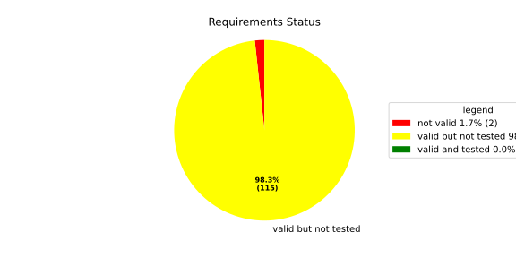
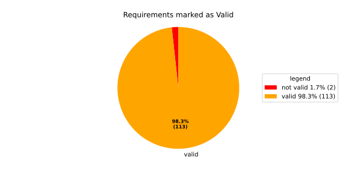
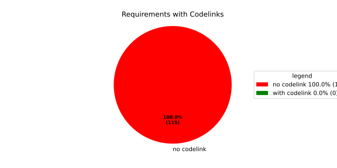

Verification Statistics#
Overview#

In Detail#


No needs passed the filters
Failed Tests
Hint: This table should be empty. Before a PR can be merged all tests have to be successful.
No needs passed the filters
Skipped / Disabled Tests
No needs passed the filters
All passed Tests#
No needs passed the filters
Details About Testcases#
No needs passed the filters
No needs passed the filters
Test Log Files#
tests-report/tests/integration/process_simple_rep_failure/process_simple_rep_failure/test.log
exec ${PAGER:-/usr/bin/less} "$0" || exit 1
Executing tests from //tests/integration/process_simple_rep_failure:process_simple_rep_failure
-----------------------------------------------------------------------------
============================= test session starts ==============================
platform linux -- Python 3.12.12, pytest-9.0.3, pluggy-1.5.0
rootdir: /home/runner/.bazel/sandbox/processwrapper-sandbox/948/execroot/_main/bazel-out/k8-fastbuild/bin/tests/integration/process_simple_rep_failure/process_simple_rep_failure.runfiles/score_itf+
configfile: pytest.ini
collected 1 item
../score_itf+::test_recovery_action_simple_rep_failure
-------------------------------- live log setup --------------------------------
[2026-06-18 14:24:53.642] [INFO] [score.itf.plugins.docker] Executing custom image bootstrap command: tests/utils/environments/x86_64-linux/x86_64-linux.sh
[2026-06-18 14:24:57.535] [DEBUG] [docker.utils.config] Trying paths: ['/home/runner/.docker/config.json', '/home/runner/.dockercfg']
[2026-06-18 14:24:57.535] [DEBUG] [docker.utils.config] Found file at path: /home/runner/.docker/config.json
[2026-06-18 14:24:57.536] [DEBUG] [docker.auth] Found 'auths' section
[2026-06-18 14:24:57.536] [DEBUG] [docker.auth] Found entry (registry='https://index.docker.io/v1/', username='githubactions')
[2026-06-18 14:24:57.550] [DEBUG] [urllib3.connectionpool] http://localhost:None "GET /version HTTP/1.1" 200 823
[2026-06-18 14:24:57.568] [DEBUG] [urllib3.connectionpool] http://localhost:None "POST /v1.48/containers/create HTTP/1.1" 201 88
[2026-06-18 14:24:57.572] [DEBUG] [urllib3.connectionpool] http://localhost:None "GET /v1.48/containers/4e9f16c582cc2ba08f76c390a8eb86969749526df5140441e5703e602483b365/json HTTP/1.1" 200 None
[2026-06-18 14:24:57.788] [DEBUG] [urllib3.connectionpool] http://localhost:None "POST /v1.48/containers/4e9f16c582cc2ba08f76c390a8eb86969749526df5140441e5703e602483b365/start HTTP/1.1" 204 0
[2026-06-18 14:24:57.789] [DEBUG] [docker.utils.config] Trying paths: ['/home/runner/.docker/config.json', '/home/runner/.dockercfg']
[2026-06-18 14:24:57.789] [DEBUG] [docker.utils.config] Found file at path: /home/runner/.docker/config.json
[2026-06-18 14:24:57.789] [DEBUG] [docker.auth] Found 'auths' section
[2026-06-18 14:24:57.790] [DEBUG] [docker.auth] Found entry (registry='https://index.docker.io/v1/', username='githubactions')
[2026-06-18 14:24:57.803] [DEBUG] [urllib3.connectionpool] http://localhost:None "GET /version HTTP/1.1" 200 823
[2026-06-18 14:24:58.027] [INFO] [tests.utils.testing_utils.setup_test] Test case setup finished
-------------------------------- live log call ---------------------------------
[2026-06-18 14:24:58.186] [INFO] [launch_manager] 2026/06/18 14:24:58.2698174 3326829 000 ECU1 LM LM log debug verbose 1 Launch Manager Started !!!!
[2026-06-18 14:24:58.186] [INFO] [launch_manager] 2026/06/18 14:24:58.2698175 3326833 000 ECU1 LM LM log debug verbose 1 Loading LCM Configurations...
[2026-06-18 14:24:58.186] [INFO] [launch_manager] 2026/06/18 14:24:58.2698175 3326833 000 ECU1 LM LM log debug verbose 1 ECUCFG_ENV_VAR_ROOTFOLDER set successfully
[2026-06-18 14:24:58.186] [INFO] [launch_manager] 2026/06/18 14:24:58.2698175 3326834 000 ECU1 LM LM log debug verbose 5 FlatBufferParser::getModeGroupPgName: MainPG ( IdentifierHash: 18079021346025578134 )
[2026-06-18 14:24:58.186] [INFO] [launch_manager] 2026/06/18 14:24:58.2698175 3326834 000 ECU1 LM LM log debug verbose 5 FlatBufferParser::getModeGroupPgStateName: MainPG/Startup ( IdentifierHash: 10504605499600661529 )
[2026-06-18 14:24:58.186] [INFO] [launch_manager] 2026/06/18 14:24:58.2698175 3326834 000 ECU1 LM LM log debug verbose 5 FlatBufferParser::getModeGroupPgStateName: MainPG/run_target_app_does_report_krunning_in_time ( IdentifierHash: 11934981641920773349 )
[2026-06-18 14:24:58.186] [INFO] [launch_manager] 2026/06/18 14:24:58.2698175 3326834 000 ECU1 LM LM log debug verbose 5 FlatBufferParser::getModeGroupPgStateName: MainPG/run_target_app_does_not_report_krunning_in_time ( IdentifierHash: 7672161913816744053 )
[2026-06-18 14:24:58.187] [INFO] [launch_manager] 2026/06/18 14:24:58.2698175 3326835 000 ECU1 LM LM log debug verbose 5 FlatBufferParser::getModeGroupPgStateName: MainPG/Off ( IdentifierHash: 15281793077830264047 )
[2026-06-18 14:24:58.187] [INFO] [launch_manager] 2026/06/18 14:24:58.2698175 3326835 000 ECU1 LM LM log debug verbose 5 FlatBufferParser::getModeGroupPgStateName: MainPG/fallback_run_target ( IdentifierHash: 4059409696722237352 )
[2026-06-18 14:24:58.187] [INFO] [launch_manager] 2026/06/18 14:24:58.2698175 3326836 000 ECU1 LM LM log debug verbose 4 parseProcessConfigurations: Process index: 0 executable_path_: /tmp/tests/process_simple_rep_failure/control_client_mock
[2026-06-18 14:24:58.187] [INFO] [launch_manager] 2026/06/18 14:24:58.2698175 3326836 000 ECU1 LM LM log debug verbose 3 Process control_client_mock is Reporting execution state
[2026-06-18 14:24:58.188] [INFO] [launch_manager] 2026/06/18 14:24:58.2698175 3326836 000 ECU1 LM LM log debug verbose 1 Process is STATE_MANAGEMENT function Cluster Affiliation
[2026-06-18 14:24:58.188] [INFO] [launch_manager] 2026/06/18 14:24:58.2698175 3326836 000 ECU1 LM LM log debug verbose 3 Process control_client_mock is Self terminating
[2026-06-18 14:24:58.188] [INFO] [launch_manager] 2026/06/18 14:24:58.2698175 3326836 000 ECU1 LM LM log debug verbose 4 ParseProcessProcessGroup: id:::pg_name_: MainPG , pg_state_name_: MainPG/Startup
[2026-06-18 14:24:58.188] [INFO] [launch_manager] 2026/06/18 14:24:58.2698175 3326837 000 ECU1 LM LM log debug verbose 4 ParseProcessProcessGroup: id:::pg_name_: MainPG , pg_state_name_: MainPG/run_target_app_does_report_krunning_in_time
[2026-06-18 14:24:58.188] [INFO] [launch_manager] 2026/06/18 14:24:58.2698175 3326837 000 ECU1 LM LM log debug verbose 4 ParseProcessProcessGroup: id:::pg_name_: MainPG , pg_state_name_: MainPG/run_target_app_does_not_report_krunning_in_time
[2026-06-18 14:24:58.188] [INFO] [launch_manager] 2026/06/18 14:24:58.2698175 3326837 000 ECU1 LM LM log debug verbose 4 ParseProcessProcessGroup: id:::pg_name_: MainPG , pg_state_name_: MainPG/fallback_run_target
[2026-06-18 14:24:58.188] [INFO] [launch_manager] 2026/06/18 14:24:58.2698175 3326838 000 ECU1 LM LM log debug verbose 4 parseProcessConfigurations: Process index: 1 executable_path_: /tmp/tests/process_simple_rep_failure/process_simple_reporting
[2026-06-18 14:24:58.188] [INFO] [launch_manager] 2026/06/18 14:24:58.2698175 3326838 000 ECU1 LM LM log debug verbose 3 Process component_does_report_krunning_in_time is Reporting execution state
[2026-06-18 14:24:58.188] [INFO] [launch_manager] 2026/06/18 14:24:58.2698175 3326838 000 ECU1 LM LM log debug verbose 1 Process is NOT associated with any function Cluster Affiliation
[2026-06-18 14:24:58.188] [INFO] [launch_manager] 2026/06/18 14:24:58.2698175 3326838 000 ECU1 LM LM log debug verbose 3 Process component_does_report_krunning_in_time is Self terminating
[2026-06-18 14:24:58.188] [INFO] [launch_manager] 2026/06/18 14:24:58.2698175 3326838 000 ECU1 LM LM log debug verbose 4 ParseProcessProcessGroup: id:::pg_name_: MainPG , pg_state_name_: MainPG/run_target_app_does_report_krunning_in_time
[2026-06-18 14:24:58.189] [INFO] [launch_manager] 2026/06/18 14:24:58.2698175 3326839 000 ECU1 LM LM log debug verbose 4 parseProcessConfigurations: Process index: 2 executable_path_: /tmp/tests/process_simple_rep_failure/process_simple_reporting
[2026-06-18 14:24:58.189] [INFO] [launch_manager] 2026/06/18 14:24:58.2698175 3326839 000 ECU1 LM LM log debug verbose 3 Process component_does_not_report_krunning_in_time is Reporting execution state
[2026-06-18 14:24:58.189] [INFO] [launch_manager] 2026/06/18 14:24:58.2698175 3326839 000 ECU1 LM LM log debug verbose 1 Process is NOT associated with any function Cluster Affiliation
[2026-06-18 14:24:58.189] [INFO] [launch_manager] 2026/06/18 14:24:58.2698175 3326839 000 ECU1 LM LM log debug verbose 3 Process component_does_not_report_krunning_in_time is Self terminating
[2026-06-18 14:24:58.189] [INFO] [launch_manager] 2026/06/18 14:24:58.2698175 3326840 000 ECU1 LM LM log debug verbose 4 ParseProcessProcessGroup: id:::pg_name_: MainPG , pg_state_name_: MainPG/run_target_app_does_not_report_krunning_in_time
[2026-06-18 14:24:58.189] [INFO] [launch_manager] 2026/06/18 14:24:58.2698176 3326842 000 ECU1 LM LM log debug verbose 4 parseProcessConfigurations: Process index: 3 executable_path_: /tmp/tests/process_simple_rep_failure/verification_process
[2026-06-18 14:24:58.189] [INFO] [launch_manager] 2026/06/18 14:24:58.2698176 3326842 000 ECU1 LM LM log debug verbose 3 Process verification_component is NOT Reporting execution state
[2026-06-18 14:24:58.189] [INFO] [launch_manager] 2026/06/18 14:24:58.2698176 3326842 000 ECU1 LM LM log debug verbose 1 Process is NOT associated with any function Cluster Affiliation
[2026-06-18 14:24:58.189] [INFO] [launch_manager] 2026/06/18 14:24:58.2698176 3326842 000 ECU1 LM LM log debug verbose 3 Process verification_component is Self terminating
[2026-06-18 14:24:58.189] [INFO] [launch_manager] 2026/06/18 14:24:58.2698176 3326843 000 ECU1 LM LM log debug verbose 4 ParseProcessProcessGroup: id:::pg_name_: MainPG , pg_state_name_: MainPG/fallback_run_target
[2026-06-18 14:24:58.189] [INFO] [launch_manager] 2026/06/18 14:24:58.2698176 3326843 000 ECU1 LM LM log debug verbose 3 Loading SWCL Nr. 0 Succeeded
[2026-06-18 14:24:58.190] [INFO] [launch_manager] 2026/06/18 14:24:58.2698176 3326843 000 ECU1 LM LM log debug verbose 2 1 process group(s)
[2026-06-18 14:24:58.190] [INFO] [launch_manager] 2026/06/18 14:24:58.2698176 3326843 000 ECU1 LM LM log debug verbose 3 Creating graph with 4 nodes
[2026-06-18 14:24:58.190] [INFO] [launch_manager] 2026/06/18 14:24:58.2698176 3326844 000 ECU1 LM LM log debug verbose 1 Process groups initialized successfully
[2026-06-18 14:24:58.190] [INFO] [launch_manager] 2026/06/18 14:24:58.2698176 3326844 000 ECU1 LM LM log debug verbose 1 Process Group initialization done
[2026-06-18 14:24:58.190] [INFO] [launch_manager] 2026/06/18 14:24:58.2698176 3326844 000 ECU1 LM LM log debug verbose 3 Creating Safe Process Map with 4 entries
[2026-06-18 14:24:58.190] [INFO] [launch_manager] 2026/06/18 14:24:58.2698176 3326844 000 ECU1 LM LM log debug verbose 2 Creating job queue with capacity 1024
[2026-06-18 14:24:58.190] [INFO] [launch_manager] 2026/06/18 14:24:58.2698176 3326844 000 ECU1 LM LM log debug verbose 1 Creating worker threads...
[2026-06-18 14:24:58.190] [INFO] [launch_manager] 2026/06/18 14:24:58.2698177 3326859 000 ECU1 LM LM log debug verbose 7 Process group index 0 (with name MainPG ) has 4 processes
[2026-06-18 14:24:58.190] [INFO] [launch_manager] 2026/06/18 14:24:58.2698177 3326860 000 ECU1 LM LM log debug verbose 2 Creating process node with id: 0
[2026-06-18 14:24:58.190] [INFO] [launch_manager] 2026/06/18 14:24:58.2698177 3326860 000 ECU1 LM LM log debug verbose 5 Process 0 has 0 start dependencies
[2026-06-18 14:24:58.190] [INFO] [launch_manager] 2026/06/18 14:24:58.2698177 3326860 000 ECU1 LM LM log debug verbose 2 Creating process node with id: 1
[2026-06-18 14:24:58.190] [INFO] [launch_manager] 2026/06/18 14:24:58.2698177 3326860 000 ECU1 LM LM log debug verbose 5 Process 1 has 0 start dependencies
[2026-06-18 14:24:58.200] [INFO] [launch_manager] 2026/06/18 14:24:58.2698178 3326861 000 ECU1 LM LM log debug verbose 2 Creating process node with id: 2
[2026-06-18 14:24:58.200] [INFO] [launch_manager] 2026/06/18 14:24:58.2698178 3326861 000 ECU1 LM LM log debug verbose 5 Process 2 has 0 start dependencies
[2026-06-18 14:24:58.200] [INFO] [launch_manager] 2026/06/18 14:24:58.2698178 3326861 000 ECU1 LM LM log debug verbose 2 Creating process node with id: 3
[2026-06-18 14:24:58.200] [INFO] [launch_manager] 2026/06/18 14:24:58.2698178 3326861 000 ECU1 LM LM log debug verbose 5 Process 3 has 0 start dependencies
[2026-06-18 14:24:58.200] [INFO] [launch_manager] 2026/06/18 14:24:58.2698178 3326861 000 ECU1 LM LM log debug verbose 3 Created 4 process nodes
[2026-06-18 14:24:58.200] [INFO] [launch_manager] 2026/06/18 14:24:58.2698178 3326862 000 ECU1 LM LM log debug verbose 2 Creating successor lists for process group MainPG
[2026-06-18 14:24:58.200] [INFO] [launch_manager] 2026/06/18 14:24:58.2698178 3326862 000 ECU1 LM LM log debug verbose 1 Graphs initialized
[2026-06-18 14:24:58.200] [INFO] [launch_manager] 2026/06/18 14:24:58.2698178 3326864 000 ECU1 LM Fcty log info verbose 2 Factory for FlatCfg MachineConfig: Loading of HM Machine Configuration succeeded.
[2026-06-18 14:24:58.200] [INFO] [launch_manager] 2026/06/18 14:24:58.2698178 3326865 000 ECU1 LM Fcty log debug verbose 3 Factory for FlatCfg MachineConfig: Alive Supervision buffer size: 100
[2026-06-18 14:24:58.200] [INFO] [launch_manager] 2026/06/18 14:24:58.2698178 3326865 000 ECU1 LM Fcty log debug verbose 3 Factory for FlatCfg MachineConfig: Monitor buffer size: 512
[2026-06-18 14:24:58.200] [INFO] [launch_manager] 2026/06/18 14:24:58.2698178 3326865 000 ECU1 LM Fcty log debug verbose 4 Factory for FlatCfg MachineConfig: Periodicity: 50000000 ns
[2026-06-18 14:24:58.201] [INFO] [launch_manager] 2026/06/18 14:24:58.2698178 3326865 000 ECU1 LM Fcty log debug verbose 3 Factory for FlatCfg MachineConfig: Configured watchdogs: 0
[2026-06-18 14:24:58.201] [INFO] [launch_manager] 2026/06/18 14:24:58.2698178 3326866 000 ECU1 LM Fcty log warn verbose 2 Factory for FlatCfg MachineConfig: No watchdog configured
[2026-06-18 14:24:58.201] [INFO] [launch_manager] 2026/06/18 14:24:58.2698178 3326866 000 ECU1 LM Fcty log debug verbose 2 Software Cluster Handler starts constructing workers: MainCluster
[2026-06-18 14:24:58.201] [INFO] [launch_manager] 2026/06/18 14:24:58.2698178 3326866 000 ECU1 LM Fcty log debug verbose 3 Factory for FlatCfg AR24-11: Successfully created Process States: control_client_mock
[2026-06-18 14:24:58.201] [INFO] [launch_manager] 2026/06/18 14:24:58.2698178 3326867 000 ECU1 LM Fcty log debug verbose 3 Factory for FlatCfg AR24-11: Number of constructed Process States: 1
[2026-06-18 14:24:58.201] [INFO] [launch_manager] 2026/06/18 14:24:58.2698178 3326868 000 ECU1 LM Fcty log debug verbose 3 Factory for FlatCfg AR24-11: Successfully created Monitor interface IPC with path: lifecycle_health_control_client_mock
[2026-06-18 14:24:58.201] [INFO] [launch_manager] 2026/06/18 14:24:58.2698178 3326868 000 ECU1 LM Fcty log debug verbose 3 Factory for FlatCfg AR24-11: Number of constructed Monitor interface IPCs: 1
[2026-06-18 14:24:58.201] [INFO] [launch_manager] 2026/06/18 14:24:58.2698178 3326868 000 ECU1 LM Fcty log debug verbose 3 Factory for FlatCfg AR24-11: Successfully created MonitorInterface: /lifecycle_health_control_client_mock
[2026-06-18 14:24:58.201] [INFO] [launch_manager] 2026/06/18 14:24:58.2698178 3326868 000 ECU1 LM Fcty log debug verbose 3 Factory for FlatCfg AR24-11: Number of constructed Monitor interfaces: 1
[2026-06-18 14:24:58.201] [INFO] [launch_manager] 2026/06/18 14:24:58.2698178 3326868 000 ECU1 LM Fcty log debug verbose 3 Factory for FlatCfg AR24-11: Successfully created supervision checkpoint: control_client_mock_checkpoint
[2026-06-18 14:24:58.201] [INFO] [launch_manager] 2026/06/18 14:24:58.2698178 3326869 000 ECU1 LM Fcty log debug verbose 3 Factory for FlatCfg AR24-11: Number of constructed supervision checkpoints: 1
[2026-06-18 14:24:58.201] [INFO] [launch_manager] 2026/06/18 14:24:58.2698178 3326869 000 ECU1 LM Fcty log debug verbose 3 Factory for FlatCfg AR24-11: Successfully created alive supervision worker object: control_client_mock_alive_supervision
[2026-06-18 14:24:58.201] [INFO] [launch_manager] 2026/06/18 14:24:58.2698178 3326869 000 ECU1 LM Fcty log debug verbose 3 Factory for FlatCfg AR24-11: Number of constructed alive supervisions: 1
[2026-06-18 14:24:58.201] [INFO] [launch_manager] 2026/06/18 14:24:58.2698178 3326869 000 ECU1 LM Fcty log info verbose 2 Phm Daemon: The (configured) periodicity in [ns] is set to: 50000000
[2026-06-18 14:24:58.201] [INFO] [launch_manager] 2026/06/18 14:24:58.2698178 3326869 000 ECU1 LM Fcty log debug verbose 2 Phm Daemon: The accuracy of the monotonic system clock in [ns] is: 1
[2026-06-18 14:24:58.201] [INFO] [launch_manager] 2026/06/18 14:24:58.2698178 3326870 000 ECU1 LM Fcty log debug verbose 3 HealthMonitor: Initialization took 0 ms
[2026-06-18 14:24:58.201] [INFO] [launch_manager] 2026/06/18 14:24:58.2698179 3326872 000 ECU1 LM LM log info verbose 1 LCM started successfully
[2026-06-18 14:24:58.201] [INFO] [launch_manager] 2026/06/18 14:24:58.2698179 3326873 000 ECU1 LM LM log debug verbose 3 clock() at run(): 36.160000 ms
[2026-06-18 14:24:58.201] [INFO] [launch_manager] 2026/06/18 14:24:58.2698179 3326873 000 ECU1 LM LM log debug verbose 1 =============STARTING MAINPG STARTUP STATE============
[2026-06-18 14:24:58.202] [INFO] [launch_manager] 2026/06/18 14:24:58.2698179 3326874 000 ECU1 LM LM log debug verbose 9 Graph::setState changes from kSuccess to kInTransition for PG 0 ( MainPG )
[2026-06-18 14:24:58.202] [INFO] [launch_manager] 2026/06/18 14:24:58.2698179 3326874 000 ECU1 LM LM log debug verbose 2 Stop Dependencies: 0
[2026-06-18 14:24:58.202] [INFO] [launch_manager] 2026/06/18 14:24:58.2698179 3326874 000 ECU1 LM LM log debug verbose 2 Stop Dependencies: 0
[2026-06-18 14:24:58.202] [INFO] [launch_manager] 2026/06/18 14:24:58.2698179 3326874 000 ECU1 LM LM log debug verbose 2 Stop Dependencies: 0
[2026-06-18 14:24:58.202] [INFO] [launch_manager] 2026/06/18 14:24:58.2698179 3326874 000 ECU1 LM LM log debug verbose 2 Stop Dependencies: 0
[2026-06-18 14:24:58.202] [INFO] [launch_manager] 2026/06/18 14:24:58.2698179 3326874 000 ECU1 LM LM log debug verbose 2 Start Dependencies: 0
[2026-06-18 14:24:58.202] [INFO] [launch_manager] 2026/06/18 14:24:58.2698179 3326875 000 ECU1 LM LM log debug verbose 2 Start Dependencies: 0
[2026-06-18 14:24:58.202] [INFO] [launch_manager] 2026/06/18 14:24:58.2698179 3326875 000 ECU1 LM LM log debug verbose 2 Start Dependencies: 0
[2026-06-18 14:24:58.202] [INFO] [launch_manager] 2026/06/18 14:24:58.2698179 3326875 000 ECU1 LM LM log debug verbose 2 Start Dependencies: 0
[2026-06-18 14:24:58.202] [INFO] [launch_manager] 2026/06/18 14:24:58.2698181 3326893 000 ECU1 LM LM log debug verbose 6 Starting process 0 ( control_client_mock ) from executable /tmp/tests/process_simple_rep_failure/control_client_mock
[2026-06-18 14:24:58.202] [INFO] [launch_manager] 2026/06/18 14:24:58.2698181 3326893 000 ECU1 LM LM log debug verbose 3 Initialize the control client for control_client_mock process
[2026-06-18 14:24:58.202] [INFO] [launch_manager] 2026/06/18 14:24:58.2698181 3326894 000 ECU1 LM LM log debug verbose 1 ControlClientChannel initialized
[2026-06-18 14:24:58.202] [INFO] [launch_manager] 2026/06/18 14:24:58.2698182 3326902 000 ECU1 LM LM log debug verbose 4 startProcess pid 66 received for process: control_client_mock
[2026-06-18 14:24:58.202] [INFO] [launch_manager] 2026/06/18 14:24:58.2698182 3326903 000 ECU1 LM LM log debug verbose 1 ControlClientChannel obtained from sync.
[2026-06-18 14:24:58.204] [INFO] [launch_manager] [==========] Running 1 test from 1 test suite.
[2026-06-18 14:24:58.205] [INFO] [launch_manager] [----------] Global test environment set-up.
[2026-06-18 14:24:58.205] [INFO] [launch_manager] [----------] 1 test from RecoveryActionSimpleRepFailure
[2026-06-18 14:24:58.205] [INFO] [launch_manager] [ RUN ] RecoveryActionSimpleRepFailure.ControlClientMock
[2026-06-18 14:24:58.205] [INFO] [launch_manager] [ STEP ] Report running from ControlClientMock
[2026-06-18 14:24:58.205] [INFO] [launch_manager] [ END STEP ] Report running from ControlClientMock
[2026-06-18 14:24:58.205] [INFO] [launch_manager] [ STEP ] Activate RunTarget run_target_app_does_report_krunning_in_time
[2026-06-18 14:24:58.205] [INFO] [launch_manager] 2026/06/18 14:24:58.2698192 3327006 000 ECU1 LM LM log debug verbose 8
[2026-06-18 14:24:58.205] [INFO] [launch_manager] Got kRunning for pid 66 ( control_client_mock ) process 0 of group MainPG
[2026-06-18 14:24:58.205] [INFO] [launch_manager] 2026/06/18 14:24:58.2698193 3327018 000 ECU1 LM LM log debug verbose 7
[2026-06-18 14:24:58.205] [INFO] [launch_manager] startProcess for MainPG process 0 ( control_client_mock ) done
[2026-06-18 14:24:58.205] [INFO] [launch_manager] 2026/06/18 14:24:58.2698193 3327020 000 ECU1 LM LM log debug verbose 1
[2026-06-18 14:24:58.205] [INFO] [launch_manager] 2026/06/18 14:24:58.2698194 3327024 000 ECU1 LM LM log debug verbose 1
[2026-06-18 14:24:58.206] [INFO] [launch_manager] Control Client handler nudged
[2026-06-18 14:24:58.206] [INFO] [launch_manager] 2026/06/18 14:24:58.2698194 3327028 000 ECU1 LM LM log debug verbose 3
[2026-06-18 14:24:58.206] [INFO] [launch_manager] clock() at successful initial state transition: 37.508000 ms
[2026-06-18 14:24:58.206] [INFO] [launch_manager] 2026/06/18 14:24:58.2698194 3327029 000 ECU1 LM LM log debug verbose 9
[2026-06-18 14:24:58.206] [INFO] [launch_manager] Graph::setState changes from kInTransition to kSuccess for PG 0 ( MainPG )
[2026-06-18 14:24:58.206] [INFO] [launch_manager] 2026/06/18 14:24:58.2698195 3327031 000 ECU1 LM LM log info verbose 7
[2026-06-18 14:24:58.206] [INFO] [launch_manager] Completed the request for PG MainPG to State MainPG/Startup in 15 ms
[2026-06-18 14:24:58.206] [INFO] [launch_manager] 2026/06/18 14:24:58.2698195 3327033 000 ECU1 LM LM log debug verbose 1
[2026-06-18 14:24:58.206] [INFO] [launch_manager] Control Client handler nudged
[2026-06-18 14:24:58.206] [INFO] [launch_manager] Request sent. Waiting for acknowledgment...
[2026-06-18 14:24:58.206] [INFO] [launch_manager] 2026/06/18 14:24:58.2698195 3327036 000 ECU1 LM LM log debug verbose 8 ProcessGroupManager::ControlClientHandler: got request kSetStateRequest ( 16 ) re state MainPG/run_target_app_does_report_krunning_in_time of PG MainPG
[2026-06-18 14:24:58.206] [INFO] [launch_manager] 2026/06/18 14:24:58.2698195 3327037 000 ECU1 LM LM log debug verbose 6 Pending state for process group MainPG changed from to MainPG/run_target_app_does_report_krunning_in_time
[2026-06-18 14:24:58.208] [INFO] [launch_manager] 2026/06/18 14:24:58.2698195 3327037 000 ECU1 LM LM log debug verbose 1 Request acknowledged.
[2026-06-18 14:24:58.208] [INFO] [launch_manager] 2026/06/18 14:24:58.2698195 3327037 000 ECU1 LM LM log debug verbose 6 Pending state for process group MainPG changed from MainPG/run_target_app_does_report_krunning_in_time to
[2026-06-18 14:24:58.208] [INFO] [launch_manager] 2026/06/18 14:24:58.2698195 3327038 000 ECU1 LM LM log debug verbose 4
[2026-06-18 14:24:58.208] [INFO] [launch_manager] Start transition to MainPG/run_target_app_does_report_krunning_in_time for PG MainPG
[2026-06-18 14:24:58.208] [INFO] [launch_manager] 2026/06/18 14:24:58.2698195 3327039 000 ECU1 LM LM log debug verbose 1 2026/06/18 14:24:58.2698195 3327039 000 ECU1 LM LM log debug verbose 9 Graph::setState changes from kSuccess to kInTransition for PG 0 ( MainPG )
[2026-06-18 14:24:58.208] [INFO] [launch_manager] 2026/06/18 14:24:58.2698195 3327040 000 ECU1 LM LM log debug verbose 2
[2026-06-18 14:24:58.208] [INFO] [launch_manager] Stop Dependencies: 0
[2026-06-18 14:24:58.208] [INFO] [launch_manager] 2026/06/18 14:24:58.2698195 3327040 000 ECU1 LM LM log debug verbose 2 Stop Dependencies: 0
[2026-06-18 14:24:58.208] [INFO] [launch_manager] 2026/06/18 14:24:58.2698195 3327040 000 ECU1 LM LM log debug verbose 2 Request acknowledged.
[2026-06-18 14:24:58.211] [INFO] [launch_manager] Stop Dependencies: 0
[2026-06-18 14:24:58.211] [INFO] [launch_manager] 2026/06/18 14:24:58.2698196 3327042 000 ECU1 LM LM log debug verbose 2 Stop Dependencies: 0
[2026-06-18 14:24:58.211] [INFO] [launch_manager] 2026/06/18 14:24:58.2698196 3327042 000 ECU1 LM LM log debug verbose 2
[2026-06-18 14:24:58.211] [INFO] [launch_manager] Start Dependencies: 0
[2026-06-18 14:24:58.211] [INFO] [launch_manager] 2026/06/18 14:24:58.2698196 3327044 000 ECU1 LM LM log debug verbose 2 Start Dependencies: 0
[2026-06-18 14:24:58.211] [INFO] [launch_manager] 2026/06/18 14:24:58.2698196 3327045 000 ECU1 LM LM log debug verbose 2 Start Dependencies: 0
[2026-06-18 14:24:58.211] [INFO] [launch_manager] 2026/06/18 14:24:58.2698196 3327046 000 ECU1 LM LM log debug verbose 2 Start Dependencies: 0
[2026-06-18 14:24:58.211] [INFO] [launch_manager] 2026/06/18 14:24:58.2698196 3327048 000 ECU1 LM LM log debug verbose 6 Starting process 1 ( component_does_report_krunning_in_time ) from executable /tmp/tests/process_simple_rep_failure/process_simple_reporting
[2026-06-18 14:24:58.211] [INFO] [launch_manager] 2026/06/18 14:24:58.2698197 3327058 000 ECU1 LM LM log debug verbose 4
[2026-06-18 14:24:58.211] [INFO] [launch_manager] startProcess pid 68 received for process: component_does_report_krunning_in_time
[2026-06-18 14:24:58.215] [INFO] [launch_manager] [==========] Running 1 test from 1 test suite.
[2026-06-18 14:24:58.215] [INFO] [launch_manager] [----------] Global test environment set-up.
[2026-06-18 14:24:58.215] [INFO] [launch_manager] [----------] 1 test from ProcessSimpleRepFailure
[2026-06-18 14:24:58.216] [INFO] [launch_manager] [ RUN ] ProcessSimpleRepFailure.ProcessSimpleReporting
[2026-06-18 14:24:58.217] [INFO] [launch_manager] [ STEP ] Check args
[2026-06-18 14:24:58.220] [INFO] [launch_manager] [ END STEP ] Check args
[2026-06-18 14:24:58.221] [INFO] [launch_manager] [ STEP ] Report running from ProcessSimpleReporting
[2026-06-18 14:24:58.251] [INFO] [launch_manager] 2026/06/18 14:24:58.2698250 3327589 000 ECU1 LM Sprv log debug verbose 6
[2026-06-18 14:24:58.251] [INFO] [launch_manager] Process with Id control_client_mock changed state PG MainPG/Startup PS 1
[2026-06-18 14:24:58.251] [INFO] [launch_manager] 2026/06/18 14:24:58.2698251 3327594 000 ECU1 LM Sprv log debug verbose 6
[2026-06-18 14:24:58.252] [INFO] [launch_manager] Process with Id control_client_mock changed state PG MainPG/Startup PS 2
[2026-06-18 14:24:58.252] [INFO] [launch_manager] 2026/06/18 14:24:58.2698251 3327597 000 ECU1 LM Sprv log debug verbose 6 Process with Id component_does_report_krunning_in_time changed state PG MainPG/run_target_app_does_report_krunning_in_time PS 1
[2026-06-18 14:24:58.252] [INFO] [launch_manager] 2026/06/18 14:24:58.2698251 3327597 000 ECU1 LM Sprv log info verbose 3 Alive Supervision ( control_client_mock_alive_supervision ) switched to OK.
[2026-06-18 14:24:58.278] [DEBUG] [tests.utils.testing_utils.run_until_file_deployed] Waiting for /tmp/tests/test_end
[2026-06-18 14:24:58.717] [INFO] [launch_manager] [ END STEP ] Report running from ProcessSimpleReporting
[2026-06-18 14:24:58.717] [INFO] [launch_manager] [ OK ] ProcessSimpleRepFailure.ProcessSimpleReporting (502 ms)
[2026-06-18 14:24:58.717] [INFO] [launch_manager] [----------] 1 test from ProcessSimpleRepFailure (502 ms total)
[2026-06-18 14:24:58.717] [INFO] [launch_manager] [----------] Global test environment tear-down
[2026-06-18 14:24:58.717] [INFO] [launch_manager] [==========] 1 test from 1 test suite ran. (502 ms total)
[2026-06-18 14:24:58.717] [INFO] [launch_manager] [ PASSED ] 1 test.
[2026-06-18 14:24:58.717] [INFO] [launch_manager] 2026/06/18 14:24:58.2698717 3332252 000 ECU1 LM LM log debug verbose 12 Child process 1 of MainPG pid 68 ( component_does_report_krunning_in_time ) for node True terminated with status 0
[2026-06-18 14:24:58.719] [INFO] [launch_manager] 2026/06/18 14:24:58.2698717 3332260 000 ECU1 LM LM log debug verbose 8 Got kRunning for pid 68 ( component_does_report_krunning_in_time ) process 1 of group MainPG
[2026-06-18 14:24:58.720] [INFO] [launch_manager] 2026/06/18 14:24:58.2698718 3332261 000 ECU1 LM LM log debug verbose 7 startProcess for MainPG process 1 ( component_does_report_krunning_in_time ) done
[2026-06-18 14:24:58.720] [INFO] [launch_manager] 2026/06/18 14:24:58.2698718 3332262 000 ECU1 LM LM log debug verbose 9 Graph::setState changes from kInTransition to kSuccess for PG 0 ( MainPG )
[2026-06-18 14:24:58.720] [INFO] [launch_manager] 2026/06/18 14:24:58.2698718 3332263 000 ECU1 LM LM log info verbose 7 Completed the request for PG MainPG to State MainPG/run_target_app_does_report_krunning_in_time in 522 ms
[2026-06-18 14:24:58.720] [INFO] [launch_manager] 2026/06/18 14:24:58.2698718 3332263 000 ECU1 LM LM log debug verbose 1 Control Client handler nudged
[2026-06-18 14:24:58.720] [INFO] [launch_manager] 2026/06/18 14:24:58.2698719 3332280 000 ECU1 LM LM log debug verbose 8 ProcessGroupManager::ControlClientHandler: Sending kSetStateSuccess ( 20 ) re state MainPG/run_target_app_does_report_krunning_in_time of PG MainPG
[2026-06-18 14:24:58.720] [INFO] [launch_manager] 2026/06/18 14:24:58.2698720 3332281 000 ECU1 LM LM log debug verbose 1 Response sent.
[2026-06-18 14:24:58.730] [INFO] [launch_manager] 2026/06/18 14:24:58.2698729 3332371 000 ECU1 LM Sprv log debug verbose 6 Process with Id component_does_report_krunning_in_time changed state PG MainPG/run_target_app_does_report_krunning_in_time PS 4
[2026-06-18 14:24:58.790] [INFO] [launch_manager] 2026/06/18 14:24:58.2698789 3332978 000 ECU1 LM LM log debug verbose 1 Response retrieved.
[2026-06-18 14:24:58.790] [INFO] [launch_manager] [ END STEP ] Activate RunTarget run_target_app_does_report_krunning_in_time
[2026-06-18 14:24:58.904] [DEBUG] [tests.utils.testing_utils.run_until_file_deployed] Waiting for /tmp/tests/test_end
[2026-06-18 14:24:59.496] [DEBUG] [tests.utils.testing_utils.run_until_file_deployed] Waiting for /tmp/tests/test_end
[2026-06-18 14:24:59.790] [INFO] [launch_manager] [ STEP ] Verify fallback run target has not been activated
[2026-06-18 14:24:59.790] [INFO] [launch_manager] [ END STEP ] Verify fallback run target has not been activated
[2026-06-18 14:24:59.791] [INFO] [launch_manager] [ STEP ] Activate RunTarget run_target_app_does_not_report_krunning_in_time
[2026-06-18 14:24:59.791] [INFO] [launch_manager] 2026/06/18 14:24:59.2699790 3342982 000 ECU1 LM LM log debug verbose 1 Request sent. Waiting for acknowledgment...
[2026-06-18 14:24:59.792] [INFO] [launch_manager] 2026/06/18 14:24:59.2699790 3342988 000 ECU1 LM LM log debug verbose 8 ProcessGroupManager::ControlClientHandler: got request kSetStateRequest ( 16 ) re state MainPG/run_target_app_does_not_report_krunning_in_time of PG MainPG
[2026-06-18 14:24:59.792] [INFO] [launch_manager] 2026/06/18 14:24:59.2699790 3342988 000 ECU1 LM LM log debug verbose 6 Pending state for process group MainPG changed from to MainPG/run_target_app_does_not_report_krunning_in_time
[2026-06-18 14:24:59.793] [INFO] [launch_manager] 2026/06/18 14:24:59.2699790 3342988 000 ECU1 LM LM log debug verbose 1 Request acknowledged.
[2026-06-18 14:24:59.793] [INFO] [launch_manager] 2026/06/18 14:24:59.2699790 3342989 000 ECU1 LM LM log debug verbose 6 Pending state for process group MainPG changed from MainPG/run_target_app_does_not_report_krunning_in_time to
[2026-06-18 14:24:59.793] [INFO] [launch_manager] 2026/06/18 14:24:59.2699790 3342989 000 ECU1 LM LM log debug verbose 4 Start transition to MainPG/run_target_app_does_not_report_krunning_in_time for PG MainPG
[2026-06-18 14:24:59.794] [INFO] [launch_manager] 2026/06/18 14:24:59.2699790 3342989 000 ECU1 LM LM log debug verbose 9 Graph::setState changes from kSuccess to kInTransition for PG 0 ( MainPG )
[2026-06-18 14:24:59.794] [INFO] [launch_manager] 2026/06/18 14:24:59.2699790 3342989 000 ECU1 LM LM log debug verbose 2 Stop Dependencies: 0
[2026-06-18 14:24:59.794] [INFO] [launch_manager] 2026/06/18 14:24:59.2699790 3342989 000 ECU1 LM LM log debug verbose 2 Stop Dependencies: 0
[2026-06-18 14:24:59.794] [INFO] [launch_manager] 2026/06/18 14:24:59.2699790 3342990 000 ECU1 LM LM log debug verbose 2 Stop Dependencies: 0
[2026-06-18 14:24:59.794] [INFO] [launch_manager] 2026/06/18 14:24:59.2699790 3342990 000 ECU1 LM LM log debug verbose 2 Stop Dependencies: 0
[2026-06-18 14:24:59.794] [INFO] [launch_manager] 2026/06/18 14:24:59.2699790 3342990 000 ECU1 LM LM log debug verbose 2 Start Dependencies: 0
[2026-06-18 14:24:59.794] [INFO] [launch_manager] 2026/06/18 14:24:59.2699790 3342991 000 ECU1 LM LM log debug verbose 2 Start Dependencies: 0
[2026-06-18 14:24:59.794] [INFO] [launch_manager] 2026/06/18 14:24:59.2699791 3342991 000 ECU1 LM LM log debug verbose 2 Start Dependencies: 0
[2026-06-18 14:24:59.794] [INFO] [launch_manager] 2026/06/18 14:24:59.2699791 3342991 000 ECU1 LM LM log debug verbose 2 Start Dependencies: 0
[2026-06-18 14:24:59.794] [INFO] [launch_manager] 2026/06/18 14:24:59.2699791 3342993 000 ECU1 LM LM log debug verbose 6 Starting process 2 ( component_does_not_report_krunning_in_time ) from executable /tmp/tests/process_simple_rep_failure/process_simple_reporting
[2026-06-18 14:24:59.795] [INFO] [launch_manager] 2026/06/18 14:24:59.2699792 3343004 000 ECU1 LM LM log debug verbose 1
[2026-06-18 14:24:59.795] [INFO] [launch_manager] Request acknowledged.
[2026-06-18 14:24:59.795] [INFO] [launch_manager] 2026/06/18 14:24:59.2699792 3343006 000 ECU1 LM LM log debug verbose 4
[2026-06-18 14:24:59.795] [INFO] [launch_manager] startProcess pid 85 received for process: component_does_not_report_krunning_in_time
[2026-06-18 14:24:59.795] [INFO] [launch_manager] [==========] Running 1 test from 1 test suite.
[2026-06-18 14:24:59.796] [INFO] [launch_manager] [----------] Global test environment set-up.
[2026-06-18 14:24:59.796] [INFO] [launch_manager] [----------] 1 test from ProcessSimpleRepFailure
[2026-06-18 14:24:59.796] [INFO] [launch_manager] [ RUN ] ProcessSimpleRepFailure.ProcessSimpleReporting
[2026-06-18 14:24:59.796] [INFO] [launch_manager] [ STEP ] Check args
[2026-06-18 14:24:59.796] [INFO] [launch_manager] [ END STEP ] Check args
[2026-06-18 14:24:59.796] [INFO] [launch_manager] [ STEP ] Report running from ProcessSimpleReporting
[2026-06-18 14:24:59.829] [INFO] [launch_manager] 2026/06/18 14:24:59.2699829 3343372 000 ECU1 LM Sprv log debug verbose 6 Process with Id component_does_not_report_krunning_in_time changed state PG MainPG/run_target_app_does_not_report_krunning_in_time PS 1
[2026-06-18 14:25:00.055] [DEBUG] [tests.utils.testing_utils.run_until_file_deployed] Waiting for /tmp/tests/test_end
[2026-06-18 14:25:00.623] [DEBUG] [tests.utils.testing_utils.run_until_file_deployed] Waiting for /tmp/tests/test_end
[2026-06-18 14:25:00.886] [INFO] [launch_manager] 2026/06/18 14:25:00.2700886 3353945 000 ECU1 LM LM log error verbose 1 Semaphore timedWait or post failed: Unable to wait or post on semaphores within the specified timeout.
[2026-06-18 14:25:00.887] [INFO] [launch_manager] 2026/06/18 14:25:00.2700886 3353947 000 ECU1 LM LM log warn verbose 5 Got kRunning timeout for process 2 ( component_does_not_report_krunning_in_time )
[2026-06-18 14:25:00.887] [INFO] [launch_manager] 2026/06/18 14:25:00.2700886 3353948 000 ECU1 LM LM log debug verbose 5
[2026-06-18 14:25:00.887] [INFO] [launch_manager] terminating process 2 ( component_does_not_report_krunning_in_time )
[2026-06-18 14:25:00.887] [INFO] [launch_manager] 2026/06/18 14:25:00.2700886 3353949 000 ECU1 LM LM log debug verbose 9
[2026-06-18 14:25:00.887] [INFO] [launch_manager] Requesting termination of process 2 of MainPG pid 85 ( component_does_not_report_krunning_in_time )
[2026-06-18 14:25:00.887] [INFO] [launch_manager] 2026/06/18 14:25:00.2700886 3353950 000 ECU1 LM LM log debug verbose 2
[2026-06-18 14:25:00.888] [INFO] [launch_manager] Request termination received for 85
[2026-06-18 14:25:00.929] [INFO] [launch_manager] 2026/06/18 14:25:00.2700929 3354372 000 ECU1 LM Sprv log debug verbose 6 Process with Id component_does_not_report_krunning_in_time changed state PG MainPG/run_target_app_does_not_report_krunning_in_time PS 3
[2026-06-18 14:25:01.187] [DEBUG] [tests.utils.testing_utils.run_until_file_deployed] Waiting for /tmp/tests/test_end
[2026-06-18 14:25:01.756] [DEBUG] [tests.utils.testing_utils.run_until_file_deployed] Waiting for /tmp/tests/test_end
[2026-06-18 14:25:01.953] [INFO] [launch_manager] 2026/06/18 14:25:01.2701952 3364603 000 ECU1 LM LM log warn verbose 5 Process 2 ( component_does_not_report_krunning_in_time ) did not respond to SIGTERM, sending SIGKILL
[2026-06-18 14:25:01.953] [INFO] [launch_manager] 2026/06/18 14:25:01.2701952 3364603 000 ECU1 LM LM log debug verbose 2 Forced termination received for pid 85
[2026-06-18 14:25:01.953] [INFO] [launch_manager] 2026/06/18 14:25:01.2701952 3364607 000 ECU1 LM LM log debug verbose 12 Child process 2 of MainPG pid 85 ( component_does_not_report_krunning_in_time ) for node True terminated with status 9
[2026-06-18 14:25:01.954] [INFO] [launch_manager] 2026/06/18 14:25:01.2701952 3364608 000 ECU1 LM LM log warn verbose 7
[2026-06-18 14:25:01.954] [INFO] [launch_manager] unexpected termination of process 2 pid 85 ( component_does_not_report_krunning_in_time )
[2026-06-18 14:25:01.954] [INFO] [launch_manager] 2026/06/18 14:25:01.2701952 3364609 000 ECU1 LM LM log debug verbose 9
[2026-06-18 14:25:01.954] [INFO] [launch_manager] Graph::setState changes from kInTransition to kAborting for PG 0 ( MainPG )
[2026-06-18 14:25:01.954] [INFO] [launch_manager] 2026/06/18 14:25:01.2701954 3364624 000 ECU1 LM LM log debug verbose 7 terminateProcess for MainPG process 2 ( component_does_not_report_krunning_in_time ) done
[2026-06-18 14:25:01.954] [INFO] [launch_manager] 2026/06/18 14:25:01.2701954 3364625 000 ECU1 LM LM log debug verbose 7 startProcess for MainPG process 2 ( component_does_not_report_krunning_in_time ) done
[2026-06-18 14:25:01.954] [INFO] [launch_manager] 2026/06/18 14:25:01.2701954 3364625 000 ECU1 LM LM log debug verbose 9 Graph::setState changes from kAborting to kUndefinedState for PG 0 ( MainPG )
[2026-06-18 14:25:01.955] [INFO] [launch_manager] 2026/06/18 14:25:01.2701954 3364626 000 ECU1 LM LM log debug verbose 1 Control Client handler nudged
[2026-06-18 14:25:01.956] [INFO] [launch_manager] 2026/06/18 14:25:01.2701956 3364642 000 ECU1 LM LM log debug verbose 8 ProcessGroupManager::ControlClientHandler: Sending kFailedUnexpectedTerminationOnEnter ( 23 ) re state MainPG/run_target_app_does_not_report_krunning_in_time of PG MainPG
[2026-06-18 14:25:01.956] [INFO] [launch_manager] 2026/06/18 14:25:01.2701956 3364642 000 ECU1 LM LM log debug verbose 1 Response sent.
[2026-06-18 14:25:01.956] [INFO] [launch_manager] 2026/06/18 14:25:01.2701956 3364643 000 ECU1 LM LM log warn verbose 3 Problem discovered in PG MainPG Activating Recovery state.
[2026-06-18 14:25:01.956] [INFO] [launch_manager] 2026/06/18 14:25:01.2701956 3364643 000 ECU1 LM LM log debug verbose 9 Graph::setState changes from kUndefinedState to kInTransition for PG 0 ( MainPG )
[2026-06-18 14:25:01.957] [INFO] [launch_manager] 2026/06/18 14:25:01.2701956 3364643 000 ECU1 LM LM log debug verbose 2 Stop Dependencies: 0
[2026-06-18 14:25:01.957] [INFO] [launch_manager] 2026/06/18 14:25:01.2701956 3364643 000 ECU1 LM LM log debug verbose 2 Stop Dependencies: 0
[2026-06-18 14:25:01.957] [INFO] [launch_manager] 2026/06/18 14:25:01.2701956 3364644 000 ECU1 LM LM log debug verbose 2 Stop Dependencies: 0
[2026-06-18 14:25:01.957] [INFO] [launch_manager] 2026/06/18 14:25:01.2701956 3364644 000 ECU1 LM LM log debug verbose 2 Stop Dependencies: 0
[2026-06-18 14:25:01.961] [INFO] [launch_manager] 2026/06/18 14:25:01.2701956 3364644 000 ECU1 LM LM log debug verbose 2 Start Dependencies: 0
[2026-06-18 14:25:01.962] [INFO] [launch_manager] 2026/06/18 14:25:01.2701956 3364644 000 ECU1 LM LM log debug verbose 2 Start Dependencies: 0
[2026-06-18 14:25:01.962] [INFO] [launch_manager] 2026/06/18 14:25:01.2701956 3364644 000 ECU1 LM LM log debug verbose 2 Start Dependencies: 0
[2026-06-18 14:25:01.962] [INFO] [launch_manager] 2026/06/18 14:25:01.2701956 3364644 000 ECU1 LM LM log debug verbose 2 Start Dependencies: 0
[2026-06-18 14:25:01.962] [INFO] [launch_manager] 2026/06/18 14:25:01.2701956 3364645 000 ECU1 LM LM log debug verbose 6 Starting process 3 ( verification_component ) from executable /tmp/tests/process_simple_rep_failure/verification_process
[2026-06-18 14:25:01.962] [INFO] [launch_manager] 2026/06/18 14:25:01.2701957 3364651 000 ECU1 LM LM log debug verbose 4 startProcess pid 113 received for process: verification_component
[2026-06-18 14:25:01.962] [INFO] [launch_manager] 2026/06/18 14:25:01.2701957 3364652 000 ECU1 LM LM log debug verbose 8 Considered kRunning for Non Reporting Process pid 113 ( verification_component ) process 3 of group MainPG
[2026-06-18 14:25:01.962] [INFO] [launch_manager] 2026/06/18 14:25:01.2701957 3364652 000 ECU1 LM LM log debug verbose 7 startProcess for MainPG process 3 ( verification_component ) done
[2026-06-18 14:25:01.962] [INFO] [launch_manager] 2026/06/18 14:25:01.2701957 3364653 000 ECU1 LM LM log debug verbose 9 Graph::setState changes from kInTransition to kSuccess for PG 0 ( MainPG )
[2026-06-18 14:25:01.962] [INFO] [launch_manager] 2026/06/18 14:25:01.2701957 3364653 000 ECU1 LM LM log info verbose 7 Completed the request for PG MainPG to State MainPG/fallback_run_target in 0 ms
[2026-06-18 14:25:01.962] [INFO] [launch_manager] 2026/06/18 14:25:01.2701957 3364653 000 ECU1 LM LM log debug verbose 1 Control Client handler nudged
[2026-06-18 14:25:01.963] [INFO] [launch_manager] 2026/06/18 14:25:01.2701958 3364670 000 ECU1 LM LM log debug verbose 8 ProcessGroupManager::ControlClientHandler: Sending kSetStateSuccess ( 20 ) re state MainPG/fallback_run_target of PG MainPG
[2026-06-18 14:25:01.963] [INFO] [launch_manager] 2026/06/18 14:25:01.2701958 3364671 000 ECU1 LM LM log debug verbose 1 Failed to send response: response is not empty.
[2026-06-18 14:25:01.963] [INFO] [launch_manager] 2026/06/18 14:25:01.2701959 3364671 000 ECU1 LM LM log debug verbose 1 Control Client handler nudged
[2026-06-18 14:25:01.963] [INFO] [launch_manager] 2026/06/18 14:25:01.2701959 3364671 000 ECU1 LM LM log debug verbose 8 ProcessGroupManager::ControlClientHandler: Sending kSetStateSuccess ( 20 ) re state MainPG/fallback_run_target of PG MainPG
[2026-06-18 14:25:01.963] [INFO] [launch_manager] 2026/06/18 14:25:01.2701959 3364671 000 ECU1 LM LM log debug verbose 1 Failed to send response: response is not empty.
[2026-06-18 14:25:01.963] [INFO] [launch_manager] 2026/06/18 14:25:01.2701959 3364671 000 ECU1 LM LM log debug verbose 1 Control Client handler nudged
[2026-06-18 14:25:01.964] [INFO] [launch_manager] 2026/06/18 14:25:01.2701959 3364672 000 ECU1 LM LM log debug verbose 8 ProcessGroupManager::ControlClientHandler: Sending kSetStateSuccess ( 20 ) re state MainPG/fallback_run_target of PG MainPG
[2026-06-18 14:25:01.964] [INFO] [launch_manager] 2026/06/18 14:25:01.2701959 3364672 000 ECU1 LM LM log debug verbose 1 Failed to send response: response is not empty.
[2026-06-18 14:25:01.964] [INFO] [launch_manager] 2026/06/18 14:25:01.2701959 3364672 000 ECU1 LM LM log debug verbose 1 Control Client handler nudged
[2026-06-18 14:25:01.964] [INFO] [launch_manager] 2026/06/18 14:25:01.2701959 3364672 000 ECU1 LM LM log debug verbose 8 ProcessGroupManager::ControlClientHandler: Sending kSetStateSuccess ( 20 ) re state MainPG/fallback_run_target of PG MainPG
[2026-06-18 14:25:01.964] [INFO] [launch_manager] 2026/06/18 14:25:01.2701959 3364672 000 ECU1 LM LM log debug verbose 1 Failed to send response: response is not empty.
[2026-06-18 14:25:01.964] [INFO] [launch_manager] 2026/06/18 14:25:01.2701959 3364672 000 ECU1 LM LM log debug verbose 1 Control Client handler nudged
[2026-06-18 14:25:01.964] [INFO] [launch_manager] 2026/06/18 14:25:01.2701959 3364673 000 ECU1 LM LM log debug verbose 8 ProcessGroupManager::ControlClientHandler: Sending kSetStateSuccess ( 20 ) re state MainPG/fallback_run_target of PG MainPG
[2026-06-18 14:25:01.964] [INFO] [launch_manager] 2026/06/18 14:25:01.2701959 3364673 000 ECU1 LM LM log debug verbose 1 Failed to send response: response is not empty.
[2026-06-18 14:25:01.964] [INFO] [launch_manager] 2026/06/18 14:25:01.2701959 3364673 000 ECU1 LM LM log debug verbose 1 Control Client handler nudged
[2026-06-18 14:25:01.964] [INFO] [launch_manager] 2026/06/18 14:25:01.2701959 3364673 000 ECU1 LM LM log debug verbose 8 ProcessGroupManager::ControlClientHandler: Sending kSetStateSuccess ( 20 ) re state MainPG/fallback_run_target of PG MainPG
[2026-06-18 14:25:01.964] [INFO] [launch_manager] 2026/06/18 14:25:01.2701959 3364673 000 ECU1 LM LM log debug verbose 1 Failed to send response: response is not empty.
[2026-06-18 14:25:01.964] [INFO] [launch_manager] 2026/06/18 14:25:01.2701959 3364674 000 ECU1 LM LM log debug verbose 1 Control Client handler nudged
[2026-06-18 14:25:01.964] [INFO] [launch_manager] 2026/06/18 14:25:01.2701959 3364674 000 ECU1 LM LM log debug verbose 8 ProcessGroupManager::ControlClientHandler: Sending kSetStateSuccess ( 20 ) re state MainPG/fallback_run_target of PG MainPG
[2026-06-18 14:25:01.964] [INFO] [launch_manager] 2026/06/18 14:25:01.2701959 3364674 000 ECU1 LM LM log debug verbose 1 Failed to send response: response is not empty.
[2026-06-18 14:25:01.964] [INFO] [launch_manager] 2026/06/18 14:25:01.2701959 3364674 000 ECU1 LM LM log debug verbose 1 Control Client handler nudged
[2026-06-18 14:25:01.964] [INFO] [launch_manager] 2026/06/18 14:25:01.2701959 3364674 000 ECU1 LM LM log debug verbose 8 ProcessGroupManager::ControlClientHandler: Sending kSetStateSuccess ( 20 ) re state MainPG/fallback_run_target of PG MainPG
[2026-06-18 14:25:01.964] [INFO] [launch_manager] 2026/06/18 14:25:01.2701959 3364675 000 ECU1 LM LM log debug verbose 1 Failed to send response: response is not empty.
[2026-06-18 14:25:01.964] [INFO] [launch_manager] 2026/06/18 14:25:01.2701959 3364675 000 ECU1 LM LM log debug verbose 1 Control Client handler nudged
[2026-06-18 14:25:01.964] [INFO] [launch_manager] 2026/06/18 14:25:01.2701959 3364675 000 ECU1 LM LM log debug verbose 8 ProcessGroupManager::ControlClientHandler: Sending kSetStateSuccess ( 20 ) re state MainPG/fallback_run_target of PG MainPG
[2026-06-18 14:25:01.965] [INFO] [launch_manager] 2026/06/18 14:25:01.2701959 3364675 000 ECU1 LM LM log debug verbose 1 Failed to send response: response is not empty.
[2026-06-18 14:25:01.965] [INFO] [launch_manager] 2026/06/18 14:25:01.2701959 3364675 000 ECU1 LM LM log debug verbose 1 Control Client handler nudged
[2026-06-18 14:25:01.965] [INFO] [launch_manager] 2026/06/18 14:25:01.2701959 3364675 000 ECU1 LM LM log debug verbose 8 ProcessGroupManager::ControlClientHandler: Sending kSetStateSuccess ( 20 ) re state MainPG/fallback_run_target of PG MainPG
[2026-06-18 14:25:01.965] [INFO] [launch_manager] 2026/06/18 14:25:01.2701959 3364676 000 ECU1 LM LM log debug verbose 1 Failed to send response: response is not empty.
[2026-06-18 14:25:01.965] [INFO] [launch_manager] 2026/06/18 14:25:01.2701959 3364676 000 ECU1 LM LM log debug verbose 1 Control Client handler nudged
[2026-06-18 14:25:01.965] [INFO] [launch_manager] 2026/06/18 14:25:01.2701959 3364676 000 ECU1 LM LM log debug verbose 8 ProcessGroupManager::ControlClientHandler: Sending kSetStateSuccess ( 20 ) re state MainPG/fallback_run_target of PG MainPG
[2026-06-18 14:25:01.965] [INFO] [launch_manager] 2026/06/18 14:25:01.2701959 3364676 000 ECU1 LM LM log debug verbose 1 Failed to send response: response is not empty.
[2026-06-18 14:25:01.965] [INFO] [launch_manager] 2026/06/18 14:25:01.2701959 3364676 000 ECU1 LM LM log debug verbose 1 Control Client handler nudged
[2026-06-18 14:25:01.965] [INFO] [launch_manager] 2026/06/18 14:25:01.2701959 3364677 000 ECU1 LM LM log debug verbose 8 ProcessGroupManager::ControlClientHandler: Sending kSetStateSuccess ( 20 ) re state MainPG/fallback_run_target of PG MainPG
[2026-06-18 14:25:01.965] [INFO] [launch_manager] 2026/06/18 14:25:01.2701959 3364677 000 ECU1 LM LM log debug verbose 1 Failed to send response: response is not empty.
[2026-06-18 14:25:01.965] [INFO] [launch_manager] 2026/06/18 14:25:01.2701959 3364677 000 ECU1 LM LM log debug verbose 1 Control Client handler nudged
[2026-06-18 14:25:01.965] [INFO] [launch_manager] 2026/06/18 14:25:01.2701959 3364677 000 ECU1 LM LM log debug verbose 8 ProcessGroupManager::ControlClientHandler: Sending kSetStateSuccess ( 20 ) re state MainPG/fallback_run_target of PG MainPG
[2026-06-18 14:25:01.965] [INFO] [launch_manager] 2026/06/18 14:25:01.2701959 3364677 000 ECU1 LM LM log debug verbose 1 Failed to send response: response is not empty.
[2026-06-18 14:25:01.965] [INFO] [launch_manager] 2026/06/18 14:25:01.2701959 3364677 000 ECU1 LM LM log debug verbose 1 Control Client handler nudged
[2026-06-18 14:25:01.965] [INFO] [launch_manager] 2026/06/18 14:25:01.2701959 3364678 000 ECU1 LM LM log debug verbose 8 ProcessGroupManager::ControlClientHandler: Sending kSetStateSuccess ( 20 ) re state MainPG/fallback_run_target of PG MainPG
[2026-06-18 14:25:01.965] [INFO] [launch_manager] 2026/06/18 14:25:01.2701959 3364678 000 ECU1 LM LM log debug verbose 1 Failed to send response: response is not empty.
[2026-06-18 14:25:01.965] [INFO] [launch_manager] 2026/06/18 14:25:01.2701959 3364678 000 ECU1 LM LM log debug verbose 1 Control Client handler nudged
[2026-06-18 14:25:01.965] [INFO] [launch_manager] 2026/06/18 14:25:01.2701959 3364678 000 ECU1 LM LM log debug verbose 8 ProcessGroupManager::ControlClientHandler: Sending kSetStateSuccess ( 20 ) re state MainPG/fallback_run_target of PG MainPG
[2026-06-18 14:25:01.965] [INFO] [launch_manager] 2026/06/18 14:25:01.2701959 3364678 000 ECU1 LM LM log debug verbose 1 Failed to send response: response is not empty.
[2026-06-18 14:25:01.965] [INFO] [launch_manager] 2026/06/18 14:25:01.2701959 3364679 000 ECU1 LM LM log debug verbose 1 Control Client handler nudged
[2026-06-18 14:25:01.965] [INFO] [launch_manager] 2026/06/18 14:25:01.2701959 3364679 000 ECU1 LM LM log debug verbose 8 ProcessGroupManager::ControlClientHandler: Sending kSetStateSuccess ( 20 ) re state MainPG/fallback_run_target of PG MainPG
[2026-06-18 14:25:01.966] [INFO] [launch_manager] 2026/06/18 14:25:01.2701959 3364679 000 ECU1 LM LM log debug verbose 1 Failed to send response: response is not empty.
[2026-06-18 14:25:01.966] [INFO] [launch_manager] 2026/06/18 14:25:01.2701959 3364679 000 ECU1 LM LM log debug verbose 1 Control Client handler nudged
[2026-06-18 14:25:01.966] [INFO] [launch_manager] 2026/06/18 14:25:01.2701959 3364679 000 ECU1 LM LM log debug verbose 8 ProcessGroupManager::ControlClientHandler: Sending kSetStateSuccess ( 20 ) re state MainPG/fallback_run_target of PG MainPG
[2026-06-18 14:25:01.966] [INFO] [launch_manager] 2026/06/18 14:25:01.2701959 3364679 000 ECU1 LM LM log debug verbose 1 Failed to send response: response is not empty.
[2026-06-18 14:25:01.966] [INFO] [launch_manager] 2026/06/18 14:25:01.2701959 3364680 000 ECU1 LM LM log debug verbose 1 Control Client handler nudged
[2026-06-18 14:25:01.966] [INFO] [launch_manager] 2026/06/18 14:25:01.2701959 3364680 000 ECU1 LM LM log debug verbose 8 ProcessGroupManager::ControlClientHandler: Sending kSetStateSuccess ( 20 ) re state MainPG/fallback_run_target of PG MainPG
[2026-06-18 14:25:01.966] [INFO] [launch_manager] 2026/06/18 14:25:01.2701959 3364680 000 ECU1 LM LM log debug verbose 1 Failed to send response: response is not empty.
[2026-06-18 14:25:01.966] [INFO] [launch_manager] 2026/06/18 14:25:01.2701959 3364680 000 ECU1 LM LM log debug verbose 1 Control Client handler nudged
[2026-06-18 14:25:01.966] [INFO] [launch_manager] 2026/06/18 14:25:01.2701960 3364681 000 ECU1 LM LM log debug verbose 8 ProcessGroupManager::ControlClientHandler: Sending kSetStateSuccess ( 20 ) re state MainPG/fallback_run_target of PG MainPG
[2026-06-18 14:25:01.966] [INFO] [launch_manager] 2026/06/18 14:25:01.2701960 3364681 000 ECU1 LM LM log debug verbose 1 Failed to send response: response is not empty.
[2026-06-18 14:25:01.966] [INFO] [launch_manager] 2026/06/18 14:25:01.2701960 3364681 000 ECU1 LM LM log debug verbose 1 Control Client handler nudged
[2026-06-18 14:25:01.966] [INFO] [launch_manager] 2026/06/18 14:25:01.2701960 3364681 000 ECU1 LM LM log debug verbose 8 ProcessGroupManager::ControlClientHandler: Sending kSetStateSuccess ( 20 ) re state MainPG/fallback_run_target of PG MainPG
[2026-06-18 14:25:01.966] [INFO] [launch_manager] 2026/06/18 14:25:01.2701960 3364681 000 ECU1 LM LM log debug verbose 1 Failed to send response: response is not empty.
[2026-06-18 14:25:01.966] [INFO] [launch_manager] 2026/06/18 14:25:01.2701960 3364682 000 ECU1 LM LM log debug verbose 1 Control Client handler nudged
[2026-06-18 14:25:01.966] [INFO] [launch_manager] 2026/06/18 14:25:01.2701960 3364682 000 ECU1 LM LM log debug verbose 8 ProcessGroupManager::ControlClientHandler: Sending kSetStateSuccess ( 20 ) re state MainPG/fallback_run_target of PG MainPG
[2026-06-18 14:25:01.966] [INFO] [launch_manager] 2026/06/18 14:25:01.2701960 3364682 000 ECU1 LM LM log debug verbose 1 Failed to send response: response is not empty.
[2026-06-18 14:25:01.966] [INFO] [launch_manager] 2026/06/18 14:25:01.2701960 3364682 000 ECU1 LM LM log debug verbose 1 Control Client handler nudged
[2026-06-18 14:25:01.966] [INFO] [launch_manager] 2026/06/18 14:25:01.2701960 3364682 000 ECU1 LM LM log debug verbose 8 ProcessGroupManager::ControlClientHandler: Sending kSetStateSuccess ( 20 ) re state MainPG/fallback_run_target of PG MainPG
[2026-06-18 14:25:01.966] [INFO] [launch_manager] 2026/06/18 14:25:01.2701960 3364683 000 ECU1 LM LM log debug verbose 1 Failed to send response: response is not empty.
[2026-06-18 14:25:01.966] [INFO] [launch_manager] 2026/06/18 14:25:01.2701960 3364683 000 ECU1 LM LM log debug verbose 1 Control Client handler nudged
[2026-06-18 14:25:01.967] [INFO] [launch_manager] 2026/06/18 14:25:01.2701960 3364683 000 ECU1 LM LM log debug verbose 8 ProcessGroupManager::ControlClientHandler: Sending kSetStateSuccess ( 20 ) re state MainPG/fallback_run_target of PG MainPG
[2026-06-18 14:25:01.967] [INFO] [launch_manager] 2026/06/18 14:25:01.2701960 3364683 000 ECU1 LM LM log debug verbose 1 Failed to send response: response is not empty.
[2026-06-18 14:25:01.967] [INFO] [launch_manager] 2026/06/18 14:25:01.2701960 3364683 000 ECU1 LM LM log debug verbose 1 Control Client handler nudged
[2026-06-18 14:25:01.967] [INFO] [launch_manager] 2026/06/18 14:25:01.2701960 3364683 000 ECU1 LM LM log debug verbose 8 ProcessGroupManager::ControlClientHandler: Sending kSetStateSuccess ( 20 ) re state MainPG/fallback_run_target of PG MainPG
[2026-06-18 14:25:01.967] [INFO] [launch_manager] 2026/06/18 14:25:01.2701960 3364684 000 ECU1 LM LM log debug verbose 1 Failed to send response: response is not empty.
[2026-06-18 14:25:01.967] [INFO] [launch_manager] 2026/06/18 14:25:01.2701960 3364684 000 ECU1 LM LM log debug verbose 1 Control Client handler nudged
[2026-06-18 14:25:01.967] [INFO] [launch_manager] 2026/06/18 14:25:01.2701960 3364684 000 ECU1 LM LM log debug verbose 8 ProcessGroupManager::ControlClientHandler: Sending kSetStateSuccess ( 20 ) re state MainPG/fallback_run_target of PG MainPG
[2026-06-18 14:25:01.967] [INFO] [launch_manager] 2026/06/18 14:25:01.2701960 3364684 000 ECU1 LM LM log debug verbose 1 Failed to send response: response is not empty.
[2026-06-18 14:25:01.967] [INFO] [launch_manager] 2026/06/18 14:25:01.2701960 3364684 000 ECU1 LM LM log debug verbose 1 Control Client handler nudged
[2026-06-18 14:25:01.967] [INFO] [launch_manager] 2026/06/18 14:25:01.2701960 3364685 000 ECU1 LM LM log debug verbose 8 ProcessGroupManager::ControlClientHandler: Sending kSetStateSuccess ( 20 ) re state MainPG/fallback_run_target of PG MainPG
[2026-06-18 14:25:01.967] [INFO] [launch_manager] 2026/06/18 14:25:01.2701960 3364685 000 ECU1 LM LM log debug verbose 1 Failed to send response: response is not empty.
[2026-06-18 14:25:01.967] [INFO] [launch_manager] 2026/06/18 14:25:01.2701960 3364685 000 ECU1 LM LM log debug verbose 1 Control Client handler nudged
[2026-06-18 14:25:01.967] [INFO] [launch_manager] 2026/06/18 14:25:01.2701960 3364685 000 ECU1 LM LM log debug verbose 8 ProcessGroupManager::ControlClientHandler: Sending kSetStateSuccess ( 20 ) re state MainPG/fallback_run_target of PG MainPG
[2026-06-18 14:25:01.967] [INFO] [launch_manager] 2026/06/18 14:25:01.2701960 3364685 000 ECU1 LM LM log debug verbose 1 Failed to send response: response is not empty.
[2026-06-18 14:25:01.967] [INFO] [launch_manager] 2026/06/18 14:25:01.2701960 3364685 000 ECU1 LM LM log debug verbose 1 Control Client handler nudged
[2026-06-18 14:25:01.967] [INFO] [launch_manager] 2026/06/18 14:25:01.2701960 3364686 000 ECU1 LM LM log debug verbose 8 ProcessGroupManager::ControlClientHandler: Sending kSetStateSuccess ( 20 ) re state MainPG/fallback_run_target of PG MainPG
[2026-06-18 14:25:01.967] [INFO] [launch_manager] 2026/06/18 14:25:01.2701960 3364686 000 ECU1 LM LM log debug verbose 1 Failed to send response: response is not empty.
[2026-06-18 14:25:01.967] [INFO] [launch_manager] 2026/06/18 14:25:01.2701960 3364686 000 ECU1 LM LM log debug verbose 1 Control Client handler nudged
[2026-06-18 14:25:01.967] [INFO] [launch_manager] 2026/06/18 14:25:01.2701960 3364686 000 ECU1 LM LM log debug verbose 8 ProcessGroupManager::ControlClientHandler: Sending kSetStateSuccess ( 20 ) re state MainPG/fallback_run_target of PG MainPG
[2026-06-18 14:25:01.968] [INFO] [launch_manager] 2026/06/18 14:25:01.2701960 3364686 000 ECU1 LM LM log debug verbose 1 Failed to send response: response is not empty.
[2026-06-18 14:25:01.968] [INFO] [launch_manager] 2026/06/18 14:25:01.2701960 3364686 000 ECU1 LM LM log debug verbose 1 Control Client handler nudged
[2026-06-18 14:25:01.968] [INFO] [launch_manager] 2026/06/18 14:25:01.2701960 3364687 000 ECU1 LM LM log debug verbose 8 ProcessGroupManager::ControlClientHandler: Sending kSetStateSuccess ( 20 ) re state MainPG/fallback_run_target of PG MainPG
[2026-06-18 14:25:01.968] [INFO] [launch_manager] 2026/06/18 14:25:01.2701960 3364687 000 ECU1 LM LM log debug verbose 1 Failed to send response: response is not empty.
[2026-06-18 14:25:01.968] [INFO] [launch_manager] 2026/06/18 14:25:01.2701960 3364687 000 ECU1 LM LM log debug verbose 1 Control Client handler nudged
[2026-06-18 14:25:01.968] [INFO] [launch_manager] 2026/06/18 14:25:01.2701960 3364687 000 ECU1 LM LM log debug verbose 8 ProcessGroupManager::ControlClientHandler: Sending kSetStateSuccess ( 20 ) re state MainPG/fallback_run_target of PG MainPG
[2026-06-18 14:25:01.968] [INFO] [launch_manager] 2026/06/18 14:25:01.2701960 3364687 000 ECU1 LM LM log debug verbose 1 Failed to send response: response is not empty.
[2026-06-18 14:25:01.968] [INFO] [launch_manager] 2026/06/18 14:25:01.2701960 3364688 000 ECU1 LM LM log debug verbose 1 Control Client handler nudged
[2026-06-18 14:25:01.968] [INFO] [launch_manager] 2026/06/18 14:25:01.2701960 3364688 000 ECU1 LM LM log debug verbose 8 ProcessGroupManager::ControlClientHandler: Sending kSetStateSuccess ( 20 ) re state MainPG/fallback_run_target of PG MainPG
[2026-06-18 14:25:01.968] [INFO] [launch_manager] 2026/06/18 14:25:01.2701960 3364688 000 ECU1 LM LM log debug verbose 1 Failed to send response: response is not empty.
[2026-06-18 14:25:01.968] [INFO] [launch_manager] 2026/06/18 14:25:01.2701960 3364688 000 ECU1 LM LM log debug verbose 1 Control Client handler nudged
[2026-06-18 14:25:01.968] [INFO] [launch_manager] 2026/06/18 14:25:01.2701960 3364688 000 ECU1 LM LM log debug verbose 8 ProcessGroupManager::ControlClientHandler: Sending kSetStateSuccess ( 20 ) re state MainPG/fallback_run_target of PG MainPG
[2026-06-18 14:25:01.968] [INFO] [launch_manager] 2026/06/18 14:25:01.2701960 3364689 000 ECU1 LM LM log debug verbose 1 Failed to send response: response is not empty.
[2026-06-18 14:25:01.968] [INFO] [launch_manager] 2026/06/18 14:25:01.2701960 3364689 000 ECU1 LM LM log debug verbose 1 Control Client handler nudged
[2026-06-18 14:25:01.968] [INFO] [launch_manager] 2026/06/18 14:25:01.2701960 3364689 000 ECU1 LM LM log debug verbose 8 ProcessGroupManager::ControlClientHandler: Sending kSetStateSuccess ( 20 ) re state MainPG/fallback_run_target of PG MainPG
[2026-06-18 14:25:01.968] [INFO] [launch_manager] 2026/06/18 14:25:01.2701960 3364689 000 ECU1 LM LM log debug verbose 1 Failed to send response: response is not empty.
[2026-06-18 14:25:01.968] [INFO] [launch_manager] 2026/06/18 14:25:01.2701960 3364689 000 ECU1 LM LM log debug verbose 1 Control Client handler nudged
[2026-06-18 14:25:01.968] [INFO] [launch_manager] 2026/06/18 14:25:01.2701960 3364689 000 ECU1 LM LM log debug verbose 8 ProcessGroupManager::ControlClientHandler: Sending kSetStateSuccess ( 20 ) re state MainPG/fallback_run_target of PG MainPG
[2026-06-18 14:25:01.968] [INFO] [launch_manager] 2026/06/18 14:25:01.2701960 3364690 000 ECU1 LM LM log debug verbose 1 Failed to send response: response is not empty.
[2026-06-18 14:25:01.968] [INFO] [launch_manager] 2026/06/18 14:25:01.2701960 3364690 000 ECU1 LM LM log debug verbose 1 Control Client handler nudged
[2026-06-18 14:25:01.973] [INFO] [launch_manager] 2026/06/18 14:25:01.2701960 3364690 000 ECU1 LM LM log debug verbose 8 ProcessGroupManager::ControlClientHandler: Sending kSetStateSuccess ( 20 ) re state MainPG/fallback_run_target of PG MainPG
[2026-06-18 14:25:01.973] [INFO] [launch_manager] 2026/06/18 14:25:01.2701960 3364690 000 ECU1 LM LM log debug verbose 1 Failed to send response: response is not empty.
[2026-06-18 14:25:01.973] [INFO] [launch_manager] 2026/06/18 14:25:01.2701960 3364691 000 ECU1 LM LM log debug verbose 1 Control Client handler nudged
[2026-06-18 14:25:01.973] [INFO] [launch_manager] 2026/06/18 14:25:01.2701961 3364691 000 ECU1 LM LM log debug verbose 8 ProcessGroupManager::ControlClientHandler: Sending kSetStateSuccess ( 20 ) re state MainPG/fallback_run_target of PG MainPG
[2026-06-18 14:25:01.973] [INFO] [launch_manager] 2026/06/18 14:25:01.2701961 3364691 000 ECU1 LM LM log debug verbose 1 Failed to send response: response is not empty.
[2026-06-18 14:25:01.973] [INFO] [launch_manager] 2026/06/18 14:25:01.2701961 3364691 000 ECU1 LM LM log debug verbose 1 Control Client handler nudged
[2026-06-18 14:25:01.973] [INFO] [launch_manager] 2026/06/18 14:25:01.2701961 3364691 000 ECU1 LM LM log debug verbose 8 ProcessGroupManager::ControlClientHandler: Sending kSetStateSuccess ( 20 ) re state MainPG/fallback_run_target of PG MainPG
[2026-06-18 14:25:01.973] [INFO] [launch_manager] 2026/06/18 14:25:01.2701961 3364691 000 ECU1 LM LM log debug verbose 1 Failed to send response: response is not empty.
[2026-06-18 14:25:01.973] [INFO] [launch_manager] 2026/06/18 14:25:01.2701961 3364692 000 ECU1 LM LM log debug verbose 1 Control Client handler nudged
[2026-06-18 14:25:01.973] [INFO] [launch_manager] 2026/06/18 14:25:01.2701961 3364692 000 ECU1 LM LM log debug verbose 8 ProcessGroupManager::ControlClientHandler: Sending kSetStateSuccess ( 20 ) re state MainPG/fallback_run_target of PG MainPG
[2026-06-18 14:25:01.973] [INFO] [launch_manager] 2026/06/18 14:25:01.2701961 3364692 000 ECU1 LM LM log debug verbose 1 Failed to send response: response is not empty.
[2026-06-18 14:25:01.973] [INFO] [launch_manager] 2026/06/18 14:25:01.2701961 3364692 000 ECU1 LM LM log debug verbose 1 Control Client handler nudged
[2026-06-18 14:25:01.973] [INFO] [launch_manager] 2026/06/18 14:25:01.2701961 3364692 000 ECU1 LM LM log debug verbose 8 ProcessGroupManager::ControlClientHandler: Sending kSetStateSuccess ( 20 ) re state MainPG/fallback_run_target of PG MainPG
[2026-06-18 14:25:01.973] [INFO] [launch_manager] 2026/06/18 14:25:01.2701961 3364693 000 ECU1 LM LM log debug verbose 1 Failed to send response: response is not empty.
[2026-06-18 14:25:01.973] [INFO] [launch_manager] 2026/06/18 14:25:01.2701961 3364693 000 ECU1 LM LM log debug verbose 1 Control Client handler nudged
[2026-06-18 14:25:01.974] [INFO] [launch_manager] 2026/06/18 14:25:01.2701961 3364693 000 ECU1 LM LM log debug verbose 8 ProcessGroupManager::ControlClientHandler: Sending kSetStateSuccess ( 20 ) re state MainPG/fallback_run_target of PG MainPG
[2026-06-18 14:25:01.974] [INFO] [launch_manager] 2026/06/18 14:25:01.2701961 3364693 000 ECU1 LM LM log debug verbose 1 Failed to send response: response is not empty.
[2026-06-18 14:25:01.974] [INFO] [launch_manager] 2026/06/18 14:25:01.2701961 3364693 000 ECU1 LM LM log debug verbose 1 Control Client handler nudged
[2026-06-18 14:25:01.974] [INFO] [launch_manager] 2026/06/18 14:25:01.2701961 3364693 000 ECU1 LM LM log debug verbose 8 ProcessGroupManager::ControlClientHandler: Sending kSetStateSuccess ( 20 ) re state MainPG/fallback_run_target of PG MainPG
[2026-06-18 14:25:01.974] [INFO] [launch_manager] 2026/06/18 14:25:01.2701961 3364694 000 ECU1 LM LM log debug verbose 1 Failed to send response: response is not empty.
[2026-06-18 14:25:01.974] [INFO] [launch_manager] 2026/06/18 14:25:01.2701961 3364694 000 ECU1 LM LM log debug verbose 1 Control Client handler nudged
[2026-06-18 14:25:01.974] [INFO] [launch_manager] 2026/06/18 14:25:01.2701961 3364694 000 ECU1 LM LM log debug verbose 8 ProcessGroupManager::ControlClientHandler: Sending kSetStateSuccess ( 20 ) re state MainPG/fallback_run_target of PG MainPG
[2026-06-18 14:25:01.974] [INFO] [launch_manager] 2026/06/18 14:25:01.2701961 3364694 000 ECU1 LM LM log debug verbose 1 Failed to send response: response is not empty.
[2026-06-18 14:25:01.974] [INFO] [launch_manager] 2026/06/18 14:25:01.2701961 3364694 000 ECU1 LM LM log debug verbose 1 Control Client handler nudged
[2026-06-18 14:25:01.974] [INFO] [launch_manager] 2026/06/18 14:25:01.2701961 3364695 000 ECU1 LM LM log debug verbose 8 ProcessGroupManager::ControlClientHandler: Sending kSetStateSuccess ( 20 ) re state MainPG/fallback_run_target of PG MainPG
[2026-06-18 14:25:01.974] [INFO] [launch_manager] 2026/06/18 14:25:01.2701961 3364695 000 ECU1 LM LM log debug verbose 1 Failed to send response: response is not empty.
[2026-06-18 14:25:01.974] [INFO] [launch_manager] 2026/06/18 14:25:01.2701961 3364695 000 ECU1 LM LM log debug verbose 1 Control Client handler nudged
[2026-06-18 14:25:01.974] [INFO] [launch_manager] 2026/06/18 14:25:01.2701961 3364695 000 ECU1 LM LM log debug verbose 8 ProcessGroupManager::ControlClientHandler: Sending kSetStateSuccess ( 20 ) re state MainPG/fallback_run_target of PG MainPG
[2026-06-18 14:25:01.974] [INFO] [launch_manager] 2026/06/18 14:25:01.2701961 3364695 000 ECU1 LM LM log debug verbose 1 Failed to send response: response is not empty.
[2026-06-18 14:25:01.974] [INFO] [launch_manager] 2026/06/18 14:25:01.2701961 3364695 000 ECU1 LM LM log debug verbose 1 Control Client handler nudged
[2026-06-18 14:25:01.974] [INFO] [launch_manager] 2026/06/18 14:25:01.2701961 3364696 000 ECU1 LM LM log debug verbose 8 ProcessGroupManager::ControlClientHandler: Sending kSetStateSuccess ( 20 ) re state MainPG/fallback_run_target of PG MainPG
[2026-06-18 14:25:01.974] [INFO] [launch_manager] 2026/06/18 14:25:01.2701961 3364696 000 ECU1 LM LM log debug verbose 1 Failed to send response: response is not empty.
[2026-06-18 14:25:01.974] [INFO] [launch_manager] 2026/06/18 14:25:01.2701961 3364696 000 ECU1 LM LM log debug verbose 1 Control Client handler nudged
[2026-06-18 14:25:01.974] [INFO] [launch_manager] 2026/06/18 14:25:01.2701961 3364696 000 ECU1 LM LM log debug verbose 8 ProcessGroupManager::ControlClientHandler: Sending kSetStateSuccess ( 20 ) re state MainPG/fallback_run_target of PG MainPG
[2026-06-18 14:25:01.985] [INFO] [launch_manager] 2026/06/18 14:25:01.2701961 3364696 000 ECU1 LM LM log debug verbose 1 Failed to send response: response is not empty.
[2026-06-18 14:25:01.985] [INFO] [launch_manager] 2026/06/18 14:25:01.2701961 3364696 000 ECU1 LM LM log debug verbose 1 Control Client handler nudged
[2026-06-18 14:25:01.985] [INFO] [launch_manager] 2026/06/18 14:25:01.2701961 3364697 000 ECU1 LM LM log debug verbose 8 ProcessGroupManager::ControlClientHandler: Sending kSetStateSuccess ( 20 ) re state MainPG/fallback_run_target of PG MainPG
[2026-06-18 14:25:01.985] [INFO] [launch_manager] 2026/06/18 14:25:01.2701961 3364697 000 ECU1 LM LM log debug verbose 1 Failed to send response: response is not empty.
[2026-06-18 14:25:01.985] [INFO] [launch_manager] 2026/06/18 14:25:01.2701961 3364697 000 ECU1 LM LM log debug verbose 1 Control Client handler nudged
[2026-06-18 14:25:01.986] [INFO] [launch_manager] 2026/06/18 14:25:01.2701961 3364697 000 ECU1 LM LM log debug verbose 8 ProcessGroupManager::ControlClientHandler: Sending kSetStateSuccess ( 20 ) re state MainPG/fallback_run_target of PG MainPG
[2026-06-18 14:25:01.986] [INFO] [launch_manager] 2026/06/18 14:25:01.2701961 3364697 000 ECU1 LM LM log debug verbose 1 Failed to send response: response is not empty.
[2026-06-18 14:25:01.987] [INFO] [launch_manager] 2026/06/18 14:25:01.2701961 3364698 000 ECU1 LM LM log debug verbose 1 Control Client handler nudged
[2026-06-18 14:25:01.987] [INFO] [launch_manager] 2026/06/18 14:25:01.2701961 3364698 000 ECU1 LM LM log debug verbose 8 ProcessGroupManager::ControlClientHandler: Sending kSetStateSuccess ( 20 ) re state MainPG/fallback_run_target of PG MainPG
[2026-06-18 14:25:01.987] [INFO] [launch_manager] 2026/06/18 14:25:01.2701961 3364698 000 ECU1 LM LM log debug verbose 1 Failed to send response: response is not empty.
[2026-06-18 14:25:01.987] [INFO] [launch_manager] 2026/06/18 14:25:01.2701961 3364698 000 ECU1 LM LM log debug verbose 1 Control Client handler nudged
[2026-06-18 14:25:01.987] [INFO] [launch_manager] 2026/06/18 14:25:01.2701961 3364698 000 ECU1 LM LM log debug verbose 8 ProcessGroupManager::ControlClientHandler: Sending kSetStateSuccess ( 20 ) re state MainPG/fallback_run_target of PG MainPG
[2026-06-18 14:25:01.987] [INFO] [launch_manager] 2026/06/18 14:25:01.2701961 3364699 000 ECU1 LM LM log debug verbose 1 Failed to send response: response is not empty.
[2026-06-18 14:25:01.991] [INFO] [launch_manager] 2026/06/18 14:25:01.2701961 3364699 000 ECU1 LM LM log debug verbose 1 Control Client handler nudged
[2026-06-18 14:25:01.991] [INFO] [launch_manager] 2026/06/18 14:25:01.2701961 3364699 000 ECU1 LM LM log debug verbose 8 ProcessGroupManager::ControlClientHandler: Sending kSetStateSuccess ( 20 ) re state MainPG/fallback_run_target of PG MainPG
[2026-06-18 14:25:01.991] [INFO] [launch_manager] 2026/06/18 14:25:01.2701961 3364699 000 ECU1 LM LM log debug verbose 1 Failed to send response: response is not empty.
[2026-06-18 14:25:01.991] [INFO] [launch_manager] 2026/06/18 14:25:01.2701961 3364699 000 ECU1 LM LM log debug verbose 1 Control Client handler nudged
[2026-06-18 14:25:01.991] [INFO] [launch_manager] 2026/06/18 14:25:01.2701961 3364699 000 ECU1 LM LM log debug verbose 8
[2026-06-18 14:25:01.991] [INFO] [launch_manager] ProcessGroupManager::ControlClientHandler: Sending kSetStateSuccess ( 20 ) re state MainPG/fallback_run_target of PG MainPG
[2026-06-18 14:25:01.991] [INFO] [launch_manager] 2026/06/18 14:25:01.2701970 3364783 000 ECU1 LM LM log debug verbose 1
[2026-06-18 14:25:01.991] [INFO] [launch_manager] Failed to send response: response is not empty.
[2026-06-18 14:25:01.992] [INFO] [launch_manager] 2026/06/18 14:25:01.2701970 3364785 000 ECU1 LM LM log debug verbose 12 Child process 3 of MainPG pid 113 ( verification_component ) for node True terminated with status 0
[2026-06-18 14:25:01.992] [INFO] [launch_manager] 2026/06/18 14:25:01.2701970 3364785 000 ECU1 LM LM log debug verbose 1 Control Client handler nudged
[2026-06-18 14:25:01.993] [INFO] [launch_manager] 2026/06/18 14:25:01.2701970 3364786 000 ECU1 LM LM log debug verbose 8 ProcessGroupManager::ControlClientHandler: Sending kSetStateSuccess ( 20 ) re state MainPG/fallback_run_target of PG MainPG
[2026-06-18 14:25:01.993] [INFO] [launch_manager] 2026/06/18 14:25:01.2701970 3364786 000 ECU1 LM LM log debug verbose 1 Failed to send response: response is not empty.
[2026-06-18 14:25:01.993] [INFO] [launch_manager] 2026/06/18 14:25:01.2701970 3364786 000 ECU1 LM LM log debug verbose 1 Control Client handler nudged
[2026-06-18 14:25:01.994] [INFO] [launch_manager] 2026/06/18 14:25:01.2701970 3364786 000 ECU1 LM LM log debug verbose 8 ProcessGroupManager::ControlClientHandler: Sending kSetStateSuccess ( 20 ) re state MainPG/fallback_run_target of PG MainPG
[2026-06-18 14:25:01.994] [INFO] [launch_manager] 2026/06/18 14:25:01.2701970 3364786 000 ECU1 LM LM log debug verbose 1 Failed to send response: response is not empty.
[2026-06-18 14:25:01.994] [INFO] [launch_manager] 2026/06/18 14:25:01.2701970 3364786 000 ECU1 LM LM log debug verbose 1 Control Client handler nudged
[2026-06-18 14:25:01.994] [INFO] [launch_manager] 2026/06/18 14:25:01.2701970 3364787 000 ECU1 LM LM log debug verbose 8 ProcessGroupManager::ControlClientHandler: Sending kSetStateSuccess ( 20 ) re state MainPG/fallback_run_target of PG MainPG
[2026-06-18 14:25:01.994] [INFO] [launch_manager] 2026/06/18 14:25:01.2701970 3364787 000 ECU1 LM LM log debug verbose 1 Failed to send response: response is not empty.
[2026-06-18 14:25:01.995] [INFO] [launch_manager] 2026/06/18 14:25:01.2701970 3364787 000 ECU1 LM LM log debug verbose 1 Control Client handler nudged
[2026-06-18 14:25:01.995] [INFO] [launch_manager] 2026/06/18 14:25:01.2701970 3364787 000 ECU1 LM LM log debug verbose 8 ProcessGroupManager::ControlClientHandler: Sending kSetStateSuccess ( 20 ) re state MainPG/fallback_run_target of PG MainPG
[2026-06-18 14:25:01.995] [INFO] [launch_manager] 2026/06/18 14:25:01.2701970 3364787 000 ECU1 LM LM log debug verbose 1 Failed to send response: response is not empty.
[2026-06-18 14:25:01.995] [INFO] [launch_manager] 2026/06/18 14:25:01.2701970 3364787 000 ECU1 LM LM log debug verbose 1 Control Client handler nudged
[2026-06-18 14:25:01.995] [INFO] [launch_manager] 2026/06/18 14:25:01.2701970 3364788 000 ECU1 LM LM log debug verbose 8 ProcessGroupManager::ControlClientHandler: Sending kSetStateSuccess ( 20 ) re state MainPG/fallback_run_target of PG MainPG
[2026-06-18 14:25:01.996] [INFO] [launch_manager] 2026/06/18 14:25:01.2701970 3364788 000 ECU1 LM LM log debug verbose 1 Failed to send response: response is not empty.
[2026-06-18 14:25:01.996] [INFO] [launch_manager] 2026/06/18 14:25:01.2701970 3364788 000 ECU1 LM LM log debug verbose 1 Control Client handler nudged
[2026-06-18 14:25:01.996] [INFO] [launch_manager] 2026/06/18 14:25:01.2701970 3364788 000 ECU1 LM LM log debug verbose 8 ProcessGroupManager::ControlClientHandler: Sending kSetStateSuccess ( 20 ) re state MainPG/fallback_run_target of PG MainPG
[2026-06-18 14:25:01.996] [INFO] [launch_manager] 2026/06/18 14:25:01.2701970 3364788 000 ECU1 LM LM log debug verbose 1 Failed to send response: response is not empty.
[2026-06-18 14:25:01.996] [INFO] [launch_manager] 2026/06/18 14:25:01.2701970 3364789 000 ECU1 LM LM log debug verbose 1 Control Client handler nudged
[2026-06-18 14:25:01.996] [INFO] [launch_manager] 2026/06/18 14:25:01.2701970 3364789 000 ECU1 LM LM log debug verbose 8 ProcessGroupManager::ControlClientHandler: Sending kSetStateSuccess ( 20 ) re state MainPG/fallback_run_target of PG MainPG
[2026-06-18 14:25:01.996] [INFO] [launch_manager] 2026/06/18 14:25:01.2701970 3364789 000 ECU1 LM LM log debug verbose 1 Failed to send response: response is not empty.
[2026-06-18 14:25:01.996] [INFO] [launch_manager] 2026/06/18 14:25:01.2701970 3364789 000 ECU1 LM LM log debug verbose 1 Control Client handler nudged
[2026-06-18 14:25:01.996] [INFO] [launch_manager] 2026/06/18 14:25:01.2701970 3364789 000 ECU1 LM LM log debug verbose 8 ProcessGroupManager::ControlClientHandler: Sending kSetStateSuccess ( 20 ) re state MainPG/fallback_run_target of PG MainPG
[2026-06-18 14:25:01.996] [INFO] [launch_manager] 2026/06/18 14:25:01.2701970 3364789 000 ECU1 LM LM log debug verbose 1 Failed to send response: response is not empty.
[2026-06-18 14:25:01.996] [INFO] [launch_manager] 2026/06/18 14:25:01.2701970 3364790 000 ECU1 LM LM log debug verbose 1 Control Client handler nudged
[2026-06-18 14:25:01.997] [INFO] [launch_manager] 2026/06/18 14:25:01.2701970 3364790 000 ECU1 LM LM log debug verbose 8 ProcessGroupManager::ControlClientHandler: Sending kSetStateSuccess ( 20 ) re state MainPG/fallback_run_target of PG MainPG
[2026-06-18 14:25:01.997] [INFO] [launch_manager] 2026/06/18 14:25:01.2701970 3364790 000 ECU1 LM LM log debug verbose 1 Failed to send response: response is not empty.
[2026-06-18 14:25:01.997] [INFO] [launch_manager] 2026/06/18 14:25:01.2701970 3364790 000 ECU1 LM LM log debug verbose 1 Control Client handler nudged
[2026-06-18 14:25:01.997] [INFO] [launch_manager] 2026/06/18 14:25:01.2701970 3364791 000 ECU1 LM LM log debug verbose 8 ProcessGroupManager::ControlClientHandler: Sending kSetStateSuccess ( 20 ) re state MainPG/fallback_run_target of PG MainPG
[2026-06-18 14:25:01.998] [INFO] [launch_manager] 2026/06/18 14:25:01.2701971 3364791 000 ECU1 LM LM log debug verbose 1 Failed to send response: response is not empty.
[2026-06-18 14:25:01.998] [INFO] [launch_manager] 2026/06/18 14:25:01.2701971 3364791 000 ECU1 LM LM log debug verbose 1 Control Client handler nudged
[2026-06-18 14:25:01.998] [INFO] [launch_manager] 2026/06/18 14:25:01.2701971 3364791 000 ECU1 LM LM log debug verbose 8 ProcessGroupManager::ControlClientHandler: Sending kSetStateSuccess ( 20 ) re state MainPG/fallback_run_target of PG MainPG
[2026-06-18 14:25:01.998] [INFO] [launch_manager] 2026/06/18 14:25:01.2701971 3364791 000 ECU1 LM LM log debug verbose 1 Failed to send response: response is not empty.
[2026-06-18 14:25:01.998] [INFO] [launch_manager] 2026/06/18 14:25:01.2701971 3364791 000 ECU1 LM LM log debug verbose 1 Control Client handler nudged
[2026-06-18 14:25:01.998] [INFO] [launch_manager] 2026/06/18 14:25:01.2701971 3364792 000 ECU1 LM LM log debug verbose 8 ProcessGroupManager::ControlClientHandler: Sending kSetStateSuccess ( 20 ) re state MainPG/fallback_run_target of PG MainPG
[2026-06-18 14:25:01.998] [INFO] [launch_manager] 2026/06/18 14:25:01.2701971 3364792 000 ECU1 LM LM log debug verbose 1 Failed to send response: response is not empty.
[2026-06-18 14:25:01.998] [INFO] [launch_manager] 2026/06/18 14:25:01.2701971 3364792 000 ECU1 LM LM log debug verbose 1 Control Client handler nudged
[2026-06-18 14:25:01.998] [INFO] [launch_manager] 2026/06/18 14:25:01.2701971 3364792 000 ECU1 LM LM log debug verbose 8 ProcessGroupManager::ControlClientHandler: Sending kSetStateSuccess ( 20 ) re state MainPG/fallback_run_target of PG MainPG
[2026-06-18 14:25:01.998] [INFO] [launch_manager] 2026/06/18 14:25:01.2701971 3364792 000 ECU1 LM LM log debug verbose 1 Failed to send response: response is not empty.
[2026-06-18 14:25:01.999] [INFO] [launch_manager] 2026/06/18 14:25:01.2701971 3364793 000 ECU1 LM LM log debug verbose 1 Control Client handler nudged
[2026-06-18 14:25:01.999] [INFO] [launch_manager] 2026/06/18 14:25:01.2701971 3364793 000 ECU1 LM LM log debug verbose 8 ProcessGroupManager::ControlClientHandler: Sending kSetStateSuccess ( 20 ) re state MainPG/fallback_run_target of PG MainPG
[2026-06-18 14:25:01.999] [INFO] [launch_manager] 2026/06/18 14:25:01.2701971 3364793 000 ECU1 LM LM log debug verbose 1 Failed to send response: response is not empty.
[2026-06-18 14:25:01.999] [INFO] [launch_manager] 2026/06/18 14:25:01.2701971 3364793 000 ECU1 LM LM log debug verbose 1 Control Client handler nudged
[2026-06-18 14:25:01.999] [INFO] [launch_manager] 2026/06/18 14:25:01.2701971 3364793 000 ECU1 LM LM log debug verbose 8 ProcessGroupManager::ControlClientHandler: Sending kSetStateSuccess ( 20 ) re state MainPG/fallback_run_target of PG MainPG
[2026-06-18 14:25:01.999] [INFO] [launch_manager] 2026/06/18 14:25:01.2701971 3364793 000 ECU1 LM LM log debug verbose 1 Failed to send response: response is not empty.
[2026-06-18 14:25:01.999] [INFO] [launch_manager] 2026/06/18 14:25:01.2701971 3364794 000 ECU1 LM LM log debug verbose 1 Control Client handler nudged
[2026-06-18 14:25:01.999] [INFO] [launch_manager] 2026/06/18 14:25:01.2701971 3364794 000 ECU1 LM LM log debug verbose 8 ProcessGroupManager::ControlClientHandler: Sending kSetStateSuccess ( 20 ) re state MainPG/fallback_run_target of PG MainPG
[2026-06-18 14:25:01.999] [INFO] [launch_manager] 2026/06/18 14:25:01.2701971 3364794 000 ECU1 LM LM log debug verbose 1 Failed to send response: response is not empty.
[2026-06-18 14:25:02.000] [INFO] [launch_manager] 2026/06/18 14:25:01.2701971 3364794 000 ECU1 LM LM log debug verbose 1 Control Client handler nudged
[2026-06-18 14:25:02.000] [INFO] [launch_manager] 2026/06/18 14:25:01.2701971 3364794 000 ECU1 LM LM log debug verbose 8 ProcessGroupManager::ControlClientHandler: Sending kSetStateSuccess ( 20 ) re state MainPG/fallback_run_target of PG MainPG
[2026-06-18 14:25:02.000] [INFO] [launch_manager] 2026/06/18 14:25:01.2701971 3364795 000 ECU1 LM LM log debug verbose 1 Failed to send response: response is not empty.
[2026-06-18 14:25:02.000] [INFO] [launch_manager] 2026/06/18 14:25:01.2701971 3364795 000 ECU1 LM LM log debug verbose 1 Control Client handler nudged
[2026-06-18 14:25:02.000] [INFO] [launch_manager] 2026/06/18 14:25:01.2701971 3364795 000 ECU1 LM LM log debug verbose 8 ProcessGroupManager::ControlClientHandler: Sending kSetStateSuccess ( 20 ) re state MainPG/fallback_run_target of PG MainPG
[2026-06-18 14:25:02.000] [INFO] [launch_manager] 2026/06/18 14:25:01.2701971 3364795 000 ECU1 LM LM log debug verbose 1 Failed to send response: response is not empty.
[2026-06-18 14:25:02.000] [INFO] [launch_manager] 2026/06/18 14:25:01.2701971 3364795 000 ECU1 LM LM log debug verbose 1 Control Client handler nudged
[2026-06-18 14:25:02.000] [INFO] [launch_manager] 2026/06/18 14:25:01.2701971 3364796 000 ECU1 LM LM log debug verbose 8 ProcessGroupManager::ControlClientHandler: Sending kSetStateSuccess ( 20 ) re state MainPG/fallback_run_target of PG MainPG
[2026-06-18 14:25:02.000] [INFO] [launch_manager] 2026/06/18 14:25:01.2701971 3364796 000 ECU1 LM LM log debug verbose 1 Failed to send response: response is not empty.
[2026-06-18 14:25:02.000] [INFO] [launch_manager] 2026/06/18 14:25:01.2701971 3364796 000 ECU1 LM LM log debug verbose 1 Control Client handler nudged
[2026-06-18 14:25:02.000] [INFO] [launch_manager] 2026/06/18 14:25:01.2701971 3364796 000 ECU1 LM LM log debug verbose 8 ProcessGroupManager::ControlClientHandler: Sending kSetStateSuccess ( 20 ) re state MainPG/fallback_run_target of PG MainPG
[2026-06-18 14:25:02.000] [INFO] [launch_manager] 2026/06/18 14:25:01.2701971 3364796 000 ECU1 LM LM log debug verbose 1 Failed to send response: response is not empty.
[2026-06-18 14:25:02.000] [INFO] [launch_manager] 2026/06/18 14:25:01.2701971 3364796 000 ECU1 LM LM log debug verbose 1 Control Client handler nudged
[2026-06-18 14:25:02.000] [INFO] [launch_manager] 2026/06/18 14:25:01.2701971 3364797 000 ECU1 LM LM log debug verbose 8 ProcessGroupManager::ControlClientHandler: Sending kSetStateSuccess ( 20 ) re state MainPG/fallback_run_target of PG MainPG
[2026-06-18 14:25:02.000] [INFO] [launch_manager] 2026/06/18 14:25:01.2701971 3364797 000 ECU1 LM LM log debug verbose 1 Failed to send response: response is not empty.
[2026-06-18 14:25:02.000] [INFO] [launch_manager] 2026/06/18 14:25:01.2701971 3364797 000 ECU1 LM LM log debug verbose 1 Control Client handler nudged
[2026-06-18 14:25:02.000] [INFO] [launch_manager] 2026/06/18 14:25:01.2701971 3364797 000 ECU1 LM LM log debug verbose 8 ProcessGroupManager::ControlClientHandler: Sending kSetStateSuccess ( 20 ) re state MainPG/fallback_run_target of PG MainPG
[2026-06-18 14:25:02.000] [INFO] [launch_manager] 2026/06/18 14:25:01.2701971 3364797 000 ECU1 LM LM log debug verbose 1 Failed to send response: response is not empty.
[2026-06-18 14:25:02.001] [INFO] [launch_manager] 2026/06/18 14:25:01.2701971 3364798 000 ECU1 LM LM log debug verbose 1 Control Client handler nudged
[2026-06-18 14:25:02.001] [INFO] [launch_manager] 2026/06/18 14:25:01.2701971 3364798 000 ECU1 LM LM log debug verbose 8 ProcessGroupManager::ControlClientHandler: Sending kSetStateSuccess ( 20 ) re state MainPG/fallback_run_target of PG MainPG
[2026-06-18 14:25:02.001] [INFO] [launch_manager] 2026/06/18 14:25:01.2701971 3364798 000 ECU1 LM LM log debug verbose 1 Failed to send response: response is not empty.
[2026-06-18 14:25:02.001] [INFO] [launch_manager] 2026/06/18 14:25:01.2701971 3364798 000 ECU1 LM LM log debug verbose 1 Control Client handler nudged
[2026-06-18 14:25:02.001] [INFO] [launch_manager] 2026/06/18 14:25:01.2701971 3364798 000 ECU1 LM LM log debug verbose 8 ProcessGroupManager::ControlClientHandler: Sending kSetStateSuccess ( 20 ) re state MainPG/fallback_run_target of PG MainPG
[2026-06-18 14:25:02.001] [INFO] [launch_manager] 2026/06/18 14:25:01.2701971 3364798 000 ECU1 LM LM log debug verbose 1 Failed to send response: response is not empty.
[2026-06-18 14:25:02.001] [INFO] [launch_manager] 2026/06/18 14:25:01.2701971 3364799 000 ECU1 LM LM log debug verbose 1 Control Client handler nudged
[2026-06-18 14:25:02.001] [INFO] [launch_manager] 2026/06/18 14:25:01.2701971 3364799 000 ECU1 LM LM log debug verbose 8 ProcessGroupManager::ControlClientHandler: Sending kSetStateSuccess ( 20 ) re state MainPG/fallback_run_target of PG MainPG
[2026-06-18 14:25:02.001] [INFO] [launch_manager] 2026/06/18 14:25:01.2701971 3364799 000 ECU1 LM LM log debug verbose 1 Failed to send response: response is not empty.
[2026-06-18 14:25:02.001] [INFO] [launch_manager] 2026/06/18 14:25:01.2701971 3364799 000 ECU1 LM LM log debug verbose 1 Control Client handler nudged
[2026-06-18 14:25:02.001] [INFO] [launch_manager] 2026/06/18 14:25:01.2701971 3364799 000 ECU1 LM LM log debug verbose 8 ProcessGroupManager::ControlClientHandler: Sending kSetStateSuccess ( 20 ) re state MainPG/fallback_run_target of PG MainPG
[2026-06-18 14:25:02.001] [INFO] [launch_manager] 2026/06/18 14:25:01.2701971 3364800 000 ECU1 LM LM log debug verbose 1 Failed to send response: response is not empty.
[2026-06-18 14:25:02.001] [INFO] [launch_manager] 2026/06/18 14:25:01.2701971 3364800 000 ECU1 LM LM log debug verbose 1 Control Client handler nudged
[2026-06-18 14:25:02.001] [INFO] [launch_manager] 2026/06/18 14:25:01.2701971 3364800 000 ECU1 LM LM log debug verbose 8 ProcessGroupManager::ControlClientHandler: Sending kSetStateSuccess ( 20 ) re state MainPG/fallback_run_target of PG MainPG
[2026-06-18 14:25:02.001] [INFO] [launch_manager] 2026/06/18 14:25:01.2701971 3364800 000 ECU1 LM LM log debug verbose 1 Failed to send response: response is not empty.
[2026-06-18 14:25:02.001] [INFO] [launch_manager] 2026/06/18 14:25:01.2701971 3364800 000 ECU1 LM LM log debug verbose 1 Control Client handler nudged
[2026-06-18 14:25:02.001] [INFO] [launch_manager] 2026/06/18 14:25:01.2701972 3364801 000 ECU1 LM LM log debug verbose 8 ProcessGroupManager::ControlClientHandler: Sending kSetStateSuccess ( 20 ) re state MainPG/fallback_run_target of PG MainPG
[2026-06-18 14:25:02.001] [INFO] [launch_manager] 2026/06/18 14:25:01.2701972 3364801 000 ECU1 LM LM log debug verbose 1 Failed to send response: response is not empty.
[2026-06-18 14:25:02.001] [INFO] [launch_manager] 2026/06/18 14:25:01.2701972 3364801 000 ECU1 LM LM log debug verbose 1 Control Client handler nudged
[2026-06-18 14:25:02.001] [INFO] [launch_manager] 2026/06/18 14:25:01.2701972 3364801 000 ECU1 LM LM log debug verbose 8 ProcessGroupManager::ControlClientHandler: Sending kSetStateSuccess ( 20 ) re state MainPG/fallback_run_target of PG MainPG
[2026-06-18 14:25:02.001] [INFO] [launch_manager] 2026/06/18 14:25:01.2701972 3364801 000 ECU1 LM LM log debug verbose 1 Failed to send response: response is not empty.
[2026-06-18 14:25:02.002] [INFO] [launch_manager] 2026/06/18 14:25:01.2701972 3364802 000 ECU1 LM LM log debug verbose 1 Control Client handler nudged
[2026-06-18 14:25:02.002] [INFO] [launch_manager] 2026/06/18 14:25:01.2701972 3364802 000 ECU1 LM LM log debug verbose 8 ProcessGroupManager::ControlClientHandler: Sending kSetStateSuccess ( 20 ) re state MainPG/fallback_run_target of PG MainPG
[2026-06-18 14:25:02.002] [INFO] [launch_manager] 2026/06/18 14:25:01.2701972 3364802 000 ECU1 LM LM log debug verbose 1 Failed to send response: response is not empty.
[2026-06-18 14:25:02.002] [INFO] [launch_manager] 2026/06/18 14:25:01.2701972 3364802 000 ECU1 LM LM log debug verbose 1 Control Client handler nudged
[2026-06-18 14:25:02.002] [INFO] [launch_manager] 2026/06/18 14:25:01.2701972 3364802 000 ECU1 LM LM log debug verbose 8 ProcessGroupManager::ControlClientHandler: Sending kSetStateSuccess ( 20 ) re state MainPG/fallback_run_target of PG MainPG
[2026-06-18 14:25:02.002] [INFO] [launch_manager] 2026/06/18 14:25:01.2701972 3364802 000 ECU1 LM LM log debug verbose 1 Failed to send response: response is not empty.
[2026-06-18 14:25:02.002] [INFO] [launch_manager] 2026/06/18 14:25:01.2701972 3364803 000 ECU1 LM LM log debug verbose 1 Control Client handler nudged
[2026-06-18 14:25:02.002] [INFO] [launch_manager] 2026/06/18 14:25:01.2701972 3364803 000 ECU1 LM LM log debug verbose 8 ProcessGroupManager::ControlClientHandler: Sending kSetStateSuccess ( 20 ) re state MainPG/fallback_run_target of PG MainPG
[2026-06-18 14:25:02.002] [INFO] [launch_manager] 2026/06/18 14:25:01.2701972 3364803 000 ECU1 LM LM log debug verbose 1 Failed to send response: response is not empty.
[2026-06-18 14:25:02.002] [INFO] [launch_manager] 2026/06/18 14:25:01.2701972 3364803 000 ECU1 LM LM log debug verbose 1 Control Client handler nudged
[2026-06-18 14:25:02.002] [INFO] [launch_manager] 2026/06/18 14:25:01.2701972 3364803 000 ECU1 LM LM log debug verbose 8 ProcessGroupManager::ControlClientHandler: Sending kSetStateSuccess ( 20 ) re state MainPG/fallback_run_target of PG MainPG
[2026-06-18 14:25:02.002] [INFO] [launch_manager] 2026/06/18 14:25:01.2701972 3364804 000 ECU1 LM LM log debug verbose 1 Failed to send response: response is not empty.
[2026-06-18 14:25:02.002] [INFO] [launch_manager] 2026/06/18 14:25:01.2701972 3364804 000 ECU1 LM LM log debug verbose 1 Control Client handler nudged
[2026-06-18 14:25:02.002] [INFO] [launch_manager] 2026/06/18 14:25:01.2701972 3364804 000 ECU1 LM LM log debug verbose 8 ProcessGroupManager::ControlClientHandler: Sending kSetStateSuccess ( 20 ) re state MainPG/fallback_run_target of PG MainPG
[2026-06-18 14:25:02.002] [INFO] [launch_manager] 2026/06/18 14:25:01.2701972 3364804 000 ECU1 LM LM log debug verbose 1 Failed to send response: response is not empty.
[2026-06-18 14:25:02.002] [INFO] [launch_manager] 2026/06/18 14:25:01.2701972 3364804 000 ECU1 LM LM log debug verbose 1 Control Client handler nudged
[2026-06-18 14:25:02.002] [INFO] [launch_manager] 2026/06/18 14:25:01.2701972 3364804 000 ECU1 LM LM log debug verbose 8 ProcessGroupManager::ControlClientHandler: Sending kSetStateSuccess ( 20 ) re state MainPG/fallback_run_target of PG MainPG
[2026-06-18 14:25:02.002] [INFO] [launch_manager] 2026/06/18 14:25:01.2701972 3364805 000 ECU1 LM LM log debug verbose 1 Failed to send response: response is not empty.
[2026-06-18 14:25:02.002] [INFO] [launch_manager] 2026/06/18 14:25:01.2701972 3364805 000 ECU1 LM LM log debug verbose 1 Control Client handler nudged
[2026-06-18 14:25:02.002] [INFO] [launch_manager] 2026/06/18 14:25:01.2701972 3364805 000 ECU1 LM LM log debug verbose 8 ProcessGroupManager::ControlClientHandler: Sending kSetStateSuccess ( 20 ) re state MainPG/fallback_run_target of PG MainPG
[2026-06-18 14:25:02.002] [INFO] [launch_manager] 2026/06/18 14:25:01.2701972 3364805 000 ECU1 LM LM log debug verbose 1 Failed to send response: response is not empty.
[2026-06-18 14:25:02.002] [INFO] [launch_manager] 2026/06/18 14:25:01.2701972 3364805 000 ECU1 LM LM log debug verbose 1 Control Client handler nudged
[2026-06-18 14:25:02.002] [INFO] [launch_manager] 2026/06/18 14:25:01.2701972 3364806 000 ECU1 LM LM log debug verbose 8 ProcessGroupManager::ControlClientHandler: Sending kSetStateSuccess ( 20 ) re state MainPG/fallback_run_target of PG MainPG
[2026-06-18 14:25:02.002] [INFO] [launch_manager] 2026/06/18 14:25:01.2701972 3364806 000 ECU1 LM LM log debug verbose 1 Failed to send response: response is not empty.
[2026-06-18 14:25:02.002] [INFO] [launch_manager] 2026/06/18 14:25:01.2701972 3364806 000 ECU1 LM LM log debug verbose 1 Control Client handler nudged
[2026-06-18 14:25:02.004] [INFO] [launch_manager] 2026/06/18 14:25:01.2701972 3364806 000 ECU1 LM LM log debug verbose 8 ProcessGroupManager::ControlClientHandler: Sending kSetStateSuccess ( 20 ) re state MainPG/fallback_run_target of PG MainPG
[2026-06-18 14:25:02.004] [INFO] [launch_manager] 2026/06/18 14:25:01.2701972 3364806 000 ECU1 LM LM log debug verbose 1 Failed to send response: response is not empty.
[2026-06-18 14:25:02.004] [INFO] [launch_manager] 2026/06/18 14:25:01.2701972 3364806 000 ECU1 LM LM log debug verbose 1 Control Client handler nudged
[2026-06-18 14:25:02.004] [INFO] [launch_manager] 2026/06/18 14:25:01.2701972 3364807 000 ECU1 LM LM log debug verbose 8 ProcessGroupManager::ControlClientHandler: Sending kSetStateSuccess ( 20 ) re state MainPG/fallback_run_target of PG MainPG
[2026-06-18 14:25:02.004] [INFO] [launch_manager] 2026/06/18 14:25:01.2701972 3364807 000 ECU1 LM LM log debug verbose 1 Failed to send response: response is not empty.
[2026-06-18 14:25:02.004] [INFO] [launch_manager] 2026/06/18 14:25:01.2701974 3364830 000 ECU1 LM LM log debug verbose 1 Control Client handler nudged
[2026-06-18 14:25:02.005] [INFO] [launch_manager] 2026/06/18 14:25:01.2701974 3364830 000 ECU1 LM LM log debug verbose 8 ProcessGroupManager::ControlClientHandler: Sending kSetStateSuccess ( 20 ) re state MainPG/fallback_run_target of PG MainPG
[2026-06-18 14:25:02.005] [INFO] [launch_manager] 2026/06/18 14:25:01.2701974 3364830 000 ECU1 LM LM log debug verbose 1 Failed to send response: response is not empty.
[2026-06-18 14:25:02.005] [INFO] [launch_manager] 2026/06/18 14:25:01.2701975 3364831 000 ECU1 LM LM log debug verbose 1 Control Client handler nudged
[2026-06-18 14:25:02.005] [INFO] [launch_manager] 2026/06/18 14:25:01.2701975 3364831 000 ECU1 LM LM log debug verbose 8 ProcessGroupManager::ControlClientHandler: Sending kSetStateSuccess ( 20 ) re state MainPG/fallback_run_target of PG MainPG
[2026-06-18 14:25:02.005] [INFO] [launch_manager] 2026/06/18 14:25:01.2701975 3364831 000 ECU1 LM LM log debug verbose 1 Failed to send response: response is not empty.
[2026-06-18 14:25:02.005] [INFO] [launch_manager] 2026/06/18 14:25:01.2701975 3364831 000 ECU1 LM LM log debug verbose 1 Control Client handler nudged
[2026-06-18 14:25:02.005] [INFO] [launch_manager] 2026/06/18 14:25:01.2701975 3364831 000 ECU1 LM LM log debug verbose 8 ProcessGroupManager::ControlClientHandler: Sending kSetStateSuccess ( 20 ) re state MainPG/fallback_run_target of PG MainPG
[2026-06-18 14:25:02.005] [INFO] [launch_manager] 2026/06/18 14:25:01.2701975 3364832 000 ECU1 LM LM log debug verbose 1 Failed to send response: response is not empty.
[2026-06-18 14:25:02.005] [INFO] [launch_manager] 2026/06/18 14:25:01.2701975 3364832 000 ECU1 LM LM log debug verbose 1 Control Client handler nudged
[2026-06-18 14:25:02.005] [INFO] [launch_manager] 2026/06/18 14:25:01.2701975 3364832 000 ECU1 LM LM log debug verbose 8 ProcessGroupManager::ControlClientHandler: Sending kSetStateSuccess ( 20 ) re state MainPG/fallback_run_target of PG MainPG
[2026-06-18 14:25:02.005] [INFO] [launch_manager] 2026/06/18 14:25:01.2701975 3364832 000 ECU1 LM LM log debug verbose 1 Failed to send response: response is not empty.
[2026-06-18 14:25:02.005] [INFO] [launch_manager] 2026/06/18 14:25:01.2701975 3364832 000 ECU1 LM LM log debug verbose 1 Control Client handler nudged
[2026-06-18 14:25:02.005] [INFO] [launch_manager] 2026/06/18 14:25:01.2701975 3364833 000 ECU1 LM LM log debug verbose 8 ProcessGroupManager::ControlClientHandler: Sending kSetStateSuccess ( 20 ) re state MainPG/fallback_run_target of PG MainPG
[2026-06-18 14:25:02.005] [INFO] [launch_manager] 2026/06/18 14:25:01.2701975 3364833 000 ECU1 LM LM log debug verbose 1 Failed to send response: response is not empty.
[2026-06-18 14:25:02.005] [INFO] [launch_manager] 2026/06/18 14:25:01.2701975 3364833 000 ECU1 LM LM log debug verbose 1 Control Client handler nudged
[2026-06-18 14:25:02.005] [INFO] [launch_manager] 2026/06/18 14:25:01.2701975 3364833 000 ECU1 LM LM log debug verbose 8 ProcessGroupManager::ControlClientHandler: Sending kSetStateSuccess ( 20 ) re state MainPG/fallback_run_target of PG MainPG
[2026-06-18 14:25:02.005] [INFO] [launch_manager] 2026/06/18 14:25:01.2701975 3364833 000 ECU1 LM LM log debug verbose 1 Failed to send response: response is not empty.
[2026-06-18 14:25:02.005] [INFO] [launch_manager] 2026/06/18 14:25:01.2701975 3364833 000 ECU1 LM LM log debug verbose 1 Control Client handler nudged
[2026-06-18 14:25:02.005] [INFO] [launch_manager] 2026/06/18 14:25:01.2701975 3364834 000 ECU1 LM LM log debug verbose 8 ProcessGroupManager::ControlClientHandler: Sending kSetStateSuccess ( 20 ) re state MainPG/fallback_run_target of PG MainPG
[2026-06-18 14:25:02.005] [INFO] [launch_manager] 2026/06/18 14:25:01.2701975 3364834 000 ECU1 LM LM log debug verbose 1 Failed to send response: response is not empty.
[2026-06-18 14:25:02.005] [INFO] [launch_manager] 2026/06/18 14:25:01.2701975 3364834 000 ECU1 LM LM log debug verbose 1 Control Client handler nudged
[2026-06-18 14:25:02.005] [INFO] [launch_manager] 2026/06/18 14:25:01.2701975 3364834 000 ECU1 LM LM log debug verbose 8 ProcessGroupManager::ControlClientHandler: Sending kSetStateSuccess ( 20 ) re state MainPG/fallback_run_target of PG MainPG
[2026-06-18 14:25:02.005] [INFO] [launch_manager] 2026/06/18 14:25:01.2701975 3364834 000 ECU1 LM LM log debug verbose 1 Failed to send response: response is not empty.
[2026-06-18 14:25:02.006] [INFO] [launch_manager] 2026/06/18 14:25:01.2701975 3364834 000 ECU1 LM LM log debug verbose 1 Control Client handler nudged
[2026-06-18 14:25:02.006] [INFO] [launch_manager] 2026/06/18 14:25:01.2701975 3364835 000 ECU1 LM LM log debug verbose 8 ProcessGroupManager::ControlClientHandler: Sending kSetStateSuccess ( 20 ) re state MainPG/fallback_run_target of PG MainPG
[2026-06-18 14:25:02.006] [INFO] [launch_manager] 2026/06/18 14:25:01.2701975 3364835 000 ECU1 LM LM log debug verbose 1 Failed to send response: response is not empty.
[2026-06-18 14:25:02.006] [INFO] [launch_manager] 2026/06/18 14:25:01.2701975 3364835 000 ECU1 LM LM log debug verbose 1 Control Client handler nudged
[2026-06-18 14:25:02.006] [INFO] [launch_manager] 2026/06/18 14:25:01.2701975 3364835 000 ECU1 LM LM log debug verbose 8 ProcessGroupManager::ControlClientHandler: Sending kSetStateSuccess ( 20 ) re state MainPG/fallback_run_target of PG MainPG
[2026-06-18 14:25:02.006] [INFO] [launch_manager] 2026/06/18 14:25:01.2701975 3364835 000 ECU1 LM LM log debug verbose 1 Failed to send response: response is not empty.
[2026-06-18 14:25:02.006] [INFO] [launch_manager] 2026/06/18 14:25:01.2701975 3364836 000 ECU1 LM LM log debug verbose 1 Control Client handler nudged
[2026-06-18 14:25:02.006] [INFO] [launch_manager] 2026/06/18 14:25:01.2701975 3364836 000 ECU1 LM LM log debug verbose 8 ProcessGroupManager::ControlClientHandler: Sending kSetStateSuccess ( 20 ) re state MainPG/fallback_run_target of PG MainPG
[2026-06-18 14:25:02.006] [INFO] [launch_manager] 2026/06/18 14:25:01.2701975 3364836 000 ECU1 LM LM log debug verbose 1 Failed to send response: response is not empty.
[2026-06-18 14:25:02.006] [INFO] [launch_manager] 2026/06/18 14:25:01.2701975 3364836 000 ECU1 LM LM log debug verbose 1 Control Client handler nudged
[2026-06-18 14:25:02.006] [INFO] [launch_manager] 2026/06/18 14:25:01.2701975 3364836 000 ECU1 LM LM log debug verbose 8 ProcessGroupManager::ControlClientHandler: Sending kSetStateSuccess ( 20 ) re state MainPG/fallback_run_target of PG MainPG
[2026-06-18 14:25:02.006] [INFO] [launch_manager] 2026/06/18 14:25:01.2701975 3364837 000 ECU1 LM LM log debug verbose 1 Failed to send response: response is not empty.
[2026-06-18 14:25:02.006] [INFO] [launch_manager] 2026/06/18 14:25:01.2701975 3364837 000 ECU1 LM LM log debug verbose 1 Control Client handler nudged
[2026-06-18 14:25:02.006] [INFO] [launch_manager] 2026/06/18 14:25:01.2701975 3364837 000 ECU1 LM LM log debug verbose 8 ProcessGroupManager::ControlClientHandler: Sending kSetStateSuccess ( 20 ) re state MainPG/fallback_run_target of PG MainPG
[2026-06-18 14:25:02.006] [INFO] [launch_manager] 2026/06/18 14:25:01.2701975 3364837 000 ECU1 LM LM log debug verbose 1 Failed to send response: response is not empty.
[2026-06-18 14:25:02.006] [INFO] [launch_manager] 2026/06/18 14:25:01.2701975 3364837 000 ECU1 LM LM log debug verbose 1 Control Client handler nudged
[2026-06-18 14:25:02.006] [INFO] [launch_manager] 2026/06/18 14:25:01.2701975 3364837 000 ECU1 LM LM log debug verbose 8 ProcessGroupManager::ControlClientHandler: Sending kSetStateSuccess ( 20 ) re state MainPG/fallback_run_target of PG MainPG
[2026-06-18 14:25:02.006] [INFO] [launch_manager] 2026/06/18 14:25:01.2701975 3364838 000 ECU1 LM LM log debug verbose 1 Failed to send response: response is not empty.
[2026-06-18 14:25:02.006] [INFO] [launch_manager] 2026/06/18 14:25:01.2701975 3364838 000 ECU1 LM LM log debug verbose 1 Control Client handler nudged
[2026-06-18 14:25:02.006] [INFO] [launch_manager] 2026/06/18 14:25:01.2701975 3364838 000 ECU1 LM LM log debug verbose 8 ProcessGroupManager::ControlClientHandler: Sending kSetStateSuccess ( 20 ) re state MainPG/fallback_run_target of PG MainPG
[2026-06-18 14:25:02.006] [INFO] [launch_manager] 2026/06/18 14:25:01.2701975 3364838 000 ECU1 LM LM log debug verbose 1 Failed to send response: response is not empty.
[2026-06-18 14:25:02.007] [INFO] [launch_manager] 2026/06/18 14:25:01.2701975 3364838 000 ECU1 LM LM log debug verbose 1 Control Client handler nudged
[2026-06-18 14:25:02.007] [INFO] [launch_manager] 2026/06/18 14:25:01.2701975 3364839 000 ECU1 LM LM log debug verbose 8 ProcessGroupManager::ControlClientHandler: Sending kSetStateSuccess ( 20 ) re state MainPG/fallback_run_target of PG MainPG
[2026-06-18 14:25:02.007] [INFO] [launch_manager] 2026/06/18 14:25:01.2701975 3364839 000 ECU1 LM LM log debug verbose 1 Failed to send response: response is not empty.
[2026-06-18 14:25:02.007] [INFO] [launch_manager] 2026/06/18 14:25:01.2701975 3364839 000 ECU1 LM LM log debug verbose 1 Control Client handler nudged
[2026-06-18 14:25:02.007] [INFO] [launch_manager] 2026/06/18 14:25:01.2701975 3364839 000 ECU1 LM LM log debug verbose 8 ProcessGroupManager::ControlClientHandler: Sending kSetStateSuccess ( 20 ) re state MainPG/fallback_run_target of PG MainPG
[2026-06-18 14:25:02.007] [INFO] [launch_manager] 2026/06/18 14:25:01.2701975 3364839 000 ECU1 LM LM log debug verbose 1 Failed to send response: response is not empty.
[2026-06-18 14:25:02.007] [INFO] [launch_manager] 2026/06/18 14:25:01.2701975 3364839 000 ECU1 LM LM log debug verbose 1 Control Client handler nudged
[2026-06-18 14:25:02.007] [INFO] [launch_manager] 2026/06/18 14:25:01.2701975 3364840 000 ECU1 LM LM log debug verbose 8 ProcessGroupManager::ControlClientHandler: Sending kSetStateSuccess ( 20 ) re state MainPG/fallback_run_target of PG MainPG
[2026-06-18 14:25:02.007] [INFO] [launch_manager] 2026/06/18 14:25:01.2701975 3364840 000 ECU1 LM LM log debug verbose 1 Failed to send response: response is not empty.
[2026-06-18 14:25:02.007] [INFO] [launch_manager] 2026/06/18 14:25:01.2701975 3364840 000 ECU1 LM LM log debug verbose 1 Control Client handler nudged
[2026-06-18 14:25:02.007] [INFO] [launch_manager] 2026/06/18 14:25:01.2701975 3364840 000 ECU1 LM LM log debug verbose 8 ProcessGroupManager::ControlClientHandler: Sending kSetStateSuccess ( 20 ) re state MainPG/fallback_run_target of PG MainPG
[2026-06-18 14:25:02.007] [INFO] [launch_manager] 2026/06/18 14:25:01.2701976 3364841 000 ECU1 LM LM log debug verbose 1 Failed to send response: response is not empty.
[2026-06-18 14:25:02.007] [INFO] [launch_manager] 2026/06/18 14:25:01.2701976 3364841 000 ECU1 LM LM log debug verbose 1 Control Client handler nudged
[2026-06-18 14:25:02.007] [INFO] [launch_manager] 2026/06/18 14:25:01.2701976 3364841 000 ECU1 LM LM log debug verbose 8 ProcessGroupManager::ControlClientHandler: Sending kSetStateSuccess ( 20 ) re state MainPG/fallback_run_target of PG MainPG
[2026-06-18 14:25:02.007] [INFO] [launch_manager] 2026/06/18 14:25:01.2701976 3364841 000 ECU1 LM LM log debug verbose 1 Failed to send response: response is not empty.
[2026-06-18 14:25:02.007] [INFO] [launch_manager] 2026/06/18 14:25:01.2701976 3364841 000 ECU1 LM LM log debug verbose 1 Control Client handler nudged
[2026-06-18 14:25:02.007] [INFO] [launch_manager] 2026/06/18 14:25:01.2701976 3364842 000 ECU1 LM LM log debug verbose 8 ProcessGroupManager::ControlClientHandler: Sending kSetStateSuccess ( 20 ) re state MainPG/fallback_run_target of PG MainPG
[2026-06-18 14:25:02.007] [INFO] [launch_manager] 2026/06/18 14:25:01.2701976 3364842 000 ECU1 LM LM log debug verbose 1 Failed to send response: response is not empty.
[2026-06-18 14:25:02.007] [INFO] [launch_manager] 2026/06/18 14:25:01.2701976 3364842 000 ECU1 LM LM log debug verbose 1 Control Client handler nudged
[2026-06-18 14:25:02.007] [INFO] [launch_manager] 2026/06/18 14:25:01.2701976 3364842 000 ECU1 LM LM log debug verbose 8 ProcessGroupManager::ControlClientHandler: Sending kSetStateSuccess ( 20 ) re state MainPG/fallback_run_target of PG MainPG
[2026-06-18 14:25:02.007] [INFO] [launch_manager] 2026/06/18 14:25:01.2701976 3364842 000 ECU1 LM LM log debug verbose 1 Failed to send response: response is not empty.
[2026-06-18 14:25:02.008] [INFO] [launch_manager] 2026/06/18 14:25:01.2701976 3364842 000 ECU1 LM LM log debug verbose 1 Control Client handler nudged
[2026-06-18 14:25:02.008] [INFO] [launch_manager] 2026/06/18 14:25:01.2701976 3364843 000 ECU1 LM LM log debug verbose 8 ProcessGroupManager::ControlClientHandler: Sending kSetStateSuccess ( 20 ) re state MainPG/fallback_run_target of PG MainPG
[2026-06-18 14:25:02.008] [INFO] [launch_manager] 2026/06/18 14:25:01.2701976 3364843 000 ECU1 LM LM log debug verbose 1 Failed to send response: response is not empty.
[2026-06-18 14:25:02.008] [INFO] [launch_manager] 2026/06/18 14:25:01.2701976 3364843 000 ECU1 LM LM log debug verbose 1 Control Client handler nudged
[2026-06-18 14:25:02.008] [INFO] [launch_manager] 2026/06/18 14:25:01.2701976 3364843 000 ECU1 LM LM log debug verbose 8 ProcessGroupManager::ControlClientHandler: Sending kSetStateSuccess ( 20 ) re state MainPG/fallback_run_target of PG MainPG
[2026-06-18 14:25:02.008] [INFO] [launch_manager] 2026/06/18 14:25:01.2701976 3364843 000 ECU1 LM LM log debug verbose 1 Failed to send response: response is not empty.
[2026-06-18 14:25:02.008] [INFO] [launch_manager] 2026/06/18 14:25:01.2701976 3364844 000 ECU1 LM LM log debug verbose 1 Control Client handler nudged
[2026-06-18 14:25:02.008] [INFO] [launch_manager] 2026/06/18 14:25:01.2701976 3364844 000 ECU1 LM LM log debug verbose 8 ProcessGroupManager::ControlClientHandler: Sending kSetStateSuccess ( 20 ) re state MainPG/fallback_run_target of PG MainPG
[2026-06-18 14:25:02.008] [INFO] [launch_manager] 2026/06/18 14:25:01.2701976 3364844 000 ECU1 LM LM log debug verbose 1 Failed to send response: response is not empty.
[2026-06-18 14:25:02.008] [INFO] [launch_manager] 2026/06/18 14:25:01.2701976 3364844 000 ECU1 LM LM log debug verbose 1 Control Client handler nudged
[2026-06-18 14:25:02.008] [INFO] [launch_manager] 2026/06/18 14:25:01.2701976 3364844 000 ECU1 LM LM log debug verbose 8 ProcessGroupManager::ControlClientHandler: Sending kSetStateSuccess ( 20 ) re state MainPG/fallback_run_target of PG MainPG
[2026-06-18 14:25:02.008] [INFO] [launch_manager] 2026/06/18 14:25:01.2701976 3364844 000 ECU1 LM LM log debug verbose 1 Failed to send response: response is not empty.
[2026-06-18 14:25:02.009] [INFO] [launch_manager] 2026/06/18 14:25:01.2701976 3364845 000 ECU1 LM LM log debug verbose 1 Control Client handler nudged
[2026-06-18 14:25:02.009] [INFO] [launch_manager] 2026/06/18 14:25:01.2701976 3364845 000 ECU1 LM LM log debug verbose 8 ProcessGroupManager::ControlClientHandler: Sending kSetStateSuccess ( 20 ) re state MainPG/fallback_run_target of PG MainPG
[2026-06-18 14:25:02.009] [INFO] [launch_manager] 2026/06/18 14:25:01.2701976 3364845 000 ECU1 LM LM log debug verbose 1 Failed to send response: response is not empty.
[2026-06-18 14:25:02.009] [INFO] [launch_manager] 2026/06/18 14:25:01.2701976 3364845 000 ECU1 LM LM log debug verbose 1 Control Client handler nudged
[2026-06-18 14:25:02.009] [INFO] [launch_manager] 2026/06/18 14:25:01.2701976 3364845 000 ECU1 LM LM log debug verbose 8 ProcessGroupManager::ControlClientHandler: Sending kSetStateSuccess ( 20 ) re state MainPG/fallback_run_target of PG MainPG
[2026-06-18 14:25:02.009] [INFO] [launch_manager] 2026/06/18 14:25:01.2701976 3364846 000 ECU1 LM LM log debug verbose 1 Failed to send response: response is not empty.
[2026-06-18 14:25:02.009] [INFO] [launch_manager] 2026/06/18 14:25:01.2701976 3364846 000 ECU1 LM LM log debug verbose 1 Control Client handler nudged
[2026-06-18 14:25:02.009] [INFO] [launch_manager] 2026/06/18 14:25:01.2701976 3364846 000 ECU1 LM LM log debug verbose 8 ProcessGroupManager::ControlClientHandler: Sending kSetStateSuccess ( 20 ) re state MainPG/fallback_run_target of PG MainPG
[2026-06-18 14:25:02.009] [INFO] [launch_manager] 2026/06/18 14:25:01.2701976 3364846 000 ECU1 LM LM log debug verbose 1 Failed to send response: response is not empty.
[2026-06-18 14:25:02.009] [INFO] [launch_manager] 2026/06/18 14:25:01.2701976 3364846 000 ECU1 LM LM log debug verbose 1 Control Client handler nudged
[2026-06-18 14:25:02.009] [INFO] [launch_manager] 2026/06/18 14:25:01.2701976 3364846 000 ECU1 LM LM log debug verbose 8 ProcessGroupManager::ControlClientHandler: Sending kSetStateSuccess ( 20 ) re state MainPG/fallback_run_target of PG MainPG
[2026-06-18 14:25:02.009] [INFO] [launch_manager] 2026/06/18 14:25:01.2701976 3364847 000 ECU1 LM LM log debug verbose 1 Failed to send response: response is not empty.
[2026-06-18 14:25:02.009] [INFO] [launch_manager] 2026/06/18 14:25:01.2701976 3364847 000 ECU1 LM LM log debug verbose 1 Control Client handler nudged
[2026-06-18 14:25:02.009] [INFO] [launch_manager] 2026/06/18 14:25:01.2701976 3364847 000 ECU1 LM LM log debug verbose 8 ProcessGroupManager::ControlClientHandler: Sending kSetStateSuccess ( 20 ) re state MainPG/fallback_run_target of PG MainPG
[2026-06-18 14:25:02.009] [INFO] [launch_manager] 2026/06/18 14:25:01.2701976 3364847 000 ECU1 LM LM log debug verbose 1 Failed to send response: response is not empty.
[2026-06-18 14:25:02.009] [INFO] [launch_manager] 2026/06/18 14:25:01.2701976 3364847 000 ECU1 LM LM log debug verbose 1 Control Client handler nudged
[2026-06-18 14:25:02.009] [INFO] [launch_manager] 2026/06/18 14:25:01.2701976 3364848 000 ECU1 LM LM log debug verbose 8 ProcessGroupManager::ControlClientHandler: Sending kSetStateSuccess ( 20 ) re state MainPG/fallback_run_target of PG MainPG
[2026-06-18 14:25:02.009] [INFO] [launch_manager] 2026/06/18 14:25:01.2701976 3364848 000 ECU1 LM LM log debug verbose 1 Failed to send response: response is not empty.
[2026-06-18 14:25:02.009] [INFO] [launch_manager] 2026/06/18 14:25:01.2701976 3364848 000 ECU1 LM LM log debug verbose 1 Control Client handler nudged
[2026-06-18 14:25:02.009] [INFO] [launch_manager] 2026/06/18 14:25:01.2701976 3364848 000 ECU1 LM LM log debug verbose 8 ProcessGroupManager::ControlClientHandler: Sending kSetStateSuccess ( 20 ) re state MainPG/fallback_run_target of PG MainPG
[2026-06-18 14:25:02.009] [INFO] [launch_manager] 2026/06/18 14:25:01.2701976 3364848 000 ECU1 LM LM log debug verbose 1 Failed to send response: response is not empty.
[2026-06-18 14:25:02.010] [INFO] [launch_manager] 2026/06/18 14:25:01.2701976 3364848 000 ECU1 LM LM log debug verbose 1 Control Client handler nudged
[2026-06-18 14:25:02.010] [INFO] [launch_manager] 2026/06/18 14:25:01.2701976 3364849 000 ECU1 LM LM log debug verbose 8 ProcessGroupManager::ControlClientHandler: Sending kSetStateSuccess ( 20 ) re state MainPG/fallback_run_target of PG MainPG
[2026-06-18 14:25:02.010] [INFO] [launch_manager] 2026/06/18 14:25:01.2701976 3364849 000 ECU1 LM LM log debug verbose 1 Failed to send response: response is not empty.
[2026-06-18 14:25:02.010] [INFO] [launch_manager] 2026/06/18 14:25:01.2701976 3364849 000 ECU1 LM LM log debug verbose 1 Control Client handler nudged
[2026-06-18 14:25:02.010] [INFO] [launch_manager] 2026/06/18 14:25:01.2701976 3364849 000 ECU1 LM LM log debug verbose 8 ProcessGroupManager::ControlClientHandler: Sending kSetStateSuccess ( 20 ) re state MainPG/fallback_run_target of PG MainPG
[2026-06-18 14:25:02.010] [INFO] [launch_manager] 2026/06/18 14:25:01.2701976 3364849 000 ECU1 LM LM log debug verbose 1 Failed to send response: response is not empty.
[2026-06-18 14:25:02.010] [INFO] [launch_manager] 2026/06/18 14:25:01.2701976 3364850 000 ECU1 LM LM log debug verbose 1 Control Client handler nudged
[2026-06-18 14:25:02.010] [INFO] [launch_manager] 2026/06/18 14:25:01.2701976 3364850 000 ECU1 LM LM log debug verbose 8 ProcessGroupManager::ControlClientHandler: Sending kSetStateSuccess ( 20 ) re state MainPG/fallback_run_target of PG MainPG
[2026-06-18 14:25:02.010] [INFO] [launch_manager] 2026/06/18 14:25:01.2701976 3364850 000 ECU1 LM LM log debug verbose 1 Failed to send response: response is not empty.
[2026-06-18 14:25:02.010] [INFO] [launch_manager] 2026/06/18 14:25:01.2701976 3364850 000 ECU1 LM LM log debug verbose 1 Control Client handler nudged
[2026-06-18 14:25:02.010] [INFO] [launch_manager] 2026/06/18 14:25:01.2701976 3364851 000 ECU1 LM LM log debug verbose 8 ProcessGroupManager::ControlClientHandler: Sending kSetStateSuccess ( 20 ) re state MainPG/fallback_run_target of PG MainPG
[2026-06-18 14:25:02.010] [INFO] [launch_manager] 2026/06/18 14:25:01.2701977 3364851 000 ECU1 LM LM log debug verbose 1 Failed to send response: response is not empty.
[2026-06-18 14:25:02.010] [INFO] [launch_manager] 2026/06/18 14:25:01.2701977 3364851 000 ECU1 LM LM log debug verbose 1 Control Client handler nudged
[2026-06-18 14:25:02.010] [INFO] [launch_manager] 2026/06/18 14:25:01.2701979 3364874 000 ECU1 LM LM log debug verbose 8 ProcessGroupManager::ControlClientHandler: Sending kSetStateSuccess ( 20 ) re state MainPG/fallback_run_target of PG MainPG
[2026-06-18 14:25:02.010] [INFO] [launch_manager] 2026/06/18 14:25:01.2701979 3364875 000 ECU1 LM LM log debug verbose 1 Failed to send response: response is not empty.
[2026-06-18 14:25:02.010] [INFO] [launch_manager] 2026/06/18 14:25:01.2701979 3364875 000 ECU1 LM LM log debug verbose 1 Control Client handler nudged
[2026-06-18 14:25:02.010] [INFO] [launch_manager] 2026/06/18 14:25:01.2701979 3364875 000 ECU1 LM Sprv log debug verbose 6 Process with Id component_does_not_report_krunning_in_time changed state PG MainPG/run_target_app_does_not_report_krunning_in_time PS 4
[2026-06-18 14:25:02.010] [INFO] [launch_manager] 2026/06/18 14:25:01.2701979 3364875 000 ECU1 LM
[2026-06-18 14:25:02.010] [INFO] [launch_manager] LM log debug verbose 8 ProcessGroupManager::ControlClientHandler: Sending kSetStateSuccess ( 20 ) re state MainPG/fallback_run_target of PG MainPG
[2026-06-18 14:25:02.010] [INFO] [launch_manager] 2026/06/18 14:25:01.2701979 3364875 000 ECU1 LM LM log debug verbose 1 Failed to send response: response is not empty.
[2026-06-18 14:25:02.010] [INFO] [launch_manager] 2026/06/18 14:25:01.2701979 3364876 000 ECU1 LM LM log debug verbose 1 Control Client handler nudged
[2026-06-18 14:25:02.010] [INFO] [launch_manager] 2026/06/18 14:25:01.2701979 3364876 000 ECU1 LM LM log debug verbose 8 ProcessGroupManager::ControlClientHandler: Sending kSetStateSuccess ( 20 ) re state MainPG/fallback_run_target of PG MainPG
[2026-06-18 14:25:02.010] [INFO] [launch_manager] 2026/06/18 14:25:01.2701979 3364876 000 ECU1 LM LM log debug verbose 1 Failed to send response: response is not empty.
[2026-06-18 14:25:02.011] [INFO] [launch_manager] 2026/06/18 14:25:01.2701979 3364876 000 ECU1 LM LM log debug verbose 1 Control Client handler nudged
[2026-06-18 14:25:02.011] [INFO] [launch_manager] 2026/06/18 14:25:01.2701979 3364876 000 ECU1 LM LM log debug verbose 8 ProcessGroupManager::ControlClientHandler: Sending kSetStateSuccess ( 20 ) re state MainPG/fallback_run_target of PG MainPG
[2026-06-18 14:25:02.011] [INFO] [launch_manager] 2026/06/18 14:25:01.2701979 3364877 000 ECU1 LM LM log debug verbose 1 Failed to send response: response is not empty.
[2026-06-18 14:25:02.011] [INFO] [launch_manager] 2026/06/18 14:25:01.2701979 3364877 000 ECU1 LM LM log debug verbose 1 Control Client handler nudged
[2026-06-18 14:25:02.011] [INFO] [launch_manager] 2026/06/18 14:25:01.2701979 3364877 000 ECU1 LM LM log debug verbose 8 ProcessGroupManager::ControlClientHandler: Sending kSetStateSuccess ( 20 ) re state MainPG/fallback_run_target of PG MainPG
[2026-06-18 14:25:02.011] [INFO] [launch_manager] 2026/06/18 14:25:01.2701979 3364877 000 ECU1 LM LM log debug verbose 1 Failed to send response: response is not empty.
[2026-06-18 14:25:02.011] [INFO] [launch_manager] 2026/06/18 14:25:01.2701979 3364877 000 ECU1 LM LM log debug verbose 1 Control Client handler nudged
[2026-06-18 14:25:02.011] [INFO] [launch_manager] 2026/06/18 14:25:01.2701979 3364878 000 ECU1 LM LM log debug verbose 8 ProcessGroupManager::ControlClientHandler: Sending kSetStateSuccess ( 20 ) re state MainPG/fallback_run_target of PG MainPG
[2026-06-18 14:25:02.011] [INFO] [launch_manager] 2026/06/18 14:25:01.2701979 3364878 000 ECU1 LM LM log debug verbose 1 Failed to send response: response is not empty.
[2026-06-18 14:25:02.011] [INFO] [launch_manager] 2026/06/18 14:25:01.2701979 3364878 000 ECU1 LM LM log debug verbose 1 Control Client handler nudged
[2026-06-18 14:25:02.011] [INFO] [launch_manager] 2026/06/18 14:25:01.2701979 3364878 000 ECU1 LM LM log debug verbose 8 ProcessGroupManager::ControlClientHandler: Sending kSetStateSuccess ( 20 ) re state MainPG/fallback_run_target of PG MainPG
[2026-06-18 14:25:02.011] [INFO] [launch_manager] 2026/06/18 14:25:01.2701979 3364878 000 ECU1 LM LM log debug verbose 1 Failed to send response: response is not empty.
[2026-06-18 14:25:02.011] [INFO] [launch_manager] 2026/06/18 14:25:01.2701979 3364878 000 ECU1 LM LM log debug verbose 1 Control Client handler nudged
[2026-06-18 14:25:02.011] [INFO] [launch_manager] 2026/06/18 14:25:01.2701979 3364879 000 ECU1 LM LM log debug verbose 8 ProcessGroupManager::ControlClientHandler: Sending kSetStateSuccess ( 20 ) re state MainPG/fallback_run_target of PG MainPG
[2026-06-18 14:25:02.011] [INFO] [launch_manager] 2026/06/18 14:25:01.2701979 3364879 000 ECU1 LM LM log debug verbose 1 Failed to send response: response is not empty.
[2026-06-18 14:25:02.011] [INFO] [launch_manager] 2026/06/18 14:25:01.2701979 3364879 000 ECU1 LM LM log debug verbose 1 Control Client handler nudged
[2026-06-18 14:25:02.011] [INFO] [launch_manager] 2026/06/18 14:25:01.2701979 3364879 000 ECU1 LM LM log debug verbose 8 ProcessGroupManager::ControlClientHandler: Sending kSetStateSuccess ( 20 ) re state MainPG/fallback_run_target of PG MainPG
[2026-06-18 14:25:02.011] [INFO] [launch_manager] 2026/06/18 14:25:01.2701979 3364879 000 ECU1 LM LM log debug verbose 1 Failed to send response: response is not empty.
[2026-06-18 14:25:02.011] [INFO] [launch_manager] 2026/06/18 14:25:01.2701980 3364882 000 ECU1 LM LM log debug verbose 1 Control Client handler nudged
[2026-06-18 14:25:02.011] [INFO] [launch_manager] 2026/06/18 14:25:01.2701980 3364883 000 ECU1 LM LM log debug verbose 8 ProcessGroupManager::ControlClientHandler: Sending kSetStateSuccess ( 20 ) re state MainPG/fallback_run_target of PG MainPG
[2026-06-18 14:25:02.012] [INFO] [launch_manager] 2026/06/18 14:25:01.2701980 3364883 000 ECU1 LM LM log debug verbose 1 Failed to send response: response is not empty.
[2026-06-18 14:25:02.012] [INFO] [launch_manager] 2026/06/18 14:25:01.2701980 3364883 000 ECU1 LM LM log debug verbose 1 Control Client handler nudged
[2026-06-18 14:25:02.012] [INFO] [launch_manager] 2026/06/18 14:25:01.2701980 3364883 000 ECU1 LM LM log debug verbose 8 ProcessGroupManager::ControlClientHandler: Sending kSetStateSuccess ( 20 ) re state MainPG/fallback_run_target of PG MainPG
[2026-06-18 14:25:02.012] [INFO] [launch_manager] 2026/06/18 14:25:01.2701980 3364884 000 ECU1 LM LM log debug verbose 1 Failed to send response: response is not empty.
[2026-06-18 14:25:02.012] [INFO] [launch_manager] 2026/06/18 14:25:01.2701980 3364884 000 ECU1 LM LM log debug verbose 1 Control Client handler nudged
[2026-06-18 14:25:02.012] [INFO] [launch_manager] 2026/06/18 14:25:01.2701980 3364884 000 ECU1 LM LM log debug verbose 8 ProcessGroupManager::ControlClientHandler: Sending kSetStateSuccess ( 20 ) re state MainPG/fallback_run_target of PG MainPG
[2026-06-18 14:25:02.012] [INFO] [launch_manager] 2026/06/18 14:25:01.2701980 3364884 000 ECU1 LM LM log debug verbose 1 Failed to send response: response is not empty.
[2026-06-18 14:25:02.012] [INFO] [launch_manager] 2026/06/18 14:25:01.2701980 3364884 000 ECU1 LM LM log debug verbose 1 Control Client handler nudged
[2026-06-18 14:25:02.012] [INFO] [launch_manager] 2026/06/18 14:25:01.2701980 3364885 000 ECU1 LM LM log debug verbose 8 ProcessGroupManager::ControlClientHandler: Sending kSetStateSuccess ( 20 ) re state MainPG/fallback_run_target of PG MainPG
[2026-06-18 14:25:02.012] [INFO] [launch_manager] 2026/06/18 14:25:01.2701980 3364885 000 ECU1 LM LM log debug verbose 1 Failed to send response: response is not empty.
[2026-06-18 14:25:02.012] [INFO] [launch_manager] 2026/06/18 14:25:01.2701980 3364885 000 ECU1 LM LM log debug verbose 1 Control Client handler nudged
[2026-06-18 14:25:02.012] [INFO] [launch_manager] 2026/06/18 14:25:01.2701980 3364885 000 ECU1 LM LM log debug verbose 8 ProcessGroupManager::ControlClientHandler: Sending kSetStateSuccess ( 20 ) re state MainPG/fallback_run_target of PG MainPG
[2026-06-18 14:25:02.012] [INFO] [launch_manager] 2026/06/18 14:25:01.2701980 3364885 000 ECU1 LM LM log debug verbose 1 Failed to send response: response is not empty.
[2026-06-18 14:25:02.012] [INFO] [launch_manager] 2026/06/18 14:25:01.2701980 3364885 000 ECU1 LM LM log debug verbose 1 Control Client handler nudged
[2026-06-18 14:25:02.012] [INFO] [launch_manager] 2026/06/18 14:25:01.2701980 3364886 000 ECU1 LM LM log debug verbose 8 ProcessGroupManager::ControlClientHandler: Sending kSetStateSuccess ( 20 ) re state MainPG/fallback_run_target of PG MainPG
[2026-06-18 14:25:02.012] [INFO] [launch_manager] 2026/06/18 14:25:01.2701980 3364886 000 ECU1 LM LM log debug verbose 1 Failed to send response: response is not empty.
[2026-06-18 14:25:02.012] [INFO] [launch_manager] 2026/06/18 14:25:01.2701980 3364886 000 ECU1 LM LM log debug verbose 1 Control Client handler nudged
[2026-06-18 14:25:02.012] [INFO] [launch_manager] 2026/06/18 14:25:01.2701980 3364886 000 ECU1 LM LM log debug verbose 8 ProcessGroupManager::ControlClientHandler: Sending kSetStateSuccess ( 20 ) re state MainPG/fallback_run_target of PG MainPG
[2026-06-18 14:25:02.012] [INFO] [launch_manager] 2026/06/18 14:25:01.2701980 3364886 000 ECU1 LM LM log debug verbose 1 Failed to send response: response is not empty.
[2026-06-18 14:25:02.012] [INFO] [launch_manager] 2026/06/18 14:25:01.2701980 3364886 000 ECU1 LM LM log debug verbose 1 Control Client handler nudged
[2026-06-18 14:25:02.012] [INFO] [launch_manager] 2026/06/18 14:25:01.2701980 3364887 000 ECU1 LM LM log debug verbose 8 ProcessGroupManager::ControlClientHandler: Sending kSetStateSuccess ( 20 ) re state MainPG/fallback_run_target of PG MainPG
[2026-06-18 14:25:02.012] [INFO] [launch_manager] 2026/06/18 14:25:01.2701980 3364887 000 ECU1 LM LM log debug verbose 1 Failed to send response: response is not empty.
[2026-06-18 14:25:02.012] [INFO] [launch_manager] 2026/06/18 14:25:01.2701980 3364887 000 ECU1 LM LM log debug verbose 1 Control Client handler nudged
[2026-06-18 14:25:02.012] [INFO] [launch_manager] 2026/06/18 14:25:01.2701980 3364887 000 ECU1 LM LM log debug verbose 8 ProcessGroupManager::ControlClientHandler: Sending kSetStateSuccess ( 20 ) re state MainPG/fallback_run_target of PG MainPG
[2026-06-18 14:25:02.012] [INFO] [launch_manager] 2026/06/18 14:25:01.2701980 3364887 000 ECU1 LM LM log debug verbose 1 Failed to send response: response is not empty.
[2026-06-18 14:25:02.012] [INFO] [launch_manager] 2026/06/18 14:25:01.2701980 3364888 000 ECU1 LM LM log debug verbose 1 Control Client handler nudged
[2026-06-18 14:25:02.013] [INFO] [launch_manager] 2026/06/18 14:25:01.2701980 3364888 000 ECU1 LM LM log debug verbose 8 ProcessGroupManager::ControlClientHandler: Sending kSetStateSuccess ( 20 ) re state MainPG/fallback_run_target of PG MainPG
[2026-06-18 14:25:02.013] [INFO] [launch_manager] 2026/06/18 14:25:01.2701980 3364888 000 ECU1 LM LM log debug verbose 1 Failed to send response: response is not empty.
[2026-06-18 14:25:02.013] [INFO] [launch_manager] 2026/06/18 14:25:01.2701980 3364888 000 ECU1 LM LM log debug verbose 1 Control Client handler nudged
[2026-06-18 14:25:02.013] [INFO] [launch_manager] 2026/06/18 14:25:01.2701980 3364888 000 ECU1 LM LM log debug verbose 8 ProcessGroupManager::ControlClientHandler: Sending kSetStateSuccess ( 20 ) re state MainPG/fallback_run_target of PG MainPG
[2026-06-18 14:25:02.013] [INFO] [launch_manager] 2026/06/18 14:25:01.2701980 3364888 000 ECU1 LM LM log debug verbose 1 Failed to send response: response is not empty.
[2026-06-18 14:25:02.013] [INFO] [launch_manager] 2026/06/18 14:25:01.2701980 3364889 000 ECU1 LM LM log debug verbose 1 Control Client handler nudged
[2026-06-18 14:25:02.013] [INFO] [launch_manager] 2026/06/18 14:25:01.2701980 3364889 000 ECU1 LM LM log debug verbose 8 ProcessGroupManager::ControlClientHandler: Sending kSetStateSuccess ( 20 ) re state MainPG/fallback_run_target of PG MainPG
[2026-06-18 14:25:02.013] [INFO] [launch_manager] 2026/06/18 14:25:01.2701980 3364889 000 ECU1 LM LM log debug verbose 1 Failed to send response: response is not empty.
[2026-06-18 14:25:02.013] [INFO] [launch_manager] 2026/06/18 14:25:01.2701980 3364889 000 ECU1 LM LM log debug verbose 1 Control Client handler nudged
[2026-06-18 14:25:02.013] [INFO] [launch_manager] 2026/06/18 14:25:01.2701980 3364889 000 ECU1 LM LM log debug verbose 8 ProcessGroupManager::ControlClientHandler: Sending kSetStateSuccess ( 20 ) re state MainPG/fallback_run_target of PG MainPG
[2026-06-18 14:25:02.013] [INFO] [launch_manager] 2026/06/18 14:25:01.2701980 3364890 000 ECU1 LM LM log debug verbose 1 Failed to send response: response is not empty.
[2026-06-18 14:25:02.013] [INFO] [launch_manager] 2026/06/18 14:25:01.2701980 3364890 000 ECU1 LM LM log debug verbose 1 Control Client handler nudged
[2026-06-18 14:25:02.013] [INFO] [launch_manager] 2026/06/18 14:25:01.2701980 3364890 000 ECU1 LM LM log debug verbose 8 ProcessGroupManager::ControlClientHandler: Sending kSetStateSuccess ( 20 ) re state MainPG/fallback_run_target of PG MainPG
[2026-06-18 14:25:02.013] [INFO] [launch_manager] 2026/06/18 14:25:01.2701980 3364890 000 ECU1 LM LM log debug verbose 1 Failed to send response: response is not empty.
[2026-06-18 14:25:02.013] [INFO] [launch_manager] 2026/06/18 14:25:01.2701980 3364890 000 ECU1 LM LM log debug verbose 1 Control Client handler nudged
[2026-06-18 14:25:02.013] [INFO] [launch_manager] 2026/06/18 14:25:01.2701981 3364891 000 ECU1 LM LM log debug verbose 8 ProcessGroupManager::ControlClientHandler: Sending kSetStateSuccess ( 20 ) re state MainPG/fallback_run_target of PG MainPG
[2026-06-18 14:25:02.013] [INFO] [launch_manager] 2026/06/18 14:25:01.2701981 3364891 000 ECU1 LM LM log debug verbose 1 Failed to send response: response is not empty.
[2026-06-18 14:25:02.013] [INFO] [launch_manager] 2026/06/18 14:25:01.2701981 3364891 000 ECU1 LM LM log debug verbose 1 Control Client handler nudged
[2026-06-18 14:25:02.013] [INFO] [launch_manager] 2026/06/18 14:25:01.2701981 3364891 000 ECU1 LM LM log debug verbose 8 ProcessGroupManager::ControlClientHandler: Sending kSetStateSuccess ( 20 ) re state MainPG/fallback_run_target of PG MainPG
[2026-06-18 14:25:02.013] [INFO] [launch_manager] 2026/06/18 14:25:01.2701981 3364891 000 ECU1 LM LM log debug verbose 1 Failed to send response: response is not empty.
[2026-06-18 14:25:02.013] [INFO] [launch_manager] 2026/06/18 14:25:01.2701981 3364892 000 ECU1 LM LM log debug verbose 1 Control Client handler nudged
[2026-06-18 14:25:02.013] [INFO] [launch_manager] 2026/06/18 14:25:01.2701981 3364892 000 ECU1 LM LM log debug verbose 8 ProcessGroupManager::ControlClientHandler: Sending kSetStateSuccess ( 20 ) re state MainPG/fallback_run_target of PG MainPG
[2026-06-18 14:25:02.014] [INFO] [launch_manager] 2026/06/18 14:25:01.2701981 3364892 000 ECU1 LM LM log debug verbose 1 Failed to send response: response is not empty.
[2026-06-18 14:25:02.014] [INFO] [launch_manager] 2026/06/18 14:25:01.2701981 3364892 000 ECU1 LM LM log debug verbose 1 Control Client handler nudged
[2026-06-18 14:25:02.014] [INFO] [launch_manager] 2026/06/18 14:25:01.2701981 3364892 000 ECU1 LM LM log debug verbose 8 ProcessGroupManager::ControlClientHandler: Sending kSetStateSuccess ( 20 ) re state MainPG/fallback_run_target of PG MainPG
[2026-06-18 14:25:02.014] [INFO] [launch_manager] 2026/06/18 14:25:01.2701981 3364892 000 ECU1 LM LM log debug verbose 1 Failed to send response: response is not empty.
[2026-06-18 14:25:02.014] [INFO] [launch_manager] 2026/06/18 14:25:01.2701981 3364893 000 ECU1 LM LM log debug verbose 1 Control Client handler nudged
[2026-06-18 14:25:02.014] [INFO] [launch_manager] 2026/06/18 14:25:01.2701981 3364893 000 ECU1 LM LM log debug verbose 8 ProcessGroupManager::ControlClientHandler: Sending kSetStateSuccess ( 20 ) re state MainPG/fallback_run_target of PG MainPG
[2026-06-18 14:25:02.014] [INFO] [launch_manager] 2026/06/18 14:25:01.2701981 3364893 000 ECU1 LM LM log debug verbose 1 Failed to send response: response is not empty.
[2026-06-18 14:25:02.014] [INFO] [launch_manager] 2026/06/18 14:25:01.2701981 3364893 000 ECU1 LM LM log debug verbose 1 Control Client handler nudged
[2026-06-18 14:25:02.014] [INFO] [launch_manager] 2026/06/18 14:25:01.2701981 3364893 000 ECU1 LM LM log debug verbose 8 ProcessGroupManager::ControlClientHandler: Sending kSetStateSuccess ( 20 ) re state MainPG/fallback_run_target of PG MainPG
[2026-06-18 14:25:02.014] [INFO] [launch_manager] 2026/06/18 14:25:01.2701981 3364894 000 ECU1 LM LM log debug verbose 1 Failed to send response: response is not empty.
[2026-06-18 14:25:02.014] [INFO] [launch_manager] 2026/06/18 14:25:01.2701981 3364894 000 ECU1 LM LM log debug verbose 1 Control Client handler nudged
[2026-06-18 14:25:02.014] [INFO] [launch_manager] 2026/06/18 14:25:01.2701981 3364894 000 ECU1 LM LM log debug verbose 8 ProcessGroupManager::ControlClientHandler: Sending kSetStateSuccess ( 20 ) re state MainPG/fallback_run_target of PG MainPG
[2026-06-18 14:25:02.014] [INFO] [launch_manager] 2026/06/18 14:25:01.2701981 3364894 000 ECU1 LM LM log debug verbose 1 Failed to send response: response is not empty.
[2026-06-18 14:25:02.014] [INFO] [launch_manager] 2026/06/18 14:25:01.2701981 3364894 000 ECU1 LM LM log debug verbose 1 Control Client handler nudged
[2026-06-18 14:25:02.014] [INFO] [launch_manager] 2026/06/18 14:25:01.2701981 3364895 000 ECU1 LM LM log debug verbose 8 ProcessGroupManager::ControlClientHandler: Sending kSetStateSuccess ( 20 ) re state MainPG/fallback_run_target of PG MainPG
[2026-06-18 14:25:02.014] [INFO] [launch_manager] 2026/06/18 14:25:01.2701981 3364895 000 ECU1 LM LM log debug verbose 1 Failed to send response: response is not empty.
[2026-06-18 14:25:02.014] [INFO] [launch_manager] 2026/06/18 14:25:01.2701981 3364895 000 ECU1 LM LM log debug verbose 1 Control Client handler nudged
[2026-06-18 14:25:02.014] [INFO] [launch_manager] 2026/06/18 14:25:01.2701981 3364895 000 ECU1 LM LM log debug verbose 8 ProcessGroupManager::ControlClientHandler: Sending kSetStateSuccess ( 20 ) re state MainPG/fallback_run_target of PG MainPG
[2026-06-18 14:25:02.014] [INFO] [launch_manager] 2026/06/18 14:25:01.2701981 3364895 000 ECU1 LM LM log debug verbose 1 Failed to send response: response is not empty.
[2026-06-18 14:25:02.014] [INFO] [launch_manager] 2026/06/18 14:25:01.2701981 3364896 000 ECU1 LM LM log debug verbose 1 Control Client handler nudged
[2026-06-18 14:25:02.015] [INFO] [launch_manager] 2026/06/18 14:25:01.2701981 3364896 000 ECU1 LM LM log debug verbose 8 ProcessGroupManager::ControlClientHandler: Sending kSetStateSuccess ( 20 ) re state MainPG/fallback_run_target of PG MainPG
[2026-06-18 14:25:02.015] [INFO] [launch_manager] 2026/06/18 14:25:01.2701981 3364896 000 ECU1 LM LM log debug verbose 1 Failed to send response: response is not empty.
[2026-06-18 14:25:02.015] [INFO] [launch_manager] 2026/06/18 14:25:01.2701981 3364896 000 ECU1 LM LM log debug verbose 1 Control Client handler nudged
[2026-06-18 14:25:02.015] [INFO] [launch_manager] 2026/06/18 14:25:01.2701981 3364896 000 ECU1 LM LM log debug verbose 8 ProcessGroupManager::ControlClientHandler: Sending kSetStateSuccess ( 20 ) re state MainPG/fallback_run_target of PG MainPG
[2026-06-18 14:25:02.015] [INFO] [launch_manager] 2026/06/18 14:25:01.2701981 3364897 000 ECU1 LM LM log debug verbose 1 Failed to send response: response is not empty.
[2026-06-18 14:25:02.015] [INFO] [launch_manager] 2026/06/18 14:25:01.2701981 3364897 000 ECU1 LM LM log debug verbose 1 Control Client handler nudged
[2026-06-18 14:25:02.015] [INFO] [launch_manager] 2026/06/18 14:25:01.2701981 3364897 000 ECU1 LM LM log debug verbose 8 ProcessGroupManager::ControlClientHandler: Sending kSetStateSuccess ( 20 ) re state MainPG/fallback_run_target of PG MainPG
[2026-06-18 14:25:02.015] [INFO] [launch_manager] 2026/06/18 14:25:01.2701981 3364897 000 ECU1 LM LM log debug verbose 1 Failed to send response: response is not empty.
[2026-06-18 14:25:02.015] [INFO] [launch_manager] 2026/06/18 14:25:01.2701981 3364897 000 ECU1 LM LM log debug verbose 1 Control Client handler nudged
[2026-06-18 14:25:02.015] [INFO] [launch_manager] 2026/06/18 14:25:01.2701981 3364898 000 ECU1 LM LM log debug verbose 8 ProcessGroupManager::ControlClientHandler: Sending kSetStateSuccess ( 20 ) re state MainPG/fallback_run_target of PG MainPG
[2026-06-18 14:25:02.015] [INFO] [launch_manager] 2026/06/18 14:25:01.2701981 3364898 000 ECU1 LM LM log debug verbose 1 Failed to send response: response is not empty.
[2026-06-18 14:25:02.015] [INFO] [launch_manager] 2026/06/18 14:25:01.2701981 3364898 000 ECU1 LM LM log debug verbose 1 Control Client handler nudged
[2026-06-18 14:25:02.015] [INFO] [launch_manager] 2026/06/18 14:25:01.2701981 3364898 000 ECU1 LM LM log debug verbose 8 ProcessGroupManager::ControlClientHandler: Sending kSetStateSuccess ( 20 ) re state MainPG/fallback_run_target of PG MainPG
[2026-06-18 14:25:02.015] [INFO] [launch_manager] 2026/06/18 14:25:01.2701981 3364898 000 ECU1 LM LM log debug verbose 1 Failed to send response: response is not empty.
[2026-06-18 14:25:02.015] [INFO] [launch_manager] 2026/06/18 14:25:01.2701981 3364898 000 ECU1 LM LM log debug verbose 1 Control Client handler nudged
[2026-06-18 14:25:02.015] [INFO] [launch_manager] 2026/06/18 14:25:01.2701981 3364899 000 ECU1 LM LM log debug verbose 8 ProcessGroupManager::ControlClientHandler: Sending kSetStateSuccess ( 20 ) re state MainPG/fallback_run_target of PG MainPG
[2026-06-18 14:25:02.015] [INFO] [launch_manager] 2026/06/18 14:25:01.2701981 3364899 000 ECU1 LM LM log debug verbose 1 Failed to send response: response is not empty.
[2026-06-18 14:25:02.015] [INFO] [launch_manager] 2026/06/18 14:25:01.2701981 3364899 000 ECU1 LM LM log debug verbose 1 Control Client handler nudged
[2026-06-18 14:25:02.015] [INFO] [launch_manager] 2026/06/18 14:25:01.2701981 3364899 000 ECU1 LM LM log debug verbose 8 ProcessGroupManager::ControlClientHandler: Sending kSetStateSuccess ( 20 ) re state MainPG/fallback_run_target of PG MainPG
[2026-06-18 14:25:02.015] [INFO] [launch_manager] 2026/06/18 14:25:01.2701981 3364899 000 ECU1 LM LM log debug verbose 1 Failed to send response: response is not empty.
[2026-06-18 14:25:02.016] [INFO] [launch_manager] 2026/06/18 14:25:01.2701982 3364902 000 ECU1 LM LM log debug verbose 1
[2026-06-18 14:25:02.016] [INFO] [launch_manager] Control Client handler nudged
[2026-06-18 14:25:02.016] [INFO] [launch_manager] 2026/06/18 14:25:01.2701983 3364911 000 ECU1 LM LM log debug verbose 8
[2026-06-18 14:25:02.016] [INFO] [launch_manager] ProcessGroupManager::ControlClientHandler: Sending kSetStateSuccess ( 20 ) re state MainPG/fallback_run_target of PG MainPG
[2026-06-18 14:25:02.016] [INFO] [launch_manager] 2026/06/18 14:25:01.2701983 3364916 000 ECU1 LM LM log debug verbose 1 Failed to send response: response is not empty.
[2026-06-18 14:25:02.016] [INFO] [launch_manager] 2026/06/18 14:25:01.2701983 3364916 000 ECU1 LM LM log debug verbose 1 Control Client handler nudged
[2026-06-18 14:25:02.016] [INFO] [launch_manager] 2026/06/18 14:25:01.2701983 3364916 000 ECU1 LM LM log debug verbose 8 ProcessGroupManager::ControlClientHandler: Sending kSetStateSuccess ( 20 ) re state MainPG/fallback_run_target of PG MainPG
[2026-06-18 14:25:02.016] [INFO] [launch_manager] 2026/06/18 14:25:01.2701983 3364916 000 ECU1 LM LM log debug verbose 1 Failed to send response: response is not empty.
[2026-06-18 14:25:02.016] [INFO] [launch_manager] 2026/06/18 14:25:01.2701983 3364917 000 ECU1 LM LM log debug verbose 1 Control Client handler nudged
[2026-06-18 14:25:02.016] [INFO] [launch_manager] 2026/06/18 14:25:01.2701983 3364917 000 ECU1 LM LM log debug verbose 8 ProcessGroupManager::ControlClientHandler: Sending kSetStateSuccess ( 20 ) re state MainPG/fallback_run_target of PG MainPG
[2026-06-18 14:25:02.016] [INFO] [launch_manager] 2026/06/18 14:25:01.2701983 3364917 000 ECU1 LM LM log debug verbose 1 Failed to send response: response is not empty.
[2026-06-18 14:25:02.016] [INFO] [launch_manager] 2026/06/18 14:25:01.2701983 3364917 000 ECU1 LM LM log debug verbose 1 Control Client handler nudged
[2026-06-18 14:25:02.016] [INFO] [launch_manager] 2026/06/18 14:25:01.2701983 3364917 000 ECU1 LM LM log debug verbose 8 ProcessGroupManager::ControlClientHandler: Sending kSetStateSuccess ( 20 ) re state MainPG/fallback_run_target of PG MainPG
[2026-06-18 14:25:02.016] [INFO] [launch_manager] 2026/06/18 14:25:01.2701983 3364917 000 ECU1 LM LM log debug verbose 1 Failed to send response: response is not empty.
[2026-06-18 14:25:02.016] [INFO] [launch_manager] 2026/06/18 14:25:01.2701983 3364918 000 ECU1 LM LM log debug verbose 1 Control Client handler nudged
[2026-06-18 14:25:02.016] [INFO] [launch_manager] 2026/06/18 14:25:01.2701983 3364918 000 ECU1 LM LM log debug verbose 8 ProcessGroupManager::ControlClientHandler: Sending kSetStateSuccess ( 20 ) re state MainPG/fallback_run_target of PG MainPG
[2026-06-18 14:25:02.016] [INFO] [launch_manager] 2026/06/18 14:25:01.2701983 3364918 000 ECU1 LM LM log debug verbose 1 Failed to send response: response is not empty.
[2026-06-18 14:25:02.016] [INFO] [launch_manager] 2026/06/18 14:25:01.2701983 3364918 000 ECU1 LM LM log debug verbose 1 Control Client handler nudged
[2026-06-18 14:25:02.016] [INFO] [launch_manager] 2026/06/18 14:25:01.2701983 3364918 000 ECU1 LM LM log debug verbose 8 ProcessGroupManager::ControlClientHandler: Sending kSetStateSuccess ( 20 ) re state MainPG/fallback_run_target of PG MainPG
[2026-06-18 14:25:02.016] [INFO] [launch_manager] 2026/06/18 14:25:01.2701983 3364920 000 ECU1 LM LM log debug verbose 1 Failed to send response: response is not empty.
[2026-06-18 14:25:02.017] [INFO] [launch_manager] 2026/06/18 14:25:01.2701983 3364920 000 ECU1 LM LM log debug verbose 1 Control Client handler nudged
[2026-06-18 14:25:02.017] [INFO] [launch_manager] 2026/06/18 14:25:01.2701983 3364920 000 ECU1 LM LM log debug verbose 8 ProcessGroupManager::ControlClientHandler: Sending kSetStateSuccess ( 20 ) re state MainPG/fallback_run_target of PG MainPG
[2026-06-18 14:25:02.017] [INFO] [launch_manager] 2026/06/18 14:25:01.2701983 3364921 000 ECU1 LM LM log debug verbose 1 Failed to send response: response is not empty.
[2026-06-18 14:25:02.017] [INFO] [launch_manager] 2026/06/18 14:25:01.2701984 3364921 000 ECU1 LM LM log debug verbose 1 Control Client handler nudged
[2026-06-18 14:25:02.017] [INFO] [launch_manager] 2026/06/18 14:25:01.2701984 3364921 000 ECU1 LM LM log debug verbose 8 ProcessGroupManager::ControlClientHandler: Sending kSetStateSuccess ( 20 ) re state MainPG/fallback_run_target of PG MainPG
[2026-06-18 14:25:02.017] [INFO] [launch_manager] 2026/06/18 14:25:01.2701984 3364921 000 ECU1 LM LM log debug verbose 1 Failed to send response: response is not empty.
[2026-06-18 14:25:02.017] [INFO] [launch_manager] 2026/06/18 14:25:01.2701984 3364921 000 ECU1 LM LM log debug verbose 1 Control Client handler nudged
[2026-06-18 14:25:02.017] [INFO] [launch_manager] 2026/06/18 14:25:01.2701984 3364922 000 ECU1 LM LM log debug verbose 8 ProcessGroupManager::ControlClientHandler: Sending kSetStateSuccess ( 20 ) re state MainPG/fallback_run_target of PG MainPG
[2026-06-18 14:25:02.017] [INFO] [launch_manager] 2026/06/18 14:25:01.2701984 3364922 000 ECU1 LM LM log debug verbose 1 Failed to send response: response is not empty.
[2026-06-18 14:25:02.017] [INFO] [launch_manager] 2026/06/18 14:25:01.2701984 3364922 000 ECU1 LM LM log debug verbose 1 Control Client handler nudged
[2026-06-18 14:25:02.017] [INFO] [launch_manager] 2026/06/18 14:25:01.2701984 3364922 000 ECU1 LM LM log debug verbose 8 ProcessGroupManager::ControlClientHandler: Sending kSetStateSuccess ( 20 ) re state MainPG/fallback_run_target of PG MainPG
[2026-06-18 14:25:02.017] [INFO] [launch_manager] 2026/06/18 14:25:01.2701984 3364922 000 ECU1 LM LM log debug verbose 1 Failed to send response: response is not empty.
[2026-06-18 14:25:02.017] [INFO] [launch_manager] 2026/06/18 14:25:01.2701984 3364922 000 ECU1 LM LM log debug verbose 1 Control Client handler nudged
[2026-06-18 14:25:02.018] [INFO] [launch_manager] 2026/06/18 14:25:01.2701984 3364923 000 ECU1 LM LM log debug verbose 8 ProcessGroupManager::ControlClientHandler: Sending kSetStateSuccess ( 20 ) re state MainPG/fallback_run_target of PG MainPG
[2026-06-18 14:25:02.018] [INFO] [launch_manager] 2026/06/18 14:25:01.2701984 3364923 000 ECU1 LM LM log debug verbose 1 Failed to send response: response is not empty.
[2026-06-18 14:25:02.018] [INFO] [launch_manager] 2026/06/18 14:25:01.2701984 3364923 000 ECU1 LM LM log debug verbose 1 Control Client handler nudged
[2026-06-18 14:25:02.018] [INFO] [launch_manager] 2026/06/18 14:25:01.2701984 3364923 000 ECU1 LM LM log debug verbose 8 ProcessGroupManager::ControlClientHandler: Sending kSetStateSuccess ( 20 ) re state MainPG/fallback_run_target of PG MainPG
[2026-06-18 14:25:02.018] [INFO] [launch_manager] 2026/06/18 14:25:01.2701984 3364923 000 ECU1 LM LM log debug verbose 1 Failed to send response: response is not empty.
[2026-06-18 14:25:02.018] [INFO] [launch_manager] 2026/06/18 14:25:01.2701984 3364924 000 ECU1 LM LM log debug verbose 1 Control Client handler nudged
[2026-06-18 14:25:02.018] [INFO] [launch_manager] 2026/06/18 14:25:01.2701984 3364924 000 ECU1 LM LM log debug verbose 8 ProcessGroupManager::ControlClientHandler: Sending kSetStateSuccess ( 20 ) re state MainPG/fallback_run_target of PG MainPG
[2026-06-18 14:25:02.018] [INFO] [launch_manager] 2026/06/18 14:25:01.2701984 3364924 000 ECU1 LM LM log debug verbose 1 Failed to send response: response is not empty.
[2026-06-18 14:25:02.018] [INFO] [launch_manager] 2026/06/18 14:25:01.2701984 3364924 000 ECU1 LM LM log debug verbose 1 Control Client handler nudged
[2026-06-18 14:25:02.018] [INFO] [launch_manager] 2026/06/18 14:25:01.2701984 3364924 000 ECU1 LM LM log debug verbose 8 ProcessGroupManager::ControlClientHandler: Sending kSetStateSuccess ( 20 ) re state MainPG/fallback_run_target of PG MainPG
[2026-06-18 14:25:02.018] [INFO] [launch_manager] 2026/06/18 14:25:01.2701984 3364925 000 ECU1 LM LM log debug verbose 1 Failed to send response: response is not empty.
[2026-06-18 14:25:02.018] [INFO] [launch_manager] 2026/06/18 14:25:01.2701984 3364925 000 ECU1 LM LM log debug verbose 1 Control Client handler nudged
[2026-06-18 14:25:02.018] [INFO] [launch_manager] 2026/06/18 14:25:01.2701984 3364925 000 ECU1 LM LM log debug verbose 8 ProcessGroupManager::ControlClientHandler: Sending kSetStateSuccess ( 20 ) re state MainPG/fallback_run_target of PG MainPG
[2026-06-18 14:25:02.018] [INFO] [launch_manager] 2026/06/18 14:25:01.2701984 3364925 000 ECU1 LM LM log debug verbose 1 Failed to send response: response is not empty.
[2026-06-18 14:25:02.018] [INFO] [launch_manager] 2026/06/18 14:25:01.2701984 3364925 000 ECU1 LM LM log debug verbose 1 Control Client handler nudged
[2026-06-18 14:25:02.018] [INFO] [launch_manager] 2026/06/18 14:25:01.2701984 3364925 000 ECU1 LM LM log debug verbose 8 ProcessGroupManager::ControlClientHandler: Sending kSetStateSuccess ( 20 ) re state MainPG/fallback_run_target of PG MainPG
[2026-06-18 14:25:02.018] [INFO] [launch_manager] 2026/06/18 14:25:01.2701984 3364926 000 ECU1 LM LM log debug verbose 1 Failed to send response: response is not empty.
[2026-06-18 14:25:02.018] [INFO] [launch_manager] 2026/06/18 14:25:01.2701984 3364926 000 ECU1 LM LM log debug verbose 1 Control Client handler nudged
[2026-06-18 14:25:02.018] [INFO] [launch_manager] 2026/06/18 14:25:01.2701984 3364926 000 ECU1 LM LM log debug verbose 8 ProcessGroupManager::ControlClientHandler: Sending kSetStateSuccess ( 20 ) re state MainPG/fallback_run_target of PG MainPG
[2026-06-18 14:25:02.018] [INFO] [launch_manager] 2026/06/18 14:25:01.2701984 3364926 000 ECU1 LM LM log debug verbose 1 Failed to send response: response is not empty.
[2026-06-18 14:25:02.018] [INFO] [launch_manager] 2026/06/18 14:25:01.2701984 3364926 000 ECU1 LM LM log debug verbose 1 Control Client handler nudged
[2026-06-18 14:25:02.018] [INFO] [launch_manager] 2026/06/18 14:25:01.2701984 3364927 000 ECU1 LM LM log debug verbose 8 ProcessGroupManager::ControlClientHandler: Sending kSetStateSuccess ( 20 ) re state MainPG/fallback_run_target of PG MainPG
[2026-06-18 14:25:02.019] [INFO] [launch_manager] 2026/06/18 14:25:01.2701984 3364927 000 ECU1 LM LM log debug verbose 1 Failed to send response: response is not empty.
[2026-06-18 14:25:02.019] [INFO] [launch_manager] 2026/06/18 14:25:01.2701984 3364927 000 ECU1 LM LM log debug verbose 1 Control Client handler nudged
[2026-06-18 14:25:02.019] [INFO] [launch_manager] 2026/06/18 14:25:01.2701984 3364927 000 ECU1 LM LM log debug verbose 8 ProcessGroupManager::ControlClientHandler: Sending kSetStateSuccess ( 20 ) re state MainPG/fallback_run_target of PG MainPG
[2026-06-18 14:25:02.019] [INFO] [launch_manager] 2026/06/18 14:25:01.2701984 3364927 000 ECU1 LM LM log debug verbose 1 Failed to send response: response is not empty.
[2026-06-18 14:25:02.019] [INFO] [launch_manager] 2026/06/18 14:25:01.2701984 3364927 000 ECU1 LM LM log debug verbose 1 Control Client handler nudged
[2026-06-18 14:25:02.019] [INFO] [launch_manager] 2026/06/18 14:25:01.2701984 3364928 000 ECU1 LM LM log debug verbose 8 ProcessGroupManager::ControlClientHandler: Sending kSetStateSuccess ( 20 ) re state MainPG/fallback_run_target of PG MainPG
[2026-06-18 14:25:02.019] [INFO] [launch_manager] 2026/06/18 14:25:01.2701984 3364928 000 ECU1 LM LM log debug verbose 1 Failed to send response: response is not empty.
[2026-06-18 14:25:02.019] [INFO] [launch_manager] 2026/06/18 14:25:01.2701984 3364928 000 ECU1 LM LM log debug verbose 1 Control Client handler nudged
[2026-06-18 14:25:02.019] [INFO] [launch_manager] 2026/06/18 14:25:01.2701984 3364928 000 ECU1 LM LM log debug verbose 8 ProcessGroupManager::ControlClientHandler: Sending kSetStateSuccess ( 20 ) re state MainPG/fallback_run_target of PG MainPG
[2026-06-18 14:25:02.020] [INFO] [launch_manager] 2026/06/18 14:25:01.2701984 3364928 000 ECU1 LM LM log debug verbose 1 Failed to send response: response is not empty.
[2026-06-18 14:25:02.020] [INFO] [launch_manager] 2026/06/18 14:25:01.2701984 3364928 000 ECU1 LM LM log debug verbose 1 Control Client handler nudged
[2026-06-18 14:25:02.020] [INFO] [launch_manager] 2026/06/18 14:25:01.2701984 3364929 000 ECU1 LM LM log debug verbose 8 ProcessGroupManager::ControlClientHandler: Sending kSetStateSuccess ( 20 ) re state MainPG/fallback_run_target of PG MainPG
[2026-06-18 14:25:02.020] [INFO] [launch_manager] 2026/06/18 14:25:01.2701984 3364929 000 ECU1 LM LM log debug verbose 1 Failed to send response: response is not empty.
[2026-06-18 14:25:02.020] [INFO] [launch_manager] 2026/06/18 14:25:01.2701984 3364929 000 ECU1 LM LM log debug verbose 1 Control Client handler nudged
[2026-06-18 14:25:02.020] [INFO] [launch_manager] 2026/06/18 14:25:01.2701984 3364929 000 ECU1 LM LM log debug verbose 8 ProcessGroupManager::ControlClientHandler: Sending kSetStateSuccess ( 20 ) re state MainPG/fallback_run_target of PG MainPG
[2026-06-18 14:25:02.020] [INFO] [launch_manager] 2026/06/18 14:25:01.2701984 3364929 000 ECU1 LM LM log debug verbose 1 Failed to send response: response is not empty.
[2026-06-18 14:25:02.020] [INFO] [launch_manager] 2026/06/18 14:25:01.2701984 3364930 000 ECU1 LM LM log debug verbose 1 Control Client handler nudged
[2026-06-18 14:25:02.020] [INFO] [launch_manager] 2026/06/18 14:25:01.2701984 3364930 000 ECU1 LM LM log debug verbose 8 ProcessGroupManager::ControlClientHandler: Sending kSetStateSuccess ( 20 ) re state MainPG/fallback_run_target of PG MainPG
[2026-06-18 14:25:02.020] [INFO] [launch_manager] 2026/06/18 14:25:01.2701984 3364930 000 ECU1 LM LM log debug verbose 1 Failed to send response: response is not empty.
[2026-06-18 14:25:02.020] [INFO] [launch_manager] 2026/06/18 14:25:01.2701984 3364930 000 ECU1 LM LM log debug verbose 1 Control Client handler nudged
[2026-06-18 14:25:02.020] [INFO] [launch_manager] 2026/06/18 14:25:01.2701984 3364931 000 ECU1 LM LM log debug verbose 8 ProcessGroupManager::ControlClientHandler: Sending kSetStateSuccess ( 20 ) re state MainPG/fallback_run_target of PG MainPG
[2026-06-18 14:25:02.020] [INFO] [launch_manager] 2026/06/18 14:25:01.2701985 3364931 000 ECU1 LM LM log debug verbose 1 Failed to send response: response is not empty.
[2026-06-18 14:25:02.020] [INFO] [launch_manager] 2026/06/18 14:25:01.2701985 3364931 000 ECU1 LM LM log debug verbose 1 Control Client handler nudged
[2026-06-18 14:25:02.020] [INFO] [launch_manager] 2026/06/18 14:25:01.2701985 3364931 000 ECU1 LM LM log debug verbose 8 ProcessGroupManager::ControlClientHandler: Sending kSetStateSuccess ( 20 ) re state MainPG/fallback_run_target of PG MainPG
[2026-06-18 14:25:02.020] [INFO] [launch_manager] 2026/06/18 14:25:01.2701985 3364931 000 ECU1 LM LM log debug verbose 1 Failed to send response: response is not empty.
[2026-06-18 14:25:02.020] [INFO] [launch_manager] 2026/06/18 14:25:01.2701985 3364931 000 ECU1 LM LM log debug verbose 1 Control Client handler nudged
[2026-06-18 14:25:02.020] [INFO] [launch_manager] 2026/06/18 14:25:01.2701985 3364932 000 ECU1 LM LM log debug verbose 8 ProcessGroupManager::ControlClientHandler: Sending kSetStateSuccess ( 20 ) re state MainPG/fallback_run_target of PG MainPG
[2026-06-18 14:25:02.020] [INFO] [launch_manager] 2026/06/18 14:25:01.2701985 3364932 000 ECU1 LM LM log debug verbose 1 Failed to send response: response is not empty.
[2026-06-18 14:25:02.020] [INFO] [launch_manager] 2026/06/18 14:25:01.2701985 3364932 000 ECU1 LM LM log debug verbose 1 Control Client handler nudged
[2026-06-18 14:25:02.020] [INFO] [launch_manager] 2026/06/18 14:25:01.2701985 3364932 000 ECU1 LM LM log debug verbose 8 ProcessGroupManager::ControlClientHandler: Sending kSetStateSuccess ( 20 ) re state MainPG/fallback_run_target of PG MainPG
[2026-06-18 14:25:02.020] [INFO] [launch_manager] 2026/06/18 14:25:01.2701985 3364932 000 ECU1 LM LM log debug verbose 1 Failed to send response: response is not empty.
[2026-06-18 14:25:02.021] [INFO] [launch_manager] 2026/06/18 14:25:01.2701985 3364933 000 ECU1 LM LM log debug verbose 1 Control Client handler nudged
[2026-06-18 14:25:02.021] [INFO] [launch_manager] 2026/06/18 14:25:01.2701985 3364933 000 ECU1 LM LM log debug verbose 8 ProcessGroupManager::ControlClientHandler: Sending kSetStateSuccess ( 20 ) re state MainPG/fallback_run_target of PG MainPG
[2026-06-18 14:25:02.021] [INFO] [launch_manager] 2026/06/18 14:25:01.2701985 3364933 000 ECU1 LM LM log debug verbose 1
[2026-06-18 14:25:02.021] [INFO] [launch_manager] Failed to send response: response is not empty.
[2026-06-18 14:25:02.021] [INFO] [launch_manager] 2026/06/18 14:25:01.2701985 3364940 000 ECU1 LM LM log debug verbose 1 Control Client handler nudged
[2026-06-18 14:25:02.021] [INFO] [launch_manager] 2026/06/18 14:25:01.2701985 3364940 000 ECU1 LM LM log debug verbose 8 ProcessGroupManager::ControlClientHandler: Sending kSetStateSuccess ( 20 ) re state MainPG/fallback_run_target of PG MainPG
[2026-06-18 14:25:02.021] [INFO] [launch_manager] 2026/06/18 14:25:01.2701985 3364940 000 ECU1 LM LM log debug verbose 1 Failed to send response: response is not empty.
[2026-06-18 14:25:02.021] [INFO] [launch_manager] 2026/06/18 14:25:01.2701985 3364941 000 ECU1 LM LM log debug verbose 1 Control Client handler nudged
[2026-06-18 14:25:02.021] [INFO] [launch_manager] 2026/06/18 14:25:01.2701986 3364941 000 ECU1 LM LM log debug verbose 8 ProcessGroupManager::ControlClientHandler: Sending kSetStateSuccess ( 20 ) re state MainPG/fallback_run_target of PG MainPG
[2026-06-18 14:25:02.021] [INFO] [launch_manager] 2026/06/18 14:25:01.2701986 3364941 000 ECU1 LM LM log debug verbose 1 Failed to send response: response is not empty.
[2026-06-18 14:25:02.021] [INFO] [launch_manager] 2026/06/18 14:25:01.2701986 3364941 000 ECU1 LM LM log debug verbose 1 Control Client handler nudged
[2026-06-18 14:25:02.021] [INFO] [launch_manager] 2026/06/18 14:25:01.2701986 3364941 000 ECU1 LM LM log debug verbose 8 ProcessGroupManager::ControlClientHandler: Sending kSetStateSuccess ( 20 ) re state MainPG/fallback_run_target of PG MainPG
[2026-06-18 14:25:02.021] [INFO] [launch_manager] 2026/06/18 14:25:01.2701986 3364942 000 ECU1 LM LM log debug verbose 1 Failed to send response: response is not empty.
[2026-06-18 14:25:02.021] [INFO] [launch_manager] 2026/06/18 14:25:01.2701986 3364942 000 ECU1 LM LM log debug verbose 1 Control Client handler nudged
[2026-06-18 14:25:02.021] [INFO] [launch_manager] 2026/06/18 14:25:01.2701986 3364942 000 ECU1 LM LM log debug verbose 8 ProcessGroupManager::ControlClientHandler: Sending kSetStateSuccess ( 20 ) re state MainPG/fallback_run_target of PG MainPG
[2026-06-18 14:25:02.021] [INFO] [launch_manager] 2026/06/18 14:25:01.2701986 3364942 000 ECU1 LM LM log debug verbose 1 Failed to send response: response is not empty.
[2026-06-18 14:25:02.021] [INFO] [launch_manager] 2026/06/18 14:25:01.2701986 3364942 000 ECU1 LM LM log debug verbose 1 Control Client handler nudged
[2026-06-18 14:25:02.021] [INFO] [launch_manager] 2026/06/18 14:25:01.2701986 3364943 000 ECU1 LM LM log debug verbose 8 ProcessGroupManager::ControlClientHandler: Sending kSetStateSuccess ( 20 ) re state MainPG/fallback_run_target of PG MainPG
[2026-06-18 14:25:02.021] [INFO] [launch_manager] 2026/06/18 14:25:01.2701986 3364943 000 ECU1 LM LM log debug verbose 1 Failed to send response: response is not empty.
[2026-06-18 14:25:02.021] [INFO] [launch_manager] 2026/06/18 14:25:01.2701986 3364943 000 ECU1 LM LM log debug verbose 1 Control Client handler nudged
[2026-06-18 14:25:02.022] [INFO] [launch_manager] 2026/06/18 14:25:01.2701986 3364943 000 ECU1 LM LM log debug verbose 8 ProcessGroupManager::ControlClientHandler: Sending kSetStateSuccess ( 20 ) re state MainPG/fallback_run_target of PG MainPG
[2026-06-18 14:25:02.022] [INFO] [launch_manager] 2026/06/18 14:25:01.2701986 3364943 000 ECU1 LM LM log debug verbose 1 Failed to send response: response is not empty.
[2026-06-18 14:25:02.022] [INFO] [launch_manager] 2026/06/18 14:25:01.2701986 3364943 000 ECU1 LM LM log debug verbose 1 Control Client handler nudged
[2026-06-18 14:25:02.022] [INFO] [launch_manager] 2026/06/18 14:25:01.2701986 3364944 000 ECU1 LM LM log debug verbose 8 ProcessGroupManager::ControlClientHandler: Sending kSetStateSuccess ( 20 ) re state MainPG/fallback_run_target of PG MainPG
[2026-06-18 14:25:02.022] [INFO] [launch_manager] 2026/06/18 14:25:01.2701986 3364944 000 ECU1 LM LM log debug verbose 1 Failed to send response: response is not empty.
[2026-06-18 14:25:02.022] [INFO] [launch_manager] 2026/06/18 14:25:01.2701986 3364944 000 ECU1 LM LM log debug verbose 1 Control Client handler nudged
[2026-06-18 14:25:02.022] [INFO] [launch_manager] 2026/06/18 14:25:01.2701986 3364944 000 ECU1 LM LM log debug verbose 8 ProcessGroupManager::ControlClientHandler: Sending kSetStateSuccess ( 20 ) re state MainPG/fallback_run_target of PG MainPG
[2026-06-18 14:25:02.022] [INFO] [launch_manager] 2026/06/18 14:25:01.2701986 3364944 000 ECU1 LM LM log debug verbose 1 Failed to send response: response is not empty.
[2026-06-18 14:25:02.022] [INFO] [launch_manager] 2026/06/18 14:25:01.2701986 3364945 000 ECU1 LM LM log debug verbose 1 Control Client handler nudged
[2026-06-18 14:25:02.022] [INFO] [launch_manager] 2026/06/18 14:25:01.2701986 3364945 000 ECU1 LM LM log debug verbose 8 ProcessGroupManager::ControlClientHandler: Sending kSetStateSuccess ( 20 ) re state MainPG/fallback_run_target of PG MainPG
[2026-06-18 14:25:02.022] [INFO] [launch_manager] 2026/06/18 14:25:01.2701986 3364945 000 ECU1 LM LM log debug verbose 1 Failed to send response: response is not empty.
[2026-06-18 14:25:02.022] [INFO] [launch_manager] 2026/06/18 14:25:01.2701986 3364945 000 ECU1 LM LM log debug verbose 1 Control Client handler nudged
[2026-06-18 14:25:02.022] [INFO] [launch_manager] 2026/06/18 14:25:01.2701986 3364945 000 ECU1 LM LM log debug verbose 8 ProcessGroupManager::ControlClientHandler: Sending kSetStateSuccess ( 20 ) re state MainPG/fallback_run_target of PG MainPG
[2026-06-18 14:25:02.022] [INFO] [launch_manager] 2026/06/18 14:25:01.2701986 3364946 000 ECU1 LM LM log debug verbose 1 Failed to send response: response is not empty.
[2026-06-18 14:25:02.022] [INFO] [launch_manager] 2026/06/18 14:25:01.2701986 3364946 000 ECU1 LM LM log debug verbose 1 Control Client handler nudged
[2026-06-18 14:25:02.022] [INFO] [launch_manager] 2026/06/18 14:25:01.2701986 3364946 000 ECU1 LM LM log debug verbose 8 ProcessGroupManager::ControlClientHandler: Sending kSetStateSuccess ( 20 ) re state MainPG/fallback_run_target of PG MainPG
[2026-06-18 14:25:02.022] [INFO] [launch_manager] 2026/06/18 14:25:01.2701986 3364946 000 ECU1 LM LM log debug verbose 1 Failed to send response: response is not empty.
[2026-06-18 14:25:02.022] [INFO] [launch_manager] 2026/06/18 14:25:01.2701986 3364946 000 ECU1 LM LM log debug verbose 1 Control Client handler nudged
[2026-06-18 14:25:02.022] [INFO] [launch_manager] 2026/06/18 14:25:01.2701986 3364946 000 ECU1 LM LM log debug verbose 8 ProcessGroupManager::ControlClientHandler: Sending kSetStateSuccess ( 20 ) re state MainPG/fallback_run_target of PG MainPG
[2026-06-18 14:25:02.022] [INFO] [launch_manager] 2026/06/18 14:25:01.2701986 3364947 000 ECU1 LM LM log debug verbose 1 Failed to send response: response is not empty.
[2026-06-18 14:25:02.022] [INFO] [launch_manager] 2026/06/18 14:25:01.2701986 3364947 000 ECU1 LM LM log debug verbose 1 Control Client handler nudged
[2026-06-18 14:25:02.022] [INFO] [launch_manager] 2026/06/18 14:25:01.2701986 3364947 000 ECU1 LM LM log debug verbose 8 ProcessGroupManager::ControlClientHandler: Sending kSetStateSuccess ( 20 ) re state MainPG/fallback_run_target of PG MainPG
[2026-06-18 14:25:02.022] [INFO] [launch_manager] 2026/06/18 14:25:01.2701986 3364947 000 ECU1 LM LM log debug verbose 1 Failed to send response: response is not empty.
[2026-06-18 14:25:02.022] [INFO] [launch_manager] 2026/06/18 14:25:01.2701986 3364947 000 ECU1 LM LM log debug verbose 1 Control Client handler nudged
[2026-06-18 14:25:02.022] [INFO] [launch_manager] 2026/06/18 14:25:01.2701986 3364948 000 ECU1 LM LM log debug verbose 8 ProcessGroupManager::ControlClientHandler: Sending kSetStateSuccess ( 20 ) re state MainPG/fallback_run_target of PG MainPG
[2026-06-18 14:25:02.022] [INFO] [launch_manager] 2026/06/18 14:25:01.2701986 3364948 000 ECU1 LM LM log debug verbose 1 Failed to send response: response is not empty.
[2026-06-18 14:25:02.023] [INFO] [launch_manager] 2026/06/18 14:25:01.2701986 3364948 000 ECU1 LM LM log debug verbose 1 Control Client handler nudged
[2026-06-18 14:25:02.023] [INFO] [launch_manager] 2026/06/18 14:25:01.2701987 3364954 000 ECU1 LM LM log debug verbose 8 ProcessGroupManager::ControlClientHandler: Sending kSetStateSuccess ( 20 ) re state MainPG/fallback_run_target of PG MainPG
[2026-06-18 14:25:02.023] [INFO] [launch_manager] 2026/06/18 14:25:01.2701987 3364954 000 ECU1 LM LM log debug verbose 1 Failed to send response: response is not empty.
[2026-06-18 14:25:02.023] [INFO] [launch_manager] 2026/06/18 14:25:01.2701987 3364955 000 ECU1 LM LM log debug verbose 1 Control Client handler nudged
[2026-06-18 14:25:02.023] [INFO] [launch_manager] 2026/06/18 14:25:01.2701987 3364956 000 ECU1 LM LM log debug verbose 8 ProcessGroupManager::ControlClientHandler: Sending kSetStateSuccess ( 20 ) re state MainPG/fallback_run_target of PG MainPG
[2026-06-18 14:25:02.023] [INFO] [launch_manager] 2026/06/18 14:25:01.2701987 3364956 000 ECU1 LM LM log debug verbose 1 Failed to send response: response is not empty.
[2026-06-18 14:25:02.023] [INFO] [launch_manager] 2026/06/18 14:25:01.2701987 3364956 000 ECU1 LM LM log debug verbose 1 Control Client handler nudged
[2026-06-18 14:25:02.023] [INFO] [launch_manager] 2026/06/18 14:25:01.2701987 3364957 000 ECU1 LM LM log debug verbose 8
[2026-06-18 14:25:02.024] [INFO] [launch_manager] ProcessGroupManager::ControlClientHandler: Sending kSetStateSuccess ( 20 ) re state MainPG/fallback_run_target of PG MainPG
[2026-06-18 14:25:02.024] [INFO] [launch_manager] 2026/06/18 14:25:01.2701987 3364957 000 ECU1 LM LM log debug verbose 1
[2026-06-18 14:25:02.024] [INFO] [launch_manager] Failed to send response: response is not empty.
[2026-06-18 14:25:02.024] [INFO] [launch_manager] 2026/06/18 14:25:01.2701987 3364958 000 ECU1 LM LM log debug verbose 1 Control Client handler nudged
[2026-06-18 14:25:02.024] [INFO] [launch_manager] 2026/06/18 14:25:01.2701987 3364958 000 ECU1 LM LM log debug verbose 8 ProcessGroupManager::ControlClientHandler: Sending kSetStateSuccess ( 20 ) re state MainPG/fallback_run_target of PG MainPG
[2026-06-18 14:25:02.024] [INFO] [launch_manager] 2026/06/18 14:25:01.2701987 3364959 000 ECU1 LM LM log debug verbose 1 Failed to send response: response is not empty.
[2026-06-18 14:25:02.024] [INFO] [launch_manager] 2026/06/18 14:25:01.2701987 3364959 000 ECU1 LM LM log debug verbose 1 Control Client handler nudged
[2026-06-18 14:25:02.024] [INFO] [launch_manager] 2026/06/18 14:25:01.2701988 3364967 000 ECU1 LM LM log debug verbose 8 ProcessGroupManager::ControlClientHandler: Sending kSetStateSuccess ( 20 ) re state MainPG/fallback_run_target of PG MainPG
[2026-06-18 14:25:02.024] [INFO] [launch_manager] 2026/06/18 14:25:01.2701988 3364968 000 ECU1 LM LM log debug verbose 1 Failed to send response: response is not empty.
[2026-06-18 14:25:02.024] [INFO] [launch_manager] 2026/06/18 14:25:01.2701989 3364975 000 ECU1 LM LM log debug verbose 1 Control Client handler nudged
[2026-06-18 14:25:02.024] [INFO] [launch_manager] 2026/06/18 14:25:01.2701989 3364976 000 ECU1 LM LM log debug verbose 8 ProcessGroupManager::ControlClientHandler: Sending kSetStateSuccess ( 20 ) re state MainPG/fallback_run_target of PG MainPG
[2026-06-18 14:25:02.024] [INFO] [launch_manager] 2026/06/18 14:25:01.2701989 3364977 000 ECU1 LM LM log debug verbose 1 Failed to send response: response is not empty.
[2026-06-18 14:25:02.025] [INFO] [launch_manager] 2026/06/18 14:25:01.2701989 3364978 000 ECU1 LM LM log debug verbose 1
[2026-06-18 14:25:02.025] [INFO] [launch_manager] Control Client handler nudged
[2026-06-18 14:25:02.025] [INFO] [launch_manager] 2026/06/18 14:25:01.2701989 3364979 000 ECU1 LM LM log debug verbose 8
[2026-06-18 14:25:02.025] [INFO] [launch_manager] ProcessGroupManager::ControlClientHandler: Sending kSetStateSuccess ( 20 ) re state MainPG/fallback_run_target of PG MainPG
[2026-06-18 14:25:02.025] [INFO] [launch_manager] 2026/06/18 14:25:01.2701989 3364980 000 ECU1 LM LM log debug verbose 1
[2026-06-18 14:25:02.025] [INFO] [launch_manager] Failed to send response: response is not empty.
[2026-06-18 14:25:02.025] [INFO] [launch_manager] 2026/06/18 14:25:01.2701990 3364981 000 ECU1 LM LM log debug verbose 1
[2026-06-18 14:25:02.025] [INFO] [launch_manager] Control Client handler nudged
[2026-06-18 14:25:02.025] [INFO] [launch_manager] 2026/06/18 14:25:01.2701990 3364983 000 ECU1 LM LM log debug verbose 8
[2026-06-18 14:25:02.025] [INFO] [launch_manager] ProcessGroupManager::ControlClientHandler: Sending kSetStateSuccess ( 20 ) re state MainPG/fallback_run_target of PG MainPG
[2026-06-18 14:25:02.025] [INFO] [launch_manager] 2026/06/18 14:25:01.2701990 3364984 000 ECU1 LM LM log debug verbose 1
[2026-06-18 14:25:02.025] [INFO] [launch_manager] Failed to send response: response is not empty.
[2026-06-18 14:25:02.025] [INFO] [launch_manager] 2026/06/18 14:25:01.2701990 3364984 000 ECU1 LM LM log debug verbose 1 Control Client handler nudged
[2026-06-18 14:25:02.025] [INFO] [launch_manager] 2026/06/18 14:25:01.2701990 3364985 000 ECU1 LM LM log debug verbose 8
[2026-06-18 14:25:02.025] [INFO] [launch_manager] ProcessGroupManager::ControlClientHandler: Sending kSetStateSuccess ( 20 ) re state MainPG/fallback_run_target of PG MainPG
[2026-06-18 14:25:02.025] [INFO] [launch_manager] 2026/06/18 14:25:01.2701990 3364986 000 ECU1 LM LM log debug verbose 1
[2026-06-18 14:25:02.026] [INFO] [launch_manager] Failed to send response: response is not empty.
[2026-06-18 14:25:02.026] [INFO] [launch_manager] 2026/06/18 14:25:01.2701990 3364987 000 ECU1 LM LM log debug verbose 1 Control Client handler nudged
[2026-06-18 14:25:02.026] [INFO] [launch_manager] 2026/06/18 14:25:01.2701990 3364988 000 ECU1 LM LM log debug verbose 8
[2026-06-18 14:25:02.026] [INFO] [launch_manager] ProcessGroupManager::ControlClientHandler: Sending kSetStateSuccess ( 20 ) re state MainPG/fallback_run_target of PG MainPG
[2026-06-18 14:25:02.026] [INFO] [launch_manager] 2026/06/18 14:25:01.2701990 3364989 000 ECU1 LM LM log debug verbose 1
[2026-06-18 14:25:02.026] [INFO] [launch_manager] Failed to send response: response is not empty.
[2026-06-18 14:25:02.026] [INFO] [launch_manager] 2026/06/18 14:25:01.2701990 3364990 000 ECU1 LM LM log debug verbose 1 Control Client handler nudged
[2026-06-18 14:25:02.026] [INFO] [launch_manager] 2026/06/18 14:25:01.2701991 3364991 000 ECU1 LM LM log debug verbose 8 ProcessGroupManager::ControlClientHandler: Sending kSetStateSuccess ( 20 ) re state MainPG/fallback_run_target of PG MainPG
[2026-06-18 14:25:02.026] [INFO] [launch_manager] 2026/06/18 14:25:01.2701991 3364992 000 ECU1 LM LM log debug verbose 1 Failed to send response: response is not empty.
[2026-06-18 14:25:02.026] [INFO] [launch_manager] 2026/06/18 14:25:01.2701991 3364992 000 ECU1 LM LM log debug verbose 1 Control Client handler nudged
[2026-06-18 14:25:02.026] [INFO] [launch_manager] 2026/06/18 14:25:01.2701991 3364993 000 ECU1 LM LM log debug verbose 8 ProcessGroupManager::ControlClientHandler: Sending kSetStateSuccess ( 20 ) re state MainPG/fallback_run_target of PG MainPG
[2026-06-18 14:25:02.026] [INFO] [launch_manager] 2026/06/18 14:25:01.2701991 3364994 000 ECU1 LM LM log debug verbose 1 Failed to send response: response is not empty.
[2026-06-18 14:25:02.026] [INFO] [launch_manager] 2026/06/18 14:25:01.2701991 3364994 000 ECU1 LM LM log debug verbose 1 Control Client handler nudged
[2026-06-18 14:25:02.026] [INFO] [launch_manager] 2026/06/18 14:25:01.2701991 3364995 000 ECU1 LM LM log debug verbose 8 ProcessGroupManager::ControlClientHandler: Sending kSetStateSuccess ( 20 ) re state MainPG/fallback_run_target of PG MainPG
[2026-06-18 14:25:02.026] [INFO] [launch_manager] 2026/06/18 14:25:01.2701991 3364995 000 ECU1 LM LM log debug verbose 1 Failed to send response: response is not empty.
[2026-06-18 14:25:02.026] [INFO] [launch_manager] 2026/06/18 14:25:01.2701991 3364995 000 ECU1 LM LM log debug verbose 1 Control Client handler nudged
[2026-06-18 14:25:02.026] [INFO] [launch_manager] 2026/06/18 14:25:01.2701991 3364996 000 ECU1 LM LM log debug verbose 8 ProcessGroupManager::ControlClientHandler: Sending kSetStateSuccess ( 20 ) re state MainPG/fallback_run_target of PG MainPG
[2026-06-18 14:25:02.026] [INFO] [launch_manager] 2026/06/18 14:25:01.2701991 3364997 000 ECU1 LM LM log debug verbose 1 Failed to send response: response is not empty.
[2026-06-18 14:25:02.026] [INFO] [launch_manager] 2026/06/18 14:25:01.2701991 3364997 000 ECU1 LM LM log debug verbose 1 Control Client handler nudged
[2026-06-18 14:25:02.026] [INFO] [launch_manager] 2026/06/18 14:25:01.2701991 3364997 000 ECU1 LM LM log debug verbose 8 ProcessGroupManager::ControlClientHandler: Sending kSetStateSuccess ( 20 ) re state MainPG/fallback_run_target of PG MainPG
[2026-06-18 14:25:02.026] [INFO] [launch_manager] 2026/06/18 14:25:01.2701991 3364998 000 ECU1 LM LM log debug verbose 1 Failed to send response: response is not empty.
[2026-06-18 14:25:02.026] [INFO] [launch_manager] 2026/06/18 14:25:01.2701991 3364998 000 ECU1 LM LM log debug verbose 1 Control Client handler nudged
[2026-06-18 14:25:02.026] [INFO] [launch_manager] 2026/06/18 14:25:01.2701991 3364999 000 ECU1 LM LM log debug verbose 8 ProcessGroupManager::ControlClientHandler: Sending kSetStateSuccess ( 20 ) re state MainPG/fallback_run_target of PG MainPG
[2026-06-18 14:25:02.026] [INFO] [launch_manager] 2026/06/18 14:25:01.2701991 3364999 000 ECU1 LM LM log debug verbose 1 Failed to send response: response is not empty.
[2026-06-18 14:25:02.027] [INFO] [launch_manager] 2026/06/18 14:25:01.2701991 3364999 000 ECU1 LM LM log debug verbose 1 Control Client handler nudged
[2026-06-18 14:25:02.027] [INFO] [launch_manager] 2026/06/18 14:25:01.2701991 3365000 000 ECU1 LM LM log debug verbose 8 ProcessGroupManager::ControlClientHandler: Sending kSetStateSuccess ( 20 ) re state MainPG/fallback_run_target of PG MainPG
[2026-06-18 14:25:02.027] [INFO] [launch_manager] 2026/06/18 14:25:01.2701991 3365000 000 ECU1 LM LM log debug verbose 1 Failed to send response: response is not empty.
[2026-06-18 14:25:02.027] [INFO] [launch_manager] 2026/06/18 14:25:01.2701991 3365000 000 ECU1 LM LM log debug verbose 1 Control Client handler nudged
[2026-06-18 14:25:02.027] [INFO] [launch_manager] 2026/06/18 14:25:01.2701992 3365001 000 ECU1 LM LM log debug verbose 8 ProcessGroupManager::ControlClientHandler: Sending kSetStateSuccess ( 20 ) re state MainPG/fallback_run_target of PG MainPG
[2026-06-18 14:25:02.027] [INFO] [launch_manager] 2026/06/18 14:25:01.2701992 3365001 000 ECU1 LM LM log debug verbose 1 Failed to send response: response is not empty.
[2026-06-18 14:25:02.027] [INFO] [launch_manager] 2026/06/18 14:25:01.2701992 3365002 000 ECU1 LM LM log debug verbose 1
[2026-06-18 14:25:02.027] [INFO] [launch_manager] Control Client handler nudged
[2026-06-18 14:25:02.027] [INFO] [launch_manager] 2026/06/18 14:25:01.2701992 3365002 000 ECU1 LM LM log debug verbose 8 ProcessGroupManager::ControlClientHandler: Sending kSetStateSuccess ( 20 ) re state MainPG/fallback_run_target of PG MainPG
[2026-06-18 14:25:02.027] [INFO] [launch_manager] 2026/06/18 14:25:01.2701992 3365003 000 ECU1 LM LM log debug verbose 1 Failed to send response: response is not empty.
[2026-06-18 14:25:02.027] [INFO] [launch_manager] 2026/06/18 14:25:01.2701992 3365003 000 ECU1 LM LM log debug verbose 1 Control Client handler nudged
[2026-06-18 14:25:02.027] [INFO] [launch_manager] 2026/06/18 14:25:01.2701992 3365004 000 ECU1 LM LM log debug verbose 8 ProcessGroupManager::ControlClientHandler: Sending kSetStateSuccess ( 20 ) re state MainPG/fallback_run_target of PG MainPG
[2026-06-18 14:25:02.027] [INFO] [launch_manager] 2026/06/18 14:25:01.2701992 3365004 000 ECU1 LM LM log debug verbose 1 Failed to send response: response is not empty.
[2026-06-18 14:25:02.028] [INFO] [launch_manager] 2026/06/18 14:25:01.2701992 3365005 000 ECU1 LM LM log debug verbose 1
[2026-06-18 14:25:02.028] [INFO] [launch_manager] Control Client handler nudged
[2026-06-18 14:25:02.028] [INFO] [launch_manager] 2026/06/18 14:25:01.2701992 3365006 000 ECU1 LM LM log debug verbose 8 ProcessGroupManager::ControlClientHandler: Sending kSetStateSuccess ( 20 ) re state MainPG/fallback_run_target of PG MainPG
[2026-06-18 14:25:02.028] [INFO] [launch_manager] 2026/06/18 14:25:01.2701992 3365006 000 ECU1 LM LM log debug verbose 1 Failed to send response: response is not empty.
[2026-06-18 14:25:02.028] [INFO] [launch_manager] 2026/06/18 14:25:01.2701992 3365006 000 ECU1 LM LM log debug verbose 1 Control Client handler nudged
[2026-06-18 14:25:02.028] [INFO] [launch_manager] 2026/06/18 14:25:01.2701992 3365007 000 ECU1 LM LM log debug verbose 8
[2026-06-18 14:25:02.028] [INFO] [launch_manager] ProcessGroupManager::ControlClientHandler: Sending kSetStateSuccess ( 20 ) re state MainPG/fallback_run_target of PG MainPG
[2026-06-18 14:25:02.028] [INFO] [launch_manager] 2026/06/18 14:25:01.2701992 3365008 000 ECU1 LM LM log debug verbose 1 Failed to send response: response is not empty.
[2026-06-18 14:25:02.028] [INFO] [launch_manager] 2026/06/18 14:25:01.2701992 3365008 000 ECU1 LM LM log debug verbose 1 Control Client handler nudged
[2026-06-18 14:25:02.029] [INFO] [launch_manager] 2026/06/18 14:25:01.2701992 3365009 000 ECU1 LM LM log debug verbose 8
[2026-06-18 14:25:02.029] [INFO] [launch_manager] ProcessGroupManager::ControlClientHandler: Sending kSetStateSuccess ( 20 ) re state MainPG/fallback_run_target of PG MainPG
[2026-06-18 14:25:02.029] [INFO] [launch_manager] 2026/06/18 14:25:01.2701992 3365009 000 ECU1 LM LM log debug verbose 1 Failed to send response: response is not empty.
[2026-06-18 14:25:02.029] [INFO] [launch_manager] 2026/06/18 14:25:01.2701992 3365010 000 ECU1 LM LM log debug verbose 1
[2026-06-18 14:25:02.029] [INFO] [launch_manager] Control Client handler nudged
[2026-06-18 14:25:02.029] [INFO] [launch_manager] 2026/06/18 14:25:01.2701993 3365011 000 ECU1 LM LM log debug verbose 8 ProcessGroupManager::ControlClientHandler: Sending kSetStateSuccess ( 20 ) re state MainPG/fallback_run_target of PG MainPG
[2026-06-18 14:25:02.029] [INFO] [launch_manager] 2026/06/18 14:25:01.2701993 3365011 000 ECU1 LM LM log debug verbose 1 Failed to send response: response is not empty.
[2026-06-18 14:25:02.029] [INFO] [launch_manager] 2026/06/18 14:25:01.2701993 3365012 000 ECU1 LM LM log debug verbose 1
[2026-06-18 14:25:02.029] [INFO] [launch_manager] Control Client handler nudged
[2026-06-18 14:25:02.029] [INFO] [launch_manager] 2026/06/18 14:25:01.2701993 3365017 000 ECU1 LM LM log debug verbose 8 ProcessGroupManager::ControlClientHandler: Sending kSetStateSuccess ( 20 ) re state MainPG/fallback_run_target of PG MainPG
[2026-06-18 14:25:02.029] [INFO] [launch_manager] 2026/06/18 14:25:01.2701993 3365018 000 ECU1 LM LM log debug verbose 1 Failed to send response: response is not empty.
[2026-06-18 14:25:02.029] [INFO] [launch_manager] 2026/06/18 14:25:01.2701993 3365018 000 ECU1 LM LM log debug verbose 1
[2026-06-18 14:25:02.029] [INFO] [launch_manager] Control Client handler nudged
[2026-06-18 14:25:02.029] [INFO] [launch_manager] 2026/06/18 14:25:01.2701993 3365019 000 ECU1 LM LM log debug verbose 8 ProcessGroupManager::ControlClientHandler: Sending kSetStateSuccess ( 20 ) re state MainPG/fallback_run_target of PG MainPG
[2026-06-18 14:25:02.029] [INFO] [launch_manager] 2026/06/18 14:25:01.2701993 3365020 000 ECU1 LM LM log debug verbose 1
[2026-06-18 14:25:02.029] [INFO] [launch_manager] Failed to send response: response is not empty.
[2026-06-18 14:25:02.030] [INFO] [launch_manager] 2026/06/18 14:25:01.2701993 3365020 000 ECU1 LM LM log debug verbose 1 Control Client handler nudged
[2026-06-18 14:25:02.030] [INFO] [launch_manager] 2026/06/18 14:25:01.2701994 3365021 000 ECU1 LM LM log debug verbose 8 ProcessGroupManager::ControlClientHandler: Sending kSetStateSuccess ( 20 ) re state MainPG/fallback_run_target of PG MainPG
[2026-06-18 14:25:02.030] [INFO] [launch_manager] 2026/06/18 14:25:01.2701994 3365021 000 ECU1 LM LM log debug verbose 1 Failed to send response: response is not empty.
[2026-06-18 14:25:02.030] [INFO] [launch_manager] 2026/06/18 14:25:01.2701994 3365022 000 ECU1 LM LM log debug verbose 1 Control Client handler nudged
[2026-06-18 14:25:02.030] [INFO] [launch_manager] 2026/06/18 14:25:01.2701994 3365023 000 ECU1 LM LM log debug verbose 8 ProcessGroupManager::ControlClientHandler: Sending kSetStateSuccess ( 20 ) re state MainPG/fallback_run_target of PG MainPG
[2026-06-18 14:25:02.030] [INFO] [launch_manager] 2026/06/18 14:25:01.2701994 3365023 000 ECU1 LM LM log debug verbose 1 Failed to send response: response is not empty.
[2026-06-18 14:25:02.030] [INFO] [launch_manager] 2026/06/18 14:25:01.2701994 3365023 000 ECU1 LM LM log debug verbose 1 Control Client handler nudged
[2026-06-18 14:25:02.030] [INFO] [launch_manager] 2026/06/18 14:25:01.2701994 3365024 000 ECU1 LM LM log debug verbose 8
[2026-06-18 14:25:02.030] [INFO] [launch_manager] ProcessGroupManager::ControlClientHandler: Sending kSetStateSuccess ( 20 ) re state MainPG/fallback_run_target of PG MainPG
[2026-06-18 14:25:02.030] [INFO] [launch_manager] 2026/06/18 14:25:01.2701994 3365025 000 ECU1 LM LM log debug verbose 1 Failed to send response: response is not empty.
[2026-06-18 14:25:02.030] [INFO] [launch_manager] 2026/06/18 14:25:01.2701994 3365025 000 ECU1 LM LM log debug verbose 1 Control Client handler nudged
[2026-06-18 14:25:02.030] [INFO] [launch_manager] 2026/06/18 14:25:01.2701994 3365025 000 ECU1 LM LM log debug verbose 8 ProcessGroupManager::ControlClientHandler: Sending kSetStateSuccess ( 20 ) re state MainPG/fallback_run_target of PG MainPG
[2026-06-18 14:25:02.030] [INFO] [launch_manager] 2026/06/18 14:25:01.2701994 3365026 000 ECU1 LM LM log debug verbose 1
[2026-06-18 14:25:02.030] [INFO] [launch_manager] Failed to send response: response is not empty.
[2026-06-18 14:25:02.030] [INFO] [launch_manager] 2026/06/18 14:25:01.2701994 3365027 000 ECU1 LM LM log debug verbose 1
[2026-06-18 14:25:02.030] [INFO] [launch_manager] Control Client handler nudged
[2026-06-18 14:25:02.030] [INFO] [launch_manager] 2026/06/18 14:25:01.2701994 3365027 000 ECU1 LM LM log debug verbose 8
[2026-06-18 14:25:02.031] [INFO] [launch_manager] ProcessGroupManager::ControlClientHandler: Sending kSetStateSuccess ( 20 ) re state MainPG/fallback_run_target of PG MainPG
[2026-06-18 14:25:02.031] [INFO] [launch_manager] 2026/06/18 14:25:01.2701994 3365028 000 ECU1 LM LM log debug verbose 1 Failed to send response: response is not empty.
[2026-06-18 14:25:02.031] [INFO] [launch_manager] 2026/06/18 14:25:01.2701994 3365028 000 ECU1 LM LM log debug verbose 1 Control Client handler nudged
[2026-06-18 14:25:02.031] [INFO] [launch_manager] 2026/06/18 14:25:01.2701994 3365029 000 ECU1 LM LM log debug verbose 8 ProcessGroupManager::ControlClientHandler: Sending kSetStateSuccess ( 20 ) re state MainPG/fallback_run_target of PG MainPG
[2026-06-18 14:25:02.031] [INFO] [launch_manager] 2026/06/18 14:25:01.2701994 3365030 000 ECU1 LM LM log debug verbose 1 Failed to send response: response is not empty.
[2026-06-18 14:25:02.031] [INFO] [launch_manager] 2026/06/18 14:25:01.2701994 3365030 000 ECU1 LM LM log debug verbose 1 Control Client handler nudged
[2026-06-18 14:25:02.031] [INFO] [launch_manager] 2026/06/18 14:25:01.2701995 3365031 000 ECU1 LM LM log debug verbose 8 ProcessGroupManager::ControlClientHandler: Sending kSetStateSuccess ( 20 ) re state MainPG/fallback_run_target of PG MainPG
[2026-06-18 14:25:02.031] [INFO] [launch_manager] 2026/06/18 14:25:01.2701995 3365031 000 ECU1 LM LM log debug verbose 1 Failed to send response: response is not empty.
[2026-06-18 14:25:02.031] [INFO] [launch_manager] 2026/06/18 14:25:01.2701995 3365031 000 ECU1 LM LM log debug verbose 1
[2026-06-18 14:25:02.031] [INFO] [launch_manager] Control Client handler nudged
[2026-06-18 14:25:02.031] [INFO] [launch_manager] 2026/06/18 14:25:01.2701995 3365033 000 ECU1 LM LM log debug verbose 8
[2026-06-18 14:25:02.031] [INFO] [launch_manager] ProcessGroupManager::ControlClientHandler: Sending kSetStateSuccess ( 20 ) re state MainPG/fallback_run_target of PG MainPG
[2026-06-18 14:25:02.031] [INFO] [launch_manager] 2026/06/18 14:25:01.2701995 3365033 000 ECU1 LM LM log debug verbose 1 Failed to send response: response is not empty.
[2026-06-18 14:25:02.031] [INFO] [launch_manager] 2026/06/18 14:25:01.2701995 3365033 000 ECU1 LM LM log debug verbose 1 Control Client handler nudged
[2026-06-18 14:25:02.031] [INFO] [launch_manager] 2026/06/18 14:25:01.2701995 3365034 000 ECU1 LM LM log debug verbose 8
[2026-06-18 14:25:02.031] [INFO] [launch_manager] ProcessGroupManager::ControlClientHandler: Sending kSetStateSuccess ( 20 ) re state MainPG/fallback_run_target of PG MainPG
[2026-06-18 14:25:02.031] [INFO] [launch_manager] 2026/06/18 14:25:01.2701995 3365035 000 ECU1 LM LM log debug verbose 1 Failed to send response: response is not empty.
[2026-06-18 14:25:02.032] [INFO] [launch_manager] 2026/06/18 14:25:01.2701995 3365035 000 ECU1 LM LM log debug verbose 1 Control Client handler nudged
[2026-06-18 14:25:02.032] [INFO] [launch_manager] 2026/06/18 14:25:01.2701995 3365036 000 ECU1 LM LM log debug verbose 8 ProcessGroupManager::ControlClientHandler: Sending kSetStateSuccess ( 20 ) re state MainPG/fallback_run_target of PG MainPG
[2026-06-18 14:25:02.032] [INFO] [launch_manager] 2026/06/18 14:25:01.2701995 3365036 000 ECU1 LM LM log debug verbose 1 Failed to send response: response is not empty.
[2026-06-18 14:25:02.032] [INFO] [launch_manager] 2026/06/18 14:25:01.2701995 3365037 000 ECU1 LM LM log debug verbose 1
[2026-06-18 14:25:02.032] [INFO] [launch_manager] Control Client handler nudged
[2026-06-18 14:25:02.032] [INFO] [launch_manager] 2026/06/18 14:25:01.2701995 3365038 000 ECU1 LM LM log debug verbose 8 ProcessGroupManager::ControlClientHandler: Sending kSetStateSuccess ( 20 ) re state MainPG/fallback_run_target of PG MainPG
[2026-06-18 14:25:02.032] [INFO] [launch_manager] 2026/06/18 14:25:01.2701995 3365038 000 ECU1 LM LM log debug verbose 1 Failed to send response: response is not empty.
[2026-06-18 14:25:02.032] [INFO] [launch_manager] 2026/06/18 14:25:01.2701995 3365038 000 ECU1 LM LM log debug verbose 1 Control Client handler nudged
[2026-06-18 14:25:02.032] [INFO] [launch_manager] 2026/06/18 14:25:01.2701995 3365039 000 ECU1 LM LM log debug verbose 8
[2026-06-18 14:25:02.032] [INFO] [launch_manager] ProcessGroupManager::ControlClientHandler: Sending kSetStateSuccess ( 20 ) re state MainPG/fallback_run_target of PG MainPG
[2026-06-18 14:25:02.032] [INFO] [launch_manager] 2026/06/18 14:25:01.2701995 3365040 000 ECU1 LM LM log debug verbose 1 Failed to send response: response is not empty.
[2026-06-18 14:25:02.032] [INFO] [launch_manager] 2026/06/18 14:25:01.2701995 3365040 000 ECU1 LM LM log debug verbose 1 Control Client handler nudged
[2026-06-18 14:25:02.032] [INFO] [launch_manager] 2026/06/18 14:25:01.2701996 3365041 000 ECU1 LM LM log debug verbose 8
[2026-06-18 14:25:02.032] [INFO] [launch_manager] ProcessGroupManager::ControlClientHandler: Sending kSetStateSuccess ( 20 ) re state MainPG/fallback_run_target of PG MainPG
[2026-06-18 14:25:02.032] [INFO] [launch_manager] 2026/06/18 14:25:01.2701996 3365042 000 ECU1 LM LM log debug verbose 1 Failed to send response: response is not empty.
[2026-06-18 14:25:02.032] [INFO] [launch_manager] 2026/06/18 14:25:01.2701996 3365042 000 ECU1 LM LM log debug verbose 1 Control Client handler nudged
[2026-06-18 14:25:02.033] [INFO] [launch_manager] 2026/06/18 14:25:01.2701996 3365043 000 ECU1 LM LM log debug verbose 8 ProcessGroupManager::ControlClientHandler: Sending kSetStateSuccess ( 20 ) re state MainPG/fallback_run_target of PG MainPG
[2026-06-18 14:25:02.034] [INFO] [launch_manager] 2026/06/18 14:25:01.2701996 3365043 000 ECU1 LM LM log debug verbose 1
[2026-06-18 14:25:02.034] [INFO] [launch_manager] Failed to send response: response is not empty.
[2026-06-18 14:25:02.034] [INFO] [launch_manager] 2026/06/18 14:25:01.2701996 3365044 000 ECU1 LM LM log debug verbose 1 Control Client handler nudged
[2026-06-18 14:25:02.034] [INFO] [launch_manager] 2026/06/18 14:25:01.2701996 3365044 000 ECU1 LM LM log debug verbose 8 ProcessGroupManager::ControlClientHandler: Sending kSetStateSuccess ( 20 ) re state MainPG/fallback_run_target of PG MainPG
[2026-06-18 14:25:02.034] [INFO] [launch_manager] 2026/06/18 14:25:01.2701996 3365045 000 ECU1 LM LM log debug verbose 1 Failed to send response: response is not empty.
[2026-06-18 14:25:02.034] [INFO] [launch_manager] 2026/06/18 14:25:01.2701996 3365045 000 ECU1 LM LM log debug verbose 1 Control Client handler nudged
[2026-06-18 14:25:02.034] [INFO] [launch_manager] 2026/06/18 14:25:01.2701996 3365045 000 ECU1 LM LM log debug verbose 8 ProcessGroupManager::ControlClientHandler: Sending kSetStateSuccess ( 20 ) re state MainPG/fallback_run_target of PG MainPG
[2026-06-18 14:25:02.034] [INFO] [launch_manager] 2026/06/18 14:25:01.2701996 3365045 000 ECU1 LM LM log debug verbose 1 Failed to send response: response is not empty.
[2026-06-18 14:25:02.034] [INFO] [launch_manager] 2026/06/18 14:25:01.2701996 3365046 000 ECU1 LM LM log debug verbose 1 Control Client handler nudged
[2026-06-18 14:25:02.035] [INFO] [launch_manager] 2026/06/18 14:25:01.2701996 3365046 000 ECU1 LM LM log debug verbose 8 ProcessGroupManager::ControlClientHandler: Sending kSetStateSuccess ( 20 ) re state MainPG/fallback_run_target of PG MainPG
[2026-06-18 14:25:02.035] [INFO] [launch_manager] 2026/06/18 14:25:01.2701996 3365046 000 ECU1 LM LM log debug verbose 1 Failed to send response: response is not empty.
[2026-06-18 14:25:02.035] [INFO] [launch_manager] 2026/06/18 14:25:01.2701996 3365046 000 ECU1 LM LM log debug verbose 1 Control Client handler nudged
[2026-06-18 14:25:02.035] [INFO] [launch_manager] 2026/06/18 14:25:01.2701996 3365047 000 ECU1 LM LM log debug verbose 8 ProcessGroupManager::ControlClientHandler: Sending kSetStateSuccess ( 20 ) re state MainPG/fallback_run_target of PG MainPG
[2026-06-18 14:25:02.035] [INFO] [launch_manager] 2026/06/18 14:25:01.2701996 3365047 000 ECU1 LM LM log debug verbose 1 Failed to send response: response is not empty.
[2026-06-18 14:25:02.035] [INFO] [launch_manager] 2026/06/18 14:25:01.2701996 3365047 000 ECU1 LM LM log debug verbose 1 Control Client handler nudged
[2026-06-18 14:25:02.035] [INFO] [launch_manager] 2026/06/18 14:25:01.2701996 3365047 000 ECU1 LM LM log debug verbose 8 ProcessGroupManager::ControlClientHandler: Sending kSetStateSuccess ( 20 ) re state MainPG/fallback_run_target of PG MainPG
[2026-06-18 14:25:02.035] [INFO] [launch_manager] 2026/06/18 14:25:01.2701996 3365047 000 ECU1 LM LM log debug verbose 1 Failed to send response: response is not empty.
[2026-06-18 14:25:02.035] [INFO] [launch_manager] 2026/06/18 14:25:01.2701996 3365048 000 ECU1 LM LM log debug verbose 1 Control Client handler nudged
[2026-06-18 14:25:02.035] [INFO] [launch_manager] 2026/06/18 14:25:01.2701996 3365048 000 ECU1 LM LM log debug verbose 8 ProcessGroupManager::ControlClientHandler: Sending kSetStateSuccess ( 20 ) re state MainPG/fallback_run_target of PG MainPG
[2026-06-18 14:25:02.035] [INFO] [launch_manager] 2026/06/18 14:25:01.2701996 3365048 000 ECU1 LM LM log debug verbose 1 Failed to send response: response is not empty.
[2026-06-18 14:25:02.035] [INFO] [launch_manager] 2026/06/18 14:25:01.2701996 3365048 000 ECU1 LM LM log debug verbose 1 Control Client handler nudged
[2026-06-18 14:25:02.035] [INFO] [launch_manager] 2026/06/18 14:25:01.2701996 3365048 000 ECU1 LM LM log debug verbose 8 ProcessGroupManager::ControlClientHandler: Sending kSetStateSuccess ( 20 ) re state MainPG/fallback_run_target of PG MainPG
[2026-06-18 14:25:02.035] [INFO] [launch_manager] 2026/06/18 14:25:01.2701996 3365049 000 ECU1 LM LM log debug verbose 1 Failed to send response: response is not empty.
[2026-06-18 14:25:02.035] [INFO] [launch_manager] 2026/06/18 14:25:01.2701996 3365049 000 ECU1 LM LM log debug verbose 1 Control Client handler nudged
[2026-06-18 14:25:02.035] [INFO] [launch_manager] 2026/06/18 14:25:01.2701996 3365049 000 ECU1 LM LM log debug verbose 8 ProcessGroupManager::ControlClientHandler: Sending kSetStateSuccess ( 20 ) re state MainPG/fallback_run_target of PG MainPG
[2026-06-18 14:25:02.035] [INFO] [launch_manager] 2026/06/18 14:25:01.2701996 3365049 000 ECU1 LM LM log debug verbose 1 Failed to send response: response is not empty.
[2026-06-18 14:25:02.035] [INFO] [launch_manager] 2026/06/18 14:25:01.2701996 3365049 000 ECU1 LM LM log debug verbose 1 Control Client handler nudged
[2026-06-18 14:25:02.035] [INFO] [launch_manager] 2026/06/18 14:25:01.2701997 3365051 000 ECU1 LM LM log debug verbose 8
[2026-06-18 14:25:02.035] [INFO] [launch_manager] ProcessGroupManager::ControlClientHandler: Sending kSetStateSuccess ( 20 ) re state MainPG/fallback_run_target of PG MainPG
[2026-06-18 14:25:02.036] [INFO] [launch_manager] 2026/06/18 14:25:01.2701997 3365052 000 ECU1 LM LM log debug verbose 1
[2026-06-18 14:25:02.036] [INFO] [launch_manager] Failed to send response: response is not empty.
[2026-06-18 14:25:02.036] [INFO] [launch_manager] 2026/06/18 14:25:01.2701997 3365053 000 ECU1 LM LM log debug verbose 1 Control Client handler nudged
[2026-06-18 14:25:02.036] [INFO] [launch_manager] 2026/06/18 14:25:01.2701997 3365053 000 ECU1 LM LM log debug verbose 8 ProcessGroupManager::ControlClientHandler: Sending kSetStateSuccess ( 20 ) re state MainPG/fallback_run_target of PG MainPG
[2026-06-18 14:25:02.036] [INFO] [launch_manager] 2026/06/18 14:25:01.2701997 3365054 000 ECU1 LM LM log debug verbose 1
[2026-06-18 14:25:02.036] [INFO] [launch_manager] Failed to send response: response is not empty.
[2026-06-18 14:25:02.036] [INFO] [launch_manager] 2026/06/18 14:25:01.2701997 3365054 000 ECU1 LM LM log debug verbose 1 Control Client handler nudged
[2026-06-18 14:25:02.036] [INFO] [launch_manager] 2026/06/18 14:25:01.2701997 3365055 000 ECU1 LM LM log debug verbose 8
[2026-06-18 14:25:02.036] [INFO] [launch_manager] ProcessGroupManager::ControlClientHandler: Sending kSetStateSuccess ( 20 ) re state MainPG/fallback_run_target of PG MainPG
[2026-06-18 14:25:02.036] [INFO] [launch_manager] 2026/06/18 14:25:01.2701997 3365056 000 ECU1 LM LM log debug verbose 1 Failed to send response: response is not empty.
[2026-06-18 14:25:02.036] [INFO] [launch_manager] 2026/06/18 14:25:01.2701997 3365056 000 ECU1 LM LM log debug verbose 1 Control Client handler nudged
[2026-06-18 14:25:02.036] [INFO] [launch_manager] 2026/06/18 14:25:01.2701997 3365057 000 ECU1 LM LM log debug verbose 8
[2026-06-18 14:25:02.036] [INFO] [launch_manager] ProcessGroupManager::ControlClientHandler: Sending kSetStateSuccess ( 20 ) re state MainPG/fallback_run_target of PG MainPG
[2026-06-18 14:25:02.036] [INFO] [launch_manager] 2026/06/18 14:25:01.2701997 3365058 000 ECU1 LM LM log debug verbose 1 Failed to send response: response is not empty.
[2026-06-18 14:25:02.036] [INFO] [launch_manager] 2026/06/18 14:25:01.2701997 3365058 000 ECU1 LM LM log debug verbose 1
[2026-06-18 14:25:02.037] [INFO] [launch_manager] Control Client handler nudged
[2026-06-18 14:25:02.037] [INFO] [launch_manager] 2026/06/18 14:25:01.2701997 3365059 000 ECU1 LM LM log debug verbose 8 ProcessGroupManager::ControlClientHandler: Sending kSetStateSuccess ( 20 ) re state MainPG/fallback_run_target of PG MainPG
[2026-06-18 14:25:02.037] [INFO] [launch_manager] 2026/06/18 14:25:01.2701997 3365066 000 ECU1 LM LM log debug verbose 1
[2026-06-18 14:25:02.037] [INFO] [launch_manager] Failed to send response: response is not empty.
[2026-06-18 14:25:02.037] [INFO] [launch_manager] 2026/06/18 14:25:01.2701998 3365067 000 ECU1 LM LM log debug verbose 1 Control Client handler nudged
[2026-06-18 14:25:02.037] [INFO] [launch_manager] 2026/06/18 14:25:01.2701998 3365068 000 ECU1 LM LM log debug verbose 8
[2026-06-18 14:25:02.037] [INFO] [launch_manager] ProcessGroupManager::ControlClientHandler: Sending kSetStateSuccess ( 20 ) re state MainPG/fallback_run_target of PG MainPG
[2026-06-18 14:25:02.037] [INFO] [launch_manager] 2026/06/18 14:25:01.2701998 3365068 000 ECU1 LM LM log debug verbose 1 Failed to send response: response is not empty.
[2026-06-18 14:25:02.037] [INFO] [launch_manager] 2026/06/18 14:25:01.2701998 3365069 000 ECU1 LM LM log debug verbose 1 Control Client handler nudged
[2026-06-18 14:25:02.037] [INFO] [launch_manager] 2026/06/18 14:25:01.2701998 3365070 000 ECU1 LM LM log debug verbose 8
[2026-06-18 14:25:02.037] [INFO] [launch_manager] ProcessGroupManager::ControlClientHandler: Sending kSetStateSuccess ( 20 ) re state MainPG/fallback_run_target of PG MainPG
[2026-06-18 14:25:02.037] [INFO] [launch_manager] 2026/06/18 14:25:01.2701998 3365071 000 ECU1 LM LM log debug verbose 1 Failed to send response: response is not empty.
[2026-06-18 14:25:02.037] [INFO] [launch_manager] 2026/06/18 14:25:01.2701999 3365072 000 ECU1 LM LM log debug verbose 1
[2026-06-18 14:25:02.037] [INFO] [launch_manager] Control Client handler nudged
[2026-06-18 14:25:02.038] [INFO] [launch_manager] 2026/06/18 14:25:01.2701999 3365073 000 ECU1 LM LM log debug verbose 8
[2026-06-18 14:25:02.038] [INFO] [launch_manager] 2026/06/18 14:25:01.2701999 3365074 000 ECU1 LM LM log debug verbose 1
[2026-06-18 14:25:02.038] [INFO] [launch_manager] ProcessGroupManager::ControlClientHandler: Sending kSetStateSuccess ( 20 ) re state MainPG/fallback_run_target of PG MainPG
[2026-06-18 14:25:02.038] [INFO] [launch_manager] 2026/06/18 14:25:01.2701999 3365075 000 ECU1 LM LM log debug verbose 1
[2026-06-18 14:25:02.038] [INFO] [launch_manager] Response retrieved.
[2026-06-18 14:25:02.038] [INFO] [launch_manager] Response sent.
[2026-06-18 14:25:02.038] [INFO] [launch_manager] [ END STEP ] Activate RunTarget run_target_app_does_not_report_krunning_in_time
[2026-06-18 14:25:02.100] [INFO] [launch_manager] 2026/06/18 14:25:02.2702099 3366079 000 ECU1 LM LM log debug verbose 1 Response retrieved.
[2026-06-18 14:25:02.349] [DEBUG] [tests.utils.testing_utils.run_until_file_deployed] Waiting for /tmp/tests/test_end
[2026-06-18 14:25:02.918] [DEBUG] [tests.utils.testing_utils.run_until_file_deployed] Waiting for /tmp/tests/test_end
[2026-06-18 14:25:03.001] [INFO] [launch_manager] [ STEP ] Verify fallback run target was activated
[2026-06-18 14:25:03.001] [INFO] [launch_manager] [ END STEP ] Verify fallback run target was activated
[2026-06-18 14:25:03.001] [INFO] [launch_manager] [ STEP ] Activate RunTarget Off
[2026-06-18 14:25:03.001] [INFO] [launch_manager] 2026/06/18 14:25:03.2703000 3375084 000 ECU1 LM LM log debug verbose 1
[2026-06-18 14:25:03.001] [INFO] [launch_manager] Request sent. Waiting for acknowledgment...
[2026-06-18 14:25:03.002] [INFO] [launch_manager] 2026/06/18 14:25:03.2703001 3375099 000 ECU1 LM LM log debug verbose 8 ProcessGroupManager::ControlClientHandler: got request kSetStateRequest ( 16 ) re state MainPG/Off of PG MainPG
[2026-06-18 14:25:03.002] [INFO] [launch_manager] 2026/06/18 14:25:03.2703001 3375100 000 ECU1 LM LM log debug verbose 6 Pending state for process group MainPG changed from to MainPG/Off
[2026-06-18 14:25:03.002] [INFO] [launch_manager] 2026/06/18 14:25:03.2703001 3375100 000 ECU1 LM LM log debug verbose 1 Request acknowledged.
[2026-06-18 14:25:03.002] [INFO] [launch_manager] 2026/06/18 14:25:03.2703001 3375100 000 ECU1 LM LM log debug verbose 6 Pending state for process group MainPG changed from MainPG/Off to
[2026-06-18 14:25:03.002] [INFO] [launch_manager] 2026/06/18 14:25:03.2703002 3375101 000 ECU1 LM LM log debug verbose 4 Start transition to MainPG/Off for PG MainPG
[2026-06-18 14:25:03.002] [INFO] [launch_manager] 2026/06/18 14:25:03.2703002 3375101 000 ECU1 LM LM log debug verbose 9 Graph::setState changes from kSuccess to kInTransition for PG 0 ( MainPG )
[2026-06-18 14:25:03.002] [INFO] [launch_manager] 2026/06/18 14:25:03.2703002 3375101 000 ECU1 LM LM log debug verbose 2 Stop Dependencies: 0
[2026-06-18 14:25:03.002] [INFO] [launch_manager] 2026/06/18 14:25:03.2703002 3375101 000 ECU1 LM LM log debug verbose 2 Stop Dependencies: 0
[2026-06-18 14:25:03.002] [INFO] [launch_manager] 2026/06/18 14:25:03.2703002 3375102 000 ECU1 LM LM log debug verbose 2 Stop Dependencies: 0
[2026-06-18 14:25:03.002] [INFO] [launch_manager] 2026/06/18 14:25:03.2703002 3375102 000 ECU1 LM LM log debug verbose 2 Stop Dependencies: 0
[2026-06-18 14:25:03.002] [INFO] [launch_manager] 2026/06/18 14:25:03.2703002 3375103 000 ECU1 LM LM log debug verbose 5 terminating process 0 ( control_client_mock )
[2026-06-18 14:25:03.009] [INFO] [launch_manager] 2026/06/18 14:25:03.2703002 3375104 000 ECU1 LM LM log debug verbose 9 Requesting termination of process 0 of MainPG pid 66 ( control_client_mock )
[2026-06-18 14:25:03.009] [INFO] [launch_manager] 2026/06/18 14:25:03.2703002 3375105 000 ECU1 LM LM log debug verbose 2
[2026-06-18 14:25:03.009] [INFO] [launch_manager] Request termination received for 66
[2026-06-18 14:25:03.009] [INFO] [launch_manager] 2026/06/18 14:25:03.2703002 3375108 000 ECU1 LM LM log debug verbose 1 Request acknowledged.
[2026-06-18 14:25:03.009] [INFO] [launch_manager] [ END STEP ] Activate RunTarget Off
[2026-06-18 14:25:03.010] [INFO] [launch_manager] [ OK ] RecoveryActionSimpleRepFailure.ControlClientMock (4824 ms)
[2026-06-18 14:25:03.010] [INFO] [launch_manager] [----------] 1 test from RecoveryActionSimpleRepFailure (4824 ms total)
[2026-06-18 14:25:03.010] [INFO] [launch_manager] [----------] Global test environment tear-down
[2026-06-18 14:25:03.010] [INFO] [launch_manager] [==========] 1 test from 1 test suite ran. (4824 ms total)
[2026-06-18 14:25:03.010] [INFO] [launch_manager] [ PASSED ] 1 test.
[2026-06-18 14:25:03.018] [INFO] [launch_manager] 2026/06/18 14:25:03.2703018 3375262 000 ECU1 LM LM log debug verbose 12 Child process 0 of MainPG pid 66 ( control_client_mock ) for node True terminated with status 0
[2026-06-18 14:25:03.019] [INFO] [launch_manager] 2026/06/18 14:25:03.2703019 3375271 000 ECU1 LM LM log debug verbose 5
[2026-06-18 14:25:03.019] [INFO] [launch_manager] Queuing jobs after regular termination of process wait 0 ( control_client_mock )
[2026-06-18 14:25:03.019] [INFO] [launch_manager] 2026/06/18 14:25:03.2703019 3375273 000 ECU1 LM LM log debug verbose 7
[2026-06-18 14:25:03.019] [INFO] [launch_manager] terminateProcess for MainPG process 0 ( control_client_mock ) done
[2026-06-18 14:25:03.019] [INFO] [launch_manager] 2026/06/18 14:25:03.2703019 3375274 000 ECU1 LM LM log debug verbose 2 Start Dependencies: 0
[2026-06-18 14:25:03.019] [INFO] [launch_manager] 2026/06/18 14:25:03.2703019 3375276 000 ECU1 LM LM log debug verbose 2 Start Dependencies: 0
[2026-06-18 14:25:03.019] [INFO] [launch_manager] 2026/06/18 14:25:03.2703019 3375278 000 ECU1 LM LM log debug verbose 2
[2026-06-18 14:25:03.020] [INFO] [launch_manager] Start Dependencies: 0
[2026-06-18 14:25:03.020] [INFO] [launch_manager] 2026/06/18 14:25:03.2703019 3375279 000 ECU1 LM LM log debug verbose 2 Start Dependencies: 0
[2026-06-18 14:25:03.020] [INFO] [launch_manager] 2026/06/18 14:25:03.2703020 3375281 000 ECU1 LM LM log debug verbose 9 Graph::setState changes from kInTransition to kSuccess for PG 0 ( MainPG )
[2026-06-18 14:25:03.020] [INFO] [launch_manager] 2026/06/18 14:25:03.2703020 3375282 000 ECU1 LM LM log info verbose 7
[2026-06-18 14:25:03.020] [INFO] [launch_manager] Completed the request for PG MainPG to State MainPG/Off in 18 ms
[2026-06-18 14:25:03.020] [INFO] [launch_manager] 2026/06/18 14:25:03.2703020 3375285 000 ECU1 LM LM log debug verbose 1
[2026-06-18 14:25:03.020] [INFO] [launch_manager] Control Client handler nudged
[2026-06-18 14:25:03.029] [INFO] [launch_manager] 2026/06/18 14:25:03.2703029 3375372 000 ECU1 LM Sprv log debug verbose 6 Process with Id control_client_mock changed state PG MainPG/Off PS 3
[2026-06-18 14:25:03.029] [INFO] [launch_manager] 2026/06/18 14:25:03.2703029 3375372 000 ECU1 LM Sprv log debug verbose 6 Process with Id control_client_mock changed state PG MainPG/Off PS 4
[2026-06-18 14:25:03.029] [INFO] [launch_manager] 2026/06/18 14:25:03.2703029 3375372 000 ECU1 LM Sprv log debug verbose 3 Alive Supervision ( control_client_mock_alive_supervision ) switched to DEACTIVATED.
[2026-06-18 14:25:03.576] [INFO] [launch_manager] 2026/06/18 14:25:03.2703576 3380841 000 ECU1 LM LM log debug verbose 1 Cancel all process group transitions
[2026-06-18 14:25:03.577] [INFO] [launch_manager] 2026/06/18 14:25:03.2703576 3380842 000 ECU1 LM LM log debug verbose 9 Graph::setState changes from kSuccess to kUndefinedState for PG 0 ( MainPG )
[2026-06-18 14:25:03.577] [INFO] [launch_manager] 2026/06/18 14:25:03.2703576 3380842 000 ECU1 LM LM log debug verbose 1 Wait for process group cancellations
[2026-06-18 14:25:03.577] [INFO] [launch_manager] 2026/06/18 14:25:03.2703576 3380842 000 ECU1 LM LM log debug verbose 1 Start transitioning process groups to Off state
[2026-06-18 14:25:03.577] [INFO] [launch_manager] 2026/06/18 14:25:03.2703576 3380843 000 ECU1 LM LM log debug verbose 9 Graph::setState changes from kUndefinedState to kInTransition for PG 0 ( MainPG )
[2026-06-18 14:25:03.577] [INFO] [launch_manager] 2026/06/18 14:25:03.2703576 3380843 000 ECU1 LM LM log debug verbose 2 Stop Dependencies: 0
[2026-06-18 14:25:03.577] [INFO] [launch_manager] 2026/06/18 14:25:03.2703576 3380843 000 ECU1 LM LM log debug verbose 2 Stop Dependencies: 0
[2026-06-18 14:25:03.577] [INFO] [launch_manager] 2026/06/18 14:25:03.2703576 3380843 000 ECU1 LM LM log debug verbose 2 Stop Dependencies: 0
[2026-06-18 14:25:03.577] [INFO] [launch_manager] 2026/06/18 14:25:03.2703576 3380843 000 ECU1 LM LM log debug verbose 2 Stop Dependencies: 0
[2026-06-18 14:25:03.577] [INFO] [launch_manager] 2026/06/18 14:25:03.2703576 3380844 000 ECU1 LM LM log debug verbose 2 Start Dependencies: 0
[2026-06-18 14:25:03.577] [INFO] [launch_manager] 2026/06/18 14:25:03.2703576 3380844 000 ECU1 LM LM log debug verbose 2 Start Dependencies: 0
[2026-06-18 14:25:03.577] [INFO] [launch_manager] 2026/06/18 14:25:03.2703576 3380844 000 ECU1 LM LM log debug verbose 2 Start Dependencies: 0
[2026-06-18 14:25:03.577] [INFO] [launch_manager] 2026/06/18 14:25:03.2703576 3380844 000 ECU1 LM LM log debug verbose 2 Start Dependencies: 0
[2026-06-18 14:25:03.577] [INFO] [launch_manager] 2026/06/18 14:25:03.2703576 3380844 000 ECU1 LM LM log debug verbose 9 Graph::setState changes from kInTransition to kSuccess for PG 0 ( MainPG )
[2026-06-18 14:25:03.577] [INFO] [launch_manager] 2026/06/18 14:25:03.2703576 3380845 000 ECU1 LM LM log info verbose 7 Completed the request for PG MainPG to State MainPG/Off in 0 ms
[2026-06-18 14:25:03.577] [INFO] [launch_manager] 2026/06/18 14:25:03.2703576 3380845 000 ECU1 LM LM log debug verbose 1 Control Client handler nudged
[2026-06-18 14:25:03.577] [INFO] [launch_manager] 2026/06/18 14:25:03.2703576 3380845 000 ECU1 LM LM log debug verbose 1 Wait for all process groups to complete the transition
[2026-06-18 14:25:03.623] [INFO] [launch_manager] 2026/06/18 14:25:03.2703622 3381302 000 ECU1 LM LM log debug verbose 1
[2026-06-18 14:25:03.623] [INFO] [launch_manager] LCM run successfully
[2026-06-18 14:25:03.629] [INFO] [launch_manager] 2026/06/18 14:25:03.2703629 3381371 000 ECU1 LM Fcty log info verbose 1 Phm Daemon: Received termination request - shutting down
[2026-06-18 14:25:03.631] [INFO] [launch_manager] 2026/06/18 14:25:03.2703630 3381390 000 ECU1 LM LM log debug verbose 1 Graph destroyed
[2026-06-18 14:25:03.631] [INFO] [launch_manager] 2026/06/18 14:25:03.2703630 3381391 000 ECU1 LM LM log info verbose 2 Launch Manager completed with exit code value: 0
PASSED [100%]
- generated xml file: /home/runner/.bazel/sandbox/processwrapper-sandbox/948/execroot/_main/bazel-out/k8-fastbuild/testlogs/tests/integration/process_simple_rep_failure/process_simple_rep_failure/test.xml -
============================== 1 passed in 10.94s ==============================
tests-report/tests/integration/process_complex_rep_failure/process_complex_rep_failure/test.log
exec ${PAGER:-/usr/bin/less} "$0" || exit 1
Executing tests from //tests/integration/process_complex_rep_failure:process_complex_rep_failure
-----------------------------------------------------------------------------
============================= test session starts ==============================
platform linux -- Python 3.12.12, pytest-9.0.3, pluggy-1.5.0
rootdir: /home/runner/.bazel/sandbox/processwrapper-sandbox/950/execroot/_main/bazel-out/k8-fastbuild/bin/tests/integration/process_complex_rep_failure/process_complex_rep_failure.runfiles/score_itf+
configfile: pytest.ini
collected 1 item
../score_itf+::test_recovery_action_complex_rep_failure
-------------------------------- live log setup --------------------------------
[2026-06-18 14:25:01.990] [INFO] [score.itf.plugins.docker] Executing custom image bootstrap command: tests/utils/environments/x86_64-linux/x86_64-linux.sh
[2026-06-18 14:25:02.117] [DEBUG] [docker.utils.config] Trying paths: ['/home/runner/.docker/config.json', '/home/runner/.dockercfg']
[2026-06-18 14:25:02.117] [DEBUG] [docker.utils.config] Found file at path: /home/runner/.docker/config.json
[2026-06-18 14:25:02.117] [DEBUG] [docker.auth] Found 'auths' section
[2026-06-18 14:25:02.117] [DEBUG] [docker.auth] Found entry (registry='https://index.docker.io/v1/', username='githubactions')
[2026-06-18 14:25:02.127] [DEBUG] [urllib3.connectionpool] http://localhost:None "GET /version HTTP/1.1" 200 823
[2026-06-18 14:25:02.140] [DEBUG] [urllib3.connectionpool] http://localhost:None "POST /v1.48/containers/create HTTP/1.1" 201 88
[2026-06-18 14:25:02.141] [DEBUG] [urllib3.connectionpool] http://localhost:None "GET /v1.48/containers/176ad83a7dfcc6be3c72c3fc63722d39986c8686ba0b9c34a02464989b30c90f/json HTTP/1.1" 200 None
[2026-06-18 14:25:02.290] [DEBUG] [urllib3.connectionpool] http://localhost:None "POST /v1.48/containers/176ad83a7dfcc6be3c72c3fc63722d39986c8686ba0b9c34a02464989b30c90f/start HTTP/1.1" 204 0
[2026-06-18 14:25:02.290] [DEBUG] [docker.utils.config] Trying paths: ['/home/runner/.docker/config.json', '/home/runner/.dockercfg']
[2026-06-18 14:25:02.292] [DEBUG] [docker.utils.config] Found file at path: /home/runner/.docker/config.json
[2026-06-18 14:25:02.292] [DEBUG] [docker.auth] Found 'auths' section
[2026-06-18 14:25:02.292] [DEBUG] [docker.auth] Found entry (registry='https://index.docker.io/v1/', username='githubactions')
[2026-06-18 14:25:02.308] [DEBUG] [urllib3.connectionpool] http://localhost:None "GET /version HTTP/1.1" 200 823
[2026-06-18 14:25:02.497] [INFO] [tests.utils.testing_utils.setup_test] Test case setup finished
-------------------------------- live log call ---------------------------------
[2026-06-18 14:25:02.659] [INFO] [launch_manager] 2026/06/18 14:25:02.2702654 3371627 000 ECU1 LM LM log debug verbose 1 Launch Manager Started !!!!
[2026-06-18 14:25:02.659] [INFO] [launch_manager] 2026/06/18 14:25:02.2702655 3371634 000 ECU1 LM LM log debug verbose 1 Loading LCM Configurations...
[2026-06-18 14:25:02.660] [INFO] [launch_manager] 2026/06/18 14:25:02.2702655 3371635 000 ECU1 LM LM log debug verbose 1 ECUCFG_ENV_VAR_ROOTFOLDER set successfully
[2026-06-18 14:25:02.660] [INFO] [launch_manager] 2026/06/18 14:25:02.2702655 3371636 000 ECU1 LM LM log debug verbose 5 FlatBufferParser::getModeGroupPgName: MainPG ( IdentifierHash: 18079021346025578134 )
[2026-06-18 14:25:02.660] [INFO] [launch_manager] 2026/06/18 14:25:02.2702655 3371637 000 ECU1 LM LM log debug verbose 5 FlatBufferParser::getModeGroupPgStateName: MainPG/Startup ( IdentifierHash: 10504605499600661529 )
[2026-06-18 14:25:02.660] [INFO] [launch_manager] 2026/06/18 14:25:02.2702655 3371638 000 ECU1 LM LM log debug verbose 5 FlatBufferParser::getModeGroupPgStateName: MainPG/run_target_app_does_report_krunning_in_time ( IdentifierHash: 11934981641920773349 )
[2026-06-18 14:25:02.682] [INFO] [launch_manager] 2026/06/18 14:25:02.2702675 3371833 000 ECU1 LM LM log debug verbose 5 FlatBufferParser::getModeGroupPgStateName: MainPG/run_target_app_does_not_report_krunning_in_time ( IdentifierHash: 7672161913816744053 )
[2026-06-18 14:25:02.682] [INFO] [launch_manager] 2026/06/18 14:25:02.2702675 3371834 000 ECU1 LM LM log debug verbose 5 FlatBufferParser::getModeGroupPgStateName: MainPG/Off ( IdentifierHash: 15281793077830264047 )
[2026-06-18 14:25:02.682] [INFO] [launch_manager] 2026/06/18 14:25:02.2702675 3371835 000 ECU1 LM LM log debug verbose 5 FlatBufferParser::getModeGroupPgStateName: MainPG/fallback_run_target ( IdentifierHash: 4059409696722237352 )
[2026-06-18 14:25:02.683] [INFO] [launch_manager] 2026/06/18 14:25:02.2702675 3371836 000 ECU1 LM LM log debug verbose 4 parseProcessConfigurations: Process index: 0 executable_path_: /tmp/tests/process_complex_rep_failure/control_client_mock
[2026-06-18 14:25:02.683] [INFO] [launch_manager] 2026/06/18 14:25:02.2702675 3371838 000 ECU1 LM LM log debug verbose 3 Process control_client_mock is Reporting execution state
[2026-06-18 14:25:02.683] [INFO] [launch_manager] 2026/06/18 14:25:02.2702675 3371838 000 ECU1 LM LM log debug verbose 1 Process is STATE_MANAGEMENT function Cluster Affiliation
[2026-06-18 14:25:02.683] [INFO] [launch_manager] 2026/06/18 14:25:02.2702675 3371839 000 ECU1 LM LM log debug verbose 3 Process control_client_mock is Self terminating
[2026-06-18 14:25:02.683] [INFO] [launch_manager] 2026/06/18 14:25:02.2702675 3371840 000 ECU1 LM LM log debug verbose 4 ParseProcessProcessGroup: id:::pg_name_: MainPG , pg_state_name_: MainPG/Startup
[2026-06-18 14:25:02.683] [INFO] [launch_manager] 2026/06/18 14:25:02.2702676 3371842 000 ECU1 LM LM log debug verbose 4 ParseProcessProcessGroup: id:::pg_name_: MainPG , pg_state_name_: MainPG/run_target_app_does_report_krunning_in_time
[2026-06-18 14:25:02.683] [INFO] [launch_manager] 2026/06/18 14:25:02.2702676 3371842 000 ECU1 LM LM log debug verbose 4 ParseProcessProcessGroup: id:::pg_name_: MainPG , pg_state_name_: MainPG/run_target_app_does_not_report_krunning_in_time
[2026-06-18 14:25:02.683] [INFO] [launch_manager] 2026/06/18 14:25:02.2702676 3371843 000 ECU1 LM LM log debug verbose 4 ParseProcessProcessGroup: id:::pg_name_: MainPG , pg_state_name_: MainPG/fallback_run_target
[2026-06-18 14:25:02.684] [INFO] [launch_manager] 2026/06/18 14:25:02.2702676 3371844 000 ECU1 LM LM log debug verbose 4 parseProcessConfigurations: Process index: 1 executable_path_: /tmp/tests/process_complex_rep_failure/complex_reporting_process
[2026-06-18 14:25:02.684] [INFO] [launch_manager] 2026/06/18 14:25:02.2702676 3371845 000 ECU1 LM LM log debug verbose 3 Process component_does_report_krunning_in_time is Reporting execution state
[2026-06-18 14:25:02.684] [INFO] [launch_manager] 2026/06/18 14:25:02.2702676 3371845 000 ECU1 LM LM log debug verbose 1 Process is NOT associated with any function Cluster Affiliation
[2026-06-18 14:25:02.684] [INFO] [launch_manager] 2026/06/18 14:25:02.2702676 3371847 000 ECU1 LM LM log debug verbose 3 Process component_does_report_krunning_in_time is Self terminating
[2026-06-18 14:25:02.684] [INFO] [launch_manager] 2026/06/18 14:25:02.2702676 3371848 000 ECU1 LM LM log debug verbose 4 ParseProcessProcessGroup: id:::pg_name_: MainPG , pg_state_name_: MainPG/run_target_app_does_report_krunning_in_time
[2026-06-18 14:25:02.684] [INFO] [launch_manager] 2026/06/18 14:25:02.2702676 3371849 000 ECU1 LM LM log debug verbose 4 parseProcessConfigurations: Process index: 2 executable_path_: /tmp/tests/process_complex_rep_failure/complex_reporting_process
[2026-06-18 14:25:02.684] [INFO] [launch_manager] 2026/06/18 14:25:02.2702676 3371850 000 ECU1 LM LM log debug verbose 3 Process component_does_not_report_krunning_in_time is Reporting execution state
[2026-06-18 14:25:02.684] [INFO] [launch_manager] 2026/06/18 14:25:02.2702676 3371850 000 ECU1 LM LM log debug verbose 1 Process is NOT associated with any function Cluster Affiliation
[2026-06-18 14:25:02.684] [INFO] [launch_manager] 2026/06/18 14:25:02.2702677 3371851 000 ECU1 LM LM log debug verbose 3 Process component_does_not_report_krunning_in_time is Self terminating
[2026-06-18 14:25:02.685] [INFO] [launch_manager] 2026/06/18 14:25:02.2702677 3371851 000 ECU1 LM LM log debug verbose 4 ParseProcessProcessGroup: id:::pg_name_: MainPG , pg_state_name_: MainPG/run_target_app_does_not_report_krunning_in_time
[2026-06-18 14:25:02.685] [INFO] [launch_manager] 2026/06/18 14:25:02.2702677 3371852 000 ECU1 LM LM log debug verbose 4 parseProcessConfigurations: Process index: 3 executable_path_: /tmp/tests/process_complex_rep_failure/verification_process
[2026-06-18 14:25:02.685] [INFO] [launch_manager] 2026/06/18 14:25:02.2702677 3371853 000 ECU1 LM LM log debug verbose 3 Process verification_component is NOT Reporting execution state
[2026-06-18 14:25:02.685] [INFO] [launch_manager] 2026/06/18 14:25:02.2702677 3371854 000 ECU1 LM LM log debug verbose 1 Process is NOT associated with any function Cluster Affiliation
[2026-06-18 14:25:02.685] [INFO] [launch_manager] 2026/06/18 14:25:02.2702677 3371855 000 ECU1 LM LM log debug verbose 3 Process verification_component is Self terminating
[2026-06-18 14:25:02.685] [INFO] [launch_manager] 2026/06/18 14:25:02.2702677 3371855 000 ECU1 LM LM log debug verbose 4 ParseProcessProcessGroup: id:::pg_name_: MainPG , pg_state_name_: MainPG/fallback_run_target
[2026-06-18 14:25:02.685] [INFO] [launch_manager] 2026/06/18 14:25:02.2702677 3371856 000 ECU1 LM LM log debug verbose 3 Loading SWCL Nr. 0 Succeeded
[2026-06-18 14:25:02.685] [INFO] [launch_manager] 2026/06/18 14:25:02.2702677 3371857 000 ECU1 LM LM log debug verbose 2 1 process group(s)
[2026-06-18 14:25:02.685] [INFO] [launch_manager] 2026/06/18 14:25:02.2702677 3371858 000 ECU1 LM LM log debug verbose 3 Creating graph with 4 nodes
[2026-06-18 14:25:02.685] [INFO] [launch_manager] 2026/06/18 14:25:02.2702677 3371858 000 ECU1 LM LM log debug verbose 1 Process groups initialized successfully
[2026-06-18 14:25:02.685] [INFO] [launch_manager] 2026/06/18 14:25:02.2702677 3371859 000 ECU1 LM LM log debug verbose 1 Process Group initialization done
[2026-06-18 14:25:02.685] [INFO] [launch_manager] 2026/06/18 14:25:02.2702677 3371860 000 ECU1 LM LM log debug verbose 3 Creating Safe Process Map with 4 entries
[2026-06-18 14:25:02.685] [INFO] [launch_manager] 2026/06/18 14:25:02.2702677 3371860 000 ECU1 LM LM log debug verbose 2 Creating job queue with capacity 1024
[2026-06-18 14:25:02.686] [INFO] [launch_manager] 2026/06/18 14:25:02.2702678 3371861 000 ECU1 LM LM log debug verbose 1 Creating worker threads...
[2026-06-18 14:25:02.686] [INFO] [launch_manager] 2026/06/18 14:25:02.2702681 3371900 000 ECU1 LM LM log debug verbose 7 Process group index 0 (with name MainPG ) has 4 processes
[2026-06-18 14:25:02.686] [INFO] [launch_manager] 2026/06/18 14:25:02.2702682 3371901 000 ECU1 LM LM log debug verbose 2 Creating process node with id: 0
[2026-06-18 14:25:02.686] [INFO] [launch_manager] 2026/06/18 14:25:02.2702682 3371902 000 ECU1 LM LM log debug verbose 5 Process 0 has 0 start dependencies
[2026-06-18 14:25:02.686] [INFO] [launch_manager] 2026/06/18 14:25:02.2702682 3371903 000 ECU1 LM LM log debug verbose 2 Creating process node with id: 1
[2026-06-18 14:25:02.686] [INFO] [launch_manager] 2026/06/18 14:25:02.2702682 3371904 000 ECU1 LM LM log debug verbose 5 Process 1 has 0 start dependencies
[2026-06-18 14:25:02.686] [INFO] [launch_manager] 2026/06/18 14:25:02.2702682 3371904 000 ECU1 LM LM log debug verbose 2 Creating process node with id: 2
[2026-06-18 14:25:02.686] [INFO] [launch_manager] 2026/06/18 14:25:02.2702682 3371905 000 ECU1 LM LM log debug verbose 5 Process 2 has 0 start dependencies
[2026-06-18 14:25:02.687] [INFO] [launch_manager] 2026/06/18 14:25:02.2702682 3371906 000 ECU1 LM LM log debug verbose 2 Creating process node with id: 3
[2026-06-18 14:25:02.687] [INFO] [launch_manager] 2026/06/18 14:25:02.2702682 3371906 000 ECU1 LM LM log debug verbose 5 Process 3 has 0 start dependencies
[2026-06-18 14:25:02.688] [INFO] [launch_manager] 2026/06/18 14:25:02.2702682 3371907 000 ECU1 LM LM log debug verbose 3 Created 4 process nodes
[2026-06-18 14:25:02.688] [INFO] [launch_manager] 2026/06/18 14:25:02.2702682 3371908 000 ECU1 LM LM log debug verbose 2 Creating successor lists for process group MainPG
[2026-06-18 14:25:02.688] [INFO] [launch_manager] 2026/06/18 14:25:02.2702682 3371908 000 ECU1 LM LM log debug verbose 1 Graphs initialized
[2026-06-18 14:25:02.688] [INFO] [launch_manager] 2026/06/18 14:25:02.2702683 3371911 000 ECU1 LM Fcty log info verbose 2 Factory for FlatCfg MachineConfig: Loading of HM Machine Configuration succeeded.
[2026-06-18 14:25:02.688] [INFO] [launch_manager] 2026/06/18 14:25:02.2702683 3371912 000 ECU1 LM Fcty log debug verbose 3 Factory for FlatCfg MachineConfig: Alive Supervision buffer size: 100
[2026-06-18 14:25:02.688] [INFO] [launch_manager] 2026/06/18 14:25:02.2702683 3371912 000 ECU1 LM Fcty log debug verbose 3 Factory for FlatCfg MachineConfig: Monitor buffer size: 512
[2026-06-18 14:25:02.688] [INFO] [launch_manager] 2026/06/18 14:25:02.2702683 3371913 000 ECU1 LM Fcty log debug verbose 4 Factory for FlatCfg MachineConfig: Periodicity: 50000000 ns
[2026-06-18 14:25:02.689] [INFO] [launch_manager] 2026/06/18 14:25:02.2702683 3371914 000 ECU1 LM Fcty log debug verbose 3
[2026-06-18 14:25:02.689] [INFO] [launch_manager] Factory for FlatCfg MachineConfig: Configured watchdogs: 0
[2026-06-18 14:25:02.689] [INFO] [launch_manager] 2026/06/18 14:25:02.2702683 3371915 000 ECU1 LM Fcty log warn verbose 2 Factory for FlatCfg MachineConfig: No watchdog configured
[2026-06-18 14:25:02.689] [INFO] [launch_manager] 2026/06/18 14:25:02.2702683 3371916 000 ECU1 LM Fcty log debug verbose 2
[2026-06-18 14:25:02.689] [INFO] [launch_manager] Software Cluster Handler starts constructing workers: MainCluster
[2026-06-18 14:25:02.689] [INFO] [launch_manager] 2026/06/18 14:25:02.2702683 3371917 000 ECU1 LM Fcty log debug verbose 3
[2026-06-18 14:25:02.689] [INFO] [launch_manager] Factory for FlatCfg AR24-11: Successfully created Process States: control_client_mock
[2026-06-18 14:25:02.689] [INFO] [launch_manager] 2026/06/18 14:25:02.2702683 3371918 000 ECU1 LM Fcty log debug verbose 3
[2026-06-18 14:25:02.689] [INFO] [launch_manager] Factory for FlatCfg AR24-11: Number of constructed Process States: 1
[2026-06-18 14:25:02.689] [INFO] [launch_manager] 2026/06/18 14:25:02.2702683 3371920 000 ECU1 LM Fcty log debug verbose 3
[2026-06-18 14:25:02.689] [INFO] [launch_manager] Factory for FlatCfg AR24-11: Successfully created Monitor interface IPC with path: lifecycle_health_control_client_mock
[2026-06-18 14:25:02.689] [INFO] [launch_manager] 2026/06/18 14:25:02.2702684 3371921 000 ECU1 LM Fcty log debug verbose 3
[2026-06-18 14:25:02.690] [INFO] [launch_manager] Factory for FlatCfg AR24-11: Number of constructed Monitor interface IPCs: 1
[2026-06-18 14:25:02.690] [INFO] [launch_manager] 2026/06/18 14:25:02.2702684 3371922 000 ECU1 LM Fcty log debug verbose 3
[2026-06-18 14:25:02.690] [INFO] [launch_manager] Factory for FlatCfg AR24-11: Successfully created MonitorInterface: /lifecycle_health_control_client_mock
[2026-06-18 14:25:02.690] [INFO] [launch_manager] 2026/06/18 14:25:02.2702684 3371923 000 ECU1 LM Fcty log debug verbose 3
[2026-06-18 14:25:02.690] [INFO] [launch_manager] Factory for FlatCfg AR24-11: Number of constructed Monitor interfaces: 1
[2026-06-18 14:25:02.690] [INFO] [launch_manager] 2026/06/18 14:25:02.2702684 3371923 000 ECU1 LM Fcty log debug verbose 3
[2026-06-18 14:25:02.690] [INFO] [launch_manager] Factory for FlatCfg AR24-11: Successfully created supervision checkpoint: control_client_mock_checkpoint
[2026-06-18 14:25:02.690] [INFO] [launch_manager] 2026/06/18 14:25:02.2702684 3371924 000 ECU1 LM Fcty log debug verbose 3
[2026-06-18 14:25:02.690] [INFO] [launch_manager] Factory for FlatCfg AR24-11: Number of constructed supervision checkpoints: 1
[2026-06-18 14:25:02.690] [INFO] [launch_manager] 2026/06/18 14:25:02.2702684 3371925 000 ECU1 LM Fcty log debug verbose 3
[2026-06-18 14:25:02.691] [INFO] [launch_manager] Factory for FlatCfg AR24-11: Successfully created alive supervision worker object: control_client_mock_alive_supervision
[2026-06-18 14:25:02.691] [INFO] [launch_manager] 2026/06/18 14:25:02.2702684 3371926 000 ECU1 LM Fcty log debug verbose 3
[2026-06-18 14:25:02.691] [INFO] [launch_manager] Factory for FlatCfg AR24-11: Number of constructed alive supervisions: 1
[2026-06-18 14:25:02.691] [INFO] [launch_manager] 2026/06/18 14:25:02.2702684 3371927 000 ECU1 LM Fcty log info verbose 2
[2026-06-18 14:25:02.691] [INFO] [launch_manager] Phm Daemon: The (configured) periodicity in [ns] is set to: 50000000
[2026-06-18 14:25:02.691] [INFO] [launch_manager] 2026/06/18 14:25:02.2702684 3371928 000 ECU1 LM Fcty log debug verbose 2
[2026-06-18 14:25:02.691] [INFO] [launch_manager] Phm Daemon: The accuracy of the monotonic system clock in [ns] is: 1
[2026-06-18 14:25:02.691] [INFO] [launch_manager] 2026/06/18 14:25:02.2702684 3371929 000 ECU1 LM Fcty log debug verbose 3
[2026-06-18 14:25:02.691] [INFO] [launch_manager] HealthMonitor: Initialization took 1 ms
[2026-06-18 14:25:02.691] [INFO] [launch_manager] 2026/06/18 14:25:02.2702684 3371930 000 ECU1 LM LM log info verbose 1
[2026-06-18 14:25:02.691] [INFO] [launch_manager] LCM started successfully
[2026-06-18 14:25:02.692] [INFO] [launch_manager] 2026/06/18 14:25:02.2702685 3371931 000 ECU1 LM LM log debug verbose 3
[2026-06-18 14:25:02.692] [INFO] [launch_manager] clock() at run(): 38.705000 ms
[2026-06-18 14:25:02.692] [INFO] [launch_manager] 2026/06/18 14:25:02.2702685 3371933 000 ECU1 LM LM log debug verbose 1
[2026-06-18 14:25:02.692] [INFO] [launch_manager] =============STARTING MAINPG STARTUP STATE============
[2026-06-18 14:25:02.692] [INFO] [launch_manager] 2026/06/18 14:25:02.2702685 3371934 000 ECU1 LM LM log debug verbose 9
[2026-06-18 14:25:02.692] [INFO] [launch_manager] Graph::setState changes from kSuccess to kInTransition for PG 0 ( MainPG )
[2026-06-18 14:25:02.692] [INFO] [launch_manager] 2026/06/18 14:25:02.2702685 3371935 000 ECU1 LM LM log debug verbose 2
[2026-06-18 14:25:02.692] [INFO] [launch_manager] Stop Dependencies: 0
[2026-06-18 14:25:02.692] [INFO] [launch_manager] 2026/06/18 14:25:02.2702685 3371936 000 ECU1 LM LM log debug verbose 2
[2026-06-18 14:25:02.692] [INFO] [launch_manager] Stop Dependencies: 0
[2026-06-18 14:25:02.692] [INFO] [launch_manager] 2026/06/18 14:25:02.2702685 3371937 000 ECU1 LM LM log debug verbose 2 Stop Dependencies: 0
[2026-06-18 14:25:02.693] [INFO] [launch_manager] 2026/06/18 14:25:02.2702685 3371937 000 ECU1 LM LM log debug verbose 2 Stop Dependencies: 0
[2026-06-18 14:25:02.693] [INFO] [launch_manager] 2026/06/18 14:25:02.2702685 3371938 000 ECU1 LM LM log debug verbose 2 Start Dependencies: 0
[2026-06-18 14:25:02.693] [INFO] [launch_manager] 2026/06/18 14:25:02.2702685 3371938 000 ECU1 LM LM log debug verbose 2 Start Dependencies: 0
[2026-06-18 14:25:02.693] [INFO] [launch_manager] 2026/06/18 14:25:02.2702685 3371939 000 ECU1 LM LM log debug verbose 2 Start Dependencies: 0
[2026-06-18 14:25:02.693] [INFO] [launch_manager] 2026/06/18 14:25:02.2702685 3371940 000 ECU1 LM LM log debug verbose 2
[2026-06-18 14:25:02.693] [INFO] [launch_manager] Start Dependencies: 0
[2026-06-18 14:25:02.693] [INFO] [launch_manager] 2026/06/18 14:25:02.2702686 3371942 000 ECU1 LM LM log debug verbose 6
[2026-06-18 14:25:02.693] [INFO] [launch_manager] Starting process 0 ( control_client_mock ) from executable /tmp/tests/process_complex_rep_failure/control_client_mock
[2026-06-18 14:25:02.693] [INFO] [launch_manager] 2026/06/18 14:25:02.2702686 3371943 000 ECU1 LM LM log debug verbose 3
[2026-06-18 14:25:02.693] [INFO] [launch_manager] Initialize the control client for control_client_mock process
[2026-06-18 14:25:02.693] [INFO] [launch_manager] 2026/06/18 14:25:02.2702686 3371944 000 ECU1 LM LM log debug verbose 1
[2026-06-18 14:25:02.693] [INFO] [launch_manager] ControlClientChannel initialized
[2026-06-18 14:25:02.694] [INFO] [launch_manager] 2026/06/18 14:25:02.2702687 3371951 000 ECU1 LM LM log debug verbose 4
[2026-06-18 14:25:02.694] [INFO] [launch_manager] startProcess pid 75 received for process: control_client_mock
[2026-06-18 14:25:02.694] [INFO] [launch_manager] 2026/06/18 14:25:02.2702687 3371961 000 ECU1 LM LM log debug verbose 1 ControlClientChannel obtained from sync.
[2026-06-18 14:25:02.695] [INFO] [launch_manager] [==========] Running 1 test from 1 test suite.
[2026-06-18 14:25:02.695] [INFO] [launch_manager] [----------] Global test environment set-up.
[2026-06-18 14:25:02.695] [INFO] [launch_manager] [----------] 1 test from RecoveryActionComplexRepFailure
[2026-06-18 14:25:02.696] [INFO] [launch_manager] [ RUN ] RecoveryActionComplexRepFailure.ControlClientMock
[2026-06-18 14:25:02.696] [INFO] [launch_manager] [ STEP ] Report running from ControlClientMock
[2026-06-18 14:25:02.703] [INFO] [launch_manager] [ END STEP ] Report running from ControlClientMock
[2026-06-18 14:25:02.703] [INFO] [launch_manager] [ STEP ] Activate RunTarget run_target_app_does_report_krunning_in_time
[2026-06-18 14:25:02.704] [INFO] [launch_manager] 2026/06/18 14:25:02.2702704 3372124 000 ECU1 LM LM log debug verbose 1
[2026-06-18 14:25:02.704] [INFO] [launch_manager] Request sent. Waiting for acknowledgment...
[2026-06-18 14:25:02.704] [INFO] [launch_manager] 2026/06/18 14:25:02.2702704 3372128 000 ECU1 LM LM log debug verbose 8 Got kRunning for pid 75 ( control_client_mock ) process 0 of group MainPG
[2026-06-18 14:25:02.705] [INFO] [launch_manager] 2026/06/18 14:25:02.2702704 3372129 000 ECU1 LM LM log debug verbose 7 startProcess for MainPG process 0 ( control_client_mock ) done
[2026-06-18 14:25:02.705] [INFO] [launch_manager] 2026/06/18 14:25:02.2702704 3372129 000 ECU1 LM LM log debug verbose 1 Control Client handler nudged
[2026-06-18 14:25:02.705] [INFO] [launch_manager] 2026/06/18 14:25:02.2702704 3372129 000 ECU1 LM LM log debug verbose 3 clock() at successful initial state transition: 40.361000 ms
[2026-06-18 14:25:02.705] [INFO] [launch_manager] 2026/06/18 14:25:02.2702704 3372129 000 ECU1 LM LM log debug verbose 9 Graph::setState changes from kInTransition to kSuccess for PG 0 ( MainPG )
[2026-06-18 14:25:02.705] [INFO] [launch_manager] 2026/06/18 14:25:02.2702704 3372130 000 ECU1 LM LM log info verbose 7 Completed the request for PG MainPG to State MainPG/Startup in 19 ms
[2026-06-18 14:25:02.705] [INFO] [launch_manager] 2026/06/18 14:25:02.2702704 3372130 000 ECU1 LM LM log debug verbose 1 Control Client handler nudged
[2026-06-18 14:25:02.707] [INFO] [launch_manager] 2026/06/18 14:25:02.2702706 3372148 000 ECU1 LM LM log debug verbose 8 ProcessGroupManager::ControlClientHandler: got request kSetStateRequest ( 16 ) re state MainPG/run_target_app_does_report_krunning_in_time of PG MainPG
[2026-06-18 14:25:02.707] [INFO] [launch_manager] 2026/06/18 14:25:02.2702706 3372148 000 ECU1 LM LM log debug verbose 6 Pending state for process group MainPG changed from to MainPG/run_target_app_does_report_krunning_in_time
[2026-06-18 14:25:02.707] [INFO] [launch_manager] 2026/06/18 14:25:02.2702706 3372148 000 ECU1 LM LM log debug verbose 1 Request acknowledged.
[2026-06-18 14:25:02.707] [INFO] [launch_manager] 2026/06/18 14:25:02.2702706 3372149 000 ECU1 LM LM log debug verbose 6 Pending state for process group MainPG changed from MainPG/run_target_app_does_report_krunning_in_time to
[2026-06-18 14:25:02.707] [INFO] [launch_manager] 2026/06/18 14:25:02.2702706 3372149 000 ECU1 LM LM log debug verbose 4 Start transition to MainPG/run_target_app_does_report_krunning_in_time for PG MainPG
[2026-06-18 14:25:02.707] [INFO] [launch_manager] 2026/06/18 14:25:02.2702706 3372149 000 ECU1 LM LM log debug verbose 9 Graph::setState changes from kSuccess to kInTransition for PG 0 ( MainPG )
[2026-06-18 14:25:02.708] [INFO] [launch_manager] 2026/06/18 14:25:02.2702706 3372149 000 ECU1 LM LM log debug verbose 2 Stop Dependencies: 0
[2026-06-18 14:25:02.708] [INFO] [launch_manager] 2026/06/18 14:25:02.2702706 3372150 000 ECU1 LM LM log debug verbose 1 Request acknowledged.
[2026-06-18 14:25:02.708] [INFO] [launch_manager] 2026/06/18 14:25:02.2702706 3372149 000 ECU1 LM LM log debug verbose 2 Stop Dependencies: 0
[2026-06-18 14:25:02.708] [INFO] [launch_manager] 2026/06/18 14:25:02.2702707 3372151 000 ECU1 LM LM log debug verbose 2 Stop Dependencies: 0
[2026-06-18 14:25:02.708] [INFO] [launch_manager] 2026/06/18 14:25:02.2702707 3372151 000 ECU1 LM LM log debug verbose 2 Stop Dependencies: 0
[2026-06-18 14:25:02.708] [INFO] [launch_manager] 2026/06/18 14:25:02.2702707 3372151 000 ECU1 LM LM log debug verbose 2 Start Dependencies: 0
[2026-06-18 14:25:02.708] [INFO] [launch_manager] 2026/06/18 14:25:02.2702707 3372151 000 ECU1 LM LM log debug verbose 2 Start Dependencies: 0
[2026-06-18 14:25:02.708] [INFO] [launch_manager] 2026/06/18 14:25:02.2702707 3372152 000 ECU1 LM LM log debug verbose 2 Start Dependencies: 0
[2026-06-18 14:25:02.708] [INFO] [launch_manager] 2026/06/18 14:25:02.2702707 3372152 000 ECU1 LM LM log debug verbose 2 Start Dependencies: 0
[2026-06-18 14:25:02.708] [INFO] [launch_manager] 2026/06/18 14:25:02.2702707 3372152 000 ECU1 LM LM log debug verbose 6 Starting process 1 ( component_does_report_krunning_in_time ) from executable /tmp/tests/process_complex_rep_failure/complex_reporting_process
[2026-06-18 14:25:02.708] [INFO] [launch_manager] 2026/06/18 14:25:02.2702707 3372158 000 ECU1 LM LM log debug verbose 4 startProcess pid 77 received for process: component_does_report_krunning_in_time
[2026-06-18 14:25:02.721] [INFO] [launch_manager] [==========] Running 1 test from 1 test suite.
[2026-06-18 14:25:02.722] [INFO] [launch_manager] [----------] Global test environment set-up.
[2026-06-18 14:25:02.722] [INFO] [launch_manager] [----------] 1 test from ComplexReportingProcess
[2026-06-18 14:25:02.722] [INFO] [launch_manager] [ RUN ] ComplexReportingProcess.ReportsRunning
[2026-06-18 14:25:02.722] [INFO] [launch_manager] [ STEP ] Check args
[2026-06-18 14:25:02.722] [INFO] [launch_manager] [ END STEP ] Check args
[2026-06-18 14:25:02.722] [INFO] [launch_manager] [ STEP ] Report running from ProcessComplexReporting
[2026-06-18 14:25:02.729] [DEBUG] [tests.utils.testing_utils.run_until_file_deployed] Waiting for /tmp/tests/test_end
[2026-06-18 14:25:02.735] [INFO] [launch_manager] 2026/06/18 14:25:02.2702735 3372434 000 ECU1 LM Sprv log debug verbose 6 Process with Id control_client_mock changed state PG MainPG/Startup PS 1
[2026-06-18 14:25:02.735] [INFO] [launch_manager] 2026/06/18 14:25:02.2702735 3372435 000 ECU1 LM Sprv log debug verbose 6 Process with Id control_client_mock changed state PG MainPG/Startup PS 2
[2026-06-18 14:25:02.736] [INFO] [launch_manager] 2026/06/18 14:25:02.2702735 3372435 000 ECU1 LM Sprv log debug verbose 6 Process with Id component_does_report_krunning_in_time changed state PG MainPG/run_target_app_does_report_krunning_in_time PS 1
[2026-06-18 14:25:02.736] [INFO] [launch_manager] 2026/06/18 14:25:02.2702735 3372435 000 ECU1 LM Sprv log info verbose 3 Alive Supervision ( control_client_mock_alive_supervision ) switched to OK.
[2026-06-18 14:25:03.212] [INFO] [launch_manager] 2026/06/18 14:25:03.2703212 3377204 000 ECU1 LM DFLT log info verbose 1 Initializing LifeCycleManager
[2026-06-18 14:25:03.213] [INFO] [launch_manager] 2026/06/18 14:25:03.2703212 3377206 000 ECU1 LM DFLT log info verbose 1
[2026-06-18 14:25:03.213] [INFO] [launch_manager] LifeCycleManager started
[2026-06-18 14:25:03.213] [INFO] [launch_manager] 2026/06/18 14:25:03.2703212 3377207 000 ECU1 LM DFLT log info verbose 1 Signal handler started
[2026-06-18 14:25:03.213] [INFO] [launch_manager] 2026/06/18 14:25:03.2703212 3377208 000 ECU1 LM DFLT log info verbose 1
[2026-06-18 14:25:03.213] [INFO] [launch_manager] Running Application
[2026-06-18 14:25:03.213] [INFO] [launch_manager] 2026/06/18 14:25:03.2703212 3377208 000 ECU1 LM DFLT log info verbose 1
[2026-06-18 14:25:03.213] [INFO] [launch_manager] Reporting kRunning to Launch Manager
[2026-06-18 14:25:03.215] [INFO] [launch_manager] 2026/06/18 14:25:03.2703214 3377230 000 ECU1 LM DFLT log info verbose 1
[2026-06-18 14:25:03.215] [INFO] [launch_manager] 2026/06/18 14:25:03.2703215 3377232 000 ECU1 LM LM log debug verbose 8 Got kRunning for pid 77 ( component_does_report_krunning_in_time ) process 1 of group MainPG
[2026-06-18 14:25:03.215] [INFO] [launch_manager] 2026/06/18 14:25:03.2703215 3377233 000 ECU1 LM LM log debug verbose 7 startProcess for MainPG process 1 ( component_does_report_krunning_in_time ) done
[2026-06-18 14:25:03.215] [INFO] [launch_manager] 2026/06/18 14:25:03.2703215 3377233 000 ECU1 LM LM log debug verbose 9 Graph::setState changes from kInTransition to kSuccess for PG 0 ( MainPG )
[2026-06-18 14:25:03.215] [INFO] [launch_manager] 2026/06/18 14:25:03.2703215 3377233 000 ECU1 LM LM log info verbose 7 Completed the request for PG MainPG to State MainPG/run_target_app_does_report_krunning_in_time in 508 ms
[2026-06-18 14:25:03.215] [INFO] [launch_manager] 2026/06/18 14:25:03.2703215 3377233 000 ECU1 LM LM log debug verbose 1 Control Client handler nudged
[2026-06-18 14:25:03.215] [INFO] [launch_manager] Shutting down Application
[2026-06-18 14:25:03.216] [INFO] [launch_manager] 2026/06/18 14:25:03.2703215 3377235 000 ECU1 LM DFLT log info verbose 4 Application /tmp/tests/process_complex_rep_failure/complex_reporting_process run finished with 0
[2026-06-18 14:25:03.216] [INFO] [launch_manager] 2026/06/18 14:25:03.2703215 3377235 000 ECU1 LM DFLT log info verbose 1 Signal SIGTERM received, requesting to stop the app
[2026-06-18 14:25:03.216] [INFO] [launch_manager] [ END STEP ] Report running from ProcessComplexReporting
[2026-06-18 14:25:03.216] [INFO] [launch_manager] [ OK ] ComplexReportingProcess.ReportsRunning (503 ms)
[2026-06-18 14:25:03.216] [INFO] [launch_manager] [----------] 1 test from ComplexReportingProcess (504 ms total)
[2026-06-18 14:25:03.216] [INFO] [launch_manager] [----------] Global test environment tear-down
[2026-06-18 14:25:03.216] [INFO] [launch_manager] [==========] 1 test from 1 test suite ran. (504 ms total)
[2026-06-18 14:25:03.216] [INFO] [launch_manager] [ PASSED ] 1 test.
[2026-06-18 14:25:03.217] [INFO] [launch_manager] 2026/06/18 14:25:03.2703216 3377249 000 ECU1 LM LM log debug verbose 12 Child process 1 of MainPG pid 77 ( component_does_report_krunning_in_time ) for node True terminated with status 0
[2026-06-18 14:25:03.217] [INFO] [launch_manager] 2026/06/18 14:25:03.2703217 3377251 000 ECU1 LM LM log debug verbose 8 ProcessGroupManager::ControlClientHandler: Sending kSetStateSuccess ( 20 ) re state MainPG/run_target_app_does_report_krunning_in_time of PG MainPG
[2026-06-18 14:25:03.217] [INFO] [launch_manager] 2026/06/18 14:25:03.2703217 3377252 000 ECU1 LM LM log debug verbose 1 Response sent.
[2026-06-18 14:25:03.239] [INFO] [launch_manager] 2026/06/18 14:25:03.2703235 3377435 000 ECU1 LM Sprv log debug verbose 6
[2026-06-18 14:25:03.239] [INFO] [launch_manager] Process with Id component_does_report_krunning_in_time changed state PG MainPG/run_target_app_does_report_krunning_in_time PS 2
[2026-06-18 14:25:03.239] [INFO] [launch_manager] 2026/06/18 14:25:03.2703235 3377437 000 ECU1 LM Sprv log debug verbose 6
[2026-06-18 14:25:03.239] [INFO] [launch_manager] Process with Id component_does_report_krunning_in_time changed state PG MainPG/run_target_app_does_report_krunning_in_time PS 4
[2026-06-18 14:25:03.296] [DEBUG] [tests.utils.testing_utils.run_until_file_deployed] Waiting for /tmp/tests/test_end
[2026-06-18 14:25:03.310] [INFO] [launch_manager] 2026/06/18 14:25:03.2703300 3378084 000 ECU1 LM LM log debug verbose 1 Response retrieved.
[2026-06-18 14:25:03.311] [INFO] [launch_manager] [ END STEP ] Activate RunTarget run_target_app_does_report_krunning_in_time
[2026-06-18 14:25:03.869] [DEBUG] [tests.utils.testing_utils.run_until_file_deployed] Waiting for /tmp/tests/test_end
[2026-06-18 14:25:04.300] [INFO] [launch_manager] [ STEP ] Verify fallback run target has not been activated
[2026-06-18 14:25:04.301] [INFO] [launch_manager] [ END STEP ] Verify fallback run target has not been activated
[2026-06-18 14:25:04.301] [INFO] [launch_manager] [ STEP ] Activate RunTarget run_target_app_does_not_report_krunning_in_time
[2026-06-18 14:25:04.301] [INFO] [launch_manager] 2026/06/18 14:25:04.2704300 3388087 000 ECU1 LM LM log debug verbose 1 Request sent. Waiting for acknowledgment...
[2026-06-18 14:25:04.303] [INFO] [launch_manager] 2026/06/18 14:25:04.2704302 3388108 000 ECU1 LM LM log debug verbose 8 ProcessGroupManager::ControlClientHandler: got request kSetStateRequest ( 16 ) re state MainPG/run_target_app_does_not_report_krunning_in_time of PG MainPG
[2026-06-18 14:25:04.303] [INFO] [launch_manager] 2026/06/18 14:25:04.2704302 3388108 000 ECU1 LM LM log debug verbose 6 Pending state for process group MainPG changed from to MainPG/run_target_app_does_not_report_krunning_in_time
[2026-06-18 14:25:04.303] [INFO] [launch_manager] 2026/06/18 14:25:04.2704302 3388108 000 ECU1 LM LM log debug verbose 1 Request acknowledged.
[2026-06-18 14:25:04.303] [INFO] [launch_manager] 2026/06/18 14:25:04.2704302 3388108 000 ECU1 LM LM log debug verbose 6 Pending state for process group MainPG changed from MainPG/run_target_app_does_not_report_krunning_in_time to
[2026-06-18 14:25:04.303] [INFO] [launch_manager] 2026/06/18 14:25:04.2704302 3388109 000 ECU1 LM LM log debug verbose 4 Start transition to MainPG/run_target_app_does_not_report_krunning_in_time for PG MainPG
[2026-06-18 14:25:04.303] [INFO] [launch_manager] 2026/06/18 14:25:04.2704302 3388109 000 ECU1 LM LM log debug verbose 9 Graph::setState changes from kSuccess to kInTransition for PG 0 ( MainPG )
[2026-06-18 14:25:04.303] [INFO] [launch_manager] 2026/06/18 14:25:04.2704302 3388109 000 ECU1 LM LM log debug verbose 2 Stop Dependencies: 0
[2026-06-18 14:25:04.303] [INFO] [launch_manager] 2026/06/18 14:25:04.2704302 3388109 000 ECU1 LM LM log debug verbose 2 Stop Dependencies: 0
[2026-06-18 14:25:04.303] [INFO] [launch_manager] 2026/06/18 14:25:04.2704302 3388109 000 ECU1 LM LM log debug verbose 2 Stop Dependencies: 0
[2026-06-18 14:25:04.303] [INFO] [launch_manager] 2026/06/18 14:25:04.2704302 3388110 000 ECU1 LM LM log debug verbose 2 Stop Dependencies: 0
[2026-06-18 14:25:04.303] [INFO] [launch_manager] 2026/06/18 14:25:04.2704302 3388110 000 ECU1 LM LM log debug verbose 2 Start Dependencies: 0
[2026-06-18 14:25:04.304] [INFO] [launch_manager] 2026/06/18 14:25:04.2704302 3388110 000 ECU1 LM LM log debug verbose 1 Request acknowledged.
[2026-06-18 14:25:04.304] [INFO] [launch_manager] 2026/06/18 14:25:04.2704302 3388110 000 ECU1 LM LM log debug verbose 2 Start Dependencies: 0
[2026-06-18 14:25:04.304] [INFO] [launch_manager] 2026/06/18 14:25:04.2704302 3388110 000 ECU1 LM LM log debug verbose 2 Start Dependencies: 0
[2026-06-18 14:25:04.304] [INFO] [launch_manager] 2026/06/18 14:25:04.2704302 3388110 000 ECU1 LM LM log debug verbose 2 Start Dependencies: 0
[2026-06-18 14:25:04.306] [INFO] [launch_manager] 2026/06/18 14:25:04.2704304 3388130 000 ECU1 LM LM log debug verbose 6 Starting process 2 ( component_does_not_report_krunning_in_time ) from executable /tmp/tests/process_complex_rep_failure/complex_reporting_process
[2026-06-18 14:25:04.306] [INFO] [launch_manager] 2026/06/18 14:25:04.2704305 3388137 000 ECU1 LM LM log debug verbose 4 startProcess pid 91 received for process: component_does_not_report_krunning_in_time
[2026-06-18 14:25:04.308] [INFO] [launch_manager] [==========] Running 1 test from 1 test suite.
[2026-06-18 14:25:04.308] [INFO] [launch_manager] [----------] Global test environment set-up.
[2026-06-18 14:25:04.308] [INFO] [launch_manager] [----------] 1 test from ComplexReportingProcess
[2026-06-18 14:25:04.308] [INFO] [launch_manager] [ RUN ] ComplexReportingProcess.ReportsRunning
[2026-06-18 14:25:04.308] [INFO] [launch_manager] [ STEP ] Check args
[2026-06-18 14:25:04.308] [INFO] [launch_manager] [ END STEP ] Check args
[2026-06-18 14:25:04.308] [INFO] [launch_manager] [ STEP ] Report running from ProcessComplexReporting
[2026-06-18 14:25:04.335] [INFO] [launch_manager] 2026/06/18 14:25:04.2704335 3388434 000 ECU1 LM Sprv log debug verbose 6 Process with Id component_does_not_report_krunning_in_time changed state PG MainPG/run_target_app_does_not_report_krunning_in_time PS 1
[2026-06-18 14:25:04.456] [DEBUG] [tests.utils.testing_utils.run_until_file_deployed] Waiting for /tmp/tests/test_end
[2026-06-18 14:25:05.037] [DEBUG] [tests.utils.testing_utils.run_until_file_deployed] Waiting for /tmp/tests/test_end
[2026-06-18 14:25:05.405] [INFO] [launch_manager] 2026/06/18 14:25:05.2705401 3399098 000 ECU1 LM LM log error verbose 1 Semaphore timedWait or post failed: Unable to wait or post on semaphores within the specified timeout.
[2026-06-18 14:25:05.405] [INFO] [launch_manager] 2026/06/18 14:25:05.2705401 3399099 000 ECU1 LM LM log warn verbose 5 Got kRunning timeout for process 2 ( component_does_not_report_krunning_in_time )
[2026-06-18 14:25:05.405] [INFO] [launch_manager] 2026/06/18 14:25:05.2705401 3399099 000 ECU1 LM LM log debug verbose 5 terminating process 2 ( component_does_not_report_krunning_in_time )
[2026-06-18 14:25:05.405] [INFO] [launch_manager] 2026/06/18 14:25:05.2705401 3399100 000 ECU1 LM LM log debug verbose 9 Requesting termination of process 2 of MainPG pid 91 ( component_does_not_report_krunning_in_time )
[2026-06-18 14:25:05.405] [INFO] [launch_manager] 2026/06/18 14:25:05.2705401 3399100 000 ECU1 LM LM log debug verbose 2 Request termination received for 91
[2026-06-18 14:25:05.435] [INFO] [launch_manager] 2026/06/18 14:25:05.2705435 3399435 000 ECU1 LM Sprv log debug verbose 6 Process with Id component_does_not_report_krunning_in_time changed state PG MainPG/run_target_app_does_not_report_krunning_in_time PS 3
[2026-06-18 14:25:05.596] [DEBUG] [tests.utils.testing_utils.run_until_file_deployed] Waiting for /tmp/tests/test_end
[2026-06-18 14:25:05.808] [INFO] [launch_manager] 2026/06/18 14:25:05.2705808 3403165 000 ECU1 LM DFLT log info verbose 1 Initializing LifeCycleManager
[2026-06-18 14:25:05.809] [INFO] [launch_manager] 2026/06/18 14:25:05.2705808 3403167 000 ECU1 LM DFLT log info verbose 1 LifeCycleManager started
[2026-06-18 14:25:05.809] [INFO] [launch_manager] 2026/06/18 14:25:05.2705808 3403167 000 ECU1 LM DFLT log info verbose 1 Running Application
[2026-06-18 14:25:05.809] [INFO] [launch_manager] 2026/06/18 14:25:05.2705808 3403167 000 ECU1 LM DFLT log info verbose 1 Reporting kRunning to Launch Manager
[2026-06-18 14:25:05.809] [INFO] [launch_manager] 2026/06/18 14:25:05.2705808 3403168 000 ECU1 LM DFLT log info verbose 1 Signal handler started
[2026-06-18 14:25:06.146] [DEBUG] [tests.utils.testing_utils.run_until_file_deployed] Waiting for /tmp/tests/test_end
[2026-06-18 14:25:06.444] [INFO] [launch_manager] 2026/06/18 14:25:06.2706444 3409521 000 ECU1 LM LM log warn verbose 5 Process 2 ( component_does_not_report_krunning_in_time ) did not respond to SIGTERM, sending SIGKILL
[2026-06-18 14:25:06.444] [INFO] [launch_manager] 2026/06/18 14:25:06.2706444 3409521 000 ECU1 LM LM log debug verbose 2 Forced termination received for pid 91
[2026-06-18 14:25:06.444] [INFO] [launch_manager] 2026/06/18 14:25:06.2706444 3409526 000 ECU1 LM LM log debug verbose 12 Child process 2 of MainPG pid 91 ( component_does_not_report_krunning_in_time ) for node True terminated with status 9
[2026-06-18 14:25:06.445] [INFO] [launch_manager] 2026/06/18 14:25:06.2706444 3409527 000 ECU1 LM LM log warn verbose 7
[2026-06-18 14:25:06.445] [INFO] [launch_manager] unexpected termination of process 2 pid 91 ( component_does_not_report_krunning_in_time )
[2026-06-18 14:25:06.445] [INFO] [launch_manager] 2026/06/18 14:25:06.2706444 3409528 000 ECU1 LM LM log debug verbose 9
[2026-06-18 14:25:06.445] [INFO] [launch_manager] Graph::setState changes from kInTransition to kAborting for PG 0 ( MainPG )
[2026-06-18 14:25:06.446] [INFO] [launch_manager] 2026/06/18 14:25:06.2706446 3409543 000 ECU1 LM LM log debug verbose 7 terminateProcess for MainPG process 2 ( component_does_not_report_krunning_in_time ) done
[2026-06-18 14:25:06.446] [INFO] [launch_manager] 2026/06/18 14:25:06.2706446 3409547 000 ECU1 LM LM log debug verbose 7 startProcess for MainPG process 2 ( component_does_not_report_krunning_in_time ) done
[2026-06-18 14:25:06.447] [INFO] [launch_manager] 2026/06/18 14:25:06.2706446 3409547 000 ECU1 LM LM log debug verbose 9 Graph::setState changes from kAborting to kUndefinedState for PG 0 ( MainPG )
[2026-06-18 14:25:06.447] [INFO] [launch_manager] 2026/06/18 14:25:06.2706446 3409548 000 ECU1 LM LM log debug verbose 1 Control Client handler nudged
[2026-06-18 14:25:06.448] [INFO] [launch_manager] 2026/06/18 14:25:06.2706448 3409566 000 ECU1 LM LM log debug verbose 8 ProcessGroupManager::ControlClientHandler: Sending kFailedUnexpectedTerminationOnEnter ( 23 ) re state MainPG/run_target_app_does_not_report_krunning_in_time of PG MainPG
[2026-06-18 14:25:06.449] [INFO] [launch_manager] 2026/06/18 14:25:06.2706448 3409566 000 ECU1 LM LM log debug verbose 1 Response sent.
[2026-06-18 14:25:06.449] [INFO] [launch_manager] 2026/06/18 14:25:06.2706448 3409566 000 ECU1 LM LM log warn verbose 3 Problem discovered in PG MainPG Activating Recovery state.
[2026-06-18 14:25:06.449] [INFO] [launch_manager] 2026/06/18 14:25:06.2706448 3409567 000 ECU1 LM LM log debug verbose 9 Graph::setState changes from kUndefinedState to kInTransition for PG 0 ( MainPG )
[2026-06-18 14:25:06.449] [INFO] [launch_manager] 2026/06/18 14:25:06.2706448 3409567 000 ECU1 LM LM log debug verbose 2 Stop Dependencies: 0
[2026-06-18 14:25:06.449] [INFO] [launch_manager] 2026/06/18 14:25:06.2706448 3409567 000 ECU1 LM LM log debug verbose 2 Stop Dependencies: 0
[2026-06-18 14:25:06.449] [INFO] [launch_manager] 2026/06/18 14:25:06.2706448 3409567 000 ECU1 LM LM log debug verbose 2 Stop Dependencies: 0
[2026-06-18 14:25:06.449] [INFO] [launch_manager] 2026/06/18 14:25:06.2706448 3409568 000 ECU1 LM LM log debug verbose 2 Stop Dependencies: 0
[2026-06-18 14:25:06.449] [INFO] [launch_manager] 2026/06/18 14:25:06.2706448 3409568 000 ECU1 LM LM log debug verbose 2 Start Dependencies: 0
[2026-06-18 14:25:06.449] [INFO] [launch_manager] 2026/06/18 14:25:06.2706448 3409568 000 ECU1 LM LM log debug verbose 2 Start Dependencies: 0
[2026-06-18 14:25:06.449] [INFO] [launch_manager] 2026/06/18 14:25:06.2706448 3409568 000 ECU1 LM LM log debug verbose 2 Start Dependencies: 0
[2026-06-18 14:25:06.450] [INFO] [launch_manager] 2026/06/18 14:25:06.2706448 3409568 000 ECU1 LM LM log debug verbose 2 Start Dependencies: 0
[2026-06-18 14:25:06.450] [INFO] [launch_manager] 2026/06/18 14:25:06.2706448 3409570 000 ECU1 LM LM log debug verbose 6 Starting process 3 ( verification_component ) from executable /tmp/tests/process_complex_rep_failure/verification_process
[2026-06-18 14:25:06.450] [INFO] [launch_manager] 2026/06/18 14:25:06.2706449 3409576 000 ECU1 LM LM log debug verbose 4 startProcess pid 117 received for process: verification_component
[2026-06-18 14:25:06.450] [INFO] [launch_manager] 2026/06/18 14:25:06.2706449 3409577 000 ECU1 LM LM log debug verbose 8 Considered kRunning for Non Reporting Process pid 117 ( verification_component ) process 3 of group MainPG
[2026-06-18 14:25:06.450] [INFO] [launch_manager] 2026/06/18 14:25:06.2706449 3409577 000 ECU1 LM LM log debug verbose 7 startProcess for MainPG process 3 ( verification_component ) done
[2026-06-18 14:25:06.450] [INFO] [launch_manager] 2026/06/18 14:25:06.2706449 3409578 000 ECU1 LM LM log debug verbose 9 Graph::setState changes from kInTransition to kSuccess for PG 0 ( MainPG )
[2026-06-18 14:25:06.450] [INFO] [launch_manager] 2026/06/18 14:25:06.2706449 3409578 000 ECU1 LM LM log info verbose 7 Completed the request for PG MainPG to State MainPG/fallback_run_target in 1 ms
[2026-06-18 14:25:06.450] [INFO] [launch_manager] 2026/06/18 14:25:06.2706449 3409578 000 ECU1 LM LM log debug verbose 1 Control Client handler nudged
[2026-06-18 14:25:06.451] [INFO] [launch_manager] 2026/06/18 14:25:06.2706450 3409590 000 ECU1 LM LM log debug verbose 8
[2026-06-18 14:25:06.451] [INFO] [launch_manager] ProcessGroupManager::ControlClientHandler: Sending kSetStateSuccess ( 20 ) re state MainPG/fallback_run_target of PG MainPG
[2026-06-18 14:25:06.451] [INFO] [launch_manager] 2026/06/18 14:25:06.2706451 3409596 000 ECU1 LM LM log debug verbose 1 Failed to send response: response is not empty.
[2026-06-18 14:25:06.452] [INFO] [launch_manager] 2026/06/18 14:25:06.2706451 3409596 000 ECU1 LM LM log debug verbose 1 Control Client handler nudged
[2026-06-18 14:25:06.452] [INFO] [launch_manager] 2026/06/18 14:25:06.2706451 3409596 000 ECU1 LM LM log debug verbose 8 ProcessGroupManager::ControlClientHandler: Sending kSetStateSuccess ( 20 ) re state MainPG/fallback_run_target of PG MainPG
[2026-06-18 14:25:06.452] [INFO] [launch_manager] 2026/06/18 14:25:06.2706451 3409596 000 ECU1 LM LM log debug verbose 1 Failed to send response: response is not empty.
[2026-06-18 14:25:06.452] [INFO] [launch_manager] 2026/06/18 14:25:06.2706451 3409597 000 ECU1 LM LM log debug verbose 1 Control Client handler nudged
[2026-06-18 14:25:06.452] [INFO] [launch_manager] 2026/06/18 14:25:06.2706451 3409597 000 ECU1 LM LM log debug verbose 8 ProcessGroupManager::ControlClientHandler: Sending kSetStateSuccess ( 20 ) re state MainPG/fallback_run_target of PG MainPG
[2026-06-18 14:25:06.452] [INFO] [launch_manager] 2026/06/18 14:25:06.2706451 3409597 000 ECU1 LM LM log debug verbose 12 Child process 3 of MainPG pid 117 ( verification_component ) for node True terminated with status 0
[2026-06-18 14:25:06.452] [INFO] [launch_manager] 2026/06/18 14:25:06.2706451 3409598 000 ECU1 LM LM log debug verbose 1 Failed to send response: response is not empty.
[2026-06-18 14:25:06.452] [INFO] [launch_manager] 2026/06/18 14:25:06.2706451 3409598 000 ECU1 LM LM log debug verbose 1 Control Client handler nudged
[2026-06-18 14:25:06.452] [INFO] [launch_manager] 2026/06/18 14:25:06.2706451 3409599 000 ECU1 LM LM log debug verbose 8 ProcessGroupManager::ControlClientHandler: Sending kSetStateSuccess ( 20 ) re state MainPG/fallback_run_target of PG MainPG
[2026-06-18 14:25:06.452] [INFO] [launch_manager] 2026/06/18 14:25:06.2706451 3409599 000 ECU1 LM LM log debug verbose 1 Failed to send response: response is not empty.
[2026-06-18 14:25:06.453] [INFO] [launch_manager] 2026/06/18 14:25:06.2706451 3409600 000 ECU1 LM LM log debug verbose 1 Control Client handler nudged
[2026-06-18 14:25:06.453] [INFO] [launch_manager] 2026/06/18 14:25:06.2706451 3409600 000 ECU1 LM LM log debug verbose 8 ProcessGroupManager::ControlClientHandler: Sending kSetStateSuccess ( 20 ) re state MainPG/fallback_run_target of PG MainPG
[2026-06-18 14:25:06.453] [INFO] [launch_manager] 2026/06/18 14:25:06.2706451 3409600 000 ECU1 LM LM log debug verbose 1 Failed to send response: response is not empty.
[2026-06-18 14:25:06.453] [INFO] [launch_manager] 2026/06/18 14:25:06.2706451 3409601 000 ECU1 LM LM log debug verbose 1 Control Client handler nudged
[2026-06-18 14:25:06.453] [INFO] [launch_manager] 2026/06/18 14:25:06.2706452 3409601 000 ECU1 LM LM log debug verbose 8 ProcessGroupManager::ControlClientHandler: Sending kSetStateSuccess ( 20 ) re state MainPG/fallback_run_target of PG MainPG
[2026-06-18 14:25:06.453] [INFO] [launch_manager] 2026/06/18 14:25:06.2706452 3409601 000 ECU1 LM LM log debug verbose 1 Failed to send response: response is not empty.
[2026-06-18 14:25:06.453] [INFO] [launch_manager] 2026/06/18 14:25:06.2706452 3409601 000 ECU1 LM LM log debug verbose 1 Control Client handler nudged
[2026-06-18 14:25:06.453] [INFO] [launch_manager] 2026/06/18 14:25:06.2706452 3409601 000 ECU1 LM LM log debug verbose 8 ProcessGroupManager::ControlClientHandler: Sending kSetStateSuccess ( 20 ) re state MainPG/fallback_run_target of PG MainPG
[2026-06-18 14:25:06.453] [INFO] [launch_manager] 2026/06/18 14:25:06.2706452 3409602 000 ECU1 LM LM log debug verbose 1 Failed to send response: response is not empty.
[2026-06-18 14:25:06.453] [INFO] [launch_manager] 2026/06/18 14:25:06.2706452 3409602 000 ECU1 LM LM log debug verbose 1 Control Client handler nudged
[2026-06-18 14:25:06.453] [INFO] [launch_manager] 2026/06/18 14:25:06.2706452 3409602 000 ECU1 LM LM log debug verbose 8 ProcessGroupManager::ControlClientHandler: Sending kSetStateSuccess ( 20 ) re state MainPG/fallback_run_target of PG MainPG
[2026-06-18 14:25:06.453] [INFO] [launch_manager] 2026/06/18 14:25:06.2706452 3409602 000 ECU1 LM LM log debug verbose 1 Failed to send response: response is not empty.
[2026-06-18 14:25:06.453] [INFO] [launch_manager] 2026/06/18 14:25:06.2706452 3409603 000 ECU1 LM LM log debug verbose 1 Control Client handler nudged
[2026-06-18 14:25:06.454] [INFO] [launch_manager] 2026/06/18 14:25:06.2706452 3409603 000 ECU1 LM LM log debug verbose 8 ProcessGroupManager::ControlClientHandler: Sending kSetStateSuccess ( 20 ) re state MainPG/fallback_run_target of PG MainPG
[2026-06-18 14:25:06.454] [INFO] [launch_manager] 2026/06/18 14:25:06.2706452 3409603 000 ECU1 LM LM log debug verbose 1 Failed to send response: response is not empty.
[2026-06-18 14:25:06.454] [INFO] [launch_manager] 2026/06/18 14:25:06.2706452 3409603 000 ECU1 LM LM log debug verbose 1 Control Client handler nudged
[2026-06-18 14:25:06.454] [INFO] [launch_manager] 2026/06/18 14:25:06.2706452 3409604 000 ECU1 LM LM log debug verbose 8 ProcessGroupManager::ControlClientHandler: Sending kSetStateSuccess ( 20 ) re state MainPG/fallback_run_target of PG MainPG
[2026-06-18 14:25:06.454] [INFO] [launch_manager] 2026/06/18 14:25:06.2706452 3409604 000 ECU1 LM LM log debug verbose 1 Failed to send response: response is not empty.
[2026-06-18 14:25:06.454] [INFO] [launch_manager] 2026/06/18 14:25:06.2706452 3409604 000 ECU1 LM LM log debug verbose 1 Control Client handler nudged
[2026-06-18 14:25:06.454] [INFO] [launch_manager] 2026/06/18 14:25:06.2706452 3409604 000 ECU1 LM LM log debug verbose 8 ProcessGroupManager::ControlClientHandler: Sending kSetStateSuccess ( 20 ) re state MainPG/fallback_run_target of PG MainPG
[2026-06-18 14:25:06.454] [INFO] [launch_manager] 2026/06/18 14:25:06.2706452 3409604 000 ECU1 LM LM log debug verbose 1 Failed to send response: response is not empty.
[2026-06-18 14:25:06.454] [INFO] [launch_manager] 2026/06/18 14:25:06.2706452 3409605 000 ECU1 LM LM log debug verbose 1 Control Client handler nudged
[2026-06-18 14:25:06.454] [INFO] [launch_manager] 2026/06/18 14:25:06.2706452 3409605 000 ECU1 LM LM log debug verbose 8 ProcessGroupManager::ControlClientHandler: Sending kSetStateSuccess ( 20 ) re state MainPG/fallback_run_target of PG MainPG
[2026-06-18 14:25:06.454] [INFO] [launch_manager] 2026/06/18 14:25:06.2706452 3409605 000 ECU1 LM LM log debug verbose 1 Failed to send response: response is not empty.
[2026-06-18 14:25:06.454] [INFO] [launch_manager] 2026/06/18 14:25:06.2706452 3409605 000 ECU1 LM LM log debug verbose 1 Control Client handler nudged
[2026-06-18 14:25:06.454] [INFO] [launch_manager] 2026/06/18 14:25:06.2706452 3409606 000 ECU1 LM LM log debug verbose 8 ProcessGroupManager::ControlClientHandler: Sending kSetStateSuccess ( 20 ) re state MainPG/fallback_run_target of PG MainPG
[2026-06-18 14:25:06.454] [INFO] [launch_manager] 2026/06/18 14:25:06.2706452 3409606 000 ECU1 LM LM log debug verbose 1 Failed to send response: response is not empty.
[2026-06-18 14:25:06.454] [INFO] [launch_manager] 2026/06/18 14:25:06.2706452 3409606 000 ECU1 LM LM log debug verbose 1 Control Client handler nudged
[2026-06-18 14:25:06.454] [INFO] [launch_manager] 2026/06/18 14:25:06.2706452 3409606 000 ECU1 LM LM log debug verbose 8 ProcessGroupManager::ControlClientHandler: Sending kSetStateSuccess ( 20 ) re state MainPG/fallback_run_target of PG MainPG
[2026-06-18 14:25:06.454] [INFO] [launch_manager] 2026/06/18 14:25:06.2706452 3409607 000 ECU1 LM LM log debug verbose 1 Failed to send response: response is not empty.
[2026-06-18 14:25:06.455] [INFO] [launch_manager] 2026/06/18 14:25:06.2706452 3409607 000 ECU1 LM LM log debug verbose 1 Control Client handler nudged
[2026-06-18 14:25:06.455] [INFO] [launch_manager] 2026/06/18 14:25:06.2706452 3409607 000 ECU1 LM LM log debug verbose 8 ProcessGroupManager::ControlClientHandler: Sending kSetStateSuccess ( 20 ) re state MainPG/fallback_run_target of PG MainPG
[2026-06-18 14:25:06.455] [INFO] [launch_manager] 2026/06/18 14:25:06.2706452 3409608 000 ECU1 LM LM log debug verbose 1 Failed to send response: response is not empty.
[2026-06-18 14:25:06.455] [INFO] [launch_manager] 2026/06/18 14:25:06.2706452 3409608 000 ECU1 LM LM log debug verbose 1 Control Client handler nudged
[2026-06-18 14:25:06.455] [INFO] [launch_manager] 2026/06/18 14:25:06.2706452 3409608 000 ECU1 LM LM log debug verbose 8 ProcessGroupManager::ControlClientHandler: Sending kSetStateSuccess ( 20 ) re state MainPG/fallback_run_target of PG MainPG
[2026-06-18 14:25:06.455] [INFO] [launch_manager] 2026/06/18 14:25:06.2706452 3409608 000 ECU1 LM LM log debug verbose 1 Failed to send response: response is not empty.
[2026-06-18 14:25:06.455] [INFO] [launch_manager] 2026/06/18 14:25:06.2706452 3409609 000 ECU1 LM LM log debug verbose 1 Control Client handler nudged
[2026-06-18 14:25:06.455] [INFO] [launch_manager] 2026/06/18 14:25:06.2706452 3409609 000 ECU1 LM LM log debug verbose 8 ProcessGroupManager::ControlClientHandler: Sending kSetStateSuccess ( 20 ) re state MainPG/fallback_run_target of PG MainPG
[2026-06-18 14:25:06.455] [INFO] [launch_manager] 2026/06/18 14:25:06.2706452 3409609 000 ECU1 LM LM log debug verbose 1 Failed to send response: response is not empty.
[2026-06-18 14:25:06.455] [INFO] [launch_manager] 2026/06/18 14:25:06.2706452 3409609 000 ECU1 LM LM log debug verbose 1 Control Client handler nudged
[2026-06-18 14:25:06.455] [INFO] [launch_manager] 2026/06/18 14:25:06.2706452 3409610 000 ECU1 LM LM log debug verbose 8 ProcessGroupManager::ControlClientHandler: Sending kSetStateSuccess ( 20 ) re state MainPG/fallback_run_target of PG MainPG
[2026-06-18 14:25:06.455] [INFO] [launch_manager] 2026/06/18 14:25:06.2706452 3409610 000 ECU1 LM LM log debug verbose 1 Failed to send response: response is not empty.
[2026-06-18 14:25:06.455] [INFO] [launch_manager] 2026/06/18 14:25:06.2706452 3409610 000 ECU1 LM LM log debug verbose 1
[2026-06-18 14:25:06.456] [INFO] [launch_manager] Control Client handler nudged
[2026-06-18 14:25:06.456] [INFO] [launch_manager] 2026/06/18 14:25:06.2706453 3409611 000 ECU1 LM LM log debug verbose 8 ProcessGroupManager::ControlClientHandler: Sending kSetStateSuccess ( 20 ) re state MainPG/fallback_run_target of PG MainPG
[2026-06-18 14:25:06.456] [INFO] [launch_manager] 2026/06/18 14:25:06.2706453 3409611 000 ECU1 LM LM log debug verbose 1 Failed to send response: response is not empty.
[2026-06-18 14:25:06.456] [INFO] [launch_manager] 2026/06/18 14:25:06.2706453 3409612 000 ECU1 LM LM log debug verbose 1 Control Client handler nudged
[2026-06-18 14:25:06.456] [INFO] [launch_manager] 2026/06/18 14:25:06.2706453 3409612 000 ECU1 LM LM log debug verbose 8
[2026-06-18 14:25:06.456] [INFO] [launch_manager] ProcessGroupManager::ControlClientHandler: Sending kSetStateSuccess ( 20 ) re state MainPG/fallback_run_target of PG MainPG
[2026-06-18 14:25:06.456] [INFO] [launch_manager] 2026/06/18 14:25:06.2706453 3409613 000 ECU1 LM LM log debug verbose 1
[2026-06-18 14:25:06.456] [INFO] [launch_manager] Failed to send response: response is not empty.
[2026-06-18 14:25:06.456] [INFO] [launch_manager] 2026/06/18 14:25:06.2706453 3409614 000 ECU1 LM LM log debug verbose 1
[2026-06-18 14:25:06.456] [INFO] [launch_manager] Control Client handler nudged
[2026-06-18 14:25:06.456] [INFO] [launch_manager] 2026/06/18 14:25:06.2706453 3409615 000 ECU1 LM LM log debug verbose 8
[2026-06-18 14:25:06.456] [INFO] [launch_manager] ProcessGroupManager::ControlClientHandler: Sending kSetStateSuccess ( 20 ) re state MainPG/fallback_run_target of PG MainPG
[2026-06-18 14:25:06.457] [INFO] [launch_manager] 2026/06/18 14:25:06.2706453 3409615 000 ECU1 LM LM log debug verbose 1 Failed to send response: response is not empty.
[2026-06-18 14:25:06.457] [INFO] [launch_manager] 2026/06/18 14:25:06.2706453 3409615 000 ECU1 LM LM log debug verbose 1 Control Client handler nudged
[2026-06-18 14:25:06.457] [INFO] [launch_manager] 2026/06/18 14:25:06.2706453 3409615 000 ECU1 LM LM log debug verbose 8 ProcessGroupManager::ControlClientHandler: Sending kSetStateSuccess ( 20 ) re state MainPG/fallback_run_target of PG MainPG
[2026-06-18 14:25:06.457] [INFO] [launch_manager] 2026/06/18 14:25:06.2706453 3409616 000 ECU1 LM LM log debug verbose 1 Failed to send response: response is not empty.
[2026-06-18 14:25:06.457] [INFO] [launch_manager] 2026/06/18 14:25:06.2706453 3409616 000 ECU1 LM LM log debug verbose 1 Control Client handler nudged
[2026-06-18 14:25:06.457] [INFO] [launch_manager] 2026/06/18 14:25:06.2706453 3409616 000 ECU1 LM LM log debug verbose 8 ProcessGroupManager::ControlClientHandler: Sending kSetStateSuccess ( 20 ) re state MainPG/fallback_run_target of PG MainPG
[2026-06-18 14:25:06.457] [INFO] [launch_manager] 2026/06/18 14:25:06.2706453 3409616 000 ECU1 LM LM log debug verbose 1 Failed to send response: response is not empty.
[2026-06-18 14:25:06.457] [INFO] [launch_manager] 2026/06/18 14:25:06.2706453 3409616 000 ECU1 LM LM log debug verbose 1 Control Client handler nudged
[2026-06-18 14:25:06.457] [INFO] [launch_manager] 2026/06/18 14:25:06.2706453 3409616 000 ECU1 LM LM log debug verbose 8 ProcessGroupManager::ControlClientHandler: Sending kSetStateSuccess ( 20 ) re state MainPG/fallback_run_target of PG MainPG
[2026-06-18 14:25:06.457] [INFO] [launch_manager] 2026/06/18 14:25:06.2706453 3409617 000 ECU1 LM LM log debug verbose 1 Failed to send response: response is not empty.
[2026-06-18 14:25:06.457] [INFO] [launch_manager] 2026/06/18 14:25:06.2706453 3409617 000 ECU1 LM LM log debug verbose 1 Control Client handler nudged
[2026-06-18 14:25:06.457] [INFO] [launch_manager] 2026/06/18 14:25:06.2706453 3409617 000 ECU1 LM LM log debug verbose 8 ProcessGroupManager::ControlClientHandler: Sending kSetStateSuccess ( 20 ) re state MainPG/fallback_run_target of PG MainPG
[2026-06-18 14:25:06.457] [INFO] [launch_manager] 2026/06/18 14:25:06.2706453 3409617 000 ECU1 LM LM log debug verbose 1 Failed to send response: response is not empty.
[2026-06-18 14:25:06.457] [INFO] [launch_manager] 2026/06/18 14:25:06.2706453 3409617 000 ECU1 LM LM log debug verbose 1 Control Client handler nudged
[2026-06-18 14:25:06.457] [INFO] [launch_manager] 2026/06/18 14:25:06.2706453 3409617 000 ECU1 LM LM log debug verbose 8 ProcessGroupManager::ControlClientHandler: Sending kSetStateSuccess ( 20 ) re state MainPG/fallback_run_target of PG MainPG
[2026-06-18 14:25:06.457] [INFO] [launch_manager] 2026/06/18 14:25:06.2706453 3409617 000 ECU1 LM LM log debug verbose 1 Failed to send response: response is not empty.
[2026-06-18 14:25:06.457] [INFO] [launch_manager] 2026/06/18 14:25:06.2706453 3409618 000 ECU1 LM LM log debug verbose 1 Control Client handler nudged
[2026-06-18 14:25:06.457] [INFO] [launch_manager] 2026/06/18 14:25:06.2706453 3409618 000 ECU1 LM LM log debug verbose 8 ProcessGroupManager::ControlClientHandler: Sending kSetStateSuccess ( 20 ) re state MainPG/fallback_run_target of PG MainPG
[2026-06-18 14:25:06.457] [INFO] [launch_manager] 2026/06/18 14:25:06.2706453 3409618 000 ECU1 LM LM log debug verbose 1 Failed to send response: response is not empty.
[2026-06-18 14:25:06.458] [INFO] [launch_manager] 2026/06/18 14:25:06.2706453 3409618 000 ECU1 LM LM log debug verbose 1 Control Client handler nudged
[2026-06-18 14:25:06.458] [INFO] [launch_manager] 2026/06/18 14:25:06.2706453 3409618 000 ECU1 LM LM log debug verbose 8 ProcessGroupManager::ControlClientHandler: Sending kSetStateSuccess ( 20 ) re state MainPG/fallback_run_target of PG MainPG
[2026-06-18 14:25:06.458] [INFO] [launch_manager] 2026/06/18 14:25:06.2706453 3409619 000 ECU1 LM LM log debug verbose 1 Failed to send response: response is not empty.
[2026-06-18 14:25:06.458] [INFO] [launch_manager] 2026/06/18 14:25:06.2706453 3409619 000 ECU1 LM LM log debug verbose 1 Control Client handler nudged
[2026-06-18 14:25:06.458] [INFO] [launch_manager] 2026/06/18 14:25:06.2706453 3409619 000 ECU1 LM LM log debug verbose 8 ProcessGroupManager::ControlClientHandler: Sending kSetStateSuccess ( 20 ) re state MainPG/fallback_run_target of PG MainPG
[2026-06-18 14:25:06.458] [INFO] [launch_manager] 2026/06/18 14:25:06.2706453 3409619 000 ECU1 LM LM log debug verbose 1 Failed to send response: response is not empty.
[2026-06-18 14:25:06.458] [INFO] [launch_manager] 2026/06/18 14:25:06.2706453 3409619 000 ECU1 LM LM log debug verbose 1 Control Client handler nudged
[2026-06-18 14:25:06.458] [INFO] [launch_manager] 2026/06/18 14:25:06.2706453 3409620 000 ECU1 LM LM log debug verbose 8 ProcessGroupManager::ControlClientHandler: Sending kSetStateSuccess ( 20 ) re state MainPG/fallback_run_target of PG MainPG
[2026-06-18 14:25:06.458] [INFO] [launch_manager] 2026/06/18 14:25:06.2706453 3409620 000 ECU1 LM LM log debug verbose 1 Failed to send response: response is not empty.
[2026-06-18 14:25:06.458] [INFO] [launch_manager] 2026/06/18 14:25:06.2706453 3409620 000 ECU1 LM LM log debug verbose 1 Control Client handler nudged
[2026-06-18 14:25:06.458] [INFO] [launch_manager] 2026/06/18 14:25:06.2706453 3409620 000 ECU1 LM LM log debug verbose 8 ProcessGroupManager::ControlClientHandler: Sending kSetStateSuccess ( 20 ) re state MainPG/fallback_run_target of PG MainPG
[2026-06-18 14:25:06.458] [INFO] [launch_manager] 2026/06/18 14:25:06.2706453 3409620 000 ECU1 LM LM log debug verbose 1 Failed to send response: response is not empty.
[2026-06-18 14:25:06.458] [INFO] [launch_manager] 2026/06/18 14:25:06.2706453 3409621 000 ECU1 LM LM log debug verbose 1 Control Client handler nudged
[2026-06-18 14:25:06.458] [INFO] [launch_manager] 2026/06/18 14:25:06.2706454 3409621 000 ECU1 LM LM log debug verbose 8 ProcessGroupManager::ControlClientHandler: Sending kSetStateSuccess ( 20 ) re state MainPG/fallback_run_target of PG MainPG
[2026-06-18 14:25:06.458] [INFO] [launch_manager] 2026/06/18 14:25:06.2706454 3409621 000 ECU1 LM LM log debug verbose 1 Failed to send response: response is not empty.
[2026-06-18 14:25:06.458] [INFO] [launch_manager] 2026/06/18 14:25:06.2706454 3409621 000 ECU1 LM LM log debug verbose 1 Control Client handler nudged
[2026-06-18 14:25:06.458] [INFO] [launch_manager] 2026/06/18 14:25:06.2706454 3409621 000 ECU1 LM LM log debug verbose 8 ProcessGroupManager::ControlClientHandler: Sending kSetStateSuccess ( 20 ) re state MainPG/fallback_run_target of PG MainPG
[2026-06-18 14:25:06.458] [INFO] [launch_manager] 2026/06/18 14:25:06.2706454 3409622 000 ECU1 LM LM log debug verbose 1 Failed to send response: response is not empty.
[2026-06-18 14:25:06.458] [INFO] [launch_manager] 2026/06/18 14:25:06.2706454 3409622 000 ECU1 LM LM log debug verbose 1 Control Client handler nudged
[2026-06-18 14:25:06.459] [INFO] [launch_manager] 2026/06/18 14:25:06.2706454 3409622 000 ECU1 LM LM log debug verbose 8 ProcessGroupManager::ControlClientHandler: Sending kSetStateSuccess ( 20 ) re state MainPG/fallback_run_target of PG MainPG
[2026-06-18 14:25:06.459] [INFO] [launch_manager] 2026/06/18 14:25:06.2706454 3409622 000 ECU1 LM LM log debug verbose 1 Failed to send response: response is not empty.
[2026-06-18 14:25:06.459] [INFO] [launch_manager] 2026/06/18 14:25:06.2706454 3409622 000 ECU1 LM LM log debug verbose 1 Control Client handler nudged
[2026-06-18 14:25:06.459] [INFO] [launch_manager] 2026/06/18 14:25:06.2706454 3409623 000 ECU1 LM LM log debug verbose 8
[2026-06-18 14:25:06.459] [INFO] [launch_manager] ProcessGroupManager::ControlClientHandler: Sending kSetStateSuccess ( 20 ) re state MainPG/fallback_run_target of PG MainPG
[2026-06-18 14:25:06.459] [INFO] [launch_manager] 2026/06/18 14:25:06.2706454 3409624 000 ECU1 LM LM log debug verbose 1 Failed to send response: response is not empty.
[2026-06-18 14:25:06.459] [INFO] [launch_manager] 2026/06/18 14:25:06.2706454 3409624 000 ECU1 LM LM log debug verbose 1 Control Client handler nudged
[2026-06-18 14:25:06.459] [INFO] [launch_manager] 2026/06/18 14:25:06.2706454 3409624 000 ECU1 LM LM log debug verbose 8 ProcessGroupManager::ControlClientHandler: Sending kSetStateSuccess ( 20 ) re state MainPG/fallback_run_target of PG MainPG
[2026-06-18 14:25:06.459] [INFO] [launch_manager] 2026/06/18 14:25:06.2706454 3409624 000 ECU1 LM LM log debug verbose 1 Failed to send response: response is not empty.
[2026-06-18 14:25:06.459] [INFO] [launch_manager] 2026/06/18 14:25:06.2706454 3409625 000 ECU1 LM LM log debug verbose 1 Control Client handler nudged
[2026-06-18 14:25:06.459] [INFO] [launch_manager] 2026/06/18 14:25:06.2706454 3409625 000 ECU1 LM LM log debug verbose 8 ProcessGroupManager::ControlClientHandler: Sending kSetStateSuccess ( 20 ) re state MainPG/fallback_run_target of PG MainPG
[2026-06-18 14:25:06.459] [INFO] [launch_manager] 2026/06/18 14:25:06.2706454 3409625 000 ECU1 LM LM log debug verbose 1 Failed to send response: response is not empty.
[2026-06-18 14:25:06.459] [INFO] [launch_manager] 2026/06/18 14:25:06.2706454 3409625 000 ECU1 LM LM log debug verbose 1 Control Client handler nudged
[2026-06-18 14:25:06.459] [INFO] [launch_manager] 2026/06/18 14:25:06.2706454 3409625 000 ECU1 LM LM log debug verbose 8 ProcessGroupManager::ControlClientHandler: Sending kSetStateSuccess ( 20 ) re state MainPG/fallback_run_target of PG MainPG
[2026-06-18 14:25:06.459] [INFO] [launch_manager] 2026/06/18 14:25:06.2706454 3409626 000 ECU1 LM LM log debug verbose 1 Failed to send response: response is not empty.
[2026-06-18 14:25:06.459] [INFO] [launch_manager] 2026/06/18 14:25:06.2706454 3409626 000 ECU1 LM LM log debug verbose 1 Control Client handler nudged
[2026-06-18 14:25:06.459] [INFO] [launch_manager] 2026/06/18 14:25:06.2706454 3409626 000 ECU1 LM LM log debug verbose 8 ProcessGroupManager::ControlClientHandler: Sending kSetStateSuccess ( 20 ) re state MainPG/fallback_run_target of PG MainPG
[2026-06-18 14:25:06.460] [INFO] [launch_manager] 2026/06/18 14:25:06.2706454 3409626 000 ECU1 LM LM log debug verbose 1 Failed to send response: response is not empty.
[2026-06-18 14:25:06.460] [INFO] [launch_manager] 2026/06/18 14:25:06.2706454 3409626 000 ECU1 LM LM log debug verbose 1 Control Client handler nudged
[2026-06-18 14:25:06.460] [INFO] [launch_manager] 2026/06/18 14:25:06.2706454 3409627 000 ECU1 LM LM log debug verbose 8 ProcessGroupManager::ControlClientHandler: Sending kSetStateSuccess ( 20 ) re state MainPG/fallback_run_target of PG MainPG
[2026-06-18 14:25:06.460] [INFO] [launch_manager] 2026/06/18 14:25:06.2706454 3409627 000 ECU1 LM LM log debug verbose 1 Failed to send response: response is not empty.
[2026-06-18 14:25:06.460] [INFO] [launch_manager] 2026/06/18 14:25:06.2706454 3409627 000 ECU1 LM LM log debug verbose 1 Control Client handler nudged
[2026-06-18 14:25:06.460] [INFO] [launch_manager] 2026/06/18 14:25:06.2706454 3409627 000 ECU1 LM LM log debug verbose 8 ProcessGroupManager::ControlClientHandler: Sending kSetStateSuccess ( 20 ) re state MainPG/fallback_run_target of PG MainPG
[2026-06-18 14:25:06.460] [INFO] [launch_manager] 2026/06/18 14:25:06.2706454 3409627 000 ECU1 LM LM log debug verbose 1 Failed to send response: response is not empty.
[2026-06-18 14:25:06.460] [INFO] [launch_manager] 2026/06/18 14:25:06.2706454 3409627 000 ECU1 LM LM log debug verbose 1 Control Client handler nudged
[2026-06-18 14:25:06.460] [INFO] [launch_manager] 2026/06/18 14:25:06.2706454 3409627 000 ECU1 LM LM log debug verbose 8 ProcessGroupManager::ControlClientHandler: Sending kSetStateSuccess ( 20 ) re state MainPG/fallback_run_target of PG MainPG
[2026-06-18 14:25:06.460] [INFO] [launch_manager] 2026/06/18 14:25:06.2706454 3409628 000 ECU1 LM LM log debug verbose 1 Failed to send response: response is not empty.
[2026-06-18 14:25:06.460] [INFO] [launch_manager] 2026/06/18 14:25:06.2706454 3409628 000 ECU1 LM LM log debug verbose 1 Control Client handler nudged
[2026-06-18 14:25:06.460] [INFO] [launch_manager] 2026/06/18 14:25:06.2706454 3409628 000 ECU1 LM LM log debug verbose 8 ProcessGroupManager::ControlClientHandler: Sending kSetStateSuccess ( 20 ) re state MainPG/fallback_run_target of PG MainPG
[2026-06-18 14:25:06.460] [INFO] [launch_manager] 2026/06/18 14:25:06.2706454 3409628 000 ECU1 LM LM log debug verbose 1 Failed to send response: response is not empty.
[2026-06-18 14:25:06.460] [INFO] [launch_manager] 2026/06/18 14:25:06.2706454 3409628 000 ECU1 LM LM log debug verbose 1 Control Client handler nudged
[2026-06-18 14:25:06.460] [INFO] [launch_manager] 2026/06/18 14:25:06.2706454 3409628 000 ECU1 LM LM log debug verbose 8 ProcessGroupManager::ControlClientHandler: Sending kSetStateSuccess ( 20 ) re state MainPG/fallback_run_target of PG MainPG
[2026-06-18 14:25:06.460] [INFO] [launch_manager] 2026/06/18 14:25:06.2706454 3409628 000 ECU1 LM LM log debug verbose 1 Failed to send response: response is not empty.
[2026-06-18 14:25:06.460] [INFO] [launch_manager] 2026/06/18 14:25:06.2706454 3409629 000 ECU1 LM LM log debug verbose 1 Control Client handler nudged
[2026-06-18 14:25:06.460] [INFO] [launch_manager] 2026/06/18 14:25:06.2706454 3409629 000 ECU1 LM LM log debug verbose 8 ProcessGroupManager::ControlClientHandler: Sending kSetStateSuccess ( 20 ) re state MainPG/fallback_run_target of PG MainPG
[2026-06-18 14:25:06.460] [INFO] [launch_manager] 2026/06/18 14:25:06.2706454 3409629 000 ECU1 LM LM log debug verbose 1 Failed to send response: response is not empty.
[2026-06-18 14:25:06.461] [INFO] [launch_manager] 2026/06/18 14:25:06.2706454 3409629 000 ECU1 LM LM log debug verbose 1 Control Client handler nudged
[2026-06-18 14:25:06.461] [INFO] [launch_manager] 2026/06/18 14:25:06.2706454 3409629 000 ECU1 LM LM log debug verbose 8 ProcessGroupManager::ControlClientHandler: Sending kSetStateSuccess ( 20 ) re state MainPG/fallback_run_target of PG MainPG
[2026-06-18 14:25:06.461] [INFO] [launch_manager] 2026/06/18 14:25:06.2706454 3409629 000 ECU1 LM LM log debug verbose 1 Failed to send response: response is not empty.
[2026-06-18 14:25:06.461] [INFO] [launch_manager] 2026/06/18 14:25:06.2706454 3409629 000 ECU1 LM LM log debug verbose 1 Control Client handler nudged
[2026-06-18 14:25:06.461] [INFO] [launch_manager] 2026/06/18 14:25:06.2706454 3409630 000 ECU1 LM LM log debug verbose 8 ProcessGroupManager::ControlClientHandler: Sending kSetStateSuccess ( 20 ) re state MainPG/fallback_run_target of PG MainPG
[2026-06-18 14:25:06.461] [INFO] [launch_manager] 2026/06/18 14:25:06.2706454 3409630 000 ECU1 LM LM log debug verbose 1 Failed to send response: response is not empty.
[2026-06-18 14:25:06.461] [INFO] [launch_manager] 2026/06/18 14:25:06.2706454 3409630 000 ECU1 LM LM log debug verbose 1 Control Client handler nudged
[2026-06-18 14:25:06.461] [INFO] [launch_manager] 2026/06/18 14:25:06.2706455 3409631 000 ECU1 LM LM log debug verbose 8
[2026-06-18 14:25:06.461] [INFO] [launch_manager] ProcessGroupManager::ControlClientHandler: Sending kSetStateSuccess ( 20 ) re state MainPG/fallback_run_target of PG MainPG
[2026-06-18 14:25:06.461] [INFO] [launch_manager] 2026/06/18 14:25:06.2706455 3409631 000 ECU1 LM LM log debug verbose 1
[2026-06-18 14:25:06.461] [INFO] [launch_manager] Failed to send response: response is not empty.
[2026-06-18 14:25:06.461] [INFO] [launch_manager] 2026/06/18 14:25:06.2706455 3409632 000 ECU1 LM LM log debug verbose 1 Control Client handler nudged
[2026-06-18 14:25:06.461] [INFO] [launch_manager] 2026/06/18 14:25:06.2706455 3409632 000 ECU1 LM LM log debug verbose 8 ProcessGroupManager::ControlClientHandler: Sending kSetStateSuccess ( 20 ) re state MainPG/fallback_run_target of PG MainPG
[2026-06-18 14:25:06.461] [INFO] [launch_manager] 2026/06/18 14:25:06.2706455 3409632 000 ECU1 LM LM log debug verbose 1 Failed to send response: response is not empty.
[2026-06-18 14:25:06.461] [INFO] [launch_manager] 2026/06/18 14:25:06.2706455 3409633 000 ECU1 LM LM log debug verbose 1 Control Client handler nudged
[2026-06-18 14:25:06.461] [INFO] [launch_manager] 2026/06/18 14:25:06.2706455 3409633 000 ECU1 LM LM log debug verbose 8
[2026-06-18 14:25:06.461] [INFO] [launch_manager] ProcessGroupManager::ControlClientHandler: Sending kSetStateSuccess ( 20 ) re state MainPG/fallback_run_target of PG MainPG
[2026-06-18 14:25:06.462] [INFO] [launch_manager] 2026/06/18 14:25:06.2706455 3409634 000 ECU1 LM LM log debug verbose 1 Failed to send response: response is not empty.
[2026-06-18 14:25:06.462] [INFO] [launch_manager] 2026/06/18 14:25:06.2706455 3409634 000 ECU1 LM LM log debug verbose 1 Control Client handler nudged
[2026-06-18 14:25:06.462] [INFO] [launch_manager] 2026/06/18 14:25:06.2706455 3409635 000 ECU1 LM LM log debug verbose 8 ProcessGroupManager::ControlClientHandler: Sending kSetStateSuccess ( 20 ) re state MainPG/fallback_run_target of PG MainPG
[2026-06-18 14:25:06.462] [INFO] [launch_manager] 2026/06/18 14:25:06.2706455 3409635 000 ECU1 LM LM log debug verbose 1 Failed to send response: response is not empty.
[2026-06-18 14:25:06.462] [INFO] [launch_manager] 2026/06/18 14:25:06.2706455 3409635 000 ECU1 LM LM log debug verbose 1
[2026-06-18 14:25:06.462] [INFO] [launch_manager] Control Client handler nudged
[2026-06-18 14:25:06.462] [INFO] [launch_manager] 2026/06/18 14:25:06.2706455 3409636 000 ECU1 LM LM log debug verbose 8 ProcessGroupManager::ControlClientHandler: Sending kSetStateSuccess ( 20 ) re state MainPG/fallback_run_target of PG MainPG
[2026-06-18 14:25:06.462] [INFO] [launch_manager] 2026/06/18 14:25:06.2706455 3409636 000 ECU1 LM LM log debug verbose 1 Failed to send response: response is not empty.
[2026-06-18 14:25:06.462] [INFO] [launch_manager] 2026/06/18 14:25:06.2706455 3409637 000 ECU1 LM LM log debug verbose 1 Control Client handler nudged
[2026-06-18 14:25:06.462] [INFO] [launch_manager] 2026/06/18 14:25:06.2706455 3409637 000 ECU1 LM LM log debug verbose 8 ProcessGroupManager::ControlClientHandler: Sending kSetStateSuccess ( 20 ) re state MainPG/fallback_run_target of PG MainPG
[2026-06-18 14:25:06.462] [INFO] [launch_manager] 2026/06/18 14:25:06.2706455 3409637 000 ECU1 LM LM log debug verbose 1
[2026-06-18 14:25:06.462] [INFO] [launch_manager] Failed to send response: response is not empty.
[2026-06-18 14:25:06.462] [INFO] [launch_manager] 2026/06/18 14:25:06.2706455 3409637 000 ECU1 LM LM log debug verbose 1
[2026-06-18 14:25:06.462] [INFO] [launch_manager] Control Client handler nudged
[2026-06-18 14:25:06.462] [INFO] [launch_manager] 2026/06/18 14:25:06.2706455 3409638 000 ECU1 LM LM log debug verbose 8
[2026-06-18 14:25:06.463] [INFO] [launch_manager] ProcessGroupManager::ControlClientHandler: Sending kSetStateSuccess ( 20 ) re state MainPG/fallback_run_target of PG MainPG
[2026-06-18 14:25:06.463] [INFO] [launch_manager] 2026/06/18 14:25:06.2706455 3409639 000 ECU1 LM LM log debug verbose 1 Failed to send response: response is not empty.
[2026-06-18 14:25:06.463] [INFO] [launch_manager] 2026/06/18 14:25:06.2706455 3409639 000 ECU1 LM LM log debug verbose 1 Control Client handler nudged
[2026-06-18 14:25:06.463] [INFO] [launch_manager] 2026/06/18 14:25:06.2706455 3409639 000 ECU1 LM LM log debug verbose 8 ProcessGroupManager::ControlClientHandler: Sending kSetStateSuccess ( 20 ) re state MainPG/fallback_run_target of PG MainPG
[2026-06-18 14:25:06.463] [INFO] [launch_manager] 2026/06/18 14:25:06.2706455 3409639 000 ECU1 LM LM log debug verbose 1 Failed to send response: response is not empty.
[2026-06-18 14:25:06.463] [INFO] [launch_manager] 2026/06/18 14:25:06.2706455 3409639 000 ECU1 LM LM log debug verbose 1 Control Client handler nudged
[2026-06-18 14:25:06.463] [INFO] [launch_manager] 2026/06/18 14:25:06.2706455 3409640 000 ECU1 LM LM log debug verbose 8 ProcessGroupManager::ControlClientHandler: Sending kSetStateSuccess ( 20 ) re state MainPG/fallback_run_target of PG MainPG
[2026-06-18 14:25:06.463] [INFO] [launch_manager] 2026/06/18 14:25:06.2706455 3409640 000 ECU1 LM LM log debug verbose 1 Failed to send response: response is not empty.
[2026-06-18 14:25:06.463] [INFO] [launch_manager] 2026/06/18 14:25:06.2706455 3409640 000 ECU1 LM LM log debug verbose 1 Control Client handler nudged
[2026-06-18 14:25:06.463] [INFO] [launch_manager] 2026/06/18 14:25:06.2706455 3409640 000 ECU1 LM LM log debug verbose 8 ProcessGroupManager::ControlClientHandler: Sending kSetStateSuccess ( 20 ) re state MainPG/fallback_run_target of PG MainPG
[2026-06-18 14:25:06.463] [INFO] [launch_manager] 2026/06/18 14:25:06.2706456 3409641 000 ECU1 LM LM log debug verbose 1 Failed to send response: response is not empty.
[2026-06-18 14:25:06.463] [INFO] [launch_manager] 2026/06/18 14:25:06.2706456 3409641 000 ECU1 LM LM log debug verbose 1 Control Client handler nudged
[2026-06-18 14:25:06.463] [INFO] [launch_manager] 2026/06/18 14:25:06.2706456 3409641 000 ECU1 LM LM log debug verbose 8 ProcessGroupManager::ControlClientHandler: Sending kSetStateSuccess ( 20 ) re state MainPG/fallback_run_target of PG MainPG
[2026-06-18 14:25:06.463] [INFO] [launch_manager] 2026/06/18 14:25:06.2706456 3409641 000 ECU1 LM LM log debug verbose 1 Failed to send response: response is not empty.
[2026-06-18 14:25:06.463] [INFO] [launch_manager] 2026/06/18 14:25:06.2706456 3409641 000 ECU1 LM LM log debug verbose 1 Control Client handler nudged
[2026-06-18 14:25:06.463] [INFO] [launch_manager] 2026/06/18 14:25:06.2706456 3409642 000 ECU1 LM LM log debug verbose 8 ProcessGroupManager::ControlClientHandler: Sending kSetStateSuccess ( 20 ) re state MainPG/fallback_run_target of PG MainPG
[2026-06-18 14:25:06.463] [INFO] [launch_manager] 2026/06/18 14:25:06.2706456 3409642 000 ECU1 LM LM log debug verbose 1 Failed to send response: response is not empty.
[2026-06-18 14:25:06.464] [INFO] [launch_manager] 2026/06/18 14:25:06.2706456 3409642 000 ECU1 LM LM log debug verbose 1 Control Client handler nudged
[2026-06-18 14:25:06.464] [INFO] [launch_manager] 2026/06/18 14:25:06.2706456 3409642 000 ECU1 LM LM log debug verbose 8 ProcessGroupManager::ControlClientHandler: Sending kSetStateSuccess ( 20 ) re state MainPG/fallback_run_target of PG MainPG
[2026-06-18 14:25:06.464] [INFO] [launch_manager] 2026/06/18 14:25:06.2706456 3409642 000 ECU1 LM LM log debug verbose 1 Failed to send response: response is not empty.
[2026-06-18 14:25:06.464] [INFO] [launch_manager] 2026/06/18 14:25:06.2706456 3409643 000 ECU1 LM LM log debug verbose 1 Control Client handler nudged
[2026-06-18 14:25:06.464] [INFO] [launch_manager] 2026/06/18 14:25:06.2706456 3409643 000 ECU1 LM LM log debug verbose 8 ProcessGroupManager::ControlClientHandler: Sending kSetStateSuccess ( 20 ) re state MainPG/fallback_run_target of PG MainPG
[2026-06-18 14:25:06.464] [INFO] [launch_manager] 2026/06/18 14:25:06.2706456 3409643 000 ECU1 LM LM log debug verbose 1 Failed to send response: response is not empty.
[2026-06-18 14:25:06.464] [INFO] [launch_manager] 2026/06/18 14:25:06.2706456 3409643 000 ECU1 LM LM log debug verbose 1 Control Client handler nudged
[2026-06-18 14:25:06.464] [INFO] [launch_manager] 2026/06/18 14:25:06.2706456 3409643 000 ECU1 LM LM log debug verbose 8 ProcessGroupManager::ControlClientHandler: Sending kSetStateSuccess ( 20 ) re state MainPG/fallback_run_target of PG MainPG
[2026-06-18 14:25:06.464] [INFO] [launch_manager] 2026/06/18 14:25:06.2706456 3409644 000 ECU1 LM LM log debug verbose 1 Failed to send response: response is not empty.
[2026-06-18 14:25:06.464] [INFO] [launch_manager] 2026/06/18 14:25:06.2706456 3409644 000 ECU1 LM LM log debug verbose 1 Control Client handler nudged
[2026-06-18 14:25:06.464] [INFO] [launch_manager] 2026/06/18 14:25:06.2706456 3409644 000 ECU1 LM LM log debug verbose 8 ProcessGroupManager::ControlClientHandler: Sending kSetStateSuccess ( 20 ) re state MainPG/fallback_run_target of PG MainPG
[2026-06-18 14:25:06.464] [INFO] [launch_manager] 2026/06/18 14:25:06.2706456 3409644 000 ECU1 LM LM log debug verbose 1 Failed to send response: response is not empty.
[2026-06-18 14:25:06.464] [INFO] [launch_manager] 2026/06/18 14:25:06.2706456 3409644 000 ECU1 LM LM log debug verbose 1 Control Client handler nudged
[2026-06-18 14:25:06.464] [INFO] [launch_manager] 2026/06/18 14:25:06.2706456 3409645 000 ECU1 LM LM log debug verbose 8
[2026-06-18 14:25:06.464] [INFO] [launch_manager] ProcessGroupManager::ControlClientHandler: Sending kSetStateSuccess ( 20 ) re state MainPG/fallback_run_target of PG MainPG
[2026-06-18 14:25:06.464] [INFO] [launch_manager] 2026/06/18 14:25:06.2706456 3409646 000 ECU1 LM LM log debug verbose 1
[2026-06-18 14:25:06.465] [INFO] [launch_manager] Failed to send response: response is not empty.
[2026-06-18 14:25:06.465] [INFO] [launch_manager] 2026/06/18 14:25:06.2706456 3409647 000 ECU1 LM LM log debug verbose 1 Control Client handler nudged
[2026-06-18 14:25:06.465] [INFO] [launch_manager] 2026/06/18 14:25:06.2706456 3409648 000 ECU1 LM LM log debug verbose 8 ProcessGroupManager::ControlClientHandler: Sending kSetStateSuccess ( 20 ) re state MainPG/fallback_run_target of PG MainPG
[2026-06-18 14:25:06.465] [INFO] [launch_manager] 2026/06/18 14:25:06.2706456 3409649 000 ECU1 LM LM log debug verbose 1
[2026-06-18 14:25:06.465] [INFO] [launch_manager] Failed to send response: response is not empty.
[2026-06-18 14:25:06.465] [INFO] [launch_manager] 2026/06/18 14:25:06.2706457 3409651 000 ECU1 LM LM log debug verbose 1 Control Client handler nudged
[2026-06-18 14:25:06.465] [INFO] [launch_manager] 2026/06/18 14:25:06.2706457 3409652 000 ECU1 LM LM log debug verbose 8 ProcessGroupManager::ControlClientHandler: Sending kSetStateSuccess ( 20 ) re state MainPG/fallback_run_target of PG MainPG
[2026-06-18 14:25:06.465] [INFO] [launch_manager] 2026/06/18 14:25:06.2706457 3409652 000 ECU1 LM LM log debug verbose 1 Failed to send response: response is not empty.
[2026-06-18 14:25:06.465] [INFO] [launch_manager] 2026/06/18 14:25:06.2706457 3409652 000 ECU1 LM LM log debug verbose 1 Control Client handler nudged
[2026-06-18 14:25:06.465] [INFO] [launch_manager] 2026/06/18 14:25:06.2706457 3409653 000 ECU1 LM LM log debug verbose 8
[2026-06-18 14:25:06.465] [INFO] [launch_manager] ProcessGroupManager::ControlClientHandler: Sending kSetStateSuccess ( 20 ) re state MainPG/fallback_run_target of PG MainPG
[2026-06-18 14:25:06.465] [INFO] [launch_manager] 2026/06/18 14:25:06.2706457 3409653 000 ECU1 LM LM log debug verbose 1
[2026-06-18 14:25:06.466] [INFO] [launch_manager] Failed to send response: response is not empty.
[2026-06-18 14:25:06.466] [INFO] [launch_manager] 2026/06/18 14:25:06.2706457 3409654 000 ECU1 LM LM log debug verbose 1
[2026-06-18 14:25:06.466] [INFO] [launch_manager] Control Client handler nudged
[2026-06-18 14:25:06.466] [INFO] [launch_manager] 2026/06/18 14:25:06.2706457 3409655 000 ECU1 LM LM log debug verbose 8
[2026-06-18 14:25:06.466] [INFO] [launch_manager] ProcessGroupManager::ControlClientHandler: Sending kSetStateSuccess ( 20 ) re state MainPG/fallback_run_target of PG MainPG
[2026-06-18 14:25:06.466] [INFO] [launch_manager] 2026/06/18 14:25:06.2706457 3409655 000 ECU1 LM LM log debug verbose 1 Failed to send response: response is not empty.
[2026-06-18 14:25:06.466] [INFO] [launch_manager] 2026/06/18 14:25:06.2706457 3409655 000 ECU1 LM LM log debug verbose 1 Control Client handler nudged
[2026-06-18 14:25:06.466] [INFO] [launch_manager] 2026/06/18 14:25:06.2706457 3409656 000 ECU1 LM LM log debug verbose 8 ProcessGroupManager::ControlClientHandler: Sending kSetStateSuccess ( 20 ) re state MainPG/fallback_run_target of PG MainPG
[2026-06-18 14:25:06.466] [INFO] [launch_manager] 2026/06/18 14:25:06.2706457 3409657 000 ECU1 LM LM log debug verbose 1 Failed to send response: response is not empty.
[2026-06-18 14:25:06.466] [INFO] [launch_manager] 2026/06/18 14:25:06.2706457 3409657 000 ECU1 LM LM log debug verbose 1
[2026-06-18 14:25:06.466] [INFO] [launch_manager] Control Client handler nudged
[2026-06-18 14:25:06.466] [INFO] [launch_manager] 2026/06/18 14:25:06.2706457 3409659 000 ECU1 LM LM log debug verbose 8 ProcessGroupManager::ControlClientHandler: Sending kSetStateSuccess ( 20 ) re state MainPG/fallback_run_target of PG MainPG
[2026-06-18 14:25:06.466] [INFO] [launch_manager] 2026/06/18 14:25:06.2706457 3409659 000 ECU1 LM LM log debug verbose 1 Failed to send response: response is not empty.
[2026-06-18 14:25:06.466] [INFO] [launch_manager] 2026/06/18 14:25:06.2706457 3409660 000 ECU1 LM LM log debug verbose 1 Control Client handler nudged
[2026-06-18 14:25:06.466] [INFO] [launch_manager] 2026/06/18 14:25:06.2706457 3409660 000 ECU1 LM LM log debug verbose 8 ProcessGroupManager::ControlClientHandler: Sending kSetStateSuccess ( 20 ) re state MainPG/fallback_run_target of PG MainPG
[2026-06-18 14:25:06.467] [INFO] [launch_manager] 2026/06/18 14:25:06.2706457 3409660 000 ECU1 LM LM log debug verbose 1 Failed to send response: response is not empty.
[2026-06-18 14:25:06.467] [INFO] [launch_manager] 2026/06/18 14:25:06.2706457 3409661 000 ECU1 LM LM log debug verbose 1 Control Client handler nudged
[2026-06-18 14:25:06.467] [INFO] [launch_manager] 2026/06/18 14:25:06.2706458 3409661 000 ECU1 LM LM log debug verbose 8 ProcessGroupManager::ControlClientHandler: Sending kSetStateSuccess ( 20 ) re state MainPG/fallback_run_target of PG MainPG
[2026-06-18 14:25:06.467] [INFO] [launch_manager] 2026/06/18 14:25:06.2706458 3409661 000 ECU1 LM LM log debug verbose 1 Failed to send response: response is not empty.
[2026-06-18 14:25:06.467] [INFO] [launch_manager] 2026/06/18 14:25:06.2706458 3409662 000 ECU1 LM LM log debug verbose 1 Control Client handler nudged
[2026-06-18 14:25:06.467] [INFO] [launch_manager] 2026/06/18 14:25:06.2706458 3409662 000 ECU1 LM LM log debug verbose 8 ProcessGroupManager::ControlClientHandler: Sending kSetStateSuccess ( 20 ) re state MainPG/fallback_run_target of PG MainPG
[2026-06-18 14:25:06.468] [INFO] [launch_manager] 2026/06/18 14:25:06.2706458 3409662 000 ECU1 LM LM log debug verbose 1 Failed to send response: response is not empty.
[2026-06-18 14:25:06.468] [INFO] [launch_manager] 2026/06/18 14:25:06.2706458 3409662 000 ECU1 LM LM log debug verbose 1 Control Client handler nudged
[2026-06-18 14:25:06.468] [INFO] [launch_manager] 2026/06/18 14:25:06.2706458 3409663 000 ECU1 LM LM log debug verbose 8
[2026-06-18 14:25:06.468] [INFO] [launch_manager] ProcessGroupManager::ControlClientHandler: Sending kSetStateSuccess ( 20 ) re state MainPG/fallback_run_target of PG MainPG
[2026-06-18 14:25:06.468] [INFO] [launch_manager] 2026/06/18 14:25:06.2706458 3409663 000 ECU1 LM LM log debug verbose 1 Failed to send response: response is not empty.
[2026-06-18 14:25:06.468] [INFO] [launch_manager] 2026/06/18 14:25:06.2706458 3409664 000 ECU1 LM LM log debug verbose 1 Control Client handler nudged
[2026-06-18 14:25:06.468] [INFO] [launch_manager] 2026/06/18 14:25:06.2706458 3409665 000 ECU1 LM LM log debug verbose 8 ProcessGroupManager::ControlClientHandler: Sending kSetStateSuccess ( 20 ) re state MainPG/fallback_run_target of PG MainPG
[2026-06-18 14:25:06.468] [INFO] [launch_manager] 2026/06/18 14:25:06.2706458 3409665 000 ECU1 LM LM log debug verbose 1 Failed to send response: response is not empty.
[2026-06-18 14:25:06.468] [INFO] [launch_manager] 2026/06/18 14:25:06.2706458 3409665 000 ECU1 LM LM log debug verbose 1 Control Client handler nudged
[2026-06-18 14:25:06.468] [INFO] [launch_manager] 2026/06/18 14:25:06.2706458 3409665 000 ECU1 LM LM log debug verbose 8 ProcessGroupManager::ControlClientHandler: Sending kSetStateSuccess ( 20 ) re state MainPG/fallback_run_target of PG MainPG
[2026-06-18 14:25:06.468] [INFO] [launch_manager] 2026/06/18 14:25:06.2706458 3409665 000 ECU1 LM LM log debug verbose 1 Failed to send response: response is not empty.
[2026-06-18 14:25:06.469] [INFO] [launch_manager] 2026/06/18 14:25:06.2706458 3409666 000 ECU1 LM LM log debug verbose 1 Control Client handler nudged
[2026-06-18 14:25:06.469] [INFO] [launch_manager] 2026/06/18 14:25:06.2706458 3409666 000 ECU1 LM LM log debug verbose 8 ProcessGroupManager::ControlClientHandler: Sending kSetStateSuccess ( 20 ) re state MainPG/fallback_run_target of PG MainPG
[2026-06-18 14:25:06.469] [INFO] [launch_manager] 2026/06/18 14:25:06.2706458 3409666 000 ECU1 LM LM log debug verbose 1 Failed to send response: response is not empty.
[2026-06-18 14:25:06.469] [INFO] [launch_manager] 2026/06/18 14:25:06.2706458 3409666 000 ECU1 LM LM log debug verbose 1 Control Client handler nudged
[2026-06-18 14:25:06.469] [INFO] [launch_manager] 2026/06/18 14:25:06.2706458 3409666 000 ECU1 LM LM log debug verbose 8 ProcessGroupManager::ControlClientHandler: Sending kSetStateSuccess ( 20 ) re state MainPG/fallback_run_target of PG MainPG
[2026-06-18 14:25:06.469] [INFO] [launch_manager] 2026/06/18 14:25:06.2706458 3409667 000 ECU1 LM LM log debug verbose 1 Failed to send response: response is not empty.
[2026-06-18 14:25:06.469] [INFO] [launch_manager] 2026/06/18 14:25:06.2706458 3409667 000 ECU1 LM LM log debug verbose 1 Control Client handler nudged
[2026-06-18 14:25:06.469] [INFO] [launch_manager] 2026/06/18 14:25:06.2706458 3409667 000 ECU1 LM LM log debug verbose 8
[2026-06-18 14:25:06.469] [INFO] [launch_manager] ProcessGroupManager::ControlClientHandler: Sending kSetStateSuccess ( 20 ) re state MainPG/fallback_run_target of PG MainPG
[2026-06-18 14:25:06.469] [INFO] [launch_manager] 2026/06/18 14:25:06.2706458 3409668 000 ECU1 LM LM log debug verbose 1 Failed to send response: response is not empty.
[2026-06-18 14:25:06.469] [INFO] [launch_manager] 2026/06/18 14:25:06.2706458 3409669 000 ECU1 LM LM log debug verbose 1 Control Client handler nudged
[2026-06-18 14:25:06.469] [INFO] [launch_manager] 2026/06/18 14:25:06.2706458 3409669 000 ECU1 LM LM log debug verbose 8 ProcessGroupManager::ControlClientHandler: Sending kSetStateSuccess ( 20 ) re state MainPG/fallback_run_target of PG MainPG
[2026-06-18 14:25:06.469] [INFO] [launch_manager] 2026/06/18 14:25:06.2706458 3409670 000 ECU1 LM LM log debug verbose 1 Failed to send response: response is not empty.
[2026-06-18 14:25:06.469] [INFO] [launch_manager] 2026/06/18 14:25:06.2706458 3409670 000 ECU1 LM LM log debug verbose 1
[2026-06-18 14:25:06.469] [INFO] [launch_manager] Control Client handler nudged
[2026-06-18 14:25:06.469] [INFO] [launch_manager] 2026/06/18 14:25:06.2706459 3409673 000 ECU1 LM LM log debug verbose 8
[2026-06-18 14:25:06.470] [INFO] [launch_manager] ProcessGroupManager::ControlClientHandler: Sending kSetStateSuccess ( 20 ) re state MainPG/fallback_run_target of PG MainPG
[2026-06-18 14:25:06.470] [INFO] [launch_manager] 2026/06/18 14:25:06.2706459 3409674 000 ECU1 LM LM log debug verbose 1 Failed to send response: response is not empty.
[2026-06-18 14:25:06.470] [INFO] [launch_manager] 2026/06/18 14:25:06.2706459 3409674 000 ECU1 LM LM log debug verbose 1 Control Client handler nudged
[2026-06-18 14:25:06.470] [INFO] [launch_manager] 2026/06/18 14:25:06.2706459 3409675 000 ECU1 LM LM log debug verbose 8 ProcessGroupManager::ControlClientHandler: Sending kSetStateSuccess ( 20 ) re state MainPG/fallback_run_target of PG MainPG
[2026-06-18 14:25:06.470] [INFO] [launch_manager] 2026/06/18 14:25:06.2706459 3409675 000 ECU1 LM LM log debug verbose 1 Failed to send response: response is not empty.
[2026-06-18 14:25:06.470] [INFO] [launch_manager] 2026/06/18 14:25:06.2706459 3409676 000 ECU1 LM LM log debug verbose 1
[2026-06-18 14:25:06.470] [INFO] [launch_manager] Control Client handler nudged
[2026-06-18 14:25:06.470] [INFO] [launch_manager] 2026/06/18 14:25:06.2706459 3409677 000 ECU1 LM LM log debug verbose 8
[2026-06-18 14:25:06.470] [INFO] [launch_manager] ProcessGroupManager::ControlClientHandler: Sending kSetStateSuccess ( 20 ) re state MainPG/fallback_run_target of PG MainPG
[2026-06-18 14:25:06.470] [INFO] [launch_manager] 2026/06/18 14:25:06.2706459 3409678 000 ECU1 LM LM log debug verbose 1
[2026-06-18 14:25:06.470] [INFO] [launch_manager] Failed to send response: response is not empty.
[2026-06-18 14:25:06.470] [INFO] [launch_manager] 2026/06/18 14:25:06.2706459 3409679 000 ECU1 LM LM log debug verbose 1
[2026-06-18 14:25:06.470] [INFO] [launch_manager] Control Client handler nudged
[2026-06-18 14:25:06.470] [INFO] [launch_manager] 2026/06/18 14:25:06.2706459 3409680 000 ECU1 LM LM log debug verbose 8
[2026-06-18 14:25:06.470] [INFO] [launch_manager] ProcessGroupManager::ControlClientHandler: Sending kSetStateSuccess ( 20 ) re state MainPG/fallback_run_target of PG MainPG
[2026-06-18 14:25:06.471] [INFO] [launch_manager] 2026/06/18 14:25:06.2706460 3409681 000 ECU1 LM LM log debug verbose 1 Failed to send response: response is not empty.
[2026-06-18 14:25:06.471] [INFO] [launch_manager] 2026/06/18 14:25:06.2706460 3409681 000 ECU1 LM LM log debug verbose 1 Control Client handler nudged
[2026-06-18 14:25:06.471] [INFO] [launch_manager] 2026/06/18 14:25:06.2706460 3409682 000 ECU1 LM LM log debug verbose 8 ProcessGroupManager::ControlClientHandler: Sending kSetStateSuccess ( 20 ) re state MainPG/fallback_run_target of PG MainPG
[2026-06-18 14:25:06.471] [INFO] [launch_manager] 2026/06/18 14:25:06.2706460 3409682 000 ECU1 LM LM log debug verbose 1 Failed to send response: response is not empty.
[2026-06-18 14:25:06.471] [INFO] [launch_manager] 2026/06/18 14:25:06.2706460 3409682 000 ECU1 LM LM log debug verbose 1 Control Client handler nudged
[2026-06-18 14:25:06.471] [INFO] [launch_manager] 2026/06/18 14:25:06.2706460 3409683 000 ECU1 LM LM log debug verbose 8 ProcessGroupManager::ControlClientHandler: Sending kSetStateSuccess ( 20 ) re state MainPG/fallback_run_target of PG MainPG
[2026-06-18 14:25:06.471] [INFO] [launch_manager] 2026/06/18 14:25:06.2706460 3409683 000 ECU1 LM LM log debug verbose 1 Failed to send response: response is not empty.
[2026-06-18 14:25:06.471] [INFO] [launch_manager] 2026/06/18 14:25:06.2706460 3409684 000 ECU1 LM LM log debug verbose 1 Control Client handler nudged
[2026-06-18 14:25:06.471] [INFO] [launch_manager] 2026/06/18 14:25:06.2706460 3409684 000 ECU1 LM LM log debug verbose 8 ProcessGroupManager::ControlClientHandler: Sending kSetStateSuccess ( 20 ) re state MainPG/fallback_run_target of PG MainPG
[2026-06-18 14:25:06.471] [INFO] [launch_manager] 2026/06/18 14:25:06.2706460 3409685 000 ECU1 LM LM log debug verbose 1
[2026-06-18 14:25:06.471] [INFO] [launch_manager] Failed to send response: response is not empty.
[2026-06-18 14:25:06.471] [INFO] [launch_manager] 2026/06/18 14:25:06.2706460 3409685 000 ECU1 LM LM log debug verbose 1 Control Client handler nudged
[2026-06-18 14:25:06.471] [INFO] [launch_manager] 2026/06/18 14:25:06.2706460 3409686 000 ECU1 LM LM log debug verbose 8 ProcessGroupManager::ControlClientHandler: Sending kSetStateSuccess ( 20 ) re state MainPG/fallback_run_target of PG MainPG
[2026-06-18 14:25:06.471] [INFO] [launch_manager] 2026/06/18 14:25:06.2706460 3409686 000 ECU1 LM LM log debug verbose 1 Failed to send response: response is not empty.
[2026-06-18 14:25:06.471] [INFO] [launch_manager] 2026/06/18 14:25:06.2706460 3409686 000 ECU1 LM LM log debug verbose 1 Control Client handler nudged
[2026-06-18 14:25:06.471] [INFO] [launch_manager] 2026/06/18 14:25:06.2706460 3409687 000 ECU1 LM LM log debug verbose 8 ProcessGroupManager::ControlClientHandler: Sending kSetStateSuccess ( 20 ) re state MainPG/fallback_run_target of PG MainPG
[2026-06-18 14:25:06.471] [INFO] [launch_manager] 2026/06/18 14:25:06.2706460 3409687 000 ECU1 LM LM log debug verbose 1 Failed to send response: response is not empty.
[2026-06-18 14:25:06.471] [INFO] [launch_manager] 2026/06/18 14:25:06.2706460 3409687 000 ECU1 LM LM log debug verbose 1 Control Client handler nudged
[2026-06-18 14:25:06.472] [INFO] [launch_manager] 2026/06/18 14:25:06.2706460 3409688 000 ECU1 LM LM log debug verbose 8 ProcessGroupManager::ControlClientHandler: Sending kSetStateSuccess ( 20 ) re state MainPG/fallback_run_target of PG MainPG
[2026-06-18 14:25:06.472] [INFO] [launch_manager] 2026/06/18 14:25:06.2706460 3409688 000 ECU1 LM LM log debug verbose 1 Failed to send response: response is not empty.
[2026-06-18 14:25:06.472] [INFO] [launch_manager] 2026/06/18 14:25:06.2706460 3409688 000 ECU1 LM LM log debug verbose 1 Control Client handler nudged
[2026-06-18 14:25:06.472] [INFO] [launch_manager] 2026/06/18 14:25:06.2706460 3409689 000 ECU1 LM LM log debug verbose 8 ProcessGroupManager::ControlClientHandler: Sending kSetStateSuccess ( 20 ) re state MainPG/fallback_run_target of PG MainPG
[2026-06-18 14:25:06.472] [INFO] [launch_manager] 2026/06/18 14:25:06.2706460 3409689 000 ECU1 LM LM log debug verbose 1 Failed to send response: response is not empty.
[2026-06-18 14:25:06.472] [INFO] [launch_manager] 2026/06/18 14:25:06.2706460 3409689 000 ECU1 LM LM log debug verbose 1 Control Client handler nudged
[2026-06-18 14:25:06.472] [INFO] [launch_manager] 2026/06/18 14:25:06.2706460 3409689 000 ECU1 LM LM log debug verbose 8 ProcessGroupManager::ControlClientHandler: Sending kSetStateSuccess ( 20 ) re state MainPG/fallback_run_target of PG MainPG
[2026-06-18 14:25:06.472] [INFO] [launch_manager] 2026/06/18 14:25:06.2706460 3409689 000 ECU1 LM LM log debug verbose 1 Failed to send response: response is not empty.
[2026-06-18 14:25:06.472] [INFO] [launch_manager] 2026/06/18 14:25:06.2706460 3409689 000 ECU1 LM LM log debug verbose 1 Control Client handler nudged
[2026-06-18 14:25:06.472] [INFO] [launch_manager] 2026/06/18 14:25:06.2706460 3409690 000 ECU1 LM LM log debug verbose 8 ProcessGroupManager::ControlClientHandler: Sending kSetStateSuccess ( 20 ) re state MainPG/fallback_run_target of PG MainPG
[2026-06-18 14:25:06.472] [INFO] [launch_manager] 2026/06/18 14:25:06.2706460 3409690 000 ECU1 LM LM log debug verbose 1 Failed to send response: response is not empty.
[2026-06-18 14:25:06.472] [INFO] [launch_manager] 2026/06/18 14:25:06.2706460 3409690 000 ECU1 LM LM log debug verbose 1 Control Client handler nudged
[2026-06-18 14:25:06.473] [INFO] [launch_manager] 2026/06/18 14:25:06.2706460 3409691 000 ECU1 LM LM log debug verbose 8 ProcessGroupManager::ControlClientHandler: Sending kSetStateSuccess ( 20 ) re state MainPG/fallback_run_target of PG MainPG
[2026-06-18 14:25:06.473] [INFO] [launch_manager] 2026/06/18 14:25:06.2706461 3409691 000 ECU1 LM LM log debug verbose 1 Failed to send response: response is not empty.
[2026-06-18 14:25:06.473] [INFO] [launch_manager] 2026/06/18 14:25:06.2706461 3409691 000 ECU1 LM LM log debug verbose 1 Control Client handler nudged
[2026-06-18 14:25:06.473] [INFO] [launch_manager] 2026/06/18 14:25:06.2706461 3409691 000 ECU1 LM LM log debug verbose 8 ProcessGroupManager::ControlClientHandler: Sending kSetStateSuccess ( 20 ) re state MainPG/fallback_run_target of PG MainPG
[2026-06-18 14:25:06.473] [INFO] [launch_manager] 2026/06/18 14:25:06.2706461 3409691 000 ECU1 LM LM log debug verbose 1 Failed to send response: response is not empty.
[2026-06-18 14:25:06.473] [INFO] [launch_manager] 2026/06/18 14:25:06.2706461 3409691 000 ECU1 LM LM log debug verbose 1 Control Client handler nudged
[2026-06-18 14:25:06.473] [INFO] [launch_manager] 2026/06/18 14:25:06.2706461 3409692 000 ECU1 LM LM log debug verbose 8 ProcessGroupManager::ControlClientHandler: Sending kSetStateSuccess ( 20 ) re state MainPG/fallback_run_target of PG MainPG
[2026-06-18 14:25:06.473] [INFO] [launch_manager] 2026/06/18 14:25:06.2706461 3409692 000 ECU1 LM LM log debug verbose 1 Failed to send response: response is not empty.
[2026-06-18 14:25:06.473] [INFO] [launch_manager] 2026/06/18 14:25:06.2706461 3409692 000 ECU1 LM LM log debug verbose 1 Control Client handler nudged
[2026-06-18 14:25:06.473] [INFO] [launch_manager] 2026/06/18 14:25:06.2706461 3409692 000 ECU1 LM LM log debug verbose 8 ProcessGroupManager::ControlClientHandler: Sending kSetStateSuccess ( 20 ) re state MainPG/fallback_run_target of PG MainPG
[2026-06-18 14:25:06.473] [INFO] [launch_manager] 2026/06/18 14:25:06.2706461 3409692 000 ECU1 LM LM log debug verbose 1 Failed to send response: response is not empty.
[2026-06-18 14:25:06.473] [INFO] [launch_manager] 2026/06/18 14:25:06.2706461 3409693 000 ECU1 LM LM log debug verbose 1 Control Client handler nudged
[2026-06-18 14:25:06.473] [INFO] [launch_manager] 2026/06/18 14:25:06.2706461 3409693 000 ECU1 LM LM log debug verbose 8 ProcessGroupManager::ControlClientHandler: Sending kSetStateSuccess ( 20 ) re state MainPG/fallback_run_target of PG MainPG
[2026-06-18 14:25:06.473] [INFO] [launch_manager] 2026/06/18 14:25:06.2706461 3409693 000 ECU1 LM LM log debug verbose 1 Failed to send response: response is not empty.
[2026-06-18 14:25:06.473] [INFO] [launch_manager] 2026/06/18 14:25:06.2706461 3409693 000 ECU1 LM LM log debug verbose 1 Control Client handler nudged
[2026-06-18 14:25:06.473] [INFO] [launch_manager] 2026/06/18 14:25:06.2706461 3409694 000 ECU1 LM LM log debug verbose 8 ProcessGroupManager::ControlClientHandler: Sending kSetStateSuccess ( 20 ) re state MainPG/fallback_run_target of PG MainPG
[2026-06-18 14:25:06.473] [INFO] [launch_manager] 2026/06/18 14:25:06.2706461 3409694 000 ECU1 LM LM log debug verbose 1 Failed to send response: response is not empty.
[2026-06-18 14:25:06.474] [INFO] [launch_manager] 2026/06/18 14:25:06.2706461 3409694 000 ECU1 LM LM log debug verbose 1
[2026-06-18 14:25:06.474] [INFO] [launch_manager] Control Client handler nudged
[2026-06-18 14:25:06.474] [INFO] [launch_manager] 2026/06/18 14:25:06.2706461 3409694 000 ECU1 LM LM log debug verbose 8 ProcessGroupManager::ControlClientHandler: Sending kSetStateSuccess ( 20 ) re state MainPG/fallback_run_target of PG MainPG
[2026-06-18 14:25:06.474] [INFO] [launch_manager] 2026/06/18 14:25:06.2706461 3409694 000 ECU1 LM LM log debug verbose 1 Failed to send response: response is not empty.
[2026-06-18 14:25:06.474] [INFO] [launch_manager] 2026/06/18 14:25:06.2706461 3409695 000 ECU1 LM LM log debug verbose 1
[2026-06-18 14:25:06.474] [INFO] [launch_manager] Control Client handler nudged
[2026-06-18 14:25:06.474] [INFO] [launch_manager] 2026/06/18 14:25:06.2706461 3409695 000 ECU1 LM LM log debug verbose 8 ProcessGroupManager::ControlClientHandler: Sending kSetStateSuccess ( 20 ) re state MainPG/fallback_run_target of PG MainPG
[2026-06-18 14:25:06.474] [INFO] [launch_manager] 2026/06/18 14:25:06.2706461 3409695 000 ECU1 LM LM log debug verbose 1 Failed to send response: response is not empty.
[2026-06-18 14:25:06.474] [INFO] [launch_manager] 2026/06/18 14:25:06.2706461 3409695 000 ECU1 LM LM log debug verbose 1 Control Client handler nudged
[2026-06-18 14:25:06.474] [INFO] [launch_manager] 2026/06/18 14:25:06.2706461 3409695 000 ECU1 LM LM log debug verbose 8 ProcessGroupManager::ControlClientHandler: Sending kSetStateSuccess ( 20 ) re state MainPG/fallback_run_target of PG MainPG
[2026-06-18 14:25:06.474] [INFO] [launch_manager] 2026/06/18 14:25:06.2706461 3409696 000 ECU1 LM LM log debug verbose 1 Failed to send response: response is not empty.
[2026-06-18 14:25:06.474] [INFO] [launch_manager] 2026/06/18 14:25:06.2706461 3409696 000 ECU1 LM LM log debug verbose 1 Control Client handler nudged
[2026-06-18 14:25:06.474] [INFO] [launch_manager] 2026/06/18 14:25:06.2706461 3409696 000 ECU1 LM LM log debug verbose 8 ProcessGroupManager::ControlClientHandler: Sending kSetStateSuccess ( 20 ) re state MainPG/fallback_run_target of PG MainPG
[2026-06-18 14:25:06.474] [INFO] [launch_manager] 2026/06/18 14:25:06.2706461 3409696 000 ECU1 LM LM log debug verbose 1 Failed to send response: response is not empty.
[2026-06-18 14:25:06.474] [INFO] [launch_manager] 2026/06/18 14:25:06.2706461 3409696 000 ECU1 LM LM log debug verbose 1 Control Client handler nudged
[2026-06-18 14:25:06.474] [INFO] [launch_manager] 2026/06/18 14:25:06.2706461 3409697 000 ECU1 LM LM log debug verbose 8 ProcessGroupManager::ControlClientHandler: Sending kSetStateSuccess ( 20 ) re state MainPG/fallback_run_target of PG MainPG
[2026-06-18 14:25:06.475] [INFO] [launch_manager] 2026/06/18 14:25:06.2706461 3409697 000 ECU1 LM LM log debug verbose 1 Failed to send response: response is not empty.
[2026-06-18 14:25:06.475] [INFO] [launch_manager] 2026/06/18 14:25:06.2706461 3409697 000 ECU1 LM LM log debug verbose 1 Control Client handler nudged
[2026-06-18 14:25:06.475] [INFO] [launch_manager] 2026/06/18 14:25:06.2706461 3409697 000 ECU1 LM LM log debug verbose 8 ProcessGroupManager::ControlClientHandler: Sending kSetStateSuccess ( 20 ) re state MainPG/fallback_run_target of PG MainPG
[2026-06-18 14:25:06.475] [INFO] [launch_manager] 2026/06/18 14:25:06.2706461 3409698 000 ECU1 LM LM log debug verbose 1 Failed to send response: response is not empty.
[2026-06-18 14:25:06.475] [INFO] [launch_manager] 2026/06/18 14:25:06.2706461 3409698 000 ECU1 LM LM log debug verbose 1 Control Client handler nudged
[2026-06-18 14:25:06.475] [INFO] [launch_manager] 2026/06/18 14:25:06.2706461 3409698 000 ECU1 LM LM log debug verbose 8 ProcessGroupManager::ControlClientHandler: Sending kSetStateSuccess ( 20 ) re state MainPG/fallback_run_target of PG MainPG
[2026-06-18 14:25:06.475] [INFO] [launch_manager] 2026/06/18 14:25:06.2706461 3409698 000 ECU1 LM LM log debug verbose 1 Failed to send response: response is not empty.
[2026-06-18 14:25:06.475] [INFO] [launch_manager] 2026/06/18 14:25:06.2706461 3409698 000 ECU1 LM LM log debug verbose 1 Control Client handler nudged
[2026-06-18 14:25:06.475] [INFO] [launch_manager] 2026/06/18 14:25:06.2706461 3409699 000 ECU1 LM LM log debug verbose 8 ProcessGroupManager::ControlClientHandler: Sending kSetStateSuccess ( 20 ) re state MainPG/fallback_run_target of PG MainPG
[2026-06-18 14:25:06.475] [INFO] [launch_manager] 2026/06/18 14:25:06.2706461 3409699 000 ECU1 LM LM log debug verbose 1 Failed to send response: response is not empty.
[2026-06-18 14:25:06.475] [INFO] [launch_manager] 2026/06/18 14:25:06.2706461 3409699 000 ECU1 LM LM log debug verbose 1 Control Client handler nudged
[2026-06-18 14:25:06.475] [INFO] [launch_manager] 2026/06/18 14:25:06.2706461 3409699 000 ECU1 LM LM log debug verbose 8 ProcessGroupManager::ControlClientHandler: Sending kSetStateSuccess ( 20 ) re state MainPG/fallback_run_target of PG MainPG
[2026-06-18 14:25:06.475] [INFO] [launch_manager] 2026/06/18 14:25:06.2706461 3409699 000 ECU1 LM LM log debug verbose 1 Failed to send response: response is not empty.
[2026-06-18 14:25:06.475] [INFO] [launch_manager] 2026/06/18 14:25:06.2706461 3409700 000 ECU1 LM LM log debug verbose 1 Control Client handler nudged
[2026-06-18 14:25:06.475] [INFO] [launch_manager] 2026/06/18 14:25:06.2706461 3409700 000 ECU1 LM LM log debug verbose 8 ProcessGroupManager::ControlClientHandler: Sending kSetStateSuccess ( 20 ) re state MainPG/fallback_run_target of PG MainPG
[2026-06-18 14:25:06.475] [INFO] [launch_manager] 2026/06/18 14:25:06.2706461 3409700 000 ECU1 LM LM log debug verbose 1
[2026-06-18 14:25:06.475] [INFO] [launch_manager] Failed to send response: response is not empty.
[2026-06-18 14:25:06.475] [INFO] [launch_manager] 2026/06/18 14:25:06.2706462 3409701 000 ECU1 LM LM log debug verbose 1
[2026-06-18 14:25:06.476] [INFO] [launch_manager] Control Client handler nudged
[2026-06-18 14:25:06.476] [INFO] [launch_manager] 2026/06/18 14:25:06.2706462 3409702 000 ECU1 LM LM log debug verbose 8 ProcessGroupManager::ControlClientHandler: Sending kSetStateSuccess ( 20 ) re state MainPG/fallback_run_target of PG MainPG
[2026-06-18 14:25:06.476] [INFO] [launch_manager] 2026/06/18 14:25:06.2706462 3409702 000 ECU1 LM LM log debug verbose 1 Failed to send response: response is not empty.
[2026-06-18 14:25:06.476] [INFO] [launch_manager] 2026/06/18 14:25:06.2706462 3409702 000 ECU1 LM LM log debug verbose 1 Control Client handler nudged
[2026-06-18 14:25:06.476] [INFO] [launch_manager] 2026/06/18 14:25:06.2706462 3409703 000 ECU1 LM LM log debug verbose 8
[2026-06-18 14:25:06.476] [INFO] [launch_manager] ProcessGroupManager::ControlClientHandler: Sending kSetStateSuccess ( 20 ) re state MainPG/fallback_run_target of PG MainPG
[2026-06-18 14:25:06.476] [INFO] [launch_manager] 2026/06/18 14:25:06.2706462 3409703 000 ECU1 LM LM log debug verbose 1 Failed to send response: response is not empty.
[2026-06-18 14:25:06.476] [INFO] [launch_manager] 2026/06/18 14:25:06.2706462 3409704 000 ECU1 LM LM log debug verbose 1 Control Client handler nudged
[2026-06-18 14:25:06.476] [INFO] [launch_manager] 2026/06/18 14:25:06.2706462 3409705 000 ECU1 LM LM log debug verbose 8
[2026-06-18 14:25:06.476] [INFO] [launch_manager] ProcessGroupManager::ControlClientHandler: Sending kSetStateSuccess ( 20 ) re state MainPG/fallback_run_target of PG MainPG
[2026-06-18 14:25:06.476] [INFO] [launch_manager] 2026/06/18 14:25:06.2706462 3409705 000 ECU1 LM LM log debug verbose 1 Failed to send response: response is not empty.
[2026-06-18 14:25:06.476] [INFO] [launch_manager] 2026/06/18 14:25:06.2706462 3409705 000 ECU1 LM LM log debug verbose 1 Control Client handler nudged
[2026-06-18 14:25:06.476] [INFO] [launch_manager] 2026/06/18 14:25:06.2706462 3409706 000 ECU1 LM LM log debug verbose 8 ProcessGroupManager::ControlClientHandler: Sending kSetStateSuccess ( 20 ) re state MainPG/fallback_run_target of PG MainPG
[2026-06-18 14:25:06.476] [INFO] [launch_manager] 2026/06/18 14:25:06.2706462 3409706 000 ECU1 LM LM log debug verbose 1 Failed to send response: response is not empty.
[2026-06-18 14:25:06.476] [INFO] [launch_manager] 2026/06/18 14:25:06.2706462 3409706 000 ECU1 LM LM log debug verbose 1 Control Client handler nudged
[2026-06-18 14:25:06.476] [INFO] [launch_manager] 2026/06/18 14:25:06.2706462 3409706 000 ECU1 LM LM log debug verbose 8 ProcessGroupManager::ControlClientHandler: Sending kSetStateSuccess ( 20 ) re state MainPG/fallback_run_target of PG MainPG
[2026-06-18 14:25:06.477] [INFO] [launch_manager] 2026/06/18 14:25:06.2706462 3409707 000 ECU1 LM LM log debug verbose 1 Failed to send response: response is not empty.
[2026-06-18 14:25:06.477] [INFO] [launch_manager] 2026/06/18 14:25:06.2706462 3409707 000 ECU1 LM LM log debug verbose 1 Control Client handler nudged
[2026-06-18 14:25:06.477] [INFO] [launch_manager] 2026/06/18 14:25:06.2706462 3409707 000 ECU1 LM LM log debug verbose 8 ProcessGroupManager::ControlClientHandler: Sending kSetStateSuccess ( 20 ) re state MainPG/fallback_run_target of PG MainPG
[2026-06-18 14:25:06.477] [INFO] [launch_manager] 2026/06/18 14:25:06.2706462 3409707 000 ECU1 LM LM log debug verbose 1 Failed to send response: response is not empty.
[2026-06-18 14:25:06.477] [INFO] [launch_manager] 2026/06/18 14:25:06.2706462 3409707 000 ECU1 LM LM log debug verbose 1 Control Client handler nudged
[2026-06-18 14:25:06.477] [INFO] [launch_manager] 2026/06/18 14:25:06.2706462 3409708 000 ECU1 LM LM log debug verbose 8 ProcessGroupManager::ControlClientHandler: Sending kSetStateSuccess ( 20 ) re state MainPG/fallback_run_target of PG MainPG
[2026-06-18 14:25:06.477] [INFO] [launch_manager] 2026/06/18 14:25:06.2706462 3409708 000 ECU1 LM LM log debug verbose 1 Failed to send response: response is not empty.
[2026-06-18 14:25:06.477] [INFO] [launch_manager] 2026/06/18 14:25:06.2706462 3409708 000 ECU1 LM LM log debug verbose 1 Control Client handler nudged
[2026-06-18 14:25:06.477] [INFO] [launch_manager] 2026/06/18 14:25:06.2706462 3409708 000 ECU1 LM LM log debug verbose 8 ProcessGroupManager::ControlClientHandler: Sending kSetStateSuccess ( 20 ) re state MainPG/fallback_run_target of PG MainPG
[2026-06-18 14:25:06.477] [INFO] [launch_manager] 2026/06/18 14:25:06.2706462 3409708 000 ECU1 LM LM log debug verbose 1 Failed to send response: response is not empty.
[2026-06-18 14:25:06.477] [INFO] [launch_manager] 2026/06/18 14:25:06.2706462 3409708 000 ECU1 LM LM log debug verbose 1 Control Client handler nudged
[2026-06-18 14:25:06.477] [INFO] [launch_manager] 2026/06/18 14:25:06.2706462 3409709 000 ECU1 LM LM log debug verbose 8
[2026-06-18 14:25:06.477] [INFO] [launch_manager] ProcessGroupManager::ControlClientHandler: Sending kSetStateSuccess ( 20 ) re state MainPG/fallback_run_target of PG MainPG
[2026-06-18 14:25:06.477] [INFO] [launch_manager] 2026/06/18 14:25:06.2706462 3409710 000 ECU1 LM LM log debug verbose 1
[2026-06-18 14:25:06.477] [INFO] [launch_manager] Failed to send response: response is not empty.
[2026-06-18 14:25:06.478] [INFO] [launch_manager] 2026/06/18 14:25:06.2706462 3409710 000 ECU1 LM LM log debug verbose 1 Control Client handler nudged
[2026-06-18 14:25:06.478] [INFO] [launch_manager] 2026/06/18 14:25:06.2706462 3409710 000 ECU1 LM LM log debug verbose 8 ProcessGroupManager::ControlClientHandler: Sending kSetStateSuccess ( 20 ) re state MainPG/fallback_run_target of PG MainPG
[2026-06-18 14:25:06.478] [INFO] [launch_manager] 2026/06/18 14:25:06.2706462 3409711 000 ECU1 LM LM log debug verbose 1 Failed to send response: response is not empty.
[2026-06-18 14:25:06.478] [INFO] [launch_manager] 2026/06/18 14:25:06.2706463 3409711 000 ECU1 LM LM log debug verbose 1 Control Client handler nudged
[2026-06-18 14:25:06.478] [INFO] [launch_manager] 2026/06/18 14:25:06.2706463 3409711 000 ECU1 LM LM log debug verbose 8 ProcessGroupManager::ControlClientHandler: Sending kSetStateSuccess ( 20 ) re state MainPG/fallback_run_target of PG MainPG
[2026-06-18 14:25:06.478] [INFO] [launch_manager] 2026/06/18 14:25:06.2706463 3409711 000 ECU1 LM LM log debug verbose 1 Failed to send response: response is not empty.
[2026-06-18 14:25:06.478] [INFO] [launch_manager] 2026/06/18 14:25:06.2706463 3409711 000 ECU1 LM LM log debug verbose 1 Control Client handler nudged
[2026-06-18 14:25:06.478] [INFO] [launch_manager] 2026/06/18 14:25:06.2706463 3409711 000 ECU1 LM LM log debug verbose 8 ProcessGroupManager::ControlClientHandler: Sending kSetStateSuccess ( 20 ) re state MainPG/fallback_run_target of PG MainPG
[2026-06-18 14:25:06.478] [INFO] [launch_manager] 2026/06/18 14:25:06.2706463 3409712 000 ECU1 LM LM log debug verbose 1 Failed to send response: response is not empty.
[2026-06-18 14:25:06.478] [INFO] [launch_manager] 2026/06/18 14:25:06.2706463 3409712 000 ECU1 LM LM log debug verbose 1 Control Client handler nudged
[2026-06-18 14:25:06.478] [INFO] [launch_manager] 2026/06/18 14:25:06.2706463 3409712 000 ECU1 LM LM log debug verbose 8 ProcessGroupManager::ControlClientHandler: Sending kSetStateSuccess ( 20 ) re state MainPG/fallback_run_target of PG MainPG
[2026-06-18 14:25:06.478] [INFO] [launch_manager] 2026/06/18 14:25:06.2706463 3409712 000 ECU1 LM LM log debug verbose 1 Failed to send response: response is not empty.
[2026-06-18 14:25:06.478] [INFO] [launch_manager] 2026/06/18 14:25:06.2706463 3409712 000 ECU1 LM LM log debug verbose 1 Control Client handler nudged
[2026-06-18 14:25:06.478] [INFO] [launch_manager] 2026/06/18 14:25:06.2706463 3409712 000 ECU1 LM LM log debug verbose 8 ProcessGroupManager::ControlClientHandler: Sending kSetStateSuccess ( 20 ) re state MainPG/fallback_run_target of PG MainPG
[2026-06-18 14:25:06.478] [INFO] [launch_manager] 2026/06/18 14:25:06.2706463 3409712 000 ECU1 LM LM log debug verbose 1 Failed to send response: response is not empty.
[2026-06-18 14:25:06.478] [INFO] [launch_manager] 2026/06/18 14:25:06.2706463 3409713 000 ECU1 LM LM log debug verbose 1 Control Client handler nudged
[2026-06-18 14:25:06.478] [INFO] [launch_manager] 2026/06/18 14:25:06.2706463 3409713 000 ECU1 LM LM log debug verbose 8 ProcessGroupManager::ControlClientHandler: Sending kSetStateSuccess ( 20 ) re state MainPG/fallback_run_target of PG MainPG
[2026-06-18 14:25:06.478] [INFO] [launch_manager] 2026/06/18 14:25:06.2706463 3409713 000 ECU1 LM LM log debug verbose 1 Failed to send response: response is not empty.
[2026-06-18 14:25:06.478] [INFO] [launch_manager] 2026/06/18 14:25:06.2706463 3409713 000 ECU1 LM LM log debug verbose 1 Control Client handler nudged
[2026-06-18 14:25:06.479] [INFO] [launch_manager] 2026/06/18 14:25:06.2706463 3409713 000 ECU1 LM LM log debug verbose 8 ProcessGroupManager::ControlClientHandler: Sending kSetStateSuccess ( 20 ) re state MainPG/fallback_run_target of PG MainPG
[2026-06-18 14:25:06.479] [INFO] [launch_manager] 2026/06/18 14:25:06.2706463 3409713 000 ECU1 LM LM log debug verbose 1 Failed to send response: response is not empty.
[2026-06-18 14:25:06.479] [INFO] [launch_manager] 2026/06/18 14:25:06.2706463 3409713 000 ECU1 LM LM log debug verbose 1 Control Client handler nudged
[2026-06-18 14:25:06.479] [INFO] [launch_manager] 2026/06/18 14:25:06.2706463 3409714 000 ECU1 LM LM log debug verbose 8 ProcessGroupManager::ControlClientHandler: Sending kSetStateSuccess ( 20 ) re state MainPG/fallback_run_target of PG MainPG
[2026-06-18 14:25:06.479] [INFO] [launch_manager] 2026/06/18 14:25:06.2706463 3409714 000 ECU1 LM LM log debug verbose 1 Failed to send response: response is not empty.
[2026-06-18 14:25:06.479] [INFO] [launch_manager] 2026/06/18 14:25:06.2706463 3409714 000 ECU1 LM LM log debug verbose 1 Control Client handler nudged
[2026-06-18 14:25:06.479] [INFO] [launch_manager] 2026/06/18 14:25:06.2706463 3409714 000 ECU1 LM LM log debug verbose 8 ProcessGroupManager::ControlClientHandler: Sending kSetStateSuccess ( 20 ) re state MainPG/fallback_run_target of PG MainPG
[2026-06-18 14:25:06.479] [INFO] [launch_manager] 2026/06/18 14:25:06.2706463 3409714 000 ECU1 LM LM log debug verbose 1 Failed to send response: response is not empty.
[2026-06-18 14:25:06.479] [INFO] [launch_manager] 2026/06/18 14:25:06.2706463 3409714 000 ECU1 LM LM log debug verbose 1 Control Client handler nudged
[2026-06-18 14:25:06.479] [INFO] [launch_manager] 2026/06/18 14:25:06.2706463 3409715 000 ECU1 LM LM log debug verbose 8 ProcessGroupManager::ControlClientHandler: Sending kSetStateSuccess ( 20 ) re state MainPG/fallback_run_target of PG MainPG
[2026-06-18 14:25:06.479] [INFO] [launch_manager] 2026/06/18 14:25:06.2706463 3409715 000 ECU1 LM LM log debug verbose 1 Failed to send response: response is not empty.
[2026-06-18 14:25:06.479] [INFO] [launch_manager] 2026/06/18 14:25:06.2706463 3409715 000 ECU1 LM LM log debug verbose 1 Control Client handler nudged
[2026-06-18 14:25:06.479] [INFO] [launch_manager] 2026/06/18 14:25:06.2706463 3409715 000 ECU1 LM LM log debug verbose 8 ProcessGroupManager::ControlClientHandler: Sending kSetStateSuccess ( 20 ) re state MainPG/fallback_run_target of PG MainPG
[2026-06-18 14:25:06.479] [INFO] [launch_manager] 2026/06/18 14:25:06.2706463 3409715 000 ECU1 LM LM log debug verbose 1 Failed to send response: response is not empty.
[2026-06-18 14:25:06.479] [INFO] [launch_manager] 2026/06/18 14:25:06.2706463 3409716 000 ECU1 LM LM log debug verbose 1 Control Client handler nudged
[2026-06-18 14:25:06.479] [INFO] [launch_manager] 2026/06/18 14:25:06.2706463 3409716 000 ECU1 LM LM log debug verbose 8 ProcessGroupManager::ControlClientHandler: Sending kSetStateSuccess ( 20 ) re state MainPG/fallback_run_target of PG MainPG
[2026-06-18 14:25:06.479] [INFO] [launch_manager] 2026/06/18 14:25:06.2706463 3409716 000 ECU1 LM LM log debug verbose 1 Failed to send response: response is not empty.
[2026-06-18 14:25:06.479] [INFO] [launch_manager] 2026/06/18 14:25:06.2706463 3409716 000 ECU1 LM LM log debug verbose 1 Control Client handler nudged
[2026-06-18 14:25:06.479] [INFO] [launch_manager] 2026/06/18 14:25:06.2706463 3409716 000 ECU1 LM LM log debug verbose 8 ProcessGroupManager::ControlClientHandler: Sending kSetStateSuccess ( 20 ) re state MainPG/fallback_run_target of PG MainPG
[2026-06-18 14:25:06.480] [INFO] [launch_manager] 2026/06/18 14:25:06.2706463 3409716 000 ECU1 LM LM log debug verbose 1 Failed to send response: response is not empty.
[2026-06-18 14:25:06.480] [INFO] [launch_manager] 2026/06/18 14:25:06.2706463 3409717 000 ECU1 LM LM log debug verbose 1 Control Client handler nudged
[2026-06-18 14:25:06.480] [INFO] [launch_manager] 2026/06/18 14:25:06.2706463 3409717 000 ECU1 LM LM log debug verbose 8 ProcessGroupManager::ControlClientHandler: Sending kSetStateSuccess ( 20 ) re state MainPG/fallback_run_target of PG MainPG
[2026-06-18 14:25:06.480] [INFO] [launch_manager] 2026/06/18 14:25:06.2706463 3409717 000 ECU1 LM LM log debug verbose 1 Failed to send response: response is not empty.
[2026-06-18 14:25:06.480] [INFO] [launch_manager] 2026/06/18 14:25:06.2706463 3409717 000 ECU1 LM LM log debug verbose 1 Control Client handler nudged
[2026-06-18 14:25:06.480] [INFO] [launch_manager] 2026/06/18 14:25:06.2706463 3409717 000 ECU1 LM LM log debug verbose 8 ProcessGroupManager::ControlClientHandler: Sending kSetStateSuccess ( 20 ) re state MainPG/fallback_run_target of PG MainPG
[2026-06-18 14:25:06.480] [INFO] [launch_manager] 2026/06/18 14:25:06.2706463 3409718 000 ECU1 LM LM log debug verbose 1 Failed to send response: response is not empty.
[2026-06-18 14:25:06.480] [INFO] [launch_manager] 2026/06/18 14:25:06.2706463 3409718 000 ECU1 LM LM log debug verbose 1 Control Client handler nudged
[2026-06-18 14:25:06.480] [INFO] [launch_manager] 2026/06/18 14:25:06.2706463 3409718 000 ECU1 LM LM log debug verbose 8 ProcessGroupManager::ControlClientHandler: Sending kSetStateSuccess ( 20 ) re state MainPG/fallback_run_target of PG MainPG
[2026-06-18 14:25:06.480] [INFO] [launch_manager] 2026/06/18 14:25:06.2706463 3409718 000 ECU1 LM LM log debug verbose 1 Failed to send response: response is not empty.
[2026-06-18 14:25:06.480] [INFO] [launch_manager] 2026/06/18 14:25:06.2706463 3409718 000 ECU1 LM LM log debug verbose 1 Control Client handler nudged
[2026-06-18 14:25:06.480] [INFO] [launch_manager] 2026/06/18 14:25:06.2706463 3409719 000 ECU1 LM LM log debug verbose 8 ProcessGroupManager::ControlClientHandler: Sending kSetStateSuccess ( 20 ) re state MainPG/fallback_run_target of PG MainPG
[2026-06-18 14:25:06.480] [INFO] [launch_manager] 2026/06/18 14:25:06.2706463 3409719 000 ECU1 LM LM log debug verbose 1 Failed to send response: response is not empty.
[2026-06-18 14:25:06.480] [INFO] [launch_manager] 2026/06/18 14:25:06.2706463 3409719 000 ECU1 LM LM log debug verbose 1 Control Client handler nudged
[2026-06-18 14:25:06.480] [INFO] [launch_manager] 2026/06/18 14:25:06.2706463 3409719 000 ECU1 LM LM log debug verbose 8 ProcessGroupManager::ControlClientHandler: Sending kSetStateSuccess ( 20 ) re state MainPG/fallback_run_target of PG MainPG
[2026-06-18 14:25:06.480] [INFO] [launch_manager] 2026/06/18 14:25:06.2706463 3409719 000 ECU1 LM LM log debug verbose 1 Failed to send response: response is not empty.
[2026-06-18 14:25:06.480] [INFO] [launch_manager] 2026/06/18 14:25:06.2706463 3409719 000 ECU1 LM LM log debug verbose 1 Control Client handler nudged
[2026-06-18 14:25:06.480] [INFO] [launch_manager] 2026/06/18 14:25:06.2706463 3409720 000 ECU1 LM LM log debug verbose 8 ProcessGroupManager::ControlClientHandler: Sending kSetStateSuccess ( 20 ) re state MainPG/fallback_run_target of PG MainPG
[2026-06-18 14:25:06.480] [INFO] [launch_manager] 2026/06/18 14:25:06.2706463 3409720 000 ECU1 LM LM log debug verbose 1 Failed to send response: response is not empty.
[2026-06-18 14:25:06.481] [INFO] [launch_manager] 2026/06/18 14:25:06.2706463 3409720 000 ECU1 LM LM log debug verbose 1 Control Client handler nudged
[2026-06-18 14:25:06.481] [INFO] [launch_manager] 2026/06/18 14:25:06.2706464 3409721 000 ECU1 LM LM log debug verbose 8 ProcessGroupManager::ControlClientHandler: Sending kSetStateSuccess ( 20 ) re state MainPG/fallback_run_target of PG MainPG
[2026-06-18 14:25:06.481] [INFO] [launch_manager] 2026/06/18 14:25:06.2706464 3409721 000 ECU1 LM LM log debug verbose 1 Failed to send response: response is not empty.
[2026-06-18 14:25:06.481] [INFO] [launch_manager] 2026/06/18 14:25:06.2706464 3409721 000 ECU1 LM LM log debug verbose 1 Control Client handler nudged
[2026-06-18 14:25:06.481] [INFO] [launch_manager] 2026/06/18 14:25:06.2706464 3409722 000 ECU1 LM LM log debug verbose 8 ProcessGroupManager::ControlClientHandler: Sending kSetStateSuccess ( 20 ) re state MainPG/fallback_run_target of PG MainPG
[2026-06-18 14:25:06.481] [INFO] [launch_manager] 2026/06/18 14:25:06.2706464 3409722 000 ECU1 LM LM log debug verbose 1 Failed to send response: response is not empty.
[2026-06-18 14:25:06.481] [INFO] [launch_manager] 2026/06/18 14:25:06.2706464 3409722 000 ECU1 LM LM log debug verbose 1 Control Client handler nudged
[2026-06-18 14:25:06.481] [INFO] [launch_manager] 2026/06/18 14:25:06.2706464 3409722 000 ECU1 LM LM log debug verbose 8 ProcessGroupManager::ControlClientHandler: Sending kSetStateSuccess ( 20 ) re state MainPG/fallback_run_target of PG MainPG
[2026-06-18 14:25:06.481] [INFO] [launch_manager] 2026/06/18 14:25:06.2706464 3409722 000 ECU1 LM LM log debug verbose 1 Failed to send response: response is not empty.
[2026-06-18 14:25:06.481] [INFO] [launch_manager] 2026/06/18 14:25:06.2706464 3409723 000 ECU1 LM LM log debug verbose 1 Control Client handler nudged
[2026-06-18 14:25:06.481] [INFO] [launch_manager] 2026/06/18 14:25:06.2706464 3409723 000 ECU1 LM LM log debug verbose 8
[2026-06-18 14:25:06.481] [INFO] [launch_manager] ProcessGroupManager::ControlClientHandler: Sending kSetStateSuccess ( 20 ) re state MainPG/fallback_run_target of PG MainPG
[2026-06-18 14:25:06.481] [INFO] [launch_manager] 2026/06/18 14:25:06.2706464 3409723 000 ECU1 LM LM log debug verbose 1 Failed to send response: response is not empty.
[2026-06-18 14:25:06.481] [INFO] [launch_manager] 2026/06/18 14:25:06.2706464 3409723 000 ECU1 LM LM log debug verbose 1 Control Client handler nudged
[2026-06-18 14:25:06.481] [INFO] [launch_manager] 2026/06/18 14:25:06.2706464 3409723 000 ECU1 LM LM log debug verbose 8 ProcessGroupManager::ControlClientHandler: Sending kSetStateSuccess ( 20 ) re state MainPG/fallback_run_target of PG MainPG
[2026-06-18 14:25:06.481] [INFO] [launch_manager] 2026/06/18 14:25:06.2706464 3409724 000 ECU1 LM LM log debug verbose 1 Failed to send response: response is not empty.
[2026-06-18 14:25:06.482] [INFO] [launch_manager] 2026/06/18 14:25:06.2706464 3409724 000 ECU1 LM LM log debug verbose 1 Control Client handler nudged
[2026-06-18 14:25:06.482] [INFO] [launch_manager] 2026/06/18 14:25:06.2706464 3409724 000 ECU1 LM LM log debug verbose 8 ProcessGroupManager::ControlClientHandler: Sending kSetStateSuccess ( 20 ) re state MainPG/fallback_run_target of PG MainPG
[2026-06-18 14:25:06.482] [INFO] [launch_manager] 2026/06/18 14:25:06.2706464 3409724 000 ECU1 LM LM log debug verbose 1 Failed to send response: response is not empty.
[2026-06-18 14:25:06.482] [INFO] [launch_manager] 2026/06/18 14:25:06.2706464 3409724 000 ECU1 LM LM log debug verbose 1 Control Client handler nudged
[2026-06-18 14:25:06.482] [INFO] [launch_manager] 2026/06/18 14:25:06.2706464 3409725 000 ECU1 LM LM log debug verbose 8 ProcessGroupManager::ControlClientHandler: Sending kSetStateSuccess ( 20 ) re state MainPG/fallback_run_target of PG MainPG
[2026-06-18 14:25:06.482] [INFO] [launch_manager] 2026/06/18 14:25:06.2706464 3409725 000 ECU1 LM LM log debug verbose 1
[2026-06-18 14:25:06.482] [INFO] [launch_manager] Failed to send response: response is not empty.
[2026-06-18 14:25:06.482] [INFO] [launch_manager] 2026/06/18 14:25:06.2706464 3409725 000 ECU1 LM LM log debug verbose 1 Control Client handler nudged
[2026-06-18 14:25:06.482] [INFO] [launch_manager] 2026/06/18 14:25:06.2706464 3409725 000 ECU1 LM LM log debug verbose 8 ProcessGroupManager::ControlClientHandler: Sending kSetStateSuccess ( 20 ) re state MainPG/fallback_run_target of PG MainPG
[2026-06-18 14:25:06.482] [INFO] [launch_manager] 2026/06/18 14:25:06.2706464 3409725 000 ECU1 LM LM log debug verbose 1 Failed to send response: response is not empty.
[2026-06-18 14:25:06.482] [INFO] [launch_manager] 2026/06/18 14:25:06.2706464 3409726 000 ECU1 LM LM log debug verbose 1 Control Client handler nudged
[2026-06-18 14:25:06.482] [INFO] [launch_manager] 2026/06/18 14:25:06.2706464 3409726 000 ECU1 LM LM log debug verbose 8 ProcessGroupManager::ControlClientHandler: Sending kSetStateSuccess ( 20 ) re state MainPG/fallback_run_target of PG MainPG
[2026-06-18 14:25:06.482] [INFO] [launch_manager] 2026/06/18 14:25:06.2706464 3409726 000 ECU1 LM LM log debug verbose 1 Failed to send response: response is not empty.
[2026-06-18 14:25:06.483] [INFO] [launch_manager] 2026/06/18 14:25:06.2706464 3409726 000 ECU1 LM LM log debug verbose 1 Control Client handler nudged
[2026-06-18 14:25:06.483] [INFO] [launch_manager] 2026/06/18 14:25:06.2706464 3409726 000 ECU1 LM LM log debug verbose 8 ProcessGroupManager::ControlClientHandler: Sending kSetStateSuccess ( 20 ) re state MainPG/fallback_run_target of PG MainPG
[2026-06-18 14:25:06.483] [INFO] [launch_manager] 2026/06/18 14:25:06.2706464 3409727 000 ECU1 LM LM log debug verbose 1 Failed to send response: response is not empty.
[2026-06-18 14:25:06.483] [INFO] [launch_manager] 2026/06/18 14:25:06.2706464 3409727 000 ECU1 LM LM log debug verbose 1 Control Client handler nudged
[2026-06-18 14:25:06.483] [INFO] [launch_manager] 2026/06/18 14:25:06.2706464 3409727 000 ECU1 LM LM log debug verbose 8 ProcessGroupManager::ControlClientHandler: Sending kSetStateSuccess ( 20 ) re state MainPG/fallback_run_target of PG MainPG
[2026-06-18 14:25:06.483] [INFO] [launch_manager] 2026/06/18 14:25:06.2706464 3409727 000 ECU1 LM LM log debug verbose 1 Failed to send response: response is not empty.
[2026-06-18 14:25:06.483] [INFO] [launch_manager] 2026/06/18 14:25:06.2706464 3409727 000 ECU1 LM LM log debug verbose 1 Control Client handler nudged
[2026-06-18 14:25:06.483] [INFO] [launch_manager] 2026/06/18 14:25:06.2706464 3409728 000 ECU1 LM LM log debug verbose 8 ProcessGroupManager::ControlClientHandler: Sending kSetStateSuccess ( 20 ) re state MainPG/fallback_run_target of PG MainPG
[2026-06-18 14:25:06.483] [INFO] [launch_manager] 2026/06/18 14:25:06.2706464 3409728 000 ECU1 LM LM log debug verbose 1
[2026-06-18 14:25:06.483] [INFO] [launch_manager] Failed to send response: response is not empty.
[2026-06-18 14:25:06.483] [INFO] [launch_manager] 2026/06/18 14:25:06.2706464 3409728 000 ECU1 LM LM log debug verbose 1 Control Client handler nudged
[2026-06-18 14:25:06.483] [INFO] [launch_manager] 2026/06/18 14:25:06.2706464 3409728 000 ECU1 LM LM log debug verbose 8 ProcessGroupManager::ControlClientHandler: Sending kSetStateSuccess ( 20 ) re state MainPG/fallback_run_target of PG MainPG
[2026-06-18 14:25:06.483] [INFO] [launch_manager] 2026/06/18 14:25:06.2706464 3409728 000 ECU1 LM LM log debug verbose 1
[2026-06-18 14:25:06.483] [INFO] [launch_manager] Failed to send response: response is not empty.
[2026-06-18 14:25:06.483] [INFO] [launch_manager] 2026/06/18 14:25:06.2706464 3409729 000 ECU1 LM LM log debug verbose 1 Control Client handler nudged
[2026-06-18 14:25:06.484] [INFO] [launch_manager] 2026/06/18 14:25:06.2706464 3409729 000 ECU1 LM LM log debug verbose 8 ProcessGroupManager::ControlClientHandler: Sending kSetStateSuccess ( 20 ) re state MainPG/fallback_run_target of PG MainPG
[2026-06-18 14:25:06.484] [INFO] [launch_manager] 2026/06/18 14:25:06.2706464 3409729 000 ECU1 LM LM log debug verbose 1 Failed to send response: response is not empty.
[2026-06-18 14:25:06.484] [INFO] [launch_manager] 2026/06/18 14:25:06.2706464 3409729 000 ECU1 LM LM log debug verbose 1 Control Client handler nudged
[2026-06-18 14:25:06.484] [INFO] [launch_manager] 2026/06/18 14:25:06.2706464 3409729 000 ECU1 LM LM log debug verbose 8 ProcessGroupManager::ControlClientHandler: Sending kSetStateSuccess ( 20 ) re state MainPG/fallback_run_target of PG MainPG
[2026-06-18 14:25:06.484] [INFO] [launch_manager] 2026/06/18 14:25:06.2706464 3409730 000 ECU1 LM LM log debug verbose 1 Failed to send response: response is not empty.
[2026-06-18 14:25:06.484] [INFO] [launch_manager] 2026/06/18 14:25:06.2706464 3409730 000 ECU1 LM LM log debug verbose 1 Control Client handler nudged
[2026-06-18 14:25:06.484] [INFO] [launch_manager] 2026/06/18 14:25:06.2706464 3409730 000 ECU1 LM LM log debug verbose 8 ProcessGroupManager::ControlClientHandler: Sending kSetStateSuccess ( 20 ) re state MainPG/fallback_run_target of PG MainPG
[2026-06-18 14:25:06.484] [INFO] [launch_manager] 2026/06/18 14:25:06.2706464 3409730 000 ECU1 LM LM log debug verbose 1 Failed to send response: response is not empty.
[2026-06-18 14:25:06.484] [INFO] [launch_manager] 2026/06/18 14:25:06.2706464 3409731 000 ECU1 LM LM log debug verbose 1 Control Client handler nudged
[2026-06-18 14:25:06.484] [INFO] [launch_manager] 2026/06/18 14:25:06.2706465 3409731 000 ECU1 LM LM log debug verbose 8 ProcessGroupManager::ControlClientHandler: Sending kSetStateSuccess ( 20 ) re state MainPG/fallback_run_target of PG MainPG
[2026-06-18 14:25:06.484] [INFO] [launch_manager] 2026/06/18 14:25:06.2706465 3409731 000 ECU1 LM LM log debug verbose 1 Failed to send response: response is not empty.
[2026-06-18 14:25:06.484] [INFO] [launch_manager] 2026/06/18 14:25:06.2706465 3409731 000 ECU1 LM LM log debug verbose 1 Control Client handler nudged
[2026-06-18 14:25:06.484] [INFO] [launch_manager] 2026/06/18 14:25:06.2706465 3409731 000 ECU1 LM LM log debug verbose 8 ProcessGroupManager::ControlClientHandler: Sending kSetStateSuccess ( 20 ) re state MainPG/fallback_run_target of PG MainPG
[2026-06-18 14:25:06.484] [INFO] [launch_manager] 2026/06/18 14:25:06.2706465 3409732 000 ECU1 LM LM log debug verbose 1 Failed to send response: response is not empty.
[2026-06-18 14:25:06.484] [INFO] [launch_manager] 2026/06/18 14:25:06.2706465 3409732 000 ECU1 LM LM log debug verbose 1 Control Client handler nudged
[2026-06-18 14:25:06.485] [INFO] [launch_manager] 2026/06/18 14:25:06.2706465 3409732 000 ECU1 LM LM log debug verbose 8 ProcessGroupManager::ControlClientHandler: Sending kSetStateSuccess ( 20 ) re state MainPG/fallback_run_target of PG MainPG
[2026-06-18 14:25:06.485] [INFO] [launch_manager] 2026/06/18 14:25:06.2706465 3409732 000 ECU1 LM LM log debug verbose 1 Failed to send response: response is not empty.
[2026-06-18 14:25:06.485] [INFO] [launch_manager] 2026/06/18 14:25:06.2706465 3409732 000 ECU1 LM LM log debug verbose 1 Control Client handler nudged
[2026-06-18 14:25:06.485] [INFO] [launch_manager] 2026/06/18 14:25:06.2706465 3409733 000 ECU1 LM LM log debug verbose 8 ProcessGroupManager::ControlClientHandler: Sending kSetStateSuccess ( 20 ) re state MainPG/fallback_run_target of PG MainPG
[2026-06-18 14:25:06.485] [INFO] [launch_manager] 2026/06/18 14:25:06.2706465 3409733 000 ECU1 LM LM log debug verbose 1 Failed to send response: response is not empty.
[2026-06-18 14:25:06.485] [INFO] [launch_manager] 2026/06/18 14:25:06.2706465 3409733 000 ECU1 LM LM log debug verbose 1 Control Client handler nudged
[2026-06-18 14:25:06.485] [INFO] [launch_manager] 2026/06/18 14:25:06.2706465 3409733 000 ECU1 LM LM log debug verbose 8 ProcessGroupManager::ControlClientHandler: Sending kSetStateSuccess ( 20 ) re state MainPG/fallback_run_target of PG MainPG
[2026-06-18 14:25:06.485] [INFO] [launch_manager] 2026/06/18 14:25:06.2706465 3409733 000 ECU1 LM LM log debug verbose 1 Failed to send response: response is not empty.
[2026-06-18 14:25:06.485] [INFO] [launch_manager] 2026/06/18 14:25:06.2706465 3409734 000 ECU1 LM LM log debug verbose 1 Control Client handler nudged
[2026-06-18 14:25:06.485] [INFO] [launch_manager] 2026/06/18 14:25:06.2706465 3409734 000 ECU1 LM LM log debug verbose 8 ProcessGroupManager::ControlClientHandler: Sending kSetStateSuccess ( 20 ) re state MainPG/fallback_run_target of PG MainPG
[2026-06-18 14:25:06.485] [INFO] [launch_manager] 2026/06/18 14:25:06.2706465 3409734 000 ECU1 LM LM log debug verbose 1
[2026-06-18 14:25:06.485] [INFO] [launch_manager] Failed to send response: response is not empty.
[2026-06-18 14:25:06.485] [INFO] [launch_manager] 2026/06/18 14:25:06.2706465 3409734 000 ECU1 LM LM log debug verbose 1 Control Client handler nudged
[2026-06-18 14:25:06.485] [INFO] [launch_manager] 2026/06/18 14:25:06.2706465 3409734 000 ECU1 LM LM log debug verbose 8 ProcessGroupManager::ControlClientHandler: Sending kSetStateSuccess ( 20 ) re state MainPG/fallback_run_target of PG MainPG
[2026-06-18 14:25:06.485] [INFO] [launch_manager] 2026/06/18 14:25:06.2706465 3409735 000 ECU1 LM LM log debug verbose 1 Failed to send response: response is not empty.
[2026-06-18 14:25:06.485] [INFO] [launch_manager] 2026/06/18 14:25:06.2706465 3409735 000 ECU1 LM LM log debug verbose 1 Control Client handler nudged
[2026-06-18 14:25:06.485] [INFO] [launch_manager] 2026/06/18 14:25:06.2706465 3409735 000 ECU1 LM LM log debug verbose 8 ProcessGroupManager::ControlClientHandler: Sending kSetStateSuccess ( 20 ) re state MainPG/fallback_run_target of PG MainPG
[2026-06-18 14:25:06.486] [INFO] [launch_manager] 2026/06/18 14:25:06.2706465 3409735 000 ECU1 LM LM log debug verbose 1 Failed to send response: response is not empty.
[2026-06-18 14:25:06.486] [INFO] [launch_manager] 2026/06/18 14:25:06.2706465 3409735 000 ECU1 LM LM log debug verbose 1 Control Client handler nudged
[2026-06-18 14:25:06.486] [INFO] [launch_manager] 2026/06/18 14:25:06.2706465 3409736 000 ECU1 LM LM log debug verbose 8 ProcessGroupManager::ControlClientHandler: Sending kSetStateSuccess ( 20 ) re state MainPG/fallback_run_target of PG MainPG
[2026-06-18 14:25:06.486] [INFO] [launch_manager] 2026/06/18 14:25:06.2706465 3409736 000 ECU1 LM LM log debug verbose 1 Failed to send response: response is not empty.
[2026-06-18 14:25:06.486] [INFO] [launch_manager] 2026/06/18 14:25:06.2706465 3409736 000 ECU1 LM LM log debug verbose 1
[2026-06-18 14:25:06.486] [INFO] [launch_manager] Control Client handler nudged
[2026-06-18 14:25:06.486] [INFO] [launch_manager] 2026/06/18 14:25:06.2706465 3409736 000 ECU1 LM LM log debug verbose 8 ProcessGroupManager::ControlClientHandler: Sending kSetStateSuccess ( 20 ) re state MainPG/fallback_run_target of PG MainPG
[2026-06-18 14:25:06.486] [INFO] [launch_manager] 2026/06/18 14:25:06.2706465 3409737 000 ECU1 LM LM log debug verbose 1 Failed to send response: response is not empty.
[2026-06-18 14:25:06.486] [INFO] [launch_manager] 2026/06/18 14:25:06.2706465 3409737 000 ECU1 LM LM log debug verbose 1 Control Client handler nudged
[2026-06-18 14:25:06.486] [INFO] [launch_manager] 2026/06/18 14:25:06.2706465 3409737 000 ECU1 LM LM log debug verbose 8
[2026-06-18 14:25:06.486] [INFO] [launch_manager] ProcessGroupManager::ControlClientHandler: Sending kSetStateSuccess ( 20 ) re state MainPG/fallback_run_target of PG MainPG
[2026-06-18 14:25:06.486] [INFO] [launch_manager] 2026/06/18 14:25:06.2706465 3409737 000 ECU1 LM LM log debug verbose 1 Failed to send response: response is not empty.
[2026-06-18 14:25:06.486] [INFO] [launch_manager] 2026/06/18 14:25:06.2706465 3409737 000 ECU1 LM LM log debug verbose 1
[2026-06-18 14:25:06.486] [INFO] [launch_manager] Control Client handler nudged
[2026-06-18 14:25:06.486] [INFO] [launch_manager] 2026/06/18 14:25:06.2706465 3409738 000 ECU1 LM LM log debug verbose 8 ProcessGroupManager::ControlClientHandler: Sending kSetStateSuccess ( 20 ) re state MainPG/fallback_run_target of PG MainPG
[2026-06-18 14:25:06.486] [INFO] [launch_manager] 2026/06/18 14:25:06.2706465 3409738 000 ECU1 LM LM log debug verbose 1 Failed to send response: response is not empty.
[2026-06-18 14:25:06.486] [INFO] [launch_manager] 2026/06/18 14:25:06.2706465 3409738 000 ECU1 LM LM log debug verbose 1 Control Client handler nudged
[2026-06-18 14:25:06.487] [INFO] [launch_manager] 2026/06/18 14:25:06.2706465 3409738 000 ECU1 LM LM log debug verbose 8 ProcessGroupManager::ControlClientHandler: Sending kSetStateSuccess ( 20 ) re state MainPG/fallback_run_target of PG MainPG
[2026-06-18 14:25:06.487] [INFO] [launch_manager] 2026/06/18 14:25:06.2706465 3409738 000 ECU1 LM LM log debug verbose 1 Failed to send response: response is not empty.
[2026-06-18 14:25:06.487] [INFO] [launch_manager] 2026/06/18 14:25:06.2706465 3409738 000 ECU1 LM LM log debug verbose 1 Control Client handler nudged
[2026-06-18 14:25:06.487] [INFO] [launch_manager] 2026/06/18 14:25:06.2706465 3409739 000 ECU1 LM LM log debug verbose 8 ProcessGroupManager::ControlClientHandler: Sending kSetStateSuccess ( 20 ) re state MainPG/fallback_run_target of PG MainPG
[2026-06-18 14:25:06.487] [INFO] [launch_manager] 2026/06/18 14:25:06.2706465 3409739 000 ECU1 LM LM log debug verbose 1 Failed to send response: response is not empty.
[2026-06-18 14:25:06.487] [INFO] [launch_manager] 2026/06/18 14:25:06.2706465 3409739 000 ECU1 LM LM log debug verbose 1
[2026-06-18 14:25:06.487] [INFO] [launch_manager] Control Client handler nudged
[2026-06-18 14:25:06.487] [INFO] [launch_manager] 2026/06/18 14:25:06.2706465 3409739 000 ECU1 LM LM log debug verbose 8 ProcessGroupManager::ControlClientHandler: Sending kSetStateSuccess ( 20 ) re state MainPG/fallback_run_target of PG MainPG
[2026-06-18 14:25:06.487] [INFO] [launch_manager] 2026/06/18 14:25:06.2706465 3409740 000 ECU1 LM LM log debug verbose 1 Failed to send response: response is not empty.
[2026-06-18 14:25:06.487] [INFO] [launch_manager] 2026/06/18 14:25:06.2706465 3409740 000 ECU1 LM LM log debug verbose 1
[2026-06-18 14:25:06.487] [INFO] [launch_manager] Control Client handler nudged
[2026-06-18 14:25:06.487] [INFO] [launch_manager] 2026/06/18 14:25:06.2706465 3409740 000 ECU1 LM LM log debug verbose 8 ProcessGroupManager::ControlClientHandler: Sending kSetStateSuccess ( 20 ) re state MainPG/fallback_run_target of PG MainPG
[2026-06-18 14:25:06.487] [INFO] [launch_manager] 2026/06/18 14:25:06.2706465 3409740 000 ECU1 LM LM log debug verbose 1 Failed to send response: response is not empty.
[2026-06-18 14:25:06.487] [INFO] [launch_manager] 2026/06/18 14:25:06.2706465 3409740 000 ECU1 LM LM log debug verbose 1 Control Client handler nudged
[2026-06-18 14:25:06.487] [INFO] [launch_manager] 2026/06/18 14:25:06.2706466 3409741 000 ECU1 LM LM log debug verbose 8 ProcessGroupManager::ControlClientHandler: Sending kSetStateSuccess ( 20 ) re state MainPG/fallback_run_target of PG MainPG
[2026-06-18 14:25:06.487] [INFO] [launch_manager] 2026/06/18 14:25:06.2706466 3409741 000 ECU1 LM LM log debug verbose 1 Failed to send response: response is not empty.
[2026-06-18 14:25:06.488] [INFO] [launch_manager] 2026/06/18 14:25:06.2706466 3409741 000 ECU1 LM LM log debug verbose 1 Control Client handler nudged
[2026-06-18 14:25:06.488] [INFO] [launch_manager] 2026/06/18 14:25:06.2706466 3409741 000 ECU1 LM LM log debug verbose 8 ProcessGroupManager::ControlClientHandler: Sending kSetStateSuccess ( 20 ) re state MainPG/fallback_run_target of PG MainPG
[2026-06-18 14:25:06.488] [INFO] [launch_manager] 2026/06/18 14:25:06.2706466 3409741 000 ECU1 LM LM log debug verbose 1 Failed to send response: response is not empty.
[2026-06-18 14:25:06.488] [INFO] [launch_manager] 2026/06/18 14:25:06.2706466 3409742 000 ECU1 LM LM log debug verbose 1 Control Client handler nudged
[2026-06-18 14:25:06.488] [INFO] [launch_manager] 2026/06/18 14:25:06.2706466 3409742 000 ECU1 LM LM log debug verbose 8
[2026-06-18 14:25:06.488] [INFO] [launch_manager] ProcessGroupManager::ControlClientHandler: Sending kSetStateSuccess ( 20 ) re state MainPG/fallback_run_target of PG MainPG
[2026-06-18 14:25:06.488] [INFO] [launch_manager] 2026/06/18 14:25:06.2706466 3409742 000 ECU1 LM LM log debug verbose 1 Failed to send response: response is not empty.
[2026-06-18 14:25:06.488] [INFO] [launch_manager] 2026/06/18 14:25:06.2706466 3409742 000 ECU1 LM LM log debug verbose 1 Control Client handler nudged
[2026-06-18 14:25:06.488] [INFO] [launch_manager] 2026/06/18 14:25:06.2706466 3409742 000 ECU1 LM LM log debug verbose 8
[2026-06-18 14:25:06.488] [INFO] [launch_manager] ProcessGroupManager::ControlClientHandler: Sending kSetStateSuccess ( 20 ) re state MainPG/fallback_run_target of PG MainPG
[2026-06-18 14:25:06.488] [INFO] [launch_manager] 2026/06/18 14:25:06.2706466 3409743 000 ECU1 LM LM log debug verbose 1 Failed to send response: response is not empty.
[2026-06-18 14:25:06.488] [INFO] [launch_manager] 2026/06/18 14:25:06.2706466 3409743 000 ECU1 LM LM log debug verbose 1 Control Client handler nudged
[2026-06-18 14:25:06.488] [INFO] [launch_manager] 2026/06/18 14:25:06.2706466 3409743 000 ECU1 LM LM log debug verbose 8 ProcessGroupManager::ControlClientHandler: Sending kSetStateSuccess ( 20 ) re state MainPG/fallback_run_target of PG MainPG
[2026-06-18 14:25:06.488] [INFO] [launch_manager] 2026/06/18 14:25:06.2706466 3409743 000 ECU1 LM LM log debug verbose 1 Failed to send response: response is not empty.
[2026-06-18 14:25:06.488] [INFO] [launch_manager] 2026/06/18 14:25:06.2706466 3409743 000 ECU1 LM LM log debug verbose 1 Control Client handler nudged
[2026-06-18 14:25:06.488] [INFO] [launch_manager] 2026/06/18 14:25:06.2706466 3409744 000 ECU1 LM LM log debug verbose 8 ProcessGroupManager::ControlClientHandler: Sending kSetStateSuccess ( 20 ) re state MainPG/fallback_run_target of PG MainPG
[2026-06-18 14:25:06.488] [INFO] [launch_manager] 2026/06/18 14:25:06.2706466 3409744 000 ECU1 LM LM log debug verbose 1 Failed to send response: response is not empty.
[2026-06-18 14:25:06.488] [INFO] [launch_manager] 2026/06/18 14:25:06.2706466 3409744 000 ECU1 LM LM log debug verbose 1 Control Client handler nudged
[2026-06-18 14:25:06.489] [INFO] [launch_manager] 2026/06/18 14:25:06.2706466 3409744 000 ECU1 LM LM log debug verbose 8 ProcessGroupManager::ControlClientHandler: Sending kSetStateSuccess ( 20 ) re state MainPG/fallback_run_target of PG MainPG
[2026-06-18 14:25:06.489] [INFO] [launch_manager] 2026/06/18 14:25:06.2706466 3409744 000 ECU1 LM LM log debug verbose 1 Failed to send response: response is not empty.
[2026-06-18 14:25:06.489] [INFO] [launch_manager] 2026/06/18 14:25:06.2706466 3409745 000 ECU1 LM LM log debug verbose 1 Control Client handler nudged
[2026-06-18 14:25:06.489] [INFO] [launch_manager] 2026/06/18 14:25:06.2706466 3409745 000 ECU1 LM LM log debug verbose 8 ProcessGroupManager::ControlClientHandler: Sending kSetStateSuccess ( 20 ) re state MainPG/fallback_run_target of PG MainPG
[2026-06-18 14:25:06.489] [INFO] [launch_manager] 2026/06/18 14:25:06.2706466 3409745 000 ECU1 LM LM log debug verbose 1 Failed to send response: response is not empty.
[2026-06-18 14:25:06.489] [INFO] [launch_manager] 2026/06/18 14:25:06.2706466 3409745 000 ECU1 LM LM log debug verbose 1 Control Client handler nudged
[2026-06-18 14:25:06.489] [INFO] [launch_manager] 2026/06/18 14:25:06.2706466 3409745 000 ECU1 LM LM log debug verbose 8 ProcessGroupManager::ControlClientHandler: Sending kSetStateSuccess ( 20 ) re state MainPG/fallback_run_target of PG MainPG
[2026-06-18 14:25:06.489] [INFO] [launch_manager] 2026/06/18 14:25:06.2706466 3409746 000 ECU1 LM LM log debug verbose 1 Failed to send response: response is not empty.
[2026-06-18 14:25:06.489] [INFO] [launch_manager] 2026/06/18 14:25:06.2706466 3409746 000 ECU1 LM LM log debug verbose 1 Control Client handler nudged
[2026-06-18 14:25:06.489] [INFO] [launch_manager] 2026/06/18 14:25:06.2706466 3409746 000 ECU1 LM LM log debug verbose 8 ProcessGroupManager::ControlClientHandler: Sending kSetStateSuccess ( 20 ) re state MainPG/fallback_run_target of PG MainPG
[2026-06-18 14:25:06.489] [INFO] [launch_manager] 2026/06/18 14:25:06.2706466 3409746 000 ECU1 LM LM log debug verbose 1 Failed to send response: response is not empty.
[2026-06-18 14:25:06.489] [INFO] [launch_manager] 2026/06/18 14:25:06.2706466 3409746 000 ECU1 LM LM log debug verbose 1 Control Client handler nudged
[2026-06-18 14:25:06.489] [INFO] [launch_manager] 2026/06/18 14:25:06.2706466 3409747 000 ECU1 LM LM log debug verbose 8 ProcessGroupManager::ControlClientHandler: Sending kSetStateSuccess ( 20 ) re state MainPG/fallback_run_target of PG MainPG
[2026-06-18 14:25:06.489] [INFO] [launch_manager] 2026/06/18 14:25:06.2706466 3409747 000 ECU1 LM LM log debug verbose 1 Failed to send response: response is not empty.
[2026-06-18 14:25:06.489] [INFO] [launch_manager] 2026/06/18 14:25:06.2706466 3409747 000 ECU1 LM LM log debug verbose 1 Control Client handler nudged
[2026-06-18 14:25:06.489] [INFO] [launch_manager] 2026/06/18 14:25:06.2706466 3409747 000 ECU1 LM LM log debug verbose 8 ProcessGroupManager::ControlClientHandler: Sending kSetStateSuccess ( 20 ) re state MainPG/fallback_run_target of PG MainPG
[2026-06-18 14:25:06.489] [INFO] [launch_manager] 2026/06/18 14:25:06.2706466 3409747 000 ECU1 LM LM log debug verbose 1 Failed to send response: response is not empty.
[2026-06-18 14:25:06.490] [INFO] [launch_manager] 2026/06/18 14:25:06.2706466 3409748 000 ECU1 LM LM log debug verbose 1 Control Client handler nudged
[2026-06-18 14:25:06.490] [INFO] [launch_manager] 2026/06/18 14:25:06.2706466 3409748 000 ECU1 LM LM log debug verbose 8 ProcessGroupManager::ControlClientHandler: Sending kSetStateSuccess ( 20 ) re state MainPG/fallback_run_target of PG MainPG
[2026-06-18 14:25:06.490] [INFO] [launch_manager] 2026/06/18 14:25:06.2706466 3409748 000 ECU1 LM LM log debug verbose 1 Failed to send response: response is not empty.
[2026-06-18 14:25:06.490] [INFO] [launch_manager] 2026/06/18 14:25:06.2706466 3409748 000 ECU1 LM LM log debug verbose 1
[2026-06-18 14:25:06.490] [INFO] [launch_manager] Control Client handler nudged
[2026-06-18 14:25:06.490] [INFO] [launch_manager] 2026/06/18 14:25:06.2706466 3409748 000 ECU1 LM LM log debug verbose 8 ProcessGroupManager::ControlClientHandler: Sending kSetStateSuccess ( 20 ) re state MainPG/fallback_run_target of PG MainPG
[2026-06-18 14:25:06.490] [INFO] [launch_manager] 2026/06/18 14:25:06.2706466 3409749 000 ECU1 LM LM log debug verbose 1 Failed to send response: response is not empty.
[2026-06-18 14:25:06.490] [INFO] [launch_manager] 2026/06/18 14:25:06.2706466 3409749 000 ECU1 LM LM log debug verbose 1 Control Client handler nudged
[2026-06-18 14:25:06.490] [INFO] [launch_manager] 2026/06/18 14:25:06.2706466 3409749 000 ECU1 LM LM log debug verbose 8 ProcessGroupManager::ControlClientHandler: Sending kSetStateSuccess ( 20 ) re state MainPG/fallback_run_target of PG MainPG
[2026-06-18 14:25:06.490] [INFO] [launch_manager] 2026/06/18 14:25:06.2706466 3409749 000 ECU1 LM LM log debug verbose 1 Failed to send response: response is not empty.
[2026-06-18 14:25:06.490] [INFO] [launch_manager] 2026/06/18 14:25:06.2706466 3409749 000 ECU1 LM LM log debug verbose 1 Control Client handler nudged
[2026-06-18 14:25:06.490] [INFO] [launch_manager] 2026/06/18 14:25:06.2706466 3409750 000 ECU1 LM LM log debug verbose 8 ProcessGroupManager::ControlClientHandler: Sending kSetStateSuccess ( 20 ) re state MainPG/fallback_run_target of PG MainPG
[2026-06-18 14:25:06.490] [INFO] [launch_manager] 2026/06/18 14:25:06.2706466 3409750 000 ECU1 LM LM log debug verbose 1 Failed to send response: response is not empty.
[2026-06-18 14:25:06.490] [INFO] [launch_manager] 2026/06/18 14:25:06.2706466 3409750 000 ECU1 LM LM log debug verbose 1 Control Client handler nudged
[2026-06-18 14:25:06.490] [INFO] [launch_manager] 2026/06/18 14:25:06.2706467 3409751 000 ECU1 LM LM log debug verbose 8 ProcessGroupManager::ControlClientHandler: Sending kSetStateSuccess ( 20 ) re state MainPG/fallback_run_target of PG MainPG
[2026-06-18 14:25:06.490] [INFO] [launch_manager] 2026/06/18 14:25:06.2706467 3409751 000 ECU1 LM LM log debug verbose 1 Failed to send response: response is not empty.
[2026-06-18 14:25:06.490] [INFO] [launch_manager] 2026/06/18 14:25:06.2706467 3409751 000 ECU1 LM LM log debug verbose 1 Control Client handler nudged
[2026-06-18 14:25:06.491] [INFO] [launch_manager] 2026/06/18 14:25:06.2706467 3409752 000 ECU1 LM LM log debug verbose 8 ProcessGroupManager::ControlClientHandler: Sending kSetStateSuccess ( 20 ) re state MainPG/fallback_run_target of PG MainPG
[2026-06-18 14:25:06.491] [INFO] [launch_manager] 2026/06/18 14:25:06.2706467 3409752 000 ECU1 LM LM log debug verbose 1 Failed to send response: response is not empty.
[2026-06-18 14:25:06.491] [INFO] [launch_manager] 2026/06/18 14:25:06.2706467 3409752 000 ECU1 LM LM log debug verbose 1 Control Client handler nudged
[2026-06-18 14:25:06.491] [INFO] [launch_manager] 2026/06/18 14:25:06.2706467 3409753 000 ECU1 LM LM log debug verbose 8 ProcessGroupManager::ControlClientHandler: Sending kSetStateSuccess ( 20 ) re state MainPG/fallback_run_target of PG MainPG
[2026-06-18 14:25:06.491] [INFO] [launch_manager] 2026/06/18 14:25:06.2706467 3409753 000 ECU1 LM LM log debug verbose 1 Failed to send response: response is not empty.
[2026-06-18 14:25:06.491] [INFO] [launch_manager] 2026/06/18 14:25:06.2706467 3409753 000 ECU1 LM LM log debug verbose 1 Control Client handler nudged
[2026-06-18 14:25:06.491] [INFO] [launch_manager] 2026/06/18 14:25:06.2706467 3409754 000 ECU1 LM LM log debug verbose 8 ProcessGroupManager::ControlClientHandler: Sending kSetStateSuccess ( 20 ) re state MainPG/fallback_run_target of PG MainPG
[2026-06-18 14:25:06.491] [INFO] [launch_manager] 2026/06/18 14:25:06.2706467 3409754 000 ECU1 LM LM log debug verbose 1 Failed to send response: response is not empty.
[2026-06-18 14:25:06.491] [INFO] [launch_manager] 2026/06/18 14:25:06.2706467 3409754 000 ECU1 LM LM log debug verbose 1 Control Client handler nudged
[2026-06-18 14:25:06.491] [INFO] [launch_manager] 2026/06/18 14:25:06.2706467 3409754 000 ECU1 LM LM log debug verbose 8 ProcessGroupManager::ControlClientHandler: Sending kSetStateSuccess ( 20 ) re state MainPG/fallback_run_target of PG MainPG
[2026-06-18 14:25:06.491] [INFO] [launch_manager] 2026/06/18 14:25:06.2706467 3409755 000 ECU1 LM LM log debug verbose 1 Failed to send response: response is not empty.
[2026-06-18 14:25:06.491] [INFO] [launch_manager] 2026/06/18 14:25:06.2706467 3409755 000 ECU1 LM LM log debug verbose 1 Control Client handler nudged
[2026-06-18 14:25:06.491] [INFO] [launch_manager] 2026/06/18 14:25:06.2706467 3409755 000 ECU1 LM LM log debug verbose 8 ProcessGroupManager::ControlClientHandler: Sending kSetStateSuccess ( 20 ) re state MainPG/fallback_run_target of PG MainPG
[2026-06-18 14:25:06.491] [INFO] [launch_manager] 2026/06/18 14:25:06.2706467 3409755 000 ECU1 LM LM log debug verbose 1 Failed to send response: response is not empty.
[2026-06-18 14:25:06.491] [INFO] [launch_manager] 2026/06/18 14:25:06.2706467 3409756 000 ECU1 LM LM log debug verbose 1 Control Client handler nudged
[2026-06-18 14:25:06.491] [INFO] [launch_manager] 2026/06/18 14:25:06.2706467 3409756 000 ECU1 LM LM log debug verbose 8 ProcessGroupManager::ControlClientHandler: Sending kSetStateSuccess ( 20 ) re state MainPG/fallback_run_target of PG MainPG
[2026-06-18 14:25:06.491] [INFO] [launch_manager] 2026/06/18 14:25:06.2706467 3409757 000 ECU1 LM LM log debug verbose 1 Failed to send response: response is not empty.
[2026-06-18 14:25:06.492] [INFO] [launch_manager] 2026/06/18 14:25:06.2706467 3409758 000 ECU1 LM LM log debug verbose 1 Control Client handler nudged
[2026-06-18 14:25:06.492] [INFO] [launch_manager] 2026/06/18 14:25:06.2706467 3409759 000 ECU1 LM LM log debug verbose 8 ProcessGroupManager::ControlClientHandler: Sending kSetStateSuccess ( 20 ) re state MainPG/fallback_run_target of PG MainPG
[2026-06-18 14:25:06.492] [INFO] [launch_manager] 2026/06/18 14:25:06.2706467 3409759 000 ECU1 LM LM log debug verbose 1 Failed to send response: response is not empty.
[2026-06-18 14:25:06.492] [INFO] [launch_manager] 2026/06/18 14:25:06.2706467 3409759 000 ECU1 LM LM log debug verbose 1 Control Client handler nudged
[2026-06-18 14:25:06.492] [INFO] [launch_manager] 2026/06/18 14:25:06.2706467 3409760 000 ECU1 LM LM log debug verbose 8 ProcessGroupManager::ControlClientHandler: Sending kSetStateSuccess ( 20 ) re state MainPG/fallback_run_target of PG MainPG
[2026-06-18 14:25:06.492] [INFO] [launch_manager] 2026/06/18 14:25:06.2706467 3409760 000 ECU1 LM LM log debug verbose 1 Failed to send response: response is not empty.
[2026-06-18 14:25:06.492] [INFO] [launch_manager] 2026/06/18 14:25:06.2706467 3409760 000 ECU1 LM LM log debug verbose 1 Control Client handler nudged
[2026-06-18 14:25:06.492] [INFO] [launch_manager] 2026/06/18 14:25:06.2706468 3409761 000 ECU1 LM LM log debug verbose 8 ProcessGroupManager::ControlClientHandler: Sending kSetStateSuccess ( 20 ) re state MainPG/fallback_run_target of PG MainPG
[2026-06-18 14:25:06.492] [INFO] [launch_manager] 2026/06/18 14:25:06.2706468 3409761 000 ECU1 LM LM log debug verbose 1 Failed to send response: response is not empty.
[2026-06-18 14:25:06.492] [INFO] [launch_manager] 2026/06/18 14:25:06.2706468 3409761 000 ECU1 LM LM log debug verbose 1 Control Client handler nudged
[2026-06-18 14:25:06.492] [INFO] [launch_manager] 2026/06/18 14:25:06.2706468 3409762 000 ECU1 LM LM log debug verbose 8 ProcessGroupManager::ControlClientHandler: Sending kSetStateSuccess ( 20 ) re state MainPG/fallback_run_target of PG MainPG
[2026-06-18 14:25:06.492] [INFO] [launch_manager] 2026/06/18 14:25:06.2706468 3409762 000 ECU1 LM LM log debug verbose 1 Failed to send response: response is not empty.
[2026-06-18 14:25:06.492] [INFO] [launch_manager] 2026/06/18 14:25:06.2706468 3409762 000 ECU1 LM LM log debug verbose 1 Control Client handler nudged
[2026-06-18 14:25:06.492] [INFO] [launch_manager] 2026/06/18 14:25:06.2706468 3409762 000 ECU1 LM LM log debug verbose 8 ProcessGroupManager::ControlClientHandler: Sending kSetStateSuccess ( 20 ) re state MainPG/fallback_run_target of PG MainPG
[2026-06-18 14:25:06.492] [INFO] [launch_manager] 2026/06/18 14:25:06.2706468 3409763 000 ECU1 LM LM log debug verbose 1 Failed to send response: response is not empty.
[2026-06-18 14:25:06.492] [INFO] [launch_manager] 2026/06/18 14:25:06.2706468 3409763 000 ECU1 LM LM log debug verbose 1 Control Client handler nudged
[2026-06-18 14:25:06.492] [INFO] [launch_manager] 2026/06/18 14:25:06.2706468 3409763 000 ECU1 LM LM log debug verbose 8 ProcessGroupManager::ControlClientHandler: Sending kSetStateSuccess ( 20 ) re state MainPG/fallback_run_target of PG MainPG
[2026-06-18 14:25:06.492] [INFO] [launch_manager] 2026/06/18 14:25:06.2706468 3409764 000 ECU1 LM LM log debug verbose 1 Failed to send response: response is not empty.
[2026-06-18 14:25:06.492] [INFO] [launch_manager] 2026/06/18 14:25:06.2706468 3409764 000 ECU1 LM LM log debug verbose 1 Control Client handler nudged
[2026-06-18 14:25:06.492] [INFO] [launch_manager] 2026/06/18 14:25:06.2706468 3409764 000 ECU1 LM LM log debug verbose 8 ProcessGroupManager::ControlClientHandler: Sending kSetStateSuccess ( 20 ) re state MainPG/fallback_run_target of PG MainPG
[2026-06-18 14:25:06.492] [INFO] [launch_manager] 2026/06/18 14:25:06.2706468 3409765 000 ECU1 LM LM log debug verbose 1 Failed to send response: response is not empty.
[2026-06-18 14:25:06.493] [INFO] [launch_manager] 2026/06/18 14:25:06.2706468 3409765 000 ECU1 LM LM log debug verbose 1 Control Client handler nudged
[2026-06-18 14:25:06.493] [INFO] [launch_manager] 2026/06/18 14:25:06.2706468 3409765 000 ECU1 LM LM log debug verbose 8 ProcessGroupManager::ControlClientHandler: Sending kSetStateSuccess ( 20 ) re state MainPG/fallback_run_target of PG MainPG
[2026-06-18 14:25:06.493] [INFO] [launch_manager] 2026/06/18 14:25:06.2706468 3409766 000 ECU1 LM LM log debug verbose 1 Failed to send response: response is not empty.
[2026-06-18 14:25:06.493] [INFO] [launch_manager] 2026/06/18 14:25:06.2706468 3409766 000 ECU1 LM LM log debug verbose 1 Control Client handler nudged
[2026-06-18 14:25:06.493] [INFO] [launch_manager] 2026/06/18 14:25:06.2706468 3409767 000 ECU1 LM LM log debug verbose 8 ProcessGroupManager::ControlClientHandler: Sending kSetStateSuccess ( 20 ) re state MainPG/fallback_run_target of PG MainPG
[2026-06-18 14:25:06.493] [INFO] [launch_manager] 2026/06/18 14:25:06.2706468 3409767 000 ECU1 LM LM log debug verbose 1 Failed to send response: response is not empty.
[2026-06-18 14:25:06.493] [INFO] [launch_manager] 2026/06/18 14:25:06.2706468 3409767 000 ECU1 LM LM log debug verbose 1 Control Client handler nudged
[2026-06-18 14:25:06.493] [INFO] [launch_manager] 2026/06/18 14:25:06.2706468 3409768 000 ECU1 LM LM log debug verbose 8 ProcessGroupManager::ControlClientHandler: Sending kSetStateSuccess ( 20 ) re state MainPG/fallback_run_target of PG MainPG
[2026-06-18 14:25:06.493] [INFO] [launch_manager] 2026/06/18 14:25:06.2706468 3409768 000 ECU1 LM LM log debug verbose 1 Failed to send response: response is not empty.
[2026-06-18 14:25:06.493] [INFO] [launch_manager] 2026/06/18 14:25:06.2706468 3409768 000 ECU1 LM LM log debug verbose 1 Control Client handler nudged
[2026-06-18 14:25:06.493] [INFO] [launch_manager] 2026/06/18 14:25:06.2706468 3409768 000 ECU1 LM LM log debug verbose 8 ProcessGroupManager::ControlClientHandler: Sending kSetStateSuccess ( 20 ) re state MainPG/fallback_run_target of PG MainPG
[2026-06-18 14:25:06.493] [INFO] [launch_manager] 2026/06/18 14:25:06.2706468 3409769 000 ECU1 LM LM log debug verbose 1 Failed to send response: response is not empty.
[2026-06-18 14:25:06.493] [INFO] [launch_manager] 2026/06/18 14:25:06.2706468 3409769 000 ECU1 LM LM log debug verbose 1 Control Client handler nudged
[2026-06-18 14:25:06.493] [INFO] [launch_manager] 2026/06/18 14:25:06.2706468 3409769 000 ECU1 LM LM log debug verbose 8 ProcessGroupManager::ControlClientHandler: Sending kSetStateSuccess ( 20 ) re state MainPG/fallback_run_target of PG MainPG
[2026-06-18 14:25:06.493] [INFO] [launch_manager] 2026/06/18 14:25:06.2706468 3409770 000 ECU1 LM LM log debug verbose 1 Failed to send response: response is not empty.
[2026-06-18 14:25:06.493] [INFO] [launch_manager] 2026/06/18 14:25:06.2706468 3409770 000 ECU1 LM LM log debug verbose 1 Control Client handler nudged
[2026-06-18 14:25:06.493] [INFO] [launch_manager] 2026/06/18 14:25:06.2706468 3409771 000 ECU1 LM LM log debug verbose 8 ProcessGroupManager::ControlClientHandler: Sending kSetStateSuccess ( 20 ) re state MainPG/fallback_run_target of PG MainPG
[2026-06-18 14:25:06.493] [INFO] [launch_manager] 2026/06/18 14:25:06.2706469 3409771 000 ECU1 LM LM log debug verbose 1 Failed to send response: response is not empty.
[2026-06-18 14:25:06.494] [INFO] [launch_manager] 2026/06/18 14:25:06.2706469 3409771 000 ECU1 LM LM log debug verbose 1 Control Client handler nudged
[2026-06-18 14:25:06.494] [INFO] [launch_manager] 2026/06/18 14:25:06.2706469 3409772 000 ECU1 LM LM log debug verbose 8 ProcessGroupManager::ControlClientHandler: Sending kSetStateSuccess ( 20 ) re state MainPG/fallback_run_target of PG MainPG
[2026-06-18 14:25:06.494] [INFO] [launch_manager] 2026/06/18 14:25:06.2706469 3409772 000 ECU1 LM LM log debug verbose 1 Failed to send response: response is not empty.
[2026-06-18 14:25:06.494] [INFO] [launch_manager] 2026/06/18 14:25:06.2706469 3409772 000 ECU1 LM LM log debug verbose 1 Control Client handler nudged
[2026-06-18 14:25:06.494] [INFO] [launch_manager] 2026/06/18 14:25:06.2706469 3409772 000 ECU1 LM LM log debug verbose 8 ProcessGroupManager::ControlClientHandler: Sending kSetStateSuccess ( 20 ) re state MainPG/fallback_run_target of PG MainPG
[2026-06-18 14:25:06.494] [INFO] [launch_manager] 2026/06/18 14:25:06.2706469 3409773 000 ECU1 LM LM log debug verbose 1 Failed to send response: response is not empty.
[2026-06-18 14:25:06.494] [INFO] [launch_manager] 2026/06/18 14:25:06.2706469 3409773 000 ECU1 LM LM log debug verbose 1 Control Client handler nudged
[2026-06-18 14:25:06.494] [INFO] [launch_manager] 2026/06/18 14:25:06.2706469 3409773 000 ECU1 LM LM log debug verbose 8 ProcessGroupManager::ControlClientHandler: Sending kSetStateSuccess ( 20 ) re state MainPG/fallback_run_target of PG MainPG
[2026-06-18 14:25:06.494] [INFO] [launch_manager] 2026/06/18 14:25:06.2706469 3409774 000 ECU1 LM LM log debug verbose 1 Failed to send response: response is not empty.
[2026-06-18 14:25:06.494] [INFO] [launch_manager] 2026/06/18 14:25:06.2706469 3409774 000 ECU1 LM LM log debug verbose 1 Control Client handler nudged
[2026-06-18 14:25:06.494] [INFO] [launch_manager] 2026/06/18 14:25:06.2706469 3409775 000 ECU1 LM LM log debug verbose 8 ProcessGroupManager::ControlClientHandler: Sending kSetStateSuccess ( 20 ) re state MainPG/fallback_run_target of PG MainPG
[2026-06-18 14:25:06.494] [INFO] [launch_manager] 2026/06/18 14:25:06.2706469 3409775 000 ECU1 LM LM log debug verbose 1 Failed to send response: response is not empty.
[2026-06-18 14:25:06.494] [INFO] [launch_manager] 2026/06/18 14:25:06.2706469 3409775 000 ECU1 LM LM log debug verbose 1 Control Client handler nudged
[2026-06-18 14:25:06.494] [INFO] [launch_manager] 2026/06/18 14:25:06.2706469 3409776 000 ECU1 LM LM log debug verbose 8 ProcessGroupManager::ControlClientHandler: Sending kSetStateSuccess ( 20 ) re state MainPG/fallback_run_target of PG MainPG
[2026-06-18 14:25:06.494] [INFO] [launch_manager] 2026/06/18 14:25:06.2706469 3409776 000 ECU1 LM LM log debug verbose 1 Failed to send response: response is not empty.
[2026-06-18 14:25:06.494] [INFO] [launch_manager] 2026/06/18 14:25:06.2706469 3409777 000 ECU1 LM LM log debug verbose 1 Control Client handler nudged
[2026-06-18 14:25:06.494] [INFO] [launch_manager] 2026/06/18 14:25:06.2706469 3409777 000 ECU1 LM LM log debug verbose 8 ProcessGroupManager::ControlClientHandler: Sending kSetStateSuccess ( 20 ) re state MainPG/fallback_run_target of PG MainPG
[2026-06-18 14:25:06.494] [INFO] [launch_manager] 2026/06/18 14:25:06.2706469 3409777 000 ECU1 LM LM log debug verbose 1 Failed to send response: response is not empty.
[2026-06-18 14:25:06.494] [INFO] [launch_manager] 2026/06/18 14:25:06.2706469 3409778 000 ECU1 LM LM log debug verbose 1 Control Client handler nudged
[2026-06-18 14:25:06.494] [INFO] [launch_manager] 2026/06/18 14:25:06.2706469 3409778 000 ECU1 LM LM log debug verbose 8 ProcessGroupManager::ControlClientHandler: Sending kSetStateSuccess ( 20 ) re state MainPG/fallback_run_target of PG MainPG
[2026-06-18 14:25:06.494] [INFO] [launch_manager] 2026/06/18 14:25:06.2706469 3409778 000 ECU1 LM LM log debug verbose 1 Failed to send response: response is not empty.
[2026-06-18 14:25:06.495] [INFO] [launch_manager] 2026/06/18 14:25:06.2706469 3409779 000 ECU1 LM LM log debug verbose 1 Control Client handler nudged
[2026-06-18 14:25:06.495] [INFO] [launch_manager] 2026/06/18 14:25:06.2706469 3409780 000 ECU1 LM LM log debug verbose 8 ProcessGroupManager::ControlClientHandler: Sending kSetStateSuccess ( 20 ) re state MainPG/fallback_run_target of PG MainPG
[2026-06-18 14:25:06.495] [INFO] [launch_manager] 2026/06/18 14:25:06.2706469 3409780 000 ECU1 LM LM log debug verbose 1 Failed to send response: response is not empty.
[2026-06-18 14:25:06.495] [INFO] [launch_manager] 2026/06/18 14:25:06.2706469 3409781 000 ECU1 LM LM log debug verbose 1 Control Client handler nudged
[2026-06-18 14:25:06.495] [INFO] [launch_manager] 2026/06/18 14:25:06.2706470 3409781 000 ECU1 LM LM log debug verbose 8 ProcessGroupManager::ControlClientHandler: Sending kSetStateSuccess ( 20 ) re state MainPG/fallback_run_target of PG MainPG
[2026-06-18 14:25:06.495] [INFO] [launch_manager] 2026/06/18 14:25:06.2706470 3409781 000 ECU1 LM LM log debug verbose 1 Failed to send response: response is not empty.
[2026-06-18 14:25:06.495] [INFO] [launch_manager] 2026/06/18 14:25:06.2706470 3409781 000 ECU1 LM LM log debug verbose 1 Control Client handler nudged
[2026-06-18 14:25:06.495] [INFO] [launch_manager] 2026/06/18 14:25:06.2706470 3409782 000 ECU1 LM LM log debug verbose 8 ProcessGroupManager::ControlClientHandler: Sending kSetStateSuccess ( 20 ) re state MainPG/fallback_run_target of PG MainPG
[2026-06-18 14:25:06.495] [INFO] [launch_manager] 2026/06/18 14:25:06.2706470 3409782 000 ECU1 LM LM log debug verbose 1 Failed to send response: response is not empty.
[2026-06-18 14:25:06.495] [INFO] [launch_manager] 2026/06/18 14:25:06.2706470 3409782 000 ECU1 LM LM log debug verbose 1 Control Client handler nudged
[2026-06-18 14:25:06.495] [INFO] [launch_manager] 2026/06/18 14:25:06.2706470 3409782 000 ECU1 LM LM log debug verbose 8 ProcessGroupManager::ControlClientHandler: Sending kSetStateSuccess ( 20 ) re state MainPG/fallback_run_target of PG MainPG
[2026-06-18 14:25:06.495] [INFO] [launch_manager] 2026/06/18 14:25:06.2706470 3409783 000 ECU1 LM LM log debug verbose 1 Failed to send response: response is not empty.
[2026-06-18 14:25:06.495] [INFO] [launch_manager] 2026/06/18 14:25:06.2706470 3409783 000 ECU1 LM LM log debug verbose 1 Control Client handler nudged
[2026-06-18 14:25:06.495] [INFO] [launch_manager] 2026/06/18 14:25:06.2706470 3409783 000 ECU1 LM LM log debug verbose 8 ProcessGroupManager::ControlClientHandler: Sending kSetStateSuccess ( 20 ) re state MainPG/fallback_run_target of PG MainPG
[2026-06-18 14:25:06.495] [INFO] [launch_manager] 2026/06/18 14:25:06.2706470 3409783 000 ECU1 LM LM log debug verbose 1 Failed to send response: response is not empty.
[2026-06-18 14:25:06.495] [INFO] [launch_manager] 2026/06/18 14:25:06.2706470 3409784 000 ECU1 LM LM log debug verbose 1 Control Client handler nudged
[2026-06-18 14:25:06.495] [INFO] [launch_manager] 2026/06/18 14:25:06.2706470 3409785 000 ECU1 LM LM log debug verbose 8 ProcessGroupManager::ControlClientHandler: Sending kSetStateSuccess ( 20 ) re state MainPG/fallback_run_target of PG MainPG
[2026-06-18 14:25:06.495] [INFO] [launch_manager] 2026/06/18 14:25:06.2706470 3409785 000 ECU1 LM LM log debug verbose 1 Failed to send response: response is not empty.
[2026-06-18 14:25:06.495] [INFO] [launch_manager] 2026/06/18 14:25:06.2706470 3409785 000 ECU1 LM LM log debug verbose 1 Control Client handler nudged
[2026-06-18 14:25:06.495] [INFO] [launch_manager] 2026/06/18 14:25:06.2706470 3409786 000 ECU1 LM LM log debug verbose 8 ProcessGroupManager::ControlClientHandler: Sending kSetStateSuccess ( 20 ) re state MainPG/fallback_run_target of PG MainPG
[2026-06-18 14:25:06.495] [INFO] [launch_manager] 2026/06/18 14:25:06.2706470 3409786 000 ECU1 LM LM log debug verbose 1 Failed to send response: response is not empty.
[2026-06-18 14:25:06.496] [INFO] [launch_manager] 2026/06/18 14:25:06.2706470 3409787 000 ECU1 LM LM log debug verbose 1 Control Client handler nudged
[2026-06-18 14:25:06.496] [INFO] [launch_manager] 2026/06/18 14:25:06.2706470 3409787 000 ECU1 LM LM log debug verbose 8 ProcessGroupManager::ControlClientHandler: Sending kSetStateSuccess ( 20 ) re state MainPG/fallback_run_target of PG MainPG
[2026-06-18 14:25:06.496] [INFO] [launch_manager] 2026/06/18 14:25:06.2706470 3409787 000 ECU1 LM LM log debug verbose 1 Failed to send response: response is not empty.
[2026-06-18 14:25:06.496] [INFO] [launch_manager] 2026/06/18 14:25:06.2706470 3409787 000 ECU1 LM LM log debug verbose 1 Control Client handler nudged
[2026-06-18 14:25:06.496] [INFO] [launch_manager] 2026/06/18 14:25:06.2706470 3409788 000 ECU1 LM LM log debug verbose 8 ProcessGroupManager::ControlClientHandler: Sending kSetStateSuccess ( 20 ) re state MainPG/fallback_run_target of PG MainPG
[2026-06-18 14:25:06.496] [INFO] [launch_manager] 2026/06/18 14:25:06.2706470 3409788 000 ECU1 LM LM log debug verbose 1 Failed to send response: response is not empty.
[2026-06-18 14:25:06.496] [INFO] [launch_manager] 2026/06/18 14:25:06.2706472 3409801 000 ECU1 LM LM log debug verbose 1 Control Client handler nudged
[2026-06-18 14:25:06.496] [INFO] [launch_manager] 2026/06/18 14:25:06.2706472 3409802 000 ECU1 LM LM log debug verbose 8 ProcessGroupManager::ControlClientHandler: Sending kSetStateSuccess ( 20 ) re state MainPG/fallback_run_target of PG MainPG
[2026-06-18 14:25:06.496] [INFO] [launch_manager] 2026/06/18 14:25:06.2706472 3409802 000 ECU1 LM LM log debug verbose 1 Failed to send response: response is not empty.
[2026-06-18 14:25:06.496] [INFO] [launch_manager] 2026/06/18 14:25:06.2706472 3409802 000 ECU1 LM LM log debug verbose 1 Control Client handler nudged
[2026-06-18 14:25:06.496] [INFO] [launch_manager] 2026/06/18 14:25:06.2706472 3409802 000 ECU1 LM LM log debug verbose 8 ProcessGroupManager::ControlClientHandler: Sending kSetStateSuccess ( 20 ) re state MainPG/fallback_run_target of PG MainPG
[2026-06-18 14:25:06.496] [INFO] [launch_manager] 2026/06/18 14:25:06.2706472 3409803 000 ECU1 LM LM log debug verbose 1 Failed to send response: response is not empty.
[2026-06-18 14:25:06.496] [INFO] [launch_manager] 2026/06/18 14:25:06.2706472 3409803 000 ECU1 LM LM log debug verbose 1 Control Client handler nudged
[2026-06-18 14:25:06.496] [INFO] [launch_manager] 2026/06/18 14:25:06.2706472 3409804 000 ECU1 LM LM log debug verbose 8 ProcessGroupManager::ControlClientHandler: Sending kSetStateSuccess ( 20 ) re state MainPG/fallback_run_target of PG MainPG
[2026-06-18 14:25:06.496] [INFO] [launch_manager] 2026/06/18 14:25:06.2706472 3409804 000 ECU1 LM LM log debug verbose 1 Failed to send response: response is not empty.
[2026-06-18 14:25:06.496] [INFO] [launch_manager] 2026/06/18 14:25:06.2706472 3409805 000 ECU1 LM LM log debug verbose 1 Control Client handler nudged
[2026-06-18 14:25:06.496] [INFO] [launch_manager] 2026/06/18 14:25:06.2706472 3409805 000 ECU1 LM LM log debug verbose 8 ProcessGroupManager::ControlClientHandler: Sending kSetStateSuccess ( 20 ) re state MainPG/fallback_run_target of PG MainPG
[2026-06-18 14:25:06.496] [INFO] [launch_manager] 2026/06/18 14:25:06.2706472 3409806 000 ECU1 LM LM log debug verbose 1 Failed to send response: response is not empty.
[2026-06-18 14:25:06.496] [INFO] [launch_manager] 2026/06/18 14:25:06.2706472 3409806 000 ECU1 LM LM log debug verbose 1 Control Client handler nudged
[2026-06-18 14:25:06.496] [INFO] [launch_manager] 2026/06/18 14:25:06.2706472 3409806 000 ECU1 LM LM log debug verbose 8 ProcessGroupManager::ControlClientHandler: Sending kSetStateSuccess ( 20 ) re state MainPG/fallback_run_target of PG MainPG
[2026-06-18 14:25:06.496] [INFO] [launch_manager] 2026/06/18 14:25:06.2706472 3409806 000 ECU1 LM LM log debug verbose 1 Failed to send response: response is not empty.
[2026-06-18 14:25:06.497] [INFO] [launch_manager] 2026/06/18 14:25:06.2706472 3409806 000 ECU1 LM LM log debug verbose 1 Control Client handler nudged
[2026-06-18 14:25:06.497] [INFO] [launch_manager] 2026/06/18 14:25:06.2706472 3409807 000 ECU1 LM LM log debug verbose 8 ProcessGroupManager::ControlClientHandler: Sending kSetStateSuccess ( 20 ) re state MainPG/fallback_run_target of PG MainPG
[2026-06-18 14:25:06.497] [INFO] [launch_manager] 2026/06/18 14:25:06.2706472 3409807 000 ECU1 LM LM log debug verbose 1 Failed to send response: response is not empty.
[2026-06-18 14:25:06.497] [INFO] [launch_manager] 2026/06/18 14:25:06.2706472 3409807 000 ECU1 LM LM log debug verbose 1 Control Client handler nudged
[2026-06-18 14:25:06.497] [INFO] [launch_manager] 2026/06/18 14:25:06.2706472 3409808 000 ECU1 LM LM log debug verbose 8 ProcessGroupManager::ControlClientHandler: Sending kSetStateSuccess ( 20 ) re state MainPG/fallback_run_target of PG MainPG
[2026-06-18 14:25:06.497] [INFO] [launch_manager] 2026/06/18 14:25:06.2706472 3409808 000 ECU1 LM LM log debug verbose 1 Failed to send response: response is not empty.
[2026-06-18 14:25:06.497] [INFO] [launch_manager] 2026/06/18 14:25:06.2706472 3409808 000 ECU1 LM LM log debug verbose 1 Control Client handler nudged
[2026-06-18 14:25:06.497] [INFO] [launch_manager] 2026/06/18 14:25:06.2706472 3409809 000 ECU1 LM LM log debug verbose 8 ProcessGroupManager::ControlClientHandler: Sending kSetStateSuccess ( 20 ) re state MainPG/fallback_run_target of PG MainPG
[2026-06-18 14:25:06.497] [INFO] [launch_manager] 2026/06/18 14:25:06.2706472 3409809 000 ECU1 LM LM log debug verbose 1 Failed to send response: response is not empty.
[2026-06-18 14:25:06.497] [INFO] [launch_manager] 2026/06/18 14:25:06.2706472 3409809 000 ECU1 LM LM log debug verbose 1 Control Client handler nudged
[2026-06-18 14:25:06.497] [INFO] [launch_manager] 2026/06/18 14:25:06.2706472 3409809 000 ECU1 LM LM log debug verbose 8 ProcessGroupManager::ControlClientHandler: Sending kSetStateSuccess ( 20 ) re state MainPG/fallback_run_target of PG MainPG
[2026-06-18 14:25:06.497] [INFO] [launch_manager] 2026/06/18 14:25:06.2706472 3409810 000 ECU1 LM LM log debug verbose 1 Failed to send response: response is not empty.
[2026-06-18 14:25:06.497] [INFO] [launch_manager] 2026/06/18 14:25:06.2706472 3409810 000 ECU1 LM LM log debug verbose 1 Control Client handler nudged
[2026-06-18 14:25:06.497] [INFO] [launch_manager] 2026/06/18 14:25:06.2706472 3409811 000 ECU1 LM LM log debug verbose 8 ProcessGroupManager::ControlClientHandler: Sending kSetStateSuccess ( 20 ) re state MainPG/fallback_run_target of PG MainPG
[2026-06-18 14:25:06.497] [INFO] [launch_manager] 2026/06/18 14:25:06.2706473 3409811 000 ECU1 LM LM log debug verbose 1 Failed to send response: response is not empty.
[2026-06-18 14:25:06.497] [INFO] [launch_manager] 2026/06/18 14:25:06.2706473 3409811 000 ECU1 LM LM log debug verbose 1 Control Client handler nudged
[2026-06-18 14:25:06.497] [INFO] [launch_manager] 2026/06/18 14:25:06.2706473 3409812 000 ECU1 LM LM log debug verbose 8 ProcessGroupManager::ControlClientHandler: Sending kSetStateSuccess ( 20 ) re state MainPG/fallback_run_target of PG MainPG
[2026-06-18 14:25:06.497] [INFO] [launch_manager] 2026/06/18 14:25:06.2706473 3409812 000 ECU1 LM LM log debug verbose 1 Failed to send response: response is not empty.
[2026-06-18 14:25:06.497] [INFO] [launch_manager] 2026/06/18 14:25:06.2706473 3409812 000 ECU1 LM LM log debug verbose 1 Control Client handler nudged
[2026-06-18 14:25:06.497] [INFO] [launch_manager] 2026/06/18 14:25:06.2706473 3409812 000 ECU1 LM LM log debug verbose 8 ProcessGroupManager::ControlClientHandler: Sending kSetStateSuccess ( 20 ) re state MainPG/fallback_run_target of PG MainPG
[2026-06-18 14:25:06.497] [INFO] [launch_manager] 2026/06/18 14:25:06.2706473 3409813 000 ECU1 LM LM log debug verbose 1 Failed to send response: response is not empty.
[2026-06-18 14:25:06.498] [INFO] [launch_manager] 2026/06/18 14:25:06.2706473 3409813 000 ECU1 LM LM log debug verbose 1 Control Client handler nudged
[2026-06-18 14:25:06.498] [INFO] [launch_manager] 2026/06/18 14:25:06.2706473 3409813 000 ECU1 LM LM log debug verbose 8 ProcessGroupManager::ControlClientHandler: Sending kSetStateSuccess ( 20 ) re state MainPG/fallback_run_target of PG MainPG
[2026-06-18 14:25:06.498] [INFO] [launch_manager] 2026/06/18 14:25:06.2706473 3409813 000 ECU1 LM LM log debug verbose 1 Failed to send response: response is not empty.
[2026-06-18 14:25:06.498] [INFO] [launch_manager] 2026/06/18 14:25:06.2706473 3409813 000 ECU1 LM LM log debug verbose 1 Control Client handler nudged
[2026-06-18 14:25:06.498] [INFO] [launch_manager] 2026/06/18 14:25:06.2706473 3409814 000 ECU1 LM LM log debug verbose 8 ProcessGroupManager::ControlClientHandler: Sending kSetStateSuccess ( 20 ) re state MainPG/fallback_run_target of PG MainPG
[2026-06-18 14:25:06.498] [INFO] [launch_manager] 2026/06/18 14:25:06.2706473 3409814 000 ECU1 LM LM log debug verbose 1 Failed to send response: response is not empty.
[2026-06-18 14:25:06.498] [INFO] [launch_manager] 2026/06/18 14:25:06.2706473 3409814 000 ECU1 LM LM log debug verbose 1 Control Client handler nudged
[2026-06-18 14:25:06.498] [INFO] [launch_manager] 2026/06/18 14:25:06.2706473 3409814 000 ECU1 LM LM log debug verbose 8 ProcessGroupManager::ControlClientHandler: Sending kSetStateSuccess ( 20 ) re state MainPG/fallback_run_target of PG MainPG
[2026-06-18 14:25:06.498] [INFO] [launch_manager] 2026/06/18 14:25:06.2706473 3409815 000 ECU1 LM LM log debug verbose 1 Failed to send response: response is not empty.
[2026-06-18 14:25:06.498] [INFO] [launch_manager] 2026/06/18 14:25:06.2706473 3409815 000 ECU1 LM LM log debug verbose 1 Control Client handler nudged
[2026-06-18 14:25:06.498] [INFO] [launch_manager] 2026/06/18 14:25:06.2706473 3409815 000 ECU1 LM LM log debug verbose 8 ProcessGroupManager::ControlClientHandler: Sending kSetStateSuccess ( 20 ) re state MainPG/fallback_run_target of PG MainPG
[2026-06-18 14:25:06.498] [INFO] [launch_manager] 2026/06/18 14:25:06.2706473 3409816 000 ECU1 LM LM log debug verbose 1 Failed to send response: response is not empty.
[2026-06-18 14:25:06.498] [INFO] [launch_manager] 2026/06/18 14:25:06.2706473 3409816 000 ECU1 LM LM log debug verbose 1 Control Client handler nudged
[2026-06-18 14:25:06.498] [INFO] [launch_manager] 2026/06/18 14:25:06.2706473 3409816 000 ECU1 LM LM log debug verbose 8 ProcessGroupManager::ControlClientHandler: Sending kSetStateSuccess ( 20 ) re state MainPG/fallback_run_target of PG MainPG
[2026-06-18 14:25:06.498] [INFO] [launch_manager] 2026/06/18 14:25:06.2706473 3409816 000 ECU1 LM LM log debug verbose 1 Failed to send response: response is not empty.
[2026-06-18 14:25:06.498] [INFO] [launch_manager] 2026/06/18 14:25:06.2706473 3409817 000 ECU1 LM LM log debug verbose 1 Control Client handler nudged
[2026-06-18 14:25:06.498] [INFO] [launch_manager] 2026/06/18 14:25:06.2706473 3409817 000 ECU1 LM LM log debug verbose 8 ProcessGroupManager::ControlClientHandler: Sending kSetStateSuccess ( 20 ) re state MainPG/fallback_run_target of PG MainPG
[2026-06-18 14:25:06.498] [INFO] [launch_manager] 2026/06/18 14:25:06.2706473 3409817 000 ECU1 LM LM log debug verbose 1 Failed to send response: response is not empty.
[2026-06-18 14:25:06.498] [INFO] [launch_manager] 2026/06/18 14:25:06.2706473 3409817 000 ECU1 LM LM log debug verbose 1 Control Client handler nudged
[2026-06-18 14:25:06.498] [INFO] [launch_manager] 2026/06/18 14:25:06.2706473 3409817 000 ECU1 LM LM log debug verbose 8 ProcessGroupManager::ControlClientHandler: Sending kSetStateSuccess ( 20 ) re state MainPG/fallback_run_target of PG MainPG
[2026-06-18 14:25:06.498] [INFO] [launch_manager] 2026/06/18 14:25:06.2706473 3409818 000 ECU1 LM LM log debug verbose 1 Failed to send response: response is not empty.
[2026-06-18 14:25:06.499] [INFO] [launch_manager] 2026/06/18 14:25:06.2706473 3409818 000 ECU1 LM LM log debug verbose 1 Control Client handler nudged
[2026-06-18 14:25:06.499] [INFO] [launch_manager] 2026/06/18 14:25:06.2706473 3409818 000 ECU1 LM LM log debug verbose 8 ProcessGroupManager::ControlClientHandler: Sending kSetStateSuccess ( 20 ) re state MainPG/fallback_run_target of PG MainPG
[2026-06-18 14:25:06.499] [INFO] [launch_manager] 2026/06/18 14:25:06.2706473 3409818 000 ECU1 LM LM log debug verbose 1 Failed to send response: response is not empty.
[2026-06-18 14:25:06.499] [INFO] [launch_manager] 2026/06/18 14:25:06.2706473 3409818 000 ECU1 LM LM log debug verbose 1 Control Client handler nudged
[2026-06-18 14:25:06.499] [INFO] [launch_manager] 2026/06/18 14:25:06.2706473 3409818 000 ECU1 LM LM log debug verbose 8 ProcessGroupManager::ControlClientHandler: Sending kSetStateSuccess ( 20 ) re state MainPG/fallback_run_target of PG MainPG
[2026-06-18 14:25:06.499] [INFO] [launch_manager] 2026/06/18 14:25:06.2706473 3409819 000 ECU1 LM LM log debug verbose 1 Failed to send response: response is not empty.
[2026-06-18 14:25:06.499] [INFO] [launch_manager] 2026/06/18 14:25:06.2706473 3409819 000 ECU1 LM LM log debug verbose 1 Control Client handler nudged
[2026-06-18 14:25:06.499] [INFO] [launch_manager] 2026/06/18 14:25:06.2706473 3409819 000 ECU1 LM LM log debug verbose 8 ProcessGroupManager::ControlClientHandler: Sending kSetStateSuccess ( 20 ) re state MainPG/fallback_run_target of PG MainPG
[2026-06-18 14:25:06.499] [INFO] [launch_manager] 2026/06/18 14:25:06.2706473 3409819 000 ECU1 LM LM log debug verbose 1 Failed to send response: response is not empty.
[2026-06-18 14:25:06.499] [INFO] [launch_manager] 2026/06/18 14:25:06.2706473 3409819 000 ECU1 LM LM log debug verbose 1 Control Client handler nudged
[2026-06-18 14:25:06.499] [INFO] [launch_manager] 2026/06/18 14:25:06.2706473 3409819 000 ECU1 LM LM log debug verbose 8 ProcessGroupManager::ControlClientHandler: Sending kSetStateSuccess ( 20 ) re state MainPG/fallback_run_target of PG MainPG
[2026-06-18 14:25:06.499] [INFO] [launch_manager] 2026/06/18 14:25:06.2706473 3409820 000 ECU1 LM LM log debug verbose 1 Failed to send response: response is not empty.
[2026-06-18 14:25:06.499] [INFO] [launch_manager] 2026/06/18 14:25:06.2706473 3409820 000 ECU1 LM LM log debug verbose 1 Control Client handler nudged
[2026-06-18 14:25:06.499] [INFO] [launch_manager] 2026/06/18 14:25:06.2706473 3409820 000 ECU1 LM LM log debug verbose 8 ProcessGroupManager::ControlClientHandler: Sending kSetStateSuccess ( 20 ) re state MainPG/fallback_run_target of PG MainPG
[2026-06-18 14:25:06.499] [INFO] [launch_manager] 2026/06/18 14:25:06.2706473 3409820 000 ECU1 LM LM log debug verbose 1 Failed to send response: response is not empty.
[2026-06-18 14:25:06.499] [INFO] [launch_manager] 2026/06/18 14:25:06.2706474 3409821 000 ECU1 LM LM log debug verbose 1 Control Client handler nudged
[2026-06-18 14:25:06.499] [INFO] [launch_manager] 2026/06/18 14:25:06.2706474 3409821 000 ECU1 LM LM log debug verbose 8 ProcessGroupManager::ControlClientHandler: Sending kSetStateSuccess ( 20 ) re state MainPG/fallback_run_target of PG MainPG
[2026-06-18 14:25:06.499] [INFO] [launch_manager] 2026/06/18 14:25:06.2706474 3409821 000 ECU1 LM LM log debug verbose 1 Failed to send response: response is not empty.
[2026-06-18 14:25:06.499] [INFO] [launch_manager] 2026/06/18 14:25:06.2706474 3409821 000 ECU1 LM LM log debug verbose 1 Control Client handler nudged
[2026-06-18 14:25:06.499] [INFO] [launch_manager] 2026/06/18 14:25:06.2706474 3409822 000 ECU1 LM LM log debug verbose 8 ProcessGroupManager::ControlClientHandler: Sending kSetStateSuccess ( 20 ) re state MainPG/fallback_run_target of PG MainPG
[2026-06-18 14:25:06.499] [INFO] [launch_manager] 2026/06/18 14:25:06.2706474 3409822 000 ECU1 LM LM log debug verbose 1 Failed to send response: response is not empty.
[2026-06-18 14:25:06.500] [INFO] [launch_manager] 2026/06/18 14:25:06.2706474 3409822 000 ECU1 LM LM log debug verbose 1 Control Client handler nudged
[2026-06-18 14:25:06.500] [INFO] [launch_manager] 2026/06/18 14:25:06.2706474 3409822 000 ECU1 LM LM log debug verbose 8 ProcessGroupManager::ControlClientHandler: Sending kSetStateSuccess ( 20 ) re state MainPG/fallback_run_target of PG MainPG
[2026-06-18 14:25:06.500] [INFO] [launch_manager] 2026/06/18 14:25:06.2706474 3409822 000 ECU1 LM LM log debug verbose 1 Failed to send response: response is not empty.
[2026-06-18 14:25:06.500] [INFO] [launch_manager] 2026/06/18 14:25:06.2706474 3409823 000 ECU1 LM LM log debug verbose 1 Control Client handler nudged
[2026-06-18 14:25:06.500] [INFO] [launch_manager] 2026/06/18 14:25:06.2706474 3409823 000 ECU1 LM LM log debug verbose 8 ProcessGroupManager::ControlClientHandler: Sending kSetStateSuccess ( 20 ) re state MainPG/fallback_run_target of PG MainPG
[2026-06-18 14:25:06.500] [INFO] [launch_manager] 2026/06/18 14:25:06.2706474 3409823 000 ECU1 LM LM log debug verbose 1 Failed to send response: response is not empty.
[2026-06-18 14:25:06.500] [INFO] [launch_manager] 2026/06/18 14:25:06.2706474 3409824 000 ECU1 LM LM log debug verbose 1 Control Client handler nudged
[2026-06-18 14:25:06.500] [INFO] [launch_manager] 2026/06/18 14:25:06.2706474 3409824 000 ECU1 LM LM log debug verbose 8 ProcessGroupManager::ControlClientHandler: Sending kSetStateSuccess ( 20 ) re state MainPG/fallback_run_target of PG MainPG
[2026-06-18 14:25:06.500] [INFO] [launch_manager] 2026/06/18 14:25:06.2706474 3409824 000 ECU1 LM LM log debug verbose 1 Failed to send response: response is not empty.
[2026-06-18 14:25:06.500] [INFO] [launch_manager] 2026/06/18 14:25:06.2706474 3409824 000 ECU1 LM LM log debug verbose 1 Control Client handler nudged
[2026-06-18 14:25:06.500] [INFO] [launch_manager] 2026/06/18 14:25:06.2706474 3409825 000 ECU1 LM LM log debug verbose 8 ProcessGroupManager::ControlClientHandler: Sending kSetStateSuccess ( 20 ) re state MainPG/fallback_run_target of PG MainPG
[2026-06-18 14:25:06.500] [INFO] [launch_manager] 2026/06/18 14:25:06.2706474 3409825 000 ECU1 LM LM log debug verbose 1 Failed to send response: response is not empty.
[2026-06-18 14:25:06.500] [INFO] [launch_manager] 2026/06/18 14:25:06.2706474 3409825 000 ECU1 LM LM log debug verbose 1 Control Client handler nudged
[2026-06-18 14:25:06.500] [INFO] [launch_manager] 2026/06/18 14:25:06.2706474 3409825 000 ECU1 LM LM log debug verbose 8 ProcessGroupManager::ControlClientHandler: Sending kSetStateSuccess ( 20 ) re state MainPG/fallback_run_target of PG MainPG
[2026-06-18 14:25:06.500] [INFO] [launch_manager] 2026/06/18 14:25:06.2706474 3409825 000 ECU1 LM LM log debug verbose 1 Failed to send response: response is not empty.
[2026-06-18 14:25:06.500] [INFO] [launch_manager] 2026/06/18 14:25:06.2706474 3409826 000 ECU1 LM LM log debug verbose 1 Control Client handler nudged
[2026-06-18 14:25:06.500] [INFO] [launch_manager] 2026/06/18 14:25:06.2706474 3409826 000 ECU1 LM LM log debug verbose 8 ProcessGroupManager::ControlClientHandler: Sending kSetStateSuccess ( 20 ) re state MainPG/fallback_run_target of PG MainPG
[2026-06-18 14:25:06.500] [INFO] [launch_manager] 2026/06/18 14:25:06.2706474 3409826 000 ECU1 LM LM log debug verbose 1 Failed to send response: response is not empty.
[2026-06-18 14:25:06.500] [INFO] [launch_manager] 2026/06/18 14:25:06.2706474 3409826 000 ECU1 LM LM log debug verbose 1 Control Client handler nudged
[2026-06-18 14:25:06.500] [INFO] [launch_manager] 2026/06/18 14:25:06.2706474 3409827 000 ECU1 LM LM log debug verbose 8 ProcessGroupManager::ControlClientHandler: Sending kSetStateSuccess ( 20 ) re state MainPG/fallback_run_target of PG MainPG
[2026-06-18 14:25:06.501] [INFO] [launch_manager] 2026/06/18 14:25:06.2706474 3409827 000 ECU1 LM LM log debug verbose 1 Failed to send response: response is not empty.
[2026-06-18 14:25:06.501] [INFO] [launch_manager] 2026/06/18 14:25:06.2706474 3409827 000 ECU1 LM LM log debug verbose 1 Control Client handler nudged
[2026-06-18 14:25:06.501] [INFO] [launch_manager] 2026/06/18 14:25:06.2706474 3409827 000 ECU1 LM LM log debug verbose 8 ProcessGroupManager::ControlClientHandler: Sending kSetStateSuccess ( 20 ) re state MainPG/fallback_run_target of PG MainPG
[2026-06-18 14:25:06.501] [INFO] [launch_manager] 2026/06/18 14:25:06.2706474 3409827 000 ECU1 LM LM log debug verbose 1 Failed to send response: response is not empty.
[2026-06-18 14:25:06.501] [INFO] [launch_manager] 2026/06/18 14:25:06.2706474 3409828 000 ECU1 LM LM log debug verbose 1 Control Client handler nudged
[2026-06-18 14:25:06.501] [INFO] [launch_manager] 2026/06/18 14:25:06.2706474 3409828 000 ECU1 LM LM log debug verbose 8 ProcessGroupManager::ControlClientHandler: Sending kSetStateSuccess ( 20 ) re state MainPG/fallback_run_target of PG MainPG
[2026-06-18 14:25:06.501] [INFO] [launch_manager] 2026/06/18 14:25:06.2706474 3409828 000 ECU1 LM LM log debug verbose 1 Failed to send response: response is not empty.
[2026-06-18 14:25:06.501] [INFO] [launch_manager] 2026/06/18 14:25:06.2706474 3409828 000 ECU1 LM LM log debug verbose 1 Control Client handler nudged
[2026-06-18 14:25:06.501] [INFO] [launch_manager] 2026/06/18 14:25:06.2706474 3409829 000 ECU1 LM LM log debug verbose 8 ProcessGroupManager::ControlClientHandler: Sending kSetStateSuccess ( 20 ) re state MainPG/fallback_run_target of PG MainPG
[2026-06-18 14:25:06.501] [INFO] [launch_manager] 2026/06/18 14:25:06.2706474 3409829 000 ECU1 LM LM log debug verbose 1 Failed to send response: response is not empty.
[2026-06-18 14:25:06.501] [INFO] [launch_manager] 2026/06/18 14:25:06.2706474 3409829 000 ECU1 LM LM log debug verbose 1 Control Client handler nudged
[2026-06-18 14:25:06.501] [INFO] [launch_manager] 2026/06/18 14:25:06.2706474 3409829 000 ECU1 LM LM log debug verbose 8 ProcessGroupManager::ControlClientHandler: Sending kSetStateSuccess ( 20 ) re state MainPG/fallback_run_target of PG MainPG
[2026-06-18 14:25:06.501] [INFO] [launch_manager] 2026/06/18 14:25:06.2706474 3409829 000 ECU1 LM LM log debug verbose 1 Failed to send response: response is not empty.
[2026-06-18 14:25:06.501] [INFO] [launch_manager] 2026/06/18 14:25:06.2706474 3409830 000 ECU1 LM LM log debug verbose 1 Control Client handler nudged
[2026-06-18 14:25:06.501] [INFO] [launch_manager] 2026/06/18 14:25:06.2706474 3409830 000 ECU1 LM LM log debug verbose 8 ProcessGroupManager::ControlClientHandler: Sending kSetStateSuccess ( 20 ) re state MainPG/fallback_run_target of PG MainPG
[2026-06-18 14:25:06.501] [INFO] [launch_manager] 2026/06/18 14:25:06.2706474 3409830 000 ECU1 LM LM log debug verbose 1 Failed to send response: response is not empty.
[2026-06-18 14:25:06.501] [INFO] [launch_manager] 2026/06/18 14:25:06.2706474 3409830 000 ECU1 LM LM log debug verbose 1 Control Client handler nudged
[2026-06-18 14:25:06.501] [INFO] [launch_manager] 2026/06/18 14:25:06.2706475 3409831 000 ECU1 LM LM log debug verbose 8 ProcessGroupManager::ControlClientHandler: Sending kSetStateSuccess ( 20 ) re state MainPG/fallback_run_target of PG MainPG
[2026-06-18 14:25:06.501] [INFO] [launch_manager] 2026/06/18 14:25:06.2706475 3409831 000 ECU1 LM LM log debug verbose 1 Failed to send response: response is not empty.
[2026-06-18 14:25:06.501] [INFO] [launch_manager] 2026/06/18 14:25:06.2706475 3409831 000 ECU1 LM LM log debug verbose 1 Control Client handler nudged
[2026-06-18 14:25:06.501] [INFO] [launch_manager] 2026/06/18 14:25:06.2706475 3409832 000 ECU1 LM LM log debug verbose 8 ProcessGroupManager::ControlClientHandler: Sending kSetStateSuccess ( 20 ) re state MainPG/fallback_run_target of PG MainPG
[2026-06-18 14:25:06.502] [INFO] [launch_manager] 2026/06/18 14:25:06.2706475 3409832 000 ECU1 LM LM log debug verbose 1 Failed to send response: response is not empty.
[2026-06-18 14:25:06.502] [INFO] [launch_manager] 2026/06/18 14:25:06.2706475 3409832 000 ECU1 LM LM log debug verbose 1 Control Client handler nudged
[2026-06-18 14:25:06.502] [INFO] [launch_manager] 2026/06/18 14:25:06.2706475 3409832 000 ECU1 LM LM log debug verbose 8 ProcessGroupManager::ControlClientHandler: Sending kSetStateSuccess ( 20 ) re state MainPG/fallback_run_target of PG MainPG
[2026-06-18 14:25:06.502] [INFO] [launch_manager] 2026/06/18 14:25:06.2706475 3409832 000 ECU1 LM LM log debug verbose 1 Failed to send response: response is not empty.
[2026-06-18 14:25:06.502] [INFO] [launch_manager] 2026/06/18 14:25:06.2706475 3409832 000 ECU1 LM LM log debug verbose 1 Control Client handler nudged
[2026-06-18 14:25:06.502] [INFO] [launch_manager] 2026/06/18 14:25:06.2706475 3409833 000 ECU1 LM LM log debug verbose 8 ProcessGroupManager::ControlClientHandler: Sending kSetStateSuccess ( 20 ) re state MainPG/fallback_run_target of PG MainPG
[2026-06-18 14:25:06.502] [INFO] [launch_manager] 2026/06/18 14:25:06.2706475 3409833 000 ECU1 LM LM log debug verbose 1 Failed to send response: response is not empty.
[2026-06-18 14:25:06.502] [INFO] [launch_manager] 2026/06/18 14:25:06.2706475 3409833 000 ECU1 LM LM log debug verbose 1 Control Client handler nudged
[2026-06-18 14:25:06.502] [INFO] [launch_manager] 2026/06/18 14:25:06.2706475 3409833 000 ECU1 LM LM log debug verbose 8 ProcessGroupManager::ControlClientHandler: Sending kSetStateSuccess ( 20 ) re state MainPG/fallback_run_target of PG MainPG
[2026-06-18 14:25:06.502] [INFO] [launch_manager] 2026/06/18 14:25:06.2706475 3409833 000 ECU1 LM LM log debug verbose 1 Failed to send response: response is not empty.
[2026-06-18 14:25:06.502] [INFO] [launch_manager] 2026/06/18 14:25:06.2706475 3409833 000 ECU1 LM LM log debug verbose 1 Control Client handler nudged
[2026-06-18 14:25:06.502] [INFO] [launch_manager] 2026/06/18 14:25:06.2706475 3409834 000 ECU1 LM LM log debug verbose 8 ProcessGroupManager::ControlClientHandler: Sending kSetStateSuccess ( 20 ) re state MainPG/fallback_run_target of PG MainPG
[2026-06-18 14:25:06.502] [INFO] [launch_manager] 2026/06/18 14:25:06.2706475 3409834 000 ECU1 LM LM log debug verbose 1 Failed to send response: response is not empty.
[2026-06-18 14:25:06.502] [INFO] [launch_manager] 2026/06/18 14:25:06.2706475 3409834 000 ECU1 LM LM log debug verbose 1 Control Client handler nudged
[2026-06-18 14:25:06.502] [INFO] [launch_manager] 2026/06/18 14:25:06.2706475 3409834 000 ECU1 LM LM log debug verbose 8 ProcessGroupManager::ControlClientHandler: Sending kSetStateSuccess ( 20 ) re state MainPG/fallback_run_target of PG MainPG
[2026-06-18 14:25:06.502] [INFO] [launch_manager] 2026/06/18 14:25:06.2706475 3409835 000 ECU1 LM LM log debug verbose 1 Failed to send response: response is not empty.
[2026-06-18 14:25:06.502] [INFO] [launch_manager] 2026/06/18 14:25:06.2706475 3409835 000 ECU1 LM LM log debug verbose 1 Control Client handler nudged
[2026-06-18 14:25:06.502] [INFO] [launch_manager] 2026/06/18 14:25:06.2706475 3409835 000 ECU1 LM LM log debug verbose 8 ProcessGroupManager::ControlClientHandler: Sending kSetStateSuccess ( 20 ) re state MainPG/fallback_run_target of PG MainPG
[2026-06-18 14:25:06.502] [INFO] [launch_manager] 2026/06/18 14:25:06.2706475 3409835 000 ECU1 LM LM log debug verbose 1 Failed to send response: response is not empty.
[2026-06-18 14:25:06.502] [INFO] [launch_manager] 2026/06/18 14:25:06.2706475 3409836 000 ECU1 LM LM log debug verbose 1 Control Client handler nudged
[2026-06-18 14:25:06.503] [INFO] [launch_manager] 2026/06/18 14:25:06.2706475 3409836 000 ECU1 LM LM log debug verbose 8 ProcessGroupManager::ControlClientHandler: Sending kSetStateSuccess ( 20 ) re state MainPG/fa
[2026-06-18 14:25:06.503] [INFO] [launch_manager] llback_run_target of PG MainPG
[2026-06-18 14:25:06.503] [INFO] [launch_manager] 2026/06/18 14:25:06.2706475 3409837 000 ECU1 LM LM log debug verbose 1 Failed to send response: response is not empty.
[2026-06-18 14:25:06.503] [INFO] [launch_manager] 2026/06/18 14:25:06.2706475 3409837 000 ECU1 LM LM log debug verbose 1 Control Client handler nudged
[2026-06-18 14:25:06.503] [INFO] [launch_manager] 2026/06/18 14:25:06.2706475 3409837 000 ECU1 LM LM log debug verbose 8 ProcessGroupManager::ControlClientHandler: Sending kSetStateSuccess ( 20 ) re state MainPG/fallback_run_target of PG MainPG
[2026-06-18 14:25:06.503] [INFO] [launch_manager] 2026/06/18 14:25:06.2706475 3409837 000 ECU1 LM LM log debug verbose 1 Failed to send response: response is not empty.
[2026-06-18 14:25:06.503] [INFO] [launch_manager] 2026/06/18 14:25:06.2706475 3409838 000 ECU1 LM LM log debug verbose 1 Control Client handler nudged
[2026-06-18 14:25:06.503] [INFO] [launch_manager] 2026/06/18 14:25:06.2706475 3409838 000 ECU1 LM LM log debug verbose 8 ProcessGroupManager::ControlClientHandler: Sending kSetStateSuccess ( 20 ) re state MainPG/fallback_run_target of PG MainPG
[2026-06-18 14:25:06.503] [INFO] [launch_manager] 2026/06/18 14:25:06.2706475 3409838 000 ECU1 LM LM log debug verbose 1 Failed to send response: response is not empty.
[2026-06-18 14:25:06.503] [INFO] [launch_manager] 2026/06/18 14:25:06.2706475 3409838 000 ECU1 LM LM log debug verbose 1 Control Client handler nudged
[2026-06-18 14:25:06.503] [INFO] [launch_manager] 2026/06/18 14:25:06.2706475 3409839 000 ECU1 LM LM log debug verbose 8 ProcessGroupManager::ControlClientHandler: Sending kSetStateSuccess ( 20 ) re state MainPG/fallback_run_target of PG MainPG
[2026-06-18 14:25:06.504] [INFO] [launch_manager] 2026/06/18 14:25:06.2706475 3409839 000 ECU1 LM LM log debug verbose 1 Failed to send response: response is not empty.
[2026-06-18 14:25:06.504] [INFO] [launch_manager] 2026/06/18 14:25:06.2706475 3409839 000 ECU1 LM LM log debug verbose 1 Control Client handler nudged
[2026-06-18 14:25:06.504] [INFO] [launch_manager] 2026/06/18 14:25:06.2706475 3409839 000 ECU1 LM LM log debug verbose 8 ProcessGroupManager::ControlClientHandler: Sending kSetStateSuccess ( 20 ) re state MainPG/fallback_run_target of PG MainPG
[2026-06-18 14:25:06.504] [INFO] [launch_manager] 2026/06/18 14:25:06.2706475 3409840 000 ECU1 LM LM log debug verbose 1 Failed to send response: response is not empty.
[2026-06-18 14:25:06.504] [INFO] [launch_manager] 2026/06/18 14:25:06.2706475 3409841 000 ECU1 LM LM log debug verbose 1 Control Client handler nudged
[2026-06-18 14:25:06.504] [INFO] [launch_manager] 2026/06/18 14:25:06.2706476 3409841 000 ECU1 LM LM log debug verbose 8 ProcessGroupManager::ControlClientHandler: Sending kSetStateSuccess ( 20 ) re state MainPG/fallback_run_target of PG MainPG
[2026-06-18 14:25:06.504] [INFO] [launch_manager] 2026/06/18 14:25:06.2706476 3409841 000 ECU1 LM LM log debug verbose 1 Failed to send response: response is not empty.
[2026-06-18 14:25:06.504] [INFO] [launch_manager] 2026/06/18 14:25:06.2706476 3409842 000 ECU1 LM LM log debug verbose 1 Control Client handler nudged
[2026-06-18 14:25:06.504] [INFO] [launch_manager] 2026/06/18 14:25:06.2706476 3409843 000 ECU1 LM LM log debug verbose 8 ProcessGroupManager::ControlClientHandler: Sending kSetStateSuccess ( 20 ) re state MainPG/fallback_run_target of PG MainPG
[2026-06-18 14:25:06.504] [INFO] [launch_manager] 2026/06/18 14:25:06.2706476 3409843 000 ECU1 LM LM log debug verbose 1 Failed to send response: response is not empty.
[2026-06-18 14:25:06.504] [INFO] [launch_manager] 2026/06/18 14:25:06.2706476 3409843 000 ECU1 LM LM log debug verbose 1 Control Client handler nudged
[2026-06-18 14:25:06.504] [INFO] [launch_manager] 2026/06/18 14:25:06.2706476 3409843 000 ECU1 LM LM log debug verbose 8 ProcessGroupManager::ControlClientHandler: Sending kSetStateSuccess ( 20 ) re state MainPG/fallback_run_target of PG MainPG
[2026-06-18 14:25:06.504] [INFO] [launch_manager] 2026/06/18 14:25:06.2706476 3409844 000 ECU1 LM LM log debug verbose 1 Failed to send response: response is not empty.
[2026-06-18 14:25:06.504] [INFO] [launch_manager] 2026/06/18 14:25:06.2706476 3409844 000 ECU1 LM LM log debug verbose 1 Control Client handler nudged
[2026-06-18 14:25:06.504] [INFO] [launch_manager] 2026/06/18 14:25:06.2706476 3409845 000 ECU1 LM LM log debug verbose 8 ProcessGroupManager::ControlClientHandler: Sending kSetStateSuccess ( 20 ) re state MainPG/fallback_run_target of PG MainPG
[2026-06-18 14:25:06.504] [INFO] [launch_manager] 2026/06/18 14:25:06.2706476 3409845 000 ECU1 LM LM log debug verbose 1 Failed to send response: response is not empty.
[2026-06-18 14:25:06.505] [INFO] [launch_manager] 2026/06/18 14:25:06.2706476 3409845 000 ECU1 LM LM log debug verbose 1 Control Client handler nudged
[2026-06-18 14:25:06.505] [INFO] [launch_manager] 2026/06/18 14:25:06.2706476 3409846 000 ECU1 LM LM log debug verbose 8 ProcessGroupManager::ControlClientHandler: Sending kSetStateSuccess ( 20 ) re state MainPG/fallback_run_target of PG MainPG
[2026-06-18 14:25:06.505] [INFO] [launch_manager] 2026/06/18 14:25:06.2706476 3409846 000 ECU1 LM LM log debug verbose 1 Failed to send response: response is not empty.
[2026-06-18 14:25:06.505] [INFO] [launch_manager] 2026/06/18 14:25:06.2706476 3409846 000 ECU1 LM LM log debug verbose 1 Control Client handler nudged
[2026-06-18 14:25:06.505] [INFO] [launch_manager] 2026/06/18 14:25:06.2706476 3409846 000 ECU1 LM LM log debug verbose 8 ProcessGroupManager::ControlClientHandler: Sending kSetStateSuccess ( 20 ) re state MainPG/fallback_run_target of PG MainPG
[2026-06-18 14:25:06.505] [INFO] [launch_manager] 2026/06/18 14:25:06.2706476 3409847 000 ECU1 LM LM log debug verbose 1 Failed to send response: response is not empty.
[2026-06-18 14:25:06.505] [INFO] [launch_manager] 2026/06/18 14:25:06.2706476 3409847 000 ECU1 LM LM log debug verbose 1 Control Client handler nudged
[2026-06-18 14:25:06.505] [INFO] [launch_manager] 2026/06/18 14:25:06.2706476 3409847 000 ECU1 LM LM log debug verbose 8 ProcessGroupManager::ControlClientHandler: Sending kSetStateSuccess ( 20 ) re state MainPG/fallback_run_target of PG MainPG
[2026-06-18 14:25:06.505] [INFO] [launch_manager] 2026/06/18 14:25:06.2706476 3409848 000 ECU1 LM LM log debug verbose 1 Failed to send response: response is not empty.
[2026-06-18 14:25:06.505] [INFO] [launch_manager] 2026/06/18 14:25:06.2706476 3409848 000 ECU1 LM LM log debug verbose 1 Control Client handler nudged
[2026-06-18 14:25:06.505] [INFO] [launch_manager] 2026/06/18 14:25:06.2706476 3409848 000 ECU1 LM LM log debug verbose 8 ProcessGroupManager::ControlClientHandler: Sending kSetStateSuccess ( 20 ) re state MainPG/fallback_run_target of PG MainPG
[2026-06-18 14:25:06.505] [INFO] [launch_manager] 2026/06/18 14:25:06.2706476 3409849 000 ECU1 LM LM log debug verbose 1 Failed to send response: response is not empty.
[2026-06-18 14:25:06.505] [INFO] [launch_manager] 2026/06/18 14:25:06.2706476 3409849 000 ECU1 LM LM log debug verbose 1 Control Client handler nudged
[2026-06-18 14:25:06.505] [INFO] [launch_manager] 2026/06/18 14:25:06.2706476 3409849 000 ECU1 LM LM log debug verbose 8 ProcessGroupManager::ControlClientHandler: Sending kSetStateSuccess ( 20 ) re state MainPG/fallback_run_target of PG MainPG
[2026-06-18 14:25:06.505] [INFO] [launch_manager] 2026/06/18 14:25:06.2706476 3409850 000 ECU1 LM LM log debug verbose 1 Failed to send response: response is not empty.
[2026-06-18 14:25:06.505] [INFO] [launch_manager] 2026/06/18 14:25:06.2706476 3409850 000 ECU1 LM LM log debug verbose 1 Control Client handler nudged
[2026-06-18 14:25:06.505] [INFO] [launch_manager] 2026/06/18 14:25:06.2706476 3409850 000 ECU1 LM LM log debug verbose 8 ProcessGroupManager::ControlClientHandler: Sending kSetStateSuccess ( 20 ) re state MainPG/fallback_run_target of PG MainPG
[2026-06-18 14:25:06.505] [INFO] [launch_manager] 2026/06/18 14:25:06.2706476 3409851 000 ECU1 LM LM log debug verbose 1 Failed to send response: response is not empty.
[2026-06-18 14:25:06.506] [INFO] [launch_manager] 2026/06/18 14:25:06.2706477 3409851 000 ECU1 LM LM log debug verbose 1 Control Client handler nudged
[2026-06-18 14:25:06.506] [INFO] [launch_manager] 2026/06/18 14:25:06.2706477 3409851 000 ECU1 LM LM log debug verbose 8 ProcessGroupManager::ControlClientHandler: Sending kSetStateSuccess ( 20 ) re state MainPG/fallback_run_target of PG MainPG
[2026-06-18 14:25:06.506] [INFO] [launch_manager] 2026/06/18 14:25:06.2706477 3409851 000 ECU1 LM LM log debug verbose 1 Failed to send response: response is not empty.
[2026-06-18 14:25:06.506] [INFO] [launch_manager] 2026/06/18 14:25:06.2706477 3409852 000 ECU1 LM LM log debug verbose 1 Control Client handler nudged
[2026-06-18 14:25:06.506] [INFO] [launch_manager] 2026/06/18 14:25:06.2706477 3409852 000 ECU1 LM LM log debug verbose 8 ProcessGroupManager::ControlClientHandler: Sending kSetStateSuccess ( 20 ) re state MainPG/fallback_run_target of PG MainPG
[2026-06-18 14:25:06.506] [INFO] [launch_manager] 2026/06/18 14:25:06.2706477 3409852 000 ECU1 LM LM log debug verbose 1 Failed to send response: response is not empty.
[2026-06-18 14:25:06.506] [INFO] [launch_manager] 2026/06/18 14:25:06.2706477 3409853 000 ECU1 LM LM log debug verbose 1 Control Client handler nudged
[2026-06-18 14:25:06.506] [INFO] [launch_manager] 2026/06/18 14:25:06.2706477 3409853 000 ECU1 LM LM log debug verbose 8 ProcessGroupManager::ControlClientHandler: Sending kSetStateSuccess ( 20 ) re state MainPG/fallback_run_target of PG MainPG
[2026-06-18 14:25:06.506] [INFO] [launch_manager] 2026/06/18 14:25:06.2706477 3409853 000 ECU1 LM LM log debug verbose 1 Failed to send response: response is not empty.
[2026-06-18 14:25:06.506] [INFO] [launch_manager] 2026/06/18 14:25:06.2706477 3409853 000 ECU1 LM LM log debug verbose 1 Control Client handler nudged
[2026-06-18 14:25:06.506] [INFO] [launch_manager] 2026/06/18 14:25:06.2706477 3409854 000 ECU1 LM LM log debug verbose 8 ProcessGroupManager::ControlClientHandler: Sending kSetStateSuccess ( 20 ) re state MainPG/fallback_run_target of PG MainPG
[2026-06-18 14:25:06.506] [INFO] [launch_manager] 2026/06/18 14:25:06.2706477 3409854 000 ECU1 LM LM log debug verbose 1 Failed to send response: response is not empty.
[2026-06-18 14:25:06.506] [INFO] [launch_manager] 2026/06/18 14:25:06.2706477 3409854 000 ECU1 LM LM log debug verbose 1 Control Client handler nudged
[2026-06-18 14:25:06.506] [INFO] [launch_manager] 2026/06/18 14:25:06.2706477 3409855 000 ECU1 LM LM log debug verbose 8 ProcessGroupManager::ControlClientHandler: Sending kSetStateSuccess ( 20 ) re state MainPG/fallback_run_target of PG MainPG
[2026-06-18 14:25:06.506] [INFO] [launch_manager] 2026/06/18 14:25:06.2706477 3409855 000 ECU1 LM LM log debug verbose 1 Failed to send response: response is not empty.
[2026-06-18 14:25:06.506] [INFO] [launch_manager] 2026/06/18 14:25:06.2706477 3409855 000 ECU1 LM LM log debug verbose 1 Control Client handler nudged
[2026-06-18 14:25:06.506] [INFO] [launch_manager] 2026/06/18 14:25:06.2706477 3409856 000 ECU1 LM LM log debug verbose 8 ProcessGroupManager::ControlClientHandler: Sending kSetStateSuccess ( 20 ) re state MainPG/fallback_run_target of PG MainPG
[2026-06-18 14:25:06.506] [INFO] [launch_manager] 2026/06/18 14:25:06.2706477 3409856 000 ECU1 LM LM log debug verbose 1 Failed to send response: response is not empty.
[2026-06-18 14:25:06.507] [INFO] [launch_manager] 2026/06/18 14:25:06.2706477 3409856 000 ECU1 LM LM log debug verbose 1 Control Client handler nudged
[2026-06-18 14:25:06.507] [INFO] [launch_manager] 2026/06/18 14:25:06.2706477 3409857 000 ECU1 LM LM log debug verbose 8 ProcessGroupManager::ControlClientHandler: Sending kSetStateSuccess ( 20 ) re state MainPG/fallback_run_target of PG MainPG
[2026-06-18 14:25:06.507] [INFO] [launch_manager] 2026/06/18 14:25:06.2706477 3409857 000 ECU1 LM LM log debug verbose 1 Failed to send response: response is not empty.
[2026-06-18 14:25:06.507] [INFO] [launch_manager] 2026/06/18 14:25:06.2706477 3409857 000 ECU1 LM LM log debug verbose 1 Control Client handler nudged
[2026-06-18 14:25:06.507] [INFO] [launch_manager] 2026/06/18 14:25:06.2706477 3409858 000 ECU1 LM LM log debug verbose 8 ProcessGroupManager::ControlClientHandler: Sending kSetStateSuccess ( 20 ) re state MainPG/fallback_run_target of PG MainPG
[2026-06-18 14:25:06.507] [INFO] [launch_manager] 2026/06/18 14:25:06.2706477 3409858 000 ECU1 LM LM log debug verbose 1 Failed to send response: response is not empty.
[2026-06-18 14:25:06.507] [INFO] [launch_manager] 2026/06/18 14:25:06.2706477 3409858 000 ECU1 LM LM log debug verbose 1 Control Client handler nudged
[2026-06-18 14:25:06.507] [INFO] [launch_manager] 2026/06/18 14:25:06.2706477 3409859 000 ECU1 LM LM log debug verbose 8 ProcessGroupManager::ControlClientHandler: Sending kSetStateSuccess ( 20 ) re state MainPG/fallback_run_target of PG MainPG
[2026-06-18 14:25:06.507] [INFO] [launch_manager] 2026/06/18 14:25:06.2706477 3409859 000 ECU1 LM LM log debug verbose 1 Failed to send response: response is not empty.
[2026-06-18 14:25:06.507] [INFO] [launch_manager] 2026/06/18 14:25:06.2706477 3409859 000 ECU1 LM LM log debug verbose 1 Control Client handler nudged
[2026-06-18 14:25:06.507] [INFO] [launch_manager] 2026/06/18 14:25:06.2706477 3409859 000 ECU1 LM LM log debug verbose 8 ProcessGroupManager::ControlClientHandler: Sending kSetStateSuccess ( 20 ) re state MainPG/fallback_run_target of PG MainPG
[2026-06-18 14:25:06.507] [INFO] [launch_manager] 2026/06/18 14:25:06.2706477 3409860 000 ECU1 LM LM log debug verbose 1 Failed to send response: response is not empty.
[2026-06-18 14:25:06.507] [INFO] [launch_manager] 2026/06/18 14:25:06.2706477 3409860 000 ECU1 LM LM log debug verbose 1 Control Client handler nudged
[2026-06-18 14:25:06.507] [INFO] [launch_manager] 2026/06/18 14:25:06.2706477 3409860 000 ECU1 LM LM log debug verbose 8 ProcessGroupManager::ControlClientHandler: Sending kSetStateSuccess ( 20 ) re state MainPG/fallback_run_target of PG MainPG
[2026-06-18 14:25:06.507] [INFO] [launch_manager] 2026/06/18 14:25:06.2706477 3409860 000 ECU1 LM LM log debug verbose 1 Failed to send response: response is not empty.
[2026-06-18 14:25:06.507] [INFO] [launch_manager] 2026/06/18 14:25:06.2706478 3409861 000 ECU1 LM LM log debug verbose 1 Control Client handler nudged
[2026-06-18 14:25:06.507] [INFO] [launch_manager] 2026/06/18 14:25:06.2706478 3409861 000 ECU1 LM LM log debug verbose 8 ProcessGroupManager::ControlClientHandler: Sending kSetStateSuccess ( 20 ) re state MainPG/fallback_run_target of PG MainPG
[2026-06-18 14:25:06.507] [INFO] [launch_manager] 2026/06/18 14:25:06.2706478 3409861 000 ECU1 LM LM log debug verbose 1 Failed to send response: response is not empty.
[2026-06-18 14:25:06.507] [INFO] [launch_manager] 2026/06/18 14:25:06.2706478 3409861 000 ECU1 LM LM log debug verbose 1 Control Client handler nudged
[2026-06-18 14:25:06.507] [INFO] [launch_manager] 2026/06/18 14:25:06.2706478 3409862 000 ECU1 LM LM log debug verbose 8 ProcessGroupManager::ControlClientHandler: Sending kSetStateSuccess ( 20 ) re state MainPG/fallback_run_target of PG MainPG
[2026-06-18 14:25:06.508] [INFO] [launch_manager] 2026/06/18 14:25:06.2706478 3409862 000 ECU1 LM LM log debug verbose 1 Failed to send response: response is not empty.
[2026-06-18 14:25:06.508] [INFO] [launch_manager] 2026/06/18 14:25:06.2706478 3409862 000 ECU1 LM LM log debug verbose 1 Control Client handler nudged
[2026-06-18 14:25:06.508] [INFO] [launch_manager] 2026/06/18 14:25:06.2706478 3409863 000 ECU1 LM LM log debug verbose 8 ProcessGroupManager::ControlClientHandler: Sending kSetStateSuccess ( 20 ) re state MainPG/fallback_run_target of PG MainPG
[2026-06-18 14:25:06.508] [INFO] [launch_manager] 2026/06/18 14:25:06.2706478 3409863 000 ECU1 LM LM log debug verbose 1 Failed to send response: response is not empty.
[2026-06-18 14:25:06.508] [INFO] [launch_manager] 2026/06/18 14:25:06.2706478 3409863 000 ECU1 LM LM log debug verbose 1 Control Client handler nudged
[2026-06-18 14:25:06.508] [INFO] [launch_manager] 2026/06/18 14:25:06.2706478 3409864 000 ECU1 LM LM log debug verbose 8 ProcessGroupManager::ControlClientHandler: Sending kSetStateSuccess ( 20 ) re state MainPG/fallback_run_target of PG MainPG
[2026-06-18 14:25:06.508] [INFO] [launch_manager] 2026/06/18 14:25:06.2706478 3409864 000 ECU1 LM LM log debug verbose 1 Failed to send response: response is not empty.
[2026-06-18 14:25:06.508] [INFO] [launch_manager] 2026/06/18 14:25:06.2706478 3409864 000 ECU1 LM LM log debug verbose 1 Control Client handler nudged
[2026-06-18 14:25:06.508] [INFO] [launch_manager] 2026/06/18 14:25:06.2706478 3409864 000 ECU1 LM LM log debug verbose 8 ProcessGroupManager::ControlClientHandler: Sending kSetStateSuccess ( 20 ) re state MainPG/fallback_run_target of PG MainPG
[2026-06-18 14:25:06.508] [INFO] [launch_manager] 2026/06/18 14:25:06.2706478 3409865 000 ECU1 LM LM log debug verbose 1 Failed to send response: response is not empty.
[2026-06-18 14:25:06.508] [INFO] [launch_manager] 2026/06/18 14:25:06.2706478 3409865 000 ECU1 LM LM log debug verbose 1 Control Client handler nudged
[2026-06-18 14:25:06.508] [INFO] [launch_manager] 2026/06/18 14:25:06.2706478 3409865 000 ECU1 LM LM log debug verbose 8 ProcessGroupManager::ControlClientHandler: Sending kSetStateSuccess ( 20 ) re state MainPG/fallback_run_target of PG MainPG
[2026-06-18 14:25:06.508] [INFO] [launch_manager] 2026/06/18 14:25:06.2706478 3409865 000 ECU1 LM LM log debug verbose 1 Failed to send response: response is not empty.
[2026-06-18 14:25:06.508] [INFO] [launch_manager] 2026/06/18 14:25:06.2706478 3409866 000 ECU1 LM LM log debug verbose 1 Control Client handler nudged
[2026-06-18 14:25:06.509] [INFO] [launch_manager] 2026/06/18 14:25:06.2706478 3409866 000 ECU1 LM LM log debug verbose 8 ProcessGroupManager::ControlClientHandler: Sending kSetStateSuccess ( 20 ) re state MainPG/fallback_run_target of PG MainPG
[2026-06-18 14:25:06.509] [INFO] [launch_manager] 2026/06/18 14:25:06.2706478 3409866 000 ECU1 LM LM log debug verbose 1 Failed to send response: response is not empty.
[2026-06-18 14:25:06.509] [INFO] [launch_manager] 2026/06/18 14:25:06.2706478 3409866 000 ECU1 LM LM log debug verbose 1 Control Client handler nudged
[2026-06-18 14:25:06.509] [INFO] [launch_manager] 2026/06/18 14:25:06.2706478 3409867 000 ECU1 LM LM log debug verbose 8 ProcessGroupManager::ControlClientHandler: Sending kSetStateSuccess ( 20 ) re state MainPG/fallback_run_target of PG MainPG
[2026-06-18 14:25:06.509] [INFO] [launch_manager] 2026/06/18 14:25:06.2706478 3409867 000 ECU1 LM LM log debug verbose 1 Failed to send response: response is not empty.
[2026-06-18 14:25:06.509] [INFO] [launch_manager] 2026/06/18 14:25:06.2706478 3409867 000 ECU1 LM LM log debug verbose 1 Control Client handler nudged
[2026-06-18 14:25:06.509] [INFO] [launch_manager] 2026/06/18 14:25:06.2706478 3409868 000 ECU1 LM LM log debug verbose 8 ProcessGroupManager::ControlClientHandler: Sending kSetStateSuccess ( 20 ) re state MainPG/fallback_run_target of PG MainPG
[2026-06-18 14:25:06.509] [INFO] [launch_manager] 2026/06/18 14:25:06.2706478 3409868 000 ECU1 LM LM log debug verbose 1 Failed to send response: response is not empty.
[2026-06-18 14:25:06.509] [INFO] [launch_manager] 2026/06/18 14:25:06.2706478 3409868 000 ECU1 LM LM log debug verbose 1 Control Client handler nudged
[2026-06-18 14:25:06.509] [INFO] [launch_manager] 2026/06/18 14:25:06.2706478 3409868 000 ECU1 LM LM log debug verbose 8 ProcessGroupManager::ControlClientHandler: Sending kSetStateSuccess ( 20 ) re state MainPG/fallback_run_target of PG MainPG
[2026-06-18 14:25:06.509] [INFO] [launch_manager] 2026/06/18 14:25:06.2706478 3409869 000 ECU1 LM LM log debug verbose 1 Failed to send response: response is not empty.
[2026-06-18 14:25:06.509] [INFO] [launch_manager] 2026/06/18 14:25:06.2706478 3409869 000 ECU1 LM LM log debug verbose 1 Control Client handler nudged
[2026-06-18 14:25:06.509] [INFO] [launch_manager] 2026/06/18 14:25:06.2706478 3409869 000 ECU1 LM LM log debug verbose 8 ProcessGroupManager::ControlClientHandler: Sending kSetStateSuccess ( 20 ) re state MainPG/fallback_run_target of PG MainPG
[2026-06-18 14:25:06.509] [INFO] [launch_manager] 2026/06/18 14:25:06.2706478 3409869 000 ECU1 LM LM log debug verbose 1 Failed to send response: response is not empty.
[2026-06-18 14:25:06.509] [INFO] [launch_manager] 2026/06/18 14:25:06.2706478 3409870 000 ECU1 LM LM log debug verbose 1 Control Client handler nudged
[2026-06-18 14:25:06.509] [INFO] [launch_manager] 2026/06/18 14:25:06.2706478 3409870 000 ECU1 LM LM log debug verbose 8 ProcessGroupManager::ControlClientHandler: Sending kSetStateSuccess ( 20 ) re state MainPG/fallback_run_target of PG MainPG
[2026-06-18 14:25:06.509] [INFO] [launch_manager] 2026/06/18 14:25:06.2706478 3409870 000 ECU1 LM LM log debug verbose 1 Failed to send response: response is not empty.
[2026-06-18 14:25:06.509] [INFO] [launch_manager] 2026/06/18 14:25:06.2706478 3409871 000 ECU1 LM LM log debug verbose 1 Control Client handler nudged
[2026-06-18 14:25:06.509] [INFO] [launch_manager] 2026/06/18 14:25:06.2706479 3409871 000 ECU1 LM LM log debug verbose 8 ProcessGroupManager::ControlClientHandler: Sending kSetStateSuccess ( 20 ) re state MainPG/fallback_run_target of PG MainPG
[2026-06-18 14:25:06.510] [INFO] [launch_manager] 2026/06/18 14:25:06.2706479 3409871 000 ECU1 LM LM log debug verbose 1 Failed to send response: response is not empty.
[2026-06-18 14:25:06.510] [INFO] [launch_manager] 2026/06/18 14:25:06.2706479 3409871 000 ECU1 LM LM log debug verbose 1 Control Client handler nudged
[2026-06-18 14:25:06.510] [INFO] [launch_manager] 2026/06/18 14:25:06.2706479 3409872 000 ECU1 LM LM log debug verbose 8 ProcessGroupManager::ControlClientHandler: Sending kSetStateSuccess ( 20 ) re state MainPG/fallback_run_target of PG MainPG
[2026-06-18 14:25:06.510] [INFO] [launch_manager] 2026/06/18 14:25:06.2706479 3409872 000 ECU1 LM LM log debug verbose 1 Failed to send response: response is not empty.
[2026-06-18 14:25:06.510] [INFO] [launch_manager] 2026/06/18 14:25:06.2706479 3409872 000 ECU1 LM LM log debug verbose 1 Control Client handler nudged
[2026-06-18 14:25:06.510] [INFO] [launch_manager] 2026/06/18 14:25:06.2706479 3409873 000 ECU1 LM LM log debug verbose 8 ProcessGroupManager::ControlClientHandler: Sending kSetStateSuccess ( 20 ) re state MainPG/fallback_run_target of PG MainPG
[2026-06-18 14:25:06.510] [INFO] [launch_manager] 2026/06/18 14:25:06.2706479 3409873 000 ECU1 LM LM log debug verbose 1 Failed to send response: response is not empty.
[2026-06-18 14:25:06.510] [INFO] [launch_manager] 2026/06/18 14:25:06.2706479 3409874 000 ECU1 LM LM log debug verbose 1 Control Client handler nudged
[2026-06-18 14:25:06.510] [INFO] [launch_manager] 2026/06/18 14:25:06.2706479 3409874 000 ECU1 LM LM log debug verbose 8 ProcessGroupManager::ControlClientHandler: Sending kSetStateSuccess ( 20 ) re state MainPG/fallback_run_target of PG MainPG
[2026-06-18 14:25:06.510] [INFO] [launch_manager] 2026/06/18 14:25:06.2706479 3409874 000 ECU1 LM LM log debug verbose 1 Failed to send response: response is not empty.
[2026-06-18 14:25:06.510] [INFO] [launch_manager] 2026/06/18 14:25:06.2706479 3409874 000 ECU1 LM LM log debug verbose 1 Control Client handler nudged
[2026-06-18 14:25:06.510] [INFO] [launch_manager] 2026/06/18 14:25:06.2706479 3409874 000 ECU1 LM LM log debug verbose 8 ProcessGroupManager::ControlClientHandler: Sending kSetStateSuccess ( 20 ) re state MainPG/fallback_run_target of PG MainPG
[2026-06-18 14:25:06.510] [INFO] [launch_manager] 2026/06/18 14:25:06.2706479 3409875 000 ECU1 LM LM log debug verbose 1 Failed to send response: response is not empty.
[2026-06-18 14:25:06.510] [INFO] [launch_manager] 2026/06/18 14:25:06.2706479 3409875 000 ECU1 LM LM log debug verbose 1 Control Client handler nudged
[2026-06-18 14:25:06.511] [INFO] [launch_manager] 2026/06/18 14:25:06.2706479 3409875 000 ECU1 LM LM log debug verbose 8 ProcessGroupManager::ControlClientHandler: Sending kSetStateSuccess ( 20 ) re state MainPG/fallback_run_target of PG MainPG
[2026-06-18 14:25:06.511] [INFO] [launch_manager] 2026/06/18 14:25:06.2706479 3409875 000 ECU1 LM LM log debug verbose 1 Failed to send response: response is not empty.
[2026-06-18 14:25:06.511] [INFO] [launch_manager] 2026/06/18 14:25:06.2706479 3409875 000 ECU1 LM LM log debug verbose 1 Control Client handler nudged
[2026-06-18 14:25:06.511] [INFO] [launch_manager] 2026/06/18 14:25:06.2706479 3409876 000 ECU1 LM LM log debug verbose 8 ProcessGroupManager::ControlClientHandler: Sending kSetStateSuccess ( 20 ) re state MainPG/fallback_run_target of PG MainPG
[2026-06-18 14:25:06.511] [INFO] [launch_manager] 2026/06/18 14:25:06.2706479 3409876 000 ECU1 LM LM log debug verbose 1 Failed to send response: response is not empty.
[2026-06-18 14:25:06.511] [INFO] [launch_manager] 2026/06/18 14:25:06.2706479 3409876 000 ECU1 LM LM log debug verbose 1 Control Client handler nudged
[2026-06-18 14:25:06.511] [INFO] [launch_manager] 2026/06/18 14:25:06.2706479 3409876 000 ECU1 LM LM log debug verbose 8 ProcessGroupManager::ControlClientHandler: Sending kSetStateSuccess ( 20 ) re state MainPG/fallback_run_target of PG MainPG
[2026-06-18 14:25:06.511] [INFO] [launch_manager] 2026/06/18 14:25:06.2706479 3409876 000 ECU1 LM LM log debug verbose 1 Failed to send response: response is not empty.
[2026-06-18 14:25:06.511] [INFO] [launch_manager] 2026/06/18 14:25:06.2706479 3409877 000 ECU1 LM LM log debug verbose 1 Control Client handler nudged
[2026-06-18 14:25:06.511] [INFO] [launch_manager] 2026/06/18 14:25:06.2706479 3409877 000 ECU1 LM LM log debug verbose 8 ProcessGroupManager::ControlClientHandler: Sending kSetStateSuccess ( 20 ) re state MainPG/fallback_run_target of PG MainPG
[2026-06-18 14:25:06.511] [INFO] [launch_manager] 2026/06/18 14:25:06.2706479 3409877 000 ECU1 LM LM log debug verbose 1 Failed to send response: response is not empty.
[2026-06-18 14:25:06.511] [INFO] [launch_manager] 2026/06/18 14:25:06.2706479 3409877 000 ECU1 LM LM log debug verbose 1 Control Client handler nudged
[2026-06-18 14:25:06.511] [INFO] [launch_manager] 2026/06/18 14:25:06.2706479 3409877 000 ECU1 LM LM log debug verbose 8 ProcessGroupManager::ControlClientHandler: Sending kSetStateSuccess ( 20 ) re state MainPG/fallback_run_target of PG MainPG
[2026-06-18 14:25:06.511] [INFO] [launch_manager] 2026/06/18 14:25:06.2706479 3409878 000 ECU1 LM LM log debug verbose 1 Failed to send response: response is not empty.
[2026-06-18 14:25:06.511] [INFO] [launch_manager] 2026/06/18 14:25:06.2706479 3409878 000 ECU1 LM LM log debug verbose 1 Control Client handler nudged
[2026-06-18 14:25:06.511] [INFO] [launch_manager] 2026/06/18 14:25:06.2706479 3409878 000 ECU1 LM LM log debug verbose 8 ProcessGroupManager::ControlClientHandler: Sending kSetStateSuccess ( 20 ) re state MainPG/fallback_run_target of PG MainPG
[2026-06-18 14:25:06.511] [INFO] [launch_manager] 2026/06/18 14:25:06.2706479 3409878 000 ECU1 LM LM log debug verbose 1 Failed to send response: response is not empty.
[2026-06-18 14:25:06.512] [INFO] [launch_manager] 2026/06/18 14:25:06.2706479 3409878 000 ECU1 LM LM log debug verbose 1 Control Client handler nudged
[2026-06-18 14:25:06.512] [INFO] [launch_manager] 2026/06/18 14:25:06.2706479 3409879 000 ECU1 LM LM log debug verbose 8 ProcessGroupManager::ControlClientHandler: Sending kSetStateSuccess ( 20 ) re state MainPG/fallback_run_target of PG MainPG
[2026-06-18 14:25:06.512] [INFO] [launch_manager] 2026/06/18 14:25:06.2706479 3409879 000 ECU1 LM LM log debug verbose 1 Failed to send response: response is not empty.
[2026-06-18 14:25:06.512] [INFO] [launch_manager] 2026/06/18 14:25:06.2706479 3409879 000 ECU1 LM LM log debug verbose 1 Control Client handler nudged
[2026-06-18 14:25:06.512] [INFO] [launch_manager] 2026/06/18 14:25:06.2706479 3409879 000 ECU1 LM LM log debug verbose 8 ProcessGroupManager::ControlClientHandler: Sending kSetStateSuccess ( 20 ) re state MainPG/fallback_run_target of PG MainPG
[2026-06-18 14:25:06.512] [INFO] [launch_manager] 2026/06/18 14:25:06.2706479 3409879 000 ECU1 LM LM log debug verbose 1 Failed to send response: response is not empty.
[2026-06-18 14:25:06.512] [INFO] [launch_manager] 2026/06/18 14:25:06.2706479 3409879 000 ECU1 LM LM log debug verbose 1 Control Client handler nudged
[2026-06-18 14:25:06.512] [INFO] [launch_manager] 2026/06/18 14:25:06.2706479 3409880 000 ECU1 LM LM log debug verbose 8 ProcessGroupManager::ControlClientHandler: Sending kSetStateSuccess ( 20 ) re state MainPG/fallback_run_target of PG MainPG
[2026-06-18 14:25:06.512] [INFO] [launch_manager] 2026/06/18 14:25:06.2706479 3409880 000 ECU1 LM LM log debug verbose 1 Failed to send response: response is not empty.
[2026-06-18 14:25:06.512] [INFO] [launch_manager] 2026/06/18 14:25:06.2706479 3409880 000 ECU1 LM LM log debug verbose 1 Control Client handler nudged
[2026-06-18 14:25:06.512] [INFO] [launch_manager] 2026/06/18 14:25:06.2706480 3409881 000 ECU1 LM LM log debug verbose 8 ProcessGroupManager::ControlClientHandler: Sending kSetStateSuccess ( 20 ) re state MainPG/fallback_run_target of PG MainPG
[2026-06-18 14:25:06.512] [INFO] [launch_manager] 2026/06/18 14:25:06.2706480 3409882 000 ECU1 LM LM log debug verbose 1 Failed to send response: response is not empty.
[2026-06-18 14:25:06.512] [INFO] [launch_manager] 2026/06/18 14:25:06.2706480 3409882 000 ECU1 LM LM log debug verbose 1 Control Client handler nudged
[2026-06-18 14:25:06.512] [INFO] [launch_manager] 2026/06/18 14:25:06.2706480 3409882 000 ECU1 LM LM log debug verbose 8 ProcessGroupManager::ControlClientHandler: Sending kSetStateSuccess ( 20 ) re state MainPG/fallback_run_target of PG MainPG
[2026-06-18 14:25:06.512] [INFO] [launch_manager] 2026/06/18 14:25:06.2706480 3409883 000 ECU1 LM LM log debug verbose 1 Failed to send response: response is not empty.
[2026-06-18 14:25:06.512] [INFO] [launch_manager] 2026/06/18 14:25:06.2706480 3409883 000 ECU1 LM LM log debug verbose 1 Control Client handler nudged
[2026-06-18 14:25:06.512] [INFO] [launch_manager] 2026/06/18 14:25:06.2706480 3409883 000 ECU1 LM LM log debug verbose 8 ProcessGroupManager::ControlClientHandler: Sending kSetStateSuccess ( 20 ) re state MainPG/fallback_run_target of PG MainPG
[2026-06-18 14:25:06.513] [INFO] [launch_manager] 2026/06/18 14:25:06.2706480 3409884 000 ECU1 LM LM log debug verbose 1 Failed to send response: response is not empty.
[2026-06-18 14:25:06.513] [INFO] [launch_manager] 2026/06/18 14:25:06.2706480 3409884 000 ECU1 LM LM log debug verbose 1 Control Client handler nudged
[2026-06-18 14:25:06.513] [INFO] [launch_manager] 2026/06/18 14:25:06.2706480 3409885 000 ECU1 LM LM log debug verbose 8 ProcessGroupManager::ControlClientHandler: Sending kSetStateSuccess ( 20 ) re state MainPG/fallback_run_target of PG MainPG
[2026-06-18 14:25:06.513] [INFO] [launch_manager] 2026/06/18 14:25:06.2706480 3409885 000 ECU1 LM LM log debug verbose 1 Failed to send response: response is not empty.
[2026-06-18 14:25:06.513] [INFO] [launch_manager] 2026/06/18 14:25:06.2706480 3409885 000 ECU1 LM LM log debug verbose 1 Control Client handler nudged
[2026-06-18 14:25:06.513] [INFO] [launch_manager] 2026/06/18 14:25:06.2706480 3409886 000 ECU1 LM LM log debug verbose 8 ProcessGroupManager::ControlClientHandler: Sending kSetStateSuccess ( 20 ) re state MainPG/fallback_run_target of PG MainPG
[2026-06-18 14:25:06.513] [INFO] [launch_manager] 2026/06/18 14:25:06.2706480 3409886 000 ECU1 LM LM log debug verbose 1 Failed to send response: response is not empty.
[2026-06-18 14:25:06.513] [INFO] [launch_manager] 2026/06/18 14:25:06.2706480 3409886 000 ECU1 LM LM log debug verbose 1 Control Client handler nudged
[2026-06-18 14:25:06.513] [INFO] [launch_manager] 2026/06/18 14:25:06.2706480 3409887 000 ECU1 LM LM log debug verbose 8 ProcessGroupManager::ControlClientHandler: Sending kSetStateSuccess ( 20 ) re state MainPG/fallback_run_target of PG MainPG
[2026-06-18 14:25:06.513] [INFO] [launch_manager] 2026/06/18 14:25:06.2706480 3409887 000 ECU1 LM LM log debug verbose 1 Failed to send response: response is not empty.
[2026-06-18 14:25:06.513] [INFO] [launch_manager] 2026/06/18 14:25:06.2706480 3409887 000 ECU1 LM LM log debug verbose 1 Control Client handler nudged
[2026-06-18 14:25:06.513] [INFO] [launch_manager] 2026/06/18 14:25:06.2706480 3409888 000 ECU1 LM LM log debug verbose 8 ProcessGroupManager::ControlClientHandler: Sending kSetStateSuccess ( 20 ) re state MainPG/fallback_run_target of PG MainPG
[2026-06-18 14:25:06.513] [INFO] [launch_manager] 2026/06/18 14:25:06.2706480 3409888 000 ECU1 LM LM log debug verbose 1 Failed to send response: response is not empty.
[2026-06-18 14:25:06.513] [INFO] [launch_manager] 2026/06/18 14:25:06.2706480 3409888 000 ECU1 LM LM log debug verbose 1 Control Client handler nudged
[2026-06-18 14:25:06.513] [INFO] [launch_manager] 2026/06/18 14:25:06.2706480 3409889 000 ECU1 LM LM log debug verbose 8 ProcessGroupManager::ControlClientHandler: Sending kSetStateSuccess ( 20 ) re state MainPG/fallback_run_target of PG MainPG
[2026-06-18 14:25:06.513] [INFO] [launch_manager] 2026/06/18 14:25:06.2706480 3409889 000 ECU1 LM LM log debug verbose 1 Failed to send response: response is not empty.
[2026-06-18 14:25:06.514] [INFO] [launch_manager] 2026/06/18 14:25:06.2706480 3409889 000 ECU1 LM LM log debug verbose 1 Control Client handler nudged
[2026-06-18 14:25:06.514] [INFO] [launch_manager] 2026/06/18 14:25:06.2706480 3409889 000 ECU1 LM LM log debug verbose 8 ProcessGroupManager::ControlClientHandler: Sending kSetStateSuccess ( 20 ) re state MainPG/fallback_run_target of PG MainPG
[2026-06-18 14:25:06.514] [INFO] [launch_manager] 2026/06/18 14:25:06.2706480 3409890 000 ECU1 LM LM log debug verbose 1 Failed to send response: response is not empty.
[2026-06-18 14:25:06.514] [INFO] [launch_manager] 2026/06/18 14:25:06.2706480 3409890 000 ECU1 LM LM log debug verbose 1 Control Client handler nudged
[2026-06-18 14:25:06.514] [INFO] [launch_manager] 2026/06/18 14:25:06.2706480 3409890 000 ECU1 LM LM log debug verbose 8 ProcessGroupManager::ControlClientHandler: Sending kSetStateSuccess ( 20 ) re state MainPG/fallback_run_target of PG MainPG
[2026-06-18 14:25:06.514] [INFO] [launch_manager] 2026/06/18 14:25:06.2706480 3409891 000 ECU1 LM LM log debug verbose 1 Failed to send response: response is not empty.
[2026-06-18 14:25:06.514] [INFO] [launch_manager] 2026/06/18 14:25:06.2706481 3409891 000 ECU1 LM LM log debug verbose 1 Control Client handler nudged
[2026-06-18 14:25:06.514] [INFO] [launch_manager] 2026/06/18 14:25:06.2706481 3409891 000 ECU1 LM LM log debug verbose 8 ProcessGroupManager::ControlClientHandler: Sending kSetStateSuccess ( 20 ) re state MainPG/fallback_run_target of PG MainPG
[2026-06-18 14:25:06.514] [INFO] [launch_manager] 2026/06/18 14:25:06.2706481 3409891 000 ECU1 LM LM log debug verbose 1 Failed to send response: response is not empty.
[2026-06-18 14:25:06.514] [INFO] [launch_manager] 2026/06/18 14:25:06.2706481 3409892 000 ECU1 LM LM log debug verbose 1 Control Client handler nudged
[2026-06-18 14:25:06.514] [INFO] [launch_manager] 2026/06/18 14:25:06.2706481 3409892 000 ECU1 LM LM log debug verbose 8 ProcessGroupManager::ControlClientHandler: Sending kSetStateSuccess ( 20 ) re state MainPG/fallback_run_target of PG MainPG
[2026-06-18 14:25:06.514] [INFO] [launch_manager] 2026/06/18 14:25:06.2706481 3409892 000 ECU1 LM LM log debug verbose 1 Failed to send response: response is not empty.
[2026-06-18 14:25:06.514] [INFO] [launch_manager] 2026/06/18 14:25:06.2706481 3409893 000 ECU1 LM LM log debug verbose 1 Control Client handler nudged
[2026-06-18 14:25:06.514] [INFO] [launch_manager] 2026/06/18 14:25:06.2706481 3409893 000 ECU1 LM LM log debug verbose 8 ProcessGroupManager::ControlClientHandler: Sending kSetStateSuccess ( 20 ) re state MainPG/fallback_run_target of PG MainPG
[2026-06-18 14:25:06.514] [INFO] [launch_manager] 2026/06/18 14:25:06.2706481 3409894 000 ECU1 LM LM log debug verbose 1 Failed to send response: response is not empty.
[2026-06-18 14:25:06.514] [INFO] [launch_manager] 2026/06/18 14:25:06.2706481 3409895 000 ECU1 LM LM log debug verbose 1 Control Client handler nudged
[2026-06-18 14:25:06.514] [INFO] [launch_manager] 2026/06/18 14:25:06.2706481 3409895 000 ECU1 LM LM log debug verbose 8 ProcessGroupManager::ControlClientHandler: Sending kSetStateSuccess ( 20 ) re state MainPG/fallback_run_target of PG MainPG
[2026-06-18 14:25:06.514] [INFO] [launch_manager] 2026/06/18 14:25:06.2706481 3409895 000 ECU1 LM LM log debug verbose 1 Failed to send response: response is not empty.
[2026-06-18 14:25:06.515] [INFO] [launch_manager] 2026/06/18 14:25:06.2706481 3409896 000 ECU1 LM LM log debug verbose 1 Control Client handler nudged
[2026-06-18 14:25:06.515] [INFO] [launch_manager] 2026/06/18 14:25:06.2706481 3409896 000 ECU1 LM LM log debug verbose 8 ProcessGroupManager::ControlClientHandler: Sending kSetStateSuccess ( 20 ) re state MainPG/fallback_run_target of PG MainPG
[2026-06-18 14:25:06.515] [INFO] [launch_manager] 2026/06/18 14:25:06.2706481 3409896 000 ECU1 LM LM log debug verbose 1 Failed to send response: response is not empty.
[2026-06-18 14:25:06.515] [INFO] [launch_manager] 2026/06/18 14:25:06.2706481 3409897 000 ECU1 LM LM log debug verbose 1 Control Client handler nudged
[2026-06-18 14:25:06.515] [INFO] [launch_manager] 2026/06/18 14:25:06.2706481 3409897 000 ECU1 LM LM log debug verbose 8 ProcessGroupManager::ControlClientHandler: Sending kSetStateSuccess ( 20 ) re state MainPG/fallback_run_target of PG MainPG
[2026-06-18 14:25:06.515] [INFO] [launch_manager] 2026/06/18 14:25:06.2706481 3409897 000 ECU1 LM LM log debug verbose 1 Failed to send response: response is not empty.
[2026-06-18 14:25:06.515] [INFO] [launch_manager] 2026/06/18 14:25:06.2706481 3409897 000 ECU1 LM LM log debug verbose 1 Control Client handler nudged
[2026-06-18 14:25:06.515] [INFO] [launch_manager] 2026/06/18 14:25:06.2706481 3409898 000 ECU1 LM LM log debug verbose 8 ProcessGroupManager::ControlClientHandler: Sending kSetStateSuccess ( 20 ) re state MainPG/fallback_run_target of PG MainPG
[2026-06-18 14:25:06.515] [INFO] [launch_manager] 2026/06/18 14:25:06.2706481 3409898 000 ECU1 LM LM log debug verbose 1 Failed to send response: response is not empty.
[2026-06-18 14:25:06.515] [INFO] [launch_manager] 2026/06/18 14:25:06.2706481 3409899 000 ECU1 LM LM log debug verbose 1 Control Client handler nudged
[2026-06-18 14:25:06.515] [INFO] [launch_manager] 2026/06/18 14:25:06.2706481 3409899 000 ECU1 LM LM log debug verbose 8 ProcessGroupManager::ControlClientHandler: Sending kSetStateSuccess ( 20 ) re state MainPG/fallback_run_target of PG MainPG
[2026-06-18 14:25:06.515] [INFO] [launch_manager] 2026/06/18 14:25:06.2706481 3409899 000 ECU1 LM LM log debug verbose 1 Failed to send response: response is not empty.
[2026-06-18 14:25:06.515] [INFO] [launch_manager] 2026/06/18 14:25:06.2706481 3409899 000 ECU1 LM LM log debug verbose 1 Control Client handler nudged
[2026-06-18 14:25:06.515] [INFO] [launch_manager] 2026/06/18 14:25:06.2706481 3409900 000 ECU1 LM LM log debug verbose 8 ProcessGroupManager::ControlClientHandler: Sending kSetStateSuccess ( 20 ) re state MainPG/fallback_run_target of PG MainPG
[2026-06-18 14:25:06.515] [INFO] [launch_manager] 2026/06/18 14:25:06.2706481 3409900 000 ECU1 LM LM log debug verbose 1 Failed to send response: response is not empty.
[2026-06-18 14:25:06.515] [INFO] [launch_manager] 2026/06/18 14:25:06.2706481 3409900 000 ECU1 LM LM log debug verbose 1 Control Client handler nudged
[2026-06-18 14:25:06.515] [INFO] [launch_manager] 2026/06/18 14:25:06.2706482 3409901 000 ECU1 LM LM log debug verbose 8 ProcessGroupManager::ControlClientHandler: Sending kSetStateSuccess ( 20 ) re state MainPG/fallback_run_target of PG MainPG
[2026-06-18 14:25:06.515] [INFO] [launch_manager] 2026/06/18 14:25:06.2706482 3409901 000 ECU1 LM LM log debug verbose 1 Failed to send response: response is not empty.
[2026-06-18 14:25:06.515] [INFO] [launch_manager] 2026/06/18 14:25:06.2706482 3409901 000 ECU1 LM LM log debug verbose 1 Control Client handler nudged
[2026-06-18 14:25:06.515] [INFO] [launch_manager] 2026/06/18 14:25:06.2706482 3409902 000 ECU1 LM LM log debug verbose 8 ProcessGroupManager::ControlClientHandler: Sending kSetStateSuccess ( 20 ) re state MainPG/fallback_run_target of PG MainPG
[2026-06-18 14:25:06.516] [INFO] [launch_manager] 2026/06/18 14:25:06.2706482 3409902 000 ECU1 LM LM log debug verbose 1 Failed to send response: response is not empty.
[2026-06-18 14:25:06.516] [INFO] [launch_manager] 2026/06/18 14:25:06.2706482 3409902 000 ECU1 LM LM log debug verbose 1 Control Client handler nudged
[2026-06-18 14:25:06.516] [INFO] [launch_manager] 2026/06/18 14:25:06.2706482 3409903 000 ECU1 LM LM log debug verbose 8 ProcessGroupManager::ControlClientHandler: Sending kSetStateSuccess ( 20 ) re state MainPG/fallback_run_target of PG MainPG
[2026-06-18 14:25:06.516] [INFO] [launch_manager] 2026/06/18 14:25:06.2706482 3409903 000 ECU1 LM LM log debug verbose 1 Failed to send response: response is not empty.
[2026-06-18 14:25:06.516] [INFO] [launch_manager] 2026/06/18 14:25:06.2706482 3409903 000 ECU1 LM LM log debug verbose 1 Control Client handler nudged
[2026-06-18 14:25:06.516] [INFO] [launch_manager] 2026/06/18 14:25:06.2706482 3409903 000 ECU1 LM LM log debug verbose 8 ProcessGroupManager::ControlClientHandler: Sending kSetStateSuccess ( 20 ) re state MainPG/fallback_run_target of PG MainPG
[2026-06-18 14:25:06.516] [INFO] [launch_manager] 2026/06/18 14:25:06.2706482 3409904 000 ECU1 LM LM log debug verbose 1 Failed to send response: response is not empty.
[2026-06-18 14:25:06.516] [INFO] [launch_manager] 2026/06/18 14:25:06.2706482 3409904 000 ECU1 LM LM log debug verbose 1 Control Client handler nudged
[2026-06-18 14:25:06.516] [INFO] [launch_manager] 2026/06/18 14:25:06.2706482 3409904 000 ECU1 LM LM log debug verbose 8 ProcessGroupManager::ControlClientHandler: Sending kSetStateSuccess ( 20 ) re state MainPG/fallback_run_target of PG MainPG
[2026-06-18 14:25:06.516] [INFO] [launch_manager] 2026/06/18 14:25:06.2706482 3409905 000 ECU1 LM LM log debug verbose 1 Failed to send response: response is not empty.
[2026-06-18 14:25:06.516] [INFO] [launch_manager] 2026/06/18 14:25:06.2706482 3409905 000 ECU1 LM LM log debug verbose 1 Control Client handler nudged
[2026-06-18 14:25:06.516] [INFO] [launch_manager] 2026/06/18 14:25:06.2706482 3409905 000 ECU1 LM LM log debug verbose 8 ProcessGroupManager::ControlClientHandler: Sending kSetStateSuccess ( 20 ) re state MainPG/fallback_run_target of PG MainPG
[2026-06-18 14:25:06.516] [INFO] [launch_manager] 2026/06/18 14:25:06.2706482 3409906 000 ECU1 LM LM log debug verbose 1 Failed to send response: response is not empty.
[2026-06-18 14:25:06.516] [INFO] [launch_manager] 2026/06/18 14:25:06.2706482 3409906 000 ECU1 LM LM log debug verbose 1 Control Client handler nudged
[2026-06-18 14:25:06.516] [INFO] [launch_manager] 2026/06/18 14:25:06.2706482 3409906 000 ECU1 LM LM log debug verbose 8 ProcessGroupManager::ControlClientHandler: Sending kSetStateSuccess ( 20 ) re state MainPG/fallback_run_target of PG MainPG
[2026-06-18 14:25:06.516] [INFO] [launch_manager] 2026/06/18 14:25:06.2706482 3409906 000 ECU1 LM LM log debug verbose 1 Failed to send response: response is not empty.
[2026-06-18 14:25:06.516] [INFO] [launch_manager] 2026/06/18 14:25:06.2706482 3409907 000 ECU1 LM LM log debug verbose 1 Control Client handler nudged
[2026-06-18 14:25:06.516] [INFO] [launch_manager] 2026/06/18 14:25:06.2706482 3409907 000 ECU1 LM LM log debug verbose 8 ProcessGroupManager::ControlClientHandler: Sending kSetStateSuccess ( 20 ) re state MainPG/fallback_run_target of PG MainPG
[2026-06-18 14:25:06.516] [INFO] [launch_manager] 2026/06/18 14:25:06.2706482 3409907 000 ECU1 LM LM log debug verbose 1 Failed to send response: response is not empty.
[2026-06-18 14:25:06.517] [INFO] [launch_manager] 2026/06/18 1
[2026-06-18 14:25:06.517] [INFO] [launch_manager] 4:25:06.2706482 3409908 000 ECU1 LM LM log debug verbose 1 Control Client handler nudged
[2026-06-18 14:25:06.517] [INFO] [launch_manager] 2026/06/18 14:25:06.2706482 3409908 000 ECU1 LM LM log debug verbose 8 ProcessGroupManager::ControlClientHandler: Sending kSetStateSuccess ( 20 ) re state MainPG/fallback_run_target of PG MainPG
[2026-06-18 14:25:06.517] [INFO] [launch_manager] 2026/06/18 14:25:06.2706482 3409908 000 ECU1 LM LM log debug verbose 1 Failed to send response: response is not empty.
[2026-06-18 14:25:06.517] [INFO] [launch_manager] 2026/06/18 14:25:06.2706482 3409908 000 ECU1 LM LM log debug verbose 1 Control Client handler nudged
[2026-06-18 14:25:06.517] [INFO] [launch_manager] 2026/06/18 14:25:06.2706482 3409909 000 ECU1 LM LM log debug verbose 8 ProcessGroupManager::ControlClientHandler: Sending kSetStateSuccess ( 20 ) re state MainPG/fallback_run_target of PG MainPG
[2026-06-18 14:25:06.517] [INFO] [launch_manager] 2026/06/18 14:25:06.2706482 3409909 000 ECU1 LM LM log debug verbose 1 Failed to send response: response is not empty.
[2026-06-18 14:25:06.517] [INFO] [launch_manager] 2026/06/18 14:25:06.2706482 3409909 000 ECU1 LM LM log debug verbose 1 Control Client handler nudged
[2026-06-18 14:25:06.517] [INFO] [launch_manager] 2026/06/18 14:25:06.2706482 3409910 000 ECU1 LM LM log debug verbose 8 ProcessGroupManager::ControlClientHandler: Sending kSetStateSuccess ( 20 ) re state MainPG/fallback_run_target of PG MainPG
[2026-06-18 14:25:06.517] [INFO] [launch_manager] 2026/06/18 14:25:06.2706482 3409910 000 ECU1 LM LM log debug verbose 1 Failed to send response: response is not empty.
[2026-06-18 14:25:06.517] [INFO] [launch_manager] 2026/06/18 14:25:06.2706482 3409910 000 ECU1 LM LM log debug verbose 1 Control Client handler nudged
[2026-06-18 14:25:06.517] [INFO] [launch_manager] 2026/06/18 14:25:06.2706482 3409911 000 ECU1 LM LM log debug verbose 8 ProcessGroupManager::ControlClientHandler: Sending kSetStateSuccess ( 20 ) re state MainPG/fallback_run_target of PG MainPG
[2026-06-18 14:25:06.517] [INFO] [launch_manager] 2026/06/18 14:25:06.2706483 3409911 000 ECU1 LM LM log debug verbose 1 Failed to send response: response is not empty.
[2026-06-18 14:25:06.517] [INFO] [launch_manager] 2026/06/18 14:25:06.2706483 3409911 000 ECU1 LM LM log debug verbose 1 Control Client handler nudged
[2026-06-18 14:25:06.517] [INFO] [launch_manager] 2026/06/18 14:25:06.2706483 3409911 000 ECU1 LM LM log debug verbose 8 ProcessGroupManager::ControlClientHandler: Sending kSetStateSuccess ( 20 ) re state MainPG/fallback_run_target of PG MainPG
[2026-06-18 14:25:06.517] [INFO] [launch_manager] 2026/06/18 14:25:06.2706483 3409911 000 ECU1 LM LM log debug verbose 1 Failed to send response: response is not empty.
[2026-06-18 14:25:06.518] [INFO] [launch_manager] 2026/06/18 14:25:06.2706483 3409912 000 ECU1 LM LM log debug verbose 1 Control Client handler nudged
[2026-06-18 14:25:06.518] [INFO] [launch_manager] 2026/06/18 14:25:06.2706483 3409912 000 ECU1 LM LM log debug verbose 8 ProcessGroupManager::ControlClientHandler: Sending kSetStateSuccess ( 20 ) re state MainPG/fallback_run_target of PG MainPG
[2026-06-18 14:25:06.518] [INFO] [launch_manager] 2026/06/18 14:25:06.2706483 3409912 000 ECU1 LM LM log debug verbose 1 Failed to send response: response is not empty.
[2026-06-18 14:25:06.518] [INFO] [launch_manager] 2026/06/18 14:25:06.2706483 3409912 000 ECU1 LM LM log debug verbose 1 Control Client handler nudged
[2026-06-18 14:25:06.518] [INFO] [launch_manager] 2026/06/18 14:25:06.2706483 3409912 000 ECU1 LM LM log debug verbose 8 ProcessGroupManager::ControlClientHandler: Sending kSetStateSuccess ( 20 ) re state MainPG/fallback_run_target of PG MainPG
[2026-06-18 14:25:06.518] [INFO] [launch_manager] 2026/06/18 14:25:06.2706483 3409912 000 ECU1 LM LM log debug verbose 1 Failed to send response: response is not empty.
[2026-06-18 14:25:06.518] [INFO] [launch_manager] 2026/06/18 14:25:06.2706483 3409913 000 ECU1 LM LM log debug verbose 1 Control Client handler nudged
[2026-06-18 14:25:06.518] [INFO] [launch_manager] 2026/06/18 14:25:06.2706483 3409913 000 ECU1 LM LM log debug verbose 8 ProcessGroupManager::ControlClientHandler: Sending kSetStateSuccess ( 20 ) re state MainPG/fallback_run_target of PG MainPG
[2026-06-18 14:25:06.518] [INFO] [launch_manager] 2026/06/18 14:25:06.2706483 3409913 000 ECU1 LM LM log debug verbose 1 Failed to send response: response is not empty.
[2026-06-18 14:25:06.518] [INFO] [launch_manager] 2026/06/18 14:25:06.2706483 3409913 000 ECU1 LM LM log debug verbose 1 Control Client handler nudged
[2026-06-18 14:25:06.518] [INFO] [launch_manager] 2026/06/18 14:25:06.2706483 3409913 000 ECU1 LM LM log debug verbose 8 ProcessGroupManager::ControlClientHandler: Sending kSetStateSuccess ( 20 ) re state MainPG/fallback_run_target of PG MainPG
[2026-06-18 14:25:06.518] [INFO] [launch_manager] 2026/06/18 14:25:06.2706483 3409913 000 ECU1 LM LM log debug verbose 1 Failed to send response: response is not empty.
[2026-06-18 14:25:06.518] [INFO] [launch_manager] 2026/06/18 14:25:06.2706483 3409913 000 ECU1 LM LM log debug verbose 1 Control Client handler nudged
[2026-06-18 14:25:06.518] [INFO] [launch_manager] 2026/06/18 14:25:06.2706483 3409914 000 ECU1 LM LM log debug verbose 8 ProcessGroupManager::ControlClientHandler: Sending kSetStateSuccess ( 20 ) re state MainPG/fallback_run_target of PG MainPG
[2026-06-18 14:25:06.518] [INFO] [launch_manager] 2026/06/18 14:25:06.2706483 3409914 000 ECU1 LM LM log debug verbose 1 Failed to send response: response is not empty.
[2026-06-18 14:25:06.518] [INFO] [launch_manager] 2026/06/18 14:25:06.2706483 3409914 000 ECU1 LM LM log debug verbose 1 Control Client handler nudged
[2026-06-18 14:25:06.518] [INFO] [launch_manager] 2026/06/18 14:25:06.2706483 3409914 000 ECU1 LM LM log debug verbose 8 ProcessGroupManager::ControlClientHandler: Sending kSetStateSuccess ( 20 ) re state MainPG/fallback_run_target of PG MainPG
[2026-06-18 14:25:06.518] [INFO] [launch_manager] 2026/06/18 14:25:06.2706483 3409914 000 ECU1 LM LM log debug verbose 1 Failed to send response: response is not empty.
[2026-06-18 14:25:06.518] [INFO] [launch_manager] 2026/06/18 14:25:06.2706483 3409915 000 ECU1 LM LM log debug verbose 1 Control Client handler nudged
[2026-06-18 14:25:06.519] [INFO] [launch_manager] 2026/06/18 14:25:06.2706483 3409915 000 ECU1 LM LM log debug verbose 8 ProcessGroupManager::ControlClientHandler: Sending kSetStateSuccess ( 20 ) re state MainPG/fallback_run_target of PG MainPG
[2026-06-18 14:25:06.519] [INFO] [launch_manager] 2026/06/18 14:25:06.2706483 3409915 000 ECU1 LM LM log debug verbose 1 Failed to send response: response is not empty.
[2026-06-18 14:25:06.519] [INFO] [launch_manager] 2026/06/18 14:25:06.2706483 3409915 000 ECU1 LM LM log debug verbose 1 Control Client handler nudged
[2026-06-18 14:25:06.519] [INFO] [launch_manager] 2026/06/18 14:25:06.2706483 3409915 000 ECU1 LM LM log debug verbose 8 ProcessGroupManager::ControlClientHandler: Sending kSetStateSuccess ( 20 ) re state MainPG/fallback_run_target of PG MainPG
[2026-06-18 14:25:06.519] [INFO] [launch_manager] 2026/06/18 14:25:06.2706483 3409915 000 ECU1 LM LM log debug verbose 1 Failed to send response: response is not empty.
[2026-06-18 14:25:06.519] [INFO] [launch_manager] 2026/06/18 14:25:06.2706483 3409915 000 ECU1 LM LM log debug verbose 1 Control Client handler nudged
[2026-06-18 14:25:06.519] [INFO] [launch_manager] 2026/06/18 14:25:06.2706483 3409916 000 ECU1 LM LM log debug verbose 8 ProcessGroupManager::ControlClientHandler: Sending kSetStateSuccess ( 20 ) re state MainPG/fallback_run_target of PG MainPG
[2026-06-18 14:25:06.519] [INFO] [launch_manager] 2026/06/18 14:25:06.2706483 3409916 000 ECU1 LM LM log debug verbose 1 Failed to send response: response is not empty.
[2026-06-18 14:25:06.519] [INFO] [launch_manager] 2026/06/18 14:25:06.2706483 3409916 000 ECU1 LM LM log debug verbose 1 Control Client handler nudged
[2026-06-18 14:25:06.519] [INFO] [launch_manager] 2026/06/18 14:25:06.2706483 3409916 000 ECU1 LM LM log debug verbose 8 ProcessGroupManager::ControlClientHandler: Sending kSetStateSuccess ( 20 ) re state MainPG/fallback_run_target of PG MainPG
[2026-06-18 14:25:06.519] [INFO] [launch_manager] 2026/06/18 14:25:06.2706483 3409916 000 ECU1 LM LM log debug verbose 1 Failed to send response: response is not empty.
[2026-06-18 14:25:06.519] [INFO] [launch_manager] 2026/06/18 14:25:06.2706483 3409916 000 ECU1 LM LM log debug verbose 1 Control Client handler nudged
[2026-06-18 14:25:06.519] [INFO] [launch_manager] 2026/06/18 14:25:06.2706483 3409917 000 ECU1 LM LM log debug verbose 8 ProcessGroupManager::ControlClientHandler: Sending kSetStateSuccess ( 20 ) re state MainPG/fallback_run_target of PG MainPG
[2026-06-18 14:25:06.519] [INFO] [launch_manager] 2026/06/18 14:25:06.2706483 3409917 000 ECU1 LM LM log debug verbose 1 Failed to send response: response is not empty.
[2026-06-18 14:25:06.519] [INFO] [launch_manager] 2026/06/18 14:25:06.2706483 3409917 000 ECU1 LM LM log debug verbose 1 Control Client handler nudged
[2026-06-18 14:25:06.519] [INFO] [launch_manager] 2026/06/18 14:25:06.2706483 3409917 000 ECU1 LM LM log debug verbose 8 ProcessGroupManager::ControlClientHandler: Sending kSetStateSuccess ( 20 ) re state MainPG/fallback_run_target of PG MainPG
[2026-06-18 14:25:06.519] [INFO] [launch_manager] 2026/06/18 14:25:06.2706483 3409917 000 ECU1 LM LM log debug verbose 1 Failed to send response: response is not empty.
[2026-06-18 14:25:06.519] [INFO] [launch_manager] 2026/06/18 14:25:06.2706483 3409917 000 ECU1 LM LM log debug verbose 1 Control Client handler nudged
[2026-06-18 14:25:06.519] [INFO] [launch_manager] 2026/06/18 14:25:06.2706483 3409918 000 ECU1 LM LM log debug verbose 8 ProcessGroupManager::ControlClientHandler: Sending kSetStateSuccess ( 20 ) re state MainPG/fallback_run_target of PG MainPG
[2026-06-18 14:25:06.520] [INFO] [launch_manager] 2026/06/18 14:25:06.2706483 3409918 000 ECU1 LM LM log debug verbose 1 Failed to send response: response is not empty.
[2026-06-18 14:25:06.520] [INFO] [launch_manager] 2026/06/18 14:25:06.2706483 3409918 000 ECU1 LM LM log debug verbose 1 Control Client handler nudged
[2026-06-18 14:25:06.520] [INFO] [launch_manager] 2026/06/18 14:25:06.2706483 3409918 000 ECU1 LM LM log debug verbose 8 ProcessGroupManager::ControlClientHandler: Sending kSetStateSuccess ( 20 ) re state MainPG/fallback_run_target of PG MainPG
[2026-06-18 14:25:06.520] [INFO] [launch_manager] 2026/06/18 14:25:06.2706483 3409918 000 ECU1 LM LM log debug verbose 1 Failed to send response: response is not empty.
[2026-06-18 14:25:06.520] [INFO] [launch_manager] 2026/06/18 14:25:06.2706483 3409918 000 ECU1 LM LM log debug verbose 1 Control Client handler nudged
[2026-06-18 14:25:06.520] [INFO] [launch_manager] 2026/06/18 14:25:06.2706483 3409918 000 ECU1 LM LM log debug verbose 8 ProcessGroupManager::ControlClientHandler: Sending kSetStateSuccess ( 20 ) re state MainPG/fallback_run_target of PG MainPG
[2026-06-18 14:25:06.520] [INFO] [launch_manager] 2026/06/18 14:25:06.2706483 3409919 000 ECU1 LM LM log debug verbose 1 Failed to send response: response is not empty.
[2026-06-18 14:25:06.520] [INFO] [launch_manager] 2026/06/18 14:25:06.2706483 3409919 000 ECU1 LM LM log debug verbose 1 Control Client handler nudged
[2026-06-18 14:25:06.520] [INFO] [launch_manager] 2026/06/18 14:25:06.2706483 3409919 000 ECU1 LM LM log debug verbose 8 ProcessGroupManager::ControlClientHandler: Sending kSetStateSuccess ( 20 ) re state MainPG/fallback_run_target of PG MainPG
[2026-06-18 14:25:06.520] [INFO] [launch_manager] 2026/06/18 14:25:06.2706483 3409919 000 ECU1 LM LM log debug verbose 1 Failed to send response: response is not empty.
[2026-06-18 14:25:06.520] [INFO] [launch_manager] 2026/06/18 14:25:06.2706483 3409919 000 ECU1 LM LM log debug verbose 1 Control Client handler nudged
[2026-06-18 14:25:06.520] [INFO] [launch_manager] 2026/06/18 14:25:06.2706483 3409919 000 ECU1 LM LM log debug verbose 8 ProcessGroupManager::ControlClientHandler: Sending kSetStateSuccess ( 20 ) re state MainPG/fallback_run_target of PG MainPG
[2026-06-18 14:25:06.520] [INFO] [launch_manager] 2026/06/18 14:25:06.2706483 3409919 000 ECU1 LM LM log debug verbose 1 Failed to send response: response is not empty.
[2026-06-18 14:25:06.520] [INFO] [launch_manager] 2026/06/18 14:25:06.2706483 3409921 000 ECU1 LM LM log debug verbose 1 Control Client handler nudged
[2026-06-18 14:25:06.520] [INFO] [launch_manager] 2026/06/18 14:25:06.2706484 3409921 000 ECU1 LM LM log debug verbose 8 ProcessGroupManager::ControlClientHandler: Sending kSetStateSuccess ( 20 ) re state MainPG/fallback_run_target of PG MainPG
[2026-06-18 14:25:06.520] [INFO] [launch_manager] 2026/06/18 14:25:06.2706484 3409921 000 ECU1 LM LM log debug verbose 1 Failed to send response: response is not empty.
[2026-06-18 14:25:06.520] [INFO] [launch_manager] 2026/06/18 14:25:06.2706484 3409921 000 ECU1 LM LM log debug verbose 1 Control Client handler nudged
[2026-06-18 14:25:06.520] [INFO] [launch_manager] 2026/06/18 14:25:06.2706484 3409921 000 ECU1 LM LM log debug verbose 8 ProcessGroupManager::ControlClientHandler: Sending kSetStateSuccess ( 20 ) re state MainPG/fallback_run_target of PG MainPG
[2026-06-18 14:25:06.520] [INFO] [launch_manager] 2026/06/18 14:25:06.2706484 3409922 000 ECU1 LM LM log debug verbose 1 Failed to send response: response is not empty.
[2026-06-18 14:25:06.520] [INFO] [launch_manager] 2026/06/18 14:25:06.2706484 3409922 000 ECU1 LM LM log debug verbose 1 Control Client handler nudged
[2026-06-18 14:25:06.521] [INFO] [launch_manager] 2026/06/18 14:25:06.2706484 3409922 000 ECU1 LM LM log debug verbose 8 ProcessGroupManager::ControlClientHandler: Sending kSetStateSuccess ( 20 ) re state MainPG/fallback_run_target of PG MainPG
[2026-06-18 14:25:06.521] [INFO] [launch_manager] 2026/06/18 14:25:06.2706484 3409922 000 ECU1 LM LM log debug verbose 1 Failed to send response: response is not empty.
[2026-06-18 14:25:06.521] [INFO] [launch_manager] 2026/06/18 14:25:06.2706484 3409922 000 ECU1 LM LM log debug verbose 1 Control Client handler nudged
[2026-06-18 14:25:06.521] [INFO] [launch_manager] 2026/06/18 14:25:06.2706484 3409923 000 ECU1 LM LM log debug verbose 8 ProcessGroupManager::ControlClientHandler: Sending kSetStateSuccess ( 20 ) re state MainPG/fallback_run_target of PG MainPG
[2026-06-18 14:25:06.521] [INFO] [launch_manager] 2026/06/18 14:25:06.2706484 3409923 000 ECU1 LM LM log debug verbose 1 Failed to send response: response is not empty.
[2026-06-18 14:25:06.521] [INFO] [launch_manager] 2026/06/18 14:25:06.2706484 3409923 000 ECU1 LM LM log debug verbose 1 Control Client handler nudged
[2026-06-18 14:25:06.521] [INFO] [launch_manager] 2026/06/18 14:25:06.2706484 3409923 000 ECU1 LM LM log debug verbose 8 ProcessGroupManager::ControlClientHandler: Sending kSetStateSuccess ( 20 ) re state MainPG/fallback_run_target of PG MainPG
[2026-06-18 14:25:06.521] [INFO] [launch_manager] 2026/06/18 14:25:06.2706484 3409923 000 ECU1 LM LM log debug verbose 1 Failed to send response: response is not empty.
[2026-06-18 14:25:06.521] [INFO] [launch_manager] 2026/06/18 14:25:06.2706484 3409923 000 ECU1 LM LM log debug verbose 1 Control Client handler nudged
[2026-06-18 14:25:06.521] [INFO] [launch_manager] 2026/06/18 14:25:06.2706484 3409924 000 ECU1 LM LM log debug verbose 8 ProcessGroupManager::ControlClientHandler: Sending kSetStateSuccess ( 20 ) re state MainPG/fallback_run_target of PG MainPG
[2026-06-18 14:25:06.521] [INFO] [launch_manager] 2026/06/18 14:25:06.2706484 3409924 000 ECU1 LM LM log debug verbose 1 Failed to send response: response is not empty.
[2026-06-18 14:25:06.521] [INFO] [launch_manager] 2026/06/18 14:25:06.2706484 3409924 000 ECU1 LM LM log debug verbose 1 Control Client handler nudged
[2026-06-18 14:25:06.521] [INFO] [launch_manager] 2026/06/18 14:25:06.2706484 3409924 000 ECU1 LM LM log debug verbose 8 ProcessGroupManager::ControlClientHandler: Sending kSetStateSuccess ( 20 ) re state MainPG/fallback_run_target of PG MainPG
[2026-06-18 14:25:06.521] [INFO] [launch_manager] 2026/06/18 14:25:06.2706484 3409924 000 ECU1 LM LM log debug verbose 1 Failed to send response: response is not empty.
[2026-06-18 14:25:06.521] [INFO] [launch_manager] 2026/06/18 14:25:06.2706484 3409925 000 ECU1 LM LM log debug verbose 1 Control Client handler nudged
[2026-06-18 14:25:06.521] [INFO] [launch_manager] 2026/06/18 14:25:06.2706484 3409925 000 ECU1 LM LM log debug verbose 8 ProcessGroupManager::ControlClientHandler: Sending kSetStateSuccess ( 20 ) re state MainPG/fallback_run_target of PG MainPG
[2026-06-18 14:25:06.521] [INFO] [launch_manager] 2026/06/18 14:25:06.2706484 3409925 000 ECU1 LM LM log debug verbose 1 Failed to send response: response is not empty.
[2026-06-18 14:25:06.521] [INFO] [launch_manager] 2026/06/18 14:25:06.2706484 3409925 000 ECU1 LM LM log debug verbose 1 Control Client handler nudged
[2026-06-18 14:25:06.521] [INFO] [launch_manager] 2026/06/18 14:25:06.2706484 3409925 000 ECU1 LM LM log debug verbose 8 ProcessGroupManager::ControlClientHandler: Sending kSetStateSuccess ( 20 ) re state MainPG/fallback_run_target of PG MainPG
[2026-06-18 14:25:06.521] [INFO] [launch_manager] 2026/06/18 14:25:06.2706484 3409926 000 ECU1 LM LM log debug verbose 1 Failed to send response: response is not empty.
[2026-06-18 14:25:06.521] [INFO] [launch_manager] 2026/06/18 14:25:06.2706484 3409926 000 ECU1 LM LM log debug verbose 1 Control Client handler nudged
[2026-06-18 14:25:06.522] [INFO] [launch_manager] 2026/06/18 14:25:06.2706484 3409926 000 ECU1 LM LM log debug verbose 8 ProcessGroupManager::ControlClientHandler: Sending kSetStateSuccess ( 20 ) re state MainPG/fallback_run_target of PG MainPG
[2026-06-18 14:25:06.522] [INFO] [launch_manager] 2026/06/18 14:25:06.2706484 3409926 000 ECU1 LM LM log debug verbose 1 Failed to send response: response is not empty.
[2026-06-18 14:25:06.522] [INFO] [launch_manager] 2026/06/18 14:25:06.2706484 3409926 000 ECU1 LM LM log debug verbose 1 Control Client handler nudged
[2026-06-18 14:25:06.522] [INFO] [launch_manager] 2026/06/18 14:25:06.2706484 3409927 000 ECU1 LM LM log debug verbose 8 ProcessGroupManager::ControlClientHandler: Sending kSetStateSuccess ( 20 ) re state MainPG/fallback_run_target of PG MainPG
[2026-06-18 14:25:06.522] [INFO] [launch_manager] 2026/06/18 14:25:06.2706484 3409927 000 ECU1 LM LM log debug verbose 1 Failed to send response: response is not empty.
[2026-06-18 14:25:06.522] [INFO] [launch_manager] 2026/06/18 14:25:06.2706484 3409927 000 ECU1 LM LM log debug verbose 1 Control Client handler nudged
[2026-06-18 14:25:06.522] [INFO] [launch_manager] 2026/06/18 14:25:06.2706484 3409927 000 ECU1 LM LM log debug verbose 8 ProcessGroupManager::ControlClientHandler: Sending kSetStateSuccess ( 20 ) re state MainPG/fallback_run_target of PG MainPG
[2026-06-18 14:25:06.522] [INFO] [launch_manager] 2026/06/18 14:25:06.2706484 3409927 000 ECU1 LM LM log debug verbose 1 Failed to send response: response is not empty.
[2026-06-18 14:25:06.522] [INFO] [launch_manager] 2026/06/18 14:25:06.2706484 3409928 000 ECU1 LM LM log debug verbose 1 Control Client handler nudged
[2026-06-18 14:25:06.522] [INFO] [launch_manager] 2026/06/18 14:25:06.2706484 3409928 000 ECU1 LM LM log debug verbose 8 ProcessGroupManager::ControlClientHandler: Sending kSetStateSuccess ( 20 ) re state MainPG/fallback_run_target of PG MainPG
[2026-06-18 14:25:06.522] [INFO] [launch_manager] 2026/06/18 14:25:06.2706484 3409928 000 ECU1 LM LM log debug verbose 1 Failed to send response: response is not empty.
[2026-06-18 14:25:06.522] [INFO] [launch_manager] 2026/06/18 14:25:06.2706484 3409928 000 ECU1 LM LM log debug verbose 1 Control Client handler nudged
[2026-06-18 14:25:06.522] [INFO] [launch_manager] 2026/06/18 14:25:06.2706484 3409929 000 ECU1 LM LM log debug verbose 8 ProcessGroupManager::ControlClientHandler: Sending kSetStateSuccess ( 20 ) re state MainPG/fallback_run_target of PG MainPG
[2026-06-18 14:25:06.522] [INFO] [launch_manager] 2026/06/18 14:25:06.2706484 3409929 000 ECU1 LM LM log debug verbose 1 Failed to send response: response is not empty.
[2026-06-18 14:25:06.522] [INFO] [launch_manager] 2026/06/18 14:25:06.2706484 3409929 000 ECU1 LM LM log debug verbose 1 Control Client handler nudged
[2026-06-18 14:25:06.522] [INFO] [launch_manager] 2026/06/18 14:25:06.2706484 3409929 000 ECU1 LM LM log debug verbose 8 ProcessGroupManager::ControlClientHandler: Sending kSetStateSuccess ( 20 ) re state MainPG/fallback_run_target of PG MainPG
[2026-06-18 14:25:06.522] [INFO] [launch_manager] 2026/06/18 14:25:06.2706484 3409930 000 ECU1 LM LM log debug verbose 1 Failed to send response: response is not empty.
[2026-06-18 14:25:06.522] [INFO] [launch_manager] 2026/06/18 14:25:06.2706484 3409930 000 ECU1 LM LM log debug verbose 1 Control Client handler nudged
[2026-06-18 14:25:06.522] [INFO] [launch_manager] 2026/06/18 14:25:06.2706484 3409930 000 ECU1 LM LM log debug verbose 8 ProcessGroupManager::ControlClientHandler: Sending kSetStateSuccess ( 20 ) re state MainPG/fallback_run_target of PG MainPG
[2026-06-18 14:25:06.523] [INFO] [launch_manager] 2026/06/18 14:25:06.2706485 3409931 000 ECU1 LM LM log debug verbose 1 Failed to send response: response is not empty.
[2026-06-18 14:25:06.523] [INFO] [launch_manager] 2026/06/18 14:25:06.2706485 3409931 000 ECU1 LM LM log debug verbose 1 Control Client handler nudged
[2026-06-18 14:25:06.523] [INFO] [launch_manager] 2026/06/18 14:25:06.2706485 3409932 000 ECU1 LM LM log debug verbose 8 ProcessGroupManager::ControlClientHandler: Sending kSetStateSuccess ( 20 ) re state MainPG/fallback_run_target of PG MainPG
[2026-06-18 14:25:06.523] [INFO] [launch_manager] 2026/06/18 14:25:06.2706485 3409932 000 ECU1 LM LM log debug verbose 1 Failed to send response: response is not empty.
[2026-06-18 14:25:06.523] [INFO] [launch_manager] 2026/06/18 14:25:06.2706485 3409932 000 ECU1 LM LM log debug verbose 1 Control Client handler nudged
[2026-06-18 14:25:06.523] [INFO] [launch_manager] 2026/06/18 14:25:06.2706485 3409932 000 ECU1 LM LM log debug verbose 8 ProcessGroupManager::ControlClientHandler: Sending kSetStateSuccess ( 20 ) re state MainPG/fallback_run_target of PG MainPG
[2026-06-18 14:25:06.523] [INFO] [launch_manager] 2026/06/18 14:25:06.2706485 3409932 000 ECU1 LM LM log debug verbose 1 Failed to send response: response is not empty.
[2026-06-18 14:25:06.523] [INFO] [launch_manager] 2026/06/18 14:25:06.2706485 3409933 000 ECU1 LM LM log debug verbose 1 Control Client handler nudged
[2026-06-18 14:25:06.523] [INFO] [launch_manager] 2026/06/18 14:25:06.2706485 3409933 000 ECU1 LM LM log debug verbose 8 ProcessGroupManager::ControlClientHandler: Sending kSetStateSuccess ( 20 ) re state MainPG/fallback_run_target of PG MainPG
[2026-06-18 14:25:06.523] [INFO] [launch_manager] 2026/06/18 14:25:06.2706485 3409933 000 ECU1 LM LM log debug verbose 1 Failed to send response: response is not empty.
[2026-06-18 14:25:06.523] [INFO] [launch_manager] 2026/06/18 14:25:06.2706485 3409933 000 ECU1 LM LM log debug verbose 1 Control Client handler nudged
[2026-06-18 14:25:06.523] [INFO] [launch_manager] 2026/06/18 14:25:06.2706485 3409933 000 ECU1 LM LM log debug verbose 8 ProcessGroupManager::ControlClientHandler: Sending kSetStateSuccess ( 20 ) re state MainPG/fallback_run_target of PG MainPG
[2026-06-18 14:25:06.523] [INFO] [launch_manager] 2026/06/18 14:25:06.2706485 3409934 000 ECU1 LM LM log debug verbose 1 Failed to send response: response is not empty.
[2026-06-18 14:25:06.523] [INFO] [launch_manager] 2026/06/18 14:25:06.2706485 3409934 000 ECU1 LM LM log debug verbose 1 Control Client handler nudged
[2026-06-18 14:25:06.523] [INFO] [launch_manager] 2026/06/18 14:25:06.2706485 3409934 000 ECU1 LM LM log debug verbose 8 ProcessGroupManager::ControlClientHandler: Sending kSetStateSuccess ( 20 ) re state MainPG/fallback_run_target of PG MainPG
[2026-06-18 14:25:06.523] [INFO] [launch_manager] 2026/06/18 14:25:06.2706485 3409934 000 ECU1 LM LM log debug verbose 1 Failed to send response: response is not empty.
[2026-06-18 14:25:06.523] [INFO] [launch_manager] 2026/06/18 14:25:06.2706485 3409934 000 ECU1 LM LM log debug verbose 1 Control Client handler nudged
[2026-06-18 14:25:06.523] [INFO] [launch_manager] 2026/06/18 14:25:06.2706485 3409935 000 ECU1 LM LM log debug verbose 8 ProcessGroupManager::ControlClientHandler: Sending kSetStateSuccess ( 20 ) re state MainPG/fallback_run_target of PG MainPG
[2026-06-18 14:25:06.523] [INFO] [launch_manager] 2026/06/18 14:25:06.2706485 3409935 000 ECU1 LM LM log debug verbose 1 Failed to send response: response is not empty.
[2026-06-18 14:25:06.523] [INFO] [launch_manager] 2026/06/18 14:25:06.2706485 3409935 000 ECU1 LM LM log debug verbose 1 Control Client handler nudged
[2026-06-18 14:25:06.523] [INFO] [launch_manager] 2026/06/18 14:25:06.2706485 3409935 000 ECU1 LM LM log debug verbose 8 ProcessGroupManager::ControlClientHandler: Sending kSetStateSuccess ( 20 ) re state MainPG/fallback_run_target of PG MainPG
[2026-06-18 14:25:06.524] [INFO] [launch_manager] 2026/06/18 14:25:06.2706485 3409935 000 ECU1 LM LM log debug verbose 1 Failed to send response: response is not empty.
[2026-06-18 14:25:06.524] [INFO] [launch_manager] 2026/06/18 14:25:06.2706485 3409935 000 ECU1 LM LM log debug verbose 1 Control Client handler nudged
[2026-06-18 14:25:06.524] [INFO] [launch_manager] 2026/06/18 14:25:06.2706485 3409936 000 ECU1 LM LM log debug verbose 8 ProcessGroupManager::ControlClientHandler: Sending kSetStateSuccess ( 20 ) re state MainPG/fallback_run_target of PG MainPG
[2026-06-18 14:25:06.524] [INFO] [launch_manager] 2026/06/18 14:25:06.2706485 3409936 000 ECU1 LM LM log debug verbose 1 Failed to send response: response is not empty.
[2026-06-18 14:25:06.524] [INFO] [launch_manager] 2026/06/18 14:25:06.2706485 3409936 000 ECU1 LM LM log debug verbose 1 Control Client handler nudged
[2026-06-18 14:25:06.524] [INFO] [launch_manager] 2026/06/18 14:25:06.2706485 3409936 000 ECU1 LM LM log debug verbose 8 ProcessGroupManager::ControlClientHandler: Sending kSetStateSuccess ( 20 ) re state MainPG/fallback_run_target of PG MainPG
[2026-06-18 14:25:06.524] [INFO] [launch_manager] 2026/06/18 14:25:06.2706485 3409936 000 ECU1 LM LM log debug verbose 1 Failed to send response: response is not empty.
[2026-06-18 14:25:06.524] [INFO] [launch_manager] 2026/06/18 14:25:06.2706485 3409937 000 ECU1 LM LM log debug verbose 1 Control Client handler nudged
[2026-06-18 14:25:06.524] [INFO] [launch_manager] 2026/06/18 14:25:06.2706485 3409937 000 ECU1 LM LM log debug verbose 8 ProcessGroupManager::ControlClientHandler: Sending kSetStateSuccess ( 20 ) re state MainPG/fallback_run_target of PG MainPG
[2026-06-18 14:25:06.524] [INFO] [launch_manager] 2026/06/18 14:25:06.2706485 3409937 000 ECU1 LM LM log debug verbose 1 Failed to send response: response is not empty.
[2026-06-18 14:25:06.524] [INFO] [launch_manager] 2026/06/18 14:25:06.2706485 3409937 000 ECU1 LM LM log debug verbose 1 Control Client handler nudged
[2026-06-18 14:25:06.524] [INFO] [launch_manager] 2026/06/18 14:25:06.2706485 3409938 000 ECU1 LM LM log debug verbose 8 ProcessGroupManager::ControlClientHandler: Sending kSetStateSuccess ( 20 ) re state MainPG/fallback_run_target of PG MainPG
[2026-06-18 14:25:06.524] [INFO] [launch_manager] 2026/06/18 14:25:06.2706485 3409938 000 ECU1 LM LM log debug verbose 1 Failed to send response: response is not empty.
[2026-06-18 14:25:06.524] [INFO] [launch_manager] 2026/06/18 14:25:06.2706485 3409938 000 ECU1 LM LM log debug verbose 1 Control Client handler nudged
[2026-06-18 14:25:06.524] [INFO] [launch_manager] 2026/06/18 14:25:06.2706485 3409938 000 ECU1 LM LM log debug verbose 8 ProcessGroupManager::ControlClientHandler: Sending kSetStateSuccess ( 20 ) re state MainPG/fallback_run_target of PG MainPG
[2026-06-18 14:25:06.524] [INFO] [launch_manager] 2026/06/18 14:25:06.2706485 3409938 000 ECU1 LM LM log debug verbose 1 Failed to send response: response is not empty.
[2026-06-18 14:25:06.524] [INFO] [launch_manager] 2026/06/18 14:25:06.2706485 3409938 000 ECU1 LM LM log debug verbose 1 Control Client handler nudged
[2026-06-18 14:25:06.524] [INFO] [launch_manager] 2026/06/18 14:25:06.2706485 3409939 000 ECU1 LM LM log debug verbose 8 ProcessGroupManager::ControlClientHandler: Sending kSetStateSuccess ( 20 ) re state MainPG/fallback_run_target of PG MainPG
[2026-06-18 14:25:06.524] [INFO] [launch_manager] 2026/06/18 14:25:06.2706485 3409939 000 ECU1 LM LM log debug verbose 1 Failed to send response: response is not empty.
[2026-06-18 14:25:06.524] [INFO] [launch_manager] 2026/06/18 14:25:06.2706485 3409939 000 ECU1 LM LM log debug verbose 1 Control Client handler nudged
[2026-06-18 14:25:06.525] [INFO] [launch_manager] 2026/06/18 14:25:06.2706485 3409939 000 ECU1 LM LM log debug verbose 8 ProcessGroupManager::ControlClientHandler: Sending kSetStateSuccess ( 20 ) re state MainPG/fallback_run_target of PG MainPG
[2026-06-18 14:25:06.525] [INFO] [launch_manager] 2026/06/18 14:25:06.2706485 3409939 000 ECU1 LM LM log debug verbose 1 Failed to send response: response is not empty.
[2026-06-18 14:25:06.525] [INFO] [launch_manager] 2026/06/18 14:25:06.2706485 3409940 000 ECU1 LM LM log debug verbose 1 Control Client handler nudged
[2026-06-18 14:25:06.525] [INFO] [launch_manager] 2026/06/18 14:25:06.2706485 3409940 000 ECU1 LM LM log debug verbose 8 ProcessGroupManager::ControlClientHandler: Sending kSetStateSuccess ( 20 ) re state MainPG/fallback_run_target of PG MainPG
[2026-06-18 14:25:06.525] [INFO] [launch_manager] 2026/06/18 14:25:06.2706485 3409940 000 ECU1 LM LM log debug verbose 1 Failed to send response: response is not empty.
[2026-06-18 14:25:06.525] [INFO] [launch_manager] 2026/06/18 14:25:06.2706485 3409940 000 ECU1 LM LM log debug verbose 1 Control Client handler nudged
[2026-06-18 14:25:06.525] [INFO] [launch_manager] 2026/06/18 14:25:06.2706485 3409941 000 ECU1 LM LM log debug verbose 8 ProcessGroupManager::ControlClientHandler: Sending kSetStateSuccess ( 20 ) re state MainPG/fallback_run_target of PG MainPG
[2026-06-18 14:25:06.525] [INFO] [launch_manager] 2026/06/18 14:25:06.2706486 3409941 000 ECU1 LM LM log debug verbose 1 Failed to send response: response is not empty.
[2026-06-18 14:25:06.525] [INFO] [launch_manager] 2026/06/18 14:25:06.2706486 3409941 000 ECU1 LM LM log debug verbose 1 Control Client handler nudged
[2026-06-18 14:25:06.525] [INFO] [launch_manager] 2026/06/18 14:25:06.2706486 3409941 000 ECU1 LM LM log debug verbose 8 ProcessGroupManager::ControlClientHandler: Sending kSetStateSuccess ( 20 ) re state MainPG/fallback_run_target of PG MainPG
[2026-06-18 14:25:06.525] [INFO] [launch_manager] 2026/06/18 14:25:06.2706486 3409941 000 ECU1 LM LM log debug verbose 1 Failed to send response: response is not empty.
[2026-06-18 14:25:06.525] [INFO] [launch_manager] 2026/06/18 14:25:06.2706486 3409942 000 ECU1 LM LM log debug verbose 1 Control Client handler nudged
[2026-06-18 14:25:06.525] [INFO] [launch_manager] 2026/06/18 14:25:06.2706486 3409942 000 ECU1 LM LM log debug verbose 8 ProcessGroupManager::ControlClientHandler: Sending kSetStateSuccess ( 20 ) re state MainPG/fallback_run_target of PG MainPG
[2026-06-18 14:25:06.525] [INFO] [launch_manager] 2026/06/18 14:25:06.2706486 3409942 000 ECU1 LM LM log debug verbose 1 Failed to send response: response is not empty.
[2026-06-18 14:25:06.525] [INFO] [launch_manager] 2026/06/18 14:25:06.2706486 3409942 000 ECU1 LM LM log debug verbose 1 Control Client handler nudged
[2026-06-18 14:25:06.525] [INFO] [launch_manager] 2026/06/18 14:25:06.2706486 3409942 000 ECU1 LM LM log debug verbose 8 ProcessGroupManager::ControlClientHandler: Sending kSetStateSuccess ( 20 ) re state MainPG/fallback_run_target of PG MainPG
[2026-06-18 14:25:06.525] [INFO] [launch_manager] 2026/06/18 14:25:06.2706486 3409943 000 ECU1 LM LM log debug verbose 1 Failed to send response: response is not empty.
[2026-06-18 14:25:06.525] [INFO] [launch_manager] 2026/06/18 14:25:06.2706486 3409943 000 ECU1 LM LM log debug verbose 1 Control Client handler nudged
[2026-06-18 14:25:06.525] [INFO] [launch_manager] 2026/06/18 14:25:06.2706486 3409943 000 ECU1 LM LM log debug verbose 8 ProcessGroupManager::ControlClientHandler: Sending kSetStateSuccess ( 20 ) re state MainPG/fallback_run_target of PG MainPG
[2026-06-18 14:25:06.526] [INFO] [launch_manager] 2026/06/18 14:25:06.2706486 3409943 000 ECU1 LM LM log debug verbose 1 Failed to send response: response is not empty.
[2026-06-18 14:25:06.526] [INFO] [launch_manager] 2026/06/18 14:25:06.2706486 3409943 000 ECU1 LM LM log debug verbose 1 Control Client handler nudged
[2026-06-18 14:25:06.526] [INFO] [launch_manager] 2026/06/18 14:25:06.2706486 3409944 000 ECU1 LM LM log debug verbose 8 ProcessGroupManager::ControlClientHandler: Sending kSetStateSuccess ( 20 ) re state MainPG/fallback_run_target of PG MainPG
[2026-06-18 14:25:06.526] [INFO] [launch_manager] 2026/06/18 14:25:06.2706486 3409944 000 ECU1 LM LM log debug verbose 1 Failed to send response: response is not empty.
[2026-06-18 14:25:06.526] [INFO] [launch_manager] 2026/06/18 14:25:06.2706486 3409944 000 ECU1 LM LM log debug verbose 1 Control Client handler nudged
[2026-06-18 14:25:06.526] [INFO] [launch_manager] 2026/06/18 14:25:06.2706486 3409944 000 ECU1 LM LM log debug verbose 8 ProcessGroupManager::ControlClientHandler: Sending kSetStateSuccess ( 20 ) re state MainPG/fallback_run_target of PG MainPG
[2026-06-18 14:25:06.526] [INFO] [launch_manager] 2026/06/18 14:25:06.2706486 3409944 000 ECU1 LM LM log debug verbose 1 Failed to send response: response is not empty.
[2026-06-18 14:25:06.526] [INFO] [launch_manager] 2026/06/18 14:25:06.2706486 3409944 000 ECU1 LM LM log debug verbose 1 Control Client handler nudged
[2026-06-18 14:25:06.526] [INFO] [launch_manager] 2026/06/18 14:25:06.2706486 3409945 000 ECU1 LM LM log debug verbose 8 ProcessGroupManager::ControlClientHandler: Sending kSetStateSuccess ( 20 ) re state MainPG/fallback_run_target of PG MainPG
[2026-06-18 14:25:06.526] [INFO] [launch_manager] 2026/06/18 14:25:06.2706486 3409945 000 ECU1 LM LM log debug verbose 1 Failed to send response: response is not empty.
[2026-06-18 14:25:06.526] [INFO] [launch_manager] 2026/06/18 14:25:06.2706486 3409945 000 ECU1 LM LM log debug verbose 1 Control Client handler nudged
[2026-06-18 14:25:06.526] [INFO] [launch_manager] 2026/06/18 14:25:06.2706486 3409945 000 ECU1 LM LM log debug verbose 8 ProcessGroupManager::ControlClientHandler: Sending kSetStateSuccess ( 20 ) re state MainPG/fallback_run_target of PG MainPG
[2026-06-18 14:25:06.526] [INFO] [launch_manager] 2026/06/18 14:25:06.2706486 3409945 000 ECU1 LM LM log debug verbose 1 Failed to send response: response is not empty.
[2026-06-18 14:25:06.526] [INFO] [launch_manager] 2026/06/18 14:25:06.2706486 3409946 000 ECU1 LM LM log debug verbose 1 Control Client handler nudged
[2026-06-18 14:25:06.526] [INFO] [launch_manager] 2026/06/18 14:25:06.2706486 3409946 000 ECU1 LM LM log debug verbose 8 ProcessGroupManager::ControlClientHandler: Sending kSetStateSuccess ( 20 ) re state MainPG/fallback_run_target of PG MainPG
[2026-06-18 14:25:06.526] [INFO] [launch_manager] 2026/06/18 14:25:06.2706486 3409946 000 ECU1 LM LM log debug verbose 1 Failed to send response: response is not empty.
[2026-06-18 14:25:06.526] [INFO] [launch_manager] 2026/06/18 14:25:06.2706486 3409946 000 ECU1 LM LM log debug verbose 1 Control Client handler nudged
[2026-06-18 14:25:06.526] [INFO] [launch_manager] 2026/06/18 14:25:06.2706486 3409946 000 ECU1 LM LM log debug verbose 8 ProcessGroupManager::ControlClientHandler: Sending kSetStateSuccess ( 20 ) re state MainPG/fallback_run_target of PG MainPG
[2026-06-18 14:25:06.526] [INFO] [launch_manager] 2026/06/18 14:25:06.2706486 3409947 000 ECU1 LM LM log debug verbose 1 Failed to send response: response is not empty.
[2026-06-18 14:25:06.526] [INFO] [launch_manager] 2026/06/18 14:25:06.2706486 3409947 000 ECU1 LM LM log debug verbose 1 Control Client handler nudged
[2026-06-18 14:25:06.526] [INFO] [launch_manager] 2026/06/18 14:25:06.2706486 3409947 000 ECU1 LM LM log debug verbose 8 ProcessGroupManager::ControlClientHandler: Sending kSetStateSuccess ( 20 ) re state MainPG/fallback_run_target of PG MainPG
[2026-06-18 14:25:06.527] [INFO] [launch_manager] 2026/06/18 14:25:06.2706486 3409947 000 ECU1 LM LM log debug verbose 1 Failed to send response: response is not empty.
[2026-06-18 14:25:06.527] [INFO] [launch_manager] 2026/06/18 14:25:06.2706486 3409948 000 ECU1 LM LM log debug verbose 1 Control Client handler nudged
[2026-06-18 14:25:06.527] [INFO] [launch_manager] 2026/06/18 14:25:06.2706486 3409948 000 ECU1 LM LM log debug verbose 8 ProcessGroupManager::ControlClientHandler: Sending kSetStateSuccess ( 20 ) re state MainPG/fallback_run_target of PG MainPG
[2026-06-18 14:25:06.527] [INFO] [launch_manager] 2026/06/18 14:25:06.2706486 3409948 000 ECU1 LM LM log debug verbose 1 Failed to send response: response is not empty.
[2026-06-18 14:25:06.527] [INFO] [launch_manager] 2026/06/18 14:25:06.2706486 3409948 000 ECU1 LM LM log debug verbose 1 Control Client handler nudged
[2026-06-18 14:25:06.527] [INFO] [launch_manager] 2026/06/18 14:25:06.2706486 3409948 000 ECU1 LM LM log debug verbose 8 ProcessGroupManager::ControlClientHandler: Sending kSetStateSuccess ( 20 ) re state MainPG/fallback_run_target of PG MainPG
[2026-06-18 14:25:06.527] [INFO] [launch_manager] 2026/06/18 14:25:06.2706486 3409949 000 ECU1 LM LM log debug verbose 1 Failed to send response: response is not empty.
[2026-06-18 14:25:06.527] [INFO] [launch_manager] 2026/06/18 14:25:06.2706486 3409949 000 ECU1 LM LM log debug verbose 1 Control Client handler nudged
[2026-06-18 14:25:06.527] [INFO] [launch_manager] 2026/06/18 14:25:06.2706486 3409949 000 ECU1 LM LM log debug verbose 8 ProcessGroupManager::ControlClientHandler: Sending kSetStateSuccess ( 20 ) re state MainPG/fallback_run_target of PG MainPG
[2026-06-18 14:25:06.527] [INFO] [launch_manager] 2026/06/18 14:25:06.2706486 3409949 000 ECU1 LM LM log debug verbose 1 Failed to send response: response is not empty.
[2026-06-18 14:25:06.527] [INFO] [launch_manager] 2026/06/18 14:25:06.2706486 3409949 000 ECU1 LM LM log debug verbose 1 Control Client handler nudged
[2026-06-18 14:25:06.527] [INFO] [launch_manager] 2026/06/18 14:25:06.2706486 3409950 000 ECU1 LM Sprv log debug verbose 6 Process with Id component_does_not_report_krunning_in_time changed state PG MainPG/run_target_app_does_not_report_krunning_in_time PS 4
[2026-06-18 14:25:06.527] [INFO] [launch_manager] 2026/06/18 14:25:06.2706486 3409951 000 ECU1 LM LM log debug verbose 8 ProcessGroupManager::ControlClientHandler: Sending kSetStateSuccess ( 20 ) re state MainPG/fallback_run_target of PG MainPG
[2026-06-18 14:25:06.527] [INFO] [launch_manager] 2026/06/18 14:25:06.2706487 3409951 000 ECU1 LM LM log debug verbose 1 Failed to send response: response is not empty.
[2026-06-18 14:25:06.527] [INFO] [launch_manager] 2026/06/18 14:25:06.2706487 3409951 000 ECU1 LM LM log debug verbose 1 Control Client handler nudged
[2026-06-18 14:25:06.527] [INFO] [launch_manager] 2026/06/18 14:25:06.2706487 3409951 000 ECU1 LM LM log debug verbose 8 ProcessGroupManager::ControlClientHandler: Sending kSetStateSuccess ( 20 ) re state MainPG/fallback_run_target of PG MainPG
[2026-06-18 14:25:06.527] [INFO] [launch_manager] 2026/06/18 14:25:06.2706487 3409951 000 ECU1 LM LM log debug verbose 1 Failed to send response: response is not empty.
[2026-06-18 14:25:06.527] [INFO] [launch_manager] 2026/06/18 14:25:06.2706487 3409952 000 ECU1 LM LM log debug verbose 1 Control Client handler nudged
[2026-06-18 14:25:06.527] [INFO] [launch_manager] 2026/06/18 14:25:06.2706487 3409952 000 ECU1 LM LM log debug verbose 8 ProcessGroupManager::ControlClientHandler: Sending kSetStateSuccess ( 20 ) re state MainPG/fallback_run_target of PG MainPG
[2026-06-18 14:25:06.527] [INFO] [launch_manager] 2026/06/18 14:25:06.2706487 3409952 000 ECU1 LM LM log debug verbose 1 Failed to send response: response is not empty.
[2026-06-18 14:25:06.528] [INFO] [launch_manager] 2026/06/18 14:25:06.2706487 3409952 000 ECU1 LM LM log debug verbose 1 Control Client handler nudged
[2026-06-18 14:25:06.528] [INFO] [launch_manager] 2026/06/18 14:25:06.2706487 3409952 000 ECU1 LM LM log debug verbose 8 ProcessGroupManager::ControlClientHandler: Sending kSetStateSuccess ( 20 ) re state MainPG/fallback_run_target of PG MainPG
[2026-06-18 14:25:06.528] [INFO] [launch_manager] 2026/06/18 14:25:06.2706487 3409953 000 ECU1 LM LM log debug verbose 1 Failed to send response: response is not empty.
[2026-06-18 14:25:06.528] [INFO] [launch_manager] 2026/06/18 14:25:06.2706487 3409953 000 ECU1 LM LM log debug verbose 1 Control Client handler nudged
[2026-06-18 14:25:06.528] [INFO] [launch_manager] 2026/06/18 14:25:06.2706487 3409953 000 ECU1 LM LM log debug verbose 8 ProcessGroupManager::ControlClientHandler: Sending kSetStateSuccess ( 20 ) re state MainPG/fallback_run_target of PG MainPG
[2026-06-18 14:25:06.528] [INFO] [launch_manager] 2026/06/18 14:25:06.2706487 3409953 000 ECU1 LM LM log debug verbose 1 Failed to send response: response is not empty.
[2026-06-18 14:25:06.528] [INFO] [launch_manager] 2026/06/18 14:25:06.2706487 3409953 000 ECU1 LM LM log debug verbose 1 Control Client handler nudged
[2026-06-18 14:25:06.528] [INFO] [launch_manager] 2026/06/18 14:25:06.2706487 3409954 000 ECU1 LM LM log debug verbose 8 ProcessGroupManager::ControlClientHandler: Sending kSetStateSuccess ( 20 ) re state MainPG/fallback_run_target of PG MainPG
[2026-06-18 14:25:06.528] [INFO] [launch_manager] 2026/06/18 14:25:06.2706487 3409954 000 ECU1 LM LM log debug verbose 1 Failed to send response: response is not empty.
[2026-06-18 14:25:06.528] [INFO] [launch_manager] 2026/06/18 14:25:06.2706487 3409954 000 ECU1 LM LM log debug verbose 1 Control Client handler nudged
[2026-06-18 14:25:06.528] [INFO] [launch_manager] 2026/06/18 14:25:06.2706487 3409954 000 ECU1 LM LM log debug verbose 8 ProcessGroupManager::ControlClientHandler: Sending kSetStateSuccess ( 20 ) re state MainPG/fallback_run_target of PG MainPG
[2026-06-18 14:25:06.528] [INFO] [launch_manager] 2026/06/18 14:25:06.2706487 3409954 000 ECU1 LM LM log debug verbose 1
[2026-06-18 14:25:06.528] [INFO] [launch_manager] Failed to send response: response is not empty.
[2026-06-18 14:25:06.528] [INFO] [launch_manager] 2026/06/18 14:25:06.2706487 3409955 000 ECU1 LM LM log debug verbose 1
[2026-06-18 14:25:06.528] [INFO] [launch_manager] Control Client handler nudged
[2026-06-18 14:25:06.528] [INFO] [launch_manager] 2026/06/18 14:25:06.2706487 3409955 000 ECU1 LM LM log debug verbose 8
[2026-06-18 14:25:06.528] [INFO] [launch_manager] ProcessGroupManager::ControlClientHandler: Sending kSetStateSuccess ( 20 ) re state MainPG/fallback_run_target of PG MainPG
[2026-06-18 14:25:06.529] [INFO] [launch_manager] 2026/06/18 14:25:06.2706487 3409956 000 ECU1 LM LM log debug verbose 1 Failed to send response: response is not empty.
[2026-06-18 14:25:06.529] [INFO] [launch_manager] 2026/06/18 14:25:06.2706487 3409956 000 ECU1 LM LM log debug verbose 1 Control Client handler nudged
[2026-06-18 14:25:06.529] [INFO] [launch_manager] 2026/06/18 14:25:06.2706487 3409957 000 ECU1 LM LM log debug verbose 8 ProcessGroupManager::ControlClientHandler: Sending kSetStateSuccess ( 20 ) re state MainPG/fallback_run_target of PG MainPG
[2026-06-18 14:25:06.529] [INFO] [launch_manager] 2026/06/18 14:25:06.2706487 3409958 000 ECU1 LM LM log debug verbose 1 Failed to send response: response is not empty.
[2026-06-18 14:25:06.529] [INFO] [launch_manager] 2026/06/18 14:25:06.2706487 3409958 000 ECU1 LM LM log debug verbose 1 Control Client handler nudged
[2026-06-18 14:25:06.529] [INFO] [launch_manager] 2026/06/18 14:25:06.2706487 3409958 000 ECU1 LM LM log debug verbose 8 ProcessGroupManager::ControlClientHandler: Sending kSetStateSuccess ( 20 ) re state MainPG/fallback_run_target of PG MainPG
[2026-06-18 14:25:06.529] [INFO] [launch_manager] 2026/06/18 14:25:06.2706487 3409958 000 ECU1 LM LM log debug verbose 1 Failed to send response: response is not empty.
[2026-06-18 14:25:06.529] [INFO] [launch_manager] 2026/06/18 14:25:06.2706487 3409958 000 ECU1 LM LM log debug verbose 1 Control Client handler nudged
[2026-06-18 14:25:06.529] [INFO] [launch_manager] 2026/06/18 14:25:06.2706487 3409959 000 ECU1 LM LM log debug verbose 8 ProcessGroupManager::ControlClientHandler: Sending kSetStateSuccess ( 20 ) re state MainPG/fallback_run_target of PG MainPG
[2026-06-18 14:25:06.529] [INFO] [launch_manager] 2026/06/18 14:25:06.2706487 3409959 000 ECU1 LM LM log debug verbose 1 Failed to send response: response is not empty.
[2026-06-18 14:25:06.529] [INFO] [launch_manager] 2026/06/18 14:25:06.2706487 3409959 000 ECU1 LM LM log debug verbose 1 Control Client handler nudged
[2026-06-18 14:25:06.529] [INFO] [launch_manager] 2026/06/18 14:25:06.2706487 3409959 000 ECU1 LM LM log debug verbose 8
[2026-06-18 14:25:06.529] [INFO] [launch_manager] ProcessGroupManager::ControlClientHandler: Sending kSetStateSuccess ( 20 ) re state MainPG/fallback_run_target of PG MainPG
[2026-06-18 14:25:06.529] [INFO] [launch_manager] 2026/06/18 14:25:06.2706487 3409960 000 ECU1 LM LM log debug verbose 1
[2026-06-18 14:25:06.529] [INFO] [launch_manager] Failed to send response: response is not empty.
[2026-06-18 14:25:06.529] [INFO] [launch_manager] 2026/06/18 14:25:06.2706487 3409960 000 ECU1 LM LM log debug verbose 1 Control Client handler nudged
[2026-06-18 14:25:06.530] [INFO] [launch_manager] 2026/06/18 14:25:06.2706488 3409961 000 ECU1 LM LM log debug verbose 8 ProcessGroupManager::ControlClientHandler: Sending kSetStateSuccess ( 20 ) re state MainPG/fallback_run_target of PG MainPG
[2026-06-18 14:25:06.530] [INFO] [launch_manager] 2026/06/18 14:25:06.2706488 3409961 000 ECU1 LM LM log debug verbose 1 Failed to send response: response is not empty.
[2026-06-18 14:25:06.530] [INFO] [launch_manager] 2026/06/18 14:25:06.2706488 3409961 000 ECU1 LM LM log debug verbose 1 Control Client handler nudged
[2026-06-18 14:25:06.530] [INFO] [launch_manager] 2026/06/18 14:25:06.2706488 3409961 000 ECU1 LM LM log debug verbose 8 ProcessGroupManager::ControlClientHandler: Sending kSetStateSuccess ( 20 ) re state MainPG/fallback_run_target of PG MainPG
[2026-06-18 14:25:06.530] [INFO] [launch_manager] 2026/06/18 14:25:06.2706488 3409962 000 ECU1 LM LM log debug verbose 1 Failed to send response: response is not empty.
[2026-06-18 14:25:06.530] [INFO] [launch_manager] 2026/06/18 14:25:06.2706488 3409962 000 ECU1 LM LM log debug verbose 1 Control Client handler nudged
[2026-06-18 14:25:06.530] [INFO] [launch_manager] 2026/06/18 14:25:06.2706488 3409962 000 ECU1 LM LM log debug verbose 8
[2026-06-18 14:25:06.530] [INFO] [launch_manager] ProcessGroupManager::ControlClientHandler: Sending kSetStateSuccess ( 20 ) re state MainPG/fallback_run_target of PG MainPG
[2026-06-18 14:25:06.530] [INFO] [launch_manager] 2026/06/18 14:25:06.2706488 3409962 000 ECU1 LM LM log debug verbose 1 Failed to send response: response is not empty.
[2026-06-18 14:25:06.530] [INFO] [launch_manager] 2026/06/18 14:25:06.2706488 3409962 000 ECU1 LM LM log debug verbose 1 Control Client handler nudged
[2026-06-18 14:25:06.530] [INFO] [launch_manager] 2026/06/18 14:25:06.2706488 3409963 000 ECU1 LM LM log debug verbose 8 ProcessGroupManager::ControlClientHandler: Sending kSetStateSuccess ( 20 ) re state MainPG/fallback_run_target of PG MainPG
[2026-06-18 14:25:06.530] [INFO] [launch_manager] 2026/06/18 14:25:06.2706488 3409963 000 ECU1 LM LM log debug verbose 1 Failed to send response: response is not empty.
[2026-06-18 14:25:06.530] [INFO] [launch_manager] 2026/06/18 14:25:06.2706488 3409963 000 ECU1 LM LM log debug verbose 1 Control Client handler nudged
[2026-06-18 14:25:06.530] [INFO] [launch_manager] 2026/06/18 14:25:06.2706488 3409963 000 ECU1 LM LM log debug verbose 8 ProcessGroupManager::ControlClientHandler: Sending kSetStateSuccess ( 20 ) re state MainPG/fallback_run_target of PG MainPG
[2026-06-18 14:25:06.530] [INFO] [launch_manager] 2026/06/18 14:25:06.2706488 3409963 000 ECU1 LM LM log debug verbose 1 Failed to send response: response is not empty.
[2026-06-18 14:25:06.530] [INFO] [launch_manager] 2026/06/18 14:25:06.2706488 3409964 000 ECU1 LM LM log debug verbose 1
[2026-06-18 14:25:06.530] [INFO] [launch_manager] Control Client handler nudged
[2026-06-18 14:25:06.531] [INFO] [launch_manager] 2026/06/18 14:25:06.2706488 3409964 000 ECU1 LM LM log debug verbose 8 ProcessGroupManager::ControlClientHandler: Sending kSetStateSuccess ( 20 ) re state MainPG/fallback_run_target of PG MainPG
[2026-06-18 14:25:06.531] [INFO] [launch_manager] 2026/06/18 14:25:06.2706488 3409965 000 ECU1 LM LM log debug verbose 1 Failed to send response: response is not empty.
[2026-06-18 14:25:06.531] [INFO] [launch_manager] 2026/06/18 14:25:06.2706488 3409965 000 ECU1 LM LM log debug verbose 1 Control Client handler nudged
[2026-06-18 14:25:06.531] [INFO] [launch_manager] 2026/06/18 14:25:06.2706488 3409966 000 ECU1 LM LM log debug verbose 8 ProcessGroupManager::ControlClientHandler: Sending kSetStateSuccess ( 20 ) re state MainPG/fallback_run_target of PG MainPG
[2026-06-18 14:25:06.531] [INFO] [launch_manager] 2026/06/18 14:25:06.2706488 3409966 000 ECU1 LM LM log debug verbose 1 Failed to send response: response is not empty.
[2026-06-18 14:25:06.531] [INFO] [launch_manager] 2026/06/18 14:25:06.2706488 3409966 000 ECU1 LM LM log debug verbose 1 Control Client handler nudged
[2026-06-18 14:25:06.531] [INFO] [launch_manager] 2026/06/18 14:25:06.2706488 3409966 000 ECU1 LM LM log debug verbose 8 ProcessGroupManager::ControlClientHandler: Sending kSetStateSuccess ( 20 ) re state MainPG/fallback_run_target of PG MainPG
[2026-06-18 14:25:06.531] [INFO] [launch_manager] 2026/06/18 14:25:06.2706488 3409966 000 ECU1 LM LM log debug verbose 1 Failed to send response: response is not empty.
[2026-06-18 14:25:06.531] [INFO] [launch_manager] 2026/06/18 14:25:06.2706488 3409966 000 ECU1 LM LM log debug verbose 1 Control Client handler nudged
[2026-06-18 14:25:06.531] [INFO] [launch_manager] 2026/06/18 14:25:06.2706488 3409967 000 ECU1 LM LM log debug verbose 8 ProcessGroupManager::ControlClientHandler: Sending kSetStateSuccess ( 20 ) re state MainPG/fallback_run_target of PG MainPG
[2026-06-18 14:25:06.531] [INFO] [launch_manager] 2026/06/18 14:25:06.2706488 3409967 000 ECU1 LM LM log debug verbose 1 Failed to send response: response is not empty.
[2026-06-18 14:25:06.531] [INFO] [launch_manager] 2026/06/18 14:25:06.2706488 3409967 000 ECU1 LM LM log debug verbose 1 Control Client handler nudged
[2026-06-18 14:25:06.531] [INFO] [launch_manager] 2026/06/18 14:25:06.2706488 3409967 000 ECU1 LM LM log debug verbose 8 ProcessGroupManager::ControlClientHandler: Sending kSetStateSuccess ( 20 ) re state MainPG/fallback_run_target of PG MainPG
[2026-06-18 14:25:06.531] [INFO] [launch_manager] 2026/06/18 14:25:06.2706488 3409967 000 ECU1 LM LM log debug verbose 1 Failed to send response: response is not empty.
[2026-06-18 14:25:06.531] [INFO] [launch_manager] 2026/06/18 14:25:06.2706488 3409968 000 ECU1 LM LM log debug verbose 1 Control Client handler nudged
[2026-06-18 14:25:06.531] [INFO] [launch_manager] 2026/06/18 14:25:06.2706488 3409968 000 ECU1 LM LM log debug verbose 8 ProcessGroupManager::ControlClientHandler: Sending kSetStateSuccess ( 20 ) re state MainPG/fallback_run_target of PG MainPG
[2026-06-18 14:25:06.531] [INFO] [launch_manager] 2026/06/18 14:25:06.2706488 3409968 000 ECU1 LM LM log debug verbose 1 Failed to send response: response is not empty.
[2026-06-18 14:25:06.531] [INFO] [launch_manager] 2026/06/18 14:25:06.2706488 3409968 000 ECU1 LM LM log debug verbose 1 Control Client handler nudged
[2026-06-18 14:25:06.532] [INFO] [launch_manager] 2026/06/18 14:25:06.2706488 3409968 000 ECU1 LM LM log debug verbose 8 ProcessGroupManager::ControlClientHandler: Sending kSetStateSuccess ( 20 ) re state MainPG/fallback_run_target of PG MainPG
[2026-06-18 14:25:06.532] [INFO] [launch_manager] 2026/06/18 14:25:06.2706488 3409969 000 ECU1 LM LM log debug verbose 1 Failed to send response: response is not empty.
[2026-06-18 14:25:06.532] [INFO] [launch_manager] 2026/06/18 14:25:06.2706488 3409969 000 ECU1 LM LM log debug verbose 1 Control Client handler nudged
[2026-06-18 14:25:06.532] [INFO] [launch_manager] 2026/06/18 14:25:06.2706488 3409969 000 ECU1 LM LM log debug verbose 8 ProcessGroupManager::ControlClientHandler: Sending kSetStateSuccess ( 20 ) re state MainPG/fallback_run_target of PG MainPG
[2026-06-18 14:25:06.532] [INFO] [launch_manager] 2026/06/18 14:25:06.2706488 3409969 000 ECU1 LM LM log debug verbose 1 Failed to send response: response is not empty.
[2026-06-18 14:25:06.532] [INFO] [launch_manager] 2026/06/18 14:25:06.2706488 3409969 000 ECU1 LM LM log debug verbose 1 Control Client handler nudged
[2026-06-18 14:25:06.532] [INFO] [launch_manager] 2026/06/18 14:25:06.2706488 3409970 000 ECU1 LM LM log debug verbose 8 ProcessGroupManager::ControlClientHandler: Sending kSetStateSuccess ( 20 ) re state MainPG/fallback_run_target of PG MainPG
[2026-06-18 14:25:06.532] [INFO] [launch_manager] 2026/06/18 14:25:06.2706488 3409970 000 ECU1 LM LM log debug verbose 1
[2026-06-18 14:25:06.532] [INFO] [launch_manager] Failed to send response: response is not empty.
[2026-06-18 14:25:06.532] [INFO] [launch_manager] 2026/06/18 14:25:06.2706488 3409970 000 ECU1 LM LM log debug verbose 1 Control Client handler nudged
[2026-06-18 14:25:06.532] [INFO] [launch_manager] 2026/06/18 14:25:06.2706488 3409970 000 ECU1 LM LM log debug verbose 8 ProcessGroupManager::ControlClientHandler: Sending kSetStateSuccess ( 20 ) re state MainPG/fallback_run_target of PG MainPG
[2026-06-18 14:25:06.532] [INFO] [launch_manager] 2026/06/18 14:25:06.2706488 3409970 000 ECU1 LM LM log debug verbose 1 Failed to send response: response is not empty.
[2026-06-18 14:25:06.532] [INFO] [launch_manager] 2026/06/18 14:25:06.2706489 3409971 000 ECU1 LM LM log debug verbose 1 Control Client handler nudged
[2026-06-18 14:25:06.532] [INFO] [launch_manager] 2026/06/18 14:25:06.2706489 3409971 000 ECU1 LM LM log debug verbose 8
[2026-06-18 14:25:06.532] [INFO] [launch_manager] ProcessGroupManager::ControlClientHandler: Sending kSetStateSuccess ( 20 ) re state MainPG/fallback_run_target of PG MainPG
[2026-06-18 14:25:06.532] [INFO] [launch_manager] 2026/06/18 14:25:06.2706489 3409971 000 ECU1 LM LM log debug verbose 1
[2026-06-18 14:25:06.532] [INFO] [launch_manager] Failed to send response: response is not empty.
[2026-06-18 14:25:06.533] [INFO] [launch_manager] 2026/06/18 14:25:06.2706489 3409972 000 ECU1 LM LM log debug verbose 1
[2026-06-18 14:25:06.533] [INFO] [launch_manager] Control Client handler nudged
[2026-06-18 14:25:06.533] [INFO] [launch_manager] 2026/06/18 14:25:06.2706489 3409972 000 ECU1 LM LM log debug verbose 8 ProcessGroupManager::ControlClientHandler: Sending kSetStateSuccess ( 20 ) re state MainPG/fallback_run_target of PG MainPG
[2026-06-18 14:25:06.533] [INFO] [launch_manager] 2026/06/18 14:25:06.2706489 3409973 000 ECU1 LM LM log debug verbose 1 Failed to send response: response is not empty.
[2026-06-18 14:25:06.533] [INFO] [launch_manager] 2026/06/18 14:25:06.2706489 3409973 000 ECU1 LM LM log debug verbose 1 Control Client handler nudged
[2026-06-18 14:25:06.533] [INFO] [launch_manager] 2026/06/18 14:25:06.2706489 3409973 000 ECU1 LM LM log debug verbose 8 ProcessGroupManager::ControlClientHandler: Sending kSetStateSuccess ( 20 ) re state MainPG/fallback_run_target of PG MainPG
[2026-06-18 14:25:06.533] [INFO] [launch_manager] 2026/06/18 14:25:06.2706489 3409973 000 ECU1 LM LM log debug verbose 1 Failed to send response: response is not empty.
[2026-06-18 14:25:06.533] [INFO] [launch_manager] 2026/06/18 14:25:06.2706489 3409973 000 ECU1 LM LM log debug verbose 1 Control Client handler nudged
[2026-06-18 14:25:06.533] [INFO] [launch_manager] 2026/06/18 14:25:06.2706489 3409973 000 ECU1 LM LM log debug verbose 8 ProcessGroupManager::ControlClientHandler: Sending kSetStateSuccess ( 20 ) re state MainPG/fallback_run_target of PG MainPG
[2026-06-18 14:25:06.533] [INFO] [launch_manager] 2026/06/18 14:25:06.2706489 3409974 000 ECU1 LM LM log debug verbose 1 Failed to send response: response is not empty.
[2026-06-18 14:25:06.533] [INFO] [launch_manager] 2026/06/18 14:25:06.2706489 3409974 000 ECU1 LM LM log debug verbose 1 Control Client handler nudged
[2026-06-18 14:25:06.533] [INFO] [launch_manager] 2026/06/18 14:25:06.2706489 3409974 000 ECU1 LM LM log debug verbose 8 ProcessGroupManager::ControlClientHandler: Sending kSetStateSuccess ( 20 ) re state MainPG/fallback_run_target of PG MainPG
[2026-06-18 14:25:06.533] [INFO] [launch_manager] 2026/06/18 14:25:06.2706489 3409974 000 ECU1 LM LM log debug verbose 1 Failed to send response: response is not empty.
[2026-06-18 14:25:06.533] [INFO] [launch_manager] 2026/06/18 14:25:06.2706489 3409974 000 ECU1 LM LM log debug verbose 1 Control Client handler nudged
[2026-06-18 14:25:06.533] [INFO] [launch_manager] 2026/06/18 14:25:06.2706489 3409974 000 ECU1 LM LM log debug verbose 8 ProcessGroupManager::ControlClientHandler: Sending kSetStateSuccess ( 20 ) re state MainPG/fallback_run_target of PG MainPG
[2026-06-18 14:25:06.533] [INFO] [launch_manager] 2026/06/18 14:25:06.2706489 3409975 000 ECU1 LM LM log debug verbose 1 Failed to send response: response is not empty.
[2026-06-18 14:25:06.533] [INFO] [launch_manager] 2026/06/18 14:25:06.2706489 3409975 000 ECU1 LM LM log debug verbose 1 Control Client handler nudged
[2026-06-18 14:25:06.533] [INFO] [launch_manager] 2026/06/18 14:25:06.2706489 3409975 000 ECU1 LM LM log debug verbose 8 ProcessGroupManager::ControlClientHandler: Sending kSetStateSuccess ( 20 ) re state MainPG/fallback_run_target of PG MainPG
[2026-06-18 14:25:06.534] [INFO] [launch_manager] 2026/06/18 14:25:06.2706489 3409975 000 ECU1 LM LM log debug verbose 1 Failed to send response: response is not empty.
[2026-06-18 14:25:06.534] [INFO] [launch_manager] 2026/06/18 14:25:06.2706489 3409975 000 ECU1 LM LM log debug verbose 1 Control Client handler nudged
[2026-06-18 14:25:06.534] [INFO] [launch_manager] 2026/06/18 14:25:06.2706489 3409975 000 ECU1 LM LM log debug verbose 8 ProcessGroupManager::ControlClientHandler: Sending kSetStateSuccess ( 20 ) re state MainPG/fallback_run_target of PG MainPG
[2026-06-18 14:25:06.534] [INFO] [launch_manager] 2026/06/18 14:25:06.2706489 3409975 000 ECU1 LM LM log debug verbose 1 Failed to send response: response is not empty.
[2026-06-18 14:25:06.534] [INFO] [launch_manager] 2026/06/18 14:25:06.2706489 3409976 000 ECU1 LM LM log debug verbose 1 Control Client handler nudged
[2026-06-18 14:25:06.534] [INFO] [launch_manager] 2026/06/18 14:25:06.2706489 3409976 000 ECU1 LM LM log debug verbose 8 ProcessGroupManager::ControlClientHandler: Sending kSetStateSuccess ( 20 ) re state MainPG/fallback_run_target of PG MainPG
[2026-06-18 14:25:06.534] [INFO] [launch_manager] 2026/06/18 14:25:06.2706489 3409976 000 ECU1 LM LM log debug verbose 1 Failed to send response: response is not empty.
[2026-06-18 14:25:06.534] [INFO] [launch_manager] 2026/06/18 14:25:06.2706489 3409976 000 ECU1 LM LM log debug verbose 1 Control Client handler nudged
[2026-06-18 14:25:06.534] [INFO] [launch_manager] 2026/06/18 14:25:06.2706489 3409976 000 ECU1 LM LM log debug verbose 8 ProcessGroupManager::ControlClientHandler: Sending kSetStateSuccess ( 20 ) re state MainPG/fallback_run_target of PG MainPG
[2026-06-18 14:25:06.534] [INFO] [launch_manager] 2026/06/18 14:25:06.2706489 3409976 000 ECU1 LM LM log debug verbose 1 Failed to send response: response is not empty.
[2026-06-18 14:25:06.534] [INFO] [launch_manager] 2026/06/18 14:25:06.2706489 3409977 000 ECU1 LM LM log debug verbose 1 Control Client handler nudged
[2026-06-18 14:25:06.534] [INFO] [launch_manager] 2026/06/18 14:25:06.2706489 3409977 000 ECU1 LM LM log debug verbose 8 ProcessGroupManager::ControlClientHandler: Sending kSetStateSuccess ( 20 ) re state MainPG/fallback_run_target of PG MainPG
[2026-06-18 14:25:06.534] [INFO] [launch_manager] 2026/06/18 14:25:06.2706489 3409977 000 ECU1 LM LM log debug verbose 1 Failed to send response: response is not empty.
[2026-06-18 14:25:06.534] [INFO] [launch_manager] 2026/06/18 14:25:06.2706489 3409977 000 ECU1 LM LM log debug verbose 1 Control Client handler nudged
[2026-06-18 14:25:06.534] [INFO] [launch_manager] 2026/06/18 14:25:06.2706489 3409977 000 ECU1 LM LM log debug verbose 8 ProcessGroupManager::ControlClientHandler: Sending kSetStateSuccess ( 20 ) re state MainPG/fallback_run_target of PG MainPG
[2026-06-18 14:25:06.534] [INFO] [launch_manager] 2026/06/18 14:25:06.2706489 3409977 000 ECU1 LM LM log debug verbose 1 Failed to send response: response is not empty.
[2026-06-18 14:25:06.534] [INFO] [launch_manager] 2026/06/18 14:25:06.2706489 3409977 000 ECU1 LM LM log debug verbose 1 Control Client handler nudged
[2026-06-18 14:25:06.534] [INFO] [launch_manager] 2026/06/18 14:25:06.2706489 3409978 000 ECU1 LM LM log debug verbose 8 ProcessGroupManager::ControlClientHandler: Sending kSetStateSuccess ( 20 ) re state MainPG/fallback_run_target of PG MainPG
[2026-06-18 14:25:06.534] [INFO] [launch_manager] 2026/06/18 14:25:06.2706489 3409978 000 ECU1 LM LM log debug verbose 1 Failed to send response: response is not empty.
[2026-06-18 14:25:06.534] [INFO] [launch_manager] 2026/06/18 14:25:06.2706489 3409978 000 ECU1 LM LM log debug verbose 1 Control Client handler nudged
[2026-06-18 14:25:06.535] [INFO] [launch_manager] 2026/06/18 14:25:06.2706489 3409978 000 ECU1 LM LM log debug verbose 8 ProcessGroupManager::ControlClientHandler: Sending kSetStateSuccess ( 20 ) re state MainPG/fallback_run_target of PG MainPG
[2026-06-18 14:25:06.535] [INFO] [launch_manager] 2026/06/18 14:25:06.2706489 3409978 000 ECU1 LM LM log debug verbose 1 Failed to send response: response is not empty.
[2026-06-18 14:25:06.535] [INFO] [launch_manager] 2026/06/18 14:25:06.2706489 3409979 000 ECU1 LM LM log debug verbose 1 Control Client handler nudged
[2026-06-18 14:25:06.535] [INFO] [launch_manager] 2026/06/18 14:25:06.2706489 3409979 000 ECU1 LM LM log debug verbose 8 ProcessGroupManager::ControlClientHandler: Sending kSetStateSuccess ( 20 ) re state MainPG/fallback_run_target of PG MainPG
[2026-06-18 14:25:06.535] [INFO] [launch_manager] 2026/06/18 14:25:06.2706489 3409979 000 ECU1 LM LM log debug verbose 1 Failed to send response: response is not empty.
[2026-06-18 14:25:06.535] [INFO] [launch_manager] 2026/06/18 14:25:06.2706489 3409979 000 ECU1 LM LM log debug verbose 1 Control Client handler nudged
[2026-06-18 14:25:06.535] [INFO] [launch_manager] 2026/06/18 14:25:06.2706489 3409979 000 ECU1 LM LM log debug verbose 8 ProcessGroupManager::ControlClientHandler: Sending kSetStateSuccess ( 20 ) re state MainPG/fallback_run_target of PG MainPG
[2026-06-18 14:25:06.535] [INFO] [launch_manager] 2026/06/18 14:25:06.2706489 3409979 000 ECU1 LM LM log debug verbose 1 Failed to send response: response is not empty.
[2026-06-18 14:25:06.535] [INFO] [launch_manager] 2026/06/18 14:25:06.2706489 3409979 000 ECU1 LM LM log debug verbose 1 Control Client handler nudged
[2026-06-18 14:25:06.535] [INFO] [launch_manager] 2026/06/18 14:25:06.2706489 3409980 000 ECU1 LM LM log debug verbose 8 ProcessGroupManager::ControlClientHandler: Sending kSetStateSuccess ( 20 ) re state MainPG/fallback_run_target of PG MainPG
[2026-06-18 14:25:06.535] [INFO] [launch_manager] 2026/06/18 14:25:06.2706490 3409981 000 ECU1 LM LM log debug verbose 1 Failed to send response: response is not empty.
[2026-06-18 14:25:06.535] [INFO] [launch_manager] 2026/06/18 14:25:06.2706490 3409981 000 ECU1 LM LM log debug verbose 1 Control Client handler nudged
[2026-06-18 14:25:06.535] [INFO] [launch_manager] 2026/06/18 14:25:06.2706490 3409981 000 ECU1 LM LM log debug verbose 8 ProcessGroupManager::ControlClientHandler: Sending kSetStateSuccess ( 20 ) re state MainPG/fallback_run_target of PG MainPG
[2026-06-18 14:25:06.535] [INFO] [launch_manager] 2026/06/18 14:25:06.2706490 3409981 000 ECU1 LM LM log debug verbose 1 Failed to send response: response is not empty.
[2026-06-18 14:25:06.535] [INFO] [launch_manager] 2026/06/18 14:25:06.2706490 3409981 000 ECU1 LM LM log debug verbose 1 Control Client handler nudged
[2026-06-18 14:25:06.535] [INFO] [launch_manager] 2026/06/18 14:25:06.2706490 3409982 000 ECU1 LM LM log debug verbose 8 ProcessGroupManager::ControlClientHandler: Sending kSetStateSuccess ( 20 ) re state MainPG/fallback_run_target of PG MainPG
[2026-06-18 14:25:06.535] [INFO] [launch_manager] 2026/06/18 14:25:06.2706490 3409982 000 ECU1 LM LM log debug verbose 1 Failed to send response: response is not empty.
[2026-06-18 14:25:06.535] [INFO] [launch_manager] 2026/06/18 14:25:06.2706490 3409982 000 ECU1 LM LM log debug verbose 1 Control Client handler nudged
[2026-06-18 14:25:06.535] [INFO] [launch_manager] 2026/06/18 14:25:06.2706490 3409982 000 ECU1 LM LM log debug verbose 8 ProcessGroupManager::ControlClientHandler: Sending kSetStateSuccess ( 20 ) re state MainPG/fallback_run_target of PG MainPG
[2026-06-18 14:25:06.536] [INFO] [launch_manager] 2026/06/18 14:25:06.2706490 3409982 000 ECU1 LM LM log debug verbose 1 Failed to send response: response is not empty.
[2026-06-18 14:25:06.536] [INFO] [launch_manager] 2026/06/18 14:25:06.2706490 3409982 000 ECU1 LM LM log debug verbose 1 Control Client handler nudged
[2026-06-18 14:25:06.536] [INFO] [launch_manager] 2026/06/18 14:25:06.2706490 3409982 000 ECU1 LM LM log debug verbose 8 ProcessGroupManager::ControlClientHandler: Sending kSetStateSuccess ( 20 ) re state MainPG/fallback_run_target of PG MainPG
[2026-06-18 14:25:06.536] [INFO] [launch_manager] 2026/06/18 14:25:06.2706490 3409983 000 ECU1 LM LM log debug verbose 1 Failed to send response: response is not empty.
[2026-06-18 14:25:06.536] [INFO] [launch_manager] 2026/06/18 14:25:06.2706490 3409983 000 ECU1 LM LM log debug verbose 1 Control Client handler nudged
[2026-06-18 14:25:06.536] [INFO] [launch_manager] 2026/06/18 14:25:06.2706490 3409983 000 ECU1 LM LM log debug verbose 8 ProcessGroupManager::ControlClientHandler: Sending kSetStateSuccess ( 20 ) re state MainPG/fallback_run_target of PG MainPG
[2026-06-18 14:25:06.536] [INFO] [launch_manager] 2026/06/18 14:25:06.2706490 3409983 000 ECU1 LM LM log debug verbose 1 Failed to send response: response is not empty.
[2026-06-18 14:25:06.536] [INFO] [launch_manager] 2026/06/18 14:25:06.2706490 3409983 000 ECU1 LM LM log debug verbose 1 Control Client handler nudged
[2026-06-18 14:25:06.536] [INFO] [launch_manager] 2026/06/18 14:25:06.2706490 3409983 000 ECU1 LM LM log debug verbose 8 ProcessGroupManager::ControlClientHandler: Sending kSetStateSuccess ( 20 ) re state MainPG/fallback_run_target of PG MainPG
[2026-06-18 14:25:06.536] [INFO] [launch_manager] 2026/06/18 14:25:06.2706490 3409983 000 ECU1 LM LM log debug verbose 1 Failed to send response: response is not empty.
[2026-06-18 14:25:06.536] [INFO] [launch_manager] 2026/06/18 14:25:06.2706490 3409984 000 ECU1 LM LM log debug verbose 1 Control Client handler nudged
[2026-06-18 14:25:06.536] [INFO] [launch_manager] 2026/06/18 14:25:06.2706490 3409984 000 ECU1 LM LM log debug verbose 8 ProcessGroupManager::ControlClientHandler: Sending kSetStateSuccess ( 20 ) re state MainPG/fallback_run_target of PG MainPG
[2026-06-18 14:25:06.536] [INFO] [launch_manager] 2026/06/18 14:25:06.2706490 3409984 000 ECU1 LM LM log debug verbose 1 Failed to send response: response is not empty.
[2026-06-18 14:25:06.537] [INFO] [launch_manager] 2026/06/18 14:25:06.2706490 3409984 000 ECU1 LM LM log debug verbose 1 Control Client handler nudged
[2026-06-18 14:25:06.537] [INFO] [launch_manager] 2026/06/18 14:25:06.2706490 3409984 000 ECU1 LM LM log debug verbose 8 ProcessGroupManager::ControlClientHandler: Sending kSetStateSuccess ( 20 ) re state MainPG/fallback_run_target of PG MainPG
[2026-06-18 14:25:06.537] [INFO] [launch_manager] 2026/06/18 14:25:06.2706490 3409984 000 ECU1 LM LM log debug verbose 1 Failed to send response: response is not empty.
[2026-06-18 14:25:06.537] [INFO] [launch_manager] 2026/06/18 14:25:06.2706490 3409985 000 ECU1 LM LM log debug verbose 1 Control Client handler nudged
[2026-06-18 14:25:06.537] [INFO] [launch_manager] 2026/06/18 14:25:06.2706490 3409985 000 ECU1 LM LM log debug verbose 8 ProcessGroupManager::ControlClientHandler: Sending kSetStateSuccess ( 20 ) re state MainPG/fallback_run_target of PG MainPG
[2026-06-18 14:25:06.537] [INFO] [launch_manager] 2026/06/18 14:25:06.2706490 3409985 000 ECU1 LM LM log debug verbose 1 Failed to send response: response is not empty.
[2026-06-18 14:25:06.537] [INFO] [launch_manager] 2026/06/18 14:25:06.2706490 3409985 000 ECU1 LM LM log debug verbose 1 Control Client handler nudged
[2026-06-18 14:25:06.537] [INFO] [launch_manager] 2026/06/18 14:25:06.2706490 3409985 000 ECU1 LM LM log debug verbose 8 ProcessGroupManager::ControlClientHandler: Sending kSetStateSuccess ( 20 ) re state MainPG/fallback_run_target of PG MainPG
[2026-06-18 14:25:06.537] [INFO] [launch_manager] 2026/06/18 14:25:06.2706490 3409985 000 ECU1 LM LM log debug verbose 1 Failed to send response: response is not empty.
[2026-06-18 14:25:06.537] [INFO] [launch_manager] 2026/06/18 14:25:06.2706490 3409985 000 ECU1 LM LM log debug verbose 1 Control Client handler nudged
[2026-06-18 14:25:06.537] [INFO] [launch_manager] 2026/06/18 14:25:06.2706490 3409986 000 ECU1 LM LM log debug verbose 8 ProcessGroupManager::ControlClientHandler: Sending kSetStateSuccess ( 20 ) re state MainPG/fallback_run_target of PG MainPG
[2026-06-18 14:25:06.537] [INFO] [launch_manager] 2026/06/18 14:25:06.2706490 3409986 000 ECU1 LM LM log debug verbose 1 Failed to send response: response is not empty.
[2026-06-18 14:25:06.537] [INFO] [launch_manager] 2026/06/18 14:25:06.2706490 3409986 000 ECU1 LM LM log debug verbose 1 Control Client handler nudged
[2026-06-18 14:25:06.537] [INFO] [launch_manager] 2026/06/18 14:25:06.2706490 3409986 000 ECU1 LM LM log debug verbose 8 ProcessGroupManager::ControlClientHandler: Sending kSetStateSuccess ( 20 ) re state MainPG/fallback_run_target of PG MainPG
[2026-06-18 14:25:06.537] [INFO] [launch_manager] 2026/06/18 14:25:06.2706490 3409986 000 ECU1 LM LM log debug verbose 1 Failed to send response: response is not empty.
[2026-06-18 14:25:06.537] [INFO] [launch_manager] 2026/06/18 14:25:06.2706490 3409986 000 ECU1 LM LM log debug verbose 1 Control Client handler nudged
[2026-06-18 14:25:06.537] [INFO] [launch_manager] 2026/06/18 14:25:06.2706490 3409987 000 ECU1 LM LM log debug verbose 8 ProcessGroupManager::ControlClientHandler: Sending kSetStateSuccess ( 20 ) re state MainPG/fallback_run_target of PG MainPG
[2026-06-18 14:25:06.537] [INFO] [launch_manager] 2026/06/18 14:25:06.2706490 3409987 000 ECU1 LM LM log debug verbose 1 Failed to send response: response is not empty.
[2026-06-18 14:25:06.537] [INFO] [launch_manager] 2026/06/18 14:25:06.2706490 3409987 000 ECU1 LM LM log debug verbose 1 Control Client handler nudged
[2026-06-18 14:25:06.537] [INFO] [launch_manager] 2026/06/18 14:25:06.2706490 3409987 000 ECU1 LM LM log debug verbose 8 ProcessGroupManager::ControlClientHandler: Sending kSetStateSuccess ( 20 ) re state MainPG/fallback_run_target of PG MainPG
[2026-06-18 14:25:06.537] [INFO] [launch_manager] 2026/06/18 14:25:06.2706490 3409987 000 ECU1 LM LM log debug verbose 1 Failed to send response: response is not empty.
[2026-06-18 14:25:06.538] [INFO] [launch_manager] 2026/06/18 14:25:06.2706490 3409987 000 ECU1 LM LM log debug verbose 1 Control Client handler nudged
[2026-06-18 14:25:06.538] [INFO] [launch_manager] 2026/06/18 14:25:06.2706490 3409988 000 ECU1 LM LM log debug verbose 8 ProcessGroupManager::ControlClientHandler: Sending kSetStateSuccess ( 20 ) re state MainPG/fallback_run_target of PG MainPG
[2026-06-18 14:25:06.538] [INFO] [launch_manager] 2026/06/18 14:25:06.2706490 3409988 000 ECU1 LM LM log debug verbose 1 Failed to send response: response is not empty.
[2026-06-18 14:25:06.538] [INFO] [launch_manager] 2026/06/18 14:25:06.2706490 3409988 000 ECU1 LM LM log debug verbose 1 Control Client handler nudged
[2026-06-18 14:25:06.538] [INFO] [launch_manager] 2026/06/18 14:25:06.2706490 3409988 000 ECU1 LM LM log debug verbose 8 ProcessGroupManager::ControlClientHandler: Sending kSetStateSuccess ( 20 ) re state MainPG/fallback_run_target of PG MainPG
[2026-06-18 14:25:06.538] [INFO] [launch_manager] 2026/06/18 14:25:06.2706490 3409988 000 ECU1 LM LM log debug verbose 1 Failed to send response: response is not empty.
[2026-06-18 14:25:06.538] [INFO] [launch_manager] 2026/06/18 14:25:06.2706490 3409988 000 ECU1 LM LM log debug verbose 1 Control Client handler nudged
[2026-06-18 14:25:06.538] [INFO] [launch_manager] 2026/06/18 14:25:06.2706490 3409988 000 ECU1 LM LM log debug verbose 8 ProcessGroupManager::ControlClientHandler: Sending kSetStateSuccess ( 20 ) re state MainPG/fallback_run_target of PG MainPG
[2026-06-18 14:25:06.538] [INFO] [launch_manager] 2026/06/18 14:25:06.2706490 3409989 000 ECU1 LM LM log debug verbose 1 Failed to send response: response is not empty.
[2026-06-18 14:25:06.538] [INFO] [launch_manager] 2026/06/18 14:25:06.2706490 3409989 000 ECU1 LM LM log debug verbose 1 Control Client handler nudged
[2026-06-18 14:25:06.538] [INFO] [launch_manager] 2026/06/18 14:25:06.2706490 3409989 000 ECU1 LM LM log debug verbose 8 ProcessGroupManager::ControlClientHandler: Sending kSetStateSuccess ( 20 ) re state MainPG/fallback_run_target of PG MainPG
[2026-06-18 14:25:06.538] [INFO] [launch_manager] 2026/06/18 14:25:06.2706490 3409989 000 ECU1 LM LM log debug verbose 1 Failed to send response: response is not empty.
[2026-06-18 14:25:06.538] [INFO] [launch_manager] 2026/06/18 14:25:06.2706490 3409989 000 ECU1 LM LM log debug verbose 1 Control Client handler nudged
[2026-06-18 14:25:06.538] [INFO] [launch_manager] 2026/06/18 14:25:06.2706490 3409989 000 ECU1 LM LM log debug verbose 8 ProcessGroupManager::ControlClientHandler: Sending kSetStateSuccess ( 20 ) re state MainPG/fallback_run_target of PG MainPG
[2026-06-18 14:25:06.538] [INFO] [launch_manager] 2026/06/18 14:25:06.2706490 3409989 000 ECU1 LM LM log debug verbose 1 Failed to send response: response is not empty.
[2026-06-18 14:25:06.538] [INFO] [launch_manager] 2026/06/18 14:25:06.2706490 3409990 000 ECU1 LM LM log debug verbose 1 Control Client handler nudged
[2026-06-18 14:25:06.538] [INFO] [launch_manager] 2026/06/18 14:25:06.2706490 3409990 000 ECU1 LM LM log debug verbose 8 ProcessGroupManager::ControlClientHandler: Sending kSetStateSuccess ( 20 ) re state MainPG/fallback_run_target of PG MainPG
[2026-06-18 14:25:06.538] [INFO] [launch_manager] 2026/06/18 14:25:06.2706490 3409990 000 ECU1 LM LM log debug verbose 1 Failed to send response: response is not empty.
[2026-06-18 14:25:06.538] [INFO] [launch_manager] 2026/06/18 14:25:06.2706490 3409990 000 ECU1 LM LM log debug verbose 1 Control Client handler nudged
[2026-06-18 14:25:06.539] [INFO] [launch_manager] 2026/06/18 14:25:06.2706490 3409990 000 ECU1 LM LM log debug verbose 8 ProcessGroupManager::ControlClientHandler: Sending kSetStateSuccess ( 20 ) re state MainPG/fallback_run_target of PG MainPG
[2026-06-18 14:25:06.539] [INFO] [launch_manager] 2026/06/18 14:25:06.2706490 3409991 000 ECU1 LM LM log debug verbose 1 Failed to send response: response is not empty.
[2026-06-18 14:25:06.539] [INFO] [launch_manager] 2026/06/18 14:25:06.2706491 3409991 000 ECU1 LM LM log debug verbose 1 Control Client handler nudged
[2026-06-18 14:25:06.539] [INFO] [launch_manager] 2026/06/18 14:25:06.2706491 3409991 000 ECU1 LM LM log debug verbose 8 ProcessGroupManager::ControlClientHandler: Sending kSetStateSuccess ( 20 ) re state MainPG/fallback_run_target of PG MainPG
[2026-06-18 14:25:06.539] [INFO] [launch_manager] 2026/06/18 14:25:06.2706491 3409991 000 ECU1 LM LM log debug verbose 1 Failed to send response: response is not empty.
[2026-06-18 14:25:06.539] [INFO] [launch_manager] 2026/06/18 14:25:06.2706491 3409991 000 ECU1 LM LM log debug verbose 1 Control Client handler nudged
[2026-06-18 14:25:06.539] [INFO] [launch_manager] 2026/06/18 14:25:06.2706491 3409991 000 ECU1 LM LM log debug verbose 8 ProcessGroupManager::ControlClientHandler: Sending kSetStateSuccess ( 20 ) re state MainPG/fallback_run_target of PG MainPG
[2026-06-18 14:25:06.539] [INFO] [launch_manager] 2026/06/18 14:25:06.2706491 3409992 000 ECU1 LM LM log debug verbose 1 Failed to send response: response is not empty.
[2026-06-18 14:25:06.539] [INFO] [launch_manager] 2026/06/18 14:25:06.2706491 3409992 000 ECU1 LM LM log debug verbose 1 Control Client handler nudged
[2026-06-18 14:25:06.539] [INFO] [launch_manager] 2026/06/18 14:25:06.2706491 3409992 000 ECU1 LM LM log debug verbose 8 ProcessGroupManager::ControlClientHandler: Sending kSetStateSuccess ( 20 ) re state MainPG/fallback_run_target of PG MainPG
[2026-06-18 14:25:06.539] [INFO] [launch_manager] 2026/06/18 14:25:06.2706491 3409992 000 ECU1 LM LM log debug verbose 1 Failed to send response: response is not empty.
[2026-06-18 14:25:06.539] [INFO] [launch_manager] 2026/06/18 14:25:06.2706491 3409992 000 ECU1 LM LM log debug verbose 1 Control Client handler nudged
[2026-06-18 14:25:06.539] [INFO] [launch_manager] 2026/06/18 14:25:06.2706491 3409992 000 ECU1 LM LM log debug verbose 8 ProcessGroupManager::ControlClientHandler: Sending kSetStateSuccess ( 20 ) re state MainPG/fallback_run_target of PG MainPG
[2026-06-18 14:25:06.539] [INFO] [launch_manager] 2026/06/18 14:25:06.2706491 3409993 000 ECU1 LM LM log debug verbose 1 Failed to send response: response is not empty.
[2026-06-18 14:25:06.539] [INFO] [launch_manager] 2026/06/18 14:25:06.2706491 3409993 000 ECU1 LM LM log debug verbose 1 Control Client handler nudged
[2026-06-18 14:25:06.539] [INFO] [launch_manager] 2026/06/18 14:25:06.2706491 3409993 000 ECU1 LM LM log debug verbose 8 ProcessGroupManager::ControlClientHandler: Sending kSetStateSuccess ( 20 ) re state MainPG/fallback_run_target of PG MainPG
[2026-06-18 14:25:06.539] [INFO] [launch_manager] 2026/06/18 14:25:06.2706491 3409993 000 ECU1 LM LM log debug verbose 1 Failed to send response: response is not empty.
[2026-06-18 14:25:06.539] [INFO] [launch_manager] 2026/06/18 14:25:06.2706491 3409993 000 ECU1 LM LM log debug verbose 1 Control Client handler nudged
[2026-06-18 14:25:06.539] [INFO] [launch_manager] 2026/06/18 14:25:06.2706491 3409993 000 ECU1 LM LM log debug verbose 8 ProcessGroupManager::ControlClientHandler: Sending kSetStateSuccess ( 20 ) re state MainPG/fallback_run_target of PG MainPG
[2026-06-18 14:25:06.540] [INFO] [launch_manager] 2026/06/18 14:25:06.2706491 3409994 000 ECU1 LM LM log debug verbose 1 Failed to send response: response is not empty.
[2026-06-18 14:25:06.540] [INFO] [launch_manager] 2026/06/18 14:25:06.2706491 3409994 000 ECU1 LM LM log debug verbose 1 Control Client handler nudged
[2026-06-18 14:25:06.540] [INFO] [launch_manager] 2026/06/18 14:25:06.2706491 3409994 000 ECU1 LM LM log debug verbose 8 ProcessGroupManager::ControlClientHandler: Sending kSetStateSuccess ( 20 ) re state MainPG/fallback_run_target of PG MainPG
[2026-06-18 14:25:06.540] [INFO] [launch_manager] 2026/06/18 14:25:06.2706491 3409994 000 ECU1 LM LM log debug verbose 1 Failed to send response: response is not empty.
[2026-06-18 14:25:06.540] [INFO] [launch_manager] 2026/06/18 14:25:06.2706491 3409994 000 ECU1 LM LM log debug verbose 1 Control Client handler nudged
[2026-06-18 14:25:06.540] [INFO] [launch_manager] 2026/06/18 14:25:06.2706491 3409994 000 ECU1 LM LM log debug verbose 8 ProcessGroupManager::ControlClientHandler: Sending kSetStateSuccess ( 20 ) re state MainPG/fallback_run_target of PG MainPG
[2026-06-18 14:25:06.540] [INFO] [launch_manager] 2026/06/18 14:25:06.2706491 3409995 000 ECU1 LM LM log debug verbose 1 Failed to send response: response is not empty.
[2026-06-18 14:25:06.540] [INFO] [launch_manager] 2026/06/18 14:25:06.2706491 3409995 000 ECU1 LM LM log debug verbose 1 Control Client handler nudged
[2026-06-18 14:25:06.540] [INFO] [launch_manager] 2026/06/18 14:25:06.2706491 3409995 000 ECU1 LM LM log debug verbose 8 ProcessGroupManager::ControlClientHandler: Sending kSetStateSuccess ( 20 ) re state MainPG/fallback_run_target of PG MainPG
[2026-06-18 14:25:06.540] [INFO] [launch_manager] 2026/06/18 14:25:06.2706491 3409995 000 ECU1 LM LM log debug verbose 1 Failed to send response: response is not empty.
[2026-06-18 14:25:06.540] [INFO] [launch_manager] 2026/06/18 14:25:06.2706491 3409995 000 ECU1 LM LM log debug verbose 1 Control Client handler nudged
[2026-06-18 14:25:06.540] [INFO] [launch_manager] 2026/06/18 14:25:06.2706491 3409995 000 ECU1 LM LM log debug verbose 8 ProcessGroupManager::ControlClientHandler: Sending kSetStateSuccess ( 20 ) re state MainPG/fallback_run_target of PG MainPG
[2026-06-18 14:25:06.540] [INFO] [launch_manager] 2026/06/18 14:25:06.2706491 3409996 000 ECU1 LM LM log debug verbose 1 Failed to send response: response is not empty.
[2026-06-18 14:25:06.540] [INFO] [launch_manager] 2026/06/18 14:25:06.2706491 3409997 000 ECU1 LM LM log debug verbose 1 Control Client handler nudged
[2026-06-18 14:25:06.540] [INFO] [launch_manager] 2026/06/18 14:25:06.2706491 3409998 000 ECU1 LM LM log debug verbose 8
[2026-06-18 14:25:06.540] [INFO] [launch_manager] ProcessGroupManager::ControlClientHandler: Sending kSetStateSuccess ( 20 ) re state MainPG/fallback_run_target of PG MainPG
[2026-06-18 14:25:06.540] [INFO] [launch_manager] 2026/06/18 14:25:06.2706491 3409999 000 ECU1 LM LM log debug verbose 1 Failed to send response: response is not empty.
[2026-06-18 14:25:06.540] [INFO] [launch_manager] 2026/06/18 14:25:06.2706491 3409999 000 ECU1 LM LM log debug verbose 1 Control Client handler nudged
[2026-06-18 14:25:06.540] [INFO] [launch_manager] 2026/06/18 14:25:06.2706491 3409999 000 ECU1 LM LM log debug verbose 8 ProcessGroupManager::ControlClientHandler: Sending kSetStateSuccess ( 20 ) re state MainPG/fallback_run_target of PG MainPG
[2026-06-18 14:25:06.540] [INFO] [launch_manager] 2026/06/18 14:25:06.2706491 3409999 000 ECU1 LM LM log debug verbose 1 Failed to send response: response is not empty.
[2026-06-18 14:25:06.540] [INFO] [launch_manager] 2026/06/18 14:25:06.2706491 3409999 000 ECU1 LM LM log debug verbose 1 Control Client handler nudged
[2026-06-18 14:25:06.540] [INFO] [launch_manager] 2026/06/18 14:25:06.2706491 3410000 000 ECU1 LM LM log debug verbose 8 ProcessGroupManager::ControlClientHandler: Sending kSetStateSuccess ( 20 ) re state MainPG/fallback_run_target of PG MainPG
[2026-06-18 14:25:06.541] [INFO] [launch_manager] 2026/06/18 14:25:06.2706491 3410001 000 ECU1 LM LM log debug verbose 1
[2026-06-18 14:25:06.541] [INFO] [launch_manager] Failed to send response: response is not empty.
[2026-06-18 14:25:06.541] [INFO] [launch_manager] 2026/06/18 14:25:06.2706492 3410001 000 ECU1 LM LM log debug verbose 1 Control Client handler nudged
[2026-06-18 14:25:06.541] [INFO] [launch_manager] 2026/06/18 14:25:06.2706492 3410002 000 ECU1 LM LM log debug verbose 8 ProcessGroupManager::ControlClientHandler: Sending kSetStateSuccess ( 20 ) re state MainPG/fallback_run_target of PG MainPG
[2026-06-18 14:25:06.541] [INFO] [launch_manager] 2026/06/18 14:25:06.2706492 3410002 000 ECU1 LM LM log debug verbose 1 Failed to send response: response is not empty.
[2026-06-18 14:25:06.541] [INFO] [launch_manager] 2026/06/18 14:25:06.2706492 3410003 000 ECU1 LM LM log debug verbose 1 Control Client handler nudged
[2026-06-18 14:25:06.541] [INFO] [launch_manager] 2026/06/18 14:25:06.2706492 3410003 000 ECU1 LM LM log debug verbose 8 ProcessGroupManager::ControlClientHandler: Sending kSetStateSuccess ( 20 ) re state MainPG/fallback_run_target of PG MainPG
[2026-06-18 14:25:06.541] [INFO] [launch_manager] 2026/06/18 14:25:06.2706492 3410003 000 ECU1 LM LM log debug verbose 1 Failed to send response: response is not empty.
[2026-06-18 14:25:06.541] [INFO] [launch_manager] 2026/06/18 14:25:06.2706492 3410003 000 ECU1 LM LM log debug verbose 1 Control Client handler nudged
[2026-06-18 14:25:06.541] [INFO] [launch_manager] 2026/06/18 14:25:06.2706492 3410003 000 ECU1 LM LM log debug verbose 8 ProcessGroupManager::ControlClientHandler: Sending kSetStateSuccess ( 20 ) re state MainPG/fallback_run_target of PG MainPG
[2026-06-18 14:25:06.541] [INFO] [launch_manager] 2026/06/18 14:25:06.2706492 3410003 000 ECU1 LM LM log debug verbose 1 Failed to send response: response is not empty.
[2026-06-18 14:25:06.541] [INFO] [launch_manager] 2026/06/18 14:25:06.2706492 3410004 000 ECU1 LM LM log debug verbose 1 Control Client handler nudged
[2026-06-18 14:25:06.541] [INFO] [launch_manager] 2026/06/18 14:25:06.2706492 3410004 000 ECU1 LM LM log debug verbose 8 ProcessGroupManager::ControlClientHandler: Sending kSetStateSuccess ( 20 ) re state MainPG/fallback_run_target of PG MainPG
[2026-06-18 14:25:06.541] [INFO] [launch_manager] 2026/06/18 14:25:06.2706492 3410004 000 ECU1 LM LM log debug verbose 1 Failed to send response: response is not empty.
[2026-06-18 14:25:06.541] [INFO] [launch_manager] 2026/06/18 14:25:06.2706492 3410004 000 ECU1 LM LM log debug verbose 1 Control Client handler nudged
[2026-06-18 14:25:06.541] [INFO] [launch_manager] 2026/06/18 14:25:06.2706492 3410004 000 ECU1 LM LM log debug verbose 8 ProcessGroupManager::ControlClientHandler: Sending kSetStateSuccess ( 20 ) re state MainPG/fallback_run_target of PG MainPG
[2026-06-18 14:25:06.541] [INFO] [launch_manager] 2026/06/18 14:25:06.2706492 3410004 000 ECU1 LM LM log debug verbose 1 Failed to send response: response is not empty.
[2026-06-18 14:25:06.541] [INFO] [launch_manager] 2026/06/18 14:25:06.2706492 3410005 000 ECU1 LM LM log debug verbose 1 Control Client handler nudged
[2026-06-18 14:25:06.541] [INFO] [launch_manager] 2026/06/18 14:25:06.2706492 3410005 000 ECU1 LM LM log debug verbose 8 ProcessGroupManager::ControlClientHandler: Sending kSetStateSuccess ( 20 ) re state MainPG/fallback_run_target of PG MainPG
[2026-06-18 14:25:06.541] [INFO] [launch_manager] 2026/06/18 14:25:06.2706492 3410005 000 ECU1 LM LM log debug verbose 1 Failed to send response: response is not empty.
[2026-06-18 14:25:06.541] [INFO] [launch_manager] 2026/06/18 14:25:06.2706492 3410005 000 ECU1 LM LM log debug verbose 1 Control Client handler nudged
[2026-06-18 14:25:06.542] [INFO] [launch_manager] 2026/06/18 14:25:06.2706492 3410005 000 ECU1 LM LM log debug verbose 8 ProcessGroupManager::ControlClientHandler: Sending kSetStateSuccess ( 20 ) re state MainPG/fallback_run_target of PG MainPG
[2026-06-18 14:25:06.542] [INFO] [launch_manager] 2026/06/18 14:25:06.2706492 3410005 000 ECU1 LM LM log debug verbose 1 Failed to send response: response is not empty.
[2026-06-18 14:25:06.542] [INFO] [launch_manager] 2026/06/18 14:25:06.2706492 3410005 000 ECU1 LM LM log debug verbose 1 Control Client handler nudged
[2026-06-18 14:25:06.542] [INFO] [launch_manager] 2026/06/18 14:25:06.2706492 3410006 000 ECU1 LM LM log debug verbose 8 ProcessGroupManager::ControlClientHandler: Sending kSetStateSuccess ( 20 ) re state MainPG/fallback_run_target of PG MainPG
[2026-06-18 14:25:06.542] [INFO] [launch_manager] 2026/06/18 14:25:06.2706492 3410006 000 ECU1 LM LM log debug verbose 1 Failed to send response: response is not empty.
[2026-06-18 14:25:06.542] [INFO] [launch_manager] 2026/06/18 14:25:06.2706492 3410006 000 ECU1 LM LM log debug verbose 1 Control Client handler nudged
[2026-06-18 14:25:06.542] [INFO] [launch_manager] 2026/06/18 14:25:06.2706492 3410006 000 ECU1 LM LM log debug verbose 8 ProcessGroupManager::ControlClientHandler: Sending kSetStateSuccess ( 20 ) re state MainPG/fallback_run_target of PG MainPG
[2026-06-18 14:25:06.542] [INFO] [launch_manager] 2026/06/18 14:25:06.2706492 3410006 000 ECU1 LM LM log debug verbose 1 Failed to send response: response is not empty.
[2026-06-18 14:25:06.542] [INFO] [launch_manager] 2026/06/18 14:25:06.2706492 3410006 000 ECU1 LM LM log debug verbose 1 Control Client handler nudged
[2026-06-18 14:25:06.542] [INFO] [launch_manager] 2026/06/18 14:25:06.2706492 3410007 000 ECU1 LM LM log debug verbose 8 ProcessGroupManager::ControlClientHandler: Sending kSetStateSuccess ( 20 ) re state MainPG/fallback_run_target of PG MainPG
[2026-06-18 14:25:06.542] [INFO] [launch_manager] 2026/06/18 14:25:06.2706492 3410007 000 ECU1 LM LM log debug verbose 1 Failed to send response: response is not empty.
[2026-06-18 14:25:06.542] [INFO] [launch_manager] 2026/06/18 14:25:06.2706492 3410007 000 ECU1 LM LM log debug verbose 1 Control Client handler nudged
[2026-06-18 14:25:06.542] [INFO] [launch_manager] 2026/06/18 14:25:06.2706492 3410007 000 ECU1 LM LM log debug verbose 8 ProcessGroupManager::ControlClientHandler: Sending kSetStateSuccess ( 20 ) re state MainPG/fallback_run_target of PG MainPG
[2026-06-18 14:25:06.542] [INFO] [launch_manager] 2026/06/18 14:25:06.2706492 3410007 000 ECU1 LM LM log debug verbose 1 Failed to send response: response is not empty.
[2026-06-18 14:25:06.542] [INFO] [launch_manager] 2026/06/18 14:25:06.2706492 3410007 000 ECU1 LM LM log debug verbose 1 Control Client handler nudged
[2026-06-18 14:25:06.542] [INFO] [launch_manager] 2026/06/18 14:25:06.2706492 3410007 000 ECU1 LM LM log debug verbose 8 ProcessGroupManager::ControlClientHandler: Sending kSetStateSuccess ( 20 ) re state MainPG/fallback_run_target of PG MainPG
[2026-06-18 14:25:06.542] [INFO] [launch_manager] 2026/06/18 14:25:06.2706492 3410008 000 ECU1 LM LM log debug verbose 1 Failed to send response: response is not empty.
[2026-06-18 14:25:06.542] [INFO] [launch_manager] 2026/06/18 14:25:06.2706492 3410008 000 ECU1 LM LM log debug verbose 1 Control Client handler nudged
[2026-06-18 14:25:06.542] [INFO] [launch_manager] 2026/06/18 14:25:06.2706492 3410008 000 ECU1 LM LM log debug verbose 8 ProcessGroupManager::ControlClientHandler: Sending kSetStateSuccess ( 20 ) re state MainPG/fallback_run_target of PG MainPG
[2026-06-18 14:25:06.542] [INFO] [launch_manager] 2026/06/18 14:25:06.2706492 3410008 000 ECU1 LM LM log debug verbose 1 Failed to send response: response is not empty.
[2026-06-18 14:25:06.542] [INFO] [launch_manager] 2026/06/18 14:25:06.2706492 3410008 000 ECU1 LM LM log debug verbose 1 Control Client handler nudged
[2026-06-18 14:25:06.542] [INFO] [launch_manager] 2026/06/18 14:25:06.2706492 3410008 000 ECU1 LM LM log debug verbose 8 ProcessGroupManager::ControlClientHandler: Sending kSetStateSuccess ( 20 ) re state MainPG/fallback_run_target of PG MainPG
[2026-06-18 14:25:06.543] [INFO] [launch_manager] 2026/06/18 14:25:06.2706492 3410009 000 ECU1 LM LM log debug verbose 1 Failed to send response: response is not empty.
[2026-06-18 14:25:06.543] [INFO] [launch_manager] 2026/06/18 14:25:06.2706492 3410009 000 ECU1 LM LM log debug verbose 1 Control Client handler nudged
[2026-06-18 14:25:06.543] [INFO] [launch_manager] 2026/06/18 14:25:06.2706492 3410009 000 ECU1 LM LM log debug verbose 8 ProcessGroupManager::ControlClientHandler: Sending kSetStateSuccess ( 20 ) re state MainPG/fallback_run_target of PG MainPG
[2026-06-18 14:25:06.543] [INFO] [launch_manager] 2026/06/18 14:25:06.2706492 3410009 000 ECU1 LM LM log debug verbose 1 Failed to send response: response is not empty.
[2026-06-18 14:25:06.543] [INFO] [launch_manager] 2026/06/18 14:25:06.2706492 3410009 000 ECU1 LM LM log debug verbose 1 Control Client handler nudged
[2026-06-18 14:25:06.543] [INFO] [launch_manager] 2026/06/18 14:25:06.2706492 3410009 000 ECU1 LM LM log debug verbose 8 ProcessGroupManager::ControlClientHandler: Sending kSetStateSuccess ( 20 ) re state MainPG/fallback_run_target of PG MainPG
[2026-06-18 14:25:06.543] [INFO] [launch_manager] 2026/06/18 14:25:06.2706492 3410009 000 ECU1 LM LM log debug verbose 1 Failed to send response: response is not empty.
[2026-06-18 14:25:06.543] [INFO] [launch_manager] 2026/06/18 14:25:06.2706492 3410010 000 ECU1 LM LM log debug verbose 1 Control Client handler nudged
[2026-06-18 14:25:06.543] [INFO] [launch_manager] 2026/06/18 14:25:06.2706492 3410010 000 ECU1 LM LM log debug verbose 8 ProcessGroupManager::ControlClientHandler: Sending kSetStateSuccess ( 20 ) re state MainPG/fallback_run_target of PG MainPG
[2026-06-18 14:25:06.543] [INFO] [launch_manager] 2026/06/18 14:25:06.2706492 3410010 000 ECU1 LM LM log debug verbose 1 Failed to send response: response is not empty.
[2026-06-18 14:25:06.543] [INFO] [launch_manager] 2026/06/18 14:25:06.2706492 3410010 000 ECU1 LM LM log debug verbose 1 Control Client handler nudged
[2026-06-18 14:25:06.543] [INFO] [launch_manager] 2026/06/18 14:25:06.2706492 3410010 000 ECU1 LM LM log debug verbose 8 ProcessGroupManager::ControlClientHandler: Sending kSetStateSuccess ( 20 ) re state MainPG/fallback_run_target of PG MainPG
[2026-06-18 14:25:06.543] [INFO] [launch_manager] 2026/06/18 14:25:06.2706492 3410011 000 ECU1 LM LM log debug verbose 1 Failed to send response: response is not empty.
[2026-06-18 14:25:06.543] [INFO] [launch_manager] 2026/06/18 14:25:06.2706493 3410011 000 ECU1 LM LM log debug verbose 1 Control Client handler nudged
[2026-06-18 14:25:06.543] [INFO] [launch_manager] 2026/06/18 14:25:06.2706493 3410011 000 ECU1 LM LM log debug verbose 8 ProcessGroupManager::ControlClientHandler: Sending kSetStateSuccess ( 20 ) re state MainPG/fallback_run_target of PG MainPG
[2026-06-18 14:25:06.543] [INFO] [launch_manager] 2026/06/18 14:25:06.2706493 3410011 000 ECU1 LM LM log debug verbose 1 Failed to send response: response is not empty.
[2026-06-18 14:25:06.543] [INFO] [launch_manager] 2026/06/18 14:25:06.2706493 3410011 000 ECU1 LM LM log debug verbose 1 Control Client handler nudged
[2026-06-18 14:25:06.543] [INFO] [launch_manager] 2026/06/18 14:25:06.2706493 3410011 000 ECU1 LM LM log debug verbose 8 ProcessGroupManager::ControlClientHandler: Sending kSetStateSuccess ( 20 ) re state MainPG/fallback_run_target of PG MainPG
[2026-06-18 14:25:06.543] [INFO] [launch_manager] 2026/06/18 14:25:06.2706493 3410012 000 ECU1 LM LM log debug verbose 1 Failed to send response: response is not empty.
[2026-06-18 14:25:06.543] [INFO] [launch_manager] 2026/06/18 14:25:06.2706493 3410012 000 ECU1 LM LM log debug verbose 1 Control Client handler nudged
[2026-06-18 14:25:06.543] [INFO] [launch_manager] 2026/06/18 14:25:06.2706493 3410012 000 ECU1 LM LM log debug verbose 8 ProcessGroupManager::ControlClientHandler: Sending kSetStateSuccess ( 20 ) re state MainPG/fallback_run_target of PG MainPG
[2026-06-18 14:25:06.543] [INFO] [launch_manager] 2026/06/18 14:25:06.2706493 3410012 000 ECU1 LM LM log debug verbose 1 Failed to send response: response is not empty.
[2026-06-18 14:25:06.544] [INFO] [launch_manager] 2026/06/18 14:25:06.2706493 3410012 000 ECU1 LM LM log debug verbose 1 Control Client handler nudged
[2026-06-18 14:25:06.544] [INFO] [launch_manager] 2026/06/18 14:25:06.2706493 3410012 000 ECU1 LM LM log debug verbose 8 ProcessGroupManager::ControlClientHandler: Sending kSetStateSuccess ( 20 ) re state MainPG/fallback_run_target of PG MainPG
[2026-06-18 14:25:06.544] [INFO] [launch_manager] 2026/06/18 14:25:06.2706493 3410012 000 ECU1 LM LM log debug verbose 1 Failed to send response: response is not empty.
[2026-06-18 14:25:06.544] [INFO] [launch_manager] 2026/06/18 14:25:06.2706493 3410013 000 ECU1 LM LM log debug verbose 1 Control Client handler nudged
[2026-06-18 14:25:06.544] [INFO] [launch_manager] 2026/06/18 14:25:06.2706493 3410013 000 ECU1 LM LM log debug verbose 8 ProcessGroupManager::ControlClientHandler: Sending kSetStateSuccess ( 20 ) re state MainPG/fallback_run_target of PG MainPG
[2026-06-18 14:25:06.544] [INFO] [launch_manager] 2026/06/18 14:25:06.2706493 3410013 000 ECU1 LM LM log debug verbose 1 Failed to send response: response is not empty.
[2026-06-18 14:25:06.544] [INFO] [launch_manager] 2026/06/18 14:25:06.2706493 3410013 000 ECU1 LM LM log debug verbose 1 Control Client handler nudged
[2026-06-18 14:25:06.544] [INFO] [launch_manager] 2026/06/18 14:25:06.2706493 3410013 000 ECU1 LM LM log debug verbose 8 ProcessGroupManager::ControlClientHandler: Sending kSetStateSuccess ( 20 ) re state MainPG/fallback_run_target of PG MainPG
[2026-06-18 14:25:06.544] [INFO] [launch_manager] 2026/06/18 14:25:06.2706493 3410013 000 ECU1 LM LM log debug verbose 1 Failed to send response: response is not empty.
[2026-06-18 14:25:06.544] [INFO] [launch_manager] 2026/06/18 14:25:06.2706493 3410014 000 ECU1 LM LM log debug verbose 1 Control Client handler nudged
[2026-06-18 14:25:06.544] [INFO] [launch_manager] 2026/06/18 14:25:06.2706493 3410014 000 ECU1 LM LM log debug verbose 8 ProcessGroupManager::ControlClientHandler: Sending kSetStateSuccess ( 20 ) re state MainPG/fallback_run_target of PG MainPG
[2026-06-18 14:25:06.544] [INFO] [launch_manager] 2026/06/18 14:25:06.2706493 3410014 000 ECU1 LM LM log debug verbose 1 Failed to send response: response is not empty.
[2026-06-18 14:25:06.544] [INFO] [launch_manager] 2026/06/18 14:25:06.2706493 3410014 000 ECU1 LM LM log debug verbose 1 Control Client handler nudged
[2026-06-18 14:25:06.544] [INFO] [launch_manager] 2026/06/18 14:25:06.2706493 3410014 000 ECU1 LM LM log debug verbose 8 ProcessGroupManager::ControlClientHandler: Sending kSetStateSuccess ( 20 ) re state MainPG/fallback_run_target of PG MainPG
[2026-06-18 14:25:06.544] [INFO] [launch_manager] 2026/06/18 14:25:06.2706493 3410014 000 ECU1 LM LM log debug verbose 1 Failed to send response: response is not empty.
[2026-06-18 14:25:06.544] [INFO] [launch_manager] 2026/06/18 14:25:06.2706493 3410014 000 ECU1 LM LM log debug verbose 1 Control Client handler nudged
[2026-06-18 14:25:06.544] [INFO] [launch_manager] 2026/06/18 14:25:06.2706493 3410015 000 ECU1 LM LM log debug verbose 8 ProcessGroupManager::ControlClientHandler: Sending kSetStateSuccess ( 20 ) re state MainPG/fallback_run_target of PG MainPG
[2026-06-18 14:25:06.544] [INFO] [launch_manager] 2026/06/18 14:25:06.2706493 3410015 000 ECU1 LM LM log debug verbose 1 Failed to send response: response is not empty.
[2026-06-18 14:25:06.544] [INFO] [launch_manager] 2026/06/18 14:25:06.2706493 3410015 000 ECU1 LM LM log debug verbose 1 Control Client handler nudged
[2026-06-18 14:25:06.544] [INFO] [launch_manager] 2026/06/18 14:25:06.2706493 3410015 000 ECU1 LM LM log debug verbose 8 ProcessGroupManager::ControlClientHandler: Sending kSetStateSuccess ( 20 ) re state MainPG/fallback_run_target of PG MainPG
[2026-06-18 14:25:06.544] [INFO] [launch_manager] 2026/06/18 14:25:06.2706493 3410015 000 ECU1 LM LM log debug verbose 1 Failed to send response: response is not empty.
[2026-06-18 14:25:06.544] [INFO] [launch_manager] 2026/06/18 14:25:06.2706493 3410015 000 ECU1 LM LM log debug verbose 1 Control Client handler nudged
[2026-06-18 14:25:06.544] [INFO] [launch_manager] 2026/06/18 14:25:06.2706493 3410016 000 ECU1 LM LM log debug verbose 8 ProcessGroupManager::ControlClientHandler: Sending kSetStateSuccess ( 20 ) re state MainPG/fallback_run_target of PG MainPG
[2026-06-18 14:25:06.544] [INFO] [launch_manager] 2026/06/18 14:25:06.2706493 3410016 000 ECU1 LM LM log debug verbose 1 Failed to send response: response is not empty.
[2026-06-18 14:25:06.545] [INFO] [launch_manager] 2026/06/18 14:25:06.2706493 3410016 000 ECU1 LM LM log debug verbose 1 Control Client handler nudged
[2026-06-18 14:25:06.545] [INFO] [launch_manager] 2026/06/18 14:25:06.2706493 3410016 000 ECU1 LM LM log debug verbose 8 ProcessGroupManager::ControlClientHandler: Sending kSetStateSuccess ( 20 ) re state MainPG/fallback_run_target of PG MainPG
[2026-06-18 14:25:06.545] [INFO] [launch_manager] 2026/06/18 14:25:06.2706493 3410016 000 ECU1 LM LM log debug verbose 1 Failed to send response: response is not empty.
[2026-06-18 14:25:06.545] [INFO] [launch_manager] 2026/06/18 14:25:06.2706493 3410016 000 ECU1 LM LM log debug verbose 1 Control Client handler nudged
[2026-06-18 14:25:06.545] [INFO] [launch_manager] 2026/06/18 14:25:06.2706493 3410016 000 ECU1 LM LM log debug verbose 8 ProcessGroupManager::ControlClientHandler: Sending kSetStateSuccess ( 20 ) re state MainPG/fallback_run_target of PG MainPG
[2026-06-18 14:25:06.545] [INFO] [launch_manager] 2026/06/18 14:25:06.2706493 3410017 000 ECU1 LM LM log debug verbose 1 Failed to send response: response is not empty.
[2026-06-18 14:25:06.545] [INFO] [launch_manager] 2026/06/18 14:25:06.2706493 3410017 000 ECU1 LM LM log debug verbose 1 Control Client handler nudged
[2026-06-18 14:25:06.545] [INFO] [launch_manager] 2026/06/18 14:25:06.2706493 3410017 000 ECU1 LM LM log debug verbose 8 ProcessGroupManager::ControlClientHandler: Sending kSetStateSuccess ( 20 ) re state MainPG/fallback_run_target of PG MainPG
[2026-06-18 14:25:06.545] [INFO] [launch_manager] 2026/06/18 14:25:06.2706493 3410017 000 ECU1 LM LM log debug verbose 1 Failed to send response: response is not empty.
[2026-06-18 14:25:06.545] [INFO] [launch_manager] 2026/06/18 14:25:06.2706493 3410017 000 ECU1 LM LM log debug verbose 1 Control Client handler nudged
[2026-06-18 14:25:06.545] [INFO] [launch_manager] 2026/06/18 14:25:06.2706493 3410017 000 ECU1 LM LM log debug verbose 8 ProcessGroupManager::ControlClientHandler: Sending kSetStateSuccess ( 20 ) re state MainPG/fallback_run_target of PG MainPG
[2026-06-18 14:25:06.545] [INFO] [launch_manager] 2026/06/18 14:25:06.2706493 3410018 000 ECU1 LM LM log debug verbose 1 Failed to send response: response is not empty.
[2026-06-18 14:25:06.545] [INFO] [launch_manager] 2026/06/18 14:25:06.2706493 3410018 000 ECU1 LM LM log debug verbose 1 Control Client handler nudged
[2026-06-18 14:25:06.545] [INFO] [launch_manager] 2026/06/18 14:25:06.2706493 3410018 000 ECU1 LM LM log debug verbose 8 ProcessGroupManager::ControlClientHandler: Sending kSetStateSuccess ( 20 ) re state MainPG/fallback_run_target of PG MainPG
[2026-06-18 14:25:06.545] [INFO] [launch_manager] 2026/06/18 14:25:06.2706493 3410018 000 ECU1 LM LM log debug verbose 1 Failed to send response: response is not empty.
[2026-06-18 14:25:06.545] [INFO] [launch_manager] 2026/06/18 14:25:06.2706493 3410018 000 ECU1 LM LM log debug verbose 1 Control Client handler nudged
[2026-06-18 14:25:06.545] [INFO] [launch_manager] 2026/06/18 14:25:06.2706493 3410018 000 ECU1 LM LM log debug verbose 8 ProcessGroupManager::ControlClientHandler: Sending kSetStateSuccess ( 20 ) re state MainPG/fallback_run_target of PG MainPG
[2026-06-18 14:25:06.545] [INFO] [launch_manager] 2026/06/18 14:25:06.2706493 3410019 000 ECU1 LM LM log debug verbose 1 Failed to send response: response is not empty.
[2026-06-18 14:25:06.545] [INFO] [launch_manager] 2026/06/18 14:25:06.2706493 3410019 000 ECU1 LM LM log debug verbose 1 Control Client handler nudged
[2026-06-18 14:25:06.545] [INFO] [launch_manager] 2026/06/18 14:25:06.2706493 3410019 000 ECU1 LM LM log debug verbose 8 ProcessGroupManager::ControlClientHandler: Sending kSetStateSuccess ( 20 ) re state MainPG/fallback_run_target of PG MainPG
[2026-06-18 14:25:06.545] [INFO] [launch_manager] 2026/06/18 14:25:06.2706493 3410019 000 ECU1 LM LM log debug verbose 1 Failed to send response: response is not empty.
[2026-06-18 14:25:06.545] [INFO] [launch_manager] 2026/06/18 14:25:06.2706493 3410019 000 ECU1 LM LM log debug verbose 1 Control Client handler nudged
[2026-06-18 14:25:06.545] [INFO] [launch_manager] 2026/06/18 14:25:06.2706493 3410019 000 ECU1 LM LM log debug verbose 8 ProcessGroupManager::ControlClientHandler: Sending kSetStateSuccess ( 20 ) re state MainPG/fallback_run_target of PG MainPG
[2026-06-18 14:25:06.546] [INFO] [launch_manager] 2026/06/18 14:25:06.2706493 3410019 000 ECU1 LM LM log debug verbose 1 Failed to send response: response is not empty.
[2026-06-18 14:25:06.546] [INFO] [launch_manager] 2026/06/18 14:25:06.2706493 3410020 000 ECU1 LM LM log debug verbose 1 Control Client handler nudged
[2026-06-18 14:25:06.546] [INFO] [launch_manager] 2026/06/18 14:25:06.2706493 3410020 000 ECU1 LM LM log debug verbose 8
[2026-06-18 14:25:06.546] [INFO] [launch_manager] ProcessGroupManager::ControlClientHandler: Sending kSetStateSuccess ( 20 ) re state MainPG/fallback_run_target of PG MainPG
[2026-06-18 14:25:06.546] [INFO] [launch_manager] 2026/06/18 14:25:06.2706494 3410021 000 ECU1 LM LM log debug verbose 1 Failed to send response: response is not empty.
[2026-06-18 14:25:06.546] [INFO] [launch_manager] 2026/06/18 14:25:06.2706494 3410021 000 ECU1 LM LM log debug verbose 1 Control Client handler nudged
[2026-06-18 14:25:06.546] [INFO] [launch_manager] 2026/06/18 14:25:06.2706494 3410021 000 ECU1 LM LM log debug verbose 8 ProcessGroupManager::ControlClientHandler: Sending kSetStateSuccess ( 20 ) re state MainPG/fallback_run_target of PG MainPG
[2026-06-18 14:25:06.546] [INFO] [launch_manager] 2026/06/18 14:25:06.2706494 3410022 000 ECU1 LM LM log debug verbose 1 Failed to send response: response is not empty.
[2026-06-18 14:25:06.546] [INFO] [launch_manager] 2026/06/18 14:25:06.2706494 3410022 000 ECU1 LM LM log debug verbose 1 Control Client handler nudged
[2026-06-18 14:25:06.546] [INFO] [launch_manager] 2026/06/18 14:25:06.2706494 3410022 000 ECU1 LM LM log debug verbose 8 ProcessGroupManager::ControlClientHandler: Sending kSetStateSuccess ( 20 ) re state MainPG/fallback_run_target of PG MainPG
[2026-06-18 14:25:06.546] [INFO] [launch_manager] 2026/06/18 14:25:06.2706494 3410022 000 ECU1 LM LM log debug verbose 1
[2026-06-18 14:25:06.546] [INFO] [launch_manager] Failed to send response: response is not empty.
[2026-06-18 14:25:06.546] [INFO] [launch_manager] 2026/06/18 14:25:06.2706494 3410023 000 ECU1 LM LM log debug verbose 1
[2026-06-18 14:25:06.546] [INFO] [launch_manager] Control Client handler nudged
[2026-06-18 14:25:06.546] [INFO] [launch_manager] 2026/06/18 14:25:06.2706494 3410024 000 ECU1 LM LM log debug verbose 8 ProcessGroupManager::ControlClientHandler: Sending kSetStateSuccess ( 20 ) re state MainPG/fallback_run_target of PG MainPG
[2026-06-18 14:25:06.546] [INFO] [launch_manager] 2026/06/18 14:25:06.2706494 3410024 000 ECU1 LM LM log debug verbose 1
[2026-06-18 14:25:06.546] [INFO] [launch_manager] Failed to send response: response is not empty.
[2026-06-18 14:25:06.546] [INFO] [launch_manager] 2026/06/18 14:25:06.2706494 3410025 000 ECU1 LM LM log debug verbose 1
[2026-06-18 14:25:06.547] [INFO] [launch_manager] Control Client handler nudged
[2026-06-18 14:25:06.547] [INFO] [launch_manager] 2026/06/18 14:25:06.2706494 3410026 000 ECU1 LM LM log debug verbose 8 ProcessGroupManager::ControlClientHandler: Sending kSetStateSuccess ( 20 ) re state MainPG/fallback_run_target of PG MainPG
[2026-06-18 14:25:06.547] [INFO] [launch_manager] 2026/06/18 14:25:06.2706494 3410027 000 ECU1 LM LM log debug verbose 1 Failed to send response: response is not empty.
[2026-06-18 14:25:06.547] [INFO] [launch_manager] 2026/06/18 14:25:06.2706494 3410027 000 ECU1 LM LM log debug verbose 1 Control Client handler nudged
[2026-06-18 14:25:06.547] [INFO] [launch_manager] 2026/06/18 14:25:06.2706494 3410027 000 ECU1 LM LM log debug verbose 8 ProcessGroupManager::ControlClientHandler: Sending kSetStateSuccess ( 20 ) re state MainPG/fallback_run_target of PG MainPG
[2026-06-18 14:25:06.547] [INFO] [launch_manager] 2026/06/18 14:25:06.2706494 3410027 000 ECU1 LM LM log debug verbose 1 Failed to send response: response is not empty.
[2026-06-18 14:25:06.547] [INFO] [launch_manager] 2026/06/18 14:25:06.2706494 3410027 000 ECU1 LM LM log debug verbose 1 Control Client handler nudged
[2026-06-18 14:25:06.547] [INFO] [launch_manager] 2026/06/18 14:25:06.2706494 3410028 000 ECU1 LM LM log debug verbose 8 ProcessGroupManager::ControlClientHandler: Sending kSetStateSuccess ( 20 ) re state MainPG/fallback_run_target of PG MainPG
[2026-06-18 14:25:06.547] [INFO] [launch_manager] 2026/06/18 14:25:06.2706494 3410029 000 ECU1 LM LM log debug verbose 1 Failed to send response: response is not empty.
[2026-06-18 14:25:06.547] [INFO] [launch_manager] 2026/06/18 14:25:06.2706494 3410029 000 ECU1 LM LM log debug verbose 1 Control Client handler nudged
[2026-06-18 14:25:06.547] [INFO] [launch_manager] 2026/06/18 14:25:06.2706494 3410029 000 ECU1 LM LM log debug verbose 8 ProcessGroupManager::ControlClientHandler: Sending kSetStateSuccess ( 20 ) re state MainPG/fallback_run_target of PG MainPG
[2026-06-18 14:25:06.547] [INFO] [launch_manager] 2026/06/18 14:25:06.2706494 3410030 000 ECU1 LM LM log debug verbose 1 Failed to send response: response is not empty.
[2026-06-18 14:25:06.547] [INFO] [launch_manager] 2026/06/18 14:25:06.2706494 3410030 000 ECU1 LM LM log debug verbose 1 Control Client handler nudged
[2026-06-18 14:25:06.547] [INFO] [launch_manager] 2026/06/18 14:25:06.2706494 3410030 000 ECU1 LM LM log debug verbose 8 ProcessGroupManager::ControlClientHandler: Sending kSetStateSuccess ( 20 ) re state MainPG/fallback_run_target of PG MainPG
[2026-06-18 14:25:06.547] [INFO] [launch_manager] 2026/06/18 14:25:06.2706494 3410030 000 ECU1 LM LM log debug verbose 1 Failed to send response: response is not empty.
[2026-06-18 14:25:06.547] [INFO] [launch_manager] 2026/06/18 14:25:06.2706495 3410031 000 ECU1 LM LM log debug verbose 1 Control Client handler nudged
[2026-06-18 14:25:06.547] [INFO] [launch_manager] 2026/06/18 14:25:06.2706495 3410031 000 ECU1 LM LM log debug verbose 8 ProcessGroupManager::ControlClientHandler: Sending kSetStateSuccess ( 20 ) re state MainPG/fallback_run_target of PG MainPG
[2026-06-18 14:25:06.547] [INFO] [launch_manager] 2026/06/18 14:25:06.2706495 3410031 000 ECU1 LM LM log debug verbose 1 Failed to send response: response is not empty.
[2026-06-18 14:25:06.547] [INFO] [launch_manager] 2026/06/18 14:25:06.2706495 3410031 000 ECU1 LM LM log debug verbose 1 Control Client handler nudged
[2026-06-18 14:25:06.548] [INFO] [launch_manager] 2026/06/18 14:25:06.2706495 3410031 000 ECU1 LM LM log debug verbose 8 ProcessGroupManager::ControlClientHandler: Sending kSetStateSuccess ( 20 ) re state MainPG/fallback_run_target of PG MainPG
[2026-06-18 14:25:06.548] [INFO] [launch_manager] 2026/06/18 14:25:06.2706495 3410031 000 ECU1 LM LM log debug verbose 1 Failed to send response: response is not empty.
[2026-06-18 14:25:06.548] [INFO] [launch_manager] 2026/06/18 14:25:06.2706495 3410032 000 ECU1 LM LM log debug verbose 1 Control Client handler nudged
[2026-06-18 14:25:06.548] [INFO] [launch_manager] 2026/06/18 14:25:06.2706495 3410032 000 ECU1 LM LM log debug verbose 8 ProcessGroupManager::ControlClientHandler: Sending kSetStateSuccess ( 20 ) re state MainPG/fallback_run_target of PG MainPG
[2026-06-18 14:25:06.548] [INFO] [launch_manager] 2026/06/18 14:25:06.2706495 3410032 000 ECU1 LM LM log debug verbose 1 Failed to send response: response is not empty.
[2026-06-18 14:25:06.548] [INFO] [launch_manager] 2026/06/18 14:25:06.2706495 3410032 000 ECU1 LM LM log debug verbose 1 Control Client handler nudged
[2026-06-18 14:25:06.548] [INFO] [launch_manager] 2026/06/18 14:25:06.2706495 3410032 000 ECU1 LM LM log debug verbose 8 ProcessGroupManager::ControlClientHandler: Sending kSetStateSuccess ( 20 ) re state MainPG/fallback_run_target of PG MainPG
[2026-06-18 14:25:06.548] [INFO] [launch_manager] 2026/06/18 14:25:06.2706495 3410032 000 ECU1 LM LM log debug verbose 1 Failed to send response: response is not empty.
[2026-06-18 14:25:06.548] [INFO] [launch_manager] 2026/06/18 14:25:06.2706495 3410032 000 ECU1 LM LM log debug verbose 1 Control Client handler nudged
[2026-06-18 14:25:06.548] [INFO] [launch_manager] 2026/06/18 14:25:06.2706495 3410033 000 ECU1 LM LM log debug verbose 8 ProcessGroupManager::ControlClientHandler: Sending kSetStateSuccess ( 20 ) re state MainPG/fallback_run_target of PG MainPG
[2026-06-18 14:25:06.548] [INFO] [launch_manager] 2026/06/18 14:25:06.2706495 3410033 000 ECU1 LM LM log debug verbose 1 Failed to send response: response is not empty.
[2026-06-18 14:25:06.548] [INFO] [launch_manager] 2026/06/18 14:25:06.2706495 3410033 000 ECU1 LM LM log debug verbose 1 Control Client handler nudged
[2026-06-18 14:25:06.548] [INFO] [launch_manager] 2026/06/18 14:25:06.2706495 3410033 000 ECU1 LM LM log debug verbose 8 ProcessGroupManager::ControlClientHandler: Sending kSetStateSuccess ( 20 ) re state MainPG/fallback_run_target of PG MainPG
[2026-06-18 14:25:06.548] [INFO] [launch_manager] 2026/06/18 14:25:06.2706495 3410033 000 ECU1 LM LM log debug verbose 1 Failed to send response: response is not empty.
[2026-06-18 14:25:06.548] [INFO] [launch_manager] 2026/06/18 14:25:06.2706495 3410033 000 ECU1 LM LM log debug verbose 1 Control Client handler nudged
[2026-06-18 14:25:06.548] [INFO] [launch_manager] 2026/06/18 14:25:06.2706495 3410034 000 ECU1 LM LM log debug verbose 8 ProcessGroupManager::ControlClientHandler: Sending kSetStateSuccess ( 20 ) re state MainPG/fallback_run_target of PG MainPG
[2026-06-18 14:25:06.548] [INFO] [launch_manager] 2026/06/18 14:25:06.2706495 3410034 000 ECU1 LM LM log debug verbose 1 Failed to send response: response is not empty.
[2026-06-18 14:25:06.548] [INFO] [launch_manager] 2026/06/18 14:25:06.2706495 3410034 000 ECU1 LM LM log debug verbose 1 Control Client handler nudged
[2026-06-18 14:25:06.548] [INFO] [launch_manager] 2026/06/18 14:25:06.2706495 3410034 000 ECU1 LM LM log debug verbose 8 ProcessGroupManager::ControlClientHandler: Sending kSetStateSuccess ( 20 ) re state MainPG/fallback_run_target of PG MainPG
[2026-06-18 14:25:06.548] [INFO] [launch_manager] 2026/06/18 14:25:06.2706495 3410034 000 ECU1 LM LM log debug verbose 1 Failed to send response: response is not empty.
[2026-06-18 14:25:06.548] [INFO] [launch_manager] 2026/06/18 14:25:06.2706495 3410034 000 ECU1 LM LM log debug verbose 1 Control Client handler nudged
[2026-06-18 14:25:06.548] [INFO] [launch_manager] 2026/06/18 14:25:06.2706495 3410034 000 ECU1 LM LM log debug verbose 8 ProcessGroupManager::ControlClientHandler: Sending kSetStateSuccess ( 20 ) re state MainPG/fallback_run_target of PG MainPG
[2026-06-18 14:25:06.548] [INFO] [launch_manager] 2026/06/18 14:25:06.2706495 3410035 000 ECU1 LM LM log debug verbose 1 Failed to send response: response is not empty.
[2026-06-18 14:25:06.549] [INFO] [launch_manager] 2026/06/18 14:25:06.2706495 3410035 000 ECU1 LM LM log debug verbose 1 Control Client handler nudged
[2026-06-18 14:25:06.549] [INFO] [launch_manager] 2026/06/18 14:25:06.2706495 3410035 000 ECU1 LM LM log debug verbose 8 ProcessGroupManager::ControlClientHandler: Sending kSetStateSuccess ( 20 ) re state MainPG/fallback_run_target of PG MainPG
[2026-06-18 14:25:06.549] [INFO] [launch_manager] 2026/06/18 14:25:06.2706495 3410035 000 ECU1 LM LM log debug verbose 1 Failed to send response: response is not empty.
[2026-06-18 14:25:06.549] [INFO] [launch_manager] 2026/06/18 14:25:06.2706495 3410035 000 ECU1 LM LM log debug verbose 1 Control Client handler nudged
[2026-06-18 14:25:06.549] [INFO] [launch_manager] 2026/06/18 14:25:06.2706495 3410035 000 ECU1 LM LM log debug verbose 8 ProcessGroupManager::ControlClientHandler: Sending kSetStateSuccess ( 20 ) re state MainPG/fallback_run_target of PG MainPG
[2026-06-18 14:25:06.549] [INFO] [launch_manager] 2026/06/18 14:25:06.2706495 3410036 000 ECU1 LM LM log debug verbose 1 Failed to send response: response is not empty.
[2026-06-18 14:25:06.549] [INFO] [launch_manager] 2026/06/18 14:25:06.2706495 3410036 000 ECU1 LM LM log debug verbose 1 Control Client handler nudged
[2026-06-18 14:25:06.549] [INFO] [launch_manager] 2026/06/18 14:25:06.2706495 3410036 000 ECU1 LM LM log debug verbose 8 ProcessGroupManager::ControlClientHandler: Sending kSetStateSuccess ( 20 ) re state MainPG/fallback_run_target of PG MainPG
[2026-06-18 14:25:06.549] [INFO] [launch_manager] 2026/06/18 14:25:06.2706495 3410036 000 ECU1 LM LM log debug verbose 1 Failed to send response: response is not empty.
[2026-06-18 14:25:06.549] [INFO] [launch_manager] 2026/06/18 14:25:06.2706495 3410036 000 ECU1 LM LM log debug verbose 1 Control Client handler nudged
[2026-06-18 14:25:06.549] [INFO] [launch_manager] 2026/06/18 14:25:06.2706495 3410036 000 ECU1 LM LM log debug verbose 8 ProcessGroupManager::ControlClientHandler: Sending kSetStateSuccess ( 20 ) re state MainPG/fallback_run_target of PG MainPG
[2026-06-18 14:25:06.549] [INFO] [launch_manager] 2026/06/18 14:25:06.2706495 3410036 000 ECU1 LM LM log debug verbose 1 Failed to send response: response is not empty.
[2026-06-18 14:25:06.549] [INFO] [launch_manager] 2026/06/18 14:25:06.2706495 3410037 000 ECU1 LM LM log debug verbose 1 Control Client handler nudged
[2026-06-18 14:25:06.549] [INFO] [launch_manager] 2026/06/18 14:25:06.2706495 3410037 000 ECU1 LM LM log debug verbose 8 ProcessGroupManager::ControlClientHandler: Sending kSetStateSuccess ( 20 ) re state MainPG/fallback_run_target of PG MainPG
[2026-06-18 14:25:06.549] [INFO] [launch_manager] 2026/06/18 14:25:06.2706495 3410037 000 ECU1 LM LM log debug verbose 1 Failed to send response: response is not empty.
[2026-06-18 14:25:06.549] [INFO] [launch_manager] 2026/06/18 14:25:06.2706495 3410037 000 ECU1 LM LM log debug verbose 1 Control Client handler nudged
[2026-06-18 14:25:06.549] [INFO] [launch_manager] 2026/06/18 14:25:06.2706495 3410037 000 ECU1 LM LM log debug verbose 8 ProcessGroupManager::ControlClientHandler: Sending kSetStateSuccess ( 20 ) re state MainPG/fallback_run_target of PG MainPG
[2026-06-18 14:25:06.549] [INFO] [launch_manager] 2026/06/18 14:25:06.2706495 3410037 000 ECU1 LM LM log debug verbose 1 Failed to send response: response is not empty.
[2026-06-18 14:25:06.549] [INFO] [launch_manager] 2026/06/18 14:25:06.2706495 3410037 000 ECU1 LM LM log debug verbose 1 Control Client handler nudged
[2026-06-18 14:25:06.549] [INFO] [launch_manager] 2026/06/18 14:25:06.2706495 3410038 000 ECU1 LM LM log debug verbose 8 ProcessGroupManager::ControlClientHandler: Sending kSetStateSuccess ( 20 ) re state MainPG/fallback_run_target of PG MainPG
[2026-06-18 14:25:06.549] [INFO] [launch_manager] 2026/06/18 14:25:06.2706495 3410038 000 ECU1 LM LM log debug verbose 1 Failed to send response: response is not empty.
[2026-06-18 14:25:06.549] [INFO] [launch_manager] 2026/06/18 14:25:06.2706495 3410038 000 ECU1 LM LM log debug verbose 1 Control Client handler nudged
[2026-06-18 14:25:06.549] [INFO] [launch_manager] 2026/06/18 14:25:06.2706495 3410038 000 ECU1 LM LM log debug verbose 8 ProcessGroupManager::ControlClientHandler: Sending kSetStateSuccess ( 20 ) re state MainPG/fallback_run_target of PG MainPG
[2026-06-18 14:25:06.549] [INFO] [launch_manager] 2026/06/18 14:25:06.2706495 3410038 000 ECU1 LM LM log debug verbose 1 Failed to send response: response is not empty.
[2026-06-18 14:25:06.550] [INFO] [launch_manager] 2026/06/18 14:25:06.2706495 3410038 000 ECU1 LM LM log debug verbose 1 Control Client handler nudged
[2026-06-18 14:25:06.550] [INFO] [launch_manager] 2026/06/18 14:25:06.2706495 3410039 000 ECU1 LM LM log debug verbose 8 ProcessGroupManager::ControlClientHandler: Sending kSetStateSuccess ( 20 ) re state MainPG/fallback_run_target of PG MainPG
[2026-06-18 14:25:06.550] [INFO] [launch_manager] 2026/06/18 14:25:06.2706495 3410039 000 ECU1 LM LM log debug verbose 1 Failed to send response: response is not empty.
[2026-06-18 14:25:06.550] [INFO] [launch_manager] 2026/06/18 14:25:06.2706495 3410039 000 ECU1 LM LM log debug verbose 1 Control Client handler nudged
[2026-06-18 14:25:06.550] [INFO] [launch_manager] 2026/06/18 14:25:06.2706495 3410039 000 ECU1 LM LM log debug verbose 8 ProcessGroupManager::ControlClientHandler: Sending kSetStateSuccess ( 20 ) re state MainPG/fallback_run_target of PG MainPG
[2026-06-18 14:25:06.550] [INFO] [launch_manager] 2026/06/18 14:25:06.2706495 3410039 000 ECU1 LM LM log debug verbose 1 Failed to send response: response is not empty.
[2026-06-18 14:25:06.550] [INFO] [launch_manager] 2026/06/18 14:25:06.2706495 3410039 000 ECU1 LM LM log debug verbose 1 Control Client handler nudged
[2026-06-18 14:25:06.550] [INFO] [launch_manager] 2026/06/18 14:25:06.2706495 3410040 000 ECU1 LM LM log debug verbose 8 ProcessGroupManager::ControlClientHandler: Sending kSetStateSuccess ( 20 ) re state MainPG/fallback_run_target of PG MainPG
[2026-06-18 14:25:06.550] [INFO] [launch_manager] 2026/06/18 14:25:06.2706495 3410040 000 ECU1 LM LM log debug verbose 1 Failed to send response: response is not empty.
[2026-06-18 14:25:06.550] [INFO] [launch_manager] 2026/06/18 14:25:06.2706495 3410040 000 ECU1 LM LM log debug verbose 1 Control Client handler nudged
[2026-06-18 14:25:06.550] [INFO] [launch_manager] 2026/06/18 14:25:06.2706495 3410040 000 ECU1 LM LM log debug verbose 8 ProcessGroupManager::ControlClientHandler: Sending kSetStateSuccess ( 20 ) re state MainPG/fallback_run_target of PG MainPG
[2026-06-18 14:25:06.550] [INFO] [launch_manager] 2026/06/18 14:25:06.2706495 3410040 000 ECU1 LM LM log debug verbose 1 Failed to send response: response is not empty.
[2026-06-18 14:25:06.550] [INFO] [launch_manager] 2026/06/18 14:25:06.2706495 3410040 000 ECU1 LM LM log debug verbose 1 Control Client handler nudged
[2026-06-18 14:25:06.550] [INFO] [launch_manager] 2026/06/18 14:25:06.2706496 3410041 000 ECU1 LM LM log debug verbose 8 ProcessGroupManager::ControlClientHandler: Sending kSetStateSuccess ( 20 ) re state MainPG/fallback_run_target of PG MainPG
[2026-06-18 14:25:06.550] [INFO] [launch_manager] 2026/06/18 14:25:06.2706496 3410041 000 ECU1 LM LM log debug verbose 1 Failed to send response: response is not empty.
[2026-06-18 14:25:06.550] [INFO] [launch_manager] 2026/06/18 14:25:06.2706496 3410041 000 ECU1 LM LM log debug verbose 1 Control Client handler nudged
[2026-06-18 14:25:06.550] [INFO] [launch_manager] 2026/06/18 14:25:06.2706496 3410041 000 ECU1 LM LM log debug verbose 8 ProcessGroupManager::ControlClientHandler: Sending kSetStateSuccess ( 20 ) re state MainPG/fallback_run_target of PG MainPG
[2026-06-18 14:25:06.550] [INFO] [launch_manager] 2026/06/18 14:25:06.2706496 3410041 000 ECU1 LM LM log debug verbose 1 Failed to send response: response is not empty.
[2026-06-18 14:25:06.550] [INFO] [launch_manager] 2026/06/18 14:25:06.2706496 3410041 000 ECU1 LM LM log debug verbose 1 Control Client handler nudged
[2026-06-18 14:25:06.550] [INFO] [launch_manager] 2026/06/18 14:25:06.2706496 3410042 000 ECU1 LM LM log debug verbose 8 ProcessGroupManager::ControlClientHandler: Sending kSetStateSuccess ( 20 ) re state MainPG/fallback_run_target of PG MainPG
[2026-06-18 14:25:06.550] [INFO] [launch_manager] 2026/06/18 14:25:06.2706496 3410042 000 ECU1 LM LM log debug verbose 1 Failed to send response: response is not empty.
[2026-06-18 14:25:06.550] [INFO] [launch_manager] 2026/06/18 14:25:06.2706496 3410042 000 ECU1 LM LM log debug verbose 1 Control Client handler nudged
[2026-06-18 14:25:06.550] [INFO] [launch_manager] 2026/06/18 14:25:06.2706496 3410042 000 ECU1 LM LM log debug verbose 8 ProcessGroupManager::ControlClientHandler: Sending kSetStateSuccess ( 20 ) re state MainPG/fallback_run_target of PG MainPG
[2026-06-18 14:25:06.551] [INFO] [launch_manager] 2026/06/18 14:25:06.2706496 3410042 000 ECU1 LM LM log debug verbose 1 Failed to send response: response is not empty.
[2026-06-18 14:25:06.551] [INFO] [launch_manager] 2026/06/18 14:25:06.2706496 3410042 000 ECU1 LM LM log debug verbose 1 Control Client handler nudged
[2026-06-18 14:25:06.551] [INFO] [launch_manager] 2026/06/18 14:25:06.2706496 3410042 000 ECU1 LM LM log debug verbose 8 ProcessGroupManager::ControlClientHandler: Sending kSetStateSuccess ( 20 ) re state MainPG/fallback_run_target of PG MainPG
[2026-06-18 14:25:06.551] [INFO] [launch_manager] 2026/06/18 14:25:06.2706496 3410043 000 ECU1 LM LM log debug verbose 1 Failed to send response: response is not empty.
[2026-06-18 14:25:06.551] [INFO] [launch_manager] 2026/06/18 14:25:06.2706496 3410043 000 ECU1 LM LM log debug verbose 1 Control Client handler nudged
[2026-06-18 14:25:06.551] [INFO] [launch_manager] 2026/06/18 14:25:06.2706496 3410043 000 ECU1 LM LM log debug verbose 8 ProcessGroupManager::ControlClientHandler: Sending kSetStateSuccess ( 20 ) re state MainPG/fallback_run_target of PG MainPG
[2026-06-18 14:25:06.551] [INFO] [launch_manager] 2026/06/18 14:25:06.2706496 3410043 000 ECU1 LM LM log debug verbose 1 Failed to send response: response is not empty.
[2026-06-18 14:25:06.551] [INFO] [launch_manager] 2026/06/18 14:25:06.2706496 3410043 000 ECU1 LM LM log debug verbose 1 Control Client handler nudged
[2026-06-18 14:25:06.551] [INFO] [launch_manager] 2026/06/18 14:25:06.2706496 3410043 000 ECU1 LM LM log debug verbose 8 ProcessGroupManager::ControlClientHandler: Sending kSetStateSuccess ( 20 ) re state MainPG/fallback_run_target of PG MainPG
[2026-06-18 14:25:06.551] [INFO] [launch_manager] 2026/06/18 14:25:06.2706496 3410043 000 ECU1 LM LM log debug verbose 1 Failed to send response: response is not empty.
[2026-06-18 14:25:06.551] [INFO] [launch_manager] 2026/06/18 14:25:06.2706496 3410044 000 ECU1 LM LM log debug verbose 1 Control Client handler nudged
[2026-06-18 14:25:06.551] [INFO] [launch_manager] 2026/06/18 14:25:06.2706496 3410044 000 ECU1 LM LM log debug verbose 8 ProcessGroupManager::ControlClientHandler: Sending kSetStateSuccess ( 20 ) re state MainPG/fallback_run_target of PG MainPG
[2026-06-18 14:25:06.551] [INFO] [launch_manager] 2026/06/18 14:25:06.2706496 3410044 000 ECU1 LM LM log debug verbose 1 Failed to send response: response is not empty.
[2026-06-18 14:25:06.551] [INFO] [launch_manager] 2026/06/18 14:25:06.2706496 3410044 000 ECU1 LM LM log debug verbose 1 Control Client handler nudged
[2026-06-18 14:25:06.551] [INFO] [launch_manager] 2026/06/18 14:25:06.2706496 3410044 000 ECU1 LM LM log debug verbose 8 ProcessGroupManager::ControlClientHandler: Sending kSetStateSuccess ( 20 ) re state MainPG/fallback_run_target of PG MainPG
[2026-06-18 14:25:06.551] [INFO] [launch_manager] 2026/06/18 14:25:06.2706496 3410044 000 ECU1 LM LM log debug verbose 1 Failed to send response: response is not empty.
[2026-06-18 14:25:06.551] [INFO] [launch_manager] 2026/06/18 14:25:06.2706496 3410045 000 ECU1 LM LM log debug verbose 1 Control Client handler nudged
[2026-06-18 14:25:06.551] [INFO] [launch_manager] 2026/06/18 14:25:06.2706496 3410045 000 ECU1 LM LM log debug verbose 8 ProcessGroupManager::ControlClientHandler: Sending kSetStateSuccess ( 20 ) re state MainPG/fallback_run_target of PG MainPG
[2026-06-18 14:25:06.551] [INFO] [launch_manager] 2026/06/18 14:25:06.2706496 3410045 000 ECU1 LM LM log debug verbose 1 Failed to send response: response is not empty.
[2026-06-18 14:25:06.551] [INFO] [launch_manager] 2026/06/18 14:25:06.2706496 3410045 000 ECU1 LM LM log debug verbose 1 Control Client handler nudged
[2026-06-18 14:25:06.551] [INFO] [launch_manager] 2026/06/18 14:25:06.2706496 3410045 000 ECU1 LM LM log debug verbose 8 ProcessGroupManager::ControlClientHandler: Sending kSetStateSuccess ( 20 ) re state MainPG/fallback_run_target of PG MainPG
[2026-06-18 14:25:06.551] [INFO] [launch_manager] 2026/06/18 14:25:06.2706496 3410045 000 ECU1 LM LM log debug verbose 1 Failed to send response: response is not empty.
[2026-06-18 14:25:06.551] [INFO] [launch_manager] 2026/06/18 14:25:06.2706496 3410045 000 ECU1 LM LM log debug verbose 1 Control Client handler nudged
[2026-06-18 14:25:06.552] [INFO] [launch_manager] 2026/06/18 14:25:06.2706496 3410046 000 ECU1 LM LM log debug verbose 8 ProcessGroupManager::ControlClientHandler: Sending kSetStateSuccess ( 20 ) re state MainPG/fallback_run_target of PG MainPG
[2026-06-18 14:25:06.552] [INFO] [launch_manager] 2026/06/18 14:25:06.2706496 3410046 000 ECU1 LM LM log debug verbose 1 Failed to send response: response is not empty.
[2026-06-18 14:25:06.552] [INFO] [launch_manager] 2026/06/18 14:25:06.2706496 3410046 000 ECU1 LM LM log debug verbose 1 Control Client handler nudged
[2026-06-18 14:25:06.552] [INFO] [launch_manager] 2026/06/18 14:25:06.2706496 3410046 000 ECU1 LM LM log debug verbose 8 ProcessGroupManager::ControlClientHandler: Sending kSetStateSuccess ( 20 ) re state MainPG/fallback_run_target of PG MainPG
[2026-06-18 14:25:06.552] [INFO] [launch_manager] 2026/06/18 14:25:06.2706496 3410046 000 ECU1 LM LM log debug verbose 1 Failed to send response: response is not empty.
[2026-06-18 14:25:06.552] [INFO] [launch_manager] 2026/06/18 14:25:06.2706496 3410046 000 ECU1 LM LM log debug verbose 1 Control Client handler nudged
[2026-06-18 14:25:06.552] [INFO] [launch_manager] 2026/06/18 14:25:06.2706496 3410047 000 ECU1 LM LM log debug verbose 8 ProcessGroupManager::ControlClientHandler: Sending kSetStateSuccess ( 20 ) re state MainPG/fallback_run_target of PG MainPG
[2026-06-18 14:25:06.552] [INFO] [launch_manager] 2026/06/18 14:25:06.2706496 3410047 000 ECU1 LM LM log debug verbose 1 Failed to send response: response is not empty.
[2026-06-18 14:25:06.552] [INFO] [launch_manager] 2026/06/18 14:25:06.2706496 3410047 000 ECU1 LM LM log debug verbose 1 Control Client handler nudged
[2026-06-18 14:25:06.552] [INFO] [launch_manager] 2026/06/18 14:25:06.2706496 3410047 000 ECU1 LM LM log debug verbose 8 ProcessGroupManager::ControlClientHandler: Sending kSetStateSuccess ( 20 ) re state MainPG/fallback_run_target of PG MainPG
[2026-06-18 14:25:06.552] [INFO] [launch_manager] 2026/06/18 14:25:06.2706496 3410047 000 ECU1 LM LM log debug verbose 1 Failed to send response: response is not empty.
[2026-06-18 14:25:06.552] [INFO] [launch_manager] 2026/06/18 14:25:06.2706496 3410047 000 ECU1 LM LM log debug verbose 1 Control Client handler nudged
[2026-06-18 14:25:06.552] [INFO] [launch_manager] 2026/06/18 14:25:06.2706496 3410047 000 ECU1 LM LM log debug verbose 8 ProcessGroupManager::ControlClientHandler: Sending kSetStateSuccess ( 20 ) re state MainPG/fallback_run_target of PG MainPG
[2026-06-18 14:25:06.552] [INFO] [launch_manager] 2026/06/18 14:25:06.2706496 3410048 000 ECU1 LM LM log debug verbose 1 Failed to send response: response is not empty.
[2026-06-18 14:25:06.552] [INFO] [launch_manager] 2026/06/18 14:25:06.2706496 3410048 000 ECU1 LM LM log debug verbose 1 Control Client handler nudged
[2026-06-18 14:25:06.552] [INFO] [launch_manager] 2026/06/18 14:25:06.2706496 3410048 000 ECU1 LM LM log debug verbose 8 ProcessGroupManager::ControlClientHandler: Sending kSetStateSuccess ( 20 ) re state MainPG/fallback_run_target of PG MainPG
[2026-06-18 14:25:06.552] [INFO] [launch_manager] 2026/06/18 14:25:06.2706496 3410048 000 ECU1 LM LM log debug verbose 1 Failed to send response: response is not empty.
[2026-06-18 14:25:06.552] [INFO] [launch_manager] 2026/06/18 14:25:06.2706496 3410048 000 ECU1 LM LM log debug verbose 1 Control Client handler nudged
[2026-06-18 14:25:06.552] [INFO] [launch_manager] 2026/06/18 14:25:06.2706496 3410048 000 ECU1 LM LM log debug verbose 8 ProcessGroupManager::ControlClientHandler: Sending kSetStateSuccess ( 20 ) re state MainPG/fallback_run_target of PG MainPG
[2026-06-18 14:25:06.552] [INFO] [launch_manager] 2026/06/18 14:25:06.2706496 3410048 000 ECU1 LM LM log debug verbose 1 Failed to send response: response is not empty.
[2026-06-18 14:25:06.552] [INFO] [launch_manager] 2026/06/18 14:25:06.2706496 3410049 000 ECU1 LM LM log debug verbose 1 Control Client handler nudged
[2026-06-18 14:25:06.552] [INFO] [launch_manager] 2026/06/18 14:25:06.2706496 3410049 000 ECU1 LM LM log debug verbose 8 ProcessGroupManager::ControlClientHandler: Sending kSetStateSuccess ( 20 ) re state MainPG/fallback_run_target of PG MainPG
[2026-06-18 14:25:06.552] [INFO] [launch_manager] 2026/06/18 14:25:06.2706496 3410049 000 ECU1 LM LM log debug verbose 1 Failed to send response: response is not empty.
[2026-06-18 14:25:06.553] [INFO] [launch_manager] 2026/06/18 14:25:06.2706496 3410049 000 ECU1 LM LM log debug verbose 1 Control Client handler nudged
[2026-06-18 14:25:06.553] [INFO] [launch_manager] 2026/06/18 14:25:06.2706496 3410049 000 ECU1 LM LM log debug verbose 8 ProcessGroupManager::ControlClientHandler: Sending kSetStateSuccess ( 20 ) re state MainPG/fallback_run_target of PG MainPG
[2026-06-18 14:25:06.553] [INFO] [launch_manager] 2026/06/18 14:25:06.2706496 3410049 000 ECU1 LM LM log debug verbose 1 Failed to send response: response is not empty.
[2026-06-18 14:25:06.553] [INFO] [launch_manager] 2026/06/18 14:25:06.2706496 3410050 000 ECU1 LM LM log debug verbose 1 Control Client handler nudged
[2026-06-18 14:25:06.553] [INFO] [launch_manager] 2026/06/18 14:25:06.2706496 3410050 000 ECU1 LM LM log debug verbose 8 ProcessGroupManager::ControlClientHandler: Sending kSetStateSuccess ( 20 ) re state MainPG/fallback_run_target of PG MainPG
[2026-06-18 14:25:06.553] [INFO] [launch_manager] 2026/06/18 14:25:06.2706497 3410051 000 ECU1 LM LM log debug verbose 1 Failed to send response: response is not empty.
[2026-06-18 14:25:06.553] [INFO] [launch_manager] 2026/06/18 14:25:06.2706497 3410051 000 ECU1 LM LM log debug verbose 1 Control Client handler nudged
[2026-06-18 14:25:06.553] [INFO] [launch_manager] 2026/06/18 14:25:06.2706497 3410051 000 ECU1 LM LM log debug verbose 8 ProcessGroupManager::ControlClientHandler: Sending kSetStateSuccess ( 20 ) re state MainPG/fallback_run_target of PG MainPG
[2026-06-18 14:25:06.553] [INFO] [launch_manager] 2026/06/18 14:25:06.2706497 3410051 000 ECU1 LM LM log debug verbose 1 Failed to send response: response is not empty.
[2026-06-18 14:25:06.553] [INFO] [launch_manager] 2026/06/18 14:25:06.2706497 3410052 000 ECU1 LM LM log debug verbose 1 Control Client handler nudged
[2026-06-18 14:25:06.553] [INFO] [launch_manager] 2026/06/18 14:25:06.2706497 3410052 000 ECU1 LM LM log debug verbose 8 ProcessGroupManager::ControlClientHandler: Sending kSetStateSuccess ( 20 ) re state MainPG/fallback_run_target of PG MainPG
[2026-06-18 14:25:06.553] [INFO] [launch_manager] 2026/06/18 14:25:06.2706497 3410052 000 ECU1 LM LM log debug verbose 1 Failed to send response: response is not empty.
[2026-06-18 14:25:06.553] [INFO] [launch_manager] 2026/06/18 14:25:06.2706497 3410052 000 ECU1 LM LM log debug verbose 1 Control Client handler nudged
[2026-06-18 14:25:06.553] [INFO] [launch_manager] 2026/06/18 14:25:06.2706497 3410052 000 ECU1 LM LM log debug verbose 8 ProcessGroupManager::ControlClientHandler: Sending kSetStateSuccess ( 20 ) re state MainPG/fallback_run_target of PG MainPG
[2026-06-18 14:25:06.553] [INFO] [launch_manager] 2026/06/18 14:25:06.2706497 3410052 000 ECU1 LM LM log debug verbose 1
[2026-06-18 14:25:06.553] [INFO] [launch_manager] Failed to send response: response is not empty.
[2026-06-18 14:25:06.553] [INFO] [launch_manager] 2026/06/18 14:25:06.2706497 3410053 000 ECU1 LM LM log debug verbose 1
[2026-06-18 14:25:06.553] [INFO] [launch_manager] Control Client handler nudged
[2026-06-18 14:25:06.553] [INFO] [launch_manager] 2026/06/18 14:25:06.2706497 3410054 000 ECU1 LM LM log debug verbose 8 ProcessGroupManager::ControlClientHandler: Sending kSetStateSuccess ( 20 ) re state MainPG/fallback_run_target of PG MainPG
[2026-06-18 14:25:06.553] [INFO] [launch_manager] 2026/06/18 14:25:06.2706497 3410054 000 ECU1 LM LM log debug verbose 1 Failed to send response: response is not empty.
[2026-06-18 14:25:06.553] [INFO] [launch_manager] 2026/06/18 14:25:06.2706497 3410054 000 ECU1 LM LM log debug verbose 1 Control Client handler nudged
[2026-06-18 14:25:06.554] [INFO] [launch_manager] 2026/06/18 14:25:06.2706497 3410054 000 ECU1 LM LM log debug verbose 8 ProcessGroupManager::ControlClientHandler: Sending kSetStateSuccess ( 20 ) re state MainPG/fallback_run_target of PG MainPG
[2026-06-18 14:25:06.554] [INFO] [launch_manager] 2026/06/18 14:25:06.2706497 3410055 000 ECU1 LM LM log debug verbose 1 Failed to send response: response is not empty.
[2026-06-18 14:25:06.554] [INFO] [launch_manager] 2026/06/18 14:25:06.2706497 3410055 000 ECU1 LM LM log debug verbose 1 Control Client handler nudged
[2026-06-18 14:25:06.554] [INFO] [launch_manager] 2026/06/18 14:25:06.2706497 3410055 000 ECU1 LM LM log debug verbose 8
[2026-06-18 14:25:06.554] [INFO] [launch_manager] ProcessGroupManager::ControlClientHandler: Sending kSetStateSuccess ( 20 ) re state MainPG/fallback_run_target of PG MainPG
[2026-06-18 14:25:06.554] [INFO] [launch_manager] 2026/06/18 14:25:06.2706497 3410055 000 ECU1 LM LM log debug verbose 1 Failed to send response: response is not empty.
[2026-06-18 14:25:06.554] [INFO] [launch_manager] 2026/06/18 14:25:06.2706497 3410056 000 ECU1 LM LM log debug verbose 1 Control Client handler nudged
[2026-06-18 14:25:06.554] [INFO] [launch_manager] 2026/06/18 14:25:06.2706497 3410057 000 ECU1 LM LM log debug verbose 8 ProcessGroupManager::ControlClientHandler: Sending kSetStateSuccess ( 20 ) re state MainPG/fallback_run_target of PG MainPG
[2026-06-18 14:25:06.554] [INFO] [launch_manager] 2026/06/18 14:25:06.2706497 3410057 000 ECU1 LM LM log debug verbose 1 Failed to send response: response is not empty.
[2026-06-18 14:25:06.554] [INFO] [launch_manager] 2026/06/18 14:25:06.2706497 3410057 000 ECU1 LM LM log debug verbose 1 Control Client handler nudged
[2026-06-18 14:25:06.554] [INFO] [launch_manager] 2026/06/18 14:25:06.2706497 3410057 000 ECU1 LM LM log debug verbose 8 ProcessGroupManager::ControlClientHandler: Sending kSetStateSuccess ( 20 ) re state MainPG/fallback_run_target of PG MainPG
[2026-06-18 14:25:06.554] [INFO] [launch_manager] 2026/06/18 14:25:06.2706497 3410057 000 ECU1 LM LM log debug verbose 1 Failed to send response: response is not empty.
[2026-06-18 14:25:06.554] [INFO] [launch_manager] 2026/06/18 14:25:06.2706497 3410057 000 ECU1 LM LM log debug verbose 1 Control Client handler nudged
[2026-06-18 14:25:06.554] [INFO] [launch_manager] 2026/06/18 14:25:06.2706497 3410058 000 ECU1 LM LM log debug verbose 8 ProcessGroupManager::ControlClientHandler: Sending kSetStateSuccess ( 20 ) re state MainPG/fallback_run_target of PG MainPG
[2026-06-18 14:25:06.554] [INFO] [launch_manager] 2026/06/18 14:25:06.2706497 3410058 000 ECU1 LM LM log debug verbose 1 Failed to send response: response is not empty.
[2026-06-18 14:25:06.554] [INFO] [launch_manager] 2026/06/18 14:25:06.2706497 3410058 000 ECU1 LM LM log debug verbose 1 Control Client handler nudged
[2026-06-18 14:25:06.554] [INFO] [launch_manager] 2026/06/18 14:25:06.2706497 3410058 000 ECU1 LM LM log debug verbose 8 ProcessGroupManager::ControlClientHandler: Sending kSetStateSuccess ( 20 ) re state MainPG/fallback_run_target of PG MainPG
[2026-06-18 14:25:06.554] [INFO] [launch_manager] 2026/06/18 14:25:06.2706497 3410058 000 ECU1 LM LM log debug verbose 1 Failed to send response: response is not empty.
[2026-06-18 14:25:06.554] [INFO] [launch_manager] 2026/06/18 14:25:06.2706497 3410058 000 ECU1 LM LM log debug verbose 1 Control Client handler nudged
[2026-06-18 14:25:06.555] [INFO] [launch_manager] 2026/06/18 14:25:06.2706497 3410059 000 ECU1 LM LM log debug verbose 8 ProcessGroupManager::ControlClientHandler: Sending kSetStateSuccess ( 20 ) re state MainPG/fallback_run_target of PG MainPG
[2026-06-18 14:25:06.555] [INFO] [launch_manager] 2026/06/18 14:25:06.2706497 3410059 000 ECU1 LM LM log debug verbose 1 Failed to send response: response is not empty.
[2026-06-18 14:25:06.555] [INFO] [launch_manager] 2026/06/18 14:25:06.2706497 3410059 000 ECU1 LM LM log debug verbose 1 Control Client handler nudged
[2026-06-18 14:25:06.555] [INFO] [launch_manager] 2026/06/18 14:25:06.2706497 3410059 000 ECU1 LM LM log debug verbose 8 ProcessGroupManager::ControlClientHandler: Sending kSetStateSuccess ( 20 ) re state MainPG/fallback_run_target of PG MainPG
[2026-06-18 14:25:06.555] [INFO] [launch_manager] 2026/06/18 14:25:06.2706497 3410060 000 ECU1 LM LM log debug verbose 1 Failed to send response: response is not empty.
[2026-06-18 14:25:06.555] [INFO] [launch_manager] 2026/06/18 14:25:06.2706497 3410060 000 ECU1 LM LM log debug verbose 1 Control Client handler nudged
[2026-06-18 14:25:06.555] [INFO] [launch_manager] 2026/06/18 14:25:06.2706497 3410060 000 ECU1 LM LM log debug verbose 8 ProcessGroupManager::ControlClientHandler: Sending kSetStateSuccess ( 20 ) re state MainPG/fallback_run_target of PG MainPG
[2026-06-18 14:25:06.555] [INFO] [launch_manager] 2026/06/18 14:25:06.2706497 3410060 000 ECU1 LM LM log debug verbose 1 Failed to send response: response is not empty.
[2026-06-18 14:25:06.555] [INFO] [launch_manager] 2026/06/18 14:25:06.2706497 3410060 000 ECU1 LM LM log debug verbose 1 Control Client handler nudged
[2026-06-18 14:25:06.555] [INFO] [launch_manager] 2026/06/18 14:25:06.2706498 3410061 000 ECU1 LM LM log debug verbose 8 ProcessGroupManager::ControlClientHandler: Sending kSetStateSuccess ( 20 ) re state MainPG/fallback_run_target of PG MainPG
[2026-06-18 14:25:06.555] [INFO] [launch_manager] 2026/06/18 14:25:06.2706498 3410061 000 ECU1 LM LM log debug verbose 1 Failed to send response: response is not empty.
[2026-06-18 14:25:06.555] [INFO] [launch_manager] 2026/06/18 14:25:06.2706498 3410061 000 ECU1 LM LM log debug verbose 1 Control Client handler nudged
[2026-06-18 14:25:06.555] [INFO] [launch_manager] 2026/06/18 14:25:06.2706498 3410061 000 ECU1 LM LM log debug verbose 8 ProcessGroupManager::ControlClientHandler: Sending kSetStateSuccess ( 20 ) re state MainPG/fallback_run_target of PG MainPG
[2026-06-18 14:25:06.555] [INFO] [launch_manager] 2026/06/18 14:25:06.2706498 3410061 000 ECU1 LM LM log debug verbose 1 Failed to send response: response is not empty.
[2026-06-18 14:25:06.555] [INFO] [launch_manager] 2026/06/18 14:25:06.2706498 3410061 000 ECU1 LM LM log debug verbose 1 Control Client handler nudged
[2026-06-18 14:25:06.555] [INFO] [launch_manager] 2026/06/18 14:25:06.2706498 3410062 000 ECU1 LM LM log debug verbose 8 ProcessGroupManager::ControlClientHandler: Sending kSetStateSuccess ( 20 ) re state MainPG/fallback_run_target of PG MainPG
[2026-06-18 14:25:06.555] [INFO] [launch_manager] 2026/06/18 14:25:06.2706498 3410062 000 ECU1 LM LM log debug verbose 1 Failed to send response: response is not empty.
[2026-06-18 14:25:06.555] [INFO] [launch_manager] 2026/06/18 14:25:06.2706498 3410062 000 ECU1 LM LM log debug verbose 1 Control Client handler nudged
[2026-06-18 14:25:06.555] [INFO] [launch_manager] 2026/06/18 14:25:06.2706498 3410062 000 ECU1 LM LM log debug verbose 8 ProcessGroupManager::ControlClientHandler: Sending kSetStateSuccess ( 20 ) re state MainPG/fallback_run_target of PG MainPG
[2026-06-18 14:25:06.555] [INFO] [launch_manager] 2026/06/18 14:25:06.2706498 3410062 000 ECU1 LM LM log debug verbose 1 Failed to send response: response is not empty.
[2026-06-18 14:25:06.555] [INFO] [launch_manager] 2026/06/18 14:25:06.2706498 3410062 000 ECU1 LM LM log debug verbose 1 Control Client handler nudged
[2026-06-18 14:25:06.555] [INFO] [launch_manager] 2026/06/18 14:25:06.2706498 3410063 000 ECU1 LM LM log debug verbose 8 ProcessGroupManager::ControlClientHandler: Sending kSetStateSuccess ( 20 ) re state MainPG/fallback_run_target of PG MainPG
[2026-06-18 14:25:06.555] [INFO] [launch_manager] 2026/06/18 14:25:06.2706498 3410063 000 ECU1 LM LM log debug verbose 1 Failed to send response: response is not empty.
[2026-06-18 14:25:06.555] [INFO] [launch_manager] 2026/06/18 14:25:06.2706498 3410063 000 ECU1 LM LM log debug verbose 1 Control Client handler nudged
[2026-06-18 14:25:06.556] [INFO] [launch_manager] 2026/06/18 14:25:06.2706498 3410063 000 ECU1 LM LM log debug verbose 8 ProcessGroupManager::ControlClientHandler: Sending kSetStateSuccess ( 20 ) re state MainPG/fallback_run_target of PG MainPG
[2026-06-18 14:25:06.556] [INFO] [launch_manager] 2026/06/18 14:25:06.2706498 3410063 000 ECU1 LM LM log debug verbose 1 Failed to send response: response is not empty.
[2026-06-18 14:25:06.556] [INFO] [launch_manager] 2026/06/18 14:25:06.2706498 3410063 000 ECU1 LM LM log debug verbose 1 Control Client handler nudged
[2026-06-18 14:25:06.556] [INFO] [launch_manager] 2026/06/18 14:25:06.2706498 3410063 000 ECU1 LM LM log debug verbose 8 ProcessGroupManager::ControlClientHandler: Sending kSetStateSuccess ( 20 ) re state MainPG/fallback_run_target of PG MainPG
[2026-06-18 14:25:06.556] [INFO] [launch_manager] 2026/06/18 14:25:06.2706498 3410064 000 ECU1 LM LM log debug verbose 1 Failed to send response: response is not empty.
[2026-06-18 14:25:06.556] [INFO] [launch_manager] 2026/06/18 14:25:06.2706498 3410064 000 ECU1 LM LM log debug verbose 1 Control Client handler nudged
[2026-06-18 14:25:06.556] [INFO] [launch_manager] 2026/06/18 14:25:06.2706498 3410064 000 ECU1 LM LM log debug verbose 8 ProcessGroupManager::ControlClientHandler: Sending kSetStateSuccess ( 20 ) re state MainPG/fallback_run_target of PG MainPG
[2026-06-18 14:25:06.556] [INFO] [launch_manager] 2026/06/18 14:25:06.2706498 3410064 000 ECU1 LM LM log debug verbose 1 Failed to send response: response is not empty.
[2026-06-18 14:25:06.556] [INFO] [launch_manager] 2026/06/18 14:25:06.2706498 3410064 000 ECU1 LM LM log debug verbose 1 Control Client handler nudged
[2026-06-18 14:25:06.556] [INFO] [launch_manager] 2026/06/18 14:25:06.2706498 3410064 000 ECU1 LM LM log debug verbose 8 ProcessGroupManager::ControlClientHandler: Sending kSetStateSuccess ( 20 ) re state MainPG/fallback_run_target of PG MainPG
[2026-06-18 14:25:06.556] [INFO] [launch_manager] 2026/06/18 14:25:06.2706498 3410064 000 ECU1 LM LM log debug verbose 1 Failed to send response: response is not empty.
[2026-06-18 14:25:06.556] [INFO] [launch_manager] 2026/06/18 14:25:06.2706498 3410065 000 ECU1 LM LM log debug verbose 1 Control Client handler nudged
[2026-06-18 14:25:06.556] [INFO] [launch_manager] 2026/06/18 14:25:06.2706498 3410065 000 ECU1 LM LM log debug verbose 8 ProcessGroupManager::ControlClientHandler: Sending kSetStateSuccess ( 20 ) re state MainPG/fallback_run_target of PG MainPG
[2026-06-18 14:25:06.556] [INFO] [launch_manager] 2026/06/18 14:25:06.2706498 3410065 000 ECU1 LM LM log debug verbose 1 Failed to send response: response is not empty.
[2026-06-18 14:25:06.557] [INFO] [launch_manager] 2026/06/18 14:25:06.2706498 3410065 000 ECU1 LM LM log debug verbose 1 Control Client handler nudged
[2026-06-18 14:25:06.557] [INFO] [launch_manager] 2026/06/18 14:25:06.2706498 3410065 000 ECU1 LM LM log debug verbose 8 ProcessGroupManager::ControlClientHandler: Sending kSetStateSuccess ( 20 ) re state MainPG/fallback_run_target of PG MainPG
[2026-06-18 14:25:06.557] [INFO] [launch_manager] 2026/06/18 14:25:06.2706498 3410065 000 ECU1 LM LM log debug verbose 1 Failed to send response: response is not empty.
[2026-06-18 14:25:06.557] [INFO] [launch_manager] 2026/06/18 14:25:06.2706498 3410065 000 ECU1 LM LM log debug verbose 1 Control Client handler nudged
[2026-06-18 14:25:06.557] [INFO] [launch_manager] 2026/06/18 14:25:06.2706498 3410066 000 ECU1 LM LM log debug verbose 8 ProcessGroupManager::ControlClientHandler: Sending kSetStateSuccess ( 20 ) re state MainPG/fallback_run_target of PG MainPG
[2026-06-18 14:25:06.557] [INFO] [launch_manager] 2026/06/18 14:25:06.2706498 3410066 000 ECU1 LM LM log debug verbose 1 Failed to send response: response is not empty.
[2026-06-18 14:25:06.557] [INFO] [launch_manager] 2026/06/18 14:25:06.2706498 3410066 000 ECU1 LM LM log debug verbose 1 Control Client handler nudged
[2026-06-18 14:25:06.557] [INFO] [launch_manager] 2026/06/18 14:25:06.2706498 3410066 000 ECU1 LM LM log debug verbose 8 ProcessGroupManager::ControlClientHandler: Sending kSetStateSuccess ( 20 ) re state MainPG/fallback_run_target of PG MainPG
[2026-06-18 14:25:06.557] [INFO] [launch_manager] 2026/06/18 14:25:06.2706498 3410066 000 ECU1 LM LM log debug verbose 1 Failed to send response: response is not empty.
[2026-06-18 14:25:06.557] [INFO] [launch_manager] 2026/06/18 14:25:06.2706498 3410066 000 ECU1 LM LM log debug verbose 1 Control Client handler nudged
[2026-06-18 14:25:06.557] [INFO] [launch_manager] 2026/06/18 14:25:06.2706498 3410067 000 ECU1 LM LM log debug verbose 8 ProcessGroupManager::ControlClientHandler: Sending kSetStateSuccess ( 20 ) re state MainPG/fallback_run_target of PG MainPG
[2026-06-18 14:25:06.557] [INFO] [launch_manager] 2026/06/18 14:25:06.2706498 3410067 000 ECU1 LM LM log debug verbose 1 Failed to send response: response is not empty.
[2026-06-18 14:25:06.557] [INFO] [launch_manager] 2026/06/18 14:25:06.2706498 3410067 000 ECU1 LM LM log debug verbose 1 Control Client handler nudged
[2026-06-18 14:25:06.557] [INFO] [launch_manager] 2026/06/18 14:25:06.2706498 3410067 000 ECU1 LM LM log debug verbose 8 ProcessGroupManager::ControlClientHandler: Sending kSetStateSuccess ( 20 ) re state MainPG/fallback_run_target of PG MainPG
[2026-06-18 14:25:06.557] [INFO] [launch_manager] 2026/06/18 14:25:06.2706498 3410067 000 ECU1 LM LM log debug verbose 1 Failed to send response: response is not empty.
[2026-06-18 14:25:06.557] [INFO] [launch_manager] 2026/06/18 14:25:06.2706498 3410067 000 ECU1 LM LM log debug verbose 1 Control Client handler nudged
[2026-06-18 14:25:06.557] [INFO] [launch_manager] 2026/06/18 14:25:06.2706498 3410067 000 ECU1 LM LM log debug verbose 8 ProcessGroupManager::ControlClientHandler: Sending kSetStateSuccess ( 20 ) re state MainPG/fallback_run_target of PG MainPG
[2026-06-18 14:25:06.557] [INFO] [launch_manager] 2026/06/18 14:25:06.2706498 3410068 000 ECU1 LM LM log debug verbose 1 Failed to send response: response is not empty.
[2026-06-18 14:25:06.557] [INFO] [launch_manager] 2026/06/18 14:25:06.2706498 3410068 000 ECU1 LM LM log debug verbose 1 Control Client handler nudged
[2026-06-18 14:25:06.557] [INFO] [launch_manager] 2026/06/18 14:25:06.2706498 3410068 000 ECU1 LM LM log debug verbose 8 ProcessGroupManager::ControlClientHandler: Sending kSetStateSuccess ( 20 ) re state MainPG/fallback_run_target of PG MainPG
[2026-06-18 14:25:06.557] [INFO] [launch_manager] 2026/06/18 14:25:06.2706498 3410068 000 ECU1 LM LM log debug verbose 1 Failed to send response: response is not empty.
[2026-06-18 14:25:06.557] [INFO] [launch_manager] 2026/06/18 14:25:06.2706498 3410068 000 ECU1 LM LM log debug verbose 1 Control Client handler nudged
[2026-06-18 14:25:06.557] [INFO] [launch_manager] 2026/06/18 14:25:06.2706498 3410068 000 ECU1 LM LM log debug verbose 8 ProcessGroupManager::ControlClientHandler: Sending kSetStateSuccess ( 20 ) re state MainPG/fallback_run_target of PG MainPG
[2026-06-18 14:25:06.558] [INFO] [launch_manager] 2026/06/18 14:25:06.2706498 3410069 000 ECU1 LM LM log debug verbose 1 Failed to send response: response is not empty.
[2026-06-18 14:25:06.558] [INFO] [launch_manager] 2026/06/18 14:25:06.2706498 3410069 000 ECU1 LM LM log debug verbose 1 Control Client handler nudged
[2026-06-18 14:25:06.558] [INFO] [launch_manager] 2026/06/18 14:25:06.2706498 3410069 000 ECU1 LM LM log debug verbose 8 ProcessGroupManager::ControlClientHandler: Sending kSetStateSuccess ( 20 ) re state MainPG/fallback_run_target of PG MainPG
[2026-06-18 14:25:06.558] [INFO] [launch_manager] 2026/06/18 14:25:06.2706498 3410069 000 ECU1 LM LM log debug verbose 1 Failed to send response: response is not empty.
[2026-06-18 14:25:06.558] [INFO] [launch_manager] 2026/06/18 14:25:06.2706498 3410069 000 ECU1 LM LM log debug verbose 1 Control Client handler nudged
[2026-06-18 14:25:06.558] [INFO] [launch_manager] 2026/06/18 14:25:06.2706498 3410069 000 ECU1 LM LM log debug verbose 8 ProcessGroupManager::ControlClientHandler: Sending kSetStateSuccess ( 20 ) re state MainPG/fallback_run_target of PG MainPG
[2026-06-18 14:25:06.558] [INFO] [launch_manager] 2026/06/18 14:25:06.2706498 3410069 000 ECU1 LM LM log debug verbose 1 Failed to send response: response is not empty.
[2026-06-18 14:25:06.558] [INFO] [launch_manager] 2026/06/18 14:25:06.2706498 3410070 000 ECU1 LM LM log debug verbose 1 Control Client handler nudged
[2026-06-18 14:25:06.558] [INFO] [launch_manager] 2026/06/18 14:25:06.2706498 3410070 000 ECU1 LM LM log debug verbose 8 ProcessGroupManager::ControlClientHandler: Sending kSetStateSuccess ( 20 ) re state MainPG/fallback_run_target of PG MainPG
[2026-06-18 14:25:06.558] [INFO] [launch_manager] 2026/06/18 14:25:06.2706498 3410070 000 ECU1 LM LM log debug verbose 1 Failed to send response: response is not empty.
[2026-06-18 14:25:06.558] [INFO] [launch_manager] 2026/06/18 14:25:06.2706498 3410070 000 ECU1 LM LM log debug verbose 1 Control Client handler nudged
[2026-06-18 14:25:06.558] [INFO] [launch_manager] 2026/06/18 14:25:06.2706499 3410071 000 ECU1 LM LM log debug verbose 8
[2026-06-18 14:25:06.558] [INFO] [launch_manager] ProcessGroupManager::ControlClientHandler: Sending kSetStateSuccess ( 20 ) re state MainPG/fallback_run_target of PG MainPG
[2026-06-18 14:25:06.558] [INFO] [launch_manager] 2026/06/18 14:25:06.2706499 3410071 000 ECU1 LM LM log debug verbose 1 Failed to send response: response is not empty.
[2026-06-18 14:25:06.558] [INFO] [launch_manager] 2026/06/18 14:25:06.2706499 3410072 000 ECU1 LM LM log debug verbose 1 Control Client handler nudged
[2026-06-18 14:25:06.558] [INFO] [launch_manager] 2026/06/18 14:25:06.2706499 3410072 000 ECU1 LM LM log debug verbose 8 ProcessGroupManager::ControlClientHandler: Sending kSetStateSuccess ( 20 ) re state MainPG/fallback_run_target of PG MainPG
[2026-06-18 14:25:06.558] [INFO] [launch_manager] 2026/06/18 14:25:06.2706499 3410072 000 ECU1 LM LM log debug verbose 1 Failed to send response: response is not empty.
[2026-06-18 14:25:06.558] [INFO] [launch_manager] 2026/06/18 14:25:06.2706499 3410073 000 ECU1 LM LM log debug verbose 1 Control Client handler nudged
[2026-06-18 14:25:06.558] [INFO] [launch_manager] 2026/06/18 14:25:06.2706499 3410073 000 ECU1 LM LM log debug verbose 8 ProcessGroupManager::ControlClientHandler: Sending kSetStateSuccess ( 20 ) re state MainPG/fallback_run_target of PG MainPG
[2026-06-18 14:25:06.559] [INFO] [launch_manager] 2026/06/18 14:25:06.2706499 3410073 000 ECU1 LM LM log debug verbose 1 Failed to send response: response is not empty.
[2026-06-18 14:25:06.559] [INFO] [launch_manager] 2026/06/18 14:25:06.2706499 3410073 000 ECU1 LM LM log debug verbose 1 Control Client handler nudged
[2026-06-18 14:25:06.559] [INFO] [launch_manager] 2026/06/18 14:25:06.2706499 3410073 000 ECU1 LM LM log debug verbose 8 ProcessGroupManager::ControlClientHandler: Sending kSetStateSuccess ( 20 ) re state MainPG/fallback_run_target of PG MainPG
[2026-06-18 14:25:06.559] [INFO] [launch_manager] 2026/06/18 14:25:06.2706499 3410074 000 ECU1 LM LM log debug verbose 1 Failed to send response: response is not empty.
[2026-06-18 14:25:06.559] [INFO] [launch_manager] 2026/06/18 14:25:06.2706499 3410074 000 ECU1 LM LM log debug verbose 1 Control Client handler nudged
[2026-06-18 14:25:06.559] [INFO] [launch_manager] 2026/06/18 14:25:06.2706499 3410075 000 ECU1 LM LM log debug verbose 8 ProcessGroupManager::ControlClientHandler: Sending kSetStateSuccess ( 20 ) re state MainPG/fallback_run_target of PG MainPG
[2026-06-18 14:25:06.559] [INFO] [launch_manager] 2026/06/18 14:25:06.2706499 3410075 000 ECU1 LM LM log debug verbose 1 Failed to send response: response is not empty.
[2026-06-18 14:25:06.559] [INFO] [launch_manager] 2026/06/18 14:25:06.2706499 3410075 000 ECU1 LM LM log debug verbose 1 Control Client handler nudged
[2026-06-18 14:25:06.559] [INFO] [launch_manager] 2026/06/18 14:25:06.2706499 3410075 000 ECU1 LM LM log debug verbose 8 ProcessGroupManager::ControlClientHandler: Sending kSetStateSuccess ( 20 ) re state MainPG/fallback_run_target of PG MainPG
[2026-06-18 14:25:06.559] [INFO] [launch_manager] 2026/06/18 14:25:06.2706499 3410075 000 ECU1 LM LM log debug verbose 1 Failed to send response: response is not empty.
[2026-06-18 14:25:06.559] [INFO] [launch_manager] 2026/06/18 14:25:06.2706499 3410075 000 ECU1 LM LM log debug verbose 1 Control Client handler nudged
[2026-06-18 14:25:06.559] [INFO] [launch_manager] 2026/06/18 14:25:06.2706499 3410076 000 ECU1 LM LM log debug verbose 8 ProcessGroupManager::ControlClientHandler: Sending kSetStateSuccess ( 20 ) re state MainPG/fallback_run_target of PG MainPG
[2026-06-18 14:25:06.559] [INFO] [launch_manager] 2026/06/18 14:25:06.2706499 3410076 000 ECU1 LM LM log debug verbose 1 Failed to send response: response is not empty.
[2026-06-18 14:25:06.559] [INFO] [launch_manager] 2026/06/18 14:25:06.2706499 3410076 000 ECU1 LM LM log debug verbose 1 Control Client handler nudged
[2026-06-18 14:25:06.559] [INFO] [launch_manager] 2026/06/18 14:25:06.2706499 3410076 000 ECU1 LM LM log debug verbose 8 ProcessGroupManager::ControlClientHandler: Sending kSetStateSuccess ( 20 ) re state MainPG/fallback_run_target of PG MainPG
[2026-06-18 14:25:06.559] [INFO] [launch_manager] 2026/06/18 14:25:06.2706499 3410076 000 ECU1 LM LM log debug verbose 1 Failed to send response: response is not empty.
[2026-06-18 14:25:06.559] [INFO] [launch_manager] 2026/06/18 14:25:06.2706499 3410077 000 ECU1 LM LM log debug verbose 1 Control Client handler nudged
[2026-06-18 14:25:06.559] [INFO] [launch_manager] 2026/06/18 14:25:06.2706499 3410077 000 ECU1 LM LM log debug verbose 8 ProcessGroupManager::ControlClientHandler: Sending kSetStateSuccess ( 20 ) re state MainPG/fallback_run_target of PG MainPG
[2026-06-18 14:25:06.559] [INFO] [launch_manager] 2026/06/18 14:25:06.2706499 3410078 000 ECU1 LM LM log debug verbose 1 Failed to send response: response is not empty.
[2026-06-18 14:25:06.559] [INFO] [launch_manager] 2026/06/18 14:25:06.2706499 3410078 000 ECU1 LM LM log debug verbose 1 Control Client handler nudged
[2026-06-18 14:25:06.559] [INFO] [launch_manager] 2026/06/18 14:25:06.2706499 3410078 000 ECU1 LM LM log debug verbose 8 ProcessGroupManager::ControlClientHandler: Sending kSetStateSuccess ( 20 ) re state MainPG/fallback_run_target of PG MainPG
[2026-06-18 14:25:06.560] [INFO] [launch_manager] 2026/06/18 14:25:06.2706499 3410079 000 ECU1 LM LM log debug verbose 1 Failed to send response: response is not empty.
[2026-06-18 14:25:06.560] [INFO] [launch_manager] 2026/06/18 14:25:06.2706499 3410079 000 ECU1 LM LM log debug verbose 1 Control Client handler nudged
[2026-06-18 14:25:06.560] [INFO] [launch_manager] 2026/06/18 14:25:06.2706499 3410079 000 ECU1 LM LM log debug verbose 8 ProcessGroupManager::ControlClientHandler: Sending kSetStateSuccess ( 20 ) re state MainPG/fallback_run_target of PG MainPG
[2026-06-18 14:25:06.560] [INFO] [launch_manager] 2026/06/18 14:25:06.2706499 3410079 000 ECU1 LM LM log debug verbose 1 Failed to send response: response is not empty.
[2026-06-18 14:25:06.560] [INFO] [launch_manager] 2026/06/18 14:25:06.2706499 3410079 000 ECU1 LM LM log debug verbose 1 Control Client handler nudged
[2026-06-18 14:25:06.560] [INFO] [launch_manager] 2026/06/18 14:25:06.2706499 3410079 000 ECU1 LM LM log debug verbose 8 ProcessGroupManager::ControlClientHandler: Sending kSetStateSuccess ( 20 ) re state MainPG/fallback_run_target of PG MainPG
[2026-06-18 14:25:06.560] [INFO] [launch_manager] 2026/06/18 14:25:06.2706499 3410080 000 ECU1 LM LM log debug verbose 1 Failed to send response: response is not empty.
[2026-06-18 14:25:06.560] [INFO] [launch_manager] 2026/06/18 14:25:06.2706499 3410080 000 ECU1 LM LM log debug verbose 1 Control Client handler nudged
[2026-06-18 14:25:06.560] [INFO] [launch_manager] 2026/06/18 14:25:06.2706499 3410080 000 ECU1 LM LM log debug verbose 8 ProcessGroupManager::ControlClientHandler: Sending kSetStateSuccess ( 20 ) re state MainPG/fallback_run_target of PG MainPG
[2026-06-18 14:25:06.560] [INFO] [launch_manager] 2026/06/18 14:25:06.2706499 3410080 000 ECU1 LM LM log debug verbose 1 Failed to send response: response is not empty.
[2026-06-18 14:25:06.560] [INFO] [launch_manager] 2026/06/18 14:25:06.2706499 3410080 000 ECU1 LM LM log debug verbose 1 Control Client handler nudged
[2026-06-18 14:25:06.560] [INFO] [launch_manager] 2026/06/18 14:25:06.2706499 3410080 000 ECU1 LM LM log debug verbose 8 ProcessGroupManager::ControlClientHandler: Sending kSetStateSuccess ( 20 ) re state MainPG/fallback_run_target of PG MainPG
[2026-06-18 14:25:06.560] [INFO] [launch_manager] 2026/06/18 14:25:06.2706499 3410081 000 ECU1 LM LM log debug verbose 1 Failed to send response: response is not empty.
[2026-06-18 14:25:06.560] [INFO] [launch_manager] 2026/06/18 14:25:06.2706500 3410081 000 ECU1 LM LM log debug verbose 1 Control Client handler nudged
[2026-06-18 14:25:06.560] [INFO] [launch_manager] 2026/06/18 14:25:06.2706500 3410081 000 ECU1 LM LM log debug verbose 8 ProcessGroupManager::ControlClientHandler: Sending kSetStateSuccess ( 20 ) re state MainPG/fallback_run_target of PG MainPG
[2026-06-18 14:25:06.560] [INFO] [launch_manager] 2026/06/18 14:25:06.2706500 3410081 000 ECU1 LM LM log debug verbose 1 Failed to send response: response is not empty.
[2026-06-18 14:25:06.560] [INFO] [launch_manager] 2026/06/18 14:25:06.2706500 3410081 000 ECU1 LM LM log debug verbose 1 Control Client handler nudged
[2026-06-18 14:25:06.560] [INFO] [launch_manager] 2026/06/18 14:25:06.2706500 3410082 000 ECU1 LM LM log debug verbose 8 ProcessGroupManager::ControlClientHandler: Sending kSetStateSuccess ( 20 ) re state MainPG/fallback_run_target of PG MainPG
[2026-06-18 14:25:06.560] [INFO] [launch_manager] 2026/06/18 14:25:06.2706500 3410082 000 ECU1 LM LM log debug verbose 1 Failed to send response: response is not empty.
[2026-06-18 14:25:06.560] [INFO] [launch_manager] 2026/06/18 14:25:06.2706500 3410082 000 ECU1 LM LM log debug verbose 1 Control Client handler nudged
[2026-06-18 14:25:06.560] [INFO] [launch_manager] 2026/06/18 14:25:06.2706500 3410083 000 ECU1 LM LM log debug verbose 8 ProcessGroupManager::ControlClientHandler: Sending kSetStateSuccess ( 20 ) re state MainPG/fallback_run_target of PG MainPG
[2026-06-18 14:25:06.560] [INFO] [launch_manager] 2026/06/18 14:25:06.2706500 3410083 000 ECU1 LM LM log debug verbose 1 Failed to send response: response is not empty.
[2026-06-18 14:25:06.560] [INFO] [launch_manager] 2026/06/18 14:25:06.2706500 3410083 000 ECU1 LM LM log debug verbose 1 Control Client handler nudged
[2026-06-18 14:25:06.560] [INFO] [launch_manager] 2026/06/18 14:25:06.2706500 3410083 000 ECU1 LM LM log debug verbose 8 ProcessGroupManager::ControlClientHandler: Sending kSetStateSuccess ( 20 ) re state MainPG/fallback_run_target of PG MainPG
[2026-06-18 14:25:06.560] [INFO] [launch_manager] 2026/06/18 14:25:06.2706500 3410084 000 ECU1 LM LM log debug verbose 1 Failed to send response: response is not empty.
[2026-06-18 14:25:06.560] [INFO] [launch_manager] 2026/06/18 14:25:06.2706500 3410084 000 ECU1 LM LM log debug verbose 1 Control Client handler nudged
[2026-06-18 14:25:06.560] [INFO] [launch_manager] 2026/06/18 14:25:06.2706500 3410084 000 ECU1 LM LM log debug verbose 8 ProcessGroupManager::ControlClientHandler: Sending kSetStateSuccess ( 20 ) re state MainPG/fallback_run_target of PG MainPG
[2026-06-18 14:25:06.561] [INFO] [launch_manager] 2026/06/18 14:25:06.2706500 3410084 000 ECU1 LM LM log debug verbose 1 Failed to send response: response is not empty.
[2026-06-18 14:25:06.561] [INFO] [launch_manager] 2026/06/18 14:25:06.2706500 3410084 000 ECU1 LM LM log debug verbose 1 Control Client handler nudged
[2026-06-18 14:25:06.561] [INFO] [launch_manager] 2026/06/18 14:25:06.2706500 3410084 000 ECU1 LM LM log debug verbose 8 ProcessGroupManager::ControlClientHandler: Sending kSetStateSuccess ( 20 ) re state MainPG/fallback_run_target of PG MainPG
[2026-06-18 14:25:06.561] [INFO] [launch_manager] 2026/06/18 14:25:06.2706500 3410085 000 ECU1 LM LM log debug verbose 1 Failed to send response: response is not empty.
[2026-06-18 14:25:06.561] [INFO] [launch_manager] 2026/06/18 14:25:06.2706500 3410085 000 ECU1 LM LM log debug verbose 1 Control Client handler nudged
[2026-06-18 14:25:06.561] [INFO] [launch_manager] 2026/06/18 14:25:06.2706500 3410085 000 ECU1 LM LM log debug verbose 8 ProcessGroupManager::ControlClientHandler: Sending kSetStateSuccess ( 20 ) re state MainPG/fallback_run_target of PG MainPG
[2026-06-18 14:25:06.561] [INFO] [launch_manager] 2026/06/18 14:25:06.2706500 3410085 000 ECU1 LM LM log debug verbose 1 Failed to send response: response is not empty.
[2026-06-18 14:25:06.561] [INFO] [launch_manager] 2026/06/18 14:25:06.2706500 3410085 000 ECU1 LM LM log debug verbose 1 Control Client handler nudged
[2026-06-18 14:25:06.561] [INFO] [launch_manager] 2026/06/18 14:25:06.2706500 3410085 000 ECU1 LM LM log debug verbose 8 ProcessGroupManager::ControlClientHandler: Sending kSetStateSuccess ( 20 ) re state MainPG/fallback_run_target of PG MainPG
[2026-06-18 14:25:06.561] [INFO] [launch_manager] 2026/06/18 14:25:06.2706500 3410086 000 ECU1 LM LM log debug verbose 1 Failed to send response: response is not empty.
[2026-06-18 14:25:06.561] [INFO] [launch_manager] 2026/06/18 14:25:06.2706500 3410086 000 ECU1 LM LM log debug verbose 1 Control Client handler nudged
[2026-06-18 14:25:06.561] [INFO] [launch_manager] 2026/06/18 14:25:06.2706500 3410086 000 ECU1 LM LM log debug verbose 8 ProcessGroupManager::ControlClientHandler: Sending kSetStateSuccess ( 20 ) re state MainPG/fallback_run_target of PG MainPG
[2026-06-18 14:25:06.561] [INFO] [launch_manager] 2026/06/18 14:25:06.2706500 3410086 000 ECU1 LM LM log debug verbose 1 Failed to send response: response is not empty.
[2026-06-18 14:25:06.561] [INFO] [launch_manager] 2026/06/18 14:25:06.2706500 3410086 000 ECU1 LM LM log debug verbose 1 Control Client handler nudged
[2026-06-18 14:25:06.561] [INFO] [launch_manager] 2026/06/18 14:25:06.2706500 3410086 000 ECU1 LM LM log debug verbose 8 ProcessGroupManager::ControlClientHandler: Sending kSetStateSuccess ( 20 ) re state MainPG/fallback_run_target of PG MainPG
[2026-06-18 14:25:06.561] [INFO] [launch_manager] 2026/06/18 14:25:06.2706500 3410086 000 ECU1 LM LM log debug verbose 1 Failed to send response: response is not empty.
[2026-06-18 14:25:06.561] [INFO] [launch_manager] 2026/06/18 14:25:06.2706500 3410087 000 ECU1 LM LM log debug verbose 1 Control Client handler nudged
[2026-06-18 14:25:06.561] [INFO] [launch_manager] 2026/06/18 14:25:06.2706500 3410087 000 ECU1 LM LM log debug verbose 8 ProcessGroupManager::ControlClientHandler: Sending kSetStateSuccess ( 20 ) re state MainPG/fallback_run_target of PG MainPG
[2026-06-18 14:25:06.561] [INFO] [launch_manager] 2026/06/18 14:25:06.2706500 3410087 000 ECU1 LM LM log debug verbose 1 Failed to send response: response is not empty.
[2026-06-18 14:25:06.561] [INFO] [launch_manager] 2026/06/18 14:25:06.2706500 3410087 000 ECU1 LM LM log debug verbose 1 Control Client handler nudged
[2026-06-18 14:25:06.561] [INFO] [launch_manager] 2026/06/18 14:25:06.2706500 3410087 000 ECU1 LM LM log debug verbose 8 ProcessGroupManager::ControlClientHandler: Sending kSetStateSuccess ( 20 ) re state MainPG/fallback_run_target of PG MainPG
[2026-06-18 14:25:06.561] [INFO] [launch_manager] 2026/06/18 14:25:06.2706500 3410087 000 ECU1 LM LM log debug verbose 1 Failed to send response: response is not empty.
[2026-06-18 14:25:06.561] [INFO] [launch_manager] 2026/06/18 14:25:06.2706500 3410087 000 ECU1 LM LM log debug verbose 1 Control Client handler nudged
[2026-06-18 14:25:06.561] [INFO] [launch_manager] 2026/06/18 14:25:06.2706500 3410088 000 ECU1 LM LM log debug verbose 8 ProcessGroupManager::ControlClientHandler: Sending kSetStateSuccess ( 20 ) re state MainPG/fallback_run_target of PG MainPG
[2026-06-18 14:25:06.561] [INFO] [launch_manager] 2026/06/18 14:25:06.2706500 3410088 000 ECU1 LM LM log debug verbose 1 Failed to send response: response is not empty.
[2026-06-18 14:25:06.561] [INFO] [launch_manager] 2026/06/18 14:25:06.2706500 3410088 000 ECU1 LM LM log debug verbose 1 Control Client handler nudged
[2026-06-18 14:25:06.561] [INFO] [launch_manager] 2026/06/18 14:25:06.2706500 3410088 000 ECU1 LM LM log debug verbose 8 ProcessGroupManager::ControlClientHandler: Sending kSetStateSuccess ( 20 ) re state MainPG/fallback_run_target of PG MainPG
[2026-06-18 14:25:06.561] [INFO] [launch_manager] 2026/06/18 14:25:06.2706500 3410088 000 ECU1 LM LM log debug verbose 1 Failed to send response: response is not empty.
[2026-06-18 14:25:06.561] [INFO] [launch_manager] 2026/06/18 14:25:06.2706500 3410088 000 ECU1 LM LM log debug verbose 1 Control Client handler nudged
[2026-06-18 14:25:06.562] [INFO] [launch_manager] 2026/06/18 14:25:06.2706500 3410089 000 ECU1 LM LM log debug verbose 8 ProcessGroupManager::ControlClientHandler: Sending kSetStateSuccess ( 20 ) re state MainPG/fallback_run_target of PG MainPG
[2026-06-18 14:25:06.562] [INFO] [launch_manager] 2026/06/18 14:25:06.2706500 3410089 000 ECU1 LM LM log debug verbose 1 Failed to send response: response is not empty.
[2026-06-18 14:25:06.562] [INFO] [launch_manager] 2026/06/18 14:25:06.2706500 3410089 000 ECU1 LM LM log debug verbose 1 Control Client handler nudged
[2026-06-18 14:25:06.562] [INFO] [launch_manager] 2026/06/18 14:25:06.2706500 3410089 000 ECU1 LM LM log debug verbose 8 ProcessGroupManager::ControlClientHandler: Sending kSetStateSuccess ( 20 ) re state MainPG/fallback_run_target of PG MainPG
[2026-06-18 14:25:06.562] [INFO] [launch_manager] 2026/06/18 14:25:06.2706500 3410089 000 ECU1 LM LM log debug verbose 1 Failed to send response: response is not empty.
[2026-06-18 14:25:06.562] [INFO] [launch_manager] 2026/06/18 14:25:06.2706500 3410089 000 ECU1 LM LM log debug verbose 1 Control Client handler nudged
[2026-06-18 14:25:06.562] [INFO] [launch_manager] 2026/06/18 14:25:06.2706500 3410090 000 ECU1 LM LM log debug verbose 8 ProcessGroupManager::ControlClientHandler: Sending kSetStateSuccess ( 20 ) re state MainPG/fallback_run_target of PG MainPG
[2026-06-18 14:25:06.562] [INFO] [launch_manager] 2026/06/18 14:25:06.2706500 3410090 000 ECU1 LM LM log debug verbose 1 Failed to send response: response is not empty.
[2026-06-18 14:25:06.562] [INFO] [launch_manager] 2026/06/18 14:25:06.2706500 3410090 000 ECU1 LM LM log debug verbose 1 Control Client handler nudged
[2026-06-18 14:25:06.562] [INFO] [launch_manager] 2026/06/18 14:25:06.2706500 3410090 000 ECU1 LM LM log debug verbose 8 ProcessGroupManager::ControlClientHandler: Sending kSetStateSuccess ( 20 ) re state MainPG/fallback_run_target of PG MainPG
[2026-06-18 14:25:06.562] [INFO] [launch_manager] 2026/06/18 14:25:06.2706500 3410090 000 ECU1 LM LM log debug verbose 1 Failed to send response: response is not empty.
[2026-06-18 14:25:06.562] [INFO] [launch_manager] 2026/06/18 14:25:06.2706500 3410090 000 ECU1 LM LM log debug verbose 1 Control Client handler nudged
[2026-06-18 14:25:06.562] [INFO] [launch_manager] 2026/06/18 14:25:06.2706500 3410091 000 ECU1 LM LM log debug verbose 8 ProcessGroupManager::ControlClientHandler: Sending kSetStateSuccess ( 20 ) re state MainPG/fallback_run_target of PG MainPG
[2026-06-18 14:25:06.562] [INFO] [launch_manager] 2026/06/18 14:25:06.2706501 3410091 000 ECU1 LM LM log debug verbose 1 Failed to send response: response is not empty.
[2026-06-18 14:25:06.562] [INFO] [launch_manager] 2026/06/18 14:25:06.2706501 3410091 000 ECU1 LM LM log debug verbose 1 Control Client handler nudged
[2026-06-18 14:25:06.562] [INFO] [launch_manager] 2026/06/18 14:25:06.2706501 3410091 000 ECU1 LM LM log debug verbose 8 ProcessGroupManager::ControlClientHandler: Sending kSetStateSuccess ( 20 ) re state MainPG/fallback_run_target of PG MainPG
[2026-06-18 14:25:06.562] [INFO] [launch_manager] 2026/06/18 14:25:06.2706501 3410091 000 ECU1 LM LM log debug verbose 1 Failed to send response: response is not empty.
[2026-06-18 14:25:06.562] [INFO] [launch_manager] 2026/06/18 14:25:06.2706501 3410091 000 ECU1 LM LM log debug verbose 1 Control Client handler nudged
[2026-06-18 14:25:06.562] [INFO] [launch_manager] 2026/06/18 14:25:06.2706501 3410092 000 ECU1 LM LM log debug verbose 8 ProcessGroupManager::ControlClientHandler: Sending kSetStateSuccess ( 20 ) re state MainPG/fallback_run_target of PG MainPG
[2026-06-18 14:25:06.562] [INFO] [launch_manager] 2026/06/18 14:25:06.2706501 3410092 000 ECU1 LM LM log debug verbose 1 Failed to send response: response is not empty.
[2026-06-18 14:25:06.562] [INFO] [launch_manager] 2026/06/18 14:25:06.2706501 3410092 000 ECU1 LM LM log debug verbose 1 Control Client handler nudged
[2026-06-18 14:25:06.562] [INFO] [launch_manager] 2026/06/18 14:25:06.2706501 3410092 000 ECU1 LM LM log debug verbose 8 ProcessGroupManager::ControlClientHandler: Sending kSetStateSuccess ( 20 ) re state MainPG/fallback_run_target of PG MainPG
[2026-06-18 14:25:06.562] [INFO] [launch_manager] 2026/06/18 14:25:06.2706501 3410092 000 ECU1 LM LM log debug verbose 1 Failed to send response: response is not empty.
[2026-06-18 14:25:06.562] [INFO] [launch_manager] 2026/06/18 14:25:06.2706501 3410092 000 ECU1 LM LM log debug verbose 1 Control Client handler nudged
[2026-06-18 14:25:06.562] [INFO] [launch_manager] 2026/06/18 14:25:06.2706501 3410092 000 ECU1 LM LM log debug verbose 8 ProcessGroupManager::ControlClientHandler: Sending kSetStateSuccess ( 20 ) re state MainPG/fallback_run_target of PG MainPG
[2026-06-18 14:25:06.562] [INFO] [launch_manager] 2026/06/18 14:25:06.2706501 3410093 000 ECU1 LM LM log debug verbose 1 Failed to send response: response is not empty.
[2026-06-18 14:25:06.563] [INFO] [launch_manager] 2026/06/18 14:25:06.2706501 3410093 000 ECU1 LM LM log debug verbose 1 Control Client handler nudged
[2026-06-18 14:25:06.563] [INFO] [launch_manager] 2026/06/18 14:25:06.2706501 3410093 000 ECU1 LM LM log debug verbose 8 ProcessGroupManager::ControlClientHandler: Sending kSetStateSuccess ( 20 ) re state MainPG/fallback_run_target of PG MainPG
[2026-06-18 14:25:06.563] [INFO] [launch_manager] 2026/06/18 14:25:06.2706501 3410093 000 ECU1 LM LM log debug verbose 1 Failed to send response: response is not empty.
[2026-06-18 14:25:06.563] [INFO] [launch_manager] 2026/06/18 14:25:06.2706501 3410093 000 ECU1 LM LM log debug verbose 1 Control Client handler nudged
[2026-06-18 14:25:06.563] [INFO] [launch_manager] 2026/06/18 14:25:06.2706501 3410093 000 ECU1 LM LM log debug verbose 8 ProcessGroupManager::ControlClientHandler: Sending kSetStateSuccess ( 20 ) re state MainPG/fallback_run_target of PG MainPG
[2026-06-18 14:25:06.563] [INFO] [launch_manager] 2026/06/18 14:25:06.2706501 3410093 000 ECU1 LM LM log debug verbose 1 Failed to send response: response is not empty.
[2026-06-18 14:25:06.563] [INFO] [launch_manager] 2026/06/18 14:25:06.2706501 3410094 000 ECU1 LM LM log debug verbose 1 Control Client handler nudged
[2026-06-18 14:25:06.563] [INFO] [launch_manager] 2026/06/18 14:25:06.2706501 3410094 000 ECU1 LM LM log debug verbose 8 ProcessGroupManager::ControlClientHandler: Sending kSetStateSuccess ( 20 ) re state MainPG/fallback_run_target of PG MainPG
[2026-06-18 14:25:06.563] [INFO] [launch_manager] 2026/06/18 14:25:06.2706501 3410094 000 ECU1 LM LM log debug verbose 1 Failed to send response: response is not empty.
[2026-06-18 14:25:06.563] [INFO] [launch_manager] 2026/06/18 14:25:06.2706501 3410094 000 ECU1 LM LM log debug verbose 1 Control Client handler nudged
[2026-06-18 14:25:06.563] [INFO] [launch_manager] 2026/06/18 14:25:06.2706501 3410094 000 ECU1 LM LM log debug verbose 8 ProcessGroupManager::ControlClientHandler: Sending kSetStateSuccess ( 20 ) re state MainPG/fallback_run_target of PG MainPG
[2026-06-18 14:25:06.563] [INFO] [launch_manager] 2026/06/18 14:25:06.2706501 3410094 000 ECU1 LM LM log debug verbose 1 Failed to send response: response is not empty.
[2026-06-18 14:25:06.563] [INFO] [launch_manager] 2026/06/18 14:25:06.2706501 3410094 000 ECU1 LM LM log debug verbose 1 Control Client handler nudged
[2026-06-18 14:25:06.563] [INFO] [launch_manager] 2026/06/18 14:25:06.2706501 3410095 000 ECU1 LM LM log debug verbose 8 ProcessGroupManager::ControlClientHandler: Sending kSetStateSuccess ( 20 ) re state MainPG/fallback_run_target of PG MainPG
[2026-06-18 14:25:06.563] [INFO] [launch_manager] 2026/06/18 14:25:06.2706501 3410095 000 ECU1 LM LM log debug verbose 1 Failed to send response: response is not empty.
[2026-06-18 14:25:06.563] [INFO] [launch_manager] 2026/06/18 14:25:06.2706501 3410095 000 ECU1 LM LM log debug verbose 1 Control Client handler nudged
[2026-06-18 14:25:06.563] [INFO] [launch_manager] 2026/06/18 14:25:06.2706501 3410095 000 ECU1 LM LM log debug verbose 8 ProcessGroupManager::ControlClientHandler: Sending kSetStateSuccess ( 20 ) re state MainPG/fallback_run_target of PG MainPG
[2026-06-18 14:25:06.563] [INFO] [launch_manager] 2026/06/18 14:25:06.2706501 3410095 000 ECU1 LM LM log debug verbose 1 Failed to send response: response is not empty.
[2026-06-18 14:25:06.563] [INFO] [launch_manager] 2026/06/18 14:25:06.2706501 3410095 000 ECU1 LM LM log debug verbose 1 Control Client handler nudged
[2026-06-18 14:25:06.563] [INFO] [launch_manager] 2026/06/18 14:25:06.2706501 3410096 000 ECU1 LM LM log debug verbose 8 ProcessGroupManager::ControlClientHandler: Sending kSetStateSuccess ( 20 ) re state MainPG/fallback_run_target of PG MainPG
[2026-06-18 14:25:06.563] [INFO] [launch_manager] 2026/06/18 14:25:06.2706501 3410096 000 ECU1 LM LM log debug verbose 1 Failed to send response: response is not empty.
[2026-06-18 14:25:06.563] [INFO] [launch_manager] 2026/06/18 14:25:06.2706501 3410096 000 ECU1 LM LM log debug verbose 1 Control Client handler nudged
[2026-06-18 14:25:06.564] [INFO] [launch_manager] 2026/06/18 14:25:06.2706501 3410096 000 ECU1 LM LM log debug verbose 8 ProcessGroupManager::ControlClientHandler: Sending kSetStateSuccess ( 20 ) re state MainPG/fallback_run_target of PG MainPG
[2026-06-18 14:25:06.564] [INFO] [launch_manager] 2026/06/18 14:25:06.2706501 3410096 000 ECU1 LM LM log debug verbose 1 Failed to send response: response is not empty.
[2026-06-18 14:25:06.564] [INFO] [launch_manager] 2026/06/18 14:25:06.2706501 3410096 000 ECU1 LM LM log debug verbose 1 Control Client handler nudged
[2026-06-18 14:25:06.564] [INFO] [launch_manager] 2026/06/18 14:25:06.2706501 3410097 000 ECU1 LM LM log debug verbose 8 ProcessGroupManager::ControlClientHandler: Sending kSetStateSuccess ( 20 ) re state MainPG/fallback_run_target of PG MainPG
[2026-06-18 14:25:06.564] [INFO] [launch_manager] 2026/06/18 14:25:06.2706501 3410097 000 ECU1 LM LM log debug verbose 1 Failed to send response: response is not empty.
[2026-06-18 14:25:06.564] [INFO] [launch_manager] 2026/06/18 14:25:06.2706501 3410097 000 ECU1 LM LM log debug verbose 1 Control Client handler nudged
[2026-06-18 14:25:06.564] [INFO] [launch_manager] 2026/06/18 14:25:06.2706501 3410097 000 ECU1 LM LM log debug verbose 8 ProcessGroupManager::ControlClientHandler: Sending kSetStateSuccess ( 20 ) re state MainPG/fallback_run_target of PG MainPG
[2026-06-18 14:25:06.564] [INFO] [launch_manager] 2026/06/18 14:25:06.2706501 3410097 000 ECU1 LM LM log debug verbose 1 Failed to send response: response is not empty.
[2026-06-18 14:25:06.564] [INFO] [launch_manager] 2026/06/18 14:25:06.2706501 3410097 000 ECU1 LM LM log debug verbose 1 Control Client handler nudged
[2026-06-18 14:25:06.564] [INFO] [launch_manager] 2026/06/18 14:25:06.2706501 3410097 000 ECU1 LM LM log debug verbose 8 ProcessGroupManager::ControlClientHandler: Sending kSetStateSuccess ( 20 ) re state MainPG/fallback_run_target of PG MainPG
[2026-06-18 14:25:06.564] [INFO] [launch_manager] 2026/06/18 14:25:06.2706501 3410098 000 ECU1 LM LM log debug verbose 1 Failed to send response: response is not empty.
[2026-06-18 14:25:06.564] [INFO] [launch_manager] 2026/06/18 14:25:06.2706501 3410098 000 ECU1 LM LM log debug verbose 1 Control Client handler nudged
[2026-06-18 14:25:06.564] [INFO] [launch_manager] 2026/06/18 14:25:06.2706501 3410098 000 ECU1 LM LM log debug verbose 8 ProcessGroupManager::ControlClientHandler: Sending kSetStateSuccess ( 20 ) re state MainPG/fallback_run_target of PG MainPG
[2026-06-18 14:25:06.564] [INFO] [launch_manager] 2026/06/18 14:25:06.2706501 3410098 000 ECU1 LM LM log debug verbose 1 Failed to send response: response is not empty.
[2026-06-18 14:25:06.564] [INFO] [launch_manager] 2026/06/18 14:25:06.2706501 3410098 000 ECU1 LM LM log debug verbose 1 Control Client handler nudged
[2026-06-18 14:25:06.564] [INFO] [launch_manager] 2026/06/18 14:25:06.2706501 3410098 000 ECU1 LM LM log debug verbose 8 ProcessGroupManager::ControlClientHandler: Sending kSetStateSuccess ( 20 ) re state MainPG/fallback_run_target of PG MainPG
[2026-06-18 14:25:06.564] [INFO] [launch_manager] 2026/06/18 14:25:06.2706501 3410098 000 ECU1 LM LM log debug verbose 1 Failed to send response: response is not empty.
[2026-06-18 14:25:06.564] [INFO] [launch_manager] 2026/06/18 14:25:06.2706501 3410099 000 ECU1 LM LM log debug verbose 1 Control Client handler nudged
[2026-06-18 14:25:06.564] [INFO] [launch_manager] 2026/06/18 14:25:06.2706501 3410099 000 ECU1 LM LM log debug verbose 8 ProcessGroupManager::ControlClientHandler: Sending kSetStateSuccess ( 20 ) re state MainPG/fallback_run_target of PG MainPG
[2026-06-18 14:25:06.565] [INFO] [launch_manager] 2026/06/18 14:25:06.2706501 3410099 000 ECU1 LM LM log debug verbose 1 Failed to send response: response is not empty.
[2026-06-18 14:25:06.565] [INFO] [launch_manager] 2026/06/18 14:25:06.2706501 3410099 000 ECU1 LM LM log debug verbose 1 Control Client handler nudged
[2026-06-18 14:25:06.565] [INFO] [launch_manager] 2026/06/18 14:25:06.2706501 3410099 000 ECU1 LM LM log debug verbose 8 ProcessGroupManager::ControlClientHandler: Sending kSetStateSuccess ( 20 ) re state MainPG/fallback_run_target of PG MainPG
[2026-06-18 14:25:06.565] [INFO] [launch_manager] 2026/06/18 14:25:06.2706501 3410099 000 ECU1 LM LM log debug verbose 1 Failed to send response: response is not empty.
[2026-06-18 14:25:06.565] [INFO] [launch_manager] 2026/06/18 14:25:06.2706501 3410100 000 ECU1 LM LM log debug verbose 1 Control Client handler nudged
[2026-06-18 14:25:06.565] [INFO] [launch_manager] 2026/06/18 14:25:06.2706502 3410101 000 ECU1 LM LM log debug verbose 8 ProcessGroupManager::ControlClientHandler: Sending kSetStateSuccess ( 20 ) re state MainPG/fallback_run_target of PG MainPG
[2026-06-18 14:25:06.565] [INFO] [launch_manager] 2026/06/18 14:25:06.2706502 3410101 000 ECU1 LM LM log debug verbose 1 Failed to send response: response is not empty.
[2026-06-18 14:25:06.565] [INFO] [launch_manager] 2026/06/18 14:25:06.2706502 3410102 000 ECU1 LM LM log debug verbose 1 Control Client handler nudged
[2026-06-18 14:25:06.565] [INFO] [launch_manager] 2026/06/18 14:25:06.2706502 3410102 000 ECU1 LM LM log debug verbose 8 ProcessGroupManager::ControlClientHandler: Sending kSetStateSuccess ( 20 ) re state MainPG/fallback_run_target of PG MainPG
[2026-06-18 14:25:06.565] [INFO] [launch_manager] 2026/06/18 14:25:06.2706502 3410102 000 ECU1 LM LM log debug verbose 1 Failed to send response: response is not empty.
[2026-06-18 14:25:06.565] [INFO] [launch_manager] 2026/06/18 14:25:06.2706502 3410102 000 ECU1 LM LM log debug verbose 1 Control Client handler nudged
[2026-06-18 14:25:06.565] [INFO] [launch_manager] 2026/06/18 14:25:06.2706502 3410102 000 ECU1 LM LM log debug verbose 8 ProcessGroupManager::ControlClientHandler: Sending kSetStateSuccess ( 20 ) re state MainPG/fallback_run_target of PG MainPG
[2026-06-18 14:25:06.565] [INFO] [launch_manager] 2026/06/18 14:25:06.2706502 3410103 000 ECU1 LM LM log debug verbose 1 Failed to send response: response is not empty.
[2026-06-18 14:25:06.565] [INFO] [launch_manager] 2026/06/18 14:25:06.2706502 3410103 000 ECU1 LM LM log debug verbose 1 Control Client handler nudged
[2026-06-18 14:25:06.565] [INFO] [launch_manager] 2026/06/18 14:25:06.2706502 3410103 000 ECU1 LM LM log debug verbose 8 ProcessGroupManager::ControlClientHandler: Sending kSetStateSuccess ( 20 ) re state MainPG/fallback_run_target of PG MainPG
[2026-06-18 14:25:06.565] [INFO] [launch_manager] 2026/06/18 14:25:06.2706502 3410104 000 ECU1 LM LM log debug verbose 1 Failed to send response: response is not empty.
[2026-06-18 14:25:06.565] [INFO] [launch_manager] 2026/06/18 14:25:06.2706502 3410104 000 ECU1 LM LM log debug verbose 1 Control Client handler nudged
[2026-06-18 14:25:06.565] [INFO] [launch_manager] 2026/06/18 14:25:06.2706502 3410104 000 ECU1 LM LM log debug verbose 8 ProcessGroupManager::ControlClientHandler: Sending kSetStateSuccess ( 20 ) re state MainPG/fallback_run_target of PG MainPG
[2026-06-18 14:25:06.565] [INFO] [launch_manager] 2026/06/18 14:25:06.2706502 3410104 000 ECU1 LM LM log debug verbose 1 Failed to send response: response is not empty.
[2026-06-18 14:25:06.565] [INFO] [launch_manager] 2026/06/18 14:25:06.2706502 3410104 000 ECU1 LM LM log debug verbose 1 Control Client handler nudged
[2026-06-18 14:25:06.565] [INFO] [launch_manager] 2026/06/18 14:25:06.2706502 3410105 000 ECU1 LM LM log debug verbose 8 ProcessGroupManager::ControlClientHandler: Sending kSetStateSuccess ( 20 ) re state MainPG/fallback_run_target of PG MainPG
[2026-06-18 14:25:06.566] [INFO] [launch_manager] 2026/06/18 14:25:06.2706502 3410105 000 ECU1 LM LM log debug verbose 1 Failed to send response: response is not empty.
[2026-06-18 14:25:06.566] [INFO] [launch_manager] 2026/06/18 14:25:06.2706502 3410106 000 ECU1 LM LM log debug verbose 1 Control Client handler nudged
[2026-06-18 14:25:06.566] [INFO] [launch_manager] 2026/06/18 14:25:06.2706502 3410107 000 ECU1 LM LM log debug verbose 8 ProcessGroupManager::ControlClientHandler: Sending kSetStateSuccess ( 20 ) re state MainPG/fallback_run_target of PG MainPG
[2026-06-18 14:25:06.566] [INFO] [launch_manager] 2026/06/18 14:25:06.2706502 3410107 000 ECU1 LM LM log debug verbose 1 Failed to send response: response is not empty.
[2026-06-18 14:25:06.566] [INFO] [launch_manager] 2026/06/18 14:25:06.2706502 3410107 000 ECU1 LM LM log debug verbose 1 Control Client handler nudged
[2026-06-18 14:25:06.566] [INFO] [launch_manager] 2026/06/18 14:25:06.2706502 3410108 000 ECU1 LM LM log debug verbose 8 ProcessGroupManager::ControlClientHandler: Sending kSetStateSuccess ( 20 ) re state MainPG/fallback_run_target of PG MainPG
[2026-06-18 14:25:06.566] [INFO] [launch_manager] 2026/06/18 14:25:06.2706502 3410108 000 ECU1 LM LM log debug verbose 1 Failed to send response: response is not empty.
[2026-06-18 14:25:06.566] [INFO] [launch_manager] 2026/06/18 14:25:06.2706502 3410108 000 ECU1 LM LM log debug verbose 1 Control Client handler nudged
[2026-06-18 14:25:06.566] [INFO] [launch_manager] 2026/06/18 14:25:06.2706502 3410108 000 ECU1 LM LM log debug verbose 8 ProcessGroupManager::ControlClientHandler: Sending kSetStateSuccess ( 20 ) re state MainPG/fallback_run_target of PG MainPG
[2026-06-18 14:25:06.566] [INFO] [launch_manager] 2026/06/18 14:25:06.2706502 3410108 000 ECU1 LM LM log debug verbose 1 Failed to send response: response is not empty.
[2026-06-18 14:25:06.566] [INFO] [launch_manager] 2026/06/18 14:25:06.2706502 3410108 000 ECU1 LM LM log debug verbose 1 Control Client handler nudged
[2026-06-18 14:25:06.566] [INFO] [launch_manager] 2026/06/18 14:25:06.2706502 3410109 000 ECU1 LM LM log debug verbose 8 ProcessGroupManager::ControlClientHandler: Sending kSetStateSuccess ( 20 ) re state MainPG/fallback_run_target of PG MainPG
[2026-06-18 14:25:06.566] [INFO] [launch_manager] 2026/06/18 14:25:06.2706502 3410109 000 ECU1 LM LM log debug verbose 1 Failed to send response: response is not empty.
[2026-06-18 14:25:06.566] [INFO] [launch_manager] 2026/06/18 14:25:06.2706502 3410109 000 ECU1 LM LM log debug verbose 1 Control Client handler nudged
[2026-06-18 14:25:06.566] [INFO] [launch_manager] 2026/06/18 14:25:06.2706502 3410109 000 ECU1 LM LM log debug verbose 8 ProcessGroupManager::ControlClientHandler: Sending kSetStateSuccess ( 20 ) re state MainPG/fallback_run_target of PG MainPG
[2026-06-18 14:25:06.566] [INFO] [launch_manager] 2026/06/18 14:25:06.2706502 3410109 000 ECU1 LM LM log debug verbose 1 Failed to send response: response is not empty.
[2026-06-18 14:25:06.566] [INFO] [launch_manager] 2026/06/18 14:25:06.2706502 3410109 000 ECU1 LM LM log debug verbose 1 Control Client handler nudged
[2026-06-18 14:25:06.566] [INFO] [launch_manager] 2026/06/18 14:25:06.2706502 3410110 000 ECU1 LM LM log debug verbose 8 ProcessGroupManager::ControlClientHandler: Sending kSetStateSuccess ( 20 ) re state MainPG/fallback_run_target of PG MainPG
[2026-06-18 14:25:06.566] [INFO] [launch_manager] 2026/06/18 14:25:06.2706502 3410110 000 ECU1 LM LM log debug verbose 1 Failed to send response: response is not empty.
[2026-06-18 14:25:06.566] [INFO] [launch_manager] 2026/06/18 14:25:06.2706502 3410110 000 ECU1 LM LM log debug verbose 1 Control Client handler nudged
[2026-06-18 14:25:06.567] [INFO] [launch_manager] 2026/06/18 14:25:06.2706502 3410110 000 ECU1 LM LM log debug verbose 8 ProcessGroupManager::ControlClientHandler: Sending kSetStateSuccess ( 20 ) re state MainPG/fallback_run_target of PG MainPG
[2026-06-18 14:25:06.567] [INFO] [launch_manager] 2026/06/18 14:25:06.2706502 3410110 000 ECU1 LM LM log debug verbose 1 Failed to send response: response is not empty.
[2026-06-18 14:25:06.567] [INFO] [launch_manager] 2026/06/18 14:25:06.2706502 3410111 000 ECU1 LM LM log debug verbose 1 Control Client handler nudged
[2026-06-18 14:25:06.567] [INFO] [launch_manager] 2026/06/18 14:25:06.2706503 3410111 000 ECU1 LM LM log debug verbose 8 ProcessGroupManager::ControlClientHandler: Sending kSetStateSuccess ( 20 ) re state MainPG/fallback_run_target of PG MainPG
[2026-06-18 14:25:06.567] [INFO] [launch_manager] 2026/06/18 14:25:06.2706503 3410111 000 ECU1 LM LM log debug verbose 1 Failed to send response: response is not empty.
[2026-06-18 14:25:06.567] [INFO] [launch_manager] 2026/06/18 14:25:06.2706503 3410111 000 ECU1 LM LM log debug verbose 1 Control Client handler nudged
[2026-06-18 14:25:06.567] [INFO] [launch_manager] 2026/06/18 14:25:06.2706503 3410111 000 ECU1 LM LM log debug verbose 8 ProcessGroupManager::ControlClientHandler: Sending kSetStateSuccess ( 20 ) re state MainPG/fallback_run_target of PG MainPG
[2026-06-18 14:25:06.567] [INFO] [launch_manager] 2026/06/18 14:25:06.2706503 3410111 000 ECU1 LM LM log debug verbose 1 Failed to send response: response is not empty.
[2026-06-18 14:25:06.567] [INFO] [launch_manager] 2026/06/18 14:25:06.2706503 3410111 000 ECU1 LM LM log debug verbose 1 Control Client handler nudged
[2026-06-18 14:25:06.567] [INFO] [launch_manager] 2026/06/18 14:25:06.2706503 3410112 000 ECU1 LM LM log debug verbose 8 ProcessGroupManager::ControlClientHandler: Sending kSetStateSuccess ( 20 ) re state MainPG/fallback_run_target of PG MainPG
[2026-06-18 14:25:06.567] [INFO] [launch_manager] 2026/06/18 14:25:06.2706503 3410112 000 ECU1 LM LM log debug verbose 1 Failed to send response: response is not empty.
[2026-06-18 14:25:06.567] [INFO] [launch_manager] 2026/06/18 14:25:06.2706503 3410112 000 ECU1 LM LM log debug verbose 1 Control Client handler nudged
[2026-06-18 14:25:06.567] [INFO] [launch_manager] 2026/06/18 14:25:06.2706503 3410112 000 ECU1 LM LM log debug verbose 8 ProcessGroupManager::ControlClientHandler: Sending kSetStateSuccess ( 20 ) re state MainPG/fallback_run_target of PG MainPG
[2026-06-18 14:25:06.567] [INFO] [launch_manager] 2026/06/18 14:25:06.2706503 3410112 000 ECU1 LM LM log debug verbose 1 Failed to send response: response is not empty.
[2026-06-18 14:25:06.567] [INFO] [launch_manager] 2026/06/18 14:25:06.2706503 3410112 000 ECU1 LM LM log debug verbose 1 Control Client handler nudged
[2026-06-18 14:25:06.567] [INFO] [launch_manager] 2026/06/18 14:25:06.2706503 3410113 000 ECU1 LM LM log debug verbose 8 ProcessGroupManager::ControlClientHandler: Sending kSetStateSuccess ( 20 ) re state MainPG/fallback_run_target of PG MainPG
[2026-06-18 14:25:06.567] [INFO] [launch_manager] 2026/06/18 14:25:06.2706503 3410113 000 ECU1 LM LM log debug verbose 1 Failed to send response: response is not empty.
[2026-06-18 14:25:06.567] [INFO] [launch_manager] 2026/06/18 14:25:06.2706503 3410113 000 ECU1 LM LM log debug verbose 1 Control Client handler nudged
[2026-06-18 14:25:06.567] [INFO] [launch_manager] 2026/06/18 14:25:06.2706503 3410113 000 ECU1 LM LM log debug verbose 8 ProcessGroupManager::ControlClientHandler: Sending kSetStateSuccess ( 20 ) re state MainPG/fallback_run_target of PG MainPG
[2026-06-18 14:25:06.567] [INFO] [launch_manager] 2026/06/18 14:25:06.2706503 3410113 000 ECU1 LM LM log debug verbose 1 Failed to send response: response is not empty.
[2026-06-18 14:25:06.567] [INFO] [launch_manager] 2026/06/18 14:25:06.2706503 3410113 000 ECU1 LM LM log debug verbose 1 Control Client handler nudged
[2026-06-18 14:25:06.567] [INFO] [launch_manager] 2026/06/18 14:25:06.2706503 3410113 000 ECU1 LM LM log debug verbose 8 ProcessGroupManager::ControlClientHandler: Sending kSetStateSuccess ( 20 ) re state MainPG/fallback_run_target of PG MainPG
[2026-06-18 14:25:06.567] [INFO] [launch_manager] 2026/06/18 14:25:06.2706503 3410114 000 ECU1 LM LM log debug verbose 1 Failed to send response: response is not empty.
[2026-06-18 14:25:06.567] [INFO] [launch_manager] 2026/06/18 14:25:06.2706503 3410114 000 ECU1 LM LM log debug verbose 1 Control Client handler nudged
[2026-06-18 14:25:06.567] [INFO] [launch_manager] 2026/06/18 14:25:06.2706503 3410114 000 ECU1 LM LM log debug verbose 8 ProcessGroupManager::ControlClientHandler: Sending kSetStateSuccess ( 20 ) re state MainPG/fallback_run_target of PG MainPG
[2026-06-18 14:25:06.567] [INFO] [launch_manager] 2026/06/18 14:25:06.2706503 3410114 000 ECU1 LM LM log debug verbose 1 Failed to send response: response is not empty.
[2026-06-18 14:25:06.568] [INFO] [launch_manager] 2026/06/18 14:25:06.2706503 3410114 000 ECU1 LM LM log debug verbose 1 Control Client handler nudged
[2026-06-18 14:25:06.568] [INFO] [launch_manager] 2026/06/18 14:25:06.2706503 3410114 000 ECU1 LM LM log debug verbose 8 ProcessGroupManager::ControlClientHandler: Sending kSetStateSuccess ( 20 ) re state MainPG/fallback_run_target of PG MainPG
[2026-06-18 14:25:06.568] [INFO] [launch_manager] 2026/06/18 14:25:06.2706503 3410115 000 ECU1 LM LM log debug verbose 1 Failed to send response: response is not empty.
[2026-06-18 14:25:06.568] [INFO] [launch_manager] 2026/06/18 14:25:06.2706503 3410115 000 ECU1 LM LM log debug verbose 1 Control Client handler nudged
[2026-06-18 14:25:06.568] [INFO] [launch_manager] 2026/06/18 14:25:06.2706503 3410115 000 ECU1 LM LM log debug verbose 8 ProcessGroupManager::ControlClientHandler: Sending kSetStateSuccess ( 20 ) re state MainPG/fallback_run_target of PG MainPG
[2026-06-18 14:25:06.568] [INFO] [launch_manager] 2026/06/18 14:25:06.2706503 3410115 000 ECU1 LM LM log debug verbose 1 Failed to send response: response is not empty.
[2026-06-18 14:25:06.568] [INFO] [launch_manager] 2026/06/18 14:25:06.2706503 3410115 000 ECU1 LM LM log debug verbose 1 Control Client handler nudged
[2026-06-18 14:25:06.568] [INFO] [launch_manager] 2026/06/18 14:25:06.2706503 3410115 000 ECU1 LM LM log debug verbose 8 ProcessGroupManager::ControlClientHandler: Sending kSetStateSuccess ( 20 ) re state MainPG/fallback_run_target of PG MainPG
[2026-06-18 14:25:06.568] [INFO] [launch_manager] 2026/06/18 14:25:06.2706503 3410116 000 ECU1 LM LM log debug verbose 1 Failed to send response: response is not empty.
[2026-06-18 14:25:06.568] [INFO] [launch_manager] 2026/06/18 14:25:06.2706503 3410116 000 ECU1 LM LM log debug verbose 1 Control Client handler nudged
[2026-06-18 14:25:06.568] [INFO] [launch_manager] 2026/06/18 14:25:06.2706503 3410116 000 ECU1 LM LM log debug verbose 8 ProcessGroupManager::ControlClientHandler: Sending kSetStateSuccess ( 20 ) re state MainPG/fallback_run_target of PG MainPG
[2026-06-18 14:25:06.568] [INFO] [launch_manager] 2026/06/18 14:25:06.2706503 3410116 000 ECU1 LM LM log debug verbose 1 Failed to send response: response is not empty.
[2026-06-18 14:25:06.568] [INFO] [launch_manager] 2026/06/18 14:25:06.2706503 3410116 000 ECU1 LM LM log debug verbose 1 Control Client handler nudged
[2026-06-18 14:25:06.568] [INFO] [launch_manager] 2026/06/18 14:25:06.2706503 3410117 000 ECU1 LM LM log debug verbose 8 ProcessGroupManager::ControlClientHandler: Sending kSetStateSuccess ( 20 ) re state MainPG/fallback_run_target of PG MainPG
[2026-06-18 14:25:06.568] [INFO] [launch_manager] 2026/06/18 14:25:06.2706503 3410117 000 ECU1 LM LM log debug verbose 1 Failed to send response: response is not empty.
[2026-06-18 14:25:06.568] [INFO] [launch_manager] 2026/06/18 14:25:06.2706503 3410117 000 ECU1 LM LM log debug verbose 1 Control Client handler nudged
[2026-06-18 14:25:06.568] [INFO] [launch_manager] 2026/06/18 14:25:06.2706503 3410117 000 ECU1 LM LM log debug verbose 8 ProcessGroupManager::ControlClientHandler: Sending kSetStateSuccess ( 20 ) re state MainPG/fallback_run_target of PG MainPG
[2026-06-18 14:25:06.568] [INFO] [launch_manager] 2026/06/18 14:25:06.2706503 3410117 000
[2026-06-18 14:25:06.568] [INFO] [launch_manager] ECU1 LM LM log debug verbose 1 Failed to send response: response is not empty.
[2026-06-18 14:25:06.568] [INFO] [launch_manager] 2026/06/18 14:25:06.2706503 3410117 000 ECU1 LM LM log debug verbose 1 Control Client handler nudged
[2026-06-18 14:25:06.568] [INFO] [launch_manager] 2026/06/18 14:25:06.2706503 3410118 000 ECU1 LM LM log debug verbose 8 ProcessGroupManager::ControlClientHandler: Sending kSetStateSuccess ( 20 ) re state MainPG/fallback_run_target of PG MainPG
[2026-06-18 14:25:06.568] [INFO] [launch_manager] 2026/06/18 14:25:06.2706503 3410118 000 ECU1 LM LM log debug verbose 1 Failed to send response: response is not empty.
[2026-06-18 14:25:06.569] [INFO] [launch_manager] 2026/06/18 14:25:06.2706503 3410118 000 ECU1 LM LM log debug verbose 1 Control Client handler nudged
[2026-06-18 14:25:06.569] [INFO] [launch_manager] 2026/06/18 14:25:06.2706503 3410118 000 ECU1 LM LM log debug verbose 8 ProcessGroupManager::ControlClientHandler: Sending kSetStateSuccess ( 20 ) re state MainPG/fallback_run_target of PG MainPG
[2026-06-18 14:25:06.569] [INFO] [launch_manager] 2026/06/18 14:25:06.2706503 3410118 000 ECU1 LM LM log debug verbose 1 Failed to send response: response is not empty.
[2026-06-18 14:25:06.569] [INFO] [launch_manager] 2026/06/18 14:25:06.2706503 3410119 000 ECU1 LM LM log debug verbose 1 Control Client handler nudged
[2026-06-18 14:25:06.569] [INFO] [launch_manager] 2026/06/18 14:25:06.2706503 3410119 000 ECU1 LM LM log debug verbose 8 ProcessGroupManager::ControlClientHandler: Sending kSetStateSuccess ( 20 ) re state MainPG/fallback_run_target of PG MainPG
[2026-06-18 14:25:06.569] [INFO] [launch_manager] 2026/06/18 14:25:06.2706503 3410119 000 ECU1 LM LM log debug verbose 1 Failed to send response: response is not empty.
[2026-06-18 14:25:06.569] [INFO] [launch_manager] 2026/06/18 14:25:06.2706503 3410119 000 ECU1 LM LM log debug verbose 1 Control Client handler nudged
[2026-06-18 14:25:06.569] [INFO] [launch_manager] 2026/06/18 14:25:06.2706503 3410119 000 ECU1 LM LM log debug verbose 8 ProcessGroupManager::ControlClientHandler: Sending kSetStateSuccess ( 20 ) re state MainPG/fallback_run_target of PG MainPG
[2026-06-18 14:25:06.569] [INFO] [launch_manager] 2026/06/18 14:25:06.2706503 3410120 000 ECU1 LM LM log debug verbose 1 Failed to send response: response is not empty.
[2026-06-18 14:25:06.569] [INFO] [launch_manager] 2026/06/18 14:25:06.2706503 3410120 000 ECU1 LM LM log debug verbose 1 Control Client handler nudged
[2026-06-18 14:25:06.569] [INFO] [launch_manager] 2026/06/18 14:25:06.2706503 3410120 000 ECU1 LM LM log debug verbose 8 ProcessGroupManager::ControlClientHandler: Sending kSetStateSuccess ( 20 ) re state MainPG/fallback_run_target of PG MainPG
[2026-06-18 14:25:06.569] [INFO] [launch_manager] 2026/06/18 14:25:06.2706504 3410121 000 ECU1 LM LM log debug verbose 1 Failed to send response: response is not empty.
[2026-06-18 14:25:06.569] [INFO] [launch_manager] 2026/06/18 14:25:06.2706504 3410121 000 ECU1 LM LM log debug verbose 1 Control Client handler nudged
[2026-06-18 14:25:06.569] [INFO] [launch_manager] 2026/06/18 14:25:06.2706504 3410122 000 ECU1 LM LM log debug verbose 8 ProcessGroupManager::ControlClientHandler: Sending kSetStateSuccess ( 20 ) re state MainPG/fallback_run_target of PG MainPG
[2026-06-18 14:25:06.569] [INFO] [launch_manager] 2026/06/18 14:25:06.2706504 3410122 000 ECU1 LM LM log debug verbose 1 Failed to send response: response is not empty.
[2026-06-18 14:25:06.569] [INFO] [launch_manager] 2026/06/18 14:25:06.2706504 3410122 000 ECU1 LM LM log debug verbose 1 Control Client handler nudged
[2026-06-18 14:25:06.569] [INFO] [launch_manager] 2026/06/18 14:25:06.2706504 3410123 000 ECU1 LM LM log debug verbose 8 ProcessGroupManager::ControlClientHandler: Sending kSetStateSuccess ( 20 ) re state MainPG/fallback_run_target of PG MainPG
[2026-06-18 14:25:06.569] [INFO] [launch_manager] 2026/06/18 14:25:06.2706504 3410124 000 ECU1 LM LM log debug verbose 1 Failed to send response: response is not empty.
[2026-06-18 14:25:06.569] [INFO] [launch_manager] 2026/06/18 14:25:06.2706504 3410124 000 ECU1 LM LM log debug verbose 1 Control Client handler nudged
[2026-06-18 14:25:06.569] [INFO] [launch_manager] 2026/06/18 14:25:06.2706504 3410125 000 ECU1 LM LM log debug verbose 8 ProcessGroupManager::ControlClientHandler: Sending kSetStateSuccess ( 20 ) re state MainPG/fallback_run_target of PG MainPG
[2026-06-18 14:25:06.569] [INFO] [launch_manager] 2026/06/18 14:25:06.2706504 3410125 000 ECU1 LM LM log debug verbose 1 Failed to send response: response is not empty.
[2026-06-18 14:25:06.569] [INFO] [launch_manager] 2026/06/18 14:25:06.2706504 3410125 000 ECU1 LM LM log debug verbose 1 Control Client handler nudged
[2026-06-18 14:25:06.569] [INFO] [launch_manager] 2026/06/18 14:25:06.2706504 3410126 000 ECU1 LM LM log debug verbose 8 ProcessGroupManager::ControlClientHandler: Sending kSetStateSuccess ( 20 ) re state MainPG/fallback_run_target of PG MainPG
[2026-06-18 14:25:06.570] [INFO] [launch_manager] 2026/06/18 14:25:06.2706504 3410126 000 ECU1 LM LM log debug verbose 1 Failed to send response: response is not empty.
[2026-06-18 14:25:06.570] [INFO] [launch_manager] 2026/06/18 14:25:06.2706504 3410126 000 ECU1 LM LM log debug verbose 1 Control Client handler nudged
[2026-06-18 14:25:06.570] [INFO] [launch_manager] 2026/06/18 14:25:06.2706504 3410126 000 ECU1 LM LM log debug verbose 8 ProcessGroupManager::ControlClientHandler: Sending kSetStateSuccess ( 20 ) re state MainPG/fallback_run_target of PG MainPG
[2026-06-18 14:25:06.570] [INFO] [launch_manager] 2026/06/18 14:25:06.2706504 3410126 000 ECU1 LM LM log debug verbose 1 Failed to send response: response is not empty.
[2026-06-18 14:25:06.570] [INFO] [launch_manager] 2026/06/18 14:25:06.2706504 3410126 000 ECU1 LM LM log debug verbose 1 Control Client handler nudged
[2026-06-18 14:25:06.570] [INFO] [launch_manager] 2026/06/18 14:25:06.2706504 3410126 000 ECU1 LM LM log debug verbose 8 ProcessGroupManager::ControlClientHandler: Sending kSetStateSuccess ( 20 ) re state MainPG/fallback_run_target of PG MainPG
[2026-06-18 14:25:06.570] [INFO] [launch_manager] 2026/06/18 14:25:06.2706504 3410127 000 ECU1 LM LM log debug verbose 1 Failed to send response: response is not empty.
[2026-06-18 14:25:06.570] [INFO] [launch_manager] 2026/06/18 14:25:06.2706504 3410127 000 ECU1 LM LM log debug verbose 1 Control Client handler nudged
[2026-06-18 14:25:06.570] [INFO] [launch_manager] 2026/06/18 14:25:06.2706504 3410127 000 ECU1 LM LM log debug verbose 8 ProcessGroupManager::ControlClientHandler: Sending kSetStateSuccess ( 20 ) re state MainPG/fallback_run_target of PG MainPG
[2026-06-18 14:25:06.570] [INFO] [launch_manager] 2026/06/18 14:25:06.2706504 3410127 000 ECU1 LM LM log debug verbose 1 Failed to send response: response is not empty.
[2026-06-18 14:25:06.570] [INFO] [launch_manager] 2026/06/18 14:25:06.2706504 3410127 000 ECU1 LM LM log debug verbose 1 Control Client handler nudged
[2026-06-18 14:25:06.570] [INFO] [launch_manager] 2026/06/18 14:25:06.2706504 3410127 000 ECU1 LM LM log debug verbose 8 ProcessGroupManager::ControlClientHandler: Sending kSetStateSuccess ( 20 ) re state MainPG/fallback_run_target of PG MainPG
[2026-06-18 14:25:06.570] [INFO] [launch_manager] 2026/06/18 14:25:06.2706504 3410127 000 ECU1 LM LM log debug verbose 1 Failed to send response: response is not empty.
[2026-06-18 14:25:06.570] [INFO] [launch_manager] 2026/06/18 14:25:06.2706504 3410128 000 ECU1 LM LM log debug verbose 1 Control Client handler nudged
[2026-06-18 14:25:06.570] [INFO] [launch_manager] 2026/06/18 14:25:06.2706504 3410128 000 ECU1 LM LM log debug verbose 8 ProcessGroupManager::ControlClientHandler: Sending kSetStateSuccess ( 20 ) re state MainPG/fallback_run_target of PG MainPG
[2026-06-18 14:25:06.570] [INFO] [launch_manager] 2026/06/18 14:25:06.2706504 3410128 000 ECU1 LM LM log debug verbose 1 Failed to send response: response is not empty.
[2026-06-18 14:25:06.570] [INFO] [launch_manager] 2026/06/18 14:25:06.2706504 3410128 000 ECU1 LM LM log debug verbose 1 Control Client handler nudged
[2026-06-18 14:25:06.570] [INFO] [launch_manager] 2026/06/18 14:25:06.2706504 3410128 000 ECU1 LM LM log debug verbose 8 ProcessGroupManager::ControlClientHandler: Sending kSetStateSuccess ( 20 ) re state MainPG/fallback_run_target of PG MainPG
[2026-06-18 14:25:06.570] [INFO] [launch_manager] 2026/06/18 14:25:06.2706504 3410128 000 ECU1 LM LM log debug verbose 1 Failed to send response: response is not empty.
[2026-06-18 14:25:06.570] [INFO] [launch_manager] 2026/06/18 14:25:06.2706504 3410128 000 ECU1 LM LM log debug verbose 1 Control Client handler nudged
[2026-06-18 14:25:06.570] [INFO] [launch_manager] 2026/06/18 14:25:06.2706504 3410129 000 ECU1 LM LM log debug verbose 8 ProcessGroupManager::ControlClientHandler: Sending kSetStateSuccess ( 20 ) re state MainPG/fallback_run_target of PG MainPG
[2026-06-18 14:25:06.570] [INFO] [launch_manager] 2026/06/18 14:25:06.2706504 3410129 000 ECU1 LM LM log debug verbose 1 Failed to send response: response is not empty.
[2026-06-18 14:25:06.570] [INFO] [launch_manager] 2026/06/18 14:25:06.2706504 3410129 000 ECU1 LM LM log debug verbose 1 Control Client handler nudged
[2026-06-18 14:25:06.570] [INFO] [launch_manager] 2026/06/18 14:25:06.2706504 3410129 000 ECU1 LM LM log debug verbose 8 ProcessGroupManager::ControlClientHandler: Sending kSetStateSuccess ( 20 ) re state MainPG/fallback_run_target of PG MainPG
[2026-06-18 14:25:06.570] [INFO] [launch_manager] 2026/06/18 14:25:06.2706504 3410129 000 ECU1 LM LM log debug verbose 1 Failed to send response: response is not empty.
[2026-06-18 14:25:06.570] [INFO] [launch_manager] 2026/06/18 14:25:06.2706504 3410129 000 ECU1 LM LM log debug verbose 1 Control Client handler nudged
[2026-06-18 14:25:06.571] [INFO] [launch_manager] 2026/06/18 14:25:06.2706504 3410130 000 ECU1 LM LM log debug verbose 8 ProcessGroupManager::ControlClientHandler: Sending kSetStateSuccess ( 20 ) re state MainPG/fallback_run_target of PG MainPG
[2026-06-18 14:25:06.571] [INFO] [launch_manager] 2026/06/18 14:25:06.2706504 3410130 000 ECU1 LM LM log debug verbose 1 Failed to send response: response is not empty.
[2026-06-18 14:25:06.571] [INFO] [launch_manager] 2026/06/18 14:25:06.2706504 3410130 000 ECU1 LM LM log debug verbose 1 Control Client handler nudged
[2026-06-18 14:25:06.571] [INFO] [launch_manager] 2026/06/18 14:25:06.2706505 3410131 000 ECU1 LM LM log debug verbose 8 ProcessGroupManager::ControlClientHandler: Sending kSetStateSuccess ( 20 ) re state MainPG/fallback_run_target of PG MainPG
[2026-06-18 14:25:06.571] [INFO] [launch_manager] 2026/06/18 14:25:06.2706505 3410131 000 ECU1 LM LM log debug verbose 1 Failed to send response: response is not empty.
[2026-06-18 14:25:06.571] [INFO] [launch_manager] 2026/06/18 14:25:06.2706505 3410131 000 ECU1 LM LM log debug verbose 1 Control Client handler nudged
[2026-06-18 14:25:06.571] [INFO] [launch_manager] 2026/06/18 14:25:06.2706505 3410131 000 ECU1 LM LM log debug verbose 8 ProcessGroupManager::ControlClientHandler: Sending kSetStateSuccess ( 20 ) re state MainPG/fallback_run_target of PG MainPG
[2026-06-18 14:25:06.571] [INFO] [launch_manager] 2026/06/18 14:25:06.2706505 3410132 000 ECU1 LM LM log debug verbose 1 Failed to send response: response is not empty.
[2026-06-18 14:25:06.571] [INFO] [launch_manager] 2026/06/18 14:25:06.2706505 3410132 000 ECU1 LM LM log debug verbose 1 Control Client handler nudged
[2026-06-18 14:25:06.571] [INFO] [launch_manager] 2026/06/18 14:25:06.2706505 3410132 000 ECU1 LM LM log debug verbose 8 ProcessGroupManager::ControlClientHandler: Sending kSetStateSuccess ( 20 ) re state MainPG/fallback_run_target of PG MainPG
[2026-06-18 14:25:06.571] [INFO] [launch_manager] 2026/06/18 14:25:06.2706505 3410133 000 ECU1 LM LM log debug verbose 1 Failed to send response: response is not empty.
[2026-06-18 14:25:06.571] [INFO] [launch_manager] 2026/06/18 14:25:06.2706505 3410133 000 ECU1 LM LM log debug verbose 1 Control Client handler nudged
[2026-06-18 14:25:06.571] [INFO] [launch_manager] 2026/06/18 14:25:06.2706505 3410133 000 ECU1 LM LM log debug verbose 8 ProcessGroupManager::ControlClientHandler: Sending kSetStateSuccess ( 20 ) re state MainPG/fallback_run_target of PG MainPG
[2026-06-18 14:25:06.571] [INFO] [launch_manager] 2026/06/18 14:25:06.2706505 3410134 000 ECU1 LM LM log debug verbose 1 Failed to send response: response is not empty.
[2026-06-18 14:25:06.571] [INFO] [launch_manager] 2026/06/18 14:25:06.2706505 3410134 000 ECU1 LM LM log debug verbose 1 Control Client handler nudged
[2026-06-18 14:25:06.571] [INFO] [launch_manager] 2026/06/18 14:25:06.2706505 3410134 000 ECU1 LM LM log debug verbose 8 ProcessGroupManager::ControlClientHandler: Sending kSetStateSuccess ( 20 ) re state MainPG/fallback_run_target of PG MainPG
[2026-06-18 14:25:06.571] [INFO] [launch_manager] 2026/06/18 14:25:06.2706505 3410135 000 ECU1 LM LM log debug verbose 1 Failed to send response: response is not empty.
[2026-06-18 14:25:06.571] [INFO] [launch_manager] 2026/06/18 14:25:06.2706505 3410135 000 ECU1 LM LM log debug verbose 1 Control Client handler nudged
[2026-06-18 14:25:06.571] [INFO] [launch_manager] 2026/06/18 14:25:06.2706505 3410136 000 ECU1 LM LM log debug verbose 8 ProcessGroupManager::ControlClientHandler: Sending kSetStateSuccess ( 20 ) re state MainPG/fallback_run_target of PG MainPG
[2026-06-18 14:25:06.572] [INFO] [launch_manager] 2026/06/18 14:25:06.2706505 3410136 000 ECU1 LM LM log debug verbose 1 Failed to send response: response is not empty.
[2026-06-18 14:25:06.572] [INFO] [launch_manager] 2026/06/18 14:25:06.2706505 3410136 000 ECU1 LM LM log debug verbose 1 Control Client handler nudged
[2026-06-18 14:25:06.572] [INFO] [launch_manager] 2026/06/18 14:25:06.2706505 3410136 000 ECU1 LM LM log debug verbose 8 ProcessGroupManager::ControlClientHandler: Sending kSetStateSuccess ( 20 ) re state MainPG/fallback_run_target of PG MainPG
[2026-06-18 14:25:06.572] [INFO] [launch_manager] 2026/06/18 14:25:06.2706505 3410136 000 ECU1 LM LM log debug verbose 1 Failed to send response: response is not empty.
[2026-06-18 14:25:06.572] [INFO] [launch_manager] 2026/06/18 14:25:06.2706505 3410137 000 ECU1 LM LM log debug verbose 1 Control Client handler nudged
[2026-06-18 14:25:06.572] [INFO] [launch_manager] 2026/06/18 14:25:06.2706505 3410137 000 ECU1 LM LM log debug verbose 8 ProcessGroupManager::ControlClientHandler: Sending kSetStateSuccess ( 20 ) re state MainPG/fallback_run_target of PG MainPG
[2026-06-18 14:25:06.572] [INFO] [launch_manager] 2026/06/18 14:25:06.2706505 3410137 000 ECU1 LM LM log debug verbose 1 Failed to send response: response is not empty.
[2026-06-18 14:25:06.572] [INFO] [launch_manager] 2026/06/18 14:25:06.2706505 3410137 000 ECU1 LM LM log debug verbose 1 Control Client handler nudged
[2026-06-18 14:25:06.572] [INFO] [launch_manager] 2026/06/18 14:25:06.2706505 3410137 000 ECU1 LM LM log debug verbose 8 ProcessGroupManager::ControlClientHandler: Sending kSetStateSuccess ( 20 ) re state MainPG/fallback_run_target of PG MainPG
[2026-06-18 14:25:06.572] [INFO] [launch_manager] 2026/06/18 14:25:06.2706505 3410138 000 ECU1 LM LM log debug verbose 1 Failed to send response: response is not empty.
[2026-06-18 14:25:06.572] [INFO] [launch_manager] 2026/06/18 14:25:06.2706505 3410138 000 ECU1 LM LM log debug verbose 1 Control Client handler nudged
[2026-06-18 14:25:06.572] [INFO] [launch_manager] 2026/06/18 14:25:06.2706505 3410138 000 ECU1 LM LM log debug verbose 8 ProcessGroupManager::ControlClientHandler: Sending kSetStateSuccess ( 20 ) re state MainPG/fallback_run_target of PG MainPG
[2026-06-18 14:25:06.572] [INFO] [launch_manager] 2026/06/18 14:25:06.2706505 3410138 000 ECU1 LM LM log debug verbose 1 Failed to send response: response is not empty.
[2026-06-18 14:25:06.573] [INFO] [launch_manager] 2026/06/18 14:25:06.2706505 3410138 000 ECU1 LM LM log debug verbose 1 Control Client handler nudged
[2026-06-18 14:25:06.573] [INFO] [launch_manager] 2026/06/18 14:25:06.2706505 3410139 000 ECU1 LM LM log debug verbose 8 ProcessGroupManager::ControlClientHandler: Sending kSetStateSuccess ( 20 ) re state MainPG/fallback_run_target of PG MainPG
[2026-06-18 14:25:06.573] [INFO] [launch_manager] 2026/06/18 14:25:06.2706505 3410139 000 ECU1 LM LM log debug verbose 1 Failed to send response: response is not empty.
[2026-06-18 14:25:06.573] [INFO] [launch_manager] 2026/06/18 14:25:06.2706505 3410139 000 ECU1 LM LM log debug verbose 1 Control Client handler nudged
[2026-06-18 14:25:06.573] [INFO] [launch_manager] 2026/06/18 14:25:06.2706505 3410139 000 ECU1 LM LM log debug verbose 8 ProcessGroupManager::ControlClientHandler: Sending kSetStateSuccess ( 20 ) re state MainPG/fallback_run_target of PG MainPG
[2026-06-18 14:25:06.573] [INFO] [launch_manager] 2026/06/18 14:25:06.2706505 3410139 000 ECU1 LM LM log debug verbose 1 Failed to send response: response is not empty.
[2026-06-18 14:25:06.573] [INFO] [launch_manager] 2026/06/18 14:25:06.2706505 3410140 000 ECU1 LM LM log debug verbose 1 Control Client handler nudged
[2026-06-18 14:25:06.573] [INFO] [launch_manager] 2026/06/18 14:25:06.2706505 3410140 000 ECU1 LM LM log debug verbose 8 ProcessGroupManager::ControlClientHandler: Sending kSetStateSuccess ( 20 ) re state MainPG/fallback_run_target of PG MainPG
[2026-06-18 14:25:06.573] [INFO] [launch_manager] 2026/06/18 14:25:06.2706505 3410140 000 ECU1 LM LM log debug verbose 1 Failed to send response: response is not empty.
[2026-06-18 14:25:06.573] [INFO] [launch_manager] 2026/06/18 14:25:06.2706505 3410140 000 ECU1 LM LM log debug verbose 1 Control Client handler nudged
[2026-06-18 14:25:06.573] [INFO] [launch_manager] 2026/06/18 14:25:06.2706505 3410141 000 ECU1 LM LM log debug verbose 8 ProcessGroupManager::ControlClientHandler: Sending kSetStateSuccess ( 20 ) re state MainPG/fallback_run_target of PG MainPG
[2026-06-18 14:25:06.573] [INFO] [launch_manager] 2026/06/18 14:25:06.2706506 3410141 000 ECU1 LM LM log debug verbose 1 Failed to send response: response is not empty.
[2026-06-18 14:25:06.573] [INFO] [launch_manager] 2026/06/18 14:25:06.2706506 3410141 000 ECU1 LM LM log debug verbose 1 Control Client handler nudged
[2026-06-18 14:25:06.573] [INFO] [launch_manager] 2026/06/18 14:25:06.2706506 3410141 000 ECU1 LM LM log debug verbose 8 ProcessGroupManager::ControlClientHandler: Sending kSetStateSuccess ( 20 ) re state MainPG/fallback_run_target of PG MainPG
[2026-06-18 14:25:06.573] [INFO] [launch_manager] 2026/06/18 14:25:06.2706506 3410141 000 ECU1 LM LM log debug verbose 1 Failed to send response: response is not empty.
[2026-06-18 14:25:06.573] [INFO] [launch_manager] 2026/06/18 14:25:06.2706506 3410141 000 ECU1 LM LM log debug verbose 1 Control Client handler nudged
[2026-06-18 14:25:06.573] [INFO] [launch_manager] 2026/06/18 14:25:06.2706506 3410142 000 ECU1 LM LM log debug verbose 8 ProcessGroupManager::ControlClientHandler: Sending kSetStateSuccess ( 20 ) re state MainPG/fallback_run_target of PG MainPG
[2026-06-18 14:25:06.573] [INFO] [launch_manager] 2026/06/18 14:25:06.2706506 3410142 000 ECU1 LM LM log debug verbose 1 Failed to send response: response is not empty.
[2026-06-18 14:25:06.573] [INFO] [launch_manager] 2026/06/18 14:25:06.2706506 3410142 000 ECU1 LM LM log debug verbose 1 Control Client handler nudged
[2026-06-18 14:25:06.573] [INFO] [launch_manager] 2026/06/18 14:25:06.2706506 3410142 000 ECU1 LM LM log debug verbose 8 ProcessGroupManager::ControlClientHandler: Sending kSetStateSuccess ( 20 ) re state MainPG/fallback_run_target of PG MainPG
[2026-06-18 14:25:06.573] [INFO] [launch_manager] 2026/06/18 14:25:06.2706506 3410143 000 ECU1 LM LM log debug verbose 1 Failed to send response: response is not empty.
[2026-06-18 14:25:06.573] [INFO] [launch_manager] 2026/06/18 14:25:06.2706506 3410143 000 ECU1 LM LM log debug verbose 1 Control Client handler nudged
[2026-06-18 14:25:06.573] [INFO] [launch_manager] 2026/06/18 14:25:06.2706506 3410143 000 ECU1 LM LM log debug verbose 8 ProcessGroupManager::ControlClientHandler: Sending kSetStateSuccess ( 20 ) re state MainPG/fallback_run_target of PG MainPG
[2026-06-18 14:25:06.573] [INFO] [launch_manager] 2026/06/18 14:25:06.2706506 3410143 000 ECU1 LM LM log debug verbose 1 Failed to send response: response is not empty.
[2026-06-18 14:25:06.573] [INFO] [launch_manager] 2026/06/18 14:25:06.2706506 3410144 000 ECU1 LM LM log debug verbose 1 Control Client handler nudged
[2026-06-18 14:25:06.573] [INFO] [launch_manager] 2026/06/18 14:25:06.2706506 3410145 000 ECU1 LM LM log debug verbose 8 ProcessGroupManager::ControlClientHandler: Sending kSetStateSuccess ( 20 ) re state MainPG/fallback_run_target of PG MainPG
[2026-06-18 14:25:06.573] [INFO] [launch_manager] 2026/06/18 14:25:06.2706506 3410145 000 ECU1 LM LM log debug verbose 1 Failed to send response: response is not empty.
[2026-06-18 14:25:06.573] [INFO] [launch_manager] 2026/06/18 14:25:06.2706506 3410145 000 ECU1 LM LM log debug verbose 1 Control Client handler nudged
[2026-06-18 14:25:06.574] [INFO] [launch_manager] 2026/06/18 14:25:06.2706506 3410145 000 ECU1 LM LM log debug verbose 8 ProcessGroupManager::ControlClientHandler: Sending kSetStateSuccess ( 20 ) re state MainPG/fallback_run_target of PG MainPG
[2026-06-18 14:25:06.574] [INFO] [launch_manager] 2026/06/18 14:25:06.2706506 3410146 000 ECU1 LM LM log debug verbose 1 Failed to send response: response is not empty.
[2026-06-18 14:25:06.574] [INFO] [launch_manager] 2026/06/18 14:25:06.2706506 3410146 000 ECU1 LM LM log debug verbose 1 Control Client handler nudged
[2026-06-18 14:25:06.574] [INFO] [launch_manager] 2026/06/18 14:25:06.2706506 3410146 000 ECU1 LM LM log debug verbose 8 ProcessGroupManager::ControlClientHandler: Sending kSetStateSuccess ( 20 ) re state MainPG/fallback_run_target of PG MainPG
[2026-06-18 14:25:06.574] [INFO] [launch_manager] 2026/06/18 14:25:06.2706506 3410146 000 ECU1 LM LM log debug verbose 1 Failed to send response: response is not empty.
[2026-06-18 14:25:06.574] [INFO] [launch_manager] 2026/06/18 14:25:06.2706506 3410147 000 ECU1 LM LM log debug verbose 1 Control Client handler nudged
[2026-06-18 14:25:06.574] [INFO] [launch_manager] 2026/06/18 14:25:06.2706506 3410147 000 ECU1 LM LM log debug verbose 8 ProcessGroupManager::ControlClientHandler: Sending kSetStateSuccess ( 20 ) re state MainPG/fallback_run_target of PG MainPG
[2026-06-18 14:25:06.574] [INFO] [launch_manager] 2026/06/18 14:25:06.2706506 3410148 000 ECU1 LM LM log debug verbose 1 Failed to send response: response is not empty.
[2026-06-18 14:25:06.574] [INFO] [launch_manager] 2026/06/18 14:25:06.2706506 3410148 000 ECU1 LM LM log debug verbose 1 Control Client handler nudged
[2026-06-18 14:25:06.574] [INFO] [launch_manager] 2026/06/18 14:25:06.2706506 3410148 000 ECU1 LM LM log debug verbose 8 ProcessGroupManager::ControlClientHandler: Sending kSetStateSuccess ( 20 ) re state MainPG/fallback_run_target of PG MainPG
[2026-06-18 14:25:06.574] [INFO] [launch_manager] 2026/06/18 14:25:06.2706506 3410149 000 ECU1 LM LM log debug verbose 1 Failed to send response: response is not empty.
[2026-06-18 14:25:06.574] [INFO] [launch_manager] 2026/06/18 14:25:06.2706506 3410149 000 ECU1 LM LM log debug verbose 1 Control Client handler nudged
[2026-06-18 14:25:06.574] [INFO] [launch_manager] 2026/06/18 14:25:06.2706506 3410150 000 ECU1 LM LM log debug verbose 8 ProcessGroupManager::ControlClientHandler: Sending kSetStateSuccess ( 20 ) re state MainPG/fallback_run_target of PG MainPG
[2026-06-18 14:25:06.574] [INFO] [launch_manager] 2026/06/18 14:25:06.2706506 3410151 000 ECU1 LM LM log debug verbose 1 Failed to send response: response is not empty.
[2026-06-18 14:25:06.574] [INFO] [launch_manager] 2026/06/18 14:25:06.2706507 3410151 000 ECU1 LM LM log debug verbose 1 Control Client handler nudged
[2026-06-18 14:25:06.574] [INFO] [launch_manager] 2026/06/18 14:25:06.2706507 3410151 000 ECU1 LM LM log debug verbose 8 ProcessGroupManager::ControlClientHandler: Sending kSetStateSuccess ( 20 ) re state MainPG/fallback_run_target of PG MainPG
[2026-06-18 14:25:06.574] [INFO] [launch_manager] 2026/06/18 14:25:06.2706507 3410151 000 ECU1 LM LM log debug verbose 1 Failed to send response: response is not empty.
[2026-06-18 14:25:06.574] [INFO] [launch_manager] 2026/06/18 14:25:06.2706507 3410152 000 ECU1 LM LM log debug verbose 1 Control Client handler nudged
[2026-06-18 14:25:06.574] [INFO] [launch_manager] 2026/06/18 14:25:06.2706507 3410152 000 ECU1 LM LM log debug verbose 8 ProcessGroupManager::ControlClientHandler: Sending kSetStateSuccess ( 20 ) re state MainPG/fallback_run_target of PG MainPG
[2026-06-18 14:25:06.574] [INFO] [launch_manager] 2026/06/18 14:25:06.2706507 3410153 000 ECU1 LM LM log debug verbose 1 Failed to send response: response is not empty.
[2026-06-18 14:25:06.574] [INFO] [launch_manager] 2026/06/18 14:25:06.2706507 3410153 000 ECU1 LM LM log debug verbose 1 Control Client handler nudged
[2026-06-18 14:25:06.574] [INFO] [launch_manager] 2026/06/18 14:25:06.2706507 3410153 000 ECU1 LM LM log debug verbose 8 ProcessGroupManager::ControlClientHandler: Sending kSetStateSuccess ( 20 ) re state MainPG/fallback_run_target of PG MainPG
[2026-06-18 14:25:06.574] [INFO] [launch_manager] 2026/06/18 14:25:06.2706507 3410153 000 ECU1 LM LM log debug verbose 1 Failed to send response: response is not empty.
[2026-06-18 14:25:06.574] [INFO] [launch_manager] 2026/06/18 14:25:06.2706507 3410153 000 ECU1 LM LM log debug verbose 1 Control Client handler nudged
[2026-06-18 14:25:06.574] [INFO] [launch_manager] 2026/06/18 14:25:06.2706507 3410154 000 ECU1 LM LM log debug verbose 8 ProcessGroupManager::ControlClientHandler: Sending kSetStateSuccess ( 20 ) re state MainPG/fallback_run_target of PG MainPG
[2026-06-18 14:25:06.574] [INFO] [launch_manager] 2026/06/18 14:25:06.2706507 3410154 000 ECU1 LM LM log debug verbose 1 Failed to send response: response is not empty.
[2026-06-18 14:25:06.574] [INFO] [launch_manager] 2026/06/18 14:25:06.2706507 3410154 000 ECU1 LM LM log debug verbose 1 Control Client handler nudged
[2026-06-18 14:25:06.574] [INFO] [launch_manager] 2026/06/18 14:25:06.2706507 3410155 000 ECU1 LM LM log debug verbose 8 ProcessGroupManager::ControlClientHandler: Sending kSetStateSuccess ( 20 ) re state MainPG/fallback_run_target of PG MainPG
[2026-06-18 14:25:06.575] [INFO] [launch_manager] 2026/06/18 14:25:06.2706507 3410155 000 ECU1 LM LM log debug verbose 1 Failed to send response: response is not empty.
[2026-06-18 14:25:06.575] [INFO] [launch_manager] 2026/06/18 14:25:06.2706507 3410155 000 ECU1 LM LM log debug verbose 1 Control Client handler nudged
[2026-06-18 14:25:06.575] [INFO] [launch_manager] 2026/06/18 14:25:06.2706507 3410155 000 ECU1 LM LM log debug verbose 8 ProcessGroupManager::ControlClientHandler: Sending kSetStateSuccess ( 20 ) re state MainPG/fallback_run_target of PG MainPG
[2026-06-18 14:25:06.575] [INFO] [launch_manager] 2026/06/18 14:25:06.2706507 3410155 000 ECU1 LM LM log debug verbose 1 Failed to send response: response is not empty.
[2026-06-18 14:25:06.575] [INFO] [launch_manager] 2026/06/18 14:25:06.2706507 3410156 000 ECU1 LM LM log debug verbose 1 Control Client handler nudged
[2026-06-18 14:25:06.575] [INFO] [launch_manager] 2026/06/18 14:25:06.2706507 3410156 000 ECU1 LM LM log debug verbose 8 ProcessGroupManager::ControlClientHandler: Sending kSetStateSuccess ( 20 ) re state MainPG/fallback_run_target of PG MainPG
[2026-06-18 14:25:06.575] [INFO] [launch_manager] 2026/06/18 14:25:06.2706507 3410157 000 ECU1 LM LM log debug verbose 1 Failed to send response: response is not empty.
[2026-06-18 14:25:06.575] [INFO] [launch_manager] 2026/06/18 14:25:06.2706507 3410157 000 ECU1 LM LM log debug verbose 1 Control Client handler nudged
[2026-06-18 14:25:06.575] [INFO] [launch_manager] 2026/06/18 14:25:06.2706507 3410157 000 ECU1 LM LM log debug verbose 8 ProcessGroupManager::ControlClientHandler: Sending kSetStateSuccess ( 20 ) re state MainPG/fallback_run_target of PG MainPG
[2026-06-18 14:25:06.575] [INFO] [launch_manager] 2026/06/18 14:25:06.2706507 3410157 000 ECU1 LM LM log debug verbose 1 Failed to send response: response is not empty.
[2026-06-18 14:25:06.575] [INFO] [launch_manager] 2026/06/18 14:25:06.2706507 3410157 000 ECU1 LM LM log debug verbose 1 Control Client handler nudged
[2026-06-18 14:25:06.575] [INFO] [launch_manager] 2026/06/18 14:25:06.2706507 3410158 000 ECU1 LM LM log debug verbose 8 ProcessGroupManager::ControlClientHandler: Sending kSetStateSuccess ( 20 ) re state MainPG/fallback_run_target of PG MainPG
[2026-06-18 14:25:06.575] [INFO] [launch_manager] 2026/06/18 14:25:06.2706507 3410158 000 ECU1 LM LM log debug verbose 1 Failed to send response: response is not empty.
[2026-06-18 14:25:06.575] [INFO] [launch_manager] 2026/06/18 14:25:06.2706507 3410158 000 ECU1 LM LM log debug verbose 1 Control Client handler nudged
[2026-06-18 14:25:06.575] [INFO] [launch_manager] 2026/06/18 14:25:06.2706507 3410158 000 ECU1 LM LM log debug verbose 8 ProcessGroupManager::ControlClientHandler: Sending kSetStateSuccess ( 20 ) re state MainPG/fallback_run_target of PG MainPG
[2026-06-18 14:25:06.575] [INFO] [launch_manager] 2026/06/18 14:25:06.2706507 3410158 000 ECU1 LM LM log debug verbose 1 Failed to send response: response is not empty.
[2026-06-18 14:25:06.575] [INFO] [launch_manager] 2026/06/18 14:25:06.2706507 3410159 000 ECU1 LM LM log debug verbose 1 Control Client handler nudged
[2026-06-18 14:25:06.575] [INFO] [launch_manager] 2026/06/18 14:25:06.2706507 3410159 000 ECU1 LM LM log debug verbose 8 ProcessGroupManager::ControlClientHandler: Sending kSetStateSuccess ( 20 ) re state MainPG/fallback_run_target of PG MainPG
[2026-06-18 14:25:06.575] [INFO] [launch_manager] 2026/06/18 14:25:06.2706507 3410159 000 ECU1 LM LM log debug verbose 1 Failed to send response: response is not empty.
[2026-06-18 14:25:06.575] [INFO] [launch_manager] 2026/06/18 14:25:06.2706507 3410159 000 ECU1 LM LM log debug verbose 1 Control Client handler nudged
[2026-06-18 14:25:06.575] [INFO] [launch_manager] 2026/06/18 14:25:06.2706507 3410159 000 ECU1 LM LM log debug verbose 8 ProcessGroupManager::ControlClientHandler: Sending kSetStateSuccess ( 20 ) re state MainPG/fallback_run_target of PG MainPG
[2026-06-18 14:25:06.575] [INFO] [launch_manager] 2026/06/18 14:25:06.2706507 3410160 000 ECU1 LM LM log debug verbose 1 Failed to send response: response is not empty.
[2026-06-18 14:25:06.575] [INFO] [launch_manager] 2026/06/18 14:25:06.2706507 3410160 000 ECU1 LM LM log debug verbose 1 Control Client handler nudged
[2026-06-18 14:25:06.575] [INFO] [launch_manager] 2026/06/18 14:25:06.2706508 3410161 000 ECU1 LM LM log debug verbose 8 ProcessGroupManager::ControlClientHandler: Sending kSetStateSuccess ( 20 ) re state MainPG/fallback_run_target of PG MainPG
[2026-06-18 14:25:06.575] [INFO] [launch_manager] 2026/06/18 14:25:06.2706508 3410161 000 ECU1 LM LM log debug verbose 1 Failed to send response: response is not empty.
[2026-06-18 14:25:06.575] [INFO] [launch_manager] 2026/06/18 14:25:06.2706508 3410161 000 ECU1 LM LM log debug verbose 1 Control Client handler nudged
[2026-06-18 14:25:06.576] [INFO] [launch_manager] 2026/06/18 14:25:06.2706508 3410161 000 ECU1 LM LM log debug verbose 8 ProcessGroupManager::ControlClientHandler: Sending kSetStateSuccess ( 20 ) re state MainPG/fallback_run_target of PG MainPG
[2026-06-18 14:25:06.576] [INFO] [launch_manager] 2026/06/18 14:25:06.2706508 3410162 000 ECU1 LM LM log debug verbose 1 Failed to send response: response is not empty.
[2026-06-18 14:25:06.576] [INFO] [launch_manager] 2026/06/18 14:25:06.2706508 3410162 000 ECU1 LM LM log debug verbose 1 Control Client handler nudged
[2026-06-18 14:25:06.576] [INFO] [launch_manager] 2026/06/18 14:25:06.2706508 3410162 000 ECU1 LM LM log debug verbose 8 ProcessGroupManager::ControlClientHandler: Sending kSetStateSuccess ( 20 ) re state MainPG/fallback_run_target of PG MainPG
[2026-06-18 14:25:06.576] [INFO] [launch_manager] 2026/06/18 14:25:06.2706508 3410163 000 ECU1 LM LM log debug verbose 1 Failed to send response: response is not empty.
[2026-06-18 14:25:06.576] [INFO] [launch_manager] 2026/06/18 14:25:06.2706508 3410163 000 ECU1 LM LM log debug verbose 1 Control Client handler nudged
[2026-06-18 14:25:06.576] [INFO] [launch_manager] 2026/06/18 14:25:06.2706508 3410163 000 ECU1 LM LM log debug verbose 8 ProcessGroupManager::ControlClientHandler: Sending kSetStateSuccess ( 20 ) re state MainPG/fallback_run_target of PG MainPG
[2026-06-18 14:25:06.576] [INFO] [launch_manager] 2026/06/18 14:25:06.2706508 3410163 000 ECU1 LM LM log debug verbose 1 Failed to send response: response is not empty.
[2026-06-18 14:25:06.576] [INFO] [launch_manager] 2026/06/18 14:25:06.2706508 3410163 000 ECU1 LM LM log debug verbose 1 Control Client handler nudged
[2026-06-18 14:25:06.576] [INFO] [launch_manager] 2026/06/18 14:25:06.2706508 3410164 000 ECU1 LM LM log debug verbose 8 ProcessGroupManager::ControlClientHandler: Sending kSetStateSuccess ( 20 ) re state MainPG/fallback_run_target of PG MainPG
[2026-06-18 14:25:06.576] [INFO] [launch_manager] 2026/06/18 14:25:06.2706508 3410164 000 ECU1 LM LM log debug verbose 1 Failed to send response: response is not empty.
[2026-06-18 14:25:06.576] [INFO] [launch_manager] 2026/06/18 14:25:06.2706508 3410164 000 ECU1 LM LM log debug verbose 1 Control Client handler nudged
[2026-06-18 14:25:06.576] [INFO] [launch_manager] 2026/06/18 14:25:06.2706508 3410165 000 ECU1 LM LM log debug verbose 8 ProcessGroupManager::ControlClientHandler: Sending kSetStateSuccess ( 20 ) re state MainPG/fallback_run_target of PG MainPG
[2026-06-18 14:25:06.576] [INFO] [launch_manager] 2026/06/18 14:25:06.2706508 3410165 000 ECU1 LM LM log debug verbose 1 Failed to send response: response is not empty.
[2026-06-18 14:25:06.576] [INFO] [launch_manager] 2026/06/18 14:25:06.2706508 3410165 000 ECU1 LM LM log debug verbose 1 Control Client handler nudged
[2026-06-18 14:25:06.576] [INFO] [launch_manager] 2026/06/18 14:25:06.2706508 3410165 000 ECU1 LM LM log debug verbose 8 ProcessGroupManager::ControlClientHandler: Sending kSetStateSuccess ( 20 ) re state MainPG/fallback_run_target of PG MainPG
[2026-06-18 14:25:06.576] [INFO] [launch_manager] 2026/06/18 14:25:06.2706508 3410165 000 ECU1 LM LM log debug verbose 1 Failed to send response: response is not empty.
[2026-06-18 14:25:06.576] [INFO] [launch_manager] 2026/06/18 14:25:06.2706508 3410166 000 ECU1 LM LM log debug verbose 1 Control Client handler nudged
[2026-06-18 14:25:06.576] [INFO] [launch_manager] 2026/06/18 14:25:06.2706508 3410166 000 ECU1 LM LM log debug verbose 8 ProcessGroupManager::ControlClientHandler: Sending kSetStateSuccess ( 20 ) re state MainPG/fallback_run_target of PG MainPG
[2026-06-18 14:25:06.576] [INFO] [launch_manager] 2026/06/18 14:25:06.2706508 3410166 000 ECU1 LM LM log debug verbose 1 Failed to send response: response is not empty.
[2026-06-18 14:25:06.576] [INFO] [launch_manager] 2026/06/18 14:25:06.2706508 3410166 000 ECU1 LM LM log debug verbose 1 Control Client handler nudged
[2026-06-18 14:25:06.576] [INFO] [launch_manager] 2026/06/18 14:25:06.2706508 3410166 000 ECU1 LM LM log debug verbose 8 ProcessGroupManager::ControlClientHandler: Sending kSetStateSuccess ( 20 ) re state MainPG/fallback_run_target of PG MainPG
[2026-06-18 14:25:06.576] [INFO] [launch_manager] 2026/06/18 14:25:06.2706508 3410166 000 ECU1 LM LM log debug verbose 1 Failed to send response: response is not empty.
[2026-06-18 14:25:06.576] [INFO] [launch_manager] 2026/06/18 14:25:06.2706508 3410166 000 ECU1 LM LM log debug verbose 1 Control Client handler nudged
[2026-06-18 14:25:06.576] [INFO] [launch_manager] 2026/06/18 14:25:06.2706508 3410167 000 ECU1 LM LM log debug verbose 8 ProcessGroupManager::ControlClientHandler: Sending kSetStateSuccess ( 20 ) re state MainPG/fallback_run_target of PG MainPG
[2026-06-18 14:25:06.576] [INFO] [launch_manager] 2026/06/18 14:25:06.2706508 3410167 000 ECU1 LM LM log debug verbose 1 Failed to send response: response is not empty.
[2026-06-18 14:25:06.576] [INFO] [launch_manager] 2026/06/18 14:25:06.2706508 3410167 000 ECU1 LM LM log debug verbose 1 Control Client handler nudged
[2026-06-18 14:25:06.576] [INFO] [launch_manager] 2026/06/18 14:25:06.2706508 3410167 000 ECU1 LM LM log debug verbose 8 ProcessGroupManager::ControlClientHandler: Sending kSetStateSuccess ( 20 ) re state MainPG/fallback_run_target of PG MainPG
[2026-06-18 14:25:06.576] [INFO] [launch_manager] 2026/06/18 14:25:06.2706508 3410167 000 ECU1 LM LM log debug verbose 1 Failed to send response: response is not empty.
[2026-06-18 14:25:06.577] [INFO] [launch_manager] 2026/06/18 14:25:06.2706508 3410167 000 ECU1 LM LM log debug verbose 1 Control Client handler nudged
[2026-06-18 14:25:06.577] [INFO] [launch_manager] 2026/06/18 14:25:06.2706508 3410168 000 ECU1 LM LM log debug verbose 8 ProcessGroupManager::ControlClientHandler: Sending kSetStateSuccess ( 20 ) re state MainPG/fallback_run_target of PG MainPG
[2026-06-18 14:25:06.577] [INFO] [launch_manager] 2026/06/18 14:25:06.2706508 3410168 000 ECU1 LM LM log debug verbose 1 Failed to send response: response is not empty.
[2026-06-18 14:25:06.577] [INFO] [launch_manager] 2026/06/18 14:25:06.2706508 3410168 000 ECU1 LM LM log debug verbose 1 Control Client handler nudged
[2026-06-18 14:25:06.577] [INFO] [launch_manager] 2026/06/18 14:25:06.2706508 3410168 000 ECU1 LM LM log debug verbose 8 ProcessGroupManager::ControlClientHandler: Sending kSetStateSuccess ( 20 ) re state MainPG/fallback_run_target of PG MainPG
[2026-06-18 14:25:06.577] [INFO] [launch_manager] 2026/06/18 14:25:06.2706508 3410168 000 ECU1 LM LM log debug verbose 1 Failed to send response: response is not empty.
[2026-06-18 14:25:06.577] [INFO] [launch_manager] 2026/06/18 14:25:06.2706508 3410168 000 ECU1 LM LM log debug verbose 1 Control Client handler nudged
[2026-06-18 14:25:06.577] [INFO] [launch_manager] 2026/06/18 14:25:06.2706508 3410169 000 ECU1 LM LM log debug verbose 8 ProcessGroupManager::ControlClientHandler: Sending kSetStateSuccess ( 20 ) re state MainPG/fallback_run_target of PG MainPG
[2026-06-18 14:25:06.577] [INFO] [launch_manager] 2026/06/18 14:25:06.2706508 3410169 000 ECU1 LM LM log debug verbose 1 Failed to send response: response is not empty.
[2026-06-18 14:25:06.577] [INFO] [launch_manager] 2026/06/18 14:25:06.2706508 3410169 000 ECU1 LM LM log debug verbose 1 Control Client handler nudged
[2026-06-18 14:25:06.577] [INFO] [launch_manager] 2026/06/18 14:25:06.2706508 3410169 000 ECU1 LM LM log debug verbose 8 ProcessGroupManager::ControlClientHandler: Sending kSetStateSuccess ( 20 ) re state MainPG/fallback_run_target of PG MainPG
[2026-06-18 14:25:06.577] [INFO] [launch_manager] 2026/06/18 14:25:06.2706508 3410170 000 ECU1 LM LM log debug verbose 1 Failed to send response: response is not empty.
[2026-06-18 14:25:06.577] [INFO] [launch_manager] 2026/06/18 14:25:06.2706508 3410170 000 ECU1 LM LM log debug verbose 1 Control Client handler nudged
[2026-06-18 14:25:06.577] [INFO] [launch_manager] 2026/06/18 14:25:06.2706508 3410170 000 ECU1 LM LM log debug verbose 8 ProcessGroupManager::ControlClientHandler: Sending kSetStateSuccess ( 20 ) re state MainPG/fallback_run_target of PG MainPG
[2026-06-18 14:25:06.577] [INFO] [launch_manager] 2026/06/18 14:25:06.2706509 3410171 000 ECU1 LM LM log debug verbose 1 Failed to send response: response is not empty.
[2026-06-18 14:25:06.577] [INFO] [launch_manager] 2026/06/18 14:25:06.2706509 3410171 000 ECU1 LM LM log debug verbose 1 Control Client handler nudged
[2026-06-18 14:25:06.577] [INFO] [launch_manager] 2026/06/18 14:25:06.2706509 3410172 000 ECU1 LM LM log debug verbose 8 ProcessGroupManager::ControlClientHandler: Sending kSetStateSuccess ( 20 ) re state MainPG/fallback_run_target of PG MainPG
[2026-06-18 14:25:06.577] [INFO] [launch_manager] 2026/06/18 14:25:06.2706509 3410172 000 ECU1 LM LM log debug verbose 1 Failed to send response: response is not empty.
[2026-06-18 14:25:06.577] [INFO] [launch_manager] 2026/06/18 14:25:06.2706509 3410172 000 ECU1 LM LM log debug verbose 1 Control Client handler nudged
[2026-06-18 14:25:06.577] [INFO] [launch_manager] 2026/06/18 14:25:06.2706509 3410173 000 ECU1 LM LM log debug verbose 8 ProcessGroupManager::ControlClientHandler: Sending kSetStateSuccess ( 20 ) re state MainPG/fallback_run_target of PG MainPG
[2026-06-18 14:25:06.577] [INFO] [launch_manager] 2026/06/18 14:25:06.2706509 3410174 000 ECU1 LM LM log debug verbose 1 Failed to send response: response is not empty.
[2026-06-18 14:25:06.577] [INFO] [launch_manager] 2026/06/18 14:25:06.2706509 3410174 000 ECU1 LM LM log debug verbose 1 Control Client handler nudged
[2026-06-18 14:25:06.577] [INFO] [launch_manager] 2026/06/18 14:25:06.2706509 3410174 000 ECU1 LM LM log debug verbose 8 ProcessGroupManager::ControlClientHandler: Sending kSetStateSuccess ( 20 ) re state MainPG/fallback_run_target of PG MainPG
[2026-06-18 14:25:06.577] [INFO] [launch_manager] 2026/06/18 14:25:06.2706509 3410174 000 ECU1 LM LM log debug verbose 1 Failed to send response: response is not empty.
[2026-06-18 14:25:06.577] [INFO] [launch_manager] 2026/06/18 14:25:06.2706509 3410174 000 ECU1 LM LM log debug verbose 1 Control Client handler nudged
[2026-06-18 14:25:06.577] [INFO] [launch_manager] 2026/06/18 14:25:06.2706509 3410175 000 ECU1 LM LM log debug verbose 8 ProcessGroupManager::ControlClientHandler: Sending kSetStateSuccess ( 20 ) re state MainPG/fallback_run_target of PG MainPG
[2026-06-18 14:25:06.577] [INFO] [launch_manager] 2026/06/18 14:25:06.2706509 3410175 000 ECU1 LM LM log debug verbose 1 Failed to send response: response is not empty.
[2026-06-18 14:25:06.577] [INFO] [launch_manager] 2026/06/18 14:25:06.2706509 3410175 000 ECU1 LM LM log debug verbose 1 Control Client handler nudged
[2026-06-18 14:25:06.577] [INFO] [launch_manager] 2026/06/18 14:25:06.2706509 3410176 000 ECU1 LM LM log debug verbose 8 ProcessGroupManager::ControlClientHandler: Sending kSetStateSuccess ( 20 ) re state MainPG/fallback_run_target of PG MainPG
[2026-06-18 14:25:06.578] [INFO] [launch_manager] 2026/06/18 14:25:06.2706509 3410176 000 ECU1 LM LM log debug verbose 1 Failed to send response: response is not empty.
[2026-06-18 14:25:06.578] [INFO] [launch_manager] 2026/06/18 14:25:06.2706509 3410176 000 ECU1 LM LM log debug verbose 1 Control Client handler nudged
[2026-06-18 14:25:06.578] [INFO] [launch_manager] 2026/06/18 14:25:06.2706509 3410176 000 ECU1 LM LM log debug verbose 8 ProcessGroupManager::ControlClientHandler: Sending kSetStateSuccess ( 20 ) re state MainPG/fallback_run_target of PG MainPG
[2026-06-18 14:25:06.578] [INFO] [launch_manager] 2026/06/18 14:25:06.2706509 3410176 000 ECU1 LM LM log debug verbose 1 Failed to send response: response is not empty.
[2026-06-18 14:25:06.578] [INFO] [launch_manager] 2026/06/18 14:25:06.2706509 3410176 000 ECU1 LM LM log debug verbose 1 Control Client handler nudged
[2026-06-18 14:25:06.578] [INFO] [launch_manager] 2026/06/18 14:25:06.2706509 3410177 000 ECU1 LM LM log debug verbose 8 ProcessGroupManager::ControlClientHandler: Sending kSetStateSuccess ( 20 ) re state MainPG/fallback_run_target of PG MainPG
[2026-06-18 14:25:06.578] [INFO] [launch_manager] 2026/06/18 14:25:06.2706509 3410177 000 ECU1 LM LM log debug verbose 1 Failed to send response: response is not empty.
[2026-06-18 14:25:06.578] [INFO] [launch_manager] 2026/06/18 14:25:06.2706509 3410177 000 ECU1 LM LM log debug verbose 1 Control Client handler nudged
[2026-06-18 14:25:06.578] [INFO] [launch_manager] 2026/06/18 14:25:06.2706509 3410177 000 ECU1 LM LM log debug verbose 8 ProcessGroupManager::ControlClientHandler: Sending kSetStateSuccess ( 20 ) re state MainPG/fallback_run_target of PG MainPG
[2026-06-18 14:25:06.578] [INFO] [launch_manager] 2026/06/18 14:25:06.2706509 3410177 000 ECU1 LM LM log debug verbose 1 Failed to send response: response is not empty.
[2026-06-18 14:25:06.578] [INFO] [launch_manager] 2026/06/18 14:25:06.2706509 3410177 000 ECU1 LM LM log debug verbose 1 Control Clie
[2026-06-18 14:25:06.578] [INFO] [launch_manager] nt handler nudged
[2026-06-18 14:25:06.578] [INFO] [launch_manager] 2026/06/18 14:25:06.2706509 3410178 000 ECU1 LM LM log debug verbose 8 ProcessGroupManager::ControlClientHandler: Sending kSetStateSuccess ( 20 ) re state MainPG/fallback_run_target of PG MainPG
[2026-06-18 14:25:06.578] [INFO] [launch_manager] 2026/06/18 14:25:06.2706509 3410178 000 ECU1 LM LM log debug verbose 1 Failed to send response: response is not empty.
[2026-06-18 14:25:06.578] [INFO] [launch_manager] 2026/06/18 14:25:06.2706509 3410178 000 ECU1 LM LM log debug verbose 1 Control Client handler nudged
[2026-06-18 14:25:06.578] [INFO] [launch_manager] 2026/06/18 14:25:06.2706509 3410178 000 ECU1 LM LM log debug verbose 8 ProcessGroupManager::ControlClientHandler: Sending kSetStateSuccess ( 20 ) re state MainPG/fallback_run_target of PG MainPG
[2026-06-18 14:25:06.578] [INFO] [launch_manager] 2026/06/18 14:25:06.2706509 3410178 000 ECU1 LM LM log debug verbose 1 Failed to send response: response is not empty.
[2026-06-18 14:25:06.578] [INFO] [launch_manager] 2026/06/18 14:25:06.2706509 3410178 000 ECU1 LM LM log debug verbose 1 Control Client handler nudged
[2026-06-18 14:25:06.578] [INFO] [launch_manager] 2026/06/18 14:25:06.2706509 3410179 000 ECU1 LM LM log debug verbose 8 ProcessGroupManager::ControlClientHandler: Sending kSetStateSuccess ( 20 ) re state MainPG/fallback_run_target of PG MainPG
[2026-06-18 14:25:06.578] [INFO] [launch_manager] 2026/06/18 14:25:06.2706509 3410179 000 ECU1 LM LM log debug verbose 1 Failed to send response: response is not empty.
[2026-06-18 14:25:06.578] [INFO] [launch_manager] 2026/06/18 14:25:06.2706509 3410179 000 ECU1 LM LM log debug verbose 1 Control Client handler nudged
[2026-06-18 14:25:06.578] [INFO] [launch_manager] 2026/06/18 14:25:06.2706509 3410179 000 ECU1 LM LM log debug verbose 8 ProcessGroupManager::ControlClientHandler: Sending kSetStateSuccess ( 20 ) re state MainPG/fallback_run_target of PG MainPG
[2026-06-18 14:25:06.578] [INFO] [launch_manager] 2026/06/18 14:25:06.2706509 3410179 000 ECU1 LM LM log debug verbose 1 Failed to send response: response is not empty.
[2026-06-18 14:25:06.579] [INFO] [launch_manager] 2026/06/18 14:25:06.2706509 3410180 000 ECU1 LM LM log debug verbose 1 Control Client handler nudged
[2026-06-18 14:25:06.579] [INFO] [launch_manager] 2026/06/18 14:25:06.2706509 3410180 000 ECU1 LM LM log debug verbose 8 ProcessGroupManager::ControlClientHandler: Sending kSetStateSuccess ( 20 ) re state MainPG/fallback_run_target of PG MainPG
[2026-06-18 14:25:06.579] [INFO] [launch_manager] 2026/06/18 14:25:06.2706509 3410180 000 ECU1 LM LM log debug verbose 1 Failed to send response: response is not empty.
[2026-06-18 14:25:06.579] [INFO] [launch_manager] 2026/06/18 14:25:06.2706509 3410180 000 ECU1 LM LM log debug verbose 1 Control Client handler nudged
[2026-06-18 14:25:06.579] [INFO] [launch_manager] 2026/06/18 14:25:06.2706509 3410181 000 ECU1 LM LM log debug verbose 8 ProcessGroupManager::ControlClientHandler: Sending kSetStateSuccess ( 20 ) re state MainPG/fallback_run_target of PG MainPG
[2026-06-18 14:25:06.579] [INFO] [launch_manager] 2026/06/18 14:25:06.2706510 3410181 000 ECU1 LM LM log debug verbose 1 Failed to send response: response is not empty.
[2026-06-18 14:25:06.579] [INFO] [launch_manager] 2026/06/18 14:25:06.2706510 3410181 000 ECU1 LM LM log debug verbose 1 Control Client handler nudged
[2026-06-18 14:25:06.579] [INFO] [launch_manager] 2026/06/18 14:25:06.2706510 3410181 000 ECU1 LM LM log debug verbose 8 ProcessGroupManager::ControlClientHandler: Sending kSetStateSuccess ( 20 ) re state MainPG/fallback_run_target of PG MainPG
[2026-06-18 14:25:06.579] [INFO] [launch_manager] 2026/06/18 14:25:06.2706510 3410181 000 ECU1 LM LM log debug verbose 1 Failed to send response: response is not empty.
[2026-06-18 14:25:06.579] [INFO] [launch_manager] 2026/06/18 14:25:06.2706510 3410181 000 ECU1 LM LM log debug verbose 1 Control Client handler nudged
[2026-06-18 14:25:06.579] [INFO] [launch_manager] 2026/06/18 14:25:06.2706510 3410182 000 ECU1 LM LM log debug verbose 8 ProcessGroupManager::ControlClientHandler: Sending kSetStateSuccess ( 20 ) re state MainPG/fallback_run_target of PG MainPG
[2026-06-18 14:25:06.579] [INFO] [launch_manager] 2026/06/18 14:25:06.2706510 3410182 000 ECU1 LM LM log debug verbose 1 Failed to send response: response is not empty.
[2026-06-18 14:25:06.579] [INFO] [launch_manager] 2026/06/18 14:25:06.2706510 3410182 000 ECU1 LM LM log debug verbose 1 Control Client handler nudged
[2026-06-18 14:25:06.579] [INFO] [launch_manager] 2026/06/18 14:25:06.2706510 3410182 000 ECU1 LM LM log debug verbose 8 ProcessGroupManager::ControlClientHandler: Sending kSetStateSuccess ( 20 ) re state MainPG/fallback_run_target of PG MainPG
[2026-06-18 14:25:06.579] [INFO] [launch_manager] 2026/06/18 14:25:06.2706510 3410182 000 ECU1 LM LM log debug verbose 1 Failed to send response: response is not empty.
[2026-06-18 14:25:06.579] [INFO] [launch_manager] 2026/06/18 14:25:06.2706510 3410182 000 ECU1 LM LM log debug verbose 1 Control Client handler nudged
[2026-06-18 14:25:06.579] [INFO] [launch_manager] 2026/06/18 14:25:06.2706510 3410183 000 ECU1 LM LM log debug verbose 8 ProcessGroupManager::ControlClientHandler: Sending kSetStateSuccess ( 20 ) re state MainPG/fallback_run_target of PG MainPG
[2026-06-18 14:25:06.579] [INFO] [launch_manager] 2026/06/18 14:25:06.2706510 3410183 000 ECU1 LM LM log debug verbose 1 Failed to send response: response is not empty.
[2026-06-18 14:25:06.579] [INFO] [launch_manager] 2026/06/18 14:25:06.2706510 3410183 000 ECU1 LM LM log debug verbose 1 Control Client handler nudged
[2026-06-18 14:25:06.579] [INFO] [launch_manager] 2026/06/18 14:25:06.2706510 3410183 000 ECU1 LM LM log debug verbose 8 ProcessGroupManager::ControlClientHandler: Sending kSetStateSuccess ( 20 ) re state MainPG/fallback_run_target of PG MainPG
[2026-06-18 14:25:06.579] [INFO] [launch_manager] 2026/06/18 14:25:06.2706510 3410183 000 ECU1 LM LM log debug verbose 1 Failed to send response: response is not empty.
[2026-06-18 14:25:06.579] [INFO] [launch_manager] 2026/06/18 14:25:06.2706510 3410183 000 ECU1 LM LM log debug verbose 1 Control Client handler nudged
[2026-06-18 14:25:06.579] [INFO] [launch_manager] 2026/06/18 14:25:06.2706510 3410184 000 ECU1 LM LM log debug verbose 8 ProcessGroupManager::ControlClientHandler: Sending kSetStateSuccess ( 20 ) re state MainPG/fallback_run_target of PG MainPG
[2026-06-18 14:25:06.579] [INFO] [launch_manager] 2026/06/18 14:25:06.2706510 3410184 000 ECU1 LM LM log debug verbose 1 Failed to send response: response is not empty.
[2026-06-18 14:25:06.579] [INFO] [launch_manager] 2026/06/18 14:25:06.2706510 3410184 000 ECU1 LM LM log debug verbose 1 Control Client handler nudged
[2026-06-18 14:25:06.579] [INFO] [launch_manager] 2026/06/18 14:25:06.2706510 3410184 000 ECU1 LM LM log debug verbose 8 ProcessGroupManager::ControlClientHandler: Sending kSetStateSuccess ( 20 ) re state MainPG/fallback_run_target of PG MainPG
[2026-06-18 14:25:06.579] [INFO] [launch_manager] 2026/06/18 14:25:06.2706510 3410185 000 ECU1 LM LM log debug verbose 1 Failed to send response: response is not empty.
[2026-06-18 14:25:06.579] [INFO] [launch_manager] 2026/06/18 14:25:06.2706510 3410185 000 ECU1 LM LM log debug verbose 1 Control Client handler nudged
[2026-06-18 14:25:06.579] [INFO] [launch_manager] 2026/06/18 14:25:06.2706510 3410185 000 ECU1 LM LM log debug verbose 8 ProcessGroupManager::ControlClientHandler: Sending kSetStateSuccess ( 20 ) re state MainPG/fallback_run_target of PG MainPG
[2026-06-18 14:25:06.580] [INFO] [launch_manager] 2026/06/18 14:25:06.2706510 3410185 000 ECU1 LM LM log debug verbose 1 Failed to send response: response is not empty.
[2026-06-18 14:25:06.580] [INFO] [launch_manager] 2026/06/18 14:25:06.2706510 3410185 000 ECU1 LM LM log debug verbose 1 Control Client handler nudged
[2026-06-18 14:25:06.580] [INFO] [launch_manager] 2026/06/18 14:25:06.2706510 3410186 000 ECU1 LM LM log debug verbose 8 ProcessGroupManager::ControlClientHandler: Sending kSetStateSuccess ( 20 ) re state MainPG/fallback_run_target of PG MainPG
[2026-06-18 14:25:06.580] [INFO] [launch_manager] 2026/06/18 14:25:06.2706510 3410186 000 ECU1 LM LM log debug verbose 1 Failed to send response: response is not empty.
[2026-06-18 14:25:06.580] [INFO] [launch_manager] 2026/06/18 14:25:06.2706510 3410186 000 ECU1 LM LM log debug verbose 1 Control Client handler nudged
[2026-06-18 14:25:06.580] [INFO] [launch_manager] 2026/06/18 14:25:06.2706510 3410186 000 ECU1 LM LM log debug verbose 8 ProcessGroupManager::ControlClientHandler: Sending kSetStateSuccess ( 20 ) re state MainPG/fallback_run_target of PG MainPG
[2026-06-18 14:25:06.580] [INFO] [launch_manager] 2026/06/18 14:25:06.2706510 3410186 000 ECU1 LM LM log debug verbose 1 Failed to send response: response is not empty.
[2026-06-18 14:25:06.580] [INFO] [launch_manager] 2026/06/18 14:25:06.2706510 3410186 000 ECU1 LM LM log debug verbose 1 Control Client handler nudged
[2026-06-18 14:25:06.580] [INFO] [launch_manager] 2026/06/18 14:25:06.2706510 3410187 000 ECU1 LM LM log debug verbose 8 ProcessGroupManager::ControlClientHandler: Sending kSetStateSuccess ( 20 ) re state MainPG/fallback_run_target of PG MainPG
[2026-06-18 14:25:06.580] [INFO] [launch_manager] 2026/06/18 14:25:06.2706510 3410187 000 ECU1 LM LM log debug verbose 1 Failed to send response: response is not empty.
[2026-06-18 14:25:06.580] [INFO] [launch_manager] 2026/06/18 14:25:06.2706510 3410187 000 ECU1 LM LM log debug verbose 1 Control Client handler nudged
[2026-06-18 14:25:06.580] [INFO] [launch_manager] 2026/06/18 14:25:06.2706510 3410187 000 ECU1 LM LM log debug verbose 8 ProcessGroupManager::ControlClientHandler: Sending kSetStateSuccess ( 20 ) re state MainPG/fallback_run_target of PG MainPG
[2026-06-18 14:25:06.580] [INFO] [launch_manager] 2026/06/18 14:25:06.2706510 3410187 000 ECU1 LM LM log debug verbose 1 Failed to send response: response is not empty.
[2026-06-18 14:25:06.580] [INFO] [launch_manager] 2026/06/18 14:25:06.2706510 3410187 000 ECU1 LM LM log debug verbose 1 Control Client handler nudged
[2026-06-18 14:25:06.580] [INFO] [launch_manager] 2026/06/18 14:25:06.2706510 3410188 000 ECU1 LM LM log debug verbose 8 ProcessGroupManager::ControlClientHandler: Sending kSetStateSuccess ( 20 ) re state MainPG/fallback_run_target of PG MainPG
[2026-06-18 14:25:06.580] [INFO] [launch_manager] 2026/06/18 14:25:06.2706510 3410188 000 ECU1 LM LM log debug verbose 1 Failed to send response: response is not empty.
[2026-06-18 14:25:06.580] [INFO] [launch_manager] 2026/06/18 14:25:06.2706510 3410188 000 ECU1 LM LM log debug verbose 1 Control Client handler nudged
[2026-06-18 14:25:06.580] [INFO] [launch_manager] 2026/06/18 14:25:06.2706510 3410188 000 ECU1 LM LM log debug verbose 8 ProcessGroupManager::ControlClientHandler: Sending kSetStateSuccess ( 20 ) re state MainPG/fallback_run_target of PG MainPG
[2026-06-18 14:25:06.580] [INFO] [launch_manager] 2026/06/18 14:25:06.2706510 3410188 000 ECU1 LM LM log debug verbose 1 Failed to send response: response is not empty.
[2026-06-18 14:25:06.580] [INFO] [launch_manager] 2026/06/18 14:25:06.2706510 3410188 000 ECU1 LM LM log debug verbose 1 Control Client handler nudged
[2026-06-18 14:25:06.580] [INFO] [launch_manager] 2026/06/18 14:25:06.2706510 3410189 000 ECU1 LM LM log debug verbose 8 ProcessGroupManager::ControlClientHandler: Sending kSetStateSuccess ( 20 ) re state MainPG/fallback_run_target of PG MainPG
[2026-06-18 14:25:06.580] [INFO] [launch_manager] 2026/06/18 14:25:06.2706510 3410189 000 ECU1 LM LM log debug verbose 1 Failed to send response: response is not empty.
[2026-06-18 14:25:06.580] [INFO] [launch_manager] 2026/06/18 14:25:06.2706510 3410189 000 ECU1 LM LM log debug verbose 1 Control Client handler nudged
[2026-06-18 14:25:06.580] [INFO] [launch_manager] 2026/06/18 14:25:06.2706510 3410189 000 ECU1 LM LM log debug verbose 8 ProcessGroupManager::ControlClientHandler: Sending kSetStateSuccess ( 20 ) re state MainPG/fallback_run_target of PG MainPG
[2026-06-18 14:25:06.580] [INFO] [launch_manager] 2026/06/18 14:25:06.2706510 3410189 000 ECU1 LM LM log debug verbose 1 Failed to send response: response is not empty.
[2026-06-18 14:25:06.580] [INFO] [launch_manager] 2026/06/18 14:25:06.2706510 3410190 000 ECU1 LM LM log debug verbose 1 Control Client handler nudged
[2026-06-18 14:25:06.580] [INFO] [launch_manager] 2026/06/18 14:25:06.2706511 3410191 000 ECU1 LM LM log debug verbose 8 ProcessGroupManager::ControlClientHandler: Sending kSetStateSuccess ( 20 ) re state MainPG/fallback_run_target of PG MainPG
[2026-06-18 14:25:06.580] [INFO] [launch_manager] 2026/06/18 14:25:06.2706511 3410192 000 ECU1 LM LM log debug verbose 1 Failed to send response: response is not empty.
[2026-06-18 14:25:06.580] [INFO] [launch_manager] 2026/06/18 14:25:06.2706511 3410192 000 ECU1 LM LM log debug verbose 1 Control Client handler nudged
[2026-06-18 14:25:06.580] [INFO] [launch_manager] 2026/06/18 14:25:06.2706511 3410193 000 ECU1 LM LM log debug verbose 8 ProcessGroupManager::ControlClientHandler: Sending kSetStateSuccess ( 20 ) re state MainPG/fallback_run_target of PG MainPG
[2026-06-18 14:25:06.581] [INFO] [launch_manager] 2026/06/18 14:25:06.2706511 3410193 000 ECU1 LM LM log debug verbose 1 Failed to send response: response is not empty.
[2026-06-18 14:25:06.581] [INFO] [launch_manager] 2026/06/18 14:25:06.2706511 3410194 000 ECU1 LM LM log debug verbose 1 Control Client handler nudged
[2026-06-18 14:25:06.581] [INFO] [launch_manager] 2026/06/18 14:25:06.2706511 3410194 000 ECU1 LM LM log debug verbose 8 ProcessGroupManager::ControlClientHandler: Sending kSetStateSuccess ( 20 ) re state MainPG/fallback_run_target of PG MainPG
[2026-06-18 14:25:06.581] [INFO] [launch_manager] 2026/06/18 14:25:06.2706511 3410195 000 ECU1 LM LM log debug verbose 1 Failed to send response: response is not empty.
[2026-06-18 14:25:06.581] [INFO] [launch_manager] 2026/06/18 14:25:06.2706511 3410195 000 ECU1 LM LM log debug verbose 1 Control Client handler nudged
[2026-06-18 14:25:06.581] [INFO] [launch_manager] 2026/06/18 14:25:06.2706511 3410196 000 ECU1 LM LM log debug verbose 8 ProcessGroupManager::ControlClientHandler: Sending kSetStateSuccess ( 20 ) re state MainPG/fallback_run_target of PG MainPG
[2026-06-18 14:25:06.581] [INFO] [launch_manager] 2026/06/18 14:25:06.2706511 3410196 000 ECU1 LM LM log debug verbose 1 Failed to send response: response is not empty.
[2026-06-18 14:25:06.581] [INFO] [launch_manager] 2026/06/18 14:25:06.2706511 3410197 000 ECU1 LM LM log debug verbose 1 Control Client handler nudged
[2026-06-18 14:25:06.581] [INFO] [launch_manager] 2026/06/18 14:25:06.2706511 3410198 000 ECU1 LM LM log debug verbose 8 ProcessGroupManager::ControlClientHandler: Sending kSetStateSuccess ( 20 ) re state MainPG/fallback_run_target of PG MainPG
[2026-06-18 14:25:06.581] [INFO] [launch_manager] 2026/06/18 14:25:06.2706511 3410198 000 ECU1 LM LM log debug verbose 1 Failed to send response: response is not empty.
[2026-06-18 14:25:06.581] [INFO] [launch_manager] 2026/06/18 14:25:06.2706511 3410199 000 ECU1 LM LM log debug verbose 1 Control Client handler nudged
[2026-06-18 14:25:06.581] [INFO] [launch_manager] 2026/06/18 14:25:06.2706511 3410199 000 ECU1 LM LM log debug verbose 8 ProcessGroupManager::ControlClientHandler: Sending kSetStateSuccess ( 20 ) re state MainPG/fallback_run_target of PG MainPG
[2026-06-18 14:25:06.581] [INFO] [launch_manager] 2026/06/18 14:25:06.2706511 3410200 000 ECU1 LM LM log debug verbose 1 Failed to send response: response is not empty.
[2026-06-18 14:25:06.581] [INFO] [launch_manager] 2026/06/18 14:25:06.2706511 3410201 000 ECU1 LM LM log debug verbose 1 Control Client handler nudged
[2026-06-18 14:25:06.581] [INFO] [launch_manager] 2026/06/18 14:25:06.2706512 3410201 000 ECU1 LM LM log debug verbose 8 ProcessGroupManager::ControlClientHandler: Sending kSetStateSuccess ( 20 ) re state MainPG/fallback_run_target of PG MainPG
[2026-06-18 14:25:06.581] [INFO] [launch_manager] 2026/06/18 14:25:06.2706512 3410202 000 ECU1 LM LM log debug verbose 1 Failed to send response: response is not empty.
[2026-06-18 14:25:06.581] [INFO] [launch_manager] 2026/06/18 14:25:06.2706512 3410202 000 ECU1 LM LM log debug verbose 1 Control Client handler nudged
[2026-06-18 14:25:06.581] [INFO] [launch_manager] 2026/06/18 14:25:06.2706512 3410203 000 ECU1 LM LM log debug verbose 8 ProcessGroupManager::ControlClientHandler: Sending kSetStateSuccess ( 20 ) re state MainPG/fallback_run_target of PG MainPG
[2026-06-18 14:25:06.581] [INFO] [launch_manager] 2026/06/18 14:25:06.2706512 3410204 000 ECU1 LM LM log debug verbose 1 Failed to send response: response is not empty.
[2026-06-18 14:25:06.581] [INFO] [launch_manager] 2026/06/18 14:25:06.2706512 3410204 000 ECU1 LM LM log debug verbose 1 Control Client handler nudged
[2026-06-18 14:25:06.581] [INFO] [launch_manager] 2026/06/18 14:25:06.2706512 3410205 000 ECU1 LM LM log debug verbose 8 ProcessGroupManager::ControlClientHandler: Sending kSetStateSuccess ( 20 ) re state MainPG/fallback_run_target of PG MainPG
[2026-06-18 14:25:06.581] [INFO] [launch_manager] 2026/06/18 14:25:06.2706512 3410205 000 ECU1 LM LM log debug verbose 1 Failed to send response: response is not empty.
[2026-06-18 14:25:06.581] [INFO] [launch_manager] 2026/06/18 14:25:06.2706512 3410206 000 ECU1 LM LM log debug verbose 1 Control Client handler nudged
[2026-06-18 14:25:06.581] [INFO] [launch_manager] 2026/06/18 14:25:06.2706512 3410206 000 ECU1 LM LM log debug verbose 8 ProcessGroupManager::ControlClientHandler: Sending kSetStateSuccess ( 20 ) re state MainPG/fallback_run_target of PG MainPG
[2026-06-18 14:25:06.581] [INFO] [launch_manager] 2026/06/18 14:25:06.2706512 3410207 000 ECU1 LM LM log debug verbose 1 Failed to send response: response is not empty.
[2026-06-18 14:25:06.581] [INFO] [launch_manager] 2026/06/18 14:25:06.2706512 3410207 000 ECU1 LM LM log debug verbose 1 Control Client handler nudged
[2026-06-18 14:25:06.581] [INFO] [launch_manager] 2026/06/18 14:25:06.2706512 3410208 000 ECU1 LM LM log debug verbose 8 ProcessGroupManager::ControlClientHandler: Sending kSetStateSuccess ( 20 ) re state MainPG/fallback_run_target of PG MainPG
[2026-06-18 14:25:06.581] [INFO] [launch_manager] 2026/06/18 14:25:06.2706512 3410208 000 ECU1 LM LM log debug verbose 1 Failed to send response: response is not empty.
[2026-06-18 14:25:06.581] [INFO] [launch_manager] 2026/06/18 14:25:06.2706512 3410208 000 ECU1 LM LM log debug verbose 1 Control Client handler nudged
[2026-06-18 14:25:06.581] [INFO] [launch_manager] 2026/06/18 14:25:06.2706512 3410208 000 ECU1 LM LM log debug verbose 8 ProcessGroupManager::ControlClientHandler: Sending kSetStateSuccess ( 20 ) re state MainPG/fallback_run_target of PG MainPG
[2026-06-18 14:25:06.582] [INFO] [launch_manager] 2026/06/18 14:25:06.2706512 3410209 000 ECU1 LM LM log debug verbose 1 Failed to send response: response is not empty.
[2026-06-18 14:25:06.582] [INFO] [launch_manager] 2026/06/18 14:25:06.2706512 3410209 000 ECU1 LM LM log debug verbose 1 Control Client handler nudged
[2026-06-18 14:25:06.582] [INFO] [launch_manager] 2026/06/18 14:25:06.2706512 3410209 000 ECU1 LM LM log debug verbose 8 ProcessGroupManager::ControlClientHandler: Sending kSetStateSuccess ( 20 ) re state MainPG/fallback_run_target of PG MainPG
[2026-06-18 14:25:06.582] [INFO] [launch_manager] 2026/06/18 14:25:06.2706512 3410209 000 ECU1 LM LM log debug verbose 1 Failed to send response: response is not empty.
[2026-06-18 14:25:06.582] [INFO] [launch_manager] 2026/06/18 14:25:06.2706512 3410209 000 ECU1 LM LM log debug verbose 1 Control Client handler nudged
[2026-06-18 14:25:06.582] [INFO] [launch_manager] 2026/06/18 14:25:06.2706512 3410210 000 ECU1 LM LM log debug verbose 8 ProcessGroupManager::ControlClientHandler: Sending kSetStateSuccess ( 20 ) re state MainPG/fallback_run_target of PG MainPG
[2026-06-18 14:25:06.582] [INFO] [launch_manager] 2026/06/18 14:25:06.2706512 3410210 000 ECU1 LM LM log debug verbose 1 Failed to send response: response is not empty.
[2026-06-18 14:25:06.582] [INFO] [launch_manager] 2026/06/18 14:25:06.2706512 3410210 000 ECU1 LM LM log debug verbose 1 Control Client handler nudged
[2026-06-18 14:25:06.582] [INFO] [launch_manager] 2026/06/18 14:25:06.2706512 3410210 000 ECU1 LM LM log debug verbose 8 ProcessGroupManager::ControlClientHandler: Sending kSetStateSuccess ( 20 ) re state MainPG/fallback_run_target of PG MainPG
[2026-06-18 14:25:06.582] [INFO] [launch_manager] 2026/06/18 14:25:06.2706512 3410211 000 ECU1 LM LM log debug verbose 1 Failed to send response: response is not empty.
[2026-06-18 14:25:06.582] [INFO] [launch_manager] 2026/06/18 14:25:06.2706513 3410211 000 ECU1 LM LM log debug verbose 1 Control Client handler nudged
[2026-06-18 14:25:06.582] [INFO] [launch_manager] 2026/06/18 14:25:06.2706513 3410211 000 ECU1 LM LM log debug verbose 8 ProcessGroupManager::ControlClientHandler: Sending kSetStateSuccess ( 20 ) re state MainPG/fallback_run_target of PG MainPG
[2026-06-18 14:25:06.582] [INFO] [launch_manager] 2026/06/18 14:25:06.2706513 3410211 000 ECU1 LM LM log debug verbose 1 Failed to send response: response is not empty.
[2026-06-18 14:25:06.582] [INFO] [launch_manager] 2026/06/18 14:25:06.2706513 3410211 000 ECU1 LM LM log debug verbose 1 Control Client handler nudged
[2026-06-18 14:25:06.582] [INFO] [launch_manager] 2026/06/18 14:25:06.2706513 3410212 000 ECU1 LM LM log debug verbose 8 ProcessGroupManager::ControlClientHandler: Sending kSetStateSuccess ( 20 ) re state MainPG/fallback_run_target of PG MainPG
[2026-06-18 14:25:06.582] [INFO] [launch_manager] 2026/06/18 14:25:06.2706513 3410212 000 ECU1 LM LM log debug verbose 1 Failed to send response: response is not empty.
[2026-06-18 14:25:06.582] [INFO] [launch_manager] 2026/06/18 14:25:06.2706513 3410212 000 ECU1 LM LM log debug verbose 1 Control Client handler nudged
[2026-06-18 14:25:06.582] [INFO] [launch_manager] 2026/06/18 14:25:06.2706513 3410212 000 ECU1 LM LM log debug verbose 8 ProcessGroupManager::ControlClientHandler: Sending kSetStateSuccess ( 20 ) re state MainPG/fallback_run_target of PG MainPG
[2026-06-18 14:25:06.582] [INFO] [launch_manager] 2026/06/18 14:25:06.2706513 3410212 000 ECU1 LM LM log debug verbose 1 Failed to send response: response is not empty.
[2026-06-18 14:25:06.582] [INFO] [launch_manager] 2026/06/18 14:25:06.2706513 3410213 000 ECU1 LM LM log debug verbose 1 Control Client handler nudged
[2026-06-18 14:25:06.582] [INFO] [launch_manager] 2026/06/18 14:25:06.2706513 3410213 000 ECU1 LM LM log debug verbose 8 ProcessGroupManager::ControlClientHandler: Sending kSetStateSuccess ( 20 ) re state MainPG/fallback_run_target of PG MainPG
[2026-06-18 14:25:06.582] [INFO] [launch_manager] 2026/06/18 14:25:06.2706513 3410213 000 ECU1 LM LM log debug verbose 1 Failed to send response: response is not empty.
[2026-06-18 14:25:06.582] [INFO] [launch_manager] 2026/06/18 14:25:06.2706513 3410213 000 ECU1 LM LM log debug verbose 1 Control Client handler nudged
[2026-06-18 14:25:06.582] [INFO] [launch_manager] 2026/06/18 14:25:06.2706513 3410213 000 ECU1 LM LM log debug verbose 8 ProcessGroupManager::ControlClientHandler: Sending kSetStateSuccess ( 20 ) re state MainPG/fallback_run_target of PG MainPG
[2026-06-18 14:25:06.582] [INFO] [launch_manager] 2026/06/18 14:25:06.2706513 3410214 000 ECU1 LM LM log debug verbose 1 Failed to send response: response is not empty.
[2026-06-18 14:25:06.582] [INFO] [launch_manager] 2026/06/18 14:25:06.2706513 3410214 000 ECU1 LM LM log debug verbose 1 Control Client handler nudged
[2026-06-18 14:25:06.582] [INFO] [launch_manager] 2026/06/18 14:25:06.2706513 3410214 000 ECU1 LM LM log debug verbose 8 ProcessGroupManager::ControlClientHandler: Sending kSetStateSuccess ( 20 ) re state MainPG/fallback_run_target of PG MainPG
[2026-06-18 14:25:06.582] [INFO] [launch_manager] 2026/06/18 14:25:06.2706513 3410214 000 ECU1 LM LM log debug verbose 1 Failed to send response: response is not empty.
[2026-06-18 14:25:06.583] [INFO] [launch_manager] 2026/06/18 14:25:06.2706513 3410214 000 ECU1 LM LM log debug verbose 1 Control Client handler nudged
[2026-06-18 14:25:06.583] [INFO] [launch_manager] 2026/06/18 14:25:06.2706513 3410215 000 ECU1 LM LM log debug verbose 8 ProcessGroupManager::ControlClientHandler: Sending kSetStateSuccess ( 20 ) re state MainPG/fallback_run_target of PG MainPG
[2026-06-18 14:25:06.583] [INFO] [launch_manager] 2026/06/18 14:25:06.2706513 3410215 000 ECU1 LM LM log debug verbose 1 Failed to send response: response is not empty.
[2026-06-18 14:25:06.583] [INFO] [launch_manager] 2026/06/18 14:25:06.2706513 3410215 000 ECU1 LM LM log debug verbose 1 Control Client handler nudged
[2026-06-18 14:25:06.583] [INFO] [launch_manager] 2026/06/18 14:25:06.2706513 3410215 000 ECU1 LM LM log debug verbose 8 ProcessGroupManager::ControlClientHandler: Sending kSetStateSuccess ( 20 ) re state MainPG/fallback_run_target of PG MainPG
[2026-06-18 14:25:06.583] [INFO] [launch_manager] 2026/06/18 14:25:06.2706513 3410215 000 ECU1 LM LM log debug verbose 1 Failed to send response: response is not empty.
[2026-06-18 14:25:06.583] [INFO] [launch_manager] 2026/06/18 14:25:06.2706513 3410215 000 ECU1 LM LM log debug verbose 1 Control Client handler nudged
[2026-06-18 14:25:06.583] [INFO] [launch_manager] 2026/06/18 14:25:06.2706513 3410216 000 ECU1 LM LM log debug verbose 8 ProcessGroupManager::ControlClientHandler: Sending kSetStateSuccess ( 20 ) re state MainPG/fallback_run_target of PG MainPG
[2026-06-18 14:25:06.583] [INFO] [launch_manager] 2026/06/18 14:25:06.2706513 3410216 000 ECU1 LM LM log debug verbose 1 Failed to send response: response is not empty.
[2026-06-18 14:25:06.583] [INFO] [launch_manager] 2026/06/18 14:25:06.2706513 3410216 000 ECU1 LM LM log debug verbose 1 Control Client handler nudged
[2026-06-18 14:25:06.583] [INFO] [launch_manager] 2026/06/18 14:25:06.2706513 3410216 000 ECU1 LM LM log debug verbose 8 ProcessGroupManager::ControlClientHandler: Sending kSetStateSuccess ( 20 ) re state MainPG/fallback_run_target of PG MainPG
[2026-06-18 14:25:06.583] [INFO] [launch_manager] 2026/06/18 14:25:06.2706513 3410217 000 ECU1 LM LM log debug verbose 1 Failed to send response: response is not empty.
[2026-06-18 14:25:06.583] [INFO] [launch_manager] 2026/06/18 14:25:06.2706513 3410217 000 ECU1 LM LM log debug verbose 1 Control Client handler nudged
[2026-06-18 14:25:06.583] [INFO] [launch_manager] 2026/06/18 14:25:06.2706513 3410217 000 ECU1 LM LM log debug verbose 8 ProcessGroupManager::ControlClientHandler: Sending kSetStateSuccess ( 20 ) re state MainPG/fallback_run_target of PG MainPG
[2026-06-18 14:25:06.583] [INFO] [launch_manager] 2026/06/18 14:25:06.2706513 3410217 000 ECU1 LM LM log debug verbose 1 Failed to send response: response is not empty.
[2026-06-18 14:25:06.583] [INFO] [launch_manager] 2026/06/18 14:25:06.2706513 3410217 000 ECU1 LM LM log debug verbose 1 Control Client handler nudged
[2026-06-18 14:25:06.583] [INFO] [launch_manager] 2026/06/18 14:25:06.2706513 3410218 000 ECU1 LM LM log debug verbose 8 ProcessGroupManager::ControlClientHandler: Sending kSetStateSuccess ( 20 ) re state MainPG/fallback_run_target of PG MainPG
[2026-06-18 14:25:06.583] [INFO] [launch_manager] 2026/06/18 14:25:06.2706513 3410218 000 ECU1 LM LM log debug verbose 1 Failed to send response: response is not empty.
[2026-06-18 14:25:06.583] [INFO] [launch_manager] 2026/06/18 14:25:06.2706513 3410218 000 ECU1 LM LM log debug verbose 1 Control Client handler nudged
[2026-06-18 14:25:06.583] [INFO] [launch_manager] 2026/06/18 14:25:06.2706513 3410219 000 ECU1 LM LM log debug verbose 8 ProcessGroupManager::ControlClientHandler: Sending kSetStateSuccess ( 20 ) re state MainPG/fallback_run_target of PG MainPG
[2026-06-18 14:25:06.583] [INFO] [launch_manager] 2026/06/18 14:25:06.2706513 3410219 000 ECU1 LM LM log debug verbose 1 Failed to send response: response is not empty.
[2026-06-18 14:25:06.583] [INFO] [launch_manager] 2026/06/18 14:25:06.2706513 3410219 000 ECU1 LM LM log debug verbose 1 Control Client handler nudged
[2026-06-18 14:25:06.583] [INFO] [launch_manager] 2026/06/18 14:25:06.2706513 3410219 000 ECU1 LM LM log debug verbose 8 ProcessGroupManager::ControlClientHandler: Sending kSetStateSuccess ( 20 ) re state MainPG/fallback_run_target of PG MainPG
[2026-06-18 14:25:06.583] [INFO] [launch_manager] 2026/06/18 14:25:06.2706513 3410220 000 ECU1 LM LM log debug verbose 1 Failed to send response: response is not empty.
[2026-06-18 14:25:06.583] [INFO] [launch_manager] 2026/06/18 14:25:06.2706513 3410220 000 ECU1 LM LM log debug verbose 1 Control Client handler nudged
[2026-06-18 14:25:06.583] [INFO] [launch_manager] 2026/06/18 14:25:06.2706513 3410220 000 ECU1 LM LM log debug verbose 8 ProcessGroupManager::ControlClientHandler: Sending kSetStateSuccess ( 20 ) re state MainPG/fallback_run_target of PG MainPG
[2026-06-18 14:25:06.583] [INFO] [launch_manager] 2026/06/18 14:25:06.2706514 3410221 000 ECU1 LM LM log debug verbose 1 Failed to send response: response is not empty.
[2026-06-18 14:25:06.583] [INFO] [launch_manager] 2026/06/18 14:25:06.2706514 3410221 000 ECU1 LM LM log debug verbose 1 Control Client handler nudged
[2026-06-18 14:25:06.583] [INFO] [launch_manager] 2026/06/18 14:25:06.2706514 3410221 000 ECU1 LM LM log debug verbose 8 ProcessGroupManager::ControlClientHandler: Sending kSetStateSuccess ( 20 ) re state MainPG/fallback_run_target of PG MainPG
[2026-06-18 14:25:06.583] [INFO] [launch_manager] 2026/06/18 14:25:06.2706514 3410222 000 ECU1 LM LM log debug verbose 1 Failed to send response: response is not empty.
[2026-06-18 14:25:06.584] [INFO] [launch_manager] 2026/06/18 14:25:06.2706514 3410222 000 ECU1 LM LM log debug verbose 1 Control Client handler nudged
[2026-06-18 14:25:06.584] [INFO] [launch_manager] 2026/06/18 14:25:06.2706514 3410222 000 ECU1 LM LM log debug verbose 8 ProcessGroupManager::ControlClientHandler: Sending kSetStateSuccess ( 20 ) re state MainPG/fallback_run_target of PG MainPG
[2026-06-18 14:25:06.584] [INFO] [launch_manager] 2026/06/18 14:25:06.2706514 3410223 000 ECU1 LM LM log debug verbose 1 Failed to send response: response is not empty.
[2026-06-18 14:25:06.584] [INFO] [launch_manager] 2026/06/18 14:25:06.2706514 3410223 000 ECU1 LM LM log debug verbose 1 Control Client handler nudged
[2026-06-18 14:25:06.584] [INFO] [launch_manager] 2026/06/18 14:25:06.2706514 3410223 000 ECU1 LM LM log debug verbose 8 ProcessGroupManager::ControlClientHandler: Sending kSetStateSuccess ( 20 ) re state MainPG/fallback_run_target of PG MainPG
[2026-06-18 14:25:06.584] [INFO] [launch_manager] 2026/06/18 14:25:06.2706514 3410223 000 ECU1 LM LM log debug verbose 1 Failed to send response: response is not empty.
[2026-06-18 14:25:06.584] [INFO] [launch_manager] 2026/06/18 14:25:06.2706514 3410223 000 ECU1 LM LM log debug verbose 1 Control Client handler nudged
[2026-06-18 14:25:06.584] [INFO] [launch_manager] 2026/06/18 14:25:06.2706514 3410224 000 ECU1 LM LM log debug verbose 8 ProcessGroupManager::ControlClientHandler: Sending kSetStateSuccess ( 20 ) re state MainPG/fallback_run_target of PG MainPG
[2026-06-18 14:25:06.584] [INFO] [launch_manager] 2026/06/18 14:25:06.2706514 3410224 000 ECU1 LM LM log debug verbose 1 Failed to send response: response is not empty.
[2026-06-18 14:25:06.584] [INFO] [launch_manager] 2026/06/18 14:25:06.2706514 3410224 000 ECU1 LM LM log debug verbose 1 Control Client handler nudged
[2026-06-18 14:25:06.584] [INFO] [launch_manager] 2026/06/18 14:25:06.2706514 3410225 000 ECU1 LM LM log debug verbose 8 ProcessGroupManager::ControlClientHandler: Sending kSetStateSuccess ( 20 ) re state MainPG/fallback_run_target of PG MainPG
[2026-06-18 14:25:06.584] [INFO] [launch_manager] 2026/06/18 14:25:06.2706514 3410225 000 ECU1 LM LM log debug verbose 1 Failed to send response: response is not empty.
[2026-06-18 14:25:06.584] [INFO] [launch_manager] 2026/06/18 14:25:06.2706514 3410225 000 ECU1 LM LM log debug verbose 1 Control Client handler nudged
[2026-06-18 14:25:06.584] [INFO] [launch_manager] 2026/06/18 14:25:06.2706514 3410225 000 ECU1 LM LM log debug verbose 8 ProcessGroupManager::ControlClientHandler: Sending kSetStateSuccess ( 20 ) re state MainPG/fallback_run_target of PG MainPG
[2026-06-18 14:25:06.584] [INFO] [launch_manager] 2026/06/18 14:25:06.2706514 3410226 000 ECU1 LM LM log debug verbose 1 Failed to send response: response is not empty.
[2026-06-18 14:25:06.584] [INFO] [launch_manager] 2026/06/18 14:25:06.2706514 3410226 000 ECU1 LM LM log debug verbose 1 Control Client handler nudged
[2026-06-18 14:25:06.584] [INFO] [launch_manager] 2026/06/18 14:25:06.2706514 3410226 000 ECU1 LM LM log debug verbose 8 ProcessGroupManager::ControlClientHandler: Sending kSetStateSuccess ( 20 ) re state MainPG/fallback_run_target of PG MainPG
[2026-06-18 14:25:06.584] [INFO] [launch_manager] 2026/06/18 14:25:06.2706514 3410227 000 ECU1 LM LM log debug verbose 1 Failed to send response: response is not empty.
[2026-06-18 14:25:06.584] [INFO] [launch_manager] 2026/06/18 14:25:06.2706514 3410227 000 ECU1 LM LM log debug verbose 1 Control Client handler nudged
[2026-06-18 14:25:06.584] [INFO] [launch_manager] 2026/06/18 14:25:06.2706514 3410227 000 ECU1 LM LM log debug verbose 8 ProcessGroupManager::ControlClientHandler: Sending kSetStateSuccess ( 20 ) re state MainPG/fallback_run_target of PG MainPG
[2026-06-18 14:25:06.584] [INFO] [launch_manager] 2026/06/18 14:25:06.2706514 3410227 000 ECU1 LM LM log debug verbose 1 Failed to send response: response is not empty.
[2026-06-18 14:25:06.584] [INFO] [launch_manager] 2026/06/18 14:25:06.2706514 3410227 000 ECU1 LM LM log debug verbose 1 Control Client handler nudged
[2026-06-18 14:25:06.584] [INFO] [launch_manager] 2026/06/18 14:25:06.2706514 3410228 000 ECU1 LM LM log debug verbose 8 ProcessGroupManager::ControlClientHandler: Sending kSetStateSuccess ( 20 ) re state MainPG/fallback_run_target of PG MainPG
[2026-06-18 14:25:06.584] [INFO] [launch_manager] 2026/06/18 14:25:06.2706514 3410228 000 ECU1 LM LM log debug verbose 1 Failed to send response: response is not empty.
[2026-06-18 14:25:06.584] [INFO] [launch_manager] 2026/06/18 14:25:06.2706514 3410228 000 ECU1 LM LM log debug verbose 1 Control Client handler nudged
[2026-06-18 14:25:06.584] [INFO] [launch_manager] 2026/06/18 14:25:06.2706514 3410228 000 ECU1 LM LM log debug verbose 8 ProcessGroupManager::ControlClientHandler: Sending kSetStateSuccess ( 20 ) re state MainPG/fallback_run_target of PG MainPG
[2026-06-18 14:25:06.584] [INFO] [launch_manager] 2026/06/18 14:25:06.2706514 3410228 000 ECU1 LM LM log debug verbose 1 Failed to send response: response is not empty.
[2026-06-18 14:25:06.584] [INFO] [launch_manager] 2026/06/18 14:25:06.2706514 3410229 000 ECU1 LM LM log debug verbose 1 Control Client handler nudged
[2026-06-18 14:25:06.584] [INFO] [launch_manager] 2026/06/18 14:25:06.2706514 3410229 000 ECU1 LM LM log debug verbose 8 ProcessGroupManager::ControlClientHandler: Sending kSetStateSuccess ( 20 ) re state MainPG/fallback_run_target of PG MainPG
[2026-06-18 14:25:06.584] [INFO] [launch_manager] 2026/06/18 14:25:06.2706514 3410229 000 ECU1 LM LM log debug verbose 1 Failed to send response: response is not empty.
[2026-06-18 14:25:06.585] [INFO] [launch_manager] 2026/06/18 14:25:06.2706514 3410229 000 ECU1 LM LM log debug verbose 1 Control Client handler nudged
[2026-06-18 14:25:06.585] [INFO] [launch_manager] 2026/06/18 14:25:06.2706514 3410230 000 ECU1 LM LM log debug verbose 8 ProcessGroupManager::ControlClientHandler: Sending kSetStateSuccess ( 20 ) re state MainPG/fallback_run_target of PG MainPG
[2026-06-18 14:25:06.585] [INFO] [launch_manager] 2026/06/18 14:25:06.2706514 3410230 000 ECU1 LM LM log debug verbose 1 Failed to send response: response is not empty.
[2026-06-18 14:25:06.585] [INFO] [launch_manager] 2026/06/18 14:25:06.2706514 3410230 000 ECU1 LM LM log debug verbose 1 Control Client handler nudged
[2026-06-18 14:25:06.585] [INFO] [launch_manager] 2026/06/18 14:25:06.2706515 3410231 000 ECU1 LM LM log debug verbose 8 ProcessGroupManager::ControlClientHandler: Sending kSetStateSuccess ( 20 ) re state MainPG/fallback_run_target of PG MainPG
[2026-06-18 14:25:06.585] [INFO] [launch_manager] 2026/06/18 14:25:06.2706515 3410231 000 ECU1 LM LM log debug verbose 1 Failed to send response: response is not empty.
[2026-06-18 14:25:06.585] [INFO] [launch_manager] 2026/06/18 14:25:06.2706515 3410231 000 ECU1 LM LM log debug verbose 1 Control Client handler nudged
[2026-06-18 14:25:06.585] [INFO] [launch_manager] 2026/06/18 14:25:06.2706515 3410231 000 ECU1 LM LM log debug verbose 8 ProcessGroupManager::ControlClientHandler: Sending kSetStateSuccess ( 20 ) re state MainPG/fallback_run_target of PG MainPG
[2026-06-18 14:25:06.585] [INFO] [launch_manager] 2026/06/18 14:25:06.2706515 3410232 000 ECU1 LM LM log debug verbose 1 Failed to send response: response is not empty.
[2026-06-18 14:25:06.585] [INFO] [launch_manager] 2026/06/18 14:25:06.2706515 3410233 000 ECU1 LM LM log debug verbose 1 Control Client handler nudged
[2026-06-18 14:25:06.585] [INFO] [launch_manager] 2026/06/18 14:25:06.2706515 3410233 000 ECU1 LM LM log debug verbose 8 ProcessGroupManager::ControlClientHandler: Sending kSetStateSuccess ( 20 ) re state MainPG/fallback_run_target of PG MainPG
[2026-06-18 14:25:06.585] [INFO] [launch_manager] 2026/06/18 14:25:06.2706515 3410233 000 ECU1 LM LM log debug verbose 1 Failed to send response: response is not empty.
[2026-06-18 14:25:06.585] [INFO] [launch_manager] 2026/06/18 14:25:06.2706515 3410234 000 ECU1 LM LM log debug verbose 1 Control Client handler nudged
[2026-06-18 14:25:06.585] [INFO] [launch_manager] 2026/06/18 14:25:06.2706515 3410234 000 ECU1 LM LM log debug verbose 8 ProcessGroupManager::ControlClientHandler: Sending kSetStateSuccess ( 20 ) re state MainPG/fallback_run_target of PG MainPG
[2026-06-18 14:25:06.585] [INFO] [launch_manager] 2026/06/18 14:25:06.2706515 3410234 000 ECU1 LM LM log debug verbose 1 Failed to send response: response is not empty.
[2026-06-18 14:25:06.585] [INFO] [launch_manager] 2026/06/18 14:25:06.2706515 3410234 000 ECU1 LM LM log debug verbose 1 Control Client handler nudged
[2026-06-18 14:25:06.585] [INFO] [launch_manager] 2026/06/18 14:25:06.2706515 3410235 000 ECU1 LM LM log debug verbose 8 ProcessGroupManager::ControlClientHandler: Sending kSetStateSuccess ( 20 ) re state MainPG/fallback_run_target of PG MainPG
[2026-06-18 14:25:06.585] [INFO] [launch_manager] 2026/06/18 14:25:06.2706515 3410235 000 ECU1 LM LM log debug verbose 1 Failed to send response: response is not empty.
[2026-06-18 14:25:06.585] [INFO] [launch_manager] 2026/06/18 14:25:06.2706515 3410235 000 ECU1 LM LM log debug verbose 1 Control Client handler nudged
[2026-06-18 14:25:06.585] [INFO] [launch_manager] 2026/06/18 14:25:06.2706515 3410236 000 ECU1 LM LM log debug verbose 8 ProcessGroupManager::ControlClientHandler: Sending kSetStateSuccess ( 20 ) re state MainPG/fallback_run_target of PG MainPG
[2026-06-18 14:25:06.585] [INFO] [launch_manager] 2026/06/18 14:25:06.2706515 3410236 000 ECU1 LM LM log debug verbose 1 Failed to send response: response is not empty.
[2026-06-18 14:25:06.585] [INFO] [launch_manager] 2026/06/18 14:25:06.2706515 3410236 000 ECU1 LM LM log debug verbose 1 Control Client handler nudged
[2026-06-18 14:25:06.585] [INFO] [launch_manager] 2026/06/18 14:25:06.2706515 3410237 000 ECU1 LM LM log debug verbose 8 ProcessGroupManager::ControlClientHandler: Sending kSetStateSuccess ( 20 ) re state MainPG/fallback_run_target of PG MainPG
[2026-06-18 14:25:06.585] [INFO] [launch_manager] 2026/06/18 14:25:06.2706515 3410237 000 ECU1 LM LM log debug verbose 1 Failed to send response: response is not empty.
[2026-06-18 14:25:06.585] [INFO] [launch_manager] 2026/06/18 14:25:06.2706515 3410237 000 ECU1 LM LM log debug verbose 1 Control Client handler nudged
[2026-06-18 14:25:06.585] [INFO] [launch_manager] 2026/06/18 14:25:06.2706515 3410238 000 ECU1 LM LM log debug verbose 8 ProcessGroupManager::ControlClientHandler: Sending kSetStateSuccess ( 20 ) re state MainPG/fallback_run_target of PG MainPG
[2026-06-18 14:25:06.585] [INFO] [launch_manager] 2026/06/18 14:25:06.2706515 3410238 000 ECU1 LM LM log debug verbose 1 Failed to send response: response is not empty.
[2026-06-18 14:25:06.585] [INFO] [launch_manager] 2026/06/18 14:25:06.2706515 3410238 000 ECU1 LM LM log debug verbose 1 Control Client handler nudged
[2026-06-18 14:25:06.585] [INFO] [launch_manager] 2026/06/18 14:25:06.2706515 3410239 000 ECU1 LM LM log debug verbose 8 ProcessGroupManager::ControlClientHandler: Sending kSetStateSuccess ( 20 ) re state MainPG/fallback_run_target of PG MainPG
[2026-06-18 14:25:06.585] [INFO] [launch_manager] 2026/06/18 14:25:06.2706515 3410239 000 ECU1 LM LM log debug verbose 1 Failed to send response: response is not empty.
[2026-06-18 14:25:06.586] [INFO] [launch_manager] 2026/06/18 14:25:06.2706515 3410239 000 ECU1 LM LM log debug verbose 1 Control Client handler nudged
[2026-06-18 14:25:06.586] [INFO] [launch_manager] 2026/06/18 14:25:06.2706515 3410240 000 ECU1 LM LM log debug verbose 8 ProcessGroupManager::ControlClientHandler: Sending kSetStateSuccess ( 20 ) re state MainPG/fallback_run_target of PG MainPG
[2026-06-18 14:25:06.586] [INFO] [launch_manager] 2026/06/18 14:25:06.2706515 3410240 000 ECU1 LM LM log debug verbose 1 Failed to send response: response is not empty.
[2026-06-18 14:25:06.586] [INFO] [launch_manager] 2026/06/18 14:25:06.2706515 3410240 000 ECU1 LM LM log debug verbose 1 Control Client handler nudged
[2026-06-18 14:25:06.586] [INFO] [launch_manager] 2026/06/18 14:25:06.2706515 3410241 000 ECU1 LM LM log debug verbose 8 ProcessGroupManager::ControlClientHandler: Sending kSetStateSuccess ( 20 ) re state MainPG/fallback_run_target of PG MainPG
[2026-06-18 14:25:06.586] [INFO] [launch_manager] 2026/06/18 14:25:06.2706516 3410241 000 ECU1 LM LM log debug verbose 1 Failed to send response: response is not empty.
[2026-06-18 14:25:06.586] [INFO] [launch_manager] 2026/06/18 14:25:06.2706516 3410241 000 ECU1 LM LM log debug verbose 1 Control Client handler nudged
[2026-06-18 14:25:06.586] [INFO] [launch_manager] 2026/06/18 14:25:06.2706516 3410241 000 ECU1 LM LM log debug verbose 8 ProcessGroupManager::ControlClientHandler: Sending kSetStateSuccess ( 20 ) re state MainPG/fallback_run_target of PG MainPG
[2026-06-18 14:25:06.586] [INFO] [launch_manager] 2026/06/18 14:25:06.2706516 3410242 000 ECU1 LM LM log debug verbose 1 Failed to send response: response is not empty.
[2026-06-18 14:25:06.586] [INFO] [launch_manager] 2026/06/18 14:25:06.2706516 3410242 000 ECU1 LM LM log debug verbose 1 Control Client handler nudged
[2026-06-18 14:25:06.586] [INFO] [launch_manager] 2026/06/18 14:25:06.2706516 3410242 000 ECU1 LM LM log debug verbose 8 ProcessGroupManager::ControlClientHandler: Sending kSetStateSuccess ( 20 ) re state MainPG/fallback_run_target of PG MainPG
[2026-06-18 14:25:06.586] [INFO] [launch_manager] 2026/06/18 14:25:06.2706516 3410242 000 ECU1 LM LM log debug verbose 1 Failed to send response: response is not empty.
[2026-06-18 14:25:06.586] [INFO] [launch_manager] 2026/06/18 14:25:06.2706516 3410243 000 ECU1 LM LM log debug verbose 1 Control Client handler nudged
[2026-06-18 14:25:06.586] [INFO] [launch_manager] 2026/06/18 14:25:06.2706516 3410243 000 ECU1 LM LM log debug verbose 8 ProcessGroupManager::ControlClientHandler: Sending kSetStateSuccess ( 20 ) re state MainPG/fallback_run_target of PG MainPG
[2026-06-18 14:25:06.586] [INFO] [launch_manager] 2026/06/18 14:25:06.2706516 3410243 000 ECU1 LM LM log debug verbose 1 Failed to send response: response is not empty.
[2026-06-18 14:25:06.586] [INFO] [launch_manager] 2026/06/18 14:25:06.2706516 3410243 000 ECU1 LM LM log debug verbose 1 Control Client handler nudged
[2026-06-18 14:25:06.586] [INFO] [launch_manager] 2026/06/18 14:25:06.2706516 3410244 000 ECU1 LM LM log debug verbose 8 ProcessGroupManager::ControlClientHandler: Sending kSetStateSuccess ( 20 )
[2026-06-18 14:25:06.586] [INFO] [launch_manager] re state MainPG/fallback_run_target of PG MainPG
[2026-06-18 14:25:06.586] [INFO] [launch_manager] 2026/06/18 14:25:06.2706516 3410244 000 ECU1 LM LM log debug verbose 1 Failed to send response: response is not empty.
[2026-06-18 14:25:06.586] [INFO] [launch_manager] 2026/06/18 14:25:06.2706516 3410244 000 ECU1 LM LM log debug verbose 1 Control Client handler nudged
[2026-06-18 14:25:06.586] [INFO] [launch_manager] 2026/06/18 14:25:06.2706516 3410244 000 ECU1 LM LM log debug verbose 8 ProcessGroupManager::ControlClientHandler: Sending kSetStateSuccess ( 20 ) re state MainPG/fallback_run_target of PG MainPG
[2026-06-18 14:25:06.586] [INFO] [launch_manager] 2026/06/18 14:25:06.2706516 3410244 000 ECU1 LM LM log debug verbose 1 Failed to send response: response is not empty.
[2026-06-18 14:25:06.586] [INFO] [launch_manager] 2026/06/18 14:25:06.2706516 3410244 000 ECU1 LM LM log debug verbose 1 Control Client handler nudged
[2026-06-18 14:25:06.586] [INFO] [launch_manager] 2026/06/18 14:25:06.2706516 3410244 000 ECU1 LM LM log debug verbose 8 ProcessGroupManager::ControlClientHandler: Sending kSetStateSuccess ( 20 ) re state MainPG/fallback_run_target of PG MainPG
[2026-06-18 14:25:06.586] [INFO] [launch_manager] 2026/06/18 14:25:06.2706516 3410245 000 ECU1 LM LM log debug verbose 1 Failed to send response: response is not empty.
[2026-06-18 14:25:06.586] [INFO] [launch_manager] 2026/06/18 14:25:06.2706516 3410245 000 ECU1 LM LM log debug verbose 1 Control Client handler nudged
[2026-06-18 14:25:06.586] [INFO] [launch_manager] 2026/06/18 14:25:06.2706516 3410245 000 ECU1 LM LM log debug verbose 8 ProcessGroupManager::ControlClientHandler: Sending kSetStateSuccess ( 20 ) re state MainPG/fallback_run_target of PG MainPG
[2026-06-18 14:25:06.587] [INFO] [launch_manager] 2026/06/18 14:25:06.2706516 3410245 000 ECU1 LM LM log debug verbose 1 Failed to send response: response is not empty.
[2026-06-18 14:25:06.587] [INFO] [launch_manager] 2026/06/18 14:25:06.2706516 3410245 000 ECU1 LM LM log debug verbose 1 Control Client handler nudged
[2026-06-18 14:25:06.587] [INFO] [launch_manager] 2026/06/18 14:25:06.2706516 3410245 000 ECU1 LM LM log debug verbose 8 ProcessGroupManager::ControlClientHandler: Sending kSetStateSuccess ( 20 ) re state MainPG/fallback_run_target of PG MainPG
[2026-06-18 14:25:06.587] [INFO] [launch_manager] 2026/06/18 14:25:06.2706516 3410245 000 ECU1 LM LM log debug verbose 1 Failed to send response: response is not empty.
[2026-06-18 14:25:06.587] [INFO] [launch_manager] 2026/06/18 14:25:06.2706516 3410246 000 ECU1 LM LM log debug verbose 1 Control Client handler nudged
[2026-06-18 14:25:06.587] [INFO] [launch_manager] 2026/06/18 14:25:06.2706516 3410246 000 ECU1 LM LM log debug verbose 8 ProcessGroupManager::ControlClientHandler: Sending kSetStateSuccess ( 20 ) re state MainPG/fallback_run_target of PG MainPG
[2026-06-18 14:25:06.587] [INFO] [launch_manager] 2026/06/18 14:25:06.2706516 3410246 000 ECU1 LM LM log debug verbose 1 Failed to send response: response is not empty.
[2026-06-18 14:25:06.587] [INFO] [launch_manager] 2026/06/18 14:25:06.2706516 3410246 000 ECU1 LM LM log debug verbose 1 Control Client handler nudged
[2026-06-18 14:25:06.587] [INFO] [launch_manager] 2026/06/18 14:25:06.2706516 3410246 000 ECU1 LM LM log debug verbose 8 ProcessGroupManager::ControlClientHandler: Sending kSetStateSuccess ( 20 ) re state MainPG/fallback_run_target of PG MainPG
[2026-06-18 14:25:06.587] [INFO] [launch_manager] 2026/06/18 14:25:06.2706516 3410246 000 ECU1 LM LM log debug verbose 1 Failed to send response: response is not empty.
[2026-06-18 14:25:06.587] [INFO] [launch_manager] 2026/06/18 14:25:06.2706516 3410247 000 ECU1 LM LM log debug verbose 1 Control Client handler nudged
[2026-06-18 14:25:06.587] [INFO] [launch_manager] 2026/06/18 14:25:06.2706516 3410247 000 ECU1 LM LM log debug verbose 8 ProcessGroupManager::ControlClientHandler: Sending kSetStateSuccess ( 20 ) re state MainPG/fallback_run_target of PG MainPG
[2026-06-18 14:25:06.587] [INFO] [launch_manager] 2026/06/18 14:25:06.2706516 3410247 000 ECU1 LM LM log debug verbose 1 Failed to send response: response is not empty.
[2026-06-18 14:25:06.587] [INFO] [launch_manager] 2026/06/18 14:25:06.2706516 3410247 000 ECU1 LM LM log debug verbose 1 Control Client handler nudged
[2026-06-18 14:25:06.587] [INFO] [launch_manager] 2026/06/18 14:25:06.2706516 3410247 000 ECU1 LM LM log debug verbose 8 ProcessGroupManager::ControlClientHandler: Sending kSetStateSuccess ( 20 ) re state MainPG/fallback_run_target of PG MainPG
[2026-06-18 14:25:06.587] [INFO] [launch_manager] 2026/06/18 14:25:06.2706516 3410247 000 ECU1 LM LM log debug verbose 1 Failed to send response: response is not empty.
[2026-06-18 14:25:06.587] [INFO] [launch_manager] 2026/06/18 14:25:06.2706516 3410247 000 ECU1 LM LM log debug verbose 1 Control Client handler nudged
[2026-06-18 14:25:06.587] [INFO] [launch_manager] 2026/06/18 14:25:06.2706516 3410248 000 ECU1 LM LM log debug verbose 8 ProcessGroupManager::ControlClientHandler: Sending kSetStateSuccess ( 20 ) re state MainPG/fallback_run_target of PG MainPG
[2026-06-18 14:25:06.587] [INFO] [launch_manager] 2026/06/18 14:25:06.2706516 3410248 000 ECU1 LM LM log debug verbose 1 Failed to send response: response is not empty.
[2026-06-18 14:25:06.587] [INFO] [launch_manager] 2026/06/18 14:25:06.2706516 3410248 000 ECU1 LM LM log debug verbose 1 Control Client handler nudged
[2026-06-18 14:25:06.587] [INFO] [launch_manager] 2026/06/18 14:25:06.2706516 3410248 000 ECU1 LM LM log debug verbose 8 ProcessGroupManager::ControlClientHandler: Sending kSetStateSuccess ( 20 ) re state MainPG/fallback_run_target of PG MainPG
[2026-06-18 14:25:06.587] [INFO] [launch_manager] 2026/06/18 14:25:06.2706516 3410248 000 ECU1 LM LM log debug verbose 1 Failed to send response: response is not empty.
[2026-06-18 14:25:06.587] [INFO] [launch_manager] 2026/06/18 14:25:06.2706516 3410248 000 ECU1 LM LM log debug verbose 1 Control Client handler nudged
[2026-06-18 14:25:06.587] [INFO] [launch_manager] 2026/06/18 14:25:06.2706516 3410249 000 ECU1 LM LM log debug verbose 8 ProcessGroupManager::ControlClientHandler: Sending kSetStateSuccess ( 20 ) re state MainPG/fallback_run_target of PG MainPG
[2026-06-18 14:25:06.587] [INFO] [launch_manager] 2026/06/18 14:25:06.2706516 3410249 000 ECU1 LM LM log debug verbose 1 Failed to send response: response is not empty.
[2026-06-18 14:25:06.587] [INFO] [launch_manager] 2026/06/18 14:25:06.2706516 3410249 000 ECU1 LM LM log debug verbose 1 Control Client handler nudged
[2026-06-18 14:25:06.587] [INFO] [launch_manager] 2026/06/18 14:25:06.2706516 3410249 000 ECU1 LM LM log debug verbose 8 ProcessGroupManager::ControlClientHandler: Sending kSetStateSuccess ( 20 ) re state MainPG/fallback_run_target of PG MainPG
[2026-06-18 14:25:06.587] [INFO] [launch_manager] 2026/06/18 14:25:06.2706516 3410249 000 ECU1 LM LM log debug verbose 1 Response sent.
[2026-06-18 14:25:06.587] [INFO] [launch_manager] 2026/06/18 14:25:06.2706516 3410250 000 ECU1 LM LM log debug verbose 1 Response retrieved.
[2026-06-18 14:25:06.587] [INFO] [launch_manager] [ END STEP ] Activate RunTarget run_target_app_does_not_report_krunning_in_time
[2026-06-18 14:25:06.617] [INFO] [launch_manager] 2026/06/18 14:25:06.2706617 3411252 000 ECU1 LM LM log debug verbose 1 Response retrieved.
[2026-06-18 14:25:06.690] [DEBUG] [tests.utils.testing_utils.run_until_file_deployed] Waiting for /tmp/tests/test_end
[2026-06-18 14:25:07.240] [DEBUG] [tests.utils.testing_utils.run_until_file_deployed] Waiting for /tmp/tests/test_end
[2026-06-18 14:25:07.517] [INFO] [launch_manager] [ STEP ] Verify fallback run target was activated
[2026-06-18 14:25:07.517] [INFO] [launch_manager] [ END STEP ] Verify fallback run target was activated
[2026-06-18 14:25:07.517] [INFO] [launch_manager] [ STEP ] Activate RunTarget Off
[2026-06-18 14:25:07.517] [INFO] [launch_manager] 2026/06/18 14:25:07.2707517 3420253 000 ECU1 LM LM log debug verbose 1 Request sent. Waiting for acknowledgment...
[2026-06-18 14:25:07.518] [INFO] [launch_manager] 2026/06/18 14:25:07.2707518 3420267 000 ECU1 LM LM log debug verbose 8 ProcessGroupManager::ControlClientHandler: got request kSetStateRequest ( 16 ) re state MainPG/Off of PG MainPG
[2026-06-18 14:25:07.518] [INFO] [launch_manager] 2026/06/18 14:25:07.2707518 3420267 000 ECU1 LM LM log debug verbose 6 Pending state for process group MainPG changed from to MainPG/Off
[2026-06-18 14:25:07.519] [INFO] [launch_manager] 2026/06/18 14:25:07.2707518 3420268 000 ECU1 LM LM log debug verbose 1
[2026-06-18 14:25:07.519] [INFO] [launch_manager] Request acknowledged.
[2026-06-18 14:25:07.519] [INFO] [launch_manager] 2026/06/18 14:25:07.2707518 3420270 000 ECU1 LM LM log debug verbose 6 Pending state for process group MainPG changed from MainPG/Off to
[2026-06-18 14:25:07.519] [INFO] [launch_manager] 2026/06/18 14:25:07.2707519 3420271 000 ECU1 LM LM log debug verbose 4 Start transition to MainPG/Off for PG MainPG
[2026-06-18 14:25:07.519] [INFO] [launch_manager] 2026/06/18 14:25:07.2707519 3420271 000 ECU1 LM LM log debug verbose 9 Graph::setState changes from kSuccess to kInTransition for PG 0 ( MainPG )
[2026-06-18 14:25:07.519] [INFO] [launch_manager] 2026/06/18 14:25:07.2707519 3420271 000 ECU1 LM LM log debug verbose 2 Stop Dependencies: 0
[2026-06-18 14:25:07.519] [INFO] [launch_manager] 2026/06/18 14:25:07.2707519 3420272 000 ECU1 LM LM log debug verbose 2 Stop Dependencies: 0
[2026-06-18 14:25:07.519] [INFO] [launch_manager] 2026/06/18 14:25:07.2707519 3420272 000 ECU1 LM LM log debug verbose 2 Stop Dependencies: 0
[2026-06-18 14:25:07.519] [INFO] [launch_manager] 2026/06/18 14:25:07.2707519 3420272 000 ECU1 LM LM log debug verbose 2 Stop Dependencies: 0
[2026-06-18 14:25:07.519] [INFO] [launch_manager] 2026/06/18 14:25:07.2707519 3420273 000 ECU1 LM LM log debug verbose 5 terminating process 0 ( control_client_mock )
[2026-06-18 14:25:07.519] [INFO] [launch_manager] 2026/06/18 14:25:07.2707519 3420274 000 ECU1 LM LM log debug verbose 9 Requesting termination of process 0 of MainPG pid 75 ( control_client_mock )
[2026-06-18 14:25:07.519] [INFO] [launch_manager] 2026/06/18 14:25:07.2707519 3420274 000 ECU1 LM LM log debug verbose 2 Request termination received for 75
[2026-06-18 14:25:07.519] [INFO] [launch_manager] 2026/06/18 14:25:07.2707519 3420275 000 ECU1 LM LM log debug verbose 1 Request acknowledged.
[2026-06-18 14:25:07.519] [INFO] [launch_manager] [ END STEP ] Activate RunTarget Off
[2026-06-18 14:25:07.535] [INFO] [launch_manager] 2026/06/18 14:25:07.2707535 3420434 000 ECU1 LM Sprv log debug verbose 6 Process with Id control_client_mock changed state PG MainPG/Off PS 3
[2026-06-18 14:25:07.535] [INFO] [launch_manager] 2026/06/18 14:25:07.2707535 3420434 000 ECU1 LM Sprv log debug verbose 3 Alive Supervision ( control_client_mock_alive_supervision ) switched to DEACTIVATED.
[2026-06-18 14:25:07.619] [INFO] [launch_manager] [ OK ] RecoveryActionComplexRepFailure.ControlClientMock (4923 ms)
[2026-06-18 14:25:07.619] [INFO] [launch_manager] [----------] 1 test from RecoveryActionComplexRepFailure (4923 ms total)
[2026-06-18 14:25:07.619] [INFO] [launch_manager] [----------] Global test environment tear-down
[2026-06-18 14:25:07.619] [INFO] [launch_manager] [==========] 1 test from 1 test suite ran. (4923 ms total)
[2026-06-18 14:25:07.619] [INFO] [launch_manager] [ PASSED ] 1 test.
[2026-06-18 14:25:07.619] [INFO] [launch_manager] 2026/06/18 14:25:07.2707619 3421278 000 ECU1 LM LM log debug verbose 12 Child process 0 of MainPG pid 75 ( control_client_mock ) for node True terminated with status 0
[2026-06-18 14:25:07.620] [INFO] [launch_manager] 2026/06/18 14:25:07.2707620 3421288 000 ECU1 LM LM log debug verbose 5 Queuing jobs after regular termination of process wait 0 ( control_client_mock )
[2026-06-18 14:25:07.621] [INFO] [launch_manager] 2026/06/18 14:25:07.2707620 3421288 000 ECU1 LM LM log debug verbose 7 terminateProcess for MainPG process 0 ( control_client_mock ) done
[2026-06-18 14:25:07.621] [INFO] [launch_manager] 2026/06/18 14:25:07.2707620 3421289 000 ECU1 LM LM log debug verbose 2 Start Dependencies: 0
[2026-06-18 14:25:07.621] [INFO] [launch_manager] 2026/06/18 14:25:07.2707620 3421289 000 ECU1 LM LM log debug verbose 2 Start Dependencies: 0
[2026-06-18 14:25:07.621] [INFO] [launch_manager] 2026/06/18 14:25:07.2707620 3421289 000 ECU1 LM LM log debug verbose 2 Start Dependencies: 0
[2026-06-18 14:25:07.621] [INFO] [launch_manager] 2026/06/18 14:25:07.2707620 3421289 000 ECU1 LM LM log debug verbose 2 Start Dependencies: 0
[2026-06-18 14:25:07.621] [INFO] [launch_manager] 2026/06/18 14:25:07.2707620 3421290 000 ECU1 LM LM log debug verbose 9 Graph::setState changes from kInTransition to kSuccess for PG 0 ( MainPG )
[2026-06-18 14:25:07.621] [INFO] [launch_manager] 2026/06/18 14:25:07.2707620 3421290 000 ECU1 LM LM log info verbose 7 Completed the request for PG MainPG to State MainPG/Off in 102 ms
[2026-06-18 14:25:07.621] [INFO] [launch_manager] 2026/06/18 14:25:07.2707620 3421290 000 ECU1 LM LM log debug verbose 1 Control Client handler nudged
[2026-06-18 14:25:07.635] [INFO] [launch_manager] 2026/06/18 14:25:07.2707635 3421434 000 ECU1 LM Sprv log debug verbose 6 Process with Id control_client_mock changed state PG MainPG/Off PS 4
[2026-06-18 14:25:07.833] [INFO] [launch_manager] 2026/06/18 14:25:07.2707831 3423396 000 ECU1 LM LM log debug verbose 1 Cancel all process group transitions
[2026-06-18 14:25:07.833] [INFO] [launch_manager] 2026/06/18 14:25:07.2707831 3423398 000 ECU1 LM LM log debug verbose 9 Graph::setState changes from kSuccess to kUndefinedState for PG 0 ( MainPG )
[2026-06-18 14:25:07.833] [INFO] [launch_manager] 2026/06/18 14:25:07.2707831 3423398 000 ECU1 LM LM log debug verbose 1
[2026-06-18 14:25:07.834] [INFO] [launch_manager] Wait for process group cancellations
[2026-06-18 14:25:07.834] [INFO] [launch_manager] 2026/06/18 14:25:07.2707831 3423400 000 ECU1 LM LM log debug verbose 1 Start transitioning process groups to Off state
[2026-06-18 14:25:07.834] [INFO] [launch_manager] 2026/06/18 14:25:07.2707832 3423402 000 ECU1 LM LM log debug verbose 9
[2026-06-18 14:25:07.834] [INFO] [launch_manager] Graph::setState changes from kUndefinedState to kInTransition for PG 0 ( MainPG )
[2026-06-18 14:25:07.834] [INFO] [launch_manager] 2026/06/18 14:25:07.2707832 3423402 000 ECU1 LM LM log debug verbose 2
[2026-06-18 14:25:07.834] [INFO] [launch_manager] Stop Dependencies: 0
[2026-06-18 14:25:07.834] [INFO] [launch_manager] 2026/06/18 14:25:07.2707832 3423404 000 ECU1 LM LM log debug verbose 2
[2026-06-18 14:25:07.834] [INFO] [launch_manager] Stop Dependencies: 0
[2026-06-18 14:25:07.834] [INFO] [launch_manager] 2026/06/18 14:25:07.2707832 3423405 000 ECU1 LM LM log debug verbose 2
[2026-06-18 14:25:07.834] [INFO] [launch_manager] Stop Dependencies: 0
[2026-06-18 14:25:07.835] [INFO] [launch_manager] 2026/06/18 14:25:07.2707832 3423406 000 ECU1 LM LM log debug verbose 2
[2026-06-18 14:25:07.835] [INFO] [launch_manager] Stop Dependencies: 0
[2026-06-18 14:25:07.835] [INFO] [launch_manager] 2026/06/18 14:25:07.2707832 3423406 000 ECU1 LM LM log debug verbose 2
[2026-06-18 14:25:07.836] [INFO] [launch_manager] Start Dependencies: 0
[2026-06-18 14:25:07.836] [INFO] [launch_manager] 2026/06/18 14:25:07.2707832 3423408 000 ECU1 LM LM log debug verbose 2 Start Dependencies: 0
[2026-06-18 14:25:07.836] [INFO] [launch_manager] 2026/06/18 14:25:07.2707832 3423408 000 ECU1 LM LM log debug verbose 2 Start Dependencies: 0
[2026-06-18 14:25:07.836] [INFO] [launch_manager] 2026/06/18 14:25:07.2707832 3423408 000 ECU1 LM LM log debug verbose 2 Start Dependencies: 0
[2026-06-18 14:25:07.836] [INFO] [launch_manager] 2026/06/18 14:25:07.2707832 3423408 000 ECU1 LM LM log debug verbose 9 Graph::setState changes from kInTransition to kSuccess for PG 0 ( MainPG )
[2026-06-18 14:25:07.836] [INFO] [launch_manager] 2026/06/18 14:25:07.2707832 3423409 000 ECU1 LM LM log info verbose 7 Completed the request for PG MainPG to State MainPG/Off in 0 ms
[2026-06-18 14:25:07.836] [INFO] [launch_manager] 2026/06/18 14:25:07.2707832 3423409 000 ECU1 LM LM log debug verbose 1 Control Client handler nudged
[2026-06-18 14:25:07.836] [INFO] [launch_manager] 2026/06/18 14:25:07.2707832 3423409 000 ECU1 LM LM log debug verbose 1 Wait for all process groups to complete the transition
[2026-06-18 14:25:07.920] [INFO] [launch_manager] 2026/06/18 14:25:07.2707920 3424282 000 ECU1 LM LM log debug verbose 1 LCM run successfully
[2026-06-18 14:25:07.935] [INFO] [launch_manager] 2026/06/18 14:25:07.2707935 3424434 000 ECU1 LM Fcty log info verbose 1 Phm Daemon: Received termination request - shutting down
[2026-06-18 14:25:07.937] [INFO] [launch_manager] 2026/06/18 14:25:07.2707936 3424450 000 ECU1 LM LM log debug verbose 1 Graph destroyed
[2026-06-18 14:25:07.937] [INFO] [launch_manager] 2026/06/18 14:25:07.2707936 3424450 000 ECU1 LM LM log info verbose 2 Launch Manager completed with exit code value: 0
PASSED [100%]
- generated xml file: /home/runner/.bazel/sandbox/processwrapper-sandbox/950/execroot/_main/bazel-out/k8-fastbuild/testlogs/tests/integration/process_complex_rep_failure/process_complex_rep_failure/test.xml -
============================== 1 passed in 6.63s ===============================
tests-report/tests/integration/switch_run_target/switch_run_target/test.log
exec ${PAGER:-/usr/bin/less} "$0" || exit 1
Executing tests from //tests/integration/switch_run_target:switch_run_target
-----------------------------------------------------------------------------
============================= test session starts ==============================
platform linux -- Python 3.12.12, pytest-9.0.3, pluggy-1.5.0
rootdir: /home/runner/.bazel/sandbox/processwrapper-sandbox/947/execroot/_main/bazel-out/k8-fastbuild/bin/tests/integration/switch_run_target/switch_run_target.runfiles/score_itf+
configfile: pytest.ini
collected 1 item
../score_itf+::test_switch_run_target
-------------------------------- live log setup --------------------------------
[2026-06-18 14:24:53.395] [INFO] [score.itf.plugins.docker] Executing custom image bootstrap command: tests/utils/environments/x86_64-linux/x86_64-linux.sh
[2026-06-18 14:24:57.199] [DEBUG] [docker.utils.config] Trying paths: ['/home/runner/.docker/config.json', '/home/runner/.dockercfg']
[2026-06-18 14:24:57.199] [DEBUG] [docker.utils.config] Found file at path: /home/runner/.docker/config.json
[2026-06-18 14:24:57.199] [DEBUG] [docker.auth] Found 'auths' section
[2026-06-18 14:24:57.199] [DEBUG] [docker.auth] Found entry (registry='https://index.docker.io/v1/', username='githubactions')
[2026-06-18 14:24:57.207] [DEBUG] [urllib3.connectionpool] http://localhost:None "GET /version HTTP/1.1" 200 823
[2026-06-18 14:24:57.463] [DEBUG] [urllib3.connectionpool] http://localhost:None "POST /v1.48/containers/create HTTP/1.1" 201 88
[2026-06-18 14:24:57.465] [DEBUG] [urllib3.connectionpool] http://localhost:None "GET /v1.48/containers/62bda9dce69374a81c2f78e818826b12885776591e8c58a2f082385ed4b206a5/json HTTP/1.1" 200 None
[2026-06-18 14:24:57.696] [DEBUG] [urllib3.connectionpool] http://localhost:None "POST /v1.48/containers/62bda9dce69374a81c2f78e818826b12885776591e8c58a2f082385ed4b206a5/start HTTP/1.1" 204 0
[2026-06-18 14:24:57.696] [DEBUG] [docker.utils.config] Trying paths: ['/home/runner/.docker/config.json', '/home/runner/.dockercfg']
[2026-06-18 14:24:57.696] [DEBUG] [docker.utils.config] Found file at path: /home/runner/.docker/config.json
[2026-06-18 14:24:57.697] [DEBUG] [docker.auth] Found 'auths' section
[2026-06-18 14:24:57.697] [DEBUG] [docker.auth] Found entry (registry='https://index.docker.io/v1/', username='githubactions')
[2026-06-18 14:24:57.714] [DEBUG] [urllib3.connectionpool] http://localhost:None "GET /version HTTP/1.1" 200 823
[2026-06-18 14:24:58.030] [INFO] [tests.utils.testing_utils.setup_test] Test case setup finished
-------------------------------- live log call ---------------------------------
[2026-06-18 14:24:58.185] [INFO] [launch_manager] 2026/06/18 14:24:58.2698176 3326850 000 ECU1 LM LM log debug verbose 1 Launch Manager Started !!!!
[2026-06-18 14:24:58.185] [INFO] [launch_manager] 2026/06/18 14:24:58.2698177 3326854 000 ECU1 LM LM log debug verbose 1 Loading LCM Configurations...
[2026-06-18 14:24:58.186] [INFO] [launch_manager] 2026/06/18 14:24:58.2698177 3326854 000 ECU1 LM LM log debug verbose 1 ECUCFG_ENV_VAR_ROOTFOLDER set successfully
[2026-06-18 14:24:58.186] [INFO] [launch_manager] 2026/06/18 14:24:58.2698177 3326855 000 ECU1 LM LM log debug verbose 5 FlatBufferParser::getModeGroupPgName: MainPG ( IdentifierHash: 18079021346025578134 )
[2026-06-18 14:24:58.186] [INFO] [launch_manager] 2026/06/18 14:24:58.2698177 3326856 000 ECU1 LM LM log debug verbose 5 FlatBufferParser::getModeGroupPgStateName: MainPG/Startup ( IdentifierHash: 10504605499600661529 )
[2026-06-18 14:24:58.186] [INFO] [launch_manager] 2026/06/18 14:24:58.2698177 3326856 000 ECU1 LM LM log debug verbose 5 FlatBufferParser::getModeGroupPgStateName: MainPG/run_target_a ( IdentifierHash: 4535707649935996147 )
[2026-06-18 14:24:58.186] [INFO] [launch_manager] 2026/06/18 14:24:58.2698177 3326856 000 ECU1 LM LM log debug verbose 5 FlatBufferParser::getModeGroupPgStateName: MainPG/run_target_c ( IdentifierHash: 6199163020077258462 )
[2026-06-18 14:24:58.186] [INFO] [launch_manager] 2026/06/18 14:24:58.2698177 3326856 000 ECU1 LM LM log debug verbose 5 FlatBufferParser::getModeGroupPgStateName: MainPG/Off ( IdentifierHash: 15281793077830264047 )
[2026-06-18 14:24:58.186] [INFO] [launch_manager] 2026/06/18 14:24:58.2698177 3326857 000 ECU1 LM LM log debug verbose 5 FlatBufferParser::getModeGroupPgStateName: MainPG/fallback_run_target ( IdentifierHash: 4059409696722237352 )
[2026-06-18 14:24:58.186] [INFO] [launch_manager] 2026/06/18 14:24:58.2698177 3326857 000 ECU1 LM LM log debug verbose 4 parseProcessConfigurations: Process index: 0 executable_path_: /tmp/tests/switch_run_target/control_client_mock
[2026-06-18 14:24:58.186] [INFO] [launch_manager] 2026/06/18 14:24:58.2698177 3326857 000 ECU1 LM LM log debug verbose 3 Process component_initial is Reporting execution state
[2026-06-18 14:24:58.186] [INFO] [launch_manager] 2026/06/18 14:24:58.2698177 3326858 000 ECU1 LM LM log debug verbose 1 Process is STATE_MANAGEMENT function Cluster Affiliation
[2026-06-18 14:24:58.186] [INFO] [launch_manager] 2026/06/18 14:24:58.2698177 3326858 000 ECU1 LM LM log debug verbose 3 Process component_initial is NOT Self terminating
[2026-06-18 14:24:58.187] [INFO] [launch_manager] 2026/06/18 14:24:58.2698177 3326858 000 ECU1 LM LM log debug verbose 4 ParseProcessProcessGroup: id:::pg_name_: MainPG , pg_state_name_: MainPG/Startup
[2026-06-18 14:24:58.187] [INFO] [launch_manager] 2026/06/18 14:24:58.2698177 3326858 000 ECU1 LM LM log debug verbose 4 ParseProcessProcessGroup: id:::pg_name_: MainPG , pg_state_name_: MainPG/run_target_a
[2026-06-18 14:24:58.187] [INFO] [launch_manager] 2026/06/18 14:24:58.2698177 3326859 000 ECU1 LM LM log debug verbose 4 parseProcessConfigurations: Process index: 1 executable_path_: /tmp/tests/switch_run_target/component_a
[2026-06-18 14:24:58.187] [INFO] [launch_manager] 2026/06/18 14:24:58.2698177 3326859 000 ECU1 LM LM log debug verbose 3 Process component_a is Reporting execution state
[2026-06-18 14:24:58.187] [INFO] [launch_manager] 2026/06/18 14:24:58.2698177 3326860 000 ECU1 LM LM log debug verbose 1 Process is NOT associated with any function Cluster Affiliation
[2026-06-18 14:24:58.187] [INFO] [launch_manager] 2026/06/18 14:24:58.2698177 3326860 000 ECU1 LM LM log debug verbose 3 Process component_a is NOT Self terminating
[2026-06-18 14:24:58.187] [INFO] [launch_manager] 2026/06/18 14:24:58.2698178 3326861 000 ECU1 LM LM log debug verbose 4 ParseProcessExecutionDependency: target process path: component_b ID: component_b
[2026-06-18 14:24:58.187] [INFO] [launch_manager] 2026/06/18 14:24:58.2698178 3326861 000 ECU1 LM LM log debug verbose 4 ParseProcessProcessGroup: id:::pg_name_: MainPG , pg_state_name_: MainPG/run_target_a
[2026-06-18 14:24:58.187] [INFO] [launch_manager] 2026/06/18 14:24:58.2698178 3326861 000 ECU1 LM LM log debug verbose 4 parseProcessConfigurations: Process index: 2 executable_path_: /tmp/tests/switch_run_target/component_b
[2026-06-18 14:24:58.187] [INFO] [launch_manager] 2026/06/18 14:24:58.2698178 3326862 000 ECU1 LM LM log debug verbose 3 Process component_b is Reporting execution state
[2026-06-18 14:24:58.187] [INFO] [launch_manager] 2026/06/18 14:24:58.2698178 3326862 000 ECU1 LM LM log debug verbose 1 Process is NOT associated with any function Cluster Affiliation
[2026-06-18 14:24:58.187] [INFO] [launch_manager] 2026/06/18 14:24:58.2698178 3326862 000 ECU1 LM LM log debug verbose 3 Process component_b is NOT Self terminating
[2026-06-18 14:24:58.187] [INFO] [launch_manager] 2026/06/18 14:24:58.2698178 3326863 000 ECU1 LM LM log debug verbose 4 ParseProcessProcessGroup: id:::pg_name_: MainPG , pg_state_name_: MainPG/run_target_a
[2026-06-18 14:24:58.188] [INFO] [launch_manager] 2026/06/18 14:24:58.2698178 3326863 000 ECU1 LM LM log debug verbose 4 parseProcessConfigurations: Process index: 3 executable_path_: /tmp/tests/switch_run_target/reporting_process
[2026-06-18 14:24:58.188] [INFO] [launch_manager] 2026/06/18 14:24:58.2698178 3326864 000 ECU1 LM LM log debug verbose 3 Process component_e is Reporting execution state
[2026-06-18 14:24:58.188] [INFO] [launch_manager] 2026/06/18 14:24:58.2698178 3326864 000 ECU1 LM LM log debug verbose 1 Process is NOT associated with any function Cluster Affiliation
[2026-06-18 14:24:58.188] [INFO] [launch_manager] 2026/06/18 14:24:58.2698178 3326864 000 ECU1 LM LM log debug verbose 3 Process component_e is NOT Self terminating
[2026-06-18 14:24:58.188] [INFO] [launch_manager] 2026/06/18 14:24:58.2698178 3326864 000 ECU1 LM LM log debug verbose 4 parseProcessConfigurations: Process index: 4 executable_path_: /tmp/tests/switch_run_target/component_d
[2026-06-18 14:24:58.188] [INFO] [launch_manager] 2026/06/18 14:24:58.2698178 3326864 000 ECU1 LM LM log debug verbose 3 Process component_d is Reporting execution state
[2026-06-18 14:24:58.188] [INFO] [launch_manager] 2026/06/18 14:24:58.2698178 3326865 000 ECU1 LM LM log debug verbose 1 Process is NOT associated with any function Cluster Affiliation
[2026-06-18 14:24:58.188] [INFO] [launch_manager] 2026/06/18 14:24:58.2698178 3326865 000 ECU1 LM LM log debug verbose 3 Process component_d is NOT Self terminating
[2026-06-18 14:24:58.188] [INFO] [launch_manager] 2026/06/18 14:24:58.2698178 3326865 000 ECU1 LM LM log debug verbose 4 ParseProcessProcessGroup: id:::pg_name_: MainPG , pg_state_name_: MainPG/run_target_a
[2026-06-18 14:24:58.188] [INFO] [launch_manager] 2026/06/18 14:24:58.2698178 3326865 000 ECU1 LM LM log debug verbose 4 ParseProcessProcessGroup: id:::pg_name_: MainPG , pg_state_name_: MainPG/run_target_c
[2026-06-18 14:24:58.188] [INFO] [launch_manager] 2026/06/18 14:24:58.2698178 3326865 000 ECU1 LM LM log debug verbose 3 Loading SWCL Nr. 0 Succeeded
[2026-06-18 14:24:58.188] [INFO] [launch_manager] 2026/06/18 14:24:58.2698178 3326866 000 ECU1 LM LM log debug verbose 2 1 process group(s)
[2026-06-18 14:24:58.188] [INFO] [launch_manager] 2026/06/18 14:24:58.2698178 3326866 000 ECU1 LM LM log debug verbose 3 Creating graph with 4 nodes
[2026-06-18 14:24:58.188] [INFO] [launch_manager] 2026/06/18 14:24:58.2698178 3326866 000 ECU1 LM LM log debug verbose 1 Process groups initialized successfully
[2026-06-18 14:24:58.188] [INFO] [launch_manager] 2026/06/18 14:24:58.2698178 3326866 000 ECU1 LM LM log debug verbose 1 Process Group initialization done
[2026-06-18 14:24:58.188] [INFO] [launch_manager] 2026/06/18 14:24:58.2698178 3326866 000 ECU1 LM LM log debug verbose 3 Creating Safe Process Map with 4 entries
[2026-06-18 14:24:58.188] [INFO] [launch_manager] 2026/06/18 14:24:58.2698178 3326867 000 ECU1 LM LM log debug verbose 2 Creating job queue with capacity 1024
[2026-06-18 14:24:58.188] [INFO] [launch_manager] 2026/06/18 14:24:58.2698178 3326867 000 ECU1 LM LM log debug verbose 1 Creating worker threads...
[2026-06-18 14:24:58.188] [INFO] [launch_manager] 2026/06/18 14:24:58.2698180 3326884 000 ECU1 LM LM log debug verbose 7 Process group index 0 (with name MainPG ) has 4 processes
[2026-06-18 14:24:58.201] [INFO] [launch_manager] 2026/06/18 14:24:58.2698180 3326885 000 ECU1 LM LM log debug verbose 2 Creating process node with id: 0
[2026-06-18 14:24:58.202] [INFO] [launch_manager] 2026/06/18 14:24:58.2698180 3326885 000 ECU1 LM LM log debug verbose 5 Process 0 has 0 start dependencies
[2026-06-18 14:24:58.202] [INFO] [launch_manager] 2026/06/18 14:24:58.2698180 3326885 000 ECU1 LM LM log debug verbose 2 Creating process node with id: 1
[2026-06-18 14:24:58.202] [INFO] [launch_manager] 2026/06/18 14:24:58.2698180 3326885 000 ECU1 LM LM log debug verbose 5 Process 1 has 1 start dependencies
[2026-06-18 14:24:58.202] [INFO] [launch_manager] 2026/06/18 14:24:58.2698180 3326886 000 ECU1 LM LM log debug verbose 2 Creating process node with id: 2
[2026-06-18 14:24:58.202] [INFO] [launch_manager] 2026/06/18 14:24:58.2698180 3326886 000 ECU1 LM LM log debug verbose 5 Process 2 has 0 start dependencies
[2026-06-18 14:24:58.202] [INFO] [launch_manager] 2026/06/18 14:24:58.2698180 3326886 000 ECU1 LM LM log debug verbose 2 Creating process node with id: 3
[2026-06-18 14:24:58.202] [INFO] [launch_manager] 2026/06/18 14:24:58.2698180 3326886 000 ECU1 LM LM log debug verbose 5 Process 3 has 0 start dependencies
[2026-06-18 14:24:58.202] [INFO] [launch_manager] 2026/06/18 14:24:58.2698180 3326886 000 ECU1 LM LM log debug verbose 3 Created 4 process nodes
[2026-06-18 14:24:58.202] [INFO] [launch_manager] 2026/06/18 14:24:58.2698180 3326887 000 ECU1 LM LM log debug verbose 2 Creating successor lists for process group MainPG
[2026-06-18 14:24:58.202] [INFO] [launch_manager] 2026/06/18 14:24:58.2698180 3326887 000 ECU1 LM LM log debug verbose 4 Adding kRunning successor for process 2 : 1
[2026-06-18 14:24:58.202] [INFO] [launch_manager] 2026/06/18 14:24:58.2698180 3326887 000 ECU1 LM LM log debug verbose 4 Added successor node dependency: 2 -> 1
[2026-06-18 14:24:58.202] [INFO] [launch_manager] 2026/06/18 14:24:58.2698180 3326887 000 ECU1 LM LM log debug verbose 1 Graphs initialized
[2026-06-18 14:24:58.202] [INFO] [launch_manager] 2026/06/18 14:24:58.2698180 3326889 000 ECU1 LM Fcty log info verbose 2 Factory for FlatCfg MachineConfig: Loading of HM Machine Configuration succeeded.
[2026-06-18 14:24:58.202] [INFO] [launch_manager] 2026/06/18 14:24:58.2698180 3326889 000 ECU1 LM Fcty log debug verbose 3 Factory for FlatCfg MachineConfig: Alive Supervision buffer size: 100
[2026-06-18 14:24:58.202] [INFO] [launch_manager] 2026/06/18 14:24:58.2698180 3326889 000 ECU1 LM Fcty log debug verbose 3 Factory for FlatCfg MachineConfig: Monitor buffer size: 512
[2026-06-18 14:24:58.202] [INFO] [launch_manager] 2026/06/18 14:24:58.2698180 3326890 000 ECU1 LM Fcty log debug verbose 4 Factory for FlatCfg MachineConfig: Periodicity: 50000000 ns
[2026-06-18 14:24:58.202] [INFO] [launch_manager] 2026/06/18 14:24:58.2698180 3326890 000 ECU1 LM Fcty log debug verbose 3 Factory for FlatCfg MachineConfig: Configured watchdogs: 0
[2026-06-18 14:24:58.203] [INFO] [launch_manager] 2026/06/18 14:24:58.2698180 3326890 000 ECU1 LM Fcty log warn verbose 2 Factory for FlatCfg MachineConfig: No watchdog configured
[2026-06-18 14:24:58.203] [INFO] [launch_manager] 2026/06/18 14:24:58.2698181 3326891 000 ECU1 LM Fcty log debug verbose 2 Software Cluster Handler starts constructing workers: MainCluster
[2026-06-18 14:24:58.203] [INFO] [launch_manager] 2026/06/18 14:24:58.2698181 3326891 000 ECU1 LM Fcty log debug verbose 3 Factory for FlatCfg AR24-11: Successfully created Process States: component_initial
[2026-06-18 14:24:58.203] [INFO] [launch_manager] 2026/06/18 14:24:58.2698181 3326891 000 ECU1 LM Fcty log debug verbose 3 Factory for FlatCfg AR24-11: Number of constructed Process States: 1
[2026-06-18 14:24:58.203] [INFO] [launch_manager] 2026/06/18 14:24:58.2698181 3326892 000 ECU1 LM Fcty log debug verbose 3 Factory for FlatCfg AR24-11: Successfully created Monitor interface IPC with path: lifecycle_health_component_initial
[2026-06-18 14:24:58.203] [INFO] [launch_manager] 2026/06/18 14:24:58.2698181 3326892 000 ECU1 LM Fcty log debug verbose 3 Factory for FlatCfg AR24-11: Number of constructed Monitor interface IPCs: 1
[2026-06-18 14:24:58.203] [INFO] [launch_manager] 2026/06/18 14:24:58.2698181 3326893 000 ECU1 LM Fcty log debug verbose 3 Factory for FlatCfg AR24-11: Successfully created MonitorInterface: /lifecycle_health_component_initial
[2026-06-18 14:24:58.203] [INFO] [launch_manager] 2026/06/18 14:24:58.2698181 3326893 000 ECU1 LM Fcty log debug verbose 3 Factory for FlatCfg AR24-11: Number of constructed Monitor interfaces: 1
[2026-06-18 14:24:58.203] [INFO] [launch_manager] 2026/06/18 14:24:58.2698181 3326893 000 ECU1 LM Fcty log debug verbose 3 Factory for FlatCfg AR24-11: Successfully created supervision checkpoint: component_initial_checkpoint
[2026-06-18 14:24:58.203] [INFO] [launch_manager] 2026/06/18 14:24:58.2698181 3326893 000 ECU1 LM Fcty log debug verbose 3 Factory for FlatCfg AR24-11: Number of constructed supervision checkpoints: 1
[2026-06-18 14:24:58.203] [INFO] [launch_manager] 2026/06/18 14:24:58.2698181 3326893 000 ECU1 LM Fcty log debug verbose 3 Factory for FlatCfg AR24-11: Successfully created alive supervision worker object: component_initial_alive_supervision
[2026-06-18 14:24:58.203] [INFO] [launch_manager] 2026/06/18 14:24:58.2698181 3326894 000 ECU1 LM Fcty log debug verbose 3 Factory for FlatCfg AR24-11: Number of constructed alive supervisions: 1
[2026-06-18 14:24:58.203] [INFO] [launch_manager] 2026/06/18 14:24:58.2698181 3326894 000 ECU1 LM Fcty log info verbose 2 Phm Daemon: The (configured) periodicity in [ns] is set to: 50000000
[2026-06-18 14:24:58.203] [INFO] [launch_manager] 2026/06/18 14:24:58.2698181 3326894 000 ECU1 LM Fcty log debug verbose 2 Phm Daemon: The accuracy of the monotonic system clock in [ns] is: 1
[2026-06-18 14:24:58.203] [INFO] [launch_manager] 2026/06/18 14:24:58.2698181 3326894 000 ECU1 LM Fcty log debug verbose 3 HealthMonitor: Initialization took 0 ms
[2026-06-18 14:24:58.203] [INFO] [launch_manager] 2026/06/18 14:24:58.2698181 3326895 000 ECU1 LM LM log info verbose 1 LCM started successfully
[2026-06-18 14:24:58.203] [INFO] [launch_manager] 2026/06/18 14:24:58.2698181 3326895 000 ECU1 LM LM log debug verbose 3 clock() at run(): 38.662000 ms
[2026-06-18 14:24:58.203] [INFO] [launch_manager] 2026/06/18 14:24:58.2698181 3326896 000 ECU1 LM LM log debug verbose 1 =============STARTING MAINPG STARTUP STATE============
[2026-06-18 14:24:58.204] [INFO] [launch_manager] 2026/06/18 14:24:58.2698181 3326896 000 ECU1 LM LM log debug verbose 9 Graph::setState changes from kSuccess to kInTransition for PG 0 ( MainPG )
[2026-06-18 14:24:58.204] [INFO] [launch_manager] 2026/06/18 14:24:58.2698181 3326896 000 ECU1 LM LM log debug verbose 2 Stop Dependencies: 0
[2026-06-18 14:24:58.204] [INFO] [launch_manager] 2026/06/18 14:24:58.2698181 3326897 000 ECU1 LM LM log debug verbose 2 Stop Dependencies: 0
[2026-06-18 14:24:58.204] [INFO] [launch_manager] 2026/06/18 14:24:58.2698181 3326897 000 ECU1 LM LM log debug verbose 2 Stop Dependencies: 0
[2026-06-18 14:24:58.204] [INFO] [launch_manager] 2026/06/18 14:24:58.2698181 3326897 000 ECU1 LM LM log debug verbose 2 Stop Dependencies: 0
[2026-06-18 14:24:58.204] [INFO] [launch_manager] 2026/06/18 14:24:58.2698181 3326897 000 ECU1 LM LM log debug verbose 2 Start Dependencies: 0
[2026-06-18 14:24:58.204] [INFO] [launch_manager] 2026/06/18 14:24:58.2698181 3326897 000 ECU1 LM LM log debug verbose 2 Start Dependencies: 1
[2026-06-18 14:24:58.204] [INFO] [launch_manager] 2026/06/18 14:24:58.2698181 3326898 000 ECU1 LM LM log debug verbose 2 Start Dependencies: 0
[2026-06-18 14:24:58.204] [INFO] [launch_manager] 2026/06/18 14:24:58.2698181 3326898 000 ECU1 LM LM log debug verbose 2 Start Dependencies: 0
[2026-06-18 14:24:58.204] [INFO] [launch_manager] 2026/06/18 14:24:58.2698181 3326899 000 ECU1 LM LM log debug verbose 6 Starting process 0 ( component_initial ) from executable /tmp/tests/switch_run_target/control_client_mock
[2026-06-18 14:24:58.204] [INFO] [launch_manager] 2026/06/18 14:24:58.2698181 3326899 000 ECU1 LM LM log debug verbose 3 Initialize the control client for component_initial process
[2026-06-18 14:24:58.204] [INFO] [launch_manager] 2026/06/18 14:24:58.2698181 3326900 000 ECU1 LM LM log debug verbose 1 ControlClientChannel initialized
[2026-06-18 14:24:58.204] [INFO] [launch_manager] 2026/06/18 14:24:58.2698182 3326904 000 ECU1 LM LM log debug verbose 4 startProcess pid 67 received for process: component_initial
[2026-06-18 14:24:58.204] [INFO] [launch_manager] 2026/06/18 14:24:58.2698182 3326905 000 ECU1 LM LM log debug verbose 1 ControlClientChannel obtained from sync.
[2026-06-18 14:24:58.204] [INFO] [launch_manager] [==========] Running 1 test from 1 test suite.
[2026-06-18 14:24:58.204] [INFO] [launch_manager] [----------] Global test environment set-up.
[2026-06-18 14:24:58.204] [INFO] [launch_manager] [----------] 1 test from SwitchRunTarget
[2026-06-18 14:24:58.204] [INFO] [launch_manager] [ RUN ] SwitchRunTarget.ControlClientMock
[2026-06-18 14:24:58.204] [INFO] [launch_manager] [ STEP ] Report running
[2026-06-18 14:24:58.205] [INFO] [launch_manager] [ END STEP ] Report running
[2026-06-18 14:24:58.205] [INFO] [launch_manager] [ STEP ] Activate run target A
[2026-06-18 14:24:58.205] [INFO] [launch_manager] 2026/06/18 14:24:58.2698187 3326958 000 ECU1 LM LM log debug verbose 1 Request sent. Waiting for acknowledgment...
[2026-06-18 14:24:58.205] [INFO] [launch_manager] 2026/06/18 14:24:58.2698188 3326970 000 ECU1 LM LM log debug verbose 8 ProcessGroupManager::ControlClientHandler: got request kSetStateRequest ( 16 ) re state MainPG/run_target_a of PG MainPG
[2026-06-18 14:24:58.205] [INFO] [launch_manager] 2026/06/18 14:24:58.2698188 3326970 000 ECU1 LM LM log debug verbose 6 Pending state for process group MainPG changed from to MainPG/run_target_a
[2026-06-18 14:24:58.205] [INFO] [launch_manager] 2026/06/18 14:24:58.2698189 3326971 000 ECU1 LM LM log debug verbose 9 Graph::setState changes from kInTransition to kCancelled for PG 0 ( MainPG )
[2026-06-18 14:24:58.205] [INFO] [launch_manager] 2026/06/18 14:24:58.2698189 3326971 000 ECU1 LM LM log debug verbose 1 Control Client handler nudged
[2026-06-18 14:24:58.205] [INFO] [launch_manager] 2026/06/18 14:24:58.2698189 3326971 000 ECU1 LM LM log debug verbose 1 Request acknowledged.
[2026-06-18 14:24:58.206] [INFO] [launch_manager] 2026/06/18 14:24:58.2698189 3326972 000 ECU1 LM LM log debug verbose 1 Request acknowledged.
[2026-06-18 14:24:58.206] [INFO] [launch_manager] 2026/06/18 14:24:58.2698191 3326998 000 ECU1 LM LM log debug verbose 8 Got kRunning for pid 67 ( component_initial ) process 0 of group MainPG
[2026-06-18 14:24:58.206] [INFO] [launch_manager] 2026/06/18 14:24:58.2698191 3326999 000 ECU1 LM LM log debug verbose 7 startProcess for MainPG process 0 ( component_initial ) done
[2026-06-18 14:24:58.206] [INFO] [launch_manager] 2026/06/18 14:24:58.2698191 3326999 000 ECU1 LM LM log debug verbose 1 Control Client handler nudged
[2026-06-18 14:24:58.206] [INFO] [launch_manager] 2026/06/18 14:24:58.2698191 3326999 000 ECU1 LM LM log fatal verbose 3 clock() at failed initial state transition: 40.157000 ms
[2026-06-18 14:24:58.206] [INFO] [launch_manager] 2026/06/18 14:24:58.2698191 3327000 000 ECU1 LM LM log debug verbose 9 Graph::setState changes from kCancelled to kUndefinedState for PG 0 ( MainPG )
[2026-06-18 14:24:58.206] [INFO] [launch_manager] 2026/06/18 14:24:58.2698191 3327000 000 ECU1 LM LM log debug verbose 1 Control Client handler nudged
[2026-06-18 14:24:58.206] [INFO] [launch_manager] 2026/06/18 14:24:58.2698193 3327013 000 ECU1 LM LM log debug verbose 6 Pending state for process group MainPG changed from MainPG/run_target_a to
[2026-06-18 14:24:58.206] [INFO] [launch_manager] 2026/06/18 14:24:58.2698193 3327013 000 ECU1 LM LM log debug verbose 4 Start transition to MainPG/run_target_a for PG MainPG
[2026-06-18 14:24:58.206] [INFO] [launch_manager] 2026/06/18 14:24:58.2698193 3327013 000 ECU1 LM LM log debug verbose 9 Graph::setState changes from kUndefinedState to kInTransition for PG 0 ( MainPG )
[2026-06-18 14:24:58.206] [INFO] [launch_manager] 2026/06/18 14:24:58.2698193 3327014 000 ECU1 LM LM log debug verbose 2 Stop Dependencies: 0
[2026-06-18 14:24:58.206] [INFO] [launch_manager] 2026/06/18 14:24:58.2698193 3327014 000 ECU1 LM LM log debug verbose 2 Stop Dependencies: 0
[2026-06-18 14:24:58.206] [INFO] [launch_manager] 2026/06/18 14:24:58.2698193 3327014 000 ECU1 LM LM log debug verbose 2 Stop Dependencies: 0
[2026-06-18 14:24:58.206] [INFO] [launch_manager] 2026/06/18 14:24:58.2698193 3327014 000 ECU1 LM LM log debug verbose 2 Stop Dependencies: 0
[2026-06-18 14:24:58.206] [INFO] [launch_manager] 2026/06/18 14:24:58.2698193 3327014 000 ECU1 LM LM log debug verbose 2 Start Dependencies: 0
[2026-06-18 14:24:58.206] [INFO] [launch_manager] 2026/06/18 14:24:58.2698193 3327015 000 ECU1 LM LM log debug verbose 2 Start Dependencies: 1
[2026-06-18 14:24:58.207] [INFO] [launch_manager] 2026/06/18 14:24:58.2698193 3327015 000 ECU1 LM LM log debug verbose 2 Start Dependencies: 0
[2026-06-18 14:24:58.207] [INFO] [launch_manager] 2026/06/18 14:24:58.2698193 3327015 000 ECU1 LM LM log debug verbose 2 Start Dependencies: 0
[2026-06-18 14:24:58.208] [INFO] [launch_manager] 2026/06/18 14:24:58.2698193 3327016 000 ECU1 LM LM log debug verbose 6 Starting process 2 ( component_b ) from executable /tmp/tests/switch_run_target/component_b
[2026-06-18 14:24:58.209] [INFO] [launch_manager] 2026/06/18 14:24:58.2698194 3327025 000 ECU1 LM LM log debug verbose 6 Starting process 3 ( component_d ) from executable /tmp/tests/switch_run_target/component_d
[2026-06-18 14:24:58.209] [INFO] [launch_manager] 2026/06/18 14:24:58.2698195 3327035 000 ECU1 LM LM log debug verbose 4 startProcess pid 69 received for process: component_b
[2026-06-18 14:24:58.209] [INFO] [launch_manager] 2026/06/18 14:24:58.2698195 3327035 000 ECU1 LM LM log debug verbose 4 startProcess pid 70 received for process: component_d
[2026-06-18 14:24:58.209] [INFO] [launch_manager] [==========] Running 1 test from 1 test suite.
[2026-06-18 14:24:58.209] [INFO] [launch_manager] [----------] Global test environment set-up.
[2026-06-18 14:24:58.209] [INFO] [launch_manager] [----------] 1 test from ComponentD
[2026-06-18 14:24:58.210] [INFO] [launch_manager] [ RUN ] ComponentD.RunAndVerify
[2026-06-18 14:24:58.210] [INFO] [launch_manager] [ STEP ] Report running
[2026-06-18 14:24:58.210] [INFO] [launch_manager] [==========] Running 1 test from 1 test suite.
[2026-06-18 14:24:58.210] [INFO] [launch_manager] [----------] Global test environment set-up.
[2026-06-18 14:24:58.210] [INFO] [launch_manager] [----------] 1 test from ComponentB
[2026-06-18 14:24:58.210] [INFO] [launch_manager] [ RUN ] ComponentB.RunAndVerify
[2026-06-18 14:24:58.210] [INFO] [launch_manager] [ STEP ] Verify startup order
[2026-06-18 14:24:58.210] [INFO] [launch_manager] [ END STEP ] Verify startup order
[2026-06-18 14:24:58.210] [INFO] [launch_manager] [ STEP ] Report running
[2026-06-18 14:24:58.210] [INFO] [launch_manager] [ END STEP ] Report running
[2026-06-18 14:24:58.210] [INFO] [launch_manager] 2026/06/18 14:24:58.2698201 3327097 000 ECU1 LM LM log debug verbose 8 Got kRunning for pid 70 ( component_d ) process 3 of group MainPG
[2026-06-18 14:24:58.210] [INFO] [launch_manager] 2026/06/18 14:24:58.2698201 3327098 000 ECU1 LM LM log debug verbose 7 startProcess for MainPG process 3 ( component_d ) done
[2026-06-18 14:24:58.210] [INFO] [launch_manager] [ END STEP ] Report running
[2026-06-18 14:24:58.212] [INFO] [launch_manager] 2026/06/18 14:24:58.2698204 3327124 000 ECU1 LM LM log debug verbose 8
[2026-06-18 14:24:58.218] [INFO] [launch_manager] Got kRunning for pid 69 ( component_b ) process 2 of group MainPG
[2026-06-18 14:24:58.221] [INFO] [launch_manager] 2026/06/18 14:24:58.2698217 3327255 000 ECU1 LM LM log debug verbose 6 Starting process 1 ( component_a ) from executable /tmp/tests/switch_run_target/component_a
[2026-06-18 14:24:58.221] [INFO] [launch_manager] 2026/06/18 14:24:58.2698217 3327255 000 ECU1 LM LM log debug verbose 7 startProcess for MainPG process 2 ( component_b ) done
[2026-06-18 14:24:58.221] [INFO] [launch_manager] 2026/06/18 14:24:58.2698218 3327262 000 ECU1 LM LM log debug verbose 4 startProcess pid 71 received for process: component_a
[2026-06-18 14:24:58.228] [INFO] [launch_manager] [==========] Running 1 test from 1 test suite.
[2026-06-18 14:24:58.228] [INFO] [launch_manager] [----------] Global test environment set-up.
[2026-06-18 14:24:58.228] [INFO] [launch_manager] [----------] 1 test from ComponentA
[2026-06-18 14:24:58.228] [INFO] [launch_manager] [ RUN ] ComponentA.RunAndVerify
[2026-06-18 14:24:58.228] [INFO] [launch_manager] [ STEP ] Report running
[2026-06-18 14:24:58.231] [INFO] [launch_manager] [ END STEP ] Report running
[2026-06-18 14:24:58.231] [INFO] [launch_manager] [ STEP ] Verify startup order
[2026-06-18 14:24:58.231] [INFO] [launch_manager] [ END STEP ] Verify startup order
[2026-06-18 14:24:58.232] [INFO] [launch_manager] 2026/06/18 14:24:58.2698232 3327406 000 ECU1 LM Sprv log debug verbose 6 Process with Id component_initial changed state PG MainPG/Startup PS 1
[2026-06-18 14:24:58.234] [INFO] [launch_manager] 2026/06/18 14:24:58.2698232 3327407 000 ECU1 LM LM log debug verbose 8 Got kRunning for pid 71 ( component_a ) process 1 of group MainPG
[2026-06-18 14:24:58.234] [INFO] [launch_manager] 2026/06/18 14:24:58.2698232 3327408 000 ECU1 LM LM log debug verbose 7 startProcess for MainPG process 1 ( component_a ) done
[2026-06-18 14:24:58.234] [INFO] [launch_manager] 2026/06/18 14:24:58.2698232 3327408 000 ECU1 LM LM log debug verbose 9 Graph::setState changes from kInTransition to kSuccess for PG 0 ( MainPG )
[2026-06-18 14:24:58.234] [INFO] [launch_manager] 2026/06/18 14:24:58.2698232 3327408 000 ECU1 LM LM log info verbose 7 Completed the request for PG MainPG to State MainPG/run_target_a in 43 ms
[2026-06-18 14:24:58.235] [INFO] [launch_manager] 2026/06/18 14:24:58.2698232 3327408 000 ECU1 LM LM log debug verbose 1 Control Client handler nudged
[2026-06-18 14:24:58.235] [INFO] [launch_manager] 2026/06/18 14:24:58.2698233 3327420 000 ECU1 LM LM log debug verbose 8 ProcessGroupManager::ControlClientHandler: Sending kSetStateSuccess ( 20 ) re state MainPG/run_target_a of PG MainPG
[2026-06-18 14:24:58.235] [INFO] [launch_manager] 2026/06/18 14:24:58.2698233 3327421 000 ECU1 LM LM log debug verbose 1 Response sent.
[2026-06-18 14:24:58.235] [INFO] [launch_manager] 2026/06/18 14:24:58.2698235 3327433 000 ECU1 LM Sprv log debug verbose 6 Process with Id component_initial changed state PG MainPG/Startup PS 2
[2026-06-18 14:24:58.235] [INFO] [launch_manager] 2026/06/18 14:24:58.2698235 3327434 000 ECU1 LM Sprv log debug verbose 6 Process with Id component_b changed state PG MainPG/run_target_a PS 1
[2026-06-18 14:24:58.236] [INFO] [launch_manager] 2026/06/18 14:24:58.2698235 3327434 000 ECU1 LM Sprv log debug verbose 6 Process with Id component_d changed state PG MainPG/run_target_a PS 1
[2026-06-18 14:24:58.237] [INFO] [launch_manager] 2026/06/18 14:24:58.2698236 3327447 000 ECU1 LM Sprv log debug verbose 6 Process with Id component_d changed state PG MainPG/run_target_a PS 2
[2026-06-18 14:24:58.237] [INFO] [launch_manager] 2026/06/18 14:24:58.2698236 3327448 000 ECU1 LM Sprv log debug verbose 6 Process with Id component_b changed state PG MainPG/run_target_a PS 2
[2026-06-18 14:24:58.237] [INFO] [launch_manager] 2026/06/18 14:24:58.2698236 3327448 000 ECU1 LM Sprv log debug verbose 6 Process with Id component_a changed state PG MainPG/run_target_a PS 1
[2026-06-18 14:24:58.237] [INFO] [launch_manager] 2026/06/18 14:24:58.2698236 3327448 000 ECU1 LM Sprv log debug verbose 6 Process with Id component_a changed state PG MainPG/run_target_a PS 2
[2026-06-18 14:24:58.238] [INFO] [launch_manager] 2026/06/18 14:24:58.2698236 3327448 000 ECU1 LM Sprv log info verbose 3 Alive Supervision ( component_initial_alive_supervision ) switched to OK.
[2026-06-18 14:24:58.269] [DEBUG] [tests.utils.testing_utils.run_until_file_deployed] Waiting for /tmp/tests/test_end
[2026-06-18 14:24:58.285] [INFO] [launch_manager] 2026/06/18 14:24:58.2698285 3327932 000 ECU1 LM LM log debug verbose 1 Response retrieved.
[2026-06-18 14:24:58.285] [INFO] [launch_manager] [ END STEP ] Activate run target A
[2026-06-18 14:24:58.285] [INFO] [launch_manager] [ STEP ] Verify running processes
[2026-06-18 14:24:58.285] [INFO] [launch_manager] [ END STEP ] Verify running processes
[2026-06-18 14:24:58.285] [INFO] [launch_manager] [ STEP ] Activate RunTarget Startup
[2026-06-18 14:24:58.285] [INFO] [launch_manager] 2026/06/18 14:24:58.2698285 3327934 000 ECU1 LM LM log debug verbose 1 Request sent. Waiting for acknowledgment...
[2026-06-18 14:24:58.286] [INFO] [launch_manager] 2026/06/18 14:24:58.2698285 3327939 000 ECU1 LM LM log debug verbose 8 ProcessGroupManager::ControlClientHandler: got request kSetStateRequest ( 16 ) re state MainPG/Startup of PG MainPG
[2026-06-18 14:24:58.286] [INFO] [launch_manager] 2026/06/18 14:24:58.2698285 3327939 000 ECU1 LM LM log debug verbose 6 Pending state for process group MainPG changed from to MainPG/Startup
[2026-06-18 14:24:58.286] [INFO] [launch_manager] 2026/06/18 14:24:58.2698285 3327939 000 ECU1 LM LM log debug verbose 1 Request acknowledged.
[2026-06-18 14:24:58.287] [INFO] [launch_manager] 2026/06/18 14:24:58.2698285 3327940 000 ECU1 LM LM log debug verbose 6
[2026-06-18 14:24:58.287] [INFO] [launch_manager] Pending state for process group MainPG changed from MainPG/Startup to
[2026-06-18 14:24:58.287] [INFO] [launch_manager] 2026/06/18 14:24:58.2698285 3327941 000 ECU1 LM LM log debug verbose 4
[2026-06-18 14:24:58.287] [INFO] [launch_manager] Start transition to MainPG/Startup for PG MainPG
[2026-06-18 14:24:58.287] [INFO] [launch_manager] 2026/06/18 14:24:58.2698286 3327942 000 ECU1 LM LM log debug verbose 9 Graph::setState changes from kSuccess to kInTransition for PG 0 ( MainPG )
[2026-06-18 14:24:58.287] [INFO] [launch_manager] 2026/06/18 14:24:58.2698286 3327942 000 ECU1 LM LM log debug verbose 2
[2026-06-18 14:24:58.287] [INFO] [launch_manager] Stop Dependencies: 0
[2026-06-18 14:24:58.287] [INFO] [launch_manager] 2026/06/18 14:24:58.2698286 3327943 000 ECU1 LM LM log debug verbose 2 Stop Dependencies: 0
[2026-06-18 14:24:58.287] [INFO] [launch_manager] 2026/06/18 14:24:58.2698286 3327943 000 ECU1 LM LM log debug verbose 2 Stop Dependencies: 1
[2026-06-18 14:24:58.287] [INFO] [launch_manager] 2026/06/18 14:24:58.2698286 3327943 000 ECU1 LM LM log debug verbose 2 Stop Dependencies: 0
[2026-06-18 14:24:58.287] [INFO] [launch_manager] 2026/06/18 14:24:58.2698286 3327944 000 ECU1 LM LM log debug verbose 5 terminating process 1 ( component_a )
[2026-06-18 14:24:58.287] [INFO] [launch_manager] 2026/06/18 14:24:58.2698286 3327945 000 ECU1 LM LM log debug verbose 9 Requesting termination of process 1 of MainPG pid 71 ( component_a )
[2026-06-18 14:24:58.287] [INFO] [launch_manager] 2026/06/18 14:24:58.2698286 3327945 000 ECU1 LM LM log debug verbose 1 Request acknowledged.
[2026-06-18 14:24:58.288] [INFO] [launch_manager] 2026/06/18 14:24:58.2698286 3327946 000 ECU1 LM LM log debug verbose 5 terminating process 3 ( component_d )
[2026-06-18 14:24:58.288] [INFO] [launch_manager] 2026/06/18 14:24:58.2698286 3327946 000 ECU1 LM LM log debug verbose 9
[2026-06-18 14:24:58.288] [INFO] [launch_manager] Requesting termination of process 3 of MainPG pid 70 ( component_d )
[2026-06-18 14:24:58.288] [INFO] [launch_manager] 2026/06/18 14:24:58.2698286 3327947 000 ECU1 LM LM log debug verbose 2 Request termination received for 71
[2026-06-18 14:24:58.288] [INFO] [launch_manager] 2026/06/18 14:24:58.2698286 3327947 000 ECU1 LM LM log debug verbose 2 Request termination received for 70
[2026-06-18 14:24:58.288] [INFO] [launch_manager] [ STEP ] Verify termination order
[2026-06-18 14:24:58.288] [INFO] [launch_manager] [ END STEP ] Verify termination order
[2026-06-18 14:24:58.288] [INFO] [launch_manager] [ OK ] ComponentD.RunAndVerify (88 ms)
[2026-06-18 14:24:58.288] [INFO] [launch_manager] [ OK ] ComponentA.RunAndVerify (59 ms)
[2026-06-18 14:24:58.288] [INFO] [launch_manager] [----------] 1 test from ComponentA (59 ms total)
[2026-06-18 14:24:58.288] [INFO] [launch_manager] [----------] Global test environment tear-down
[2026-06-18 14:24:58.288] [INFO] [launch_manager] [----------] 1 test from ComponentD (88 ms total)
[2026-06-18 14:24:58.288] [INFO] [launch_manager] [----------] Global test environment tear-down
[2026-06-18 14:24:58.288] [INFO] [launch_manager] [==========] 1 test from 1 test suite ran. (88 ms total)
[2026-06-18 14:24:58.288] [INFO] [launch_manager] [ PASSED ] 1 test.
[2026-06-18 14:24:58.289] [INFO] [launch_manager] [==========] 1 test from 1 test suite ran. (60 ms total)
[2026-06-18 14:24:58.289] [INFO] [launch_manager] [ PASSED ] 1 test.
[2026-06-18 14:24:58.289] [INFO] [launch_manager] 2026/06/18 14:24:58.2698287 3327958 000 ECU1 LM LM log debug verbose 12 Child process 3 of MainPG pid 70 ( component_d ) for node True terminated with status 0
[2026-06-18 14:24:58.289] [INFO] [launch_manager] 2026/06/18 14:24:58.2698287 3327958 000 ECU1 LM LM log debug verbose 12 Child process 1 of MainPG pid 71 ( component_a ) for node True terminated with status 0
[2026-06-18 14:24:58.289] [INFO] [launch_manager] 2026/06/18 14:24:58.2698288 3327968 000 ECU1 LM LM log debug verbose 5 Queuing jobs after regular termination of process wait 1 ( component_a )
[2026-06-18 14:24:58.289] [INFO] [launch_manager] 2026/06/18 14:24:58.2698288 3327969 000 ECU1 LM LM log debug verbose 7 terminateProcess for MainPG process 1 ( component_a ) done
[2026-06-18 14:24:58.289] [INFO] [launch_manager] 2026/06/18 14:24:58.2698288 3327969 000 ECU1 LM LM log debug verbose 5 Queuing jobs after regular termination of process wait 3 ( component_d )
[2026-06-18 14:24:58.289] [INFO] [launch_manager] 2026/06/18 14:24:58.2698288 3327969 000 ECU1 LM LM log debug verbose 7 terminateProcess for MainPG process 3 ( component_d ) done
[2026-06-18 14:24:58.289] [INFO] [launch_manager] 2026/06/18 14:24:58.2698288 3327970 000 ECU1 LM LM log debug verbose 5 terminating process 2 ( component_b )
[2026-06-18 14:24:58.289] [INFO] [launch_manager] 2026/06/18 14:24:58.2698289 3327971 000 ECU1 LM LM log debug verbose 9 Requesting termination of process 2 of MainPG pid 69 ( component_b )
[2026-06-18 14:24:58.289] [INFO] [launch_manager] 2026/06/18 14:24:58.2698289 3327971 000 ECU1 LM LM log debug verbose 2 Request termination received for 69
[2026-06-18 14:24:58.290] [INFO] [launch_manager] [ STEP ] Verify termination order
[2026-06-18 14:24:58.290] [INFO] [launch_manager] [ END STEP ] Verify termination order
[2026-06-18 14:24:58.290] [INFO] [launch_manager] [ OK ] ComponentB.RunAndVerify (89 ms)
[2026-06-18 14:24:58.290] [INFO] [launch_manager] [----------] 1 test from ComponentB (89 ms total)
[2026-06-18 14:24:58.290] [INFO] [launch_manager] [----------] Global test environment tear-down
[2026-06-18 14:24:58.290] [INFO] [launch_manager] [==========] 1 test from 1 test suite ran. (90 ms total)
[2026-06-18 14:24:58.290] [INFO] [launch_manager] [ PASSED ] 1 test.
[2026-06-18 14:24:58.290] [INFO] [launch_manager] 2026/06/18 14:24:58.2698289 3327979 000 ECU1 LM LM log debug verbose 12 Child process 2 of MainPG pid 69 ( component_b ) for node True terminated with status 0
[2026-06-18 14:24:58.291] [INFO] [launch_manager] 2026/06/18 14:24:58.2698291 3327992 000 ECU1 LM LM log debug verbose 5 Queuing jobs after regular termination of process wait 2 ( component_b )
[2026-06-18 14:24:58.291] [INFO] [launch_manager] 2026/06/18 14:24:58.2698291 3327993 000 ECU1 LM LM log debug verbose 7 terminateProcess for MainPG process 2 ( component_b ) done
[2026-06-18 14:24:58.291] [INFO] [launch_manager] 2026/06/18 14:24:58.2698291 3327993 000 ECU1 LM LM log debug verbose 2 Start Dependencies: 0
[2026-06-18 14:24:58.291] [INFO] [launch_manager] 2026/06/18 14:24:58.2698291 3327993 000 ECU1 LM LM log debug verbose 2 Start Dependencies: 1
[2026-06-18 14:24:58.291] [INFO] [launch_manager] 2026/06/18 14:24:58.2698291 3327993 000 ECU1 LM LM log debug verbose 2 Start Dependencies: 0
[2026-06-18 14:24:58.291] [INFO] [launch_manager] 2026/06/18 14:24:58.2698291 3327993 000 ECU1 LM LM log debug verbose 2 Start Dependencies: 0
[2026-06-18 14:24:58.291] [INFO] [launch_manager] 2026/06/18 14:24:58.2698291 3327994 000 ECU1 LM LM log debug verbose 9 Graph::setState changes from kInTransition to kSuccess for PG 0 ( MainPG )
[2026-06-18 14:24:58.291] [INFO] [launch_manager] 2026/06/18 14:24:58.2698291 3327994 000 ECU1 LM LM log info verbose 7 Completed the request for PG MainPG to State MainPG/Startup in 5 ms
[2026-06-18 14:24:58.291] [INFO] [launch_manager] 2026/06/18 14:24:58.2698291 3327994 000 ECU1 LM LM log debug verbose 1 Control Client handler nudged
[2026-06-18 14:24:58.292] [INFO] [launch_manager] 2026/06/18 14:24:58.2698292 3328006 000 ECU1 LM LM log debug verbose 8 ProcessGroupManager::ControlClientHandler: Sending kSetStateSuccess ( 20 ) re state MainPG/Startup of PG MainPG
[2026-06-18 14:24:58.292] [INFO] [launch_manager] 2026/06/18 14:24:58.2698292 3328006 000 ECU1 LM LM log debug verbose 1 Response sent.
[2026-06-18 14:24:58.331] [INFO] [launch_manager] 2026/06/18 14:24:58.2698331 3328396 000 ECU1 LM Sprv log debug verbose 6 Process with Id component_a changed state PG MainPG/Startup PS 3
[2026-06-18 14:24:58.332] [INFO] [launch_manager] 2026/06/18 14:24:58.2698331 3328396 000 ECU1 LM Sprv log debug verbose 6 Process with Id component_d changed state PG MainPG/Startup PS 3
[2026-06-18 14:24:58.332] [INFO] [launch_manager] 2026/06/18 14:24:58.2698331 3328397 000 ECU1 LM Sprv log debug verbose 6 Process with Id component_d changed state PG MainPG/Startup PS 4
[2026-06-18 14:24:58.332] [INFO] [launch_manager] 2026/06/18 14:24:58.2698331 3328397 000 ECU1 LM Sprv log debug verbose 6 Process with Id component_a changed state PG MainPG/Startup PS 4
[2026-06-18 14:24:58.332] [INFO] [launch_manager] 2026/06/18 14:24:58.2698331 3328397 000 ECU1 LM Sprv log debug verbose 6 Process with Id component_b changed state PG MainPG/Startup PS 3
[2026-06-18 14:24:58.332] [INFO] [launch_manager] 2026/06/18 14:24:58.2698331 3328397 000 ECU1 LM Sprv log debug verbose 6 Process with Id component_b changed state PG MainPG/Startup PS 4
[2026-06-18 14:24:58.385] [INFO] [launch_manager] 2026/06/18 14:24:58.2698385 3328934 000 ECU1 LM LM log debug verbose 1 Response retrieved.
[2026-06-18 14:24:58.386] [INFO] [launch_manager] [ END STEP ] Activate RunTarget Startup
[2026-06-18 14:24:58.386] [INFO] [launch_manager] [ STEP ] Activate RunTarget Off
[2026-06-18 14:24:58.387] [INFO] [launch_manager] 2026/06/18 14:24:58.2698385 3328937 000 ECU1 LM LM log debug verbose 1 Request sent. Waiting for acknowledgment...
[2026-06-18 14:24:58.387] [INFO] [launch_manager] 2026/06/18 14:24:58.2698385 3328939 000 ECU1 LM LM log debug verbose 8 ProcessGroupManager::ControlClientHandler: got request kSetStateRequest ( 16 ) re state MainPG/Off of PG MainPG
[2026-06-18 14:24:58.387] [INFO] [launch_manager] 2026/06/18 14:24:58.2698385 3328940 000 ECU1 LM LM log debug verbose 6 Pending state for process group MainPG changed from to MainPG/Off
[2026-06-18 14:24:58.387] [INFO] [launch_manager] 2026/06/18 14:24:58.2698385 3328940 000 ECU1 LM LM log debug verbose 1 Request acknowledged.
[2026-06-18 14:24:58.387] [INFO] [launch_manager] 2026/06/18 14:24:58.2698385 3328940 000 ECU1 LM LM log debug verbose 6 Pending state for process group MainPG changed from MainPG/Off to
[2026-06-18 14:24:58.387] [INFO] [launch_manager] 2026/06/18 14:24:58.2698386 3328941 000 ECU1 LM LM log debug verbose 4
[2026-06-18 14:24:58.387] [INFO] [launch_manager] Start transition to MainPG/Off for PG MainPG
[2026-06-18 14:24:58.387] [INFO] [launch_manager] 2026/06/18 14:24:58.2698386 3328942 000 ECU1 LM LM log debug verbose 9
[2026-06-18 14:24:58.388] [INFO] [launch_manager] Graph::setState changes from kSuccess to kInTransition for PG 0 ( MainPG )
[2026-06-18 14:24:58.388] [INFO] [launch_manager] 2026/06/18 14:24:58.2698386 3328943 000 ECU1 LM LM log debug verbose 2
[2026-06-18 14:24:58.388] [INFO] [launch_manager] Stop Dependencies: 0
[2026-06-18 14:24:58.388] [INFO] [launch_manager] 2026/06/18 14:24:58.2698386 3328944 000 ECU1 LM LM log debug verbose 2
[2026-06-18 14:24:58.388] [INFO] [launch_manager] Stop Dependencies: 0
[2026-06-18 14:24:58.388] [INFO] [launch_manager] 2026/06/18 14:24:58.2698386 3328945 000 ECU1 LM LM log debug verbose 2
[2026-06-18 14:24:58.388] [INFO] [launch_manager] Stop Dependencies: 0
[2026-06-18 14:24:58.388] [INFO] [launch_manager] 2026/06/18 14:24:58.2698386 3328946 000 ECU1 LM LM log debug verbose 2 Stop Dependencies: 0
[2026-06-18 14:24:58.388] [INFO] [launch_manager] 2026/06/18 14:24:58.2698386 3328948 000 ECU1 LM LM log debug verbose 5
[2026-06-18 14:24:58.388] [INFO] [launch_manager] terminating process 0 ( component_initial )
[2026-06-18 14:24:58.388] [INFO] [launch_manager] 2026/06/18 14:24:58.2698386 3328949 000 ECU1 LM LM log debug verbose 1 Request acknowledged.
[2026-06-18 14:24:58.388] [INFO] [launch_manager] [ END STEP ] Activate RunTarget Off
[2026-06-18 14:24:58.389] [INFO] [launch_manager] 2026/06/18 14:24:58.2698386 3328949 000 ECU1 LM LM log debug verbose 9
[2026-06-18 14:24:58.389] [INFO] [launch_manager] Requesting termination of process 0 of MainPG pid 67 ( component_initial )
[2026-06-18 14:24:58.389] [INFO] [launch_manager] 2026/06/18 14:24:58.2698387 3328952 000 ECU1 LM LM log debug verbose 2
[2026-06-18 14:24:58.389] [INFO] [launch_manager] Request termination received for 67
[2026-06-18 14:24:58.431] [INFO] [launch_manager] 2026/06/18 14:24:58.2698431 3329396 000 ECU1 LM Sprv log debug verbose 6 Process with Id component_initial changed state PG MainPG/Off PS 3
[2026-06-18 14:24:58.432] [INFO] [launch_manager] 2026/06/18 14:24:58.2698431 3329397 000 ECU1 LM Sprv log debug verbose 3 Alive Supervision ( component_initial_alive_supervision ) switched to DEACTIVATED.
[2026-06-18 14:24:58.486] [INFO] [launch_manager] [ OK ] SwitchRunTarget.ControlClientMock (301 ms)
[2026-06-18 14:24:58.486] [INFO] [launch_manager] [----------] 1 test from SwitchRunTarget (301 ms total)
[2026-06-18 14:24:58.487] [INFO] [launch_manager] [----------] Global test environment tear-down
[2026-06-18 14:24:58.487] [INFO] [launch_manager] [==========] 1 test from 1 test suite ran. (302 ms total)
[2026-06-18 14:24:58.487] [INFO] [launch_manager] [ PASSED ] 1 test.
[2026-06-18 14:24:58.487] [INFO] [launch_manager] 2026/06/18 14:24:58.2698487 3329951 000 ECU1 LM LM log debug verbose 12 Child process 0 of MainPG pid 67 ( component_initial ) for node True terminated with status 0
[2026-06-18 14:24:58.488] [INFO] [launch_manager] 2026/06/18 14:24:58.2698488 3329964 000 ECU1 LM LM log debug verbose 5 Queuing jobs after regular termination of process wait 0 ( component_initial )
[2026-06-18 14:24:58.488] [INFO] [launch_manager] 2026/06/18 14:24:58.2698488 3329965 000 ECU1 LM LM log debug verbose 7 terminateProcess for MainPG process 0 ( component_initial ) done
[2026-06-18 14:24:58.488] [INFO] [launch_manager] 2026/06/18 14:24:58.2698488 3329965 000 ECU1 LM LM log debug verbose 2 Start Dependencies: 0
[2026-06-18 14:24:58.488] [INFO] [launch_manager] 2026/06/18 14:24:58.2698488 3329965 000 ECU1 LM LM log debug verbose 2 Start Dependencies: 1
[2026-06-18 14:24:58.489] [INFO] [launch_manager] 2026/06/18 14:24:58.2698488 3329965 000 ECU1 LM LM log debug verbose 2 Start Dependencies: 0
[2026-06-18 14:24:58.489] [INFO] [launch_manager] 2026/06/18 14:24:58.2698488 3329966 000 ECU1 LM LM log debug verbose 2 Start Dependencies: 0
[2026-06-18 14:24:58.489] [INFO] [launch_manager] 2026/06/18 14:24:58.2698488 3329966 000 ECU1 LM LM log debug verbose 9 Graph::setState changes from kInTransition to kSuccess for PG 0 ( MainPG )
[2026-06-18 14:24:58.489] [INFO] [launch_manager] 2026/06/18 14:24:58.2698488 3329966 000 ECU1 LM LM log info verbose 7 Completed the request for PG MainPG to State MainPG/Off in 102 ms
[2026-06-18 14:24:58.489] [INFO] [launch_manager] 2026/06/18 14:24:58.2698488 3329966 000 ECU1 LM LM log debug verbose 1 Control Client handler nudged
[2026-06-18 14:24:58.531] [INFO] [launch_manager] 2026/06/18 14:24:58.2698531 3330396 000 ECU1 LM Sprv log debug verbose 6 Process with Id component_initial changed state PG MainPG/Off PS 4
[2026-06-18 14:24:59.037] [INFO] [launch_manager] 2026/06/18 14:24:59.2699030 3335382 000 ECU1 LM LM log debug verbose 1 Cancel all process group transitions
[2026-06-18 14:24:59.037] [INFO] [launch_manager] 2026/06/18 14:24:59.2699030 3335382 000 ECU1 LM LM log debug verbose 9 Graph::setState changes from kSuccess to kUndefinedState for PG 0 ( MainPG )
[2026-06-18 14:24:59.037] [INFO] [launch_manager] 2026/06/18 14:24:59.2699030 3335383 000 ECU1 LM LM log debug verbose 1 Wait for process group cancellations
[2026-06-18 14:24:59.038] [INFO] [launch_manager] 2026/06/18 14:24:59.2699030 3335383 000 ECU1 LM LM log debug verbose 1 Start transitioning process groups to Off state
[2026-06-18 14:24:59.038] [INFO] [launch_manager] 2026/06/18 14:24:59.2699030 3335383 000 ECU1 LM LM log debug verbose 9 Graph::setState changes from kUndefinedState to kInTransition for PG 0 ( MainPG )
[2026-06-18 14:24:59.038] [INFO] [launch_manager] 2026/06/18 14:24:59.2699030 3335383 000 ECU1 LM LM log debug verbose 2 Stop Dependencies: 0
[2026-06-18 14:24:59.038] [INFO] [launch_manager] 2026/06/18 14:24:59.2699030 3335384 000 ECU1 LM LM log debug verbose 2 Stop Dependencies: 0
[2026-06-18 14:24:59.038] [INFO] [launch_manager] 2026/06/18 14:24:59.2699030 3335384 000 ECU1 LM LM log debug verbose 2 Stop Dependencies: 0
[2026-06-18 14:24:59.038] [INFO] [launch_manager] 2026/06/18 14:24:59.2699030 3335384 000 ECU1 LM LM log debug verbose 2 Stop Dependencies: 0
[2026-06-18 14:24:59.038] [INFO] [launch_manager] 2026/06/18 14:24:59.2699030 3335384 000 ECU1 LM LM log debug verbose 2 Start Dependencies: 0
[2026-06-18 14:24:59.038] [INFO] [launch_manager] 2026/06/18 14:24:59.2699030 3335384 000 ECU1 LM LM log debug verbose 2 Start Dependencies: 1
[2026-06-18 14:24:59.038] [INFO] [launch_manager] 2026/06/18 14:24:59.2699030 3335384 000 ECU1 LM LM log debug verbose 2 Start Dependencies: 0
[2026-06-18 14:24:59.038] [INFO] [launch_manager] 2026/06/18 14:24:59.2699030 3335385 000 ECU1 LM LM log debug verbose 2 Start Dependencies: 0
[2026-06-18 14:24:59.038] [INFO] [launch_manager] 2026/06/18 14:24:59.2699030 3335385 000 ECU1 LM LM log debug verbose 9 Graph::setState changes from kInTransition to kSuccess for PG 0 ( MainPG )
[2026-06-18 14:24:59.038] [INFO] [launch_manager] 2026/06/18 14:24:59.2699030 3335385 000 ECU1 LM LM log info verbose 7 Completed the request for PG MainPG to State MainPG/Off in 0 ms
[2026-06-18 14:24:59.038] [INFO] [launch_manager] 2026/06/18 14:24:59.2699030 3335385 000 ECU1 LM LM log debug verbose 1 Control Client handler nudged
[2026-06-18 14:24:59.038] [INFO] [launch_manager] 2026/06/18 14:24:59.2699030 3335385 000 ECU1 LM LM log debug verbose 1 Wait for all process groups to complete the transition
[2026-06-18 14:24:59.088] [INFO] [launch_manager] 2026/06/18 14:24:59.2699087 3335958 000 ECU1 LM LM log debug verbose 1 LCM run successfully
[2026-06-18 14:24:59.131] [INFO] [launch_manager] 2026/06/18 14:24:59.2699131 3336396 000 ECU1 LM Fcty log info verbose 1 Phm Daemon: Received termination request - shutting down
[2026-06-18 14:24:59.133] [INFO] [launch_manager] 2026/06/18 14:24:59.2699133 3336411 000 ECU1 LM LM log debug verbose 1 Graph destroyed
[2026-06-18 14:24:59.133] [INFO] [launch_manager] 2026/06/18 14:24:59.2699133 3336412 000 ECU1 LM LM log info verbose 2 Launch Manager completed with exit code value: 0
PASSED [100%]
- generated xml file: /home/runner/.bazel/sandbox/processwrapper-sandbox/947/execroot/_main/bazel-out/k8-fastbuild/testlogs/tests/integration/switch_run_target/switch_run_target/test.xml -
============================== 1 passed in 6.61s ===============================
tests-report/tests/integration/complex_monitoring/complex_monitoring/test.log
exec ${PAGER:-/usr/bin/less} "$0" || exit 1
Executing tests from //tests/integration/complex_monitoring:complex_monitoring
-----------------------------------------------------------------------------
============================= test session starts ==============================
platform linux -- Python 3.12.12, pytest-9.0.3, pluggy-1.5.0
rootdir: /home/runner/.bazel/sandbox/processwrapper-sandbox/953/execroot/_main/bazel-out/k8-fastbuild/bin/tests/integration/complex_monitoring/complex_monitoring.runfiles/score_itf+
configfile: pytest.ini
collected 1 item
../score_itf+::test_complex_monitoring
-------------------------------- live log setup --------------------------------
[2026-06-18 14:25:06.172] [INFO] [score.itf.plugins.docker] Executing custom image bootstrap command: tests/utils/environments/x86_64-linux/x86_64-linux.sh
[2026-06-18 14:25:06.308] [DEBUG] [docker.utils.config] Trying paths: ['/home/runner/.docker/config.json', '/home/runner/.dockercfg']
[2026-06-18 14:25:06.308] [DEBUG] [docker.utils.config] Found file at path: /home/runner/.docker/config.json
[2026-06-18 14:25:06.308] [DEBUG] [docker.auth] Found 'auths' section
[2026-06-18 14:25:06.308] [DEBUG] [docker.auth] Found entry (registry='https://index.docker.io/v1/', username='githubactions')
[2026-06-18 14:25:06.316] [DEBUG] [urllib3.connectionpool] http://localhost:None "GET /version HTTP/1.1" 200 823
[2026-06-18 14:25:06.331] [DEBUG] [urllib3.connectionpool] http://localhost:None "POST /v1.48/containers/create HTTP/1.1" 201 88
[2026-06-18 14:25:06.332] [DEBUG] [urllib3.connectionpool] http://localhost:None "GET /v1.48/containers/e314cb1298407918e3d03543e559df3ed153c6e17bbdd28762fe4e5fad5d99e7/json HTTP/1.1" 200 None
[2026-06-18 14:25:06.442] [DEBUG] [urllib3.connectionpool] http://localhost:None "POST /v1.48/containers/e314cb1298407918e3d03543e559df3ed153c6e17bbdd28762fe4e5fad5d99e7/start HTTP/1.1" 204 0
[2026-06-18 14:25:06.443] [DEBUG] [docker.utils.config] Trying paths: ['/home/runner/.docker/config.json', '/home/runner/.dockercfg']
[2026-06-18 14:25:06.443] [DEBUG] [docker.utils.config] Found file at path: /home/runner/.docker/config.json
[2026-06-18 14:25:06.443] [DEBUG] [docker.auth] Found 'auths' section
[2026-06-18 14:25:06.443] [DEBUG] [docker.auth] Found entry (registry='https://index.docker.io/v1/', username='githubactions')
[2026-06-18 14:25:06.452] [DEBUG] [urllib3.connectionpool] http://localhost:None "GET /version HTTP/1.1" 200 823
[2026-06-18 14:25:06.630] [INFO] [tests.utils.testing_utils.setup_test] Test case setup finished
-------------------------------- live log call ---------------------------------
[2026-06-18 14:25:06.724] [INFO] [launch_manager] 2026/06/18 14:25:06.2706718 3412268 000 ECU1 LM LM log debug verbose 1 Launch Manager Started !!!!
[2026-06-18 14:25:06.724] [INFO] [launch_manager] 2026/06/18 14:25:06.2706719 3412273 000 ECU1 LM LM log debug verbose 1 Loading LCM Configurations...
[2026-06-18 14:25:06.724] [INFO] [launch_manager] 2026/06/18 14:25:06.2706719 3412273 000 ECU1 LM LM log debug verbose 1 ECUCFG_ENV_VAR_ROOTFOLDER set successfully
[2026-06-18 14:25:06.724] [INFO] [launch_manager] 2026/06/18 14:25:06.2706719 3412274 000 ECU1 LM LM log debug verbose 5 FlatBufferParser::getModeGroupPgName: MainPG ( IdentifierHash: 18079021346025578134 )
[2026-06-18 14:25:06.725] [INFO] [launch_manager] 2026/06/18 14:25:06.2706719 3412274 000 ECU1 LM LM log debug verbose 5 FlatBufferParser::getModeGroupPgStateName: MainPG/Startup ( IdentifierHash: 10504605499600661529 )
[2026-06-18 14:25:06.725] [INFO] [launch_manager] 2026/06/18 14:25:06.2706719 3412275 000 ECU1 LM LM log debug verbose 5 FlatBufferParser::getModeGroupPgStateName: MainPG/run_target_complex_monitoring ( IdentifierHash: 581828208140588256 )
[2026-06-18 14:25:06.725] [INFO] [launch_manager] 2026/06/18 14:25:06.2706719 3412275 000 ECU1 LM LM log debug verbose 5 FlatBufferParser::getModeGroupPgStateName: MainPG/Off ( IdentifierHash: 15281793077830264047 )
[2026-06-18 14:25:06.725] [INFO] [launch_manager] 2026/06/18 14:25:06.2706719 3412275 000 ECU1 LM LM log debug verbose 5
[2026-06-18 14:25:06.725] [INFO] [launch_manager] FlatBufferParser::getModeGroupPgStateName: MainPG/fallback_run_target ( IdentifierHash: 4059409696722237352 )
[2026-06-18 14:25:06.725] [INFO] [launch_manager] 2026/06/18 14:25:06.2706719 3412276 000 ECU1 LM LM log debug verbose 4 parseProcessConfigurations: Process index: 0 executable_path_: /tmp/tests/complex_monitoring/control_client_mock
[2026-06-18 14:25:06.726] [INFO] [launch_manager] 2026/06/18 14:25:06.2706719 3412277 000 ECU1 LM LM log debug verbose 3 Process control_client_mock is Reporting execution state
[2026-06-18 14:25:06.726] [INFO] [launch_manager] 2026/06/18 14:25:06.2706719 3412277 000 ECU1 LM LM log debug verbose 1 Process is STATE_MANAGEMENT function Cluster Affiliation
[2026-06-18 14:25:06.727] [INFO] [launch_manager] 2026/06/18 14:25:06.2706719 3412277 000 ECU1 LM LM log debug verbose 3 Process control_client_mock is NOT Self terminating
[2026-06-18 14:25:06.727] [INFO] [launch_manager] 2026/06/18 14:25:06.2706719 3412277 000 ECU1 LM LM log debug verbose 4 ParseProcessProcessGroup: id:::pg_name_: MainPG , pg_state_name_: MainPG/Startup
[2026-06-18 14:25:06.727] [INFO] [launch_manager] 2026/06/18 14:25:06.2706719 3412277 000 ECU1 LM LM log debug verbose 4 ParseProcessProcessGroup: id:::pg_name_: MainPG , pg_state_name_: MainPG/run_target_complex_monitoring
[2026-06-18 14:25:06.727] [INFO] [launch_manager] 2026/06/18 14:25:06.2706719 3412278 000 ECU1 LM LM log debug verbose 4 ParseProcessProcessGroup: id:::pg_name_: MainPG , pg_state_name_: MainPG/fallback_run_target
[2026-06-18 14:25:06.727] [INFO] [launch_manager] 2026/06/18 14:25:06.2706719 3412278 000 ECU1 LM LM log debug verbose 4
[2026-06-18 14:25:06.727] [INFO] [launch_manager] parseProcessConfigurations: Process index: 1 executable_path_: /tmp/tests/complex_monitoring/component_complex_monitoring
[2026-06-18 14:25:06.727] [INFO] [launch_manager] 2026/06/18 14:25:06.2706719 3412278 000 ECU1 LM LM log debug verbose 3 Process component_complex_monitoring is Reporting execution state
[2026-06-18 14:25:06.728] [INFO] [launch_manager] 2026/06/18 14:25:06.2706719 3412278 000 ECU1 LM LM log debug verbose 1 Process is NOT associated with any function Cluster Affiliation
[2026-06-18 14:25:06.729] [INFO] [launch_manager] 2026/06/18 14:25:06.2706719 3412279 000 ECU1 LM LM log debug verbose 3 Process component_complex_monitoring is NOT Self terminating
[2026-06-18 14:25:06.729] [INFO] [launch_manager] 2026/06/18 14:25:06.2706719 3412279 000 ECU1 LM LM log debug verbose 4 ParseProcessProcessGroup: id:::pg_name_: MainPG , pg_state_name_: MainPG/run_target_complex_monitoring
[2026-06-18 14:25:06.729] [INFO] [launch_manager] 2026/06/18 14:25:06.2706719 3412279 000 ECU1 LM LM log debug verbose 4
[2026-06-18 14:25:06.729] [INFO] [launch_manager] parseProcessConfigurations: Process index: 2 executable_path_: /tmp/tests/complex_monitoring/verification_process
[2026-06-18 14:25:06.729] [INFO] [launch_manager] 2026/06/18 14:25:06.2706719 3412279 000 ECU1 LM LM log debug verbose 3 Process verification_component is NOT Reporting execution state
[2026-06-18 14:25:06.729] [INFO] [launch_manager] 2026/06/18 14:25:06.2706719 3412280 000 ECU1 LM LM log debug verbose 1 Process is NOT associated with any function Cluster Affiliation
[2026-06-18 14:25:06.730] [INFO] [launch_manager] 2026/06/18 14:25:06.2706719 3412280 000 ECU1 LM LM log debug verbose 3 Process verification_component is Self terminating
[2026-06-18 14:25:06.730] [INFO] [launch_manager] 2026/06/18 14:25:06.2706719 3412280 000 ECU1 LM LM log debug verbose 4 ParseProcessProcessGroup: id:::pg_name_: MainPG , pg_state_name_: MainPG/fallback_run_target
[2026-06-18 14:25:06.730] [INFO] [launch_manager] 2026/06/18 14:25:06.2706719 3412281 000 ECU1 LM LM log debug verbose 3 Loading SWCL Nr. 0 Succeeded
[2026-06-18 14:25:06.730] [INFO] [launch_manager] 2026/06/18 14:25:06.2706720 3412281 000 ECU1 LM LM log debug verbose 2 1 process group(s)
[2026-06-18 14:25:06.730] [INFO] [launch_manager] 2026/06/18 14:25:06.2706720 3412281 000 ECU1 LM LM log debug verbose 3 Creating graph with 3 nodes
[2026-06-18 14:25:06.731] [INFO] [launch_manager] 2026/06/18 14:25:06.2706720 3412281 000 ECU1 LM LM log debug verbose 1 Process groups initialized successfully
[2026-06-18 14:25:06.731] [INFO] [launch_manager] 2026/06/18 14:25:06.2706720 3412281 000 ECU1 LM LM log debug verbose 1 Process Group initialization done
[2026-06-18 14:25:06.731] [INFO] [launch_manager] 2026/06/18 14:25:06.2706720 3412281 000 ECU1 LM LM log debug verbose 3 Creating Safe Process Map with 3 entries
[2026-06-18 14:25:06.731] [INFO] [launch_manager] 2026/06/18 14:25:06.2706720 3412282 000 ECU1 LM LM log debug verbose 2 Creating job queue with capacity 1024
[2026-06-18 14:25:06.731] [INFO] [launch_manager] 2026/06/18 14:25:06.2706720 3412282 000 ECU1 LM LM log debug verbose 1 Creating worker threads...
[2026-06-18 14:25:06.731] [INFO] [launch_manager] 2026/06/18 14:25:06.2706721 3412294 000 ECU1 LM LM log debug verbose 7 Process group index 0 (with name MainPG ) has 3 processes
[2026-06-18 14:25:06.731] [INFO] [launch_manager] 2026/06/18 14:25:06.2706721 3412295 000 ECU1 LM LM log debug verbose 2 Creating process node with id: 0
[2026-06-18 14:25:06.731] [INFO] [launch_manager] 2026/06/18 14:25:06.2706721 3412295 000 ECU1 LM LM log debug verbose 5 Process 0 has 0 start dependencies
[2026-06-18 14:25:06.731] [INFO] [launch_manager] 2026/06/18 14:25:06.2706721 3412295 000 ECU1 LM LM log debug verbose 2 Creating process node with id: 1
[2026-06-18 14:25:06.731] [INFO] [launch_manager] 2026/06/18 14:25:06.2706721 3412295 000 ECU1 LM LM log debug verbose 5 Process 1 has 0 start dependencies
[2026-06-18 14:25:06.732] [INFO] [launch_manager] 2026/06/18 14:25:06.2706721 3412295 000 ECU1 LM LM log debug verbose 2 Creating process node with id: 2
[2026-06-18 14:25:06.732] [INFO] [launch_manager] 2026/06/18 14:25:06.2706721 3412296 000 ECU1 LM LM log debug verbose 5 Process 2 has 0 start dependencies
[2026-06-18 14:25:06.732] [INFO] [launch_manager] 2026/06/18 14:25:06.2706721 3412296 000 ECU1 LM LM log debug verbose 3 Created 3 process nodes
[2026-06-18 14:25:06.732] [INFO] [launch_manager] 2026/06/18 14:25:06.2706721 3412296 000 ECU1 LM LM log debug verbose 2 Creating successor lists for process group MainPG
[2026-06-18 14:25:06.732] [INFO] [launch_manager] 2026/06/18 14:25:06.2706721 3412296 000 ECU1 LM LM log debug verbose 1 Graphs initialized
[2026-06-18 14:25:06.733] [INFO] [launch_manager] 2026/06/18 14:25:06.2706721 3412298 000 ECU1 LM Fcty log info verbose 2 Factory for FlatCfg MachineConfig: Loading of HM Machine Configuration succeeded.
[2026-06-18 14:25:06.733] [INFO] [launch_manager] 2026/06/18 14:25:06.2706721 3412298 000 ECU1 LM Fcty log debug verbose 3 Factory for FlatCfg MachineConfig: Alive Supervision buffer size: 100
[2026-06-18 14:25:06.733] [INFO] [launch_manager] 2026/06/18 14:25:06.2706721 3412298 000 ECU1 LM Fcty log debug verbose 3 Factory for FlatCfg MachineConfig: Monitor buffer size: 512
[2026-06-18 14:25:06.733] [INFO] [launch_manager] 2026/06/18 14:25:06.2706721 3412299 000 ECU1 LM Fcty log debug verbose 4 Factory for FlatCfg MachineConfig: Periodicity: 50000000 ns
[2026-06-18 14:25:06.733] [INFO] [launch_manager] 2026/06/18 14:25:06.2706721 3412299 000 ECU1 LM Fcty log debug verbose 3 Factory for FlatCfg MachineConfig: Configured watchdogs: 0
[2026-06-18 14:25:06.733] [INFO] [launch_manager] 2026/06/18 14:25:06.2706721 3412299 000 ECU1 LM Fcty log warn verbose 2 Factory for FlatCfg MachineConfig: No watchdog configured
[2026-06-18 14:25:06.733] [INFO] [launch_manager] 2026/06/18 14:25:06.2706722 3412310 000 ECU1 LM Fcty log debug verbose 2
[2026-06-18 14:25:06.733] [INFO] [launch_manager] Software Cluster Handler starts constructing workers: MainCluster
[2026-06-18 14:25:06.733] [INFO] [launch_manager] 2026/06/18 14:25:06.2706723 3412311 000 ECU1 LM Fcty log debug verbose 3 Factory for FlatCfg AR24-11: Successfully created Process States: control_client_mock
[2026-06-18 14:25:06.734] [INFO] [launch_manager] 2026/06/18 14:25:06.2706723 3412312 000 ECU1 LM Fcty log debug verbose 3 Factory for FlatCfg AR24-11: Successfully created Process States: component_complex_monitoring
[2026-06-18 14:25:06.734] [INFO] [launch_manager] 2026/06/18 14:25:06.2706723 3412312 000 ECU1 LM Fcty log debug verbose 3 Factory for FlatCfg AR24-11: Number of constructed Process States: 2
[2026-06-18 14:25:06.734] [INFO] [launch_manager] 2026/06/18 14:25:06.2706723 3412314 000 ECU1 LM Fcty log debug verbose 3 Factory for FlatCfg AR24-11: Successfully created Monitor interface IPC with path: lifecycle_health_control_client_mock
[2026-06-18 14:25:06.734] [INFO] [launch_manager] 2026/06/18 14:25:06.2706723 3412315 000 ECU1 LM Fcty log debug verbose 3 Factory for FlatCfg AR24-11: Successfully created Monitor interface IPC with path: lifecycle_health_component_complex_monitoring
[2026-06-18 14:25:06.734] [INFO] [launch_manager] 2026/06/18 14:25:06.2706723 3412316 000 ECU1 LM Fcty log debug verbose 3 Factory for FlatCfg AR24-11: Number of constructed Monitor interface IPCs: 2
[2026-06-18 14:25:06.734] [INFO] [launch_manager] 2026/06/18 14:25:06.2706723 3412317 000 ECU1 LM Fcty log debug verbose 3 Factory for FlatCfg AR24-11: Successfully created MonitorInterface: /lifecycle_health_control_client_mock
[2026-06-18 14:25:06.734] [INFO] [launch_manager] 2026/06/18 14:25:06.2706723 3412318 000 ECU1 LM Fcty log debug verbose 3 Factory for FlatCfg AR24-11: Successfully created MonitorInterface: /lifecycle_health_component_complex_monitoring
[2026-06-18 14:25:06.734] [INFO] [launch_manager] 2026/06/18 14:25:06.2706723 3412318 000 ECU1 LM Fcty log debug verbose 3 Factory for FlatCfg AR24-11: Number of constructed Monitor interfaces: 2
[2026-06-18 14:25:06.734] [INFO] [launch_manager] 2026/06/18 14:25:06.2706723 3412319 000 ECU1 LM Fcty log debug verbose 3
[2026-06-18 14:25:06.735] [INFO] [launch_manager] Factory for FlatCfg AR24-11: Successfully created supervision checkpoint: control_client_mock_checkpoint
[2026-06-18 14:25:06.735] [INFO] [launch_manager] 2026/06/18 14:25:06.2706723 3412319 000 ECU1 LM Fcty log debug verbose 3
[2026-06-18 14:25:06.735] [INFO] [launch_manager] Factory for FlatCfg AR24-11: Successfully created supervision checkpoint: component_complex_monitoring_checkpoint
[2026-06-18 14:25:06.735] [INFO] [launch_manager] 2026/06/18 14:25:06.2706723 3412320 000 ECU1 LM Fcty log debug verbose 3
[2026-06-18 14:25:06.735] [INFO] [launch_manager] Factory for FlatCfg AR24-11: Number of constructed supervision checkpoints: 2
[2026-06-18 14:25:06.735] [INFO] [launch_manager] 2026/06/18 14:25:06.2706724 3412321 000 ECU1 LM Fcty log debug verbose 3
[2026-06-18 14:25:06.735] [INFO] [launch_manager] Factory for FlatCfg AR24-11: Successfully created alive supervision worker object: control_client_mock_alive_supervision
[2026-06-18 14:25:06.735] [INFO] [launch_manager] 2026/06/18 14:25:06.2706724 3412322 000 ECU1 LM Fcty log debug verbose 3
[2026-06-18 14:25:06.735] [INFO] [launch_manager] Factory for FlatCfg AR24-11: Successfully created alive supervision worker object: component_complex_monitoring_alive_supervision
[2026-06-18 14:25:06.735] [INFO] [launch_manager] 2026/06/18 14:25:06.2706724 3412323 000 ECU1 LM Fcty log debug verbose 3
[2026-06-18 14:25:06.735] [INFO] [launch_manager] Factory for FlatCfg AR24-11: Number of constructed alive supervisions: 2
[2026-06-18 14:25:06.736] [INFO] [launch_manager] 2026/06/18 14:25:06.2706724 3412324 000 ECU1 LM Fcty log info verbose 2
[2026-06-18 14:25:06.736] [INFO] [launch_manager] Phm Daemon: The (configured) periodicity in [ns] is set to: 50000000
[2026-06-18 14:25:06.736] [INFO] [launch_manager] 2026/06/18 14:25:06.2706724 3412325 000 ECU1 LM Fcty log debug verbose 2
[2026-06-18 14:25:06.736] [INFO] [launch_manager] Phm Daemon: The accuracy of the monotonic system clock in [ns] is: 1
[2026-06-18 14:25:06.736] [INFO] [launch_manager] 2026/06/18 14:25:06.2706724 3412326 000 ECU1 LM Fcty log debug verbose 3 HealthMonitor: Initialization took 2 ms
[2026-06-18 14:25:06.736] [INFO] [launch_manager] 2026/06/18 14:25:06.2706724 3412327 000 ECU1 LM LM log info verbose 1 LCM started successfully
[2026-06-18 14:25:06.736] [INFO] [launch_manager] 2026/06/18 14:25:06.2706724 3412328 000 ECU1 LM LM log debug verbose 3 clock() at run(): 32.524000 ms
[2026-06-18 14:25:06.736] [INFO] [launch_manager] 2026/06/18 14:25:06.2706724 3412329 000 ECU1 LM LM log debug verbose 1 =============STARTING MAINPG STARTUP STATE============
[2026-06-18 14:25:06.737] [INFO] [launch_manager] 2026/06/18 14:25:06.2706724 3412329 000 ECU1 LM LM log debug verbose 9 Graph::setState changes from kSuccess to kInTransition for PG 0 ( MainPG )
[2026-06-18 14:25:06.737] [INFO] [launch_manager] 2026/06/18 14:25:06.2706724 3412330 000 ECU1 LM LM log debug verbose 2 Stop Dependencies: 0
[2026-06-18 14:25:06.737] [INFO] [launch_manager] 2026/06/18 14:25:06.2706724 3412330 000 ECU1 LM LM log debug verbose 2 Stop Dependencies: 0
[2026-06-18 14:25:06.737] [INFO] [launch_manager] 2026/06/18 14:25:06.2706724 3412330 000 ECU1 LM LM log debug verbose 2 Stop Dependencies: 0
[2026-06-18 14:25:06.737] [INFO] [launch_manager] 2026/06/18 14:25:06.2706724 3412330 000 ECU1 LM LM log debug verbose 2 Start Dependencies: 0
[2026-06-18 14:25:06.737] [INFO] [launch_manager] 2026/06/18 14:25:06.2706724 3412330 000 ECU1 LM LM log debug verbose 2 Start Dependencies: 0
[2026-06-18 14:25:06.737] [INFO] [launch_manager] 2026/06/18 14:25:06.2706725 3412331 000 ECU1 LM LM log debug verbose 2 Start Dependencies: 0
[2026-06-18 14:25:06.737] [INFO] [launch_manager] 2026/06/18 14:25:06.2706725 3412332 000 ECU1 LM LM log debug verbose 6 Starting process 0 ( control_client_mock ) from executable /tmp/tests/complex_monitoring/control_client_mock
[2026-06-18 14:25:06.737] [INFO] [launch_manager] 2026/06/18 14:25:06.2706725 3412332 000 ECU1 LM LM log debug verbose 3 Initialize the control client for control_client_mock process
[2026-06-18 14:25:06.737] [INFO] [launch_manager] 2026/06/18 14:25:06.2706725 3412333 000 ECU1 LM LM log debug verbose 1 ControlClientChannel initialized
[2026-06-18 14:25:06.737] [INFO] [launch_manager] 2026/06/18 14:25:06.2706725 3412338 000 ECU1 LM LM log debug verbose 4
[2026-06-18 14:25:06.738] [INFO] [launch_manager] startProcess pid 68 received for process: control_client_mock
[2026-06-18 14:25:06.738] [INFO] [launch_manager] 2026/06/18 14:25:06.2706725 3412340 000 ECU1 LM LM log debug verbose 1 ControlClientChannel obtained from sync.
[2026-06-18 14:25:06.738] [INFO] [launch_manager] [==========] Running 1 test from 1 test suite.
[2026-06-18 14:25:06.738] [INFO] [launch_manager] [----------] Global test environment set-up.
[2026-06-18 14:25:06.738] [INFO] [launch_manager] [----------] 1 test from ComplexMonitoring
[2026-06-18 14:25:06.738] [INFO] [launch_manager] [ RUN ] ComplexMonitoring.ControlClientMock
[2026-06-18 14:25:06.738] [INFO] [launch_manager] [ STEP ] Report running
[2026-06-18 14:25:06.738] [INFO] [launch_manager] [ END STEP ] Report running
[2026-06-18 14:25:06.738] [INFO] [launch_manager] [ STEP ] Launch monitored process
[2026-06-18 14:25:06.738] [INFO] [launch_manager] 2026/06/18 14:25:06.2706731 3412394 000 ECU1 LM LM log debug verbose 1
[2026-06-18 14:25:06.739] [INFO] [launch_manager] Request sent. Waiting for acknowledgment...
[2026-06-18 14:25:06.739] [INFO] [launch_manager] 2026/06/18 14:25:06.2706732 3412402 000 ECU1 LM LM log debug verbose 8 Got kRunning for pid 68 ( control_client_mock ) process 0 of group MainPG
[2026-06-18 14:25:06.739] [INFO] [launch_manager] 2026/06/18 14:25:06.2706732 3412403 000 ECU1 LM LM log debug verbose 7
[2026-06-18 14:25:06.739] [INFO] [launch_manager] startProcess for MainPG process 0 ( control_client_mock ) done
[2026-06-18 14:25:06.739] [INFO] [launch_manager] 2026/06/18 14:25:06.2706732 3412403 000 ECU1 LM LM log debug verbose 1 Control Client handler nudged
[2026-06-18 14:25:06.739] [INFO] [launch_manager] 2026/06/18 14:25:06.2706732 3412404 000 ECU1 LM LM log debug verbose 3 clock() at successful initial state transition: 33.886000 ms
[2026-06-18 14:25:06.739] [INFO] [launch_manager] 2026/06/18 14:25:06.2706732 3412406 000 ECU1 LM LM log debug verbose 9 Graph::setState changes from kInTransition to kSuccess for PG 0 ( MainPG )
[2026-06-18 14:25:06.739] [INFO] [launch_manager] 2026/06/18 14:25:06.2706732 3412406 000 ECU1 LM LM log info verbose 7 Completed the request for PG MainPG to State MainPG/Startup in 7 ms
[2026-06-18 14:25:06.739] [INFO] [launch_manager] 2026/06/18 14:25:06.2706732 3412408 000 ECU1 LM LM log debug verbose 1 Control Client handler nudged
[2026-06-18 14:25:06.739] [INFO] [launch_manager] 2026/06/18 14:25:06.2706733 3412415 000 ECU1 LM LM log debug verbose 8 ProcessGroupManager::ControlClientHandler: got request kSetStateRequest ( 16 ) re state MainPG/run_target_complex_monitoring of PG MainPG
[2026-06-18 14:25:06.739] [INFO] [launch_manager] 2026/06/18 14:25:06.2706733 3412416 000 ECU1 LM LM log debug verbose 6 Pending state for process group MainPG changed from to MainPG/run_target_complex_monitoring
[2026-06-18 14:25:06.739] [INFO] [launch_manager] 2026/06/18 14:25:06.2706733 3412416 000 ECU1 LM LM log debug verbose 1 Request acknowledged.
[2026-06-18 14:25:06.739] [INFO] [launch_manager] 2026/06/18 14:25:06.2706733 3412416 000 ECU1 LM LM log debug verbose 6 Pending state for process group MainPG changed from MainPG/run_target_complex_monitoring to
[2026-06-18 14:25:06.740] [INFO] [launch_manager] 2026/06/18 14:25:06.2706733 3412416 000 ECU1 LM LM log debug verbose 4 Start transition to MainPG/run_target_complex_monitoring for PG MainPG
[2026-06-18 14:25:06.740] [INFO] [launch_manager] 2026/06/18 14:25:06.2706733 3412417 000 ECU1 LM LM log debug verbose 9 Graph::setState changes from kSuccess to kInTransition for PG 0 ( MainPG )
[2026-06-18 14:25:06.740] [INFO] [launch_manager] 2026/06/18 14:25:06.2706733 3412417 000 ECU1 LM LM log debug verbose 2 Stop Dependencies: 0
[2026-06-18 14:25:06.740] [INFO] [launch_manager] 2026/06/18 14:25:06.2706733 3412417 000 ECU1 LM LM log debug verbose 2 Stop Dependencies: 0
[2026-06-18 14:25:06.740] [INFO] [launch_manager] 2026/06/18 14:25:06.2706733 3412417 000 ECU1 LM LM log debug verbose 2 Stop Dependencies: 0
[2026-06-18 14:25:06.740] [INFO] [launch_manager] 2026/06/18 14:25:06.2706733 3412417 000 ECU1 LM LM log debug verbose 2 Start Dependencies: 0
[2026-06-18 14:25:06.740] [INFO] [launch_manager] 2026/06/18 14:25:06.2706733 3412417 000 ECU1 LM LM log debug verbose 2 Start Dependencies: 0
[2026-06-18 14:25:06.740] [INFO] [launch_manager] 2026/06/18 14:25:06.2706733 3412418 000 ECU1 LM LM log debug verbose 2 Start Dependencies: 0
[2026-06-18 14:25:06.740] [INFO] [launch_manager] 2026/06/18 14:25:06.2706733 3412418 000 ECU1 LM LM log debug verbose 1 Request acknowledged.
[2026-06-18 14:25:06.740] [INFO] [launch_manager] 2026/06/18 14:25:06.2706733 3412419 000 ECU1 LM LM log debug verbose 6 Starting process 1 ( component_complex_monitoring ) from executable /tmp/tests/complex_monitoring/component_complex_monitoring
[2026-06-18 14:25:06.740] [INFO] [launch_manager] 2026/06/18 14:25:06.2706734 3412425 000 ECU1 LM LM log debug verbose 4 startProcess pid 70 received for process: component_complex_monitoring
[2026-06-18 14:25:06.740] [INFO] [launch_manager] [==========] Running 1 test from 1 test suite.
[2026-06-18 14:25:06.740] [INFO] [launch_manager] [----------] Global test environment set-up.
[2026-06-18 14:25:06.740] [INFO] [launch_manager] [----------] 1 test from ComplexMonitoring
[2026-06-18 14:25:06.741] [INFO] [launch_manager] [ RUN ] ComplexMonitoring.ComponentComplexMonitoring
[2026-06-18 14:25:06.741] [INFO] [launch_manager] [2026/06/18 14:25:06.7372206][70][HMON][DEBUG] ScoreSupervisorAPIClient: Creating with IDENTIFIER=component_complex_monitoring
[2026-06-18 14:25:06.741] [INFO] [launch_manager] [ STEP ] Report running
[2026-06-18 14:25:06.741] [INFO] [launch_manager] [2026/06/18 14:25:06.7413779][70][HMON][INFO] Monitoring thread started.
[2026-06-18 14:25:06.743] [INFO] [launch_manager] [ END STEP ] Report running
[2026-06-18 14:25:06.743] [INFO] [launch_manager] [ STEP ] Send heartbeats for 1 second
[2026-06-18 14:25:06.745] [INFO] [launch_manager] 2026/06/18 14:25:06.2706745 3412532 000 ECU1 LM LM log debug verbose 8 Got kRunning for pid 70 ( component_complex_monitoring ) process 1 of group MainPG
[2026-06-18 14:25:06.745] [INFO] [launch_manager] 2026/06/18 14:25:06.2706745 3412533 000 ECU1 LM LM log debug verbose 7 startProcess for MainPG process 1 ( component_complex_monitoring ) done
[2026-06-18 14:25:06.745] [INFO] [launch_manager] 2026/06/18 14:25:06.2706745 3412533 000 ECU1 LM LM log debug verbose 9 Graph::setState changes from kInTransition to kSuccess for PG 0 ( MainPG )
[2026-06-18 14:25:06.745] [INFO] [launch_manager] 2026/06/18 14:25:06.2706745 3412533 000 ECU1 LM LM log info verbose 7 Completed the request for PG MainPG to State MainPG/run_target_complex_monitoring in 11 ms
[2026-06-18 14:25:06.745] [INFO] [launch_manager] 2026/06/18 14:25:06.2706745 3412533 000 ECU1 LM LM log debug verbose 1 Control Client handler nudged
[2026-06-18 14:25:06.745] [INFO] [launch_manager] 2026/06/18 14:25:06.2706745 3412535 000 ECU1 LM LM log debug verbose 8 ProcessGroupManager::ControlClientHandler: Sending kSetStateSuccess ( 20 ) re state MainPG/run_target_complex_monitoring of PG MainPG
[2026-06-18 14:25:06.746] [INFO] [launch_manager] 2026/06/18 14:25:06.2706745 3412536 000 ECU1 LM LM log debug verbose 1 Response sent.
[2026-06-18 14:25:06.775] [INFO] [launch_manager] 2026/06/18 14:25:06.2706774 3412827 000 ECU1 LM Sprv log debug verbose 6 Process with Id control_client_mock changed state PG MainPG/Startup PS 1
[2026-06-18 14:25:06.775] [INFO] [launch_manager] 2026/06/18 14:25:06.2706774 3412828 000 ECU1 LM Sprv log debug verbose 6 Process with Id control_client_mock changed state PG MainPG/Startup PS 2
[2026-06-18 14:25:06.775] [INFO] [launch_manager] 2026/06/18 14:25:06.2706774 3412828 000 ECU1 LM Sprv log debug verbose 6 Process with Id component_complex_monitoring changed state PG MainPG/run_target_complex_monitoring PS 1
[2026-06-18 14:25:06.775] [INFO] [launch_manager] 2026/06/18 14:25:06.2706774 3412829 000 ECU1 LM Sprv log debug verbose 6 Process with Id component_complex_monitoring changed state PG MainPG/run_target_complex_monitoring PS 2
[2026-06-18 14:25:06.775] [INFO] [launch_manager] 2026/06/18 14:25:06.2706774 3412829 000 ECU1 LM Sprv log info verbose 3 Alive Supervision ( control_client_mock_alive_supervision ) switched to OK.
[2026-06-18 14:25:06.775] [INFO] [launch_manager] 2026/06/18 14:25:06.2706774 3412829 000 ECU1 LM Sprv log info verbose 3 Alive Supervision ( component_complex_monitoring_alive_supervision ) switched to OK.
[2026-06-18 14:25:06.782] [DEBUG] [tests.utils.testing_utils.run_until_file_deployed] Waiting for /tmp/tests/test_end
[2026-06-18 14:25:06.828] [INFO] [launch_manager] 2026/06/18 14:25:06.2706828 3413366 000 ECU1 LM LM log debug verbose 1 Response retrieved.
[2026-06-18 14:25:06.829] [INFO] [launch_manager] [ END STEP ] Launch monitored process
[2026-06-18 14:25:07.326] [DEBUG] [tests.utils.testing_utils.run_until_file_deployed] Waiting for /tmp/tests/test_end
[2026-06-18 14:25:07.795] [INFO] [launch_manager] [ END STEP ] Send heartbeats for 1 second
[2026-06-18 14:25:07.843] [INFO] [launch_manager] [2026/06/18 14:25:07.8430991][70][HMON][INFO] Monitoring thread exiting.
[2026-06-18 14:25:07.843] [INFO] [launch_manager] [ OK ] ComplexMonitoring.ComponentComplexMonitoring (1106 ms)
[2026-06-18 14:25:07.843] [INFO] [launch_manager] [----------] 1 test from ComplexMonitoring (1106 ms total)
[2026-06-18 14:25:07.844] [INFO] [launch_manager] [----------] Global test environment tear-down
[2026-06-18 14:25:07.844] [INFO] [launch_manager] [==========] 1 test from 1 test suite ran. (1106 ms total)
[2026-06-18 14:25:07.844] [INFO] [launch_manager] [ PASSED ] 1 test.
[2026-06-18 14:25:07.874] [DEBUG] [tests.utils.testing_utils.run_until_file_deployed] Waiting for /tmp/tests/test_end
[2026-06-18 14:25:07.974] [INFO] [launch_manager] 2026/06/18 14:25:07.2707974 3424827 000 ECU1 LM Sprv log warn verbose 13 Alive Supervision ( component_complex_monitoring_alive_supervision ) switched to EXPIRED , due to 0 reported alive indication(s) (expected >= 1 ). Failed supervision cycles: 0 / 0
[2026-06-18 14:25:07.975] [INFO] [launch_manager] 2026/06/18 14:25:07.2707974 3424828 000 ECU1 LM Sprv log debug verbose 3 Recovery request enqueued successfully for alive supervision component_complex_monitoring_alive_supervision failure
[2026-06-18 14:25:07.987] [INFO] [launch_manager] 2026/06/18 14:25:07.2707987 3424956 000 ECU1 LM LM log debug verbose 4 recoveryActionHandler: Processing recovery request for PG component_complex_monitoring to state MainPG/fallback_run_target
[2026-06-18 14:25:07.987] [INFO] [launch_manager] 2026/06/18 14:25:07.2707987 3424956 000 ECU1 LM LM log debug verbose 6 Pending state for process group MainPG changed from to MainPG/fallback_run_target
[2026-06-18 14:25:08.091] [INFO] [launch_manager] 2026/06/18 14:25:08.2708090 3425989 000 ECU1 LM LM log debug verbose 6 Pending state for process group MainPG changed from MainPG/fallback_run_target to
[2026-06-18 14:25:08.091] [INFO] [launch_manager] 2026/06/18 14:25:08.2708090 3425989 000 ECU1 LM LM log debug verbose 4 Start transition to MainPG/fallback_run_target for PG MainPG
[2026-06-18 14:25:08.091] [INFO] [launch_manager] 2026/06/18 14:25:08.2708090 3425989 000 ECU1 LM LM log debug verbose 9 Graph::setState changes from kSuccess to kInTransition for PG 0 ( MainPG )
[2026-06-18 14:25:08.091] [INFO] [launch_manager] 2026/06/18 14:25:08.2708090 3425989 000 ECU1 LM LM log debug verbose 2 Stop Dependencies: 0
[2026-06-18 14:25:08.091] [INFO] [launch_manager] 2026/06/18 14:25:08.2708090 3425990 000 ECU1 LM LM log debug verbose 2 Stop Dependencies: 0
[2026-06-18 14:25:08.091] [INFO] [launch_manager] 2026/06/18 14:25:08.2708090 3425990 000 ECU1 LM LM log debug verbose 2 Stop Dependencies: 0
[2026-06-18 14:25:08.091] [INFO] [launch_manager] 2026/06/18 14:25:08.2708091 3425992 000 ECU1 LM LM log debug verbose 5 terminating process 1 ( component_complex_monitoring )
[2026-06-18 14:25:08.091] [INFO] [launch_manager] 2026/06/18 14:25:08.2708091 3425992 000 ECU1 LM LM log debug verbose 9 Requesting termination of process 1 of MainPG pid 70 ( component_complex_monitoring )
[2026-06-18 14:25:08.091] [INFO] [launch_manager] 2026/06/18 14:25:08.2708091 3425992 000 ECU1 LM LM log debug verbose 2 Request termination received for 70
[2026-06-18 14:25:08.124] [INFO] [launch_manager] 2026/06/18 14:25:08.2708124 3426327 000 ECU1 LM Sprv log debug verbose 6 Process with Id component_complex_monitoring changed state PG MainPG/fallback_run_target PS 3
[2026-06-18 14:25:08.125] [INFO] [launch_manager] 2026/06/18 14:25:08.2708124 3426328 000 ECU1 LM Sprv log debug verbose 3 Alive Supervision ( component_complex_monitoring_alive_supervision ) switched to DEACTIVATED.
[2026-06-18 14:25:08.297] [INFO] [launch_manager] 2026/06/18 14:25:08.2708297 3428056 000 ECU1 LM LM log warn verbose 5 Process 1 ( component_complex_monitoring ) did not respond to SIGTERM, sending SIGKILL
[2026-06-18 14:25:08.298] [INFO] [launch_manager] 2026/06/18 14:25:08.2708297 3428056 000 ECU1 LM LM log debug verbose 2 Forced termination received for pid 70
[2026-06-18 14:25:08.298] [INFO] [launch_manager] 2026/06/18 14:25:08.2708298 3428061 000 ECU1 LM LM log debug verbose 12 Child process 1 of MainPG pid 70 ( component_complex_monitoring ) for node True terminated with status 9
[2026-06-18 14:25:08.299] [INFO] [launch_manager] 2026/06/18 14:25:08.2708299 3428077 000 ECU1 LM LM log debug verbose 7 terminateProcess for MainPG process 1 ( component_complex_monitoring ) done
[2026-06-18 14:25:08.299] [INFO] [launch_manager] 2026/06/18 14:25:08.2708299 3428077 000 ECU1 LM LM log debug verbose 2 Start Dependencies: 0
[2026-06-18 14:25:08.299] [INFO] [launch_manager] 2026/06/18 14:25:08.2708299 3428078 000 ECU1 LM LM log debug verbose 2 Start Dependencies: 0
[2026-06-18 14:25:08.300] [INFO] [launch_manager] 2026/06/18 14:25:08.2708299 3428078 000 ECU1 LM LM log debug verbose 2 Start Dependencies: 0
[2026-06-18 14:25:08.300] [INFO] [launch_manager] 2026/06/18 14:25:08.2708299 3428078 000 ECU1 LM LM log debug verbose 6 Starting process 2 ( verification_component ) from executable /tmp/tests/complex_monitoring/verification_process
[2026-06-18 14:25:08.300] [INFO] [launch_manager] 2026/06/18 14:25:08.2708300 3428084 000 ECU1 LM LM log debug verbose 4 startProcess pid 90 received for process: verification_component
[2026-06-18 14:25:08.300] [INFO] [launch_manager] 2026/06/18 14:25:08.2708300 3428084 000 ECU1 LM LM log debug verbose 8 Considered kRunning for Non Reporting Process pid 90 ( verification_component ) process 2 of group MainPG
[2026-06-18 14:25:08.300] [INFO] [launch_manager] 2026/06/18 14:25:08.2708300 3428085 000 ECU1 LM LM log debug verbose 7 startProcess for MainPG process 2 ( verification_component ) done
[2026-06-18 14:25:08.300] [INFO] [launch_manager] 2026/06/18 14:25:08.2708300 3428085 000 ECU1 LM LM log debug verbose 9 Graph::setState changes from kInTransition to kSuccess for PG 0 ( MainPG )
[2026-06-18 14:25:08.300] [INFO] [launch_manager] 2026/06/18 14:25:08.2708300 3428085 000 ECU1 LM LM log info verbose 7 Completed the request for PG MainPG to State MainPG/fallback_run_target in 312 ms
[2026-06-18 14:25:08.301] [INFO] [launch_manager] 2026/06/18 14:25:08.2708300 3428085 000 ECU1 LM LM log debug verbose 1 Control Client handler nudged
[2026-06-18 14:25:08.301] [INFO] [launch_manager] 2026/06/18 14:25:08.2708301 3428097 000 ECU1 LM LM log debug verbose 8 ProcessGroupManager::ControlClientHandler: Sending kSetStateSuccess ( 20 ) re state MainPG/fallback_run_target of PG MainPG
[2026-06-18 14:25:08.301] [INFO] [launch_manager] 2026/06/18 14:25:08.2708301 3428097 000 ECU1 LM LM log debug verbose 1 Response sent.
[2026-06-18 14:25:08.302] [INFO] [launch_manager] 2026/06/18 14:25:08.2708302 3428102 000 ECU1 LM LM log debug verbose 12 Child process 2 of MainPG pid 90 ( verification_component ) for node True terminated with status 0
[2026-06-18 14:25:08.324] [INFO] [launch_manager] 2026/06/18 14:25:08.2708324 3428327 000 ECU1 LM Sprv log debug verbose 6 Process with Id component_complex_monitoring changed state PG MainPG/fallback_run_target PS 4
[2026-06-18 14:25:08.330] [INFO] [launch_manager] 2026/06/18 14:25:08.2708329 3428379 000 ECU1 LM LM log debug verbose 1 Response retrieved.
[2026-06-18 14:25:08.421] [DEBUG] [tests.utils.testing_utils.run_until_file_deployed] Waiting for /tmp/tests/test_end
[2026-06-18 14:25:08.829] [INFO] [launch_manager] [ STEP ] Verify state changed to fallback run target
[2026-06-18 14:25:08.829] [INFO] [launch_manager] [ END STEP ] Verify state changed to fallback run target
[2026-06-18 14:25:08.829] [INFO] [launch_manager] [ STEP ] Activate Off run target
[2026-06-18 14:25:08.829] [INFO] [launch_manager] 2026/06/18 14:25:08.2708828 3433369 000 ECU1 LM LM log debug verbose 1 Request sent. Waiting for acknowledgment...
[2026-06-18 14:25:08.830] [INFO] [launch_manager] 2026/06/18 14:25:08.2708830 3433384 000 ECU1 LM LM log debug verbose 8 ProcessGroupManager::ControlClientHandler: got request kSetStateRequest ( 16 ) re state MainPG/Off of PG MainPG
[2026-06-18 14:25:08.830] [INFO] [launch_manager] 2026/06/18 14:25:08.2708830 3433384 000 ECU1 LM LM log debug verbose 6 Pending state for process group MainPG changed from to MainPG/Off
[2026-06-18 14:25:08.830] [INFO] [launch_manager] 2026/06/18 14:25:08.2708830 3433385 000 ECU1 LM LM log debug verbose 1 Request acknowledged.
[2026-06-18 14:25:08.830] [INFO] [launch_manager] 2026/06/18 14:25:08.2708830 3433385 000 ECU1 LM LM log debug verbose 6 Pending state for process group MainPG changed from MainPG/Off to
[2026-06-18 14:25:08.830] [INFO] [launch_manager] 2026/06/18 14:25:08.2708830 3433385 000 ECU1 LM LM log debug verbose 4 Start transition to MainPG/Off for PG MainPG
[2026-06-18 14:25:08.830] [INFO] [launch_manager] 2026/06/18 14:25:08.2708830 3433385 000 ECU1 LM LM log debug verbose 9 Graph::setState changes from kSuccess to kInTransition for PG 0 ( MainPG )
[2026-06-18 14:25:08.831] [INFO] [launch_manager] 2026/06/18 14:25:08.2708830 3433386 000 ECU1 LM LM log debug verbose 2 Stop Dependencies: 0
[2026-06-18 14:25:08.831] [INFO] [launch_manager] 2026/06/18 14:25:08.2708830 3433386 000 ECU1 LM LM log debug verbose 2 Stop Dependencies: 0
[2026-06-18 14:25:08.831] [INFO] [launch_manager] 2026/06/18 14:25:08.2708830 3433386 000 ECU1 LM LM log debug verbose 2 Stop Dependencies: 0
[2026-06-18 14:25:08.831] [INFO] [launch_manager] 2026/06/18 14:25:08.2708830 3433387 000 ECU1 LM LM log debug verbose 5 terminating process 0 ( control_client_mock )
[2026-06-18 14:25:08.831] [INFO] [launch_manager] 2026/06/18 14:25:08.2708830 3433388 000 ECU1 LM LM log debug verbose 9 Requesting termination of process 0 of MainPG pid 68 ( control_client_mock )
[2026-06-18 14:25:08.831] [INFO] [launch_manager] 2026/06/18 14:25:08.2708830 3433388 000 ECU1 LM LM log debug verbose 2 Request termination received for 68
[2026-06-18 14:25:08.831] [INFO] [launch_manager] 2026/06/18 14:25:08.2708831 3433392 000 ECU1 LM LM log debug verbose 1 Request acknowledged.
[2026-06-18 14:25:08.831] [INFO] [launch_manager] [ END STEP ] Activate Off run target
[2026-06-18 14:25:08.874] [INFO] [launch_manager] 2026/06/18 14:25:08.2708874 3433827 000 ECU1 LM Sprv log debug verbose 6 Process with Id control_client_mock changed state PG MainPG/Off PS 3
[2026-06-18 14:25:08.875] [INFO] [launch_manager] 2026/06/18 14:25:08.2708874 3433828 000 ECU1 LM Sprv log debug verbose 3 Alive Supervision ( control_client_mock_alive_supervision ) switched to DEACTIVATED.
[2026-06-18 14:25:08.931] [INFO] [launch_manager] [ OK ] ComplexMonitoring.ControlClientMock (2203 ms)
[2026-06-18 14:25:08.931] [INFO] [launch_manager] [----------] 1 test from ComplexMonitoring (2203 ms total)
[2026-06-18 14:25:08.931] [INFO] [launch_manager] [----------] Global test environment tear-down
[2026-06-18 14:25:08.931] [INFO] [launch_manager] [==========] 1 test from 1 test suite ran. (2203 ms total)
[2026-06-18 14:25:08.931] [INFO] [launch_manager] [ PASSED ] 1 test.
[2026-06-18 14:25:08.932] [INFO] [launch_manager] 2026/06/18 14:25:08.2708931 3434401 000 ECU1 LM LM log debug verbose 12 Child process 0 of MainPG pid 68 ( control_client_mock ) for node True terminated with status 0
[2026-06-18 14:25:08.934] [INFO] [launch_manager] 2026/06/18 14:25:08.2708934 3434421 000 ECU1 LM LM log debug verbose 5 Queuing jobs after regular termination of process wait 0 ( control_client_mock )
[2026-06-18 14:25:08.934] [INFO] [launch_manager] 2026/06/18 14:25:08.2708934 3434421 000 ECU1 LM LM log debug verbose 7 terminateProcess for MainPG process 0 ( control_client_mock ) done
[2026-06-18 14:25:08.934] [INFO] [launch_manager] 2026/06/18 14:25:08.2708934 3434422 000 ECU1 LM LM log debug verbose 2 Start Dependencies: 0
[2026-06-18 14:25:08.934] [INFO] [launch_manager] 2026/06/18 14:25:08.2708934 3434422 000 ECU1 LM LM log debug verbose 2 Start Dependencies: 0
[2026-06-18 14:25:08.934] [INFO] [launch_manager] 2026/06/18 14:25:08.2708934 3434422 000 ECU1 LM LM log debug verbose 2 Start Dependencies: 0
[2026-06-18 14:25:08.934] [INFO] [launch_manager] 2026/06/18 14:25:08.2708934 3434422 000 ECU1 LM LM log debug verbose 9 Graph::setState changes from kInTransition to kSuccess for PG 0 ( MainPG )
[2026-06-18 14:25:08.934] [INFO] [launch_manager] 2026/06/18 14:25:08.2708934 3434423 000 ECU1 LM LM log info verbose 7 Completed the request for PG MainPG to State MainPG/Off in 103 ms
[2026-06-18 14:25:08.934] [INFO] [launch_manager] 2026/06/18 14:25:08.2708934 3434423 000 ECU1 LM LM log debug verbose 1 Control Client handler nudged
[2026-06-18 14:25:08.974] [INFO] [launch_manager] 2026/06/18 14:25:08.2708974 3434827 000 ECU1 LM Sprv log debug verbose 6 Process with Id control_client_mock changed state PG MainPG/Off PS 4
[2026-06-18 14:25:09.039] [INFO] [launch_manager] 2026/06/18 14:25:09.2709039 3435474 000 ECU1 LM LM log debug verbose 1 Cancel all process group transitions
[2026-06-18 14:25:09.039] [INFO] [launch_manager] 2026/06/18 14:25:09.2709039 3435474 000 ECU1 LM LM log debug verbose 9 Graph::setState changes from kSuccess to kUndefinedState for PG 0 ( MainPG )
[2026-06-18 14:25:09.040] [INFO] [launch_manager] 2026/06/18 14:25:09.2709039 3435474 000 ECU1 LM LM log debug verbose 1 Wait for process group cancellations
[2026-06-18 14:25:09.040] [INFO] [launch_manager] 2026/06/18 14:25:09.2709039 3435475 000 ECU1 LM LM log debug verbose 1 Start transitioning process groups to Off state
[2026-06-18 14:25:09.040] [INFO] [launch_manager] 2026/06/18 14:25:09.2709039 3435475 000 ECU1 LM LM log debug verbose 9 Graph::setState changes from kUndefinedState to kInTransition for PG 0 ( MainPG )
[2026-06-18 14:25:09.040] [INFO] [launch_manager] 2026/06/18 14:25:09.2709039 3435475 000 ECU1 LM LM log debug verbose 2 Stop Dependencies: 0
[2026-06-18 14:25:09.040] [INFO] [launch_manager] 2026/06/18 14:25:09.2709039 3435475 000 ECU1 LM LM log debug verbose 2 Stop Dependencies: 0
[2026-06-18 14:25:09.040] [INFO] [launch_manager] 2026/06/18 14:25:09.2709039 3435475 000 ECU1 LM LM log debug verbose 2 Stop Dependencies: 0
[2026-06-18 14:25:09.040] [INFO] [launch_manager] 2026/06/18 14:25:09.2709039 3435476 000 ECU1 LM LM log debug verbose 2
[2026-06-18 14:25:09.040] [INFO] [launch_manager] Start Dependencies: 0
[2026-06-18 14:25:09.040] [INFO] [launch_manager] 2026/06/18 14:25:09.2709039 3435476 000 ECU1 LM LM log debug verbose 2 Start Dependencies: 0
[2026-06-18 14:25:09.040] [INFO] [launch_manager] 2026/06/18 14:25:09.2709039 3435477 000 ECU1 LM LM log debug verbose 2 Start Dependencies: 0
[2026-06-18 14:25:09.040] [INFO] [launch_manager] 2026/06/18 14:25:09.2709039 3435477 000 ECU1 LM LM log debug verbose 9 Graph::setState changes from kInTransition to kSuccess for PG 0 ( MainPG )
[2026-06-18 14:25:09.040] [INFO] [launch_manager] 2026/06/18 14:25:09.2709039 3435477 000 ECU1 LM LM log info verbose 7 Completed the request for PG MainPG to State MainPG/Off in 0 ms
[2026-06-18 14:25:09.040] [INFO] [launch_manager] 2026/06/18 14:25:09.2709039 3435477 000 ECU1 LM LM log debug verbose 1 Control Client handler nudged
[2026-06-18 14:25:09.040] [INFO] [launch_manager] 2026/06/18 14:25:09.2709039 3435478 000 ECU1 LM LM log debug verbose 1 Wait for all process groups to complete the transition
[2026-06-18 14:25:09.132] [INFO] [launch_manager] 2026/06/18 14:25:09.2709132 3436405 000 ECU1 LM LM log debug verbose 1 LCM run successfully
[2026-06-18 14:25:09.175] [INFO] [launch_manager] 2026/06/18 14:25:09.2709174 3436828 000 ECU1 LM Fcty log info verbose 1 Phm Daemon: Received termination request - shutting down
[2026-06-18 14:25:09.176] [INFO] [launch_manager] 2026/06/18 14:25:09.2709175 3436840 000 ECU1 LM LM log debug verbose 1 Graph destroyed
[2026-06-18 14:25:09.176] [INFO] [launch_manager] 2026/06/18 14:25:09.2709176 3436841 000 ECU1 LM LM log info verbose 2 Launch Manager completed with exit code value: 0
PASSED [100%]
- generated xml file: /home/runner/.bazel/sandbox/processwrapper-sandbox/953/execroot/_main/bazel-out/k8-fastbuild/testlogs/tests/integration/complex_monitoring/complex_monitoring/test.xml -
============================== 1 passed in 3.57s ===============================
tests-report/tests/integration/process_crash_monitoring/process_crash_monitoring/test.log
exec ${PAGER:-/usr/bin/less} "$0" || exit 1
Executing tests from //tests/integration/process_crash_monitoring:process_crash_monitoring
-----------------------------------------------------------------------------
============================= test session starts ==============================
platform linux -- Python 3.12.12, pytest-9.0.3, pluggy-1.5.0
rootdir: /home/runner/.bazel/sandbox/processwrapper-sandbox/952/execroot/_main/bazel-out/k8-fastbuild/bin/tests/integration/process_crash_monitoring/process_crash_monitoring.runfiles/score_itf+
configfile: pytest.ini
collected 1 item
../score_itf+::test_process_crash_monitoring
-------------------------------- live log setup --------------------------------
[2026-06-18 14:25:05.086] [INFO] [score.itf.plugins.docker] Executing custom image bootstrap command: tests/utils/environments/x86_64-linux/x86_64-linux.sh
[2026-06-18 14:25:05.253] [DEBUG] [docker.utils.config] Trying paths: ['/home/runner/.docker/config.json', '/home/runner/.dockercfg']
[2026-06-18 14:25:05.254] [DEBUG] [docker.utils.config] Found file at path: /home/runner/.docker/config.json
[2026-06-18 14:25:05.254] [DEBUG] [docker.auth] Found 'auths' section
[2026-06-18 14:25:05.254] [DEBUG] [docker.auth] Found entry (registry='https://index.docker.io/v1/', username='githubactions')
[2026-06-18 14:25:05.265] [DEBUG] [urllib3.connectionpool] http://localhost:None "GET /version HTTP/1.1" 200 823
[2026-06-18 14:25:05.293] [DEBUG] [urllib3.connectionpool] http://localhost:None "POST /v1.48/containers/create HTTP/1.1" 201 88
[2026-06-18 14:25:05.295] [DEBUG] [urllib3.connectionpool] http://localhost:None "GET /v1.48/containers/d9bb14cbcae765d3416e23ada2d1b85249c80ce726a5077769b3239df197a167/json HTTP/1.1" 200 None
[2026-06-18 14:25:05.412] [DEBUG] [urllib3.connectionpool] http://localhost:None "POST /v1.48/containers/d9bb14cbcae765d3416e23ada2d1b85249c80ce726a5077769b3239df197a167/start HTTP/1.1" 204 0
[2026-06-18 14:25:05.413] [DEBUG] [docker.utils.config] Trying paths: ['/home/runner/.docker/config.json', '/home/runner/.dockercfg']
[2026-06-18 14:25:05.413] [DEBUG] [docker.utils.config] Found file at path: /home/runner/.docker/config.json
[2026-06-18 14:25:05.413] [DEBUG] [docker.auth] Found 'auths' section
[2026-06-18 14:25:05.413] [DEBUG] [docker.auth] Found entry (registry='https://index.docker.io/v1/', username='githubactions')
[2026-06-18 14:25:05.420] [DEBUG] [urllib3.connectionpool] http://localhost:None "GET /version HTTP/1.1" 200 823
[2026-06-18 14:25:05.595] [INFO] [tests.utils.testing_utils.setup_test] Test case setup finished
-------------------------------- live log call ---------------------------------
[2026-06-18 14:25:05.688] [INFO] [launch_manager] 2026/06/18 14:25:05.2705684 3401928 000 ECU1 LM LM log debug verbose 1 Launch Manager Started !!!!
[2026-06-18 14:25:05.688] [INFO] [launch_manager] 2026/06/18 14:25:05.2705685 3401932 000 ECU1 LM LM log debug verbose 1 Loading LCM Configurations...
[2026-06-18 14:25:05.688] [INFO] [launch_manager] 2026/06/18 14:25:05.2705685 3401932 000 ECU1 LM LM log debug verbose 1 ECUCFG_ENV_VAR_ROOTFOLDER set successfully
[2026-06-18 14:25:05.688] [INFO] [launch_manager] 2026/06/18 14:25:05.2705685 3401933 000 ECU1 LM LM log debug verbose 5 FlatBufferParser::getModeGroupPgName: MainPG ( IdentifierHash: 18079021346025578134 )
[2026-06-18 14:25:05.689] [INFO] [launch_manager] 2026/06/18 14:25:05.2705685 3401933 000 ECU1 LM LM log debug verbose 5 FlatBufferParser::getModeGroupPgStateName: MainPG/Startup ( IdentifierHash: 10504605499600661529 )
[2026-06-18 14:25:05.689] [INFO] [launch_manager] 2026/06/18 14:25:05.2705685 3401933 000 ECU1 LM LM log debug verbose 5 FlatBufferParser::getModeGroupPgStateName: MainPG/run_target_crashing_app_on_runtime ( IdentifierHash: 2790219684262892047 )
[2026-06-18 14:25:05.689] [INFO] [launch_manager] 2026/06/18 14:25:05.2705685 3401933 000 ECU1 LM LM log debug verbose 5 FlatBufferParser::getModeGroupPgStateName: MainPG/Off ( IdentifierHash: 15281793077830264047 )
[2026-06-18 14:25:05.689] [INFO] [launch_manager] 2026/06/18 14:25:05.2705685 3401934 000 ECU1 LM LM log debug verbose 5 FlatBufferParser::getModeGroupPgStateName: MainPG/fallback_run_target ( IdentifierHash: 4059409696722237352 )
[2026-06-18 14:25:05.690] [INFO] [launch_manager] 2026/06/18 14:25:05.2705685 3401934 000 ECU1 LM LM log debug verbose 4 parseProcessConfigurations: Process index: 0 executable_path_: /tmp/tests/process_crash_monitoring/control_client_mock
[2026-06-18 14:25:05.690] [INFO] [launch_manager] 2026/06/18 14:25:05.2705685 3401935 000 ECU1 LM LM log debug verbose 3 Process control_client_mock is Reporting execution state
[2026-06-18 14:25:05.690] [INFO] [launch_manager] 2026/06/18 14:25:05.2705685 3401935 000 ECU1 LM LM log debug verbose 1 Process is STATE_MANAGEMENT function Cluster Affiliation
[2026-06-18 14:25:05.691] [INFO] [launch_manager] 2026/06/18 14:25:05.2705685 3401935 000 ECU1 LM LM log debug verbose 3 Process control_client_mock is NOT Self terminating
[2026-06-18 14:25:05.691] [INFO] [launch_manager] 2026/06/18 14:25:05.2705685 3401935 000 ECU1 LM LM log debug verbose 4 ParseProcessProcessGroup: id:::pg_name_: MainPG , pg_state_name_: MainPG/Startup
[2026-06-18 14:25:05.691] [INFO] [launch_manager] 2026/06/18 14:25:05.2705685 3401936 000 ECU1 LM LM log debug verbose 4 ParseProcessProcessGroup: id:::pg_name_: MainPG , pg_state_name_: MainPG/run_target_crashing_app_on_runtime
[2026-06-18 14:25:05.692] [INFO] [launch_manager] 2026/06/18 14:25:05.2705685 3401936 000 ECU1 LM LM log debug verbose 4 ParseProcessProcessGroup: id:::pg_name_: MainPG , pg_state_name_: MainPG/fallback_run_target
[2026-06-18 14:25:05.692] [INFO] [launch_manager] 2026/06/18 14:25:05.2705685 3401936 000 ECU1 LM LM log debug verbose 4 parseProcessConfigurations: Process index: 1 executable_path_: /tmp/tests/process_crash_monitoring/process_crashing_on_runtime
[2026-06-18 14:25:05.692] [INFO] [launch_manager] 2026/06/18 14:25:05.2705685 3401936 000 ECU1 LM LM log debug verbose 3 Process component_crashing_on_runtime is Reporting execution state
[2026-06-18 14:25:05.693] [INFO] [launch_manager] 2026/06/18 14:25:05.2705685 3401937 000 ECU1 LM LM log debug verbose 1 Process is NOT associated with any function Cluster Affiliation
[2026-06-18 14:25:05.693] [INFO] [launch_manager] 2026/06/18 14:25:05.2705685 3401937 000 ECU1 LM LM log debug verbose 3 Process component_crashing_on_runtime is NOT Self terminating
[2026-06-18 14:25:05.693] [INFO] [launch_manager] 2026/06/18 14:25:05.2705685 3401937 000 ECU1 LM LM log debug verbose 4 ParseProcessProcessGroup: id:::pg_name_: MainPG , pg_state_name_: MainPG/run_target_crashing_app_on_runtime
[2026-06-18 14:25:05.694] [INFO] [launch_manager] 2026/06/18 14:25:05.2705685 3401937 000 ECU1 LM LM log debug verbose 4 parseProcessConfigurations: Process index: 2 executable_path_: /tmp/tests/process_crash_monitoring/verification_process
[2026-06-18 14:25:05.694] [INFO] [launch_manager] 2026/06/18 14:25:05.2705685 3401938 000 ECU1 LM LM log debug verbose 3 Process verification_component is NOT Reporting execution state
[2026-06-18 14:25:05.694] [INFO] [launch_manager] 2026/06/18 14:25:05.2705685 3401938 000 ECU1 LM LM log debug verbose 1 Process is NOT associated with any function Cluster Affiliation
[2026-06-18 14:25:05.694] [INFO] [launch_manager] 2026/06/18 14:25:05.2705685 3401939 000 ECU1 LM LM log debug verbose 3 Process verification_component is Self terminating
[2026-06-18 14:25:05.694] [INFO] [launch_manager] 2026/06/18 14:25:05.2705685 3401939 000 ECU1 LM LM log debug verbose 4 ParseProcessProcessGroup: id:::pg_name_: MainPG , pg_state_name_: MainPG/fallback_run_target
[2026-06-18 14:25:05.694] [INFO] [launch_manager] 2026/06/18 14:25:05.2705685 3401939 000 ECU1 LM LM log debug verbose 3 Loading SWCL Nr. 0 Succeeded
[2026-06-18 14:25:05.694] [INFO] [launch_manager] 2026/06/18 14:25:05.2705685 3401939 000 ECU1 LM LM log debug verbose 2 1 process group(s)
[2026-06-18 14:25:05.695] [INFO] [launch_manager] 2026/06/18 14:25:05.2705685 3401939 000 ECU1 LM LM log debug verbose 3 Creating graph with 3 nodes
[2026-06-18 14:25:05.695] [INFO] [launch_manager] 2026/06/18 14:25:05.2705685 3401941 000 ECU1 LM LM log debug verbose 1 Process groups initialized successfully
[2026-06-18 14:25:05.695] [INFO] [launch_manager] 2026/06/18 14:25:05.2705686 3401941 000 ECU1 LM LM log debug verbose 1
[2026-06-18 14:25:05.695] [INFO] [launch_manager] Process Group initialization done
[2026-06-18 14:25:05.695] [INFO] [launch_manager] 2026/06/18 14:25:05.2705686 3401942 000 ECU1 LM LM log debug verbose 3 Creating Safe Process Map with 3 entries
[2026-06-18 14:25:05.695] [INFO] [launch_manager] 2026/06/18 14:25:05.2705686 3401942 000 ECU1 LM LM log debug verbose 2
[2026-06-18 14:25:05.695] [INFO] [launch_manager] Creating job queue with capacity 1024
[2026-06-18 14:25:05.695] [INFO] [launch_manager] 2026/06/18 14:25:05.2705686 3401943 000 ECU1 LM LM log debug verbose 1 Creating worker threads...
[2026-06-18 14:25:05.696] [INFO] [launch_manager] 2026/06/18 14:25:05.2705687 3401955 000 ECU1 LM LM log debug verbose 7 Process group index 0 (with name MainPG ) has 3 processes
[2026-06-18 14:25:05.696] [INFO] [launch_manager] 2026/06/18 14:25:05.2705687 3401956 000 ECU1 LM LM log debug verbose 2 Creating process node with id: 0
[2026-06-18 14:25:05.696] [INFO] [launch_manager] 2026/06/18 14:25:05.2705687 3401956 000 ECU1 LM LM log debug verbose 5
[2026-06-18 14:25:05.696] [INFO] [launch_manager] Process 0 has 0 start dependencies
[2026-06-18 14:25:05.696] [INFO] [launch_manager] 2026/06/18 14:25:05.2705687 3401958 000 ECU1 LM LM log debug verbose 2
[2026-06-18 14:25:05.696] [INFO] [launch_manager] Creating process node with id: 1
[2026-06-18 14:25:05.696] [INFO] [launch_manager] 2026/06/18 14:25:05.2705687 3401959 000 ECU1 LM LM log debug verbose 5
[2026-06-18 14:25:05.696] [INFO] [launch_manager] Process 1 has 0 start dependencies
[2026-06-18 14:25:05.696] [INFO] [launch_manager] 2026/06/18 14:25:05.2705688 3401961 000 ECU1 LM LM log debug verbose 2
[2026-06-18 14:25:05.696] [INFO] [launch_manager] Creating process node with id: 2
[2026-06-18 14:25:05.697] [INFO] [launch_manager] 2026/06/18 14:25:05.2705688 3401962 000 ECU1 LM LM log debug verbose 5
[2026-06-18 14:25:05.697] [INFO] [launch_manager] Process 2 has 0 start dependencies
[2026-06-18 14:25:05.697] [INFO] [launch_manager] 2026/06/18 14:25:05.2705688 3401964 000 ECU1 LM LM log debug verbose 3
[2026-06-18 14:25:05.697] [INFO] [launch_manager] Created 3 process nodes
[2026-06-18 14:25:05.697] [INFO] [launch_manager] 2026/06/18 14:25:05.2705688 3401965 000 ECU1 LM LM log debug verbose 2
[2026-06-18 14:25:05.697] [INFO] [launch_manager] Creating successor lists for process group MainPG
[2026-06-18 14:25:05.697] [INFO] [launch_manager] 2026/06/18 14:25:05.2705688 3401967 000 ECU1 LM LM log debug verbose 1
[2026-06-18 14:25:05.697] [INFO] [launch_manager] Graphs initialized
[2026-06-18 14:25:05.698] [INFO] [launch_manager] 2026/06/18 14:25:05.2705689 3401971 000 ECU1 LM Fcty log info verbose 2 Factory for FlatCfg MachineConfig: Loading of HM Machine Configuration succeeded.
[2026-06-18 14:25:05.698] [INFO] [launch_manager] 2026/06/18 14:25:05.2705689 3401972 000 ECU1 LM Fcty log debug verbose 3 Factory for FlatCfg MachineConfig: Alive Supervision buffer size: 100
[2026-06-18 14:25:05.698] [INFO] [launch_manager] 2026/06/18 14:25:05.2705689 3401972 000 ECU1 LM Fcty log debug verbose 3
[2026-06-18 14:25:05.698] [INFO] [launch_manager] Factory for FlatCfg MachineConfig: Monitor buffer size: 512
[2026-06-18 14:25:05.698] [INFO] [launch_manager] 2026/06/18 14:25:05.2705689 3401972 000 ECU1 LM Fcty log debug verbose 4 Factory for FlatCfg MachineConfig: Periodicity: 50000000 ns
[2026-06-18 14:25:05.698] [INFO] [launch_manager] 2026/06/18 14:25:05.2705689 3401972 000 ECU1 LM Fcty log debug verbose 3 Factory for FlatCfg MachineConfig: Configured watchdogs: 0
[2026-06-18 14:25:05.698] [INFO] [launch_manager] 2026/06/18 14:25:05.2705689 3401972 000 ECU1 LM Fcty log warn verbose 2 Factory for FlatCfg MachineConfig: No watchdog configured
[2026-06-18 14:25:05.698] [INFO] [launch_manager] 2026/06/18 14:25:05.2705689 3401973 000 ECU1 LM Fcty log debug verbose 2 Software Cluster Handler starts constructing workers: MainCluster
[2026-06-18 14:25:05.698] [INFO] [launch_manager] 2026/06/18 14:25:05.2705689 3401973 000 ECU1 LM Fcty log debug verbose 3 Factory for FlatCfg AR24-11: Successfully created Process States: control_client_mock
[2026-06-18 14:25:05.698] [INFO] [launch_manager] 2026/06/18 14:25:05.2705689 3401974 000 ECU1 LM Fcty log debug verbose 3 Factory for FlatCfg AR24-11: Number of constructed Process States: 1
[2026-06-18 14:25:05.698] [INFO] [launch_manager] 2026/06/18 14:25:05.2705689 3401975 000 ECU1 LM Fcty log debug verbose 3 Factory for FlatCfg AR24-11: Successfully created Monitor interface IPC with path: lifecycle_health_control_client_mock
[2026-06-18 14:25:05.698] [INFO] [launch_manager] 2026/06/18 14:25:05.2705689 3401975 000 ECU1 LM Fcty log debug verbose 3 Factory for FlatCfg AR24-11: Number of constructed Monitor interface IPCs: 1
[2026-06-18 14:25:05.698] [INFO] [launch_manager] 2026/06/18 14:25:05.2705689 3401975 000 ECU1 LM Fcty log debug verbose 3 Factory for FlatCfg AR24-11: Successfully created MonitorInterface: /lifecycle_health_control_client_mock
[2026-06-18 14:25:05.699] [INFO] [launch_manager] 2026/06/18 14:25:05.2705689 3401975 000 ECU1 LM Fcty log debug verbose 3 Factory for FlatCfg AR24-11: Number of constructed Monitor interfaces: 1
[2026-06-18 14:25:05.699] [INFO] [launch_manager] 2026/06/18 14:25:05.2705689 3401976 000 ECU1 LM Fcty log debug verbose 3 Factory for FlatCfg AR24-11: Successfully created supervision checkpoint: control_client_mock_checkpoint
[2026-06-18 14:25:05.699] [INFO] [launch_manager] 2026/06/18 14:25:05.2705689 3401976 000 ECU1 LM Fcty log debug verbose 3 Factory for FlatCfg AR24-11: Number of constructed supervision checkpoints: 1
[2026-06-18 14:25:05.699] [INFO] [launch_manager] 2026/06/18 14:25:05.2705689 3401976 000 ECU1 LM Fcty log debug verbose 3 Factory for FlatCfg AR24-11: Successfully created alive supervision worker object: control_client_mock_alive_supervision
[2026-06-18 14:25:05.699] [INFO] [launch_manager] 2026/06/18 14:25:05.2705689 3401977 000 ECU1 LM Fcty log debug verbose 3 Factory for FlatCfg AR24-11: Number of constructed alive supervisions: 1
[2026-06-18 14:25:05.699] [INFO] [launch_manager] 2026/06/18 14:25:05.2705689 3401977 000 ECU1 LM Fcty log info verbose 2 Phm Daemon: The (configured) periodicity in [ns] is set to: 50000000
[2026-06-18 14:25:05.699] [INFO] [launch_manager] 2026/06/18 14:25:05.2705689 3401977 000 ECU1 LM Fcty log debug verbose 2 Phm Daemon: The accuracy of the monotonic system clock in [ns] is: 1
[2026-06-18 14:25:05.699] [INFO] [launch_manager] 2026/06/18 14:25:05.2705689 3401977 000 ECU1 LM Fcty log debug verbose 3 HealthMonitor: Initialization took 0 ms
[2026-06-18 14:25:05.699] [INFO] [launch_manager] 2026/06/18 14:25:05.2705689 3401978 000 ECU1 LM LM log info verbose 1 LCM started successfully
[2026-06-18 14:25:05.699] [INFO] [launch_manager] 2026/06/18 14:25:05.2705689 3401979 000 ECU1 LM LM log debug verbose 3 clock() at run(): 33.258000 ms
[2026-06-18 14:25:05.699] [INFO] [launch_manager] 2026/06/18 14:25:05.2705690 3401981 000 ECU1 LM LM log debug verbose 1 =============STARTING MAINPG STARTUP STATE============
[2026-06-18 14:25:05.699] [INFO] [launch_manager] 2026/06/18 14:25:05.2705690 3401982 000 ECU1 LM LM log debug verbose 9 Graph::setState changes from kSuccess to kInTransition for PG 0 ( MainPG )
[2026-06-18 14:25:05.699] [INFO] [launch_manager] 2026/06/18 14:25:05.2705690 3401982 000 ECU1 LM LM log debug verbose 2 Stop Dependencies: 0
[2026-06-18 14:25:05.700] [INFO] [launch_manager] 2026/06/18 14:25:05.2705690 3401982 000 ECU1 LM LM log debug verbose 2 Stop Dependencies: 0
[2026-06-18 14:25:05.700] [INFO] [launch_manager] 2026/06/18 14:25:05.2705690 3401982 000 ECU1 LM LM log debug verbose 2 Stop Dependencies: 0
[2026-06-18 14:25:05.700] [INFO] [launch_manager] 2026/06/18 14:25:05.2705690 3401983 000 ECU1 LM LM log debug verbose 2 Start Dependencies: 0
[2026-06-18 14:25:05.700] [INFO] [launch_manager] 2026/06/18 14:25:05.2705690 3401983 000 ECU1 LM LM log debug verbose 2 Start Dependencies: 0
[2026-06-18 14:25:05.700] [INFO] [launch_manager] 2026/06/18 14:25:05.2705690 3401983 000 ECU1 LM LM log debug verbose 2 Start Dependencies: 0
[2026-06-18 14:25:05.700] [INFO] [launch_manager] 2026/06/18 14:25:05.2705690 3401984 000 ECU1 LM LM log debug verbose 6 Starting process 0 ( control_client_mock ) from executable /tmp/tests/process_crash_monitoring/control_client_mock
[2026-06-18 14:25:05.700] [INFO] [launch_manager] 2026/06/18 14:25:05.2705690 3401985 000 ECU1 LM LM log debug verbose 3
[2026-06-18 14:25:05.700] [INFO] [launch_manager] Initialize the control client for control_client_mock process
[2026-06-18 14:25:05.700] [INFO] [launch_manager] 2026/06/18 14:25:05.2705690 3401986 000 ECU1 LM LM log debug verbose 1 ControlClientChannel initialized
[2026-06-18 14:25:05.700] [INFO] [launch_manager] 2026/06/18 14:25:05.2705690 3401991 000 ECU1 LM LM log debug verbose 4 startProcess pid 67 received for process: control_client_mock
[2026-06-18 14:25:05.700] [INFO] [launch_manager] 2026/06/18 14:25:05.2705691 3401991 000 ECU1 LM LM log debug verbose 1 ControlClientChannel obtained from sync.
[2026-06-18 14:25:05.700] [INFO] [launch_manager] [==========] Running 1 test from 1 test suite.
[2026-06-18 14:25:05.700] [INFO] [launch_manager] [----------] Global test environment set-up.
[2026-06-18 14:25:05.701] [INFO] [launch_manager] [----------] 1 test from ProcessCrashMonitoring
[2026-06-18 14:25:05.701] [INFO] [launch_manager] [ RUN ] ProcessCrashMonitoring.ControlClientMock
[2026-06-18 14:25:05.701] [INFO] [launch_manager] [ STEP ] Report running
[2026-06-18 14:25:05.701] [INFO] [launch_manager] [ END STEP ] Report running
[2026-06-18 14:25:05.701] [INFO] [launch_manager] [ STEP ] Start crashing process
[2026-06-18 14:25:05.701] [INFO] [launch_manager] 2026/06/18 14:25:05.2705696 3402047 000 ECU1 LM LM log debug verbose 1 Request sent. Waiting for acknowledgment...
[2026-06-18 14:25:05.701] [INFO] [launch_manager] 2026/06/18 14:25:05.2705697 3402054 000 ECU1 LM LM log debug verbose 8 Got kRunning for pid 67 ( control_client_mock ) process 0 of group MainPG
[2026-06-18 14:25:05.701] [INFO] [launch_manager] 2026/06/18 14:25:05.2705697 3402054 000 ECU1 LM LM log debug verbose 7 startProcess for MainPG process 0 ( control_client_mock ) done
[2026-06-18 14:25:05.701] [INFO] [launch_manager] 2026/06/18 14:25:05.2705697 3402054 000 ECU1 LM LM log debug verbose 1 Control Client handler nudged
[2026-06-18 14:25:05.701] [INFO] [launch_manager] 2026/06/18 14:25:05.2705697 3402055 000 ECU1 LM LM log debug verbose 3 clock() at successful initial state transition: 34.558000 ms
[2026-06-18 14:25:05.701] [INFO] [launch_manager] 2026/06/18 14:25:05.2705697 3402055 000 ECU1 LM LM log debug verbose 9 Graph::setState changes from kInTransition to kSuccess for PG 0 ( MainPG )
[2026-06-18 14:25:05.701] [INFO] [launch_manager] 2026/06/18 14:25:05.2705697 3402055 000 ECU1 LM LM log info verbose 7 Completed the request for PG MainPG to State MainPG/Startup in 7 ms
[2026-06-18 14:25:05.701] [INFO] [launch_manager] 2026/06/18 14:25:05.2705697 3402056 000 ECU1 LM LM log debug verbose 1 Control Client handler nudged
[2026-06-18 14:25:05.701] [INFO] [launch_manager] 2026/06/18 14:25:05.2705698 3402067 000 ECU1 LM LM log debug verbose 8 ProcessGroupManager::ControlClientHandler: got request kSetStateRequest ( 16 ) re state MainPG/run_target_crashing_app_on_runtime of PG MainPG
[2026-06-18 14:25:05.701] [INFO] [launch_manager] 2026/06/18 14:25:05.2705698 3402067 000 ECU1 LM LM log debug verbose 6 Pending state for process group MainPG changed from to MainPG/run_target_crashing_app_on_runtime
[2026-06-18 14:25:05.702] [INFO] [launch_manager] 2026/06/18 14:25:05.2705698 3402068 000 ECU1 LM LM log debug verbose 1 Request acknowledged.
[2026-06-18 14:25:05.702] [INFO] [launch_manager] 2026/06/18 14:25:05.2705698 3402068 000 ECU1 LM LM log debug verbose 6 Pending state for process group MainPG changed from MainPG/run_target_crashing_app_on_runtime to
[2026-06-18 14:25:05.702] [INFO] [launch_manager] 2026/06/18 14:25:05.2705698 3402068 000 ECU1 LM LM log debug verbose 4 Start transition to MainPG/run_target_crashing_app_on_runtime for PG MainPG
[2026-06-18 14:25:05.702] [INFO] [launch_manager] 2026/06/18 14:25:05.2705698 3402068 000 ECU1 LM LM log debug verbose 9 Graph::setState changes from kSuccess to kInTransition for PG 0 ( MainPG )
[2026-06-18 14:25:05.702] [INFO] [launch_manager] 2026/06/18 14:25:05.2705698 3402069 000 ECU1 LM LM log debug verbose 2 Stop Dependencies: 0
[2026-06-18 14:25:05.702] [INFO] [launch_manager] 2026/06/18 14:25:05.2705698 3402069 000 ECU1 LM LM log debug verbose 2 Stop Dependencies: 0
[2026-06-18 14:25:05.702] [INFO] [launch_manager] 2026/06/18 14:25:05.2705698 3402069 000 ECU1 LM LM log debug verbose 2 Stop Dependencies: 0
[2026-06-18 14:25:05.702] [INFO] [launch_manager] 2026/06/18 14:25:05.2705698 3402069 000 ECU1 LM LM log debug verbose 2 Start Dependencies: 0
[2026-06-18 14:25:05.702] [INFO] [launch_manager] 2026/06/18 14:25:05.2705698 3402069 000 ECU1 LM LM log debug verbose 2 Start Dependencies: 0
[2026-06-18 14:25:05.702] [INFO] [launch_manager] 2026/06/18 14:25:05.2705699 3402071 000 ECU1 LM LM log debug verbose 1
[2026-06-18 14:25:05.702] [INFO] [launch_manager] Request acknowledged.
[2026-06-18 14:25:05.702] [INFO] [launch_manager] 2026/06/18 14:25:05.2705698 3402073 000 ECU1 LM LM log debug verbose 2
[2026-06-18 14:25:05.702] [INFO] [launch_manager] Start Dependencies: 0
[2026-06-18 14:25:05.703] [INFO] [launch_manager] 2026/06/18 14:25:05.2705699 3402075 000 ECU1 LM LM log debug verbose 6
[2026-06-18 14:25:05.703] [INFO] [launch_manager] Starting process 1 ( component_crashing_on_runtime ) from executable /tmp/tests/process_crash_monitoring/process_crashing_on_runtime
[2026-06-18 14:25:05.703] [INFO] [launch_manager] 2026/06/18 14:25:05.2705700 3402083 000 ECU1 LM LM log debug verbose 4
[2026-06-18 14:25:05.703] [INFO] [launch_manager] startProcess pid 69 received for process: component_crashing_on_runtime
[2026-06-18 14:25:05.703] [INFO] [launch_manager] [==========] Running 1 test from 1 test suite.
[2026-06-18 14:25:05.703] [INFO] [launch_manager] [----------] Global test environment set-up.
[2026-06-18 14:25:05.703] [INFO] [launch_manager] [----------] 1 test from ProcessCrashMonitoring
[2026-06-18 14:25:05.703] [INFO] [launch_manager] [ RUN ] ProcessCrashMonitoring.CrashingProcess
[2026-06-18 14:25:05.703] [INFO] [launch_manager] [ STEP ] Report running
[2026-06-18 14:25:05.705] [INFO] [launch_manager] [ END STEP ] Report running
[2026-06-18 14:25:05.706] [INFO] [launch_manager] [ OK ] ProcessCrashMonitoring.CrashingProcess (2 ms)
[2026-06-18 14:25:05.706] [INFO] [launch_manager] [----------] 1 test from ProcessCrashMonitoring (2 ms total)
[2026-06-18 14:25:05.706] [INFO] [launch_manager] [----------] Global test environment tear-down
[2026-06-18 14:25:05.706] [INFO] [launch_manager] [==========] 1 test from 1 test suite ran. (2 ms total)
[2026-06-18 14:25:05.707] [INFO] [launch_manager] [ PASSED ] 1 test.
[2026-06-18 14:25:05.707] [INFO] [launch_manager] 2026/06/18 14:25:05.2705706 3402150 000 ECU1 LM LM log debug verbose 8 Got kRunning for pid 69 ( component_crashing_on_runtime ) process 1 of group MainPG
[2026-06-18 14:25:05.707] [INFO] [launch_manager] 2026/06/18 14:25:05.2705707 3402154 000 ECU1 LM LM log debug verbose 7 startProcess for MainPG process 1 ( component_crashing_on_runtime ) done
[2026-06-18 14:25:05.707] [INFO] [launch_manager] 2026/06/18 14:25:05.2705707 3402154 000 ECU1 LM LM log debug verbose 9 Graph::setState changes from kInTransition to kSuccess for PG 0 ( MainPG )
[2026-06-18 14:25:05.707] [INFO] [launch_manager] 2026/06/18 14:25:05.2705707 3402155 000 ECU1 LM LM log info verbose 7 Completed the request for PG MainPG to State MainPG/run_target_crashing_app_on_runtime in 8 ms
[2026-06-18 14:25:05.707] [INFO] [launch_manager] 2026/06/18 14:25:05.2705707 3402157 000 ECU1 LM LM log debug verbose 1 Control Client handler nudged
[2026-06-18 14:25:05.708] [INFO] [launch_manager] 2026/06/18 14:25:05.2705708 3402169 000 ECU1 LM LM log debug verbose 8 ProcessGroupManager::ControlClientHandler: Sending kSetStateSuccess ( 20 ) re state MainPG/run_target_crashing_app_on_runtime of PG MainPG
[2026-06-18 14:25:05.709] [INFO] [launch_manager] 2026/06/18 14:25:05.2705708 3402169 000 ECU1 LM LM log debug verbose 1 Response sent.
[2026-06-18 14:25:05.737] [DEBUG] [tests.utils.testing_utils.run_until_file_deployed] Waiting for /tmp/tests/test_end
[2026-06-18 14:25:05.740] [INFO] [launch_manager] 2026/06/18 14:25:05.2705739 3402480 000 ECU1 LM Sprv log debug verbose 6 Process with Id control_client_mock changed state PG MainPG/Startup PS 1
[2026-06-18 14:25:05.740] [INFO] [launch_manager] 2026/06/18 14:25:05.2705739 3402480 000 ECU1 LM Sprv log debug verbose 6 Process with Id control_client_mock changed state PG MainPG/Startup PS 2
[2026-06-18 14:25:05.740] [INFO] [launch_manager] 2026/06/18 14:25:05.2705739 3402480 000 ECU1 LM Sprv log debug verbose 6 Process with Id component_crashing_on_runtime changed state PG MainPG/run_target_crashing_app_on_runtime PS 1
[2026-06-18 14:25:05.740] [INFO] [launch_manager] 2026/06/18 14:25:05.2705740 3402481 000 ECU1 LM Sprv log debug verbose 6 Process with Id component_crashing_on_runtime changed state PG MainPG/run_target_crashing_app_on_runtime PS 2
[2026-06-18 14:25:05.740] [INFO] [launch_manager] 2026/06/18 14:25:05.2705740 3402481 000 ECU1 LM Sprv log info verbose 3 Alive Supervision ( control_client_mock_alive_supervision ) switched to OK.
[2026-06-18 14:25:05.794] [INFO] [launch_manager] 2026/06/18 14:25:05.2705794 3403022 000 ECU1 LM LM log debug verbose 1 Response retrieved.
[2026-06-18 14:25:05.794] [INFO] [launch_manager] [ END STEP ] Start crashing process
[2026-06-18 14:25:06.292] [DEBUG] [tests.utils.testing_utils.run_until_file_deployed] Waiting for /tmp/tests/test_end
[2026-06-18 14:25:06.707] [INFO] [launch_manager] Process crashing...
[2026-06-18 14:25:06.799] [INFO] [launch_manager] 2026/06/18 14:25:06.2706798 3413071 000 ECU1 LM LM log debug verbose 12 Child process 1 of MainPG pid 69 ( component_crashing_on_runtime ) for node True terminated with status 134
[2026-06-18 14:25:06.799] [INFO] [launch_manager] 2026/06/18 14:25:06.2706799 3413072 000 ECU1 LM LM log warn verbose 7 unexpected termination of process 1 pid 69 ( component_crashing_on_runtime )
[2026-06-18 14:25:06.799] [INFO] [launch_manager] 2026/06/18 14:25:06.2706799 3413072 000 ECU1 LM LM log debug verbose 9 Graph::setState changes from kSuccess to kUndefinedState for PG 0 ( MainPG )
[2026-06-18 14:25:06.840] [DEBUG] [tests.utils.testing_utils.run_until_file_deployed] Waiting for /tmp/tests/test_end
[2026-06-18 14:25:06.840] [INFO] [launch_manager] 2026/06/18 14:25:06.2706839 3413479 000 ECU1 LM Sprv log debug verbose 6 Process with Id component_crashing_on_runtime changed state PG MainPG/run_target_crashing_app_on_runtime PS 4
[2026-06-18 14:25:06.863] [INFO] [launch_manager] 2026/06/18 14:25:06.2706863 3413715 000 ECU1 LM LM log warn verbose 3 Problem discovered in PG MainPG Activating Recovery state.
[2026-06-18 14:25:06.863] [INFO] [launch_manager] 2026/06/18 14:25:06.2706863 3413715 000 ECU1 LM LM log debug verbose 9 Graph::setState changes from kUndefinedState to kInTransition for PG 0 ( MainPG )
[2026-06-18 14:25:06.864] [INFO] [launch_manager] 2026/06/18 14:25:06.2706863 3413716 000 ECU1 LM LM log debug verbose 2 Stop Dependencies: 0
[2026-06-18 14:25:06.864] [INFO] [launch_manager] 2026/06/18 14:25:06.2706863 3413716 000 ECU1 LM LM log debug verbose 2 Stop Dependencies: 0
[2026-06-18 14:25:06.864] [INFO] [launch_manager] 2026/06/18 14:25:06.2706863 3413716 000 ECU1 LM LM log debug verbose 2 Stop Dependencies: 0
[2026-06-18 14:25:06.864] [INFO] [launch_manager] 2026/06/18 14:25:06.2706863 3413717 000 ECU1 LM LM log debug verbose 2 Start Dependencies: 0
[2026-06-18 14:25:06.864] [INFO] [launch_manager] 2026/06/18 14:25:06.2706863 3413717 000 ECU1 LM LM log debug verbose 2 Start Dependencies: 0
[2026-06-18 14:25:06.864] [INFO] [launch_manager] 2026/06/18 14:25:06.2706863 3413717 000 ECU1 LM LM log debug verbose 2 Start Dependencies: 0
[2026-06-18 14:25:06.864] [INFO] [launch_manager] 2026/06/18 14:25:06.2706863 3413718 000 ECU1 LM LM log debug verbose 6 Starting process 2 ( verification_component ) from executable /tmp/tests/process_crash_monitoring/verification_process
[2026-06-18 14:25:06.865] [INFO] [launch_manager] 2026/06/18 14:25:06.2706864 3413725 000 ECU1 LM LM log debug verbose 4 startProcess pid 88 received for process: verification_component
[2026-06-18 14:25:06.865] [INFO] [launch_manager] 2026/06/18 14:25:06.2706864 3413725 000 ECU1 LM LM log debug verbose 8 Considered kRunning for Non Reporting Process pid 88 ( verification_component ) process 2 of group MainPG
[2026-06-18 14:25:06.865] [INFO] [launch_manager] 2026/06/18 14:25:06.2706864 3413726 000 ECU1 LM LM log debug verbose 7 startProcess for MainPG process 2 ( verification_component ) done
[2026-06-18 14:25:06.865] [INFO] [launch_manager] 2026/06/18 14:25:06.2706864 3413726 000 ECU1 LM LM log debug verbose 9 Graph::setState changes from kInTransition to kSuccess for PG 0 ( MainPG )
[2026-06-18 14:25:06.865] [INFO] [launch_manager] 2026/06/18 14:25:06.2706864 3413726 000 ECU1 LM LM log info verbose 7 Completed the request for PG MainPG to State MainPG/fallback_run_target in 1 ms
[2026-06-18 14:25:06.865] [INFO] [launch_manager] 2026/06/18 14:25:06.2706864 3413726 000 ECU1 LM LM log debug verbose 1 Control Client handler nudged
[2026-06-18 14:25:06.865] [INFO] [launch_manager] 2026/06/18 14:25:06.2706865 3413739 000 ECU1 LM LM log debug verbose 8
[2026-06-18 14:25:06.866] [INFO] [launch_manager] ProcessGroupManager::ControlClientHandler: Sending kSetStateSuccess ( 20 ) re state MainPG/fallback_run_target of PG MainPG
[2026-06-18 14:25:06.866] [INFO] [launch_manager] 2026/06/18 14:25:06.2706866 3413742 000 ECU1 LM LM log debug verbose 1
[2026-06-18 14:25:06.866] [INFO] [launch_manager] Response sent.
[2026-06-18 14:25:06.866] [INFO] [launch_manager] 2026/06/18 14:25:06.2706866 3413748 000 ECU1 LM LM log debug verbose 12 Child process 2 of MainPG pid 88 ( verification_component ) for node True terminated with status 0
[2026-06-18 14:25:06.895] [INFO] [launch_manager] 2026/06/18 14:25:06.2706895 3414031 000 ECU1 LM LM log debug verbose 1 Response retrieved.
[2026-06-18 14:25:07.382] [DEBUG] [tests.utils.testing_utils.run_until_file_deployed] Waiting for /tmp/tests/test_end
[2026-06-18 14:25:07.794] [INFO] [launch_manager] [ STEP ] Verify state changed to fallback run target
[2026-06-18 14:25:07.794] [INFO] [launch_manager] [ END STEP ] Verify state changed to fallback run target
[2026-06-18 14:25:07.794] [INFO] [launch_manager] [ STEP ] Activate RunTarget Off
[2026-06-18 14:25:07.795] [INFO] [launch_manager] 2026/06/18 14:25:07.2707794 3423025 000 ECU1 LM LM log debug verbose 1 Request sent. Waiting for acknowledgment...
[2026-06-18 14:25:07.796] [INFO] [launch_manager] 2026/06/18 14:25:07.2707795 3423039 000 ECU1 LM LM log debug verbose 8 ProcessGroupManager::ControlClientHandler: got request kSetStateRequest ( 16 ) re state MainPG/Off of PG MainPG
[2026-06-18 14:25:07.796] [INFO] [launch_manager] 2026/06/18 14:25:07.2707795 3423039 000 ECU1 LM LM log debug verbose 6 Pending state for process group MainPG changed from to MainPG/Off
[2026-06-18 14:25:07.796] [INFO] [launch_manager] 2026/06/18 14:25:07.2707795 3423040 000 ECU1 LM LM log debug verbose 1 Request acknowledged.
[2026-06-18 14:25:07.796] [INFO] [launch_manager] 2026/06/18 14:25:07.2707795 3423040 000 ECU1 LM LM log debug verbose 6 Pending state for process group MainPG changed from MainPG/Off to
[2026-06-18 14:25:07.797] [INFO] [launch_manager] 2026/06/18 14:25:07.2707795 3423040 000 ECU1 LM LM log debug verbose 4 Start transition to MainPG/Off for PG MainPG
[2026-06-18 14:25:07.797] [INFO] [launch_manager] 2026/06/18 14:25:07.2707795 3423041 000 ECU1 LM LM log debug verbose 9 Graph::setState changes from kSuccess to kInTransition for PG 0 ( MainPG )
[2026-06-18 14:25:07.797] [INFO] [launch_manager] 2026/06/18 14:25:07.2707796 3423041 000 ECU1 LM LM log debug verbose 2 Stop Dependencies: 0
[2026-06-18 14:25:07.797] [INFO] [launch_manager] 2026/06/18 14:25:07.2707796 3423041 000 ECU1 LM LM log debug verbose 2 Stop Dependencies: 0
[2026-06-18 14:25:07.797] [INFO] [launch_manager] 2026/06/18 14:25:07.2707796 3423041 000 ECU1 LM LM log debug verbose 2 Stop Dependencies: 0
[2026-06-18 14:25:07.797] [INFO] [launch_manager] 2026/06/18 14:25:07.2707796 3423047 000 ECU1 LM LM log debug verbose 1 Request acknowledged.
[2026-06-18 14:25:07.797] [INFO] [launch_manager] [ END STEP ] Activate RunTarget Off
[2026-06-18 14:25:07.797] [INFO] [launch_manager] 2026/06/18 14:25:07.2707796 3423048 000 ECU1 LM LM log debug verbose 5 terminating process 0 ( control_client_mock )
[2026-06-18 14:25:07.797] [INFO] [launch_manager] 2026/06/18 14:25:07.2707796 3423048 000 ECU1 LM LM log debug verbose 9 Requesting termination of process 0 of MainPG pid 67 ( control_client_mock )
[2026-06-18 14:25:07.797] [INFO] [launch_manager] 2026/06/18 14:25:07.2707796 3423049 000 ECU1 LM LM log debug verbose 2 Request termination received for 67
[2026-06-18 14:25:07.840] [INFO] [launch_manager] 2026/06/18 14:25:07.2707839 3423479 000 ECU1 LM Sprv log debug verbose 6 Process with Id control_client_mock changed state PG MainPG/Off PS 3
[2026-06-18 14:25:07.840] [INFO] [launch_manager] 2026/06/18 14:25:07.2707839 3423480 000 ECU1 LM Sprv log debug verbose 3 Alive Supervision ( control_client_mock_alive_supervision ) switched to DEACTIVATED.
[2026-06-18 14:25:07.898] [INFO] [launch_manager] [ OK ] ProcessCrashMonitoring.ControlClientMock (2203 ms)
[2026-06-18 14:25:07.898] [INFO] [launch_manager] [----------] 1 test from ProcessCrashMonitoring (2203 ms total)
[2026-06-18 14:25:07.898] [INFO] [launch_manager] [----------] Global test environment tear-down
[2026-06-18 14:25:07.898] [INFO] [launch_manager] [==========] 1 test from 1 test suite ran. (2203 ms total)
[2026-06-18 14:25:07.898] [INFO] [launch_manager] [ PASSED ] 1 test.
[2026-06-18 14:25:07.898] [INFO] [launch_manager] 2026/06/18 14:25:07.2707897 3424057 000 ECU1 LM LM log debug verbose 12 Child process 0 of MainPG pid 67 ( control_client_mock ) for node True terminated with status 0
[2026-06-18 14:25:07.900] [INFO] [launch_manager] 2026/06/18 14:25:07.2707898 3424070 000 ECU1 LM LM log debug verbose 5 Queuing jobs after regular termination of process wait 0 ( control_client_mock )
[2026-06-18 14:25:07.900] [INFO] [launch_manager] 2026/06/18 14:25:07.2707899 3424071 000 ECU1 LM LM log debug verbose 7 terminateProcess for MainPG process 0 ( control_client_mock ) done
[2026-06-18 14:25:07.900] [INFO] [launch_manager] 2026/06/18 14:25:07.2707899 3424071 000 ECU1 LM LM log debug verbose 2 Start Dependencies: 0
[2026-06-18 14:25:07.900] [INFO] [launch_manager] 2026/06/18 14:25:07.2707899 3424071 000 ECU1 LM LM log debug verbose 2 Start Dependencies: 0
[2026-06-18 14:25:07.900] [INFO] [launch_manager] 2026/06/18 14:25:07.2707899 3424071 000 ECU1 LM LM log debug verbose 2 Start Dependencies: 0
[2026-06-18 14:25:07.900] [INFO] [launch_manager] 2026/06/18 14:25:07.2707899 3424072 000 ECU1 LM LM log debug verbose 9 Graph::setState changes from kInTransition to kSuccess for PG 0 ( MainPG )
[2026-06-18 14:25:07.900] [INFO] [launch_manager] 2026/06/18 14:25:07.2707899 3424072 000 ECU1 LM LM log info verbose 7 Completed the request for PG MainPG to State MainPG/Off in 103 ms
[2026-06-18 14:25:07.900] [INFO] [launch_manager] 2026/06/18 14:25:07.2707899 3424072 000 ECU1 LM LM log debug verbose 1 Control Client handler nudged
[2026-06-18 14:25:07.940] [INFO] [launch_manager] 2026/06/18 14:25:07.2707939 3424479 000 ECU1 LM Sprv log debug verbose 6 Process with Id control_client_mock changed state PG MainPG/Off PS 4
[2026-06-18 14:25:08.006] [INFO] [launch_manager] 2026/06/18 14:25:08.2708006 3425143 000 ECU1 LM LM log debug verbose 1 Cancel all process group transitions
[2026-06-18 14:25:08.006] [INFO] [launch_manager] 2026/06/18 14:25:08.2708006 3425144 000 ECU1 LM LM log debug verbose 9 Graph::setState changes from kSuccess to kUndefinedState for PG 0 ( MainPG )
[2026-06-18 14:25:08.006] [INFO] [launch_manager] 2026/06/18 14:25:08.2708006 3425144 000 ECU1 LM LM log debug verbose 1 Wait for process group cancellations
[2026-06-18 14:25:08.006] [INFO] [launch_manager] 2026/06/18 14:25:08.2708006 3425144 000 ECU1 LM LM log debug verbose 1 Start transitioning process groups to Off state
[2026-06-18 14:25:08.006] [INFO] [launch_manager] 2026/06/18 14:25:08.2708006 3425144 000 ECU1 LM LM log debug verbose 9 Graph::setState changes from kUndefinedState to kInTransition for PG 0 ( MainPG )
[2026-06-18 14:25:08.007] [INFO] [launch_manager] 2026/06/18 14:25:08.2708006 3425145 000 ECU1 LM LM log debug verbose 2 Stop Dependencies: 0
[2026-06-18 14:25:08.007] [INFO] [launch_manager] 2026/06/18 14:25:08.2708006 3425145 000 ECU1 LM LM log debug verbose 2 Stop Dependencies: 0
[2026-06-18 14:25:08.007] [INFO] [launch_manager] 2026/06/18 14:25:08.2708006 3425145 000 ECU1 LM LM log debug verbose 2 Stop Dependencies: 0
[2026-06-18 14:25:08.007] [INFO] [launch_manager] 2026/06/18 14:25:08.2708006 3425145 000 ECU1 LM LM log debug verbose 2 Start Dependencies: 0
[2026-06-18 14:25:08.007] [INFO] [launch_manager] 2026/06/18 14:25:08.2708006 3425145 000 ECU1 LM LM log debug verbose 2 Start Dependencies: 0
[2026-06-18 14:25:08.007] [INFO] [launch_manager] 2026/06/18 14:25:08.2708006 3425146 000 ECU1 LM LM log debug verbose 2 Start Dependencies: 0
[2026-06-18 14:25:08.007] [INFO] [launch_manager] 2026/06/18 14:25:08.2708006 3425146 000 ECU1 LM LM log debug verbose 9 Graph::setState changes from kInTransition to kSuccess for PG 0 ( MainPG )
[2026-06-18 14:25:08.007] [INFO] [launch_manager] 2026/06/18 14:25:08.2708006 3425146 000 ECU1 LM LM log info verbose 7 Completed the request for PG MainPG to State MainPG/Off in 0 ms
[2026-06-18 14:25:08.007] [INFO] [launch_manager] 2026/06/18 14:25:08.2708006 3425146 000 ECU1 LM LM log debug verbose 1 Control Client handler nudged
[2026-06-18 14:25:08.007] [INFO] [launch_manager] 2026/06/18 14:25:08.2708006 3425147 000 ECU1 LM LM log debug verbose 1 Wait for all process groups to complete the transition
[2026-06-18 14:25:08.098] [INFO] [launch_manager] 2026/06/18 14:25:08.2708097 3426060 000 ECU1 LM LM log debug verbose 1 LCM run successfully
[2026-06-18 14:25:08.140] [INFO] [launch_manager] 2026/06/18 14:25:08.2708139 3426479 000 ECU1 LM Fcty log info verbose 1 Phm Daemon: Received termination request - shutting down
[2026-06-18 14:25:08.141] [INFO] [launch_manager] 2026/06/18 14:25:08.2708141 3426491 000 ECU1 LM LM log debug verbose 1 Graph destroyed
[2026-06-18 14:25:08.141] [INFO] [launch_manager] 2026/06/18 14:25:08.2708141 3426491 000 ECU1 LM LM log info verbose 2 Launch Manager completed with exit code value: 0
PASSED [100%]
- generated xml file: /home/runner/.bazel/sandbox/processwrapper-sandbox/952/execroot/_main/bazel-out/k8-fastbuild/testlogs/tests/integration/process_crash_monitoring/process_crash_monitoring/test.xml -
============================== 1 passed in 3.67s ===============================
tests-report/tests/integration/incorrect_config_non_reporting/incorrect_config_non_reporting/test.log
exec ${PAGER:-/usr/bin/less} "$0" || exit 1
Executing tests from //tests/integration/incorrect_config_non_reporting:incorrect_config_non_reporting
-----------------------------------------------------------------------------
============================= test session starts ==============================
platform linux -- Python 3.12.12, pytest-9.0.3, pluggy-1.5.0
rootdir: /home/runner/.bazel/sandbox/processwrapper-sandbox/943/execroot/_main/bazel-out/k8-fastbuild/bin/tests/integration/incorrect_config_non_reporting/incorrect_config_non_reporting.runfiles/score_itf+
configfile: pytest.ini
collected 1 item
../score_itf+::test_incorrect_config_non_reporting
-------------------------------- live log setup --------------------------------
[2026-06-18 14:24:52.678] [INFO] [score.itf.plugins.docker] Executing custom image bootstrap command: tests/utils/environments/x86_64-linux/x86_64-linux.sh
[2026-06-18 14:24:55.843] [DEBUG] [docker.utils.config] Trying paths: ['/home/runner/.docker/config.json', '/home/runner/.dockercfg']
[2026-06-18 14:24:55.843] [DEBUG] [docker.utils.config] Found file at path: /home/runner/.docker/config.json
[2026-06-18 14:24:55.843] [DEBUG] [docker.auth] Found 'auths' section
[2026-06-18 14:24:55.843] [DEBUG] [docker.auth] Found entry (registry='https://index.docker.io/v1/', username='githubactions')
[2026-06-18 14:24:55.866] [DEBUG] [urllib3.connectionpool] http://localhost:None "GET /version HTTP/1.1" 200 823
[2026-06-18 14:24:57.458] [DEBUG] [urllib3.connectionpool] http://localhost:None "POST /v1.48/containers/create HTTP/1.1" 201 88
[2026-06-18 14:24:57.461] [DEBUG] [urllib3.connectionpool] http://localhost:None "GET /v1.48/containers/5d9b3ff6ccdf44f4c57aa24be33d9eab095ce976b1dd731f5b7a8a4c69b748d2/json HTTP/1.1" 200 None
[2026-06-18 14:24:57.714] [DEBUG] [urllib3.connectionpool] http://localhost:None "POST /v1.48/containers/5d9b3ff6ccdf44f4c57aa24be33d9eab095ce976b1dd731f5b7a8a4c69b748d2/start HTTP/1.1" 204 0
[2026-06-18 14:24:57.716] [DEBUG] [docker.utils.config] Trying paths: ['/home/runner/.docker/config.json', '/home/runner/.dockercfg']
[2026-06-18 14:24:57.716] [DEBUG] [docker.utils.config] Found file at path: /home/runner/.docker/config.json
[2026-06-18 14:24:57.717] [DEBUG] [docker.auth] Found 'auths' section
[2026-06-18 14:24:57.718] [DEBUG] [docker.auth] Found entry (registry='https://index.docker.io/v1/', username='githubactions')
[2026-06-18 14:24:57.741] [DEBUG] [urllib3.connectionpool] http://localhost:None "GET /version HTTP/1.1" 200 823
[2026-06-18 14:24:57.979] [INFO] [tests.utils.testing_utils.setup_test] Test case setup finished
-------------------------------- live log call ---------------------------------
[2026-06-18 14:24:58.113] [INFO] [launch_manager] 2026/06/18 14:24:58.2698113 3326212 000 ECU1 LM LM log debug verbose 1
[2026-06-18 14:24:58.113] [INFO] [launch_manager] Launch Manager Started !!!!
[2026-06-18 14:24:58.113] [INFO] [launch_manager] 2026/06/18 14:24:58.2698113 3326216 000 ECU1 LM LM log debug verbose 1 Loading LCM Configurations...
[2026-06-18 14:24:58.114] [INFO] [launch_manager] 2026/06/18 14:24:58.2698113 3326216 000 ECU1 LM LM log debug verbose 1
[2026-06-18 14:24:58.114] [INFO] [launch_manager] ECUCFG_ENV_VAR_ROOTFOLDER set successfully
[2026-06-18 14:24:58.114] [INFO] [launch_manager] 2026/06/18 14:24:58.2698113 3326218 000 ECU1 LM LM log debug verbose 5 FlatBufferParser::getModeGroupPgName: MainPG ( IdentifierHash: 18079021346025578134 )
[2026-06-18 14:24:58.114] [INFO] [launch_manager] 2026/06/18 14:24:58.2698113 3326218 000 ECU1 LM LM log debug verbose 5 FlatBufferParser::getModeGroupPgStateName: MainPG/Startup ( IdentifierHash: 10504605499600661529 )
[2026-06-18 14:24:58.114] [INFO] [launch_manager] 2026/06/18 14:24:58.2698113 3326219 000 ECU1 LM LM log debug verbose 5 FlatBufferParser::getModeGroupPgStateName: MainPG/Off ( IdentifierHash: 15281793077830264047 )
[2026-06-18 14:24:58.114] [INFO] [launch_manager] 2026/06/18 14:24:58.2698113 3326219 000 ECU1 LM LM log debug verbose 5 FlatBufferParser::getModeGroupPgStateName: MainPG/fallback_run_target ( IdentifierHash: 4059409696722237352 )
[2026-06-18 14:24:58.114] [INFO] [launch_manager] 2026/06/18 14:24:58.2698113 3326220 000 ECU1 LM LM log debug verbose 4 parseProcessConfigurations: Process index: 0 executable_path_: /tmp/tests/incorrect_config_non_reporting/non_reporting_process
[2026-06-18 14:24:58.114] [INFO] [launch_manager] 2026/06/18 14:24:58.2698114 3326221 000 ECU1 LM LM log debug verbose 3 Process non_reporting_process is NOT Reporting execution state
[2026-06-18 14:24:58.115] [INFO] [launch_manager] 2026/06/18 14:24:58.2698114 3326221 000 ECU1 LM LM log debug verbose 1
[2026-06-18 14:24:58.116] [INFO] [launch_manager] Process is NOT associated with any function Cluster Affiliation
[2026-06-18 14:24:58.116] [INFO] [launch_manager] 2026/06/18 14:24:58.2698114 3326221 000 ECU1 LM LM log debug verbose 3 Process non_reporting_process is Self terminating
[2026-06-18 14:24:58.116] [INFO] [launch_manager] 2026/06/18 14:24:58.2698114 3326222 000 ECU1 LM LM log debug verbose 4 ParseProcessProcessGroup: id:::pg_name_: MainPG , pg_state_name_: MainPG/Startup
[2026-06-18 14:24:58.116] [INFO] [launch_manager] 2026/06/18 14:24:58.2698114 3326222 000 ECU1 LM LM log debug verbose 3 Loading SWCL Nr. 0 Succeeded
[2026-06-18 14:24:58.116] [INFO] [launch_manager] 2026/06/18 14:24:58.2698114 3326222 000 ECU1 LM LM log debug verbose 2 1 process group(s)
[2026-06-18 14:24:58.116] [INFO] [launch_manager] 2026/06/18 14:24:58.2698114 3326222 000 ECU1 LM LM log debug verbose 3 Creating graph with 1 nodes
[2026-06-18 14:24:58.116] [INFO] [launch_manager] 2026/06/18 14:24:58.2698114 3326223 000 ECU1 LM LM log debug verbose 1 Process groups initialized successfully
[2026-06-18 14:24:58.116] [INFO] [launch_manager] 2026/06/18 14:24:58.2698114 3326223 000 ECU1 LM LM log debug verbose 1 Process Group initialization done
[2026-06-18 14:24:58.117] [INFO] [launch_manager] 2026/06/18 14:24:58.2698114 3326223 000 ECU1 LM LM log debug verbose 3 Creating Safe Process Map with 1 entries
[2026-06-18 14:24:58.117] [INFO] [launch_manager] 2026/06/18 14:24:58.2698114 3326223 000 ECU1 LM LM log debug verbose 2 Creating job queue with capacity 1024
[2026-06-18 14:24:58.117] [INFO] [launch_manager] 2026/06/18 14:24:58.2698114 3326224 000 ECU1 LM LM log debug verbose 1 Creating worker threads...
[2026-06-18 14:24:58.117] [INFO] [launch_manager] 2026/06/18 14:24:58.2698115 3326238 000 ECU1 LM LM log debug verbose 7
[2026-06-18 14:24:58.117] [INFO] [launch_manager] Process group index 0 (with name MainPG ) has 1 processes
[2026-06-18 14:24:58.117] [INFO] [launch_manager] 2026/06/18 14:24:58.2698115 3326239 000 ECU1 LM LM log debug verbose 2
[2026-06-18 14:24:58.117] [INFO] [launch_manager] Creating process node with id: 0
[2026-06-18 14:24:58.118] [INFO] [launch_manager] 2026/06/18 14:24:58.2698115 3326240 000 ECU1 LM LM log debug verbose 5
[2026-06-18 14:24:58.118] [INFO] [launch_manager] Process 0 has 0 start dependencies
[2026-06-18 14:24:58.118] [INFO] [launch_manager] 2026/06/18 14:24:58.2698116 3326241 000 ECU1 LM LM log debug verbose 3
[2026-06-18 14:24:58.118] [INFO] [launch_manager] Created 1 process nodes
[2026-06-18 14:24:58.118] [INFO] [launch_manager] 2026/06/18 14:24:58.2698116 3326242 000 ECU1 LM LM log debug verbose 2 Creating successor lists for process group MainPG
[2026-06-18 14:24:58.118] [INFO] [launch_manager] 2026/06/18 14:24:58.2698116 3326243 000 ECU1 LM LM log debug verbose 1 Graphs initialized
[2026-06-18 14:24:58.118] [INFO] [launch_manager] 2026/06/18 14:24:58.2698116 3326245 000 ECU1 LM Fcty log info verbose 2
[2026-06-18 14:24:58.118] [INFO] [launch_manager] Factory for FlatCfg MachineConfig: Loading of HM Machine Configuration succeeded.
[2026-06-18 14:24:58.118] [INFO] [launch_manager] 2026/06/18 14:24:58.2698116 3326246 000 ECU1 LM Fcty log debug verbose 3
[2026-06-18 14:24:58.118] [INFO] [launch_manager] Factory for FlatCfg MachineConfig: Alive Supervision buffer size: 100
[2026-06-18 14:24:58.118] [INFO] [launch_manager] 2026/06/18 14:24:58.2698116 3326246 000 ECU1 LM Fcty log debug verbose 3
[2026-06-18 14:24:58.118] [INFO] [launch_manager] Factory for FlatCfg MachineConfig: Monitor buffer size: 512
[2026-06-18 14:24:58.119] [INFO] [launch_manager] 2026/06/18 14:24:58.2698116 3326247 000 ECU1 LM Fcty log debug verbose 4
[2026-06-18 14:24:58.119] [INFO] [launch_manager] Factory for FlatCfg MachineConfig: Periodicity: 50000000 ns
[2026-06-18 14:24:58.119] [INFO] [launch_manager] 2026/06/18 14:24:58.2698116 3326248 000 ECU1 LM Fcty log debug verbose 3
[2026-06-18 14:24:58.119] [INFO] [launch_manager] Factory for FlatCfg MachineConfig: Configured watchdogs: 0
[2026-06-18 14:24:58.119] [INFO] [launch_manager] 2026/06/18 14:24:58.2698116 3326249 000 ECU1 LM Fcty log warn verbose 2 Factory for FlatCfg MachineConfig: No watchdog configured
[2026-06-18 14:24:58.119] [INFO] [launch_manager] 2026/06/18 14:24:58.2698116 3326250 000 ECU1 LM Fcty log debug verbose 2 Software Cluster Handler starts constructing workers: MainCluster
[2026-06-18 14:24:58.119] [INFO] [launch_manager] 2026/06/18 14:24:58.2698117 3326251 000 ECU1 LM Fcty log debug verbose 3 Factory for FlatCfg AR24-11: Number of constructed Process States: 0
[2026-06-18 14:24:58.119] [INFO] [launch_manager] 2026/06/18 14:24:58.2698117 3326251 000 ECU1 LM Fcty log debug verbose 3 Factory for FlatCfg AR24-11: Number of constructed Monitor interface IPCs: 0
[2026-06-18 14:24:58.119] [INFO] [launch_manager] 2026/06/18 14:24:58.2698117 3326252 000 ECU1 LM Fcty log debug verbose 3 Factory for FlatCfg AR24-11: Number of constructed Monitor interfaces: 0
[2026-06-18 14:24:58.119] [INFO] [launch_manager] 2026/06/18 14:24:58.2698117 3326253 000 ECU1 LM Fcty log debug verbose 3 Factory for FlatCfg AR24-11: Number of constructed supervision checkpoints: 0
[2026-06-18 14:24:58.119] [INFO] [launch_manager] 2026/06/18 14:24:58.2698117 3326254 000 ECU1 LM Fcty log debug verbose 3 Factory for FlatCfg AR24-11: Number of constructed alive supervisions: 0
[2026-06-18 14:24:58.119] [INFO] [launch_manager] 2026/06/18 14:24:58.2698117 3326254 000 ECU1 LM Fcty log info verbose 2 Phm Daemon: The (configured) periodicity in [ns] is set to: 50000000
[2026-06-18 14:24:58.119] [INFO] [launch_manager] 2026/06/18 14:24:58.2698117 3326255 000 ECU1 LM Fcty log debug verbose 2
[2026-06-18 14:24:58.119] [INFO] [launch_manager] Phm Daemon: The accuracy of the monotonic system clock in [ns] is: 1
[2026-06-18 14:24:58.119] [INFO] [launch_manager] 2026/06/18 14:24:58.2698117 3326256 000 ECU1 LM Fcty log debug verbose 3
[2026-06-18 14:24:58.119] [INFO] [launch_manager] HealthMonitor: Initialization took 1 ms
[2026-06-18 14:24:58.120] [INFO] [launch_manager] 2026/06/18 14:24:58.2698117 3326257 000 ECU1 LM LM log info verbose 1 LCM started successfully
[2026-06-18 14:24:58.120] [INFO] [launch_manager] 2026/06/18 14:24:58.2698117 3326258 000 ECU1 LM LM log debug verbose 3
[2026-06-18 14:24:58.120] [INFO] [launch_manager] clock() at run(): 37.809000 ms
[2026-06-18 14:24:58.120] [INFO] [launch_manager] 2026/06/18 14:24:58.2698117 3326259 000 ECU1 LM LM log debug verbose 1
[2026-06-18 14:24:58.120] [INFO] [launch_manager] =============STARTING MAINPG STARTUP STATE============
[2026-06-18 14:24:58.120] [INFO] [launch_manager] 2026/06/18 14:24:58.2698118 3326261 000 ECU1 LM LM log debug verbose 9 Graph::setState changes from kSuccess to kInTransition for PG 0 ( MainPG )
[2026-06-18 14:24:58.120] [INFO] [launch_manager] 2026/06/18 14:24:58.2698118 3326262 000 ECU1 LM LM log debug verbose 2
[2026-06-18 14:24:58.120] [INFO] [launch_manager] Stop Dependencies: 0
[2026-06-18 14:24:58.120] [INFO] [launch_manager] 2026/06/18 14:24:58.2698118 3326263 000 ECU1 LM LM log debug verbose 2 Start Dependencies: 0
[2026-06-18 14:24:58.120] [INFO] [launch_manager] 2026/06/18 14:24:58.2698118 3326264 000 ECU1 LM LM log debug verbose 6
[2026-06-18 14:24:58.120] [INFO] [launch_manager] Starting process 0 ( non_reporting_process ) from executable /tmp/tests/incorrect_config_non_reporting/non_reporting_process
[2026-06-18 14:24:58.121] [INFO] [launch_manager] 2026/06/18 14:24:58.2698118 3326269 000 ECU1 LM LM log debug verbose 4
[2026-06-18 14:24:58.121] [INFO] [launch_manager] startProcess pid 67 received for process: non_reporting_process
[2026-06-18 14:24:58.121] [INFO] [launch_manager] 2026/06/18 14:24:58.2698119 3326277 000 ECU1 LM LM log debug verbose 8 Considered kRunning for Non Reporting Process pid 67 ( non_reporting_process ) process 0 of group MainPG
[2026-06-18 14:24:58.121] [INFO] [launch_manager] 2026/06/18 14:24:58.2698119 3326278 000 ECU1 LM LM log debug verbose 7 startProcess for MainPG process 0 ( non_reporting_process ) done
[2026-06-18 14:24:58.121] [INFO] [launch_manager] 2026/06/18 14:24:58.2698119 3326279 000 ECU1 LM LM log debug verbose 1 Control Client handler nudged
[2026-06-18 14:24:58.121] [INFO] [launch_manager] 2026/06/18 14:24:58.2698119 3326280 000 ECU1 LM LM log debug verbose 3
[2026-06-18 14:24:58.121] [INFO] [launch_manager] clock() at successful initial state transition: 38.888000 ms
[2026-06-18 14:24:58.121] [INFO] [launch_manager] 2026/06/18 14:24:58.2698120 3326281 000 ECU1 LM LM log debug verbose 9 Graph::setState changes from kInTransition to kSuccess for PG 0 ( MainPG )
[2026-06-18 14:24:58.121] [INFO] [launch_manager] 2026/06/18 14:24:58.2698120 3326281 000 ECU1 LM LM log info verbose 7 Completed the request for PG MainPG to State MainPG/Startup in 2 ms
[2026-06-18 14:24:58.121] [INFO] [launch_manager] 2026/06/18 14:24:58.2698120 3326282 000 ECU1 LM LM log debug verbose 1
[2026-06-18 14:24:58.121] [INFO] [launch_manager] Control Client handler nudged
[2026-06-18 14:24:58.121] [INFO] [launch_manager] [==========] Running 1 test from 1 test suite.
[2026-06-18 14:24:58.121] [INFO] [launch_manager] [----------] Global test environment set-up.
[2026-06-18 14:24:58.122] [INFO] [launch_manager] [----------] 1 test from NonReporting
[2026-06-18 14:24:58.122] [INFO] [launch_manager] [ RUN ] NonReporting.Process
[2026-06-18 14:24:58.122] [INFO] [launch_manager] 2026/06/18 14:24:58.2698122 3326303 000 ECU1 LM LM log error verbose 3 [Lifecycle client] FD 3 is invalid for kRunning report
[2026-06-18 14:24:58.122] [INFO] [launch_manager] [ OK ] NonReporting.Process (0 ms)
[2026-06-18 14:24:58.122] [INFO] [launch_manager] [----------] 1 test from NonReporting (1 ms total)
[2026-06-18 14:24:58.123] [INFO] [launch_manager] [----------] Global test environment tear-down
[2026-06-18 14:24:58.123] [INFO] [launch_manager] [==========] 1 test from 1 test suite ran. (1 ms total)
[2026-06-18 14:24:58.123] [INFO] [launch_manager] [ PASSED ] 1 test.
[2026-06-18 14:24:58.218] [INFO] [launch_manager] 2026/06/18 14:24:58.2698218 3327262 000 ECU1 LM LM log debug verbose 12 Child process 0 of MainPG pid 67 ( non_reporting_process ) for node True terminated with status 0
[2026-06-18 14:24:58.333] [INFO] [launch_manager] 2026/06/18 14:24:58.2698333 3328411 000 ECU1 LM LM log debug verbose 1 Cancel all process group transitions
[2026-06-18 14:24:58.333] [INFO] [launch_manager] 2026/06/18 14:24:58.2698333 3328411 000 ECU1 LM LM log debug verbose 9 Graph::setState changes from kSuccess to kUndefinedState for PG 0 ( MainPG )
[2026-06-18 14:24:58.333] [INFO] [launch_manager] 2026/06/18 14:24:58.2698333 3328412 000 ECU1 LM LM log debug verbose 1 Wait for process group cancellations
[2026-06-18 14:24:58.333] [INFO] [launch_manager] 2026/06/18 14:24:58.2698333 3328412 000 ECU1 LM LM log debug verbose 1 Start transitioning process groups to Off state
[2026-06-18 14:24:58.333] [INFO] [launch_manager] 2026/06/18 14:24:58.2698333 3328412 000 ECU1 LM LM log debug verbose 9 Graph::setState changes from kUndefinedState to kInTransition for PG 0 ( MainPG )
[2026-06-18 14:24:58.333] [INFO] [launch_manager] 2026/06/18 14:24:58.2698333 3328413 000 ECU1 LM LM log debug verbose 2 Stop Dependencies: 0
[2026-06-18 14:24:58.334] [INFO] [launch_manager] 2026/06/18 14:24:58.2698333 3328413 000 ECU1 LM LM log debug verbose 2 Start Dependencies: 0
[2026-06-18 14:24:58.334] [INFO] [launch_manager] 2026/06/18 14:24:58.2698333 3328413 000 ECU1 LM LM log debug verbose 9 Graph::setState changes from kInTransition to kSuccess for PG 0 ( MainPG )
[2026-06-18 14:24:58.334] [INFO] [launch_manager] 2026/06/18 14:24:58.2698333 3328413 000 ECU1 LM LM log info verbose 7 Completed the request for PG MainPG to State MainPG/Off in 0 ms
[2026-06-18 14:24:58.334] [INFO] [launch_manager] 2026/06/18 14:24:58.2698333 3328414 000 ECU1 LM LM log debug verbose 1 Control Client handler nudged
[2026-06-18 14:24:58.334] [INFO] [launch_manager] 2026/06/18 14:24:58.2698333 3328414 000 ECU1 LM LM log debug verbose 1 Wait for all process groups to complete the transition
[2026-06-18 14:24:58.418] [INFO] [launch_manager] 2026/06/18 14:24:58.2698418 3329266 000 ECU1 LM LM log debug verbose 1 LCM run successfully
[2026-06-18 14:24:58.468] [INFO] [launch_manager] 2026/06/18 14:24:58.2698467 3329761 000 ECU1 LM Fcty log info verbose 1 Phm Daemon: Received termination request - shutting down
[2026-06-18 14:24:58.471] [INFO] [launch_manager] 2026/06/18 14:24:58.2698470 3329783 000 ECU1 LM LM log debug verbose 1 Graph destroyed
[2026-06-18 14:24:58.472] [INFO] [launch_manager] 2026/06/18 14:24:58.2698470 3329783 000 ECU1 LM LM log info verbose 2 Launch Manager completed with exit code value: 0
PASSED [100%]
- generated xml file: /home/runner/.bazel/sandbox/processwrapper-sandbox/943/execroot/_main/bazel-out/k8-fastbuild/testlogs/tests/integration/incorrect_config_non_reporting/incorrect_config_non_reporting/test.xml -
============================== 1 passed in 6.53s ===============================
tests-report/tests/integration/process_launch_args/process_launch_args/test.log
exec ${PAGER:-/usr/bin/less} "$0" || exit 1
Executing tests from //tests/integration/process_launch_args:process_launch_args
-----------------------------------------------------------------------------
============================= test session starts ==============================
platform linux -- Python 3.12.12, pytest-9.0.3, pluggy-1.5.0
rootdir: /home/runner/.bazel/sandbox/processwrapper-sandbox/949/execroot/_main/bazel-out/k8-fastbuild/bin/tests/integration/process_launch_args/process_launch_args.runfiles/score_itf+
configfile: pytest.ini
collected 1 item
../score_itf+::test_process_launch_args
-------------------------------- live log setup --------------------------------
[2026-06-18 14:25:01.253] [INFO] [score.itf.plugins.docker] Executing custom image bootstrap command: tests/utils/environments/x86_64-linux/x86_64-linux.sh
[2026-06-18 14:25:01.367] [DEBUG] [docker.utils.config] Trying paths: ['/home/runner/.docker/config.json', '/home/runner/.dockercfg']
[2026-06-18 14:25:01.368] [DEBUG] [docker.utils.config] Found file at path: /home/runner/.docker/config.json
[2026-06-18 14:25:01.368] [DEBUG] [docker.auth] Found 'auths' section
[2026-06-18 14:25:01.368] [DEBUG] [docker.auth] Found entry (registry='https://index.docker.io/v1/', username='githubactions')
[2026-06-18 14:25:01.381] [DEBUG] [urllib3.connectionpool] http://localhost:None "GET /version HTTP/1.1" 200 823
[2026-06-18 14:25:01.417] [DEBUG] [urllib3.connectionpool] http://localhost:None "POST /v1.48/containers/create HTTP/1.1" 201 88
[2026-06-18 14:25:01.419] [DEBUG] [urllib3.connectionpool] http://localhost:None "GET /v1.48/containers/682b30d89cf426d5ceec7165dc8d6a7c37e2e0afbdb0982f5d5ad551420d1398/json HTTP/1.1" 200 None
[2026-06-18 14:25:01.539] [DEBUG] [urllib3.connectionpool] http://localhost:None "POST /v1.48/containers/682b30d89cf426d5ceec7165dc8d6a7c37e2e0afbdb0982f5d5ad551420d1398/start HTTP/1.1" 204 0
[2026-06-18 14:25:01.540] [DEBUG] [docker.utils.config] Trying paths: ['/home/runner/.docker/config.json', '/home/runner/.dockercfg']
[2026-06-18 14:25:01.540] [DEBUG] [docker.utils.config] Found file at path: /home/runner/.docker/config.json
[2026-06-18 14:25:01.540] [DEBUG] [docker.auth] Found 'auths' section
[2026-06-18 14:25:01.540] [DEBUG] [docker.auth] Found entry (registry='https://index.docker.io/v1/', username='githubactions')
[2026-06-18 14:25:01.549] [DEBUG] [urllib3.connectionpool] http://localhost:None "GET /version HTTP/1.1" 200 823
[2026-06-18 14:25:01.717] [INFO] [tests.utils.testing_utils.setup_test] Test case setup finished
-------------------------------- live log call ---------------------------------
[2026-06-18 14:25:01.851] [INFO] [launch_manager] 2026/06/18 14:25:01.2701850 3363589 000 ECU1 LM LM log debug verbose 1 Launch Manager Started !!!!
[2026-06-18 14:25:01.854] [INFO] [launch_manager] 2026/06/18 14:25:01.2701851 3363593 000 ECU1 LM LM log debug verbose 1 Loading LCM Configurations...
[2026-06-18 14:25:01.854] [INFO] [launch_manager] 2026/06/18 14:25:01.2701851 3363593 000 ECU1 LM LM log debug verbose 1 ECUCFG_ENV_VAR_ROOTFOLDER set successfully
[2026-06-18 14:25:01.854] [INFO] [launch_manager] 2026/06/18 14:25:01.2701851 3363594 000 ECU1 LM LM log debug verbose 5 FlatBufferParser::getModeGroupPgName: MainPG ( IdentifierHash: 18079021346025578134 )
[2026-06-18 14:25:01.854] [INFO] [launch_manager] 2026/06/18 14:25:01.2701851 3363595 000 ECU1 LM LM log debug verbose 5 FlatBufferParser::getModeGroupPgStateName: MainPG/Startup ( IdentifierHash: 10504605499600661529 )
[2026-06-18 14:25:01.854] [INFO] [launch_manager] 2026/06/18 14:25:01.2701851 3363595 000 ECU1 LM LM log debug verbose 5 FlatBufferParser::getModeGroupPgStateName: MainPG/fallback_run_target ( IdentifierHash: 4059409696722237352 )
[2026-06-18 14:25:01.854] [INFO] [launch_manager] 2026/06/18 14:25:01.2701851 3363595 000 ECU1 LM LM log debug verbose 4 parseProcessConfigurations: Process index: 0 executable_path_: /tmp/tests/process_launch_args/process_initial
[2026-06-18 14:25:01.854] [INFO] [launch_manager] 2026/06/18 14:25:01.2701851 3363596 000 ECU1 LM LM log debug verbose 3 Process component_initial is Reporting execution state
[2026-06-18 14:25:01.854] [INFO] [launch_manager] 2026/06/18 14:25:01.2701851 3363596 000 ECU1 LM LM log debug verbose 1 Process is NOT associated with any function Cluster Affiliation
[2026-06-18 14:25:01.854] [INFO] [launch_manager] 2026/06/18 14:25:01.2701851 3363596 000 ECU1 LM LM log debug verbose 3 Process component_initial is Self terminating
[2026-06-18 14:25:01.854] [INFO] [launch_manager] 2026/06/18 14:25:01.2701851 3363596 000 ECU1 LM LM log debug verbose 4 ParseProcessProcessGroup: id:::pg_name_: MainPG , pg_state_name_: MainPG/Startup
[2026-06-18 14:25:01.854] [INFO] [launch_manager] 2026/06/18 14:25:01.2701851 3363596 000 ECU1 LM LM log debug verbose 3 Loading SWCL Nr. 0 Succeeded
[2026-06-18 14:25:01.854] [INFO] [launch_manager] 2026/06/18 14:25:01.2701851 3363597 000 ECU1 LM LM log debug verbose 2 1 process group(s)
[2026-06-18 14:25:01.854] [INFO] [launch_manager] 2026/06/18 14:25:01.2701851 3363597 000 ECU1 LM LM log debug verbose 3 Creating graph with 1 nodes
[2026-06-18 14:25:01.855] [INFO] [launch_manager] 2026/06/18 14:25:01.2701851 3363597 000 ECU1 LM LM log debug verbose 1 Process groups initialized successfully
[2026-06-18 14:25:01.855] [INFO] [launch_manager] 2026/06/18 14:25:01.2701851 3363597 000 ECU1 LM LM log debug verbose 1 Process Group initialization done
[2026-06-18 14:25:01.855] [INFO] [launch_manager] 2026/06/18 14:25:01.2701851 3363597 000 ECU1 LM LM log debug verbose 3 Creating Safe Process Map with 1 entries
[2026-06-18 14:25:01.855] [INFO] [launch_manager] 2026/06/18 14:25:01.2701851 3363598 000 ECU1 LM LM log debug verbose 2 Creating job queue with capacity 1024
[2026-06-18 14:25:01.855] [INFO] [launch_manager] 2026/06/18 14:25:01.2701851 3363598 000 ECU1 LM LM log debug verbose 1 Creating worker threads...
[2026-06-18 14:25:01.855] [INFO] [launch_manager] 2026/06/18 14:25:01.2701852 3363609 000 ECU1 LM LM log debug verbose 7 Process group index 0 (with name MainPG ) has 1 processes
[2026-06-18 14:25:01.855] [INFO] [launch_manager] 2026/06/18 14:25:01.2701853 3363611 000 ECU1 LM LM log debug verbose 2 Creating process node with id: 0
[2026-06-18 14:25:01.855] [INFO] [launch_manager] 2026/06/18 14:25:01.2701853 3363612 000 ECU1 LM LM log debug verbose 5 Process 0 has 0 start dependencies
[2026-06-18 14:25:01.855] [INFO] [launch_manager] 2026/06/18 14:25:01.2701853 3363612 000 ECU1 LM LM log debug verbose 3 Created 1 process nodes
[2026-06-18 14:25:01.855] [INFO] [launch_manager] 2026/06/18 14:25:01.2701853 3363612 000 ECU1 LM LM log debug verbose 2 Creating successor lists for process group MainPG
[2026-06-18 14:25:01.855] [INFO] [launch_manager] 2026/06/18 14:25:01.2701853 3363612 000 ECU1 LM LM log debug verbose 1 Graphs initialized
[2026-06-18 14:25:01.857] [INFO] [launch_manager] 2026/06/18 14:25:01.2701857 3363651 000 ECU1 LM Fcty log info verbose 2 Factory for FlatCfg MachineConfig: Loading of HM Machine Configuration succeeded.
[2026-06-18 14:25:01.857] [INFO] [launch_manager] 2026/06/18 14:25:01.2701857 3363651 000 ECU1 LM Fcty log debug verbose 3 Factory for FlatCfg MachineConfig: Alive Supervision buffer size: 100
[2026-06-18 14:25:01.858] [INFO] [launch_manager] 2026/06/18 14:25:01.2701857 3363652 000 ECU1 LM Fcty log debug verbose 3 Factory for FlatCfg MachineConfig: Monitor buffer size: 512
[2026-06-18 14:25:01.858] [INFO] [launch_manager] 2026/06/18 14:25:01.2701857 3363653 000 ECU1 LM Fcty log debug verbose 4
[2026-06-18 14:25:01.858] [INFO] [launch_manager] Factory for FlatCfg MachineConfig: Periodicity: 50000000 ns
[2026-06-18 14:25:01.858] [INFO] [launch_manager] 2026/06/18 14:25:01.2701857 3363654 000 ECU1 LM Fcty log debug verbose 3
[2026-06-18 14:25:01.858] [INFO] [launch_manager] Factory for FlatCfg MachineConfig: Configured watchdogs: 0
[2026-06-18 14:25:01.858] [INFO] [launch_manager] 2026/06/18 14:25:01.2701857 3363656 000 ECU1 LM Fcty log warn verbose 2
[2026-06-18 14:25:01.858] [INFO] [launch_manager] Factory for FlatCfg MachineConfig: No watchdog configured
[2026-06-18 14:25:01.858] [INFO] [launch_manager] 2026/06/18 14:25:01.2701857 3363660 000 ECU1 LM Fcty log debug verbose 2 Software Cluster Handler starts constructing workers: MainCluster
[2026-06-18 14:25:01.858] [INFO] [launch_manager] 2026/06/18 14:25:01.2701857 3363660 000 ECU1 LM Fcty log debug verbose 3 Factory for FlatCfg AR24-11: Number of constructed Process States: 0
[2026-06-18 14:25:01.859] [INFO] [launch_manager] 2026/06/18 14:25:01.2701858 3363661 000 ECU1 LM Fcty log debug verbose 3 Factory for FlatCfg AR24-11: Number of constructed Monitor interface IPCs: 0
[2026-06-18 14:25:01.859] [INFO] [launch_manager] 2026/06/18 14:25:01.2701858 3363661 000 ECU1 LM Fcty log debug verbose 3 Factory for FlatCfg AR24-11: Number of constructed Monitor interfaces: 0
[2026-06-18 14:25:01.859] [INFO] [launch_manager] 2026/06/18 14:25:01.2701858 3363661 000 ECU1 LM Fcty log debug verbose 3 Factory for FlatCfg AR24-11: Number of constructed supervision checkpoints: 0
[2026-06-18 14:25:01.859] [INFO] [launch_manager] 2026/06/18 14:25:01.2701858 3363661 000 ECU1 LM Fcty log debug verbose 3 Factory for FlatCfg AR24-11: Number of constructed alive supervisions: 0
[2026-06-18 14:25:01.859] [INFO] [launch_manager] 2026/06/18 14:25:01.2701858 3363662 000 ECU1 LM Fcty log info verbose 2 Phm Daemon: The (configured) periodicity in [ns] is set to: 50000000
[2026-06-18 14:25:01.859] [INFO] [launch_manager] 2026/06/18 14:25:01.2701858 3363662 000 ECU1 LM Fcty log debug verbose 2 Phm Daemon: The accuracy of the monotonic system clock in [ns] is: 1
[2026-06-18 14:25:01.859] [INFO] [launch_manager] 2026/06/18 14:25:01.2701858 3363662 000 ECU1 LM Fcty log debug verbose 3 HealthMonitor: Initialization took 1 ms
[2026-06-18 14:25:01.859] [INFO] [launch_manager] 2026/06/18 14:25:01.2701859 3363676 000 ECU1 LM LM log info verbose 1
[2026-06-18 14:25:01.859] [INFO] [launch_manager] LCM started successfully
[2026-06-18 14:25:01.860] [INFO] [launch_manager] 2026/06/18 14:25:01.2701859 3363681 000 ECU1 LM LM log debug verbose 3 clock() at run(): 35.147000 ms
[2026-06-18 14:25:01.861] [INFO] [launch_manager] 2026/06/18 14:25:01.2701860 3363682 000 ECU1 LM LM log debug verbose 1 =============STARTING MAINPG STARTUP STATE============
[2026-06-18 14:25:01.861] [INFO] [launch_manager] 2026/06/18 14:25:01.2701860 3363683 000 ECU1 LM LM log debug verbose 9 Graph::setState changes from kSuccess to kInTransition for PG 0 ( MainPG )
[2026-06-18 14:25:01.861] [INFO] [launch_manager] 2026/06/18 14:25:01.2701860 3363684 000 ECU1 LM LM log debug verbose 2 Stop Dependencies: 0
[2026-06-18 14:25:01.861] [INFO] [launch_manager] 2026/06/18 14:25:01.2701860 3363684 000 ECU1 LM LM log debug verbose 2 Start Dependencies: 0
[2026-06-18 14:25:01.861] [INFO] [launch_manager] 2026/06/18 14:25:01.2701860 3363685 000 ECU1 LM LM log debug verbose 6 Starting process 0 ( component_initial ) from executable /tmp/tests/process_launch_args/process_initial
[2026-06-18 14:25:01.862] [INFO] [launch_manager] 2026/06/18 14:25:01.2701860 3363691 000 ECU1 LM LM log debug verbose 4 startProcess pid 68 received for process: component_initial
[2026-06-18 14:25:01.865] [INFO] [launch_manager] [==========] Running 1 test from 1 test suite.
[2026-06-18 14:25:01.865] [INFO] [launch_manager] [----------] Global test environment set-up.
[2026-06-18 14:25:01.865] [INFO] [launch_manager] [----------] 1 test from ProcessLaunchArgs
[2026-06-18 14:25:01.866] [INFO] [launch_manager] [ RUN ] ProcessLaunchArgs.ProcessInitial
[2026-06-18 14:25:01.866] [INFO] [launch_manager] [ STEP ] Report running
[2026-06-18 14:25:01.868] [INFO] [launch_manager] [ END STEP ] Report running
[2026-06-18 14:25:01.868] [INFO] [launch_manager] [ STEP ] Check args
[2026-06-18 14:25:01.868] [INFO] [launch_manager] [ END STEP ] Check args
[2026-06-18 14:25:01.868] [INFO] [launch_manager] [ OK ] ProcessLaunchArgs.ProcessInitial (2 ms)
[2026-06-18 14:25:01.868] [INFO] [launch_manager] [----------] 1 test from ProcessLaunchArgs (2 ms total)
[2026-06-18 14:25:01.868] [INFO] [launch_manager] [----------] Global test environment tear-down
[2026-06-18 14:25:01.869] [INFO] [launch_manager] [==========] 1 test from 1 test suite ran. (3 ms total)
[2026-06-18 14:25:01.869] [INFO] [launch_manager] [ PASSED ] 1 test.
[2026-06-18 14:25:01.869] [INFO] [launch_manager] 2026/06/18 14:25:01.2701869 3363774 000 ECU1 LM LM log debug verbose 8
[2026-06-18 14:25:01.869] [INFO] [launch_manager] Got kRunning for pid 68 ( component_initial ) process 0 of group MainPG
[2026-06-18 14:25:01.869] [INFO] [launch_manager] 2026/06/18 14:25:01.2701869 3363776 000 ECU1 LM LM log debug verbose 7
[2026-06-18 14:25:01.869] [INFO] [launch_manager] startProcess for MainPG process 0 ( component_initial ) done
[2026-06-18 14:25:01.869] [INFO] [launch_manager] 2026/06/18 14:25:01.2701869 3363776 000 ECU1 LM LM log debug verbose 1
[2026-06-18 14:25:01.870] [INFO] [launch_manager] Control Client handler nudged
[2026-06-18 14:25:01.870] [INFO] [launch_manager] 2026/06/18 14:25:01.2701869 3363777 000 ECU1 LM LM log debug verbose 3 clock() at successful initial state transition: 36.444000 ms
[2026-06-18 14:25:01.870] [INFO] [launch_manager] 2026/06/18 14:25:01.2701869 3363778 000 ECU1 LM LM log debug verbose 9 Graph::setState changes from kInTransition to kSuccess for PG 0 ( MainPG )
[2026-06-18 14:25:01.870] [INFO] [launch_manager] 2026/06/18 14:25:01.2701869 3363779 000 ECU1 LM LM log debug verbose 12
[2026-06-18 14:25:01.870] [INFO] [launch_manager] Child process 0 of MainPG pid 68 ( component_initial ) for node True terminated with status 0
[2026-06-18 14:25:01.870] [INFO] [launch_manager] 2026/06/18 14:25:01.2701870 3363781 000 ECU1 LM LM log info verbose 7
[2026-06-18 14:25:01.870] [INFO] [launch_manager] Completed the request for PG MainPG to State MainPG/Startup in 9 ms
[2026-06-18 14:25:01.870] [INFO] [launch_manager] 2026/06/18 14:25:01.2701870 3363782 000 ECU1 LM LM log debug verbose 1 Control Client handler nudged
[2026-06-18 14:25:01.909] [INFO] [launch_manager] 2026/06/18 14:25:01.2701908 3364165 000 ECU1 LM Sprv log debug verbose 6
[2026-06-18 14:25:01.910] [INFO] [launch_manager] Process with Id component_initial changed state PG MainPG/Startup PS 1
[2026-06-18 14:25:01.910] [INFO] [launch_manager] 2026/06/18 14:25:01.2701909 3364176 000 ECU1 LM Sprv log debug verbose 6 Process with Id component_initial changed state PG MainPG/Startup PS 2
[2026-06-18 14:25:01.911] [INFO] [launch_manager] 2026/06/18 14:25:01.2701909 3364177 000 ECU1 LM Sprv log debug verbose 6 Process with Id component_initial changed state PG MainPG/Startup PS 4
[2026-06-18 14:25:02.088] [INFO] [launch_manager] 2026/06/18 14:25:02.2702087 3365959 000 ECU1 LM LM log debug verbose 1 Cancel all process group transitions
[2026-06-18 14:25:02.088] [INFO] [launch_manager] 2026/06/18 14:25:02.2702087 3365960 000 ECU1 LM LM log debug verbose 9 Graph::setState changes from kSuccess to kUndefinedState for PG 0 ( MainPG )
[2026-06-18 14:25:02.088] [INFO] [launch_manager] 2026/06/18 14:25:02.2702088 3365961 000 ECU1 LM LM log debug verbose 1
[2026-06-18 14:25:02.088] [INFO] [launch_manager] Wait for process group cancellations
[2026-06-18 14:25:02.088] [INFO] [launch_manager] 2026/06/18 14:25:02.2702088 3365962 000 ECU1 LM LM log debug verbose 1 Start transitioning process groups to Off state
[2026-06-18 14:25:02.088] [INFO] [launch_manager] 2026/06/18 14:25:02.2702088 3365962 000 ECU1 LM LM log debug verbose 9 Graph::setState changes from kUndefinedState to kInTransition for PG 0 ( MainPG )
[2026-06-18 14:25:02.088] [INFO] [launch_manager] 2026/06/18 14:25:02.2702088 3365963 000 ECU1 LM LM log debug verbose 2 Stop Dependencies: 0
[2026-06-18 14:25:02.088] [INFO] [launch_manager] 2026/06/18 14:25:02.2702088 3365964 000 ECU1 LM LM log debug verbose 2
[2026-06-18 14:25:02.088] [INFO] [launch_manager] Start Dependencies: 0
[2026-06-18 14:25:02.089] [INFO] [launch_manager] 2026/06/18 14:25:02.2702088 3365964 000 ECU1 LM LM log debug verbose 9 Graph::setState changes from kInTransition to kSuccess for PG 0 ( MainPG )
[2026-06-18 14:25:02.089] [INFO] [launch_manager] 2026/06/18 14:25:02.2702088 3365965 000 ECU1 LM LM log info verbose 7
[2026-06-18 14:25:02.089] [INFO] [launch_manager] Completed the request for PG MainPG to State Off in 0 ms
[2026-06-18 14:25:02.089] [INFO] [launch_manager] 2026/06/18 14:25:02.2702088 3365967 000 ECU1 LM LM log debug verbose 1
[2026-06-18 14:25:02.089] [INFO] [launch_manager] Control Client handler nudged
[2026-06-18 14:25:02.089] [INFO] [launch_manager] 2026/06/18 14:25:02.2702088 3365968 000 ECU1 LM LM log debug verbose 1 Wait for all process groups to complete the transition
[2026-06-18 14:25:02.171] [INFO] [launch_manager] 2026/06/18 14:25:02.2702170 3366787 000 ECU1 LM LM log debug verbose 1 LCM run successfully
[2026-06-18 14:25:02.208] [INFO] [launch_manager] 2026/06/18 14:25:02.2702208 3367164 000 ECU1 LM Fcty log info verbose 1 Phm Daemon: Received termination request - shutting down
[2026-06-18 14:25:02.210] [INFO] [launch_manager] 2026/06/18 14:25:02.2702209 3367180 000 ECU1 LM LM log debug verbose 1 Graph destroyed
[2026-06-18 14:25:02.210] [INFO] [launch_manager] 2026/06/18 14:25:02.2702209 3367181 000 ECU1 LM LM log info verbose 2 Launch Manager completed with exit code value: 0
PASSED [100%]
- generated xml file: /home/runner/.bazel/sandbox/processwrapper-sandbox/949/execroot/_main/bazel-out/k8-fastbuild/testlogs/tests/integration/process_launch_args/process_launch_args/test.xml -
============================== 1 passed in 1.55s ===============================
tests-report/tests/integration/crash_on_startup/crash_on_startup/test.log
exec ${PAGER:-/usr/bin/less} "$0" || exit 1
Executing tests from //tests/integration/crash_on_startup:crash_on_startup
-----------------------------------------------------------------------------
============================= test session starts ==============================
platform linux -- Python 3.12.12, pytest-9.0.3, pluggy-1.5.0
rootdir: /home/runner/.bazel/sandbox/processwrapper-sandbox/944/execroot/_main/bazel-out/k8-fastbuild/bin/tests/integration/crash_on_startup/crash_on_startup.runfiles/score_itf+
configfile: pytest.ini
collected 1 item
../score_itf+::test_crash_on_startup
-------------------------------- live log setup --------------------------------
[2026-06-18 14:24:52.928] [INFO] [score.itf.plugins.docker] Executing custom image bootstrap command: tests/utils/environments/x86_64-linux/x86_64-linux.sh
[2026-06-18 14:24:56.896] [DEBUG] [docker.utils.config] Trying paths: ['/home/runner/.docker/config.json', '/home/runner/.dockercfg']
[2026-06-18 14:24:56.896] [DEBUG] [docker.utils.config] Found file at path: /home/runner/.docker/config.json
[2026-06-18 14:24:56.896] [DEBUG] [docker.auth] Found 'auths' section
[2026-06-18 14:24:56.896] [DEBUG] [docker.auth] Found entry (registry='https://index.docker.io/v1/', username='githubactions')
[2026-06-18 14:24:56.910] [DEBUG] [urllib3.connectionpool] http://localhost:None "GET /version HTTP/1.1" 200 823
[2026-06-18 14:24:57.455] [DEBUG] [urllib3.connectionpool] http://localhost:None "POST /v1.48/containers/create HTTP/1.1" 201 88
[2026-06-18 14:24:57.458] [DEBUG] [urllib3.connectionpool] http://localhost:None "GET /v1.48/containers/3e9f9297927b8d5bb08c3b6bf2d118c6dd8663390fe9e4404c51f4217dca9bb7/json HTTP/1.1" 200 None
[2026-06-18 14:24:57.695] [DEBUG] [urllib3.connectionpool] http://localhost:None "POST /v1.48/containers/3e9f9297927b8d5bb08c3b6bf2d118c6dd8663390fe9e4404c51f4217dca9bb7/start HTTP/1.1" 204 0
[2026-06-18 14:24:57.696] [DEBUG] [docker.utils.config] Trying paths: ['/home/runner/.docker/config.json', '/home/runner/.dockercfg']
[2026-06-18 14:24:57.696] [DEBUG] [docker.utils.config] Found file at path: /home/runner/.docker/config.json
[2026-06-18 14:24:57.696] [DEBUG] [docker.auth] Found 'auths' section
[2026-06-18 14:24:57.696] [DEBUG] [docker.auth] Found entry (registry='https://index.docker.io/v1/', username='githubactions')
[2026-06-18 14:24:57.715] [DEBUG] [urllib3.connectionpool] http://localhost:None "GET /version HTTP/1.1" 200 823
[2026-06-18 14:24:57.949] [INFO] [tests.utils.testing_utils.setup_test] Test case setup finished
-------------------------------- live log call ---------------------------------
[2026-06-18 14:24:58.092] [INFO] [launch_manager] 2026/06/18 14:24:58.2698090 3325983 000 ECU1 LM LM log debug verbose 1
[2026-06-18 14:24:58.093] [INFO] [launch_manager] Launch Manager Started !!!!
[2026-06-18 14:24:58.094] [INFO] [launch_manager] 2026/06/18 14:24:58.2698090 3325987 000 ECU1 LM LM log debug verbose 1 Loading LCM Configurations...
[2026-06-18 14:24:58.094] [INFO] [launch_manager] 2026/06/18 14:24:58.2698090 3325987 000 ECU1 LM LM log debug verbose 1 ECUCFG_ENV_VAR_ROOTFOLDER set successfully
[2026-06-18 14:24:58.095] [INFO] [launch_manager] 2026/06/18 14:24:58.2698090 3325988 000 ECU1 LM LM log debug verbose 5 FlatBufferParser::getModeGroupPgName: MainPG ( IdentifierHash: 18079021346025578134 )
[2026-06-18 14:24:58.095] [INFO] [launch_manager] 2026/06/18 14:24:58.2698090 3325988 000 ECU1 LM LM log debug verbose 5 FlatBufferParser::getModeGroupPgStateName: MainPG/Startup ( IdentifierHash: 10504605499600661529 )
[2026-06-18 14:24:58.095] [INFO] [launch_manager] 2026/06/18 14:24:58.2698090 3325988 000 ECU1 LM LM log debug verbose 5 FlatBufferParser::getModeGroupPgStateName: MainPG/run_target_crash_on_startup_twice ( IdentifierHash: 16083544560338850016 )
[2026-06-18 14:24:58.095] [INFO] [launch_manager] 2026/06/18 14:24:58.2698090 3325988 000 ECU1 LM LM log debug verbose 5 FlatBufferParser::getModeGroupPgStateName: MainPG/run_target_crash_on_startup_always ( IdentifierHash: 12093248490838190123 )
[2026-06-18 14:24:58.095] [INFO] [launch_manager] 2026/06/18 14:24:58.2698090 3325989 000 ECU1 LM LM log debug verbose 5 FlatBufferParser::getModeGroupPgStateName: MainPG/Off ( IdentifierHash: 15281793077830264047 )
[2026-06-18 14:24:58.097] [INFO] [launch_manager] 2026/06/18 14:24:58.2698090 3325989 000 ECU1 LM LM log debug verbose 5 FlatBufferParser::getModeGroupPgStateName: MainPG/fallback_run_target ( IdentifierHash: 4059409696722237352 )
[2026-06-18 14:24:58.097] [INFO] [launch_manager] 2026/06/18 14:24:58.2698090 3325990 000 ECU1 LM LM log debug verbose 4 parseProcessConfigurations: Process index: 0 executable_path_: /tmp/tests/crash_on_startup/control_client_mock
[2026-06-18 14:24:58.097] [INFO] [launch_manager] 2026/06/18 14:24:58.2698090 3325990 000 ECU1 LM LM log debug verbose 3 Process control_client_mock is Reporting execution state
[2026-06-18 14:24:58.097] [INFO] [launch_manager] 2026/06/18 14:24:58.2698090 3325990 000 ECU1 LM LM log debug verbose 1 Process is STATE_MANAGEMENT function Cluster Affiliation
[2026-06-18 14:24:58.097] [INFO] [launch_manager] 2026/06/18 14:24:58.2698090 3325990 000 ECU1 LM LM log debug verbose 3 Process control_client_mock is NOT Self terminating
[2026-06-18 14:24:58.097] [INFO] [launch_manager] 2026/06/18 14:24:58.2698090 3325991 000 ECU1 LM LM log debug verbose 4 ParseProcessProcessGroup: id:::pg_name_: MainPG , pg_state_name_: MainPG/Startup
[2026-06-18 14:24:58.097] [INFO] [launch_manager] 2026/06/18 14:24:58.2698091 3325991 000 ECU1 LM LM log debug verbose 4 ParseProcessProcessGroup: id:::pg_name_: MainPG , pg_state_name_: MainPG/run_target_crash_on_startup_twice
[2026-06-18 14:24:58.097] [INFO] [launch_manager] 2026/06/18 14:24:58.2698091 3325991 000 ECU1 LM LM log debug verbose 4 ParseProcessProcessGroup: id:::pg_name_: MainPG , pg_state_name_: MainPG/run_target_crash_on_startup_always
[2026-06-18 14:24:58.097] [INFO] [launch_manager] 2026/06/18 14:24:58.2698091 3325991 000 ECU1 LM LM log debug verbose 4 ParseProcessProcessGroup: id:::pg_name_: MainPG , pg_state_name_: MainPG/fallback_run_target
[2026-06-18 14:24:58.097] [INFO] [launch_manager] 2026/06/18 14:24:58.2698091 3325992 000 ECU1 LM LM log debug verbose 4 parseProcessConfigurations: Process index: 1 executable_path_: /tmp/tests/crash_on_startup/process_crashing_on_startup_twice
[2026-06-18 14:24:58.097] [INFO] [launch_manager] 2026/06/18 14:24:58.2698091 3325992 000 ECU1 LM LM log debug verbose 3 Process process_crashing_on_startup_twice is Reporting execution state
[2026-06-18 14:24:58.097] [INFO] [launch_manager] 2026/06/18 14:24:58.2698091 3325992 000 ECU1 LM LM log debug verbose 1 Process is NOT associated with any function Cluster Affiliation
[2026-06-18 14:24:58.098] [INFO] [launch_manager] 2026/06/18 14:24:58.2698091 3325992 000 ECU1 LM LM log debug verbose 3 Process process_crashing_on_startup_twice is NOT Self terminating
[2026-06-18 14:24:58.098] [INFO] [launch_manager] 2026/06/18 14:24:58.2698091 3325993 000 ECU1 LM LM log debug verbose 4 ParseProcessProcessGroup: id:::pg_name_: MainPG , pg_state_name_: MainPG/run_target_crash_on_startup_twice
[2026-06-18 14:24:58.098] [INFO] [launch_manager] 2026/06/18 14:24:58.2698091 3325993 000 ECU1 LM LM log debug verbose 4 parseProcessConfigurations: Process index: 2 executable_path_: /tmp/tests/crash_on_startup/process_crashing_on_startup_always
[2026-06-18 14:24:58.098] [INFO] [launch_manager] 2026/06/18 14:24:58.2698091 3325993 000 ECU1 LM LM log debug verbose 3 Process process_crashing_on_startup_always is Reporting execution state
[2026-06-18 14:24:58.098] [INFO] [launch_manager] 2026/06/18 14:24:58.2698091 3325993 000 ECU1 LM LM log debug verbose 1 Process is NOT associated with any function Cluster Affiliation
[2026-06-18 14:24:58.098] [INFO] [launch_manager] 2026/06/18 14:24:58.2698091 3325994 000 ECU1 LM LM log debug verbose 3 Process process_crashing_on_startup_always is NOT Self terminating
[2026-06-18 14:24:58.098] [INFO] [launch_manager] 2026/06/18 14:24:58.2698091 3325994 000 ECU1 LM LM log debug verbose 4 ParseProcessProcessGroup: id:::pg_name_: MainPG , pg_state_name_: MainPG/run_target_crash_on_startup_always
[2026-06-18 14:24:58.098] [INFO] [launch_manager] 2026/06/18 14:24:58.2698091 3325994 000 ECU1 LM LM log debug verbose 4 parseProcessConfigurations: Process index: 3 executable_path_: /tmp/tests/crash_on_startup/verification_process
[2026-06-18 14:24:58.098] [INFO] [launch_manager] 2026/06/18 14:24:58.2698091 3325994 000 ECU1 LM LM log debug verbose 3 Process verification_component is NOT Reporting execution state
[2026-06-18 14:24:58.099] [INFO] [launch_manager] 2026/06/18 14:24:58.2698091 3325995 000 ECU1 LM LM log debug verbose 1 Process is NOT associated with any function Cluster Affiliation
[2026-06-18 14:24:58.099] [INFO] [launch_manager] 2026/06/18 14:24:58.2698091 3325995 000 ECU1 LM LM log debug verbose 3 Process verification_component is Self terminating
[2026-06-18 14:24:58.099] [INFO] [launch_manager] 2026/06/18 14:24:58.2698091 3325995 000 ECU1 LM LM log debug verbose 4 ParseProcessProcessGroup: id:::pg_name_: MainPG , pg_state_name_: MainPG/fallback_run_target
[2026-06-18 14:24:58.099] [INFO] [launch_manager] 2026/06/18 14:24:58.2698091 3325995 000 ECU1 LM LM log debug verbose 3 Loading SWCL Nr. 0 Succeeded
[2026-06-18 14:24:58.099] [INFO] [launch_manager] 2026/06/18 14:24:58.2698091 3325995 000 ECU1 LM LM log debug verbose 2 1 process group(s)
[2026-06-18 14:24:58.099] [INFO] [launch_manager] 2026/06/18 14:24:58.2698091 3325996 000 ECU1 LM LM log debug verbose 3 Creating graph with 4 nodes
[2026-06-18 14:24:58.099] [INFO] [launch_manager] 2026/06/18 14:24:58.2698091 3325996 000 ECU1 LM LM log debug verbose 1 Process groups initialized successfully
[2026-06-18 14:24:58.099] [INFO] [launch_manager] 2026/06/18 14:24:58.2698091 3325996 000 ECU1 LM LM log debug verbose 1 Process Group initialization done
[2026-06-18 14:24:58.099] [INFO] [launch_manager] 2026/06/18 14:24:58.2698091 3325996 000 ECU1 LM LM log debug verbose 3 Creating Safe Process Map with 4 entries
[2026-06-18 14:24:58.099] [INFO] [launch_manager] 2026/06/18 14:24:58.2698091 3325996 000 ECU1 LM LM log debug verbose 2 Creating job queue with capacity 1024
[2026-06-18 14:24:58.099] [INFO] [launch_manager] 2026/06/18 14:24:58.2698091 3325997 000 ECU1 LM LM log debug verbose 1 Creating worker threads...
[2026-06-18 14:24:58.099] [INFO] [launch_manager] 2026/06/18 14:24:58.2698093 3326012 000 ECU1 LM LM log debug verbose 7 Process group index 0 (with name MainPG ) has 4 processes
[2026-06-18 14:24:58.099] [INFO] [launch_manager] 2026/06/18 14:24:58.2698093 3326013 000 ECU1 LM LM log debug verbose 2
[2026-06-18 14:24:58.099] [INFO] [launch_manager] Creating process node with id: 0
[2026-06-18 14:24:58.099] [INFO] [launch_manager] 2026/06/18 14:24:58.2698093 3326014 000 ECU1 LM LM log debug verbose 5 Process 0 has 0 start dependencies
[2026-06-18 14:24:58.099] [INFO] [launch_manager] 2026/06/18 14:24:58.2698093 3326015 000 ECU1 LM LM log debug verbose 2
[2026-06-18 14:24:58.100] [INFO] [launch_manager] Creating process node with id: 1
[2026-06-18 14:24:58.100] [INFO] [launch_manager] 2026/06/18 14:24:58.2698093 3326016 000 ECU1 LM LM log debug verbose 5 Process 1 has 0 start dependencies
[2026-06-18 14:24:58.100] [INFO] [launch_manager] 2026/06/18 14:24:58.2698093 3326017 000 ECU1 LM LM log debug verbose 2
[2026-06-18 14:24:58.100] [INFO] [launch_manager] Creating process node with id: 2
[2026-06-18 14:24:58.100] [INFO] [launch_manager] 2026/06/18 14:24:58.2698093 3326017 000 ECU1 LM LM log debug verbose 5
[2026-06-18 14:24:58.100] [INFO] [launch_manager] Process 2 has 0 start dependencies
[2026-06-18 14:24:58.100] [INFO] [launch_manager] 2026/06/18 14:24:58.2698093 3326018 000 ECU1 LM LM log debug verbose 2
[2026-06-18 14:24:58.100] [INFO] [launch_manager] Creating process node with id: 3
[2026-06-18 14:24:58.100] [INFO] [launch_manager] 2026/06/18 14:24:58.2698093 3326019 000 ECU1 LM LM log debug verbose 5
[2026-06-18 14:24:58.100] [INFO] [launch_manager] Process 3 has 0 start dependencies
[2026-06-18 14:24:58.100] [INFO] [launch_manager] 2026/06/18 14:24:58.2698093 3326020 000 ECU1 LM LM log debug verbose 3
[2026-06-18 14:24:58.100] [INFO] [launch_manager] Created 4 process nodes
[2026-06-18 14:24:58.101] [INFO] [launch_manager] 2026/06/18 14:24:58.2698094 3326021 000 ECU1 LM LM log debug verbose 2
[2026-06-18 14:24:58.101] [INFO] [launch_manager] Creating successor lists for process group MainPG
[2026-06-18 14:24:58.101] [INFO] [launch_manager] 2026/06/18 14:24:58.2698094 3326022 000 ECU1 LM LM log debug verbose 1
[2026-06-18 14:24:58.101] [INFO] [launch_manager] Graphs initialized
[2026-06-18 14:24:58.101] [INFO] [launch_manager] 2026/06/18 14:24:58.2698094 3326024 000 ECU1 LM Fcty log info verbose 2
[2026-06-18 14:24:58.101] [INFO] [launch_manager] Factory for FlatCfg MachineConfig: Loading of HM Machine Configuration succeeded.
[2026-06-18 14:24:58.101] [INFO] [launch_manager] 2026/06/18 14:24:58.2698094 3326025 000 ECU1 LM Fcty log debug verbose 3
[2026-06-18 14:24:58.101] [INFO] [launch_manager] Factory for FlatCfg MachineConfig: Alive Supervision buffer size: 100
[2026-06-18 14:24:58.102] [INFO] [launch_manager] 2026/06/18 14:24:58.2698094 3326026 000 ECU1 LM Fcty log debug verbose 3
[2026-06-18 14:24:58.102] [INFO] [launch_manager] Factory for FlatCfg MachineConfig: Monitor buffer size: 512
[2026-06-18 14:24:58.102] [INFO] [launch_manager] 2026/06/18 14:24:58.2698094 3326026 000 ECU1 LM Fcty log debug verbose 4 Factory for FlatCfg MachineConfig: Periodicity: 50000000 ns
[2026-06-18 14:24:58.102] [INFO] [launch_manager] 2026/06/18 14:24:58.2698094 3326027 000 ECU1 LM Fcty log debug verbose 3
[2026-06-18 14:24:58.102] [INFO] [launch_manager] Factory for FlatCfg MachineConfig: Configured watchdogs: 0
[2026-06-18 14:24:58.102] [INFO] [launch_manager] 2026/06/18 14:24:58.2698094 3326028 000 ECU1 LM Fcty log warn verbose 2
[2026-06-18 14:24:58.102] [INFO] [launch_manager] Factory for FlatCfg MachineConfig: No watchdog configured
[2026-06-18 14:24:58.102] [INFO] [launch_manager] 2026/06/18 14:24:58.2698094 3326030 000 ECU1 LM Fcty log debug verbose 2
[2026-06-18 14:24:58.102] [INFO] [launch_manager] Software Cluster Handler starts constructing workers: MainCluster
[2026-06-18 14:24:58.103] [INFO] [launch_manager] 2026/06/18 14:24:58.2698095 3326031 000 ECU1 LM Fcty log debug verbose 3
[2026-06-18 14:24:58.103] [INFO] [launch_manager] Factory for FlatCfg AR24-11: Successfully created Process States: control_client_mock
[2026-06-18 14:24:58.103] [INFO] [launch_manager] 2026/06/18 14:24:58.2698095 3326032 000 ECU1 LM Fcty log debug verbose 3
[2026-06-18 14:24:58.103] [INFO] [launch_manager] Factory for FlatCfg AR24-11: Number of constructed Process States: 1
[2026-06-18 14:24:58.103] [INFO] [launch_manager] 2026/06/18 14:24:58.2698095 3326034 000 ECU1 LM Fcty log debug verbose 3
[2026-06-18 14:24:58.103] [INFO] [launch_manager] Factory for FlatCfg AR24-11: Successfully created Monitor interface IPC with path: lifecycle_health_control_client_mock
[2026-06-18 14:24:58.103] [INFO] [launch_manager] 2026/06/18 14:24:58.2698095 3326034 000 ECU1 LM Fcty log debug verbose 3 Factory for FlatCfg AR24-11: Number of constructed Monitor interface IPCs: 1
[2026-06-18 14:24:58.104] [INFO] [launch_manager] 2026/06/18 14:24:58.2698095 3326035 000 ECU1 LM Fcty log debug verbose 3 Factory for FlatCfg AR24-11: Successfully created MonitorInterface: /lifecycle_health_control_client_mock
[2026-06-18 14:24:58.104] [INFO] [launch_manager] 2026/06/18 14:24:58.2698095 3326036 000 ECU1 LM Fcty log debug verbose 3 Factory for FlatCfg AR24-11: Number of constructed Monitor interfaces: 1
[2026-06-18 14:24:58.104] [INFO] [launch_manager] 2026/06/18 14:24:58.2698095 3326037 000 ECU1 LM Fcty log debug verbose 3 Factory for FlatCfg AR24-11: Successfully created supervision checkpoint: control_client_mock_checkpoint
[2026-06-18 14:24:58.104] [INFO] [launch_manager] 2026/06/18 14:24:58.2698095 3326037 000 ECU1 LM Fcty log debug verbose 3 Factory for FlatCfg AR24-11: Number of constructed supervision checkpoints: 1
[2026-06-18 14:24:58.104] [INFO] [launch_manager] 2026/06/18 14:24:58.2698095 3326038 000 ECU1 LM Fcty log debug verbose 3
[2026-06-18 14:24:58.104] [INFO] [launch_manager] Factory for FlatCfg AR24-11: Successfully created alive supervision worker object: control_client_mock_alive_supervision
[2026-06-18 14:24:58.104] [INFO] [launch_manager] 2026/06/18 14:24:58.2698095 3326039 000 ECU1 LM Fcty log debug verbose 3
[2026-06-18 14:24:58.105] [INFO] [launch_manager] Factory for FlatCfg AR24-11: Number of constructed alive supervisions: 1
[2026-06-18 14:24:58.106] [INFO] [launch_manager] 2026/06/18 14:24:58.2698095 3326040 000 ECU1 LM Fcty log info verbose 2
[2026-06-18 14:24:58.106] [INFO] [launch_manager] Phm Daemon: The (configured) periodicity in [ns] is set to: 50000000
[2026-06-18 14:24:58.106] [INFO] [launch_manager] 2026/06/18 14:24:58.2698096 3326041 000 ECU1 LM Fcty log debug verbose 2
[2026-06-18 14:24:58.106] [INFO] [launch_manager] Phm Daemon: The accuracy of the monotonic system clock in [ns] is: 1
[2026-06-18 14:24:58.106] [INFO] [launch_manager] 2026/06/18 14:24:58.2698096 3326042 000 ECU1 LM Fcty log debug verbose 3
[2026-06-18 14:24:58.106] [INFO] [launch_manager] HealthMonitor: Initialization took 1 ms
[2026-06-18 14:24:58.106] [INFO] [launch_manager] 2026/06/18 14:24:58.2698096 3326043 000 ECU1 LM LM log info verbose 1
[2026-06-18 14:24:58.106] [INFO] [launch_manager] LCM started successfully
[2026-06-18 14:24:58.107] [INFO] [launch_manager] 2026/06/18 14:24:58.2698096 3326044 000 ECU1 LM LM log debug verbose 3
[2026-06-18 14:24:58.107] [INFO] [launch_manager] clock() at run(): 38.106000 ms
[2026-06-18 14:24:58.107] [INFO] [launch_manager] 2026/06/18 14:24:58.2698096 3326046 000 ECU1 LM LM log debug verbose 1
[2026-06-18 14:24:58.107] [INFO] [launch_manager] =============STARTING MAINPG STARTUP STATE============
[2026-06-18 14:24:58.107] [INFO] [launch_manager] 2026/06/18 14:24:58.2698096 3326047 000 ECU1 LM LM log debug verbose 9
[2026-06-18 14:24:58.107] [INFO] [launch_manager] Graph::setState changes from kSuccess to kInTransition for PG 0 ( MainPG )
[2026-06-18 14:24:58.107] [INFO] [launch_manager] 2026/06/18 14:24:58.2698096 3326048 000 ECU1 LM LM log debug verbose 2
[2026-06-18 14:24:58.108] [INFO] [launch_manager] Stop Dependencies: 0
[2026-06-18 14:24:58.108] [INFO] [launch_manager] 2026/06/18 14:24:58.2698096 3326048 000 ECU1 LM LM log debug verbose 2
[2026-06-18 14:24:58.108] [INFO] [launch_manager] Stop Dependencies: 0
[2026-06-18 14:24:58.108] [INFO] [launch_manager] 2026/06/18 14:24:58.2698096 3326049 000 ECU1 LM LM log debug verbose 2 Stop Dependencies: 0
[2026-06-18 14:24:58.108] [INFO] [launch_manager] 2026/06/18 14:24:58.2698096 3326050 000 ECU1 LM LM log debug verbose 2
[2026-06-18 14:24:58.108] [INFO] [launch_manager] Stop Dependencies: 0
[2026-06-18 14:24:58.108] [INFO] [launch_manager] 2026/06/18 14:24:58.2698097 3326051 000 ECU1 LM LM log debug verbose 2
[2026-06-18 14:24:58.108] [INFO] [launch_manager] Start Dependencies: 0
[2026-06-18 14:24:58.108] [INFO] [launch_manager] 2026/06/18 14:24:58.2698097 3326052 000 ECU1 LM LM log debug verbose 2 Start Dependencies: 0
[2026-06-18 14:24:58.108] [INFO] [launch_manager] 2026/06/18 14:24:58.2698097 3326053 000 ECU1 LM LM log debug verbose 2
[2026-06-18 14:24:58.108] [INFO] [launch_manager] Start Dependencies: 0
[2026-06-18 14:24:58.109] [INFO] [launch_manager] 2026/06/18 14:24:58.2698097 3326053 000 ECU1 LM LM log debug verbose 2 Start Dependencies: 0
[2026-06-18 14:24:58.109] [INFO] [launch_manager] 2026/06/18 14:24:58.2698097 3326055 000 ECU1 LM LM log debug verbose 6
[2026-06-18 14:24:58.109] [INFO] [launch_manager] Starting process 0 ( control_client_mock ) from executable /tmp/tests/crash_on_startup/control_client_mock
[2026-06-18 14:24:58.109] [INFO] [launch_manager] 2026/06/18 14:24:58.2698097 3326056 000 ECU1 LM LM log debug verbose 3
[2026-06-18 14:24:58.109] [INFO] [launch_manager] Initialize the control client for control_client_mock process
[2026-06-18 14:24:58.109] [INFO] [launch_manager] 2026/06/18 14:24:58.2698097 3326057 000 ECU1 LM LM log debug verbose 1 ControlClientChannel initialized
[2026-06-18 14:24:58.109] [INFO] [launch_manager] 2026/06/18 14:24:58.2698098 3326068 000 ECU1 LM LM log debug verbose 4
[2026-06-18 14:24:58.109] [INFO] [launch_manager] startProcess pid 68 received for process: control_client_mock
[2026-06-18 14:24:58.111] [INFO] [launch_manager] 2026/06/18 14:24:58.2698098 3326069 000 ECU1 LM LM log debug verbose 1
[2026-06-18 14:24:58.111] [INFO] [launch_manager] ControlClientChannel obtained from sync.
[2026-06-18 14:24:58.111] [INFO] [launch_manager] [==========] Running 1 test from 1 test suite.
[2026-06-18 14:24:58.112] [INFO] [launch_manager] [----------] Global test environment set-up.
[2026-06-18 14:24:58.112] [INFO] [launch_manager] [----------] 1 test from CrashOnStartup
[2026-06-18 14:24:58.112] [INFO] [launch_manager] [ RUN ] CrashOnStartup.ControlClientMock
[2026-06-18 14:24:58.124] [INFO] [launch_manager] [ STEP ] Report running
[2026-06-18 14:24:58.128] [INFO] [launch_manager] [ END STEP ] Report running
[2026-06-18 14:24:58.128] [INFO] [launch_manager] [ STEP ] Launch process crashing on startup twice
[2026-06-18 14:24:58.128] [INFO] [launch_manager] 2026/06/18 14:24:58.2698127 3326357 000 ECU1 LM LM log debug verbose 1 Request sent. Waiting for acknowledgment...
[2026-06-18 14:24:58.128] [INFO] [launch_manager] 2026/06/18 14:24:58.2698127 3326361 000 ECU1 LM LM log debug verbose 8 Got kRunning for pid 68 ( control_client_mock ) process 0 of group MainPG
[2026-06-18 14:24:58.128] [INFO] [launch_manager] 2026/06/18 14:24:58.2698128 3326361 000 ECU1 LM LM log debug verbose 7 startProcess for MainPG process 0 ( control_client_mock ) done
[2026-06-18 14:24:58.128] [INFO] [launch_manager] 2026/06/18 14:24:58.2698128 3326361 000 ECU1 LM LM log debug verbose 1
[2026-06-18 14:24:58.128] [INFO] [launch_manager] Control Client handler nudged
[2026-06-18 14:24:58.129] [INFO] [launch_manager] 2026/06/18 14:24:58.2698128 3326362 000 ECU1 LM LM log debug verbose 3 clock() at successful initial state transition: 40.017000 ms
[2026-06-18 14:24:58.129] [INFO] [launch_manager] 2026/06/18 14:24:58.2698128 3326362 000 ECU1 LM LM log debug verbose 9 Graph::setState changes from kInTransition to kSuccess for PG 0 ( MainPG )
[2026-06-18 14:24:58.129] [INFO] [launch_manager] 2026/06/18 14:24:58.2698128 3326362 000 ECU1 LM LM log info verbose 7 Completed the request for PG MainPG to State MainPG/Startup in 31 ms
[2026-06-18 14:24:58.129] [INFO] [launch_manager] 2026/06/18 14:24:58.2698128 3326362 000 ECU1 LM LM log debug verbose 1 Control Client handler nudged
[2026-06-18 14:24:58.129] [INFO] [launch_manager] 2026/06/18 14:24:58.2698129 3326374 000 ECU1 LM LM log debug verbose 8 ProcessGroupManager::ControlClientHandler: got request kSetStateRequest ( 16 ) re state MainPG/run_target_crash_on_startup_twice of PG MainPG
[2026-06-18 14:24:58.130] [INFO] [launch_manager] 2026/06/18 14:24:58.2698129 3326375 000 ECU1 LM LM log debug verbose 6 Pending state for process group MainPG changed from to MainPG/run_target_crash_on_startup_twice
[2026-06-18 14:24:58.130] [INFO] [launch_manager] 2026/06/18 14:24:58.2698129 3326375 000 ECU1 LM LM log debug verbose 1 Request acknowledged.
[2026-06-18 14:24:58.130] [INFO] [launch_manager] 2026/06/18 14:24:58.2698129 3326375 000 ECU1 LM LM log debug verbose 6 Pending state for process group MainPG changed from MainPG/run_target_crash_on_startup_twice to
[2026-06-18 14:24:58.130] [INFO] [launch_manager] 2026/06/18 14:24:58.2698129 3326375 000 ECU1 LM LM log debug verbose 4 Start transition to MainPG/run_target_crash_on_startup_twice for PG MainPG
[2026-06-18 14:24:58.130] [INFO] [launch_manager] 2026/06/18 14:24:58.2698129 3326376 000 ECU1 LM LM log debug verbose 9 Graph::setState changes from kSuccess to kInTransition for PG 0 ( MainPG )
[2026-06-18 14:24:58.130] [INFO] [launch_manager] 2026/06/18 14:24:58.2698129 3326376 000 ECU1 LM LM log debug verbose 2 Stop Dependencies: 0
[2026-06-18 14:24:58.130] [INFO] [launch_manager] 2026/06/18 14:24:58.2698129 3326376 000 ECU1 LM LM log debug verbose 2 Stop Dependencies: 0
[2026-06-18 14:24:58.130] [INFO] [launch_manager] 2026/06/18 14:24:58.2698129 3326376 000 ECU1 LM LM log debug verbose 2 Stop Dependencies: 0
[2026-06-18 14:24:58.130] [INFO] [launch_manager] 2026/06/18 14:24:58.2698129 3326376 000 ECU1 LM LM log debug verbose 2 Stop Dependencies: 0
[2026-06-18 14:24:58.130] [INFO] [launch_manager] 2026/06/18 14:24:58.2698129 3326377 000 ECU1 LM LM log debug verbose 2 Start Dependencies: 0
[2026-06-18 14:24:58.130] [INFO] [launch_manager] 2026/06/18 14:24:58.2698129 3326377 000 ECU1 LM LM log debug verbose 2 Start Dependencies: 0
[2026-06-18 14:24:58.130] [INFO] [launch_manager] 2026/06/18 14:24:58.2698129 3326377 000 ECU1 LM LM log debug verbose 2 Start Dependencies: 0
[2026-06-18 14:24:58.130] [INFO] [launch_manager] 2026/06/18 14:24:58.2698129 3326377 000 ECU1 LM LM log debug verbose 2 Start Dependencies: 0
[2026-06-18 14:24:58.130] [INFO] [launch_manager] 2026/06/18 14:24:58.2698129 3326378 000 ECU1 LM LM log debug verbose 1 Request acknowledged.
[2026-06-18 14:24:58.130] [INFO] [launch_manager] 2026/06/18 14:24:58.2698129 3326378 000 ECU1 LM LM log debug verbose 6 Starting process 1 ( process_crashing_on_startup_twice ) from executable /tmp/tests/crash_on_startup/process_crashing_on_startup_twice
[2026-06-18 14:24:58.133] [INFO] [launch_manager] 2026/06/18 14:24:58.2698130 3326389 000 ECU1 LM LM log debug verbose 4
[2026-06-18 14:24:58.133] [INFO] [launch_manager] startProcess pid 70 received for process: process_crashing_on_startup_twice
[2026-06-18 14:24:58.138] [INFO] [launch_manager] Process crashing on startup...
[2026-06-18 14:24:58.151] [INFO] [launch_manager] 2026/06/18 14:24:58.2698146 3326544 000 ECU1 LM Sprv log debug verbose 6 Process with Id control_client_mock changed state PG MainPG/Startup PS 1
[2026-06-18 14:24:58.151] [INFO] [launch_manager] 2026/06/18 14:24:58.2698146 3326545 000 ECU1 LM Sprv log debug verbose 6 Process with Id control_client_mock changed state PG MainPG/Startup PS 2
[2026-06-18 14:24:58.151] [INFO] [launch_manager] 2026/06/18 14:24:58.2698146 3326545 000 ECU1 LM Sprv log debug verbose 6 Process with Id process_crashing_on_startup_twice changed state PG MainPG/run_target_crash_on_startup_twice PS 1
[2026-06-18 14:24:58.151] [INFO] [launch_manager] 2026/06/18 14:24:58.2698146 3326545 000 ECU1 LM Sprv log info verbose 3 Alive Supervision ( control_client_mock_alive_supervision ) switched to OK.
[2026-06-18 14:24:58.196] [DEBUG] [tests.utils.testing_utils.run_until_file_deployed] Waiting for /tmp/tests/test_end
[2026-06-18 14:24:58.278] [INFO] [launch_manager] 2026/06/18 14:24:58.2698277 3327861 000 ECU1 LM LM log debug verbose 12 Child process 1 of MainPG pid 70 ( process_crashing_on_startup_twice ) for node True terminated with status 134
[2026-06-18 14:24:58.279] [INFO] [launch_manager] 2026/06/18 14:24:58.2698278 3327867 000 ECU1 LM LM log warn verbose 7
[2026-06-18 14:24:58.279] [INFO] [launch_manager] unexpected termination of process 1 pid 70 ( process_crashing_on_startup_twice )
[2026-06-18 14:24:58.296] [INFO] [launch_manager] 2026/06/18 14:24:58.2698296 3328044 000 ECU1 LM Sprv log debug verbose 6 Process with Id process_crashing_on_startup_twice changed state PG MainPG/run_target_crash_on_startup_twice PS 4
[2026-06-18 14:24:58.384] [INFO] [launch_manager] 2026/06/18 14:24:58.2698383 3328920 000 ECU1 LM LM log warn verbose 5 Got kRunning timeout for process 1 ( process_crashing_on_startup_twice )
[2026-06-18 14:24:58.384] [INFO] [launch_manager] 2026/06/18 14:24:58.2698384 3328921 000 ECU1 LM LM log debug verbose 5 terminating process 1 ( process_crashing_on_startup_twice )
[2026-06-18 14:24:58.384] [INFO] [launch_manager] 2026/06/18 14:24:58.2698384 3328921 000 ECU1 LM LM log debug verbose 7 terminateProcess for MainPG process 1 ( process_crashing_on_startup_twice ) done
[2026-06-18 14:24:58.384] [INFO] [launch_manager] 2026/06/18 14:24:58.2698384 3328927 000 ECU1 LM LM log debug verbose 4
[2026-06-18 14:24:58.385] [INFO] [launch_manager] startProcess pid 77 received for process: process_crashing_on_startup_twice
[2026-06-18 14:24:58.386] [INFO] [launch_manager] Process crashing on startup...
[2026-06-18 14:24:58.396] [INFO] [launch_manager] 2026/06/18 14:24:58.2698396 3329044 000 ECU1 LM Sprv log debug verbose 6 Process with Id process_crashing_on_startup_twice changed state PG MainPG/run_target_crash_on_startup_twice PS 1
[2026-06-18 14:24:58.467] [INFO] [launch_manager] 2026/06/18 14:24:58.2698466 3329747 000 ECU1 LM LM log debug verbose 12 Child process 1 of MainPG pid 77 ( process_crashing_on_startup_twice ) for node True terminated with status 134
[2026-06-18 14:24:58.467] [INFO] [launch_manager] 2026/06/18 14:24:58.2698466 3329747 000 ECU1 LM LM log warn verbose 7 unexpected termination of process 1 pid 77 ( process_crashing_on_startup_twice )
[2026-06-18 14:24:58.496] [INFO] [launch_manager] 2026/06/18 14:24:58.2698496 3330044 000 ECU1 LM Sprv log debug verbose 6 Process with Id process_crashing_on_startup_twice changed state PG MainPG/run_target_crash_on_startup_twice PS 4
[2026-06-18 14:24:58.572] [INFO] [launch_manager] 2026/06/18 14:24:58.2698571 3330799 000 ECU1 LM LM log warn verbose 5 Got kRunning timeout for process 1 ( process_crashing_on_startup_twice )
[2026-06-18 14:24:58.572] [INFO] [launch_manager] 2026/06/18 14:24:58.2698571 3330799 000 ECU1 LM LM log debug verbose 5 terminating process 1 ( process_crashing_on_startup_twice )
[2026-06-18 14:24:58.572] [INFO] [launch_manager] 2026/06/18 14:24:58.2698571 3330800 000 ECU1 LM LM log debug verbose 7 terminateProcess for MainPG process 1 ( process_crashing_on_startup_twice ) done
[2026-06-18 14:24:58.573] [INFO] [launch_manager] 2026/06/18 14:24:58.2698572 3330807 000 ECU1 LM LM log debug verbose 4 startProcess pid 78 received for process: process_crashing_on_startup_twice
[2026-06-18 14:24:58.574] [INFO] [launch_manager] Process starting successfully...
[2026-06-18 14:24:58.575] [INFO] [launch_manager] [==========] Running 1 test from 1 test suite.
[2026-06-18 14:24:58.575] [INFO] [launch_manager] [----------] Global test environment set-up.
[2026-06-18 14:24:58.575] [INFO] [launch_manager] [----------] 1 test from CrashOnStartup
[2026-06-18 14:24:58.575] [INFO] [launch_manager] [ RUN ] CrashOnStartup.ProcessCrashingOnStartupTwice
[2026-06-18 14:24:58.575] [INFO] [launch_manager] [ STEP ] Report running
[2026-06-18 14:24:58.576] [INFO] [launch_manager] [ END STEP ] Report running
[2026-06-18 14:24:58.576] [INFO] [launch_manager] [ OK ] CrashOnStartup.ProcessCrashingOnStartupTwice (2 ms)
[2026-06-18 14:24:58.577] [INFO] [launch_manager] [----------] 1 test from CrashOnStartup (2 ms total)
[2026-06-18 14:24:58.577] [INFO] [launch_manager] [----------] Global test environment tear-down
[2026-06-18 14:24:58.577] [INFO] [launch_manager] [==========] 1 test from 1 test suite ran. (2 ms total)
[2026-06-18 14:24:58.577] [INFO] [launch_manager] [ PASSED ] 1 test.
[2026-06-18 14:24:58.577] [INFO] [launch_manager] 2026/06/18 14:24:58.2698577 3330851 000 ECU1 LM LM log debug verbose 8 Got kRunning for pid 78 ( process_crashing_on_startup_twice ) process 1 of group MainPG
[2026-06-18 14:24:58.577] [INFO] [launch_manager] 2026/06/18 14:24:58.2698577 3330852 000 ECU1 LM LM log debug verbose 7 startProcess for MainPG process 1 ( process_crashing_on_startup_twice ) done
[2026-06-18 14:24:58.577] [INFO] [launch_manager] 2026/06/18 14:24:58.2698577 3330852 000 ECU1 LM LM log debug verbose 9 Graph::setState changes from kInTransition to kSuccess for PG 0 ( MainPG )
[2026-06-18 14:24:58.577] [INFO] [launch_manager] 2026/06/18 14:24:58.2698577 3330852 000 ECU1 LM LM log info verbose 7 Completed the request for PG MainPG to State MainPG/run_target_crash_on_startup_twice in 447 ms
[2026-06-18 14:24:58.577] [INFO] [launch_manager] 2026/06/18 14:24:58.2698577 3330853 000 ECU1 LM LM log debug verbose 1 Control Client handler nudged
[2026-06-18 14:24:58.577] [INFO] [launch_manager] 2026/06/18 14:24:58.2698577 3330857 000 ECU1 LM LM log debug verbose 8 ProcessGroupManager::ControlClientHandler: Sending kSetStateSuccess ( 20 ) re state MainPG/run_target_crash_on_startup_twice of PG MainPG
[2026-06-18 14:24:58.578] [INFO] [launch_manager] 2026/06/18 14:24:58.2698577 3330857 000 ECU1 LM LM log debug verbose 1 Response sent.
[2026-06-18 14:24:58.596] [INFO] [launch_manager] 2026/06/18 14:24:58.2698596 3331044 000 ECU1 LM Sprv log debug verbose 6 Process with Id process_crashing_on_startup_twice changed state PG MainPG/run_target_crash_on_startup_twice PS 1
[2026-06-18 14:24:58.596] [INFO] [launch_manager] 2026/06/18 14:24:58.2698596 3331044 000 ECU1 LM Sprv log debug verbose 6 Process with Id process_crashing_on_startup_twice changed state PG MainPG/run_target_crash_on_startup_twice PS 2
[2026-06-18 14:24:58.625] [INFO] [launch_manager] 2026/06/18 14:24:58.2698625 3331334 000 ECU1 LM LM log debug verbose 1 Response retrieved.
[2026-06-18 14:24:58.626] [INFO] [launch_manager] [ END STEP ] Launch process crashing on startup twice
[2026-06-18 14:24:58.626] [INFO] [launch_manager] [ STEP ] Verify fallback run target was not activated, i.e. process eventually started successfully
[2026-06-18 14:24:58.626] [INFO] [launch_manager] [ END STEP ] Verify fallback run target was not activated, i.e. process eventually started successfully
[2026-06-18 14:24:58.626] [INFO] [launch_manager] [ STEP ] Attempt to launch process crashing on startup always
[2026-06-18 14:24:58.626] [INFO] [launch_manager] 2026/06/18 14:24:58.2698626 3331341 000 ECU1 LM LM log debug verbose 1 Request sent. Waiting for acknowledgment...
[2026-06-18 14:24:58.627] [INFO] [launch_manager] 2026/06/18 14:24:58.2698627 3331355 000 ECU1 LM LM log debug verbose 8 ProcessGroupManager::ControlClientHandler: got request kSetStateRequest ( 16 ) re state MainPG/run_target_crash_on_startup_always of PG MainPG
[2026-06-18 14:24:58.627] [INFO] [launch_manager] 2026/06/18 14:24:58.2698627 3331356 000 ECU1 LM LM log debug verbose 6 Pending state for process group MainPG changed from to MainPG/run_target_crash_on_startup_always
[2026-06-18 14:24:58.628] [INFO] [launch_manager] 2026/06/18 14:24:58.2698627 3331356 000 ECU1 LM LM log debug verbose 1 Request acknowledged.
[2026-06-18 14:24:58.628] [INFO] [launch_manager] 2026/06/18 14:24:58.2698627 3331356 000 ECU1 LM LM log debug verbose 6 Pending state for process group MainPG changed from MainPG/run_target_crash_on_startup_always to
[2026-06-18 14:24:58.628] [INFO] [launch_manager] 2026/06/18 14:24:58.2698627 3331357 000 ECU1 LM LM log debug verbose 4 Start transition to MainPG/run_target_crash_on_startup_always for PG MainPG
[2026-06-18 14:24:58.628] [INFO] [launch_manager] 2026/06/18 14:24:58.2698627 3331357 000 ECU1 LM LM log debug verbose 9 Graph::setState changes from kSuccess to kInTransition for PG 0 ( MainPG )
[2026-06-18 14:24:58.628] [INFO] [launch_manager] 2026/06/18 14:24:58.2698627 3331357 000 ECU1 LM LM log debug verbose 2 Stop Dependencies: 0
[2026-06-18 14:24:58.628] [INFO] [launch_manager] 2026/06/18 14:24:58.2698627 3331357 000 ECU1 LM LM log debug verbose 2 Stop Dependencies: 0
[2026-06-18 14:24:58.628] [INFO] [launch_manager] 2026/06/18 14:24:58.2698627 3331358 000 ECU1 LM LM log debug verbose 2 Stop Dependencies: 0
[2026-06-18 14:24:58.628] [INFO] [launch_manager] 2026/06/18 14:24:58.2698627 3331358 000 ECU1 LM LM log debug verbose 2 Stop Dependencies: 0
[2026-06-18 14:24:58.628] [INFO] [launch_manager] 2026/06/18 14:24:58.2698627 3331359 000 ECU1 LM LM log debug verbose 5 terminating process 1 ( process_crashing_on_startup_twice )
[2026-06-18 14:24:58.628] [INFO] [launch_manager] 2026/06/18 14:24:58.2698627 3331359 000 ECU1 LM LM log debug verbose 9 Requesting termination of process 1 of MainPG pid 78 ( process_crashing_on_startup_twice )
[2026-06-18 14:24:58.628] [INFO] [launch_manager] 2026/06/18 14:24:58.2698627 3331359 000 ECU1 LM LM log debug verbose 2 Request termination received for 78
[2026-06-18 14:24:58.629] [INFO] [launch_manager] 2026/06/18 14:24:58.2698628 3331364 000 ECU1 LM LM log debug verbose 1 Request acknowledged.
[2026-06-18 14:24:58.629] [INFO] [launch_manager] 2026/06/18 14:24:58.2698628 3331370 000 ECU1 LM LM log debug verbose 12 Child process 1 of MainPG pid 78 ( process_crashing_on_startup_twice ) for node True terminated with status 0
[2026-06-18 14:24:58.630] [INFO] [launch_manager] 2026/06/18 14:24:58.2698630 3331381 000 ECU1 LM LM log debug verbose 5 Queuing jobs after regular termination of process wait 1 ( process_crashing_on_startup_twice )
[2026-06-18 14:24:58.630] [INFO] [launch_manager] 2026/06/18 14:24:58.2698630 3331381 000 ECU1 LM LM log debug verbose 7 terminateProcess for MainPG process 1 ( process_crashing_on_startup_twice ) done
[2026-06-18 14:24:58.630] [INFO] [launch_manager] 2026/06/18 14:24:58.2698630 3331381 000 ECU1 LM LM log debug verbose 2 Start Dependencies: 0
[2026-06-18 14:24:58.630] [INFO] [launch_manager] 2026/06/18 14:24:58.2698630 3331382 000 ECU1 LM LM log debug verbose 2 Start Dependencies: 0
[2026-06-18 14:24:58.630] [INFO] [launch_manager] 2026/06/18 14:24:58.2698630 3331382 000 ECU1 LM LM log debug verbose 2 Start Dependencies: 0
[2026-06-18 14:24:58.630] [INFO] [launch_manager] 2026/06/18 14:24:58.2698630 3331382 000 ECU1 LM LM log debug verbose 2 Start Dependencies: 0
[2026-06-18 14:24:58.630] [INFO] [launch_manager] 2026/06/18 14:24:58.2698630 3331383 000 ECU1 LM LM log debug verbose 6 Starting process 2 ( process_crashing_on_startup_always ) from executable /tmp/tests/crash_on_startup/process_crashing_on_startup_always
[2026-06-18 14:24:58.631] [INFO] [launch_manager] 2026/06/18 14:24:58.2698631 3331394 000 ECU1 LM LM log debug verbose 4
[2026-06-18 14:24:58.631] [INFO] [launch_manager] startProcess pid 79 received for process: process_crashing_on_startup_always
[2026-06-18 14:24:58.634] [INFO] [launch_manager] Process crashing on startup (always)...
[2026-06-18 14:24:58.646] [INFO] [launch_manager] 2026/06/18 14:24:58.2698646 3331544 000 ECU1 LM Sprv log debug verbose 6
[2026-06-18 14:24:58.647] [INFO] [launch_manager] Process with Id process_crashing_on_startup_twice changed state PG MainPG/run_target_crash_on_startup_always PS 3
[2026-06-18 14:24:58.647] [INFO] [launch_manager] 2026/06/18 14:24:58.2698647 3331552 000 ECU1 LM Sprv log debug verbose 6
[2026-06-18 14:24:58.647] [INFO] [launch_manager] Process with Id process_crashing_on_startup_twice changed state PG MainPG/run_target_crash_on_startup_always PS 4
[2026-06-18 14:24:58.647] [INFO] [launch_manager] 2026/06/18 14:24:58.2698647 3331558 000 ECU1 LM Sprv log debug verbose 6
[2026-06-18 14:24:58.648] [INFO] [launch_manager] Process with Id process_crashing_on_startup_always changed state PG MainPG/run_target_crash_on_startup_always PS 1
[2026-06-18 14:24:58.742] [INFO] [launch_manager] 2026/06/18 14:24:58.2698741 3332497 000 ECU1 LM LM log debug verbose 12 Child process 2 of MainPG pid 79 ( process_crashing_on_startup_always ) for node True terminated with status 134
[2026-06-18 14:24:58.742] [INFO] [launch_manager] 2026/06/18 14:24:58.2698741 3332498 000 ECU1 LM LM log warn verbose 7 unexpected termination of process 2 pid 79 ( process_crashing_on_startup_always )
[2026-06-18 14:24:58.748] [INFO] [launch_manager] 2026/06/18 14:24:58.2698747 3332551 000 ECU1 LM Sprv log debug verbose 6 Process with Id process_crashing_on_startup_always changed state PG MainPG/run_target_crash_on_startup_always PS 4
[2026-06-18 14:24:58.756] [DEBUG] [tests.utils.testing_utils.run_until_file_deployed] Waiting for /tmp/tests/test_end
[2026-06-18 14:24:58.865] [INFO] [launch_manager] 2026/06/18 14:24:58.2698864 3333731 000 ECU1 LM LM log warn verbose 5 Got kRunning timeout for process 2 ( process_crashing_on_startup_always )
[2026-06-18 14:24:58.866] [INFO] [launch_manager] 2026/06/18 14:24:58.2698865 3333731 000 ECU1 LM LM log debug verbose 5 terminating process 2 ( process_crashing_on_startup_always )
[2026-06-18 14:24:58.866] [INFO] [launch_manager] 2026/06/18 14:24:58.2698865 3333731 000 ECU1 LM LM log debug verbose 7 terminateProcess for MainPG process 2 ( process_crashing_on_startup_always ) done
[2026-06-18 14:24:58.866] [INFO] [launch_manager] 2026/06/18 14:24:58.2698866 3333748 000 ECU1 LM LM log debug verbose 4 startProcess pid 86 received for process: process_crashing_on_startup_always
[2026-06-18 14:24:58.874] [INFO] [launch_manager] Process crashing on startup (always)...
[2026-06-18 14:24:58.897] [INFO] [launch_manager] 2026/06/18 14:24:58.2698896 3334044 000 ECU1 LM Sprv log debug verbose 6
[2026-06-18 14:24:58.897] [INFO] [launch_manager] Process with Id process_crashing_on_startup_always changed state PG MainPG/run_target_crash_on_startup_always PS 1
[2026-06-18 14:24:59.155] [INFO] [launch_manager] 2026/06/18 14:24:59.2699154 3336631 000 ECU1 LM LM log debug verbose 12 Child process 2 of MainPG pid 86 ( process_crashing_on_startup_always ) for node True terminated with status 134
[2026-06-18 14:24:59.157] [INFO] [launch_manager] 2026/06/18 14:24:59.2699155 3336631 000 ECU1 LM LM log warn verbose 7 unexpected termination of process 2 pid 86 ( process_crashing_on_startup_always )
[2026-06-18 14:24:59.198] [INFO] [launch_manager] 2026/06/18 14:24:59.2699196 3337051 000 ECU1 LM Sprv log debug verbose 6 Process with Id process_crashing_on_startup_always changed state PG MainPG/run_target_crash_on_startup_always PS 4
[2026-06-18 14:24:59.269] [INFO] [launch_manager] 2026/06/18 14:24:59.2699264 3337727 000 ECU1 LM LM log warn verbose 5 Got kRunning timeout for process 2 ( process_crashing_on_startup_always )
[2026-06-18 14:24:59.270] [INFO] [launch_manager] 2026/06/18 14:24:59.2699264 3337727 000 ECU1 LM LM log debug verbose 5 terminating process 2 ( process_crashing_on_startup_always )
[2026-06-18 14:24:59.270] [INFO] [launch_manager] 2026/06/18 14:24:59.2699264 3337728 000 ECU1 LM LM log debug verbose 7 terminateProcess for MainPG process 2 ( process_crashing_on_startup_always ) done
[2026-06-18 14:24:59.272] [INFO] [launch_manager] 2026/06/18 14:24:59.2699265 3337735 000 ECU1 LM LM log debug verbose 4 startProcess pid 87 received for process: process_crashing_on_startup_always
[2026-06-18 14:24:59.272] [INFO] [launch_manager] Process crashing on startup (always)...
[2026-06-18 14:24:59.314] [INFO] [launch_manager] 2026/06/18 14:24:59.2699296 3338044 000 ECU1 LM Sprv log debug verbose 6 Process with Id process_crashing_on_startup_always changed state PG MainPG/run_target_crash_on_startup_always PS 1
[2026-06-18 14:24:59.321] [DEBUG] [tests.utils.testing_utils.run_until_file_deployed] Waiting for /tmp/tests/test_end
[2026-06-18 14:24:59.396] [INFO] [launch_manager] 2026/06/18 14:24:59.2699395 3339039 000 ECU1 LM LM log debug verbose 12
[2026-06-18 14:24:59.397] [INFO] [launch_manager] Child process 2 of MainPG pid 87 ( process_crashing_on_startup_always ) for node True terminated with status 134
[2026-06-18 14:24:59.397] [INFO] [launch_manager] 2026/06/18 14:24:59.2699396 3339048 000 ECU1 LM LM log warn verbose 7
[2026-06-18 14:24:59.397] [INFO] [launch_manager] unexpected termination of process 2 pid 87 ( process_crashing_on_startup_always )
[2026-06-18 14:24:59.452] [INFO] [launch_manager] 2026/06/18 14:24:59.2699452 3339606 000 ECU1 LM Sprv log debug verbose 6 Process with Id process_crashing_on_startup_always changed state PG MainPG/run_target_crash_on_startup_always PS 4
[2026-06-18 14:24:59.506] [INFO] [launch_manager] 2026/06/18 14:24:59.2699505 3340141 000 ECU1 LM LM log warn verbose 5 Got kRunning timeout for process 2 ( process_crashing_on_startup_always )
[2026-06-18 14:24:59.506] [INFO] [launch_manager] 2026/06/18 14:24:59.2699506 3340141 000 ECU1 LM LM log debug verbose 5 terminating process 2 ( process_crashing_on_startup_always )
[2026-06-18 14:24:59.506] [INFO] [launch_manager] 2026/06/18 14:24:59.2699506 3340141 000 ECU1 LM LM log debug verbose 7 terminateProcess for MainPG process 2 ( process_crashing_on_startup_always ) done
[2026-06-18 14:24:59.506] [INFO] [launch_manager] 2026/06/18 14:24:59.2699506 3340142 000 ECU1 LM LM log debug verbose 9 Graph::setState changes from kInTransition to kAborting for PG 0 ( MainPG )
[2026-06-18 14:24:59.507] [INFO] [launch_manager] 2026/06/18 14:24:59.2699506 3340142 000 ECU1 LM LM log debug verbose 7 startProcess for MainPG process 2 ( process_crashing_on_startup_always ) done
[2026-06-18 14:24:59.507] [INFO] [launch_manager] 2026/06/18 14:24:59.2699506 3340143 000 ECU1 LM LM log debug verbose 9 Graph::setState changes from kAborting to kUndefinedState for PG 0 ( MainPG )
[2026-06-18 14:24:59.507] [INFO] [launch_manager] 2026/06/18 14:24:59.2699506 3340143 000 ECU1 LM LM log debug verbose 1 Control Client handler nudged
[2026-06-18 14:24:59.507] [INFO] [launch_manager] 2026/06/18 14:24:59.2699507 3340154 000 ECU1 LM LM log debug verbose 8 ProcessGroupManager::ControlClientHandler: Sending kFailedUnexpectedTerminationOnEnter ( 23 ) re state MainPG/run_target_crash_on_startup_always of PG MainPG
[2026-06-18 14:24:59.507] [INFO] [launch_manager] 2026/06/18 14:24:59.2699507 3340155 000 ECU1 LM LM log debug verbose 1 Response sent.
[2026-06-18 14:24:59.507] [INFO] [launch_manager] 2026/06/18 14:24:59.2699507 3340156 000 ECU1 LM LM log warn verbose 3 Problem discovered in PG MainPG Activating Recovery state.
[2026-06-18 14:24:59.507] [INFO] [launch_manager] 2026/06/18 14:24:59.2699507 3340157 000 ECU1 LM LM log debug verbose 9 Graph::setState changes from kUndefinedState to kInTransition for PG 0 ( MainPG )
[2026-06-18 14:24:59.508] [INFO] [launch_manager] 2026/06/18 14:24:59.2699507 3340157 000 ECU1 LM LM log debug verbose 2 Stop Dependencies: 0
[2026-06-18 14:24:59.508] [INFO] [launch_manager] 2026/06/18 14:24:59.2699507 3340157 000 ECU1 LM LM log debug verbose 2 Stop Dependencies: 0
[2026-06-18 14:24:59.508] [INFO] [launch_manager] 2026/06/18 14:24:59.2699507 3340158 000 ECU1 LM LM log debug verbose 2 Stop Dependencies: 0
[2026-06-18 14:24:59.508] [INFO] [launch_manager] 2026/06/18 14:24:59.2699507 3340158 000 ECU1 LM LM log debug verbose 2 Stop Dependencies: 0
[2026-06-18 14:24:59.508] [INFO] [launch_manager] 2026/06/18 14:24:59.2699507 3340159 000 ECU1 LM LM log debug verbose 2
[2026-06-18 14:24:59.508] [INFO] [launch_manager] Start Dependencies: 0
[2026-06-18 14:24:59.508] [INFO] [launch_manager] 2026/06/18 14:24:59.2699507 3340160 000 ECU1 LM LM log debug verbose 2 Start Dependencies: 0
[2026-06-18 14:24:59.508] [INFO] [launch_manager] 2026/06/18 14:24:59.2699507 3340160 000 ECU1 LM LM log debug verbose 2 Start Dependencies: 0
[2026-06-18 14:24:59.508] [INFO] [launch_manager] 2026/06/18 14:24:59.2699508 3340161 000 ECU1 LM LM log debug verbose 2 Start Dependencies: 0
[2026-06-18 14:24:59.509] [INFO] [launch_manager] 2026/06/18 14:24:59.2699508 3340163 000 ECU1 LM LM log debug verbose 6 Starting process 3 ( verification_component ) from executable /tmp/tests/crash_on_startup/verification_process
[2026-06-18 14:24:59.509] [INFO] [launch_manager] 2026/06/18 14:24:59.2699508 3340169 000 ECU1 LM LM log debug verbose 4 startProcess pid 94 received for process: verification_component
[2026-06-18 14:24:59.509] [INFO] [launch_manager] 2026/06/18 14:24:59.2699508 3340169 000 ECU1 LM LM log debug verbose 8 Considered kRunning for Non Reporting Process pid 94 ( verification_component ) process 3 of group MainPG
[2026-06-18 14:24:59.509] [INFO] [launch_manager] 2026/06/18 14:24:59.2699508 3340169 000 ECU1 LM LM log debug verbose 7 startProcess for MainPG process 3 ( verification_component ) done
[2026-06-18 14:24:59.509] [INFO] [launch_manager] 2026/06/18 14:24:59.2699508 3340170 000 ECU1 LM LM log debug verbose 9 Graph::setState changes from kInTransition to kSuccess for PG 0 ( MainPG )
[2026-06-18 14:24:59.509] [INFO] [launch_manager] 2026/06/18 14:24:59.2699508 3340170 000 ECU1 LM LM log info verbose 7 Completed the request for PG MainPG to State MainPG/fallback_run_target in 1 ms
[2026-06-18 14:24:59.509] [INFO] [launch_manager] 2026/06/18 14:24:59.2699508 3340170 000 ECU1 LM LM log debug verbose 1 Control Client handler nudged
[2026-06-18 14:24:59.511] [INFO] [launch_manager] 2026/06/18 14:24:59.2699510 3340191 000 ECU1 LM LM log debug verbose 12 Child process 3 of MainPG pid 94 ( verification_component ) for node True terminated with status 0
[2026-06-18 14:24:59.512] [INFO] [launch_manager] 2026/06/18 14:24:59.2699511 3340200 000 ECU1 LM LM log debug verbose 8 ProcessGroupManager::ControlClientHandler: Sending kSetStateSuccess ( 20 ) re state MainPG/fallback_run_target of PG MainPG
[2026-06-18 14:24:59.512] [INFO] [launch_manager] 2026/06/18 14:24:59.2699511 3340201 000 ECU1 LM LM log debug verbose 1 Failed to send response: response is not empty.
[2026-06-18 14:24:59.512] [INFO] [launch_manager] 2026/06/18 14:24:59.2699512 3340201 000 ECU1 LM LM log debug verbose 1 Control Client handler nudged
[2026-06-18 14:24:59.512] [INFO] [launch_manager] 2026/06/18 14:24:59.2699512 3340201 000 ECU1 LM LM log debug verbose 8 ProcessGroupManager::ControlClientHandler: Sending kSetStateSuccess ( 20 ) re state MainPG/fallback_run_target of PG MainPG
[2026-06-18 14:24:59.512] [INFO] [launch_manager] 2026/06/18 14:24:59.2699512 3340201 000 ECU1 LM LM log debug verbose 1 Failed to send response: response is not empty.
[2026-06-18 14:24:59.512] [INFO] [launch_manager] 2026/06/18 14:24:59.2699512 3340201 000 ECU1 LM LM log debug verbose 1 Control Client handler nudged
[2026-06-18 14:24:59.512] [INFO] [launch_manager] 2026/06/18 14:24:59.2699512 3340202 000 ECU1 LM LM log debug verbose 8 ProcessGroupManager::ControlClientHandler: Sending kSetStateSuccess ( 20 ) re state MainPG/fallback_run_target of PG MainPG
[2026-06-18 14:24:59.512] [INFO] [launch_manager] 2026/06/18 14:24:59.2699512 3340202 000 ECU1 LM LM log debug verbose 1 Failed to send response: response is not empty.
[2026-06-18 14:24:59.512] [INFO] [launch_manager] 2026/06/18 14:24:59.2699512 3340202 000 ECU1 LM LM log debug verbose 1 Control Client handler nudged
[2026-06-18 14:24:59.512] [INFO] [launch_manager] 2026/06/18 14:24:59.2699512 3340203 000 ECU1 LM LM log debug verbose 8 ProcessGroupManager::ControlClientHandler: Sending kSetStateSuccess ( 20 ) re state MainPG/fallback_run_target of PG MainPG
[2026-06-18 14:24:59.513] [INFO] [launch_manager] 2026/06/18 14:24:59.2699512 3340203 000 ECU1 LM LM log debug verbose 1 Failed to send response: response is not empty.
[2026-06-18 14:24:59.513] [INFO] [launch_manager] 2026/06/18 14:24:59.2699512 3340203 000 ECU1 LM LM log debug verbose 1 Control Client handler nudged
[2026-06-18 14:24:59.513] [INFO] [launch_manager] 2026/06/18 14:24:59.2699512 3340203 000 ECU1 LM LM log debug verbose 8 ProcessGroupManager::ControlClientHandler: Sending kSetStateSuccess ( 20 ) re state MainPG/fallback_run_target of PG MainPG
[2026-06-18 14:24:59.513] [INFO] [launch_manager] 2026/06/18 14:24:59.2699512 3340204 000 ECU1 LM LM log debug verbose 1 Failed to send response: response is not empty.
[2026-06-18 14:24:59.513] [INFO] [launch_manager] 2026/06/18 14:24:59.2699512 3340204 000 ECU1 LM LM log debug verbose 1 Control Client handler nudged
[2026-06-18 14:24:59.513] [INFO] [launch_manager] 2026/06/18 14:24:59.2699512 3340204 000 ECU1 LM LM log debug verbose 8 ProcessGroupManager::ControlClientHandler: Sending kSetStateSuccess ( 20 ) re state MainPG/fallback_run_target of PG MainPG
[2026-06-18 14:24:59.513] [INFO] [launch_manager] 2026/06/18 14:24:59.2699512 3340204 000 ECU1 LM LM log debug verbose 1 Failed to send response: response is not empty.
[2026-06-18 14:24:59.513] [INFO] [launch_manager] 2026/06/18 14:24:59.2699512 3340204 000 ECU1 LM LM log debug verbose 1 Control Client handler nudged
[2026-06-18 14:24:59.513] [INFO] [launch_manager] 2026/06/18 14:24:59.2699512 3340205 000 ECU1 LM LM log debug verbose 8 ProcessGroupManager::ControlClientHandler: Sending kSetStateSuccess ( 20 ) re state MainPG/fallback_run_target of PG MainPG
[2026-06-18 14:24:59.513] [INFO] [launch_manager] 2026/06/18 14:24:59.2699512 3340205 000 ECU1 LM LM log debug verbose 1 Failed to send response: response is not empty.
[2026-06-18 14:24:59.513] [INFO] [launch_manager] 2026/06/18 14:24:59.2699512 3340205 000 ECU1 LM LM log debug verbose 1 Control Client handler nudged
[2026-06-18 14:24:59.513] [INFO] [launch_manager] 2026/06/18 14:24:59.2699512 3340205 000 ECU1 LM LM log debug verbose 8 ProcessGroupManager::ControlClientHandler: Sending kSetStateSuccess ( 20 ) re state MainPG/fallback_run_target of PG MainPG
[2026-06-18 14:24:59.514] [INFO] [launch_manager] 2026/06/18 14:24:59.2699512 3340206 000 ECU1 LM LM log debug verbose 1 Failed to send response: response is not empty.
[2026-06-18 14:24:59.514] [INFO] [launch_manager] 2026/06/18 14:24:59.2699512 3340206 000 ECU1 LM LM log debug verbose 1 Control Client handler nudged
[2026-06-18 14:24:59.514] [INFO] [launch_manager] 2026/06/18 14:24:59.2699512 3340206 000 ECU1 LM LM log debug verbose 8 ProcessGroupManager::ControlClientHandler: Sending kSetStateSuccess ( 20 ) re state MainPG/fallback_run_target of PG MainPG
[2026-06-18 14:24:59.514] [INFO] [launch_manager] 2026/06/18 14:24:59.2699512 3340206 000 ECU1 LM LM log debug verbose 1 Failed to send response: response is not empty.
[2026-06-18 14:24:59.514] [INFO] [launch_manager] 2026/06/18 14:24:59.2699512 3340207 000 ECU1 LM LM log debug verbose 1 Control Client handler nudged
[2026-06-18 14:24:59.514] [INFO] [launch_manager] 2026/06/18 14:24:59.2699512 3340207 000 ECU1 LM LM log debug verbose 8 ProcessGroupManager::ControlClientHandler: Sending kSetStateSuccess ( 20 ) re state MainPG/fallback_run_target of PG MainPG
[2026-06-18 14:24:59.514] [INFO] [launch_manager] 2026/06/18 14:24:59.2699512 3340207 000 ECU1 LM LM log debug verbose 1 Failed to send response: response is not empty.
[2026-06-18 14:24:59.514] [INFO] [launch_manager] 2026/06/18 14:24:59.2699512 3340207 000 ECU1 LM LM log debug verbose 1 Control Client handler nudged
[2026-06-18 14:24:59.514] [INFO] [launch_manager] 2026/06/18 14:24:59.2699512 3340208 000 ECU1 LM LM log debug verbose 8 ProcessGroupManager::ControlClientHandler: Sending kSetStateSuccess ( 20 ) re state MainPG/fallback_run_target of PG MainPG
[2026-06-18 14:24:59.514] [INFO] [launch_manager] 2026/06/18 14:24:59.2699512 3340208 000 ECU1 LM LM log debug verbose 1 Failed to send response: response is not empty.
[2026-06-18 14:24:59.514] [INFO] [launch_manager] 2026/06/18 14:24:59.2699512 3340208 000 ECU1 LM LM log debug verbose 1 Control Client handler nudged
[2026-06-18 14:24:59.514] [INFO] [launch_manager] 2026/06/18 14:24:59.2699512 3340208 000 ECU1 LM LM log debug verbose 8 ProcessGroupManager::ControlClientHandler: Sending kSetStateSuccess ( 20 ) re state MainPG/fallback_run_target of PG MainPG
[2026-06-18 14:24:59.514] [INFO] [launch_manager] 2026/06/18 14:24:59.2699512 3340209 000 ECU1 LM LM log debug verbose 1 Failed to send response: response is not empty.
[2026-06-18 14:24:59.514] [INFO] [launch_manager] 2026/06/18 14:24:59.2699512 3340209 000 ECU1 LM LM log debug verbose 1 Control Client handler nudged
[2026-06-18 14:24:59.514] [INFO] [launch_manager] 2026/06/18 14:24:59.2699512 3340209 000 ECU1 LM LM log debug verbose 8 ProcessGroupManager::ControlClientHandler: Sending kSetStateSuccess ( 20 ) re state MainPG/fallback_run_target of PG MainPG
[2026-06-18 14:24:59.514] [INFO] [launch_manager] 2026/06/18 14:24:59.2699512 3340209 000 ECU1 LM LM log debug verbose 1 Failed to send response: response is not empty.
[2026-06-18 14:24:59.514] [INFO] [launch_manager] 2026/06/18 14:24:59.2699512 3340210 000 ECU1 LM LM log debug verbose 1 Control Client handler nudged
[2026-06-18 14:24:59.514] [INFO] [launch_manager] 2026/06/18 14:24:59.2699513 3340216 000 ECU1 LM LM log debug verbose 8 ProcessGroupManager::ControlClientHandler: Sending kSetStateSuccess ( 20 ) re state MainPG/fallback_run_target of PG MainPG
[2026-06-18 14:24:59.515] [INFO] [launch_manager] 2026/06/18 14:24:59.2699513 3340216 000 ECU1 LM LM log debug verbose 1 Failed to send response: response is not empty.
[2026-06-18 14:24:59.515] [INFO] [launch_manager] 2026/06/18 14:24:59.2699513 3340217 000 ECU1 LM LM log debug verbose 1 Control Client handler nudged
[2026-06-18 14:24:59.515] [INFO] [launch_manager] 2026/06/18 14:24:59.2699513 3340217 000 ECU1 LM LM log debug verbose 8 ProcessGroupManager::ControlClientHandler: Sending kSetStateSuccess ( 20 ) re state MainPG/fallback_run_target of PG MainPG
[2026-06-18 14:24:59.516] [INFO] [launch_manager] 2026/06/18 14:24:59.2699513 3340218 000 ECU1 LM LM log debug verbose 1 Failed to send response: response is not empty.
[2026-06-18 14:24:59.516] [INFO] [launch_manager] 2026/06/18 14:24:59.2699513 3340218 000 ECU1 LM LM log debug verbose 1
[2026-06-18 14:24:59.516] [INFO] [launch_manager] Control Client handler nudged
[2026-06-18 14:24:59.516] [INFO] [launch_manager] 2026/06/18 14:24:59.2699513 3340219 000 ECU1 LM LM log debug verbose 8 ProcessGroupManager::ControlClientHandler: Sending kSetStateSuccess ( 20 ) re state MainPG/fallback_run_target of PG MainPG
[2026-06-18 14:24:59.517] [INFO] [launch_manager] 2026/06/18 14:24:59.2699513 3340220 000 ECU1 LM LM log debug verbose 1 Failed to send response: response is not empty.
[2026-06-18 14:24:59.517] [INFO] [launch_manager] 2026/06/18 14:24:59.2699513 3340220 000 ECU1 LM LM log debug verbose 1 Control Client handler nudged
[2026-06-18 14:24:59.517] [INFO] [launch_manager] 2026/06/18 14:24:59.2699514 3340221 000 ECU1 LM LM log debug verbose 8 ProcessGroupManager::ControlClientHandler: Sending kSetStateSuccess ( 20 ) re state MainPG/fallback_run_target of PG MainPG
[2026-06-18 14:24:59.517] [INFO] [launch_manager] 2026/06/18 14:24:59.2699514 3340230 000 ECU1 LM LM log debug verbose 1
[2026-06-18 14:24:59.517] [INFO] [launch_manager] Failed to send response: response is not empty.
[2026-06-18 14:24:59.517] [INFO] [launch_manager] 2026/06/18 14:24:59.2699515 3340231 000 ECU1 LM LM log debug verbose 1
[2026-06-18 14:24:59.518] [INFO] [launch_manager] Control Client handler nudged
[2026-06-18 14:24:59.519] [INFO] [launch_manager] 2026/06/18 14:24:59.2699515 3340232 000 ECU1 LM LM log debug verbose 8
[2026-06-18 14:24:59.519] [INFO] [launch_manager] ProcessGroupManager::ControlClientHandler: Sending kSetStateSuccess ( 20 ) re state MainPG/fallback_run_target of PG MainPG
[2026-06-18 14:24:59.519] [INFO] [launch_manager] 2026/06/18 14:24:59.2699515 3340232 000 ECU1 LM LM log debug verbose 1
[2026-06-18 14:24:59.520] [INFO] [launch_manager] Failed to send response: response is not empty.
[2026-06-18 14:24:59.521] [INFO] [launch_manager] 2026/06/18 14:24:59.2699515 3340233 000 ECU1 LM LM log debug verbose 1 Control Client handler nudged
[2026-06-18 14:24:59.524] [INFO] [launch_manager] 2026/06/18 14:24:59.2699515 3340234 000 ECU1 LM LM log debug verbose 8 ProcessGroupManager::ControlClientHandler: Sending kSetStateSuccess ( 20 ) re state MainPG/fallback_run_target of PG MainPG
[2026-06-18 14:24:59.524] [INFO] [launch_manager] 2026/06/18 14:24:59.2699515 3340234 000 ECU1 LM LM log debug verbose 1 Failed to send response: response is not empty.
[2026-06-18 14:24:59.526] [INFO] [launch_manager] 2026/06/18 14:24:59.2699515 3340235 000 ECU1 LM LM log debug verbose 1 Control Client handler nudged
[2026-06-18 14:24:59.527] [INFO] [launch_manager] 2026/06/18 14:24:59.2699515 3340236 000 ECU1 LM LM log debug verbose 8 ProcessGroupManager::ControlClientHandler: Sending kSetStateSuccess ( 20 ) re state MainPG/fallback_run_target of PG MainPG
[2026-06-18 14:24:59.527] [INFO] [launch_manager] 2026/06/18 14:24:59.2699515 3340236 000 ECU1 LM LM log debug verbose 1
[2026-06-18 14:24:59.527] [INFO] [launch_manager] Failed to send response: response is not empty.
[2026-06-18 14:24:59.527] [INFO] [launch_manager] 2026/06/18 14:24:59.2699515 3340237 000 ECU1 LM LM log debug verbose 1 Control Client handler nudged
[2026-06-18 14:24:59.527] [INFO] [launch_manager] 2026/06/18 14:24:59.2699515 3340238 000 ECU1 LM LM log debug verbose 8 ProcessGroupManager::ControlClientHandler: Sending kSetStateSuccess ( 20 ) re state MainPG/fallback_run_target of PG MainPG
[2026-06-18 14:24:59.527] [INFO] [launch_manager] 2026/06/18 14:24:59.2699515 3340238 000 ECU1 LM LM log debug verbose 1
[2026-06-18 14:24:59.527] [INFO] [launch_manager] Failed to send response: response is not empty.
[2026-06-18 14:24:59.527] [INFO] [launch_manager] 2026/06/18 14:24:59.2699515 3340239 000 ECU1 LM LM log debug verbose 1
[2026-06-18 14:24:59.527] [INFO] [launch_manager] Control Client handler nudged
[2026-06-18 14:24:59.527] [INFO] [launch_manager] 2026/06/18 14:24:59.2699515 3340239 000 ECU1 LM LM log debug verbose 8 ProcessGroupManager::ControlClientHandler: Sending kSetStateSuccess ( 20 ) re state MainPG/fallback_run_target of PG MainPG
[2026-06-18 14:24:59.527] [INFO] [launch_manager] 2026/06/18 14:24:59.2699515 3340240 000 ECU1 LM LM log debug verbose 1
[2026-06-18 14:24:59.537] [INFO] [launch_manager] Failed to send response: response is not empty.
[2026-06-18 14:24:59.537] [INFO] [launch_manager] 2026/06/18 14:24:59.2699516 3340241 000 ECU1 LM LM log debug verbose 1 Control Client handler nudged
[2026-06-18 14:24:59.538] [INFO] [launch_manager] 2026/06/18 14:24:59.2699516 3340241 000 ECU1 LM LM log debug verbose 8 ProcessGroupManager::ControlClientHandler: Sending kSetStateSuccess ( 20 ) re state MainPG/fallback_run_target of PG MainPG
[2026-06-18 14:24:59.538] [INFO] [launch_manager] 2026/06/18 14:24:59.2699516 3340242 000 ECU1 LM LM log debug verbose 1
[2026-06-18 14:24:59.538] [INFO] [launch_manager] Failed to send response: response is not empty.
[2026-06-18 14:24:59.538] [INFO] [launch_manager] 2026/06/18 14:24:59.2699516 3340243 000 ECU1 LM LM log debug verbose 1 Control Client handler nudged
[2026-06-18 14:24:59.538] [INFO] [launch_manager] 2026/06/18 14:24:59.2699516 3340243 000 ECU1 LM LM log debug verbose 8
[2026-06-18 14:24:59.538] [INFO] [launch_manager] ProcessGroupManager::ControlClientHandler: Sending kSetStateSuccess ( 20 ) re state MainPG/fallback_run_target of PG MainPG
[2026-06-18 14:24:59.538] [INFO] [launch_manager] 2026/06/18 14:24:59.2699516 3340244 000 ECU1 LM LM log debug verbose 1 Failed to send response: response is not empty.
[2026-06-18 14:24:59.538] [INFO] [launch_manager] 2026/06/18 14:24:59.2699516 3340244 000 ECU1 LM LM log debug verbose 1
[2026-06-18 14:24:59.538] [INFO] [launch_manager] Control Client handler nudged
[2026-06-18 14:24:59.538] [INFO] [launch_manager] 2026/06/18 14:24:59.2699516 3340245 000 ECU1 LM LM log debug verbose 8
[2026-06-18 14:24:59.539] [INFO] [launch_manager] ProcessGroupManager::ControlClientHandler: Sending kSetStateSuccess ( 20 ) re state MainPG/fallback_run_target of PG MainPG
[2026-06-18 14:24:59.539] [INFO] [launch_manager] 2026/06/18 14:24:59.2699517 3340254 000 ECU1 LM LM log debug verbose 1 Failed to send response: response is not empty.
[2026-06-18 14:24:59.539] [INFO] [launch_manager] 2026/06/18 14:24:59.2699517 3340255 000 ECU1 LM LM log debug verbose 1 Control Client handler nudged
[2026-06-18 14:24:59.539] [INFO] [launch_manager] 2026/06/18 14:24:59.2699517 3340255 000 ECU1 LM LM log debug verbose 8
[2026-06-18 14:24:59.539] [INFO] [launch_manager] ProcessGroupManager::ControlClientHandler: Sending kSetStateSuccess ( 20 ) re state MainPG/fallback_run_target of PG MainPG
[2026-06-18 14:24:59.539] [INFO] [launch_manager] 2026/06/18 14:24:59.2699517 3340256 000 ECU1 LM LM log debug verbose 1 Failed to send response: response is not empty.
[2026-06-18 14:24:59.539] [INFO] [launch_manager] 2026/06/18 14:24:59.2699517 3340257 000 ECU1 LM LM log debug verbose 1
[2026-06-18 14:24:59.539] [INFO] [launch_manager] Control Client handler nudged
[2026-06-18 14:24:59.539] [INFO] [launch_manager] 2026/06/18 14:24:59.2699517 3340258 000 ECU1 LM LM log debug verbose 8
[2026-06-18 14:24:59.539] [INFO] [launch_manager] ProcessGroupManager::ControlClientHandler: Sending kSetStateSuccess ( 20 ) re state MainPG/fallback_run_target of PG MainPG
[2026-06-18 14:24:59.539] [INFO] [launch_manager] 2026/06/18 14:24:59.2699517 3340258 000 ECU1 LM LM log debug verbose 1 Failed to send response: response is not empty.
[2026-06-18 14:24:59.541] [INFO] [launch_manager] 2026/06/18 14:24:59.2699517 3340259 000 ECU1 LM LM log debug verbose 1
[2026-06-18 14:24:59.541] [INFO] [launch_manager] Control Client handler nudged
[2026-06-18 14:24:59.541] [INFO] [launch_manager] 2026/06/18 14:24:59.2699517 3340260 000 ECU1 LM LM log debug verbose 8 ProcessGroupManager::ControlClientHandler: Sending kSetStateSuccess ( 20 ) re state MainPG/fallback_run_target of PG MainPG
[2026-06-18 14:24:59.542] [INFO] [launch_manager] 2026/06/18 14:24:59.2699517 3340260 000 ECU1 LM LM log debug verbose 1
[2026-06-18 14:24:59.542] [INFO] [launch_manager] Failed to send response: response is not empty.
[2026-06-18 14:24:59.545] [INFO] [launch_manager] 2026/06/18 14:24:59.2699518 3340261 000 ECU1 LM LM log debug verbose 1 Control Client handler nudged
[2026-06-18 14:24:59.545] [INFO] [launch_manager] 2026/06/18 14:24:59.2699518 3340261 000 ECU1 LM LM log debug verbose 8 ProcessGroupManager::ControlClientHandler: Sending kSetStateSuccess ( 20 ) re state MainPG/fallback_run_target of PG MainPG
[2026-06-18 14:24:59.545] [INFO] [launch_manager] 2026/06/18 14:24:59.2699518 3340262 000 ECU1 LM LM log debug verbose 1
[2026-06-18 14:24:59.545] [INFO] [launch_manager] Failed to send response: response is not empty.
[2026-06-18 14:24:59.545] [INFO] [launch_manager] 2026/06/18 14:24:59.2699518 3340263 000 ECU1 LM LM log debug verbose 1 Control Client handler nudged
[2026-06-18 14:24:59.545] [INFO] [launch_manager] 2026/06/18 14:24:59.2699518 3340264 000 ECU1 LM LM log debug verbose 8 ProcessGroupManager::ControlClientHandler: Sending kSetStateSuccess ( 20 ) re state MainPG/fallback_run_target of PG MainPG
[2026-06-18 14:24:59.545] [INFO] [launch_manager] 2026/06/18 14:24:59.2699518 3340264 000 ECU1 LM LM log debug verbose 1
[2026-06-18 14:24:59.545] [INFO] [launch_manager] Failed to send response: response is not empty.
[2026-06-18 14:24:59.545] [INFO] [launch_manager] 2026/06/18 14:24:59.2699518 3340265 000 ECU1 LM LM log debug verbose 1 Control Client handler nudged
[2026-06-18 14:24:59.545] [INFO] [launch_manager] 2026/06/18 14:24:59.2699518 3340265 000 ECU1 LM LM log debug verbose 8 ProcessGroupManager::ControlClientHandler: Sending kSetStateSuccess ( 20 ) re state MainPG/fallback_run_target of PG MainPG
[2026-06-18 14:24:59.545] [INFO] [launch_manager] 2026/06/18 14:24:59.2699518 3340266 000 ECU1 LM LM log debug verbose 1
[2026-06-18 14:24:59.546] [INFO] [launch_manager] Failed to send response: response is not empty.
[2026-06-18 14:24:59.546] [INFO] [launch_manager] 2026/06/18 14:24:59.2699518 3340267 000 ECU1 LM LM log debug verbose 1 Control Client handler nudged
[2026-06-18 14:24:59.546] [INFO] [launch_manager] 2026/06/18 14:24:59.2699518 3340267 000 ECU1 LM LM log debug verbose 8
[2026-06-18 14:24:59.546] [INFO] [launch_manager] ProcessGroupManager::ControlClientHandler: Sending kSetStateSuccess ( 20 ) re state MainPG/fallback_run_target of PG MainPG
[2026-06-18 14:24:59.546] [INFO] [launch_manager] 2026/06/18 14:24:59.2699518 3340268 000 ECU1 LM LM log debug verbose 1 Failed to send response: response is not empty.
[2026-06-18 14:24:59.546] [INFO] [launch_manager] 2026/06/18 14:24:59.2699518 3340268 000 ECU1 LM LM log debug verbose 1
[2026-06-18 14:24:59.546] [INFO] [launch_manager] Control Client handler nudged
[2026-06-18 14:24:59.546] [INFO] [launch_manager] 2026/06/18 14:24:59.2699518 3340269 000 ECU1 LM LM log debug verbose 8
[2026-06-18 14:24:59.546] [INFO] [launch_manager] ProcessGroupManager::ControlClientHandler: Sending kSetStateSuccess ( 20 ) re state MainPG/fallback_run_target of PG MainPG
[2026-06-18 14:24:59.546] [INFO] [launch_manager] 2026/06/18 14:24:59.2699518 3340270 000 ECU1 LM LM log debug verbose 1
[2026-06-18 14:24:59.550] [INFO] [launch_manager] Failed to send response: response is not empty.
[2026-06-18 14:24:59.550] [INFO] [launch_manager] 2026/06/18 14:24:59.2699518 3340271 000 ECU1 LM LM log debug verbose 1
[2026-06-18 14:24:59.550] [INFO] [launch_manager] Control Client handler nudged
[2026-06-18 14:24:59.550] [INFO] [launch_manager] 2026/06/18 14:24:59.2699519 3340272 000 ECU1 LM LM log debug verbose 8 ProcessGroupManager::ControlClientHandler: Sending kSetStateSuccess ( 20 ) re state MainPG/fallback_run_target of PG MainPG
[2026-06-18 14:24:59.550] [INFO] [launch_manager] 2026/06/18 14:24:59.2699519 3340273 000 ECU1 LM LM log debug verbose 1
[2026-06-18 14:24:59.551] [INFO] [launch_manager] Failed to send response: response is not empty.
[2026-06-18 14:24:59.551] [INFO] [launch_manager] 2026/06/18 14:24:59.2699519 3340273 000 ECU1 LM LM log debug verbose 1 Control Client handler nudged
[2026-06-18 14:24:59.551] [INFO] [launch_manager] 2026/06/18 14:24:59.2699519 3340274 000 ECU1 LM LM log debug verbose 8 ProcessGroupManager::ControlClientHandler: Sending kSetStateSuccess ( 20 ) re state MainPG/fallback_run_target of PG MainPG
[2026-06-18 14:24:59.551] [INFO] [launch_manager] 2026/06/18 14:24:59.2699519 3340275 000 ECU1 LM LM log debug verbose 1
[2026-06-18 14:24:59.551] [INFO] [launch_manager] Failed to send response: response is not empty.
[2026-06-18 14:24:59.551] [INFO] [launch_manager] 2026/06/18 14:24:59.2699519 3340277 000 ECU1 LM LM log debug verbose 1 Control Client handler nudged
[2026-06-18 14:24:59.551] [INFO] [launch_manager] 2026/06/18 14:24:59.2699519 3340278 000 ECU1 LM LM log debug verbose 8 ProcessGroupManager::ControlClientHandler: Sending kSetStateSuccess ( 20 ) re state MainPG/fallback_run_target of PG MainPG
[2026-06-18 14:24:59.551] [INFO] [launch_manager] 2026/06/18 14:24:59.2699519 3340279 000 ECU1 LM LM log debug verbose 1
[2026-06-18 14:24:59.551] [INFO] [launch_manager] Failed to send response: response is not empty.
[2026-06-18 14:24:59.551] [INFO] [launch_manager] 2026/06/18 14:24:59.2699519 3340279 000 ECU1 LM LM log debug verbose 1
[2026-06-18 14:24:59.551] [INFO] [launch_manager] Control Client handler nudged
[2026-06-18 14:24:59.551] [INFO] [launch_manager] 2026/06/18 14:24:59.2699519 3340280 000 ECU1 LM LM log debug verbose 8 ProcessGroupManager::ControlClientHandler: Sending kSetStateSuccess ( 20 ) re state MainPG/fallback_run_target of PG MainPG
[2026-06-18 14:24:59.552] [INFO] [launch_manager] 2026/06/18 14:24:59.2699520 3340281 000 ECU1 LM LM log debug verbose 1
[2026-06-18 14:24:59.552] [INFO] [launch_manager] Failed to send response: response is not empty.
[2026-06-18 14:24:59.552] [INFO] [launch_manager] 2026/06/18 14:24:59.2699520 3340281 000 ECU1 LM LM log debug verbose 1
[2026-06-18 14:24:59.552] [INFO] [launch_manager] Control Client handler nudged
[2026-06-18 14:24:59.552] [INFO] [launch_manager] 2026/06/18 14:24:59.2699520 3340282 000 ECU1 LM LM log debug verbose 8 ProcessGroupManager::ControlClientHandler: Sending kSetStateSuccess ( 20 ) re state MainPG/fallback_run_target of PG MainPG
[2026-06-18 14:24:59.552] [INFO] [launch_manager] 2026/06/18 14:24:59.2699520 3340283 000 ECU1 LM LM log debug verbose 1
[2026-06-18 14:24:59.552] [INFO] [launch_manager] Failed to send response: response is not empty.
[2026-06-18 14:24:59.552] [INFO] [launch_manager] 2026/06/18 14:24:59.2699520 3340283 000 ECU1 LM LM log debug verbose 1 Control Client handler nudged
[2026-06-18 14:24:59.552] [INFO] [launch_manager] 2026/06/18 14:24:59.2699520 3340284 000 ECU1 LM LM log debug verbose 8
[2026-06-18 14:24:59.552] [INFO] [launch_manager] ProcessGroupManager::ControlClientHandler: Sending kSetStateSuccess ( 20 ) re state MainPG/fallback_run_target of PG MainPG
[2026-06-18 14:24:59.552] [INFO] [launch_manager] 2026/06/18 14:24:59.2699520 3340290 000 ECU1 LM LM log debug verbose 1 Failed to send response: response is not empty.
[2026-06-18 14:24:59.554] [INFO] [launch_manager] 2026/06/18 14:24:59.2699521 3340291 000 ECU1 LM LM log debug verbose 1 Control Client handler nudged
[2026-06-18 14:24:59.554] [INFO] [launch_manager] 2026/06/18 14:24:59.2699521 3340292 000 ECU1 LM LM log debug verbose 8
[2026-06-18 14:24:59.554] [INFO] [launch_manager] ProcessGroupManager::ControlClientHandler: Sending kSetStateSuccess ( 20 ) re state MainPG/fallback_run_target of PG MainPG
[2026-06-18 14:24:59.554] [INFO] [launch_manager] 2026/06/18 14:24:59.2699521 3340292 000 ECU1 LM LM log debug verbose 1 Failed to send response: response is not empty.
[2026-06-18 14:24:59.554] [INFO] [launch_manager] 2026/06/18 14:24:59.2699521 3340293 000 ECU1 LM LM log debug verbose 1 Control Client handler nudged
[2026-06-18 14:24:59.554] [INFO] [launch_manager] 2026/06/18 14:24:59.2699521 3340293 000 ECU1 LM LM log debug verbose 8
[2026-06-18 14:24:59.554] [INFO] [launch_manager] ProcessGroupManager::ControlClientHandler: Sending kSetStateSuccess ( 20 ) re state MainPG/fallback_run_target of PG MainPG
[2026-06-18 14:24:59.554] [INFO] [launch_manager] 2026/06/18 14:24:59.2699521 3340294 000 ECU1 LM LM log debug verbose 1
[2026-06-18 14:24:59.554] [INFO] [launch_manager] Failed to send response: response is not empty.
[2026-06-18 14:24:59.554] [INFO] [launch_manager] 2026/06/18 14:24:59.2699521 3340295 000 ECU1 LM LM log debug verbose 1
[2026-06-18 14:24:59.556] [INFO] [launch_manager] Control Client handler nudged
[2026-06-18 14:24:59.556] [INFO] [launch_manager] 2026/06/18 14:24:59.2699521 3340296 000 ECU1 LM LM log debug verbose 8
[2026-06-18 14:24:59.556] [INFO] [launch_manager] ProcessGroupManager::ControlClientHandler: Sending kSetStateSuccess ( 20 ) re state MainPG/fallback_run_target of PG MainPG
[2026-06-18 14:24:59.556] [INFO] [launch_manager] 2026/06/18 14:24:59.2699521 3340296 000 ECU1 LM LM log debug verbose 1
[2026-06-18 14:24:59.556] [INFO] [launch_manager] Failed to send response: response is not empty.
[2026-06-18 14:24:59.556] [INFO] [launch_manager] 2026/06/18 14:24:59.2699521 3340297 000 ECU1 LM LM log debug verbose 1 Control Client handler nudged
[2026-06-18 14:24:59.556] [INFO] [launch_manager] 2026/06/18 14:24:59.2699521 3340298 000 ECU1 LM LM log debug verbose 8
[2026-06-18 14:24:59.556] [INFO] [launch_manager] ProcessGroupManager::ControlClientHandler: Sending kSetStateSuccess ( 20 ) re state MainPG/fallback_run_target of PG MainPG
[2026-06-18 14:24:59.556] [INFO] [launch_manager] 2026/06/18 14:24:59.2699521 3340298 000 ECU1 LM LM log debug verbose 1
[2026-06-18 14:24:59.556] [INFO] [launch_manager] Failed to send response: response is not empty.
[2026-06-18 14:24:59.556] [INFO] [launch_manager] 2026/06/18 14:24:59.2699521 3340299 000 ECU1 LM LM log debug verbose 1 Control Client handler nudged
[2026-06-18 14:24:59.556] [INFO] [launch_manager] 2026/06/18 14:24:59.2699521 3340300 000 ECU1 LM LM log debug verbose 8 ProcessGroupManager::ControlClientHandler: Sending kSetStateSuccess ( 20 ) re state MainPG/fallback_run_target of PG MainPG
[2026-06-18 14:24:59.557] [INFO] [launch_manager] 2026/06/18 14:24:59.2699521 3340301 000 ECU1 LM LM log debug verbose 1 Failed to send response: response is not empty.
[2026-06-18 14:24:59.557] [INFO] [launch_manager] 2026/06/18 14:24:59.2699522 3340301 000 ECU1 LM LM log debug verbose 1
[2026-06-18 14:24:59.557] [INFO] [launch_manager] Control Client handler nudged
[2026-06-18 14:24:59.557] [INFO] [launch_manager] 2026/06/18 14:24:59.2699522 3340302 000 ECU1 LM LM log debug verbose 8 ProcessGroupManager::ControlClientHandler: Sending kSetStateSuccess ( 20 ) re state MainPG/fallback_run_target of PG MainPG
[2026-06-18 14:24:59.557] [INFO] [launch_manager] 2026/06/18 14:24:59.2699522 3340303 000 ECU1 LM LM log debug verbose 1
[2026-06-18 14:24:59.557] [INFO] [launch_manager] Failed to send response: response is not empty.
[2026-06-18 14:24:59.557] [INFO] [launch_manager] 2026/06/18 14:24:59.2699522 3340303 000 ECU1 LM LM log debug verbose 1
[2026-06-18 14:24:59.557] [INFO] [launch_manager] Control Client handler nudged
[2026-06-18 14:24:59.557] [INFO] [launch_manager] 2026/06/18 14:24:59.2699522 3340304 000 ECU1 LM LM log debug verbose 8
[2026-06-18 14:24:59.557] [INFO] [launch_manager] ProcessGroupManager::ControlClientHandler: Sending kSetStateSuccess ( 20 ) re state MainPG/fallback_run_target of PG MainPG
[2026-06-18 14:24:59.557] [INFO] [launch_manager] 2026/06/18 14:24:59.2699522 3340305 000 ECU1 LM LM log debug verbose 1 Failed to send response: response is not empty.
[2026-06-18 14:24:59.562] [INFO] [launch_manager] 2026/06/18 14:24:59.2699522 3340305 000 ECU1 LM LM log debug verbose 1 Control Client handler nudged
[2026-06-18 14:24:59.562] [INFO] [launch_manager] 2026/06/18 14:24:59.2699522 3340306 000 ECU1 LM LM log debug verbose 8 ProcessGroupManager::ControlClientHandler: Sending kSetStateSuccess ( 20 ) re state MainPG/fallback_run_target of PG MainPG
[2026-06-18 14:24:59.562] [INFO] [launch_manager] 2026/06/18 14:24:59.2699522 3340307 000 ECU1 LM LM log debug verbose 1
[2026-06-18 14:24:59.562] [INFO] [launch_manager] Failed to send response: response is not empty.
[2026-06-18 14:24:59.562] [INFO] [launch_manager] 2026/06/18 14:24:59.2699522 3340307 000 ECU1 LM LM log debug verbose 1 Control Client handler nudged
[2026-06-18 14:24:59.562] [INFO] [launch_manager] 2026/06/18 14:24:59.2699522 3340308 000 ECU1 LM LM log debug verbose 8 ProcessGroupManager::ControlClientHandler: Sending kSetStateSuccess ( 20 ) re state MainPG/fallback_run_target of PG MainPG
[2026-06-18 14:24:59.562] [INFO] [launch_manager] 2026/06/18 14:24:59.2699522 3340309 000 ECU1 LM LM log debug verbose 1
[2026-06-18 14:24:59.562] [INFO] [launch_manager] Failed to send response: response is not empty.
[2026-06-18 14:24:59.562] [INFO] [launch_manager] 2026/06/18 14:24:59.2699522 3340309 000 ECU1 LM LM log debug verbose 1 Control Client handler nudged
[2026-06-18 14:24:59.562] [INFO] [launch_manager] 2026/06/18 14:24:59.2699522 3340310 000 ECU1 LM LM log debug verbose 8 ProcessGroupManager::ControlClientHandler: Sending kSetStateSuccess ( 20 ) re state MainPG/fallback_run_target of PG MainPG
[2026-06-18 14:24:59.566] [INFO] [launch_manager] 2026/06/18 14:24:59.2699523 3340311 000 ECU1 LM LM log debug verbose 1 Failed to send response: response is not empty.
[2026-06-18 14:24:59.569] [INFO] [launch_manager] 2026/06/18 14:24:59.2699523 3340311 000 ECU1 LM LM log debug verbose 1
[2026-06-18 14:24:59.569] [INFO] [launch_manager] Control Client handler nudged
[2026-06-18 14:24:59.569] [INFO] [launch_manager] 2026/06/18 14:24:59.2699523 3340319 000 ECU1 LM LM log debug verbose 8
[2026-06-18 14:24:59.569] [INFO] [launch_manager] ProcessGroupManager::ControlClientHandler: Sending kSetStateSuccess ( 20 ) re state MainPG/fallback_run_target of PG MainPG
[2026-06-18 14:24:59.569] [INFO] [launch_manager] 2026/06/18 14:24:59.2699523 3340320 000 ECU1 LM LM log debug verbose 1
[2026-06-18 14:24:59.569] [INFO] [launch_manager] Failed to send response: response is not empty.
[2026-06-18 14:24:59.569] [INFO] [launch_manager] 2026/06/18 14:24:59.2699524 3340321 000 ECU1 LM LM log debug verbose 1
[2026-06-18 14:24:59.569] [INFO] [launch_manager] Control Client handler nudged
[2026-06-18 14:24:59.569] [INFO] [launch_manager] 2026/06/18 14:24:59.2699524 3340322 000 ECU1 LM LM log debug verbose 8 ProcessGroupManager::ControlClientHandler: Sending kSetStateSuccess ( 20 ) re state MainPG/fallback_run_target of PG MainPG
[2026-06-18 14:24:59.575] [INFO] [launch_manager] 2026/06/18 14:24:59.2699524 3340322 000 ECU1 LM LM log debug verbose 1
[2026-06-18 14:24:59.578] [INFO] [launch_manager] Failed to send response: response is not empty.
[2026-06-18 14:24:59.579] [INFO] [launch_manager] 2026/06/18 14:24:59.2699524 3340323 000 ECU1 LM LM log debug verbose 1 Control Client handler nudged
[2026-06-18 14:24:59.579] [INFO] [launch_manager] 2026/06/18 14:24:59.2699524 3340323 000 ECU1 LM LM log debug verbose 8 ProcessGroupManager::ControlClientHandler: Sending kSetStateSuccess ( 20 ) re state MainPG/fallback_run_target of PG MainPG
[2026-06-18 14:24:59.579] [INFO] [launch_manager] 2026/06/18 14:24:59.2699524 3340324 000 ECU1 LM LM log debug verbose 1
[2026-06-18 14:24:59.579] [INFO] [launch_manager] Failed to send response: response is not empty.
[2026-06-18 14:24:59.579] [INFO] [launch_manager] 2026/06/18 14:24:59.2699524 3340325 000 ECU1 LM LM log debug verbose 1 Control Client handler nudged
[2026-06-18 14:24:59.579] [INFO] [launch_manager] 2026/06/18 14:24:59.2699524 3340326 000 ECU1 LM LM log debug verbose 8
[2026-06-18 14:24:59.579] [INFO] [launch_manager] ProcessGroupManager::ControlClientHandler: Sending kSetStateSuccess ( 20 ) re state MainPG/fallback_run_target of PG MainPG
[2026-06-18 14:24:59.581] [INFO] [launch_manager] 2026/06/18 14:24:59.2699524 3340326 000 ECU1 LM LM log debug verbose 1
[2026-06-18 14:24:59.581] [INFO] [launch_manager] Failed to send response: response is not empty.
[2026-06-18 14:24:59.581] [INFO] [launch_manager] 2026/06/18 14:24:59.2699524 3340327 000 ECU1 LM LM log debug verbose 1
[2026-06-18 14:24:59.581] [INFO] [launch_manager] Control Client handler nudged
[2026-06-18 14:24:59.581] [INFO] [launch_manager] 2026/06/18 14:24:59.2699524 3340328 000 ECU1 LM LM log debug verbose 8
[2026-06-18 14:24:59.581] [INFO] [launch_manager] ProcessGroupManager::ControlClientHandler: Sending kSetStateSuccess ( 20 ) re state MainPG/fallback_run_target of PG MainPG
[2026-06-18 14:24:59.581] [INFO] [launch_manager] 2026/06/18 14:24:59.2699524 3340328 000 ECU1 LM LM log debug verbose 1
[2026-06-18 14:24:59.581] [INFO] [launch_manager] Failed to send response: response is not empty.
[2026-06-18 14:24:59.582] [INFO] [launch_manager] 2026/06/18 14:24:59.2699524 3340329 000 ECU1 LM LM log debug verbose 1 Control Client handler nudged
[2026-06-18 14:24:59.582] [INFO] [launch_manager] 2026/06/18 14:24:59.2699524 3340330 000 ECU1 LM LM log debug verbose 8
[2026-06-18 14:24:59.582] [INFO] [launch_manager] ProcessGroupManager::ControlClientHandler: Sending kSetStateSuccess ( 20 ) re state MainPG/fallback_run_target of PG MainPG
[2026-06-18 14:24:59.582] [INFO] [launch_manager] 2026/06/18 14:24:59.2699524 3340330 000 ECU1 LM LM log debug verbose 1
[2026-06-18 14:24:59.582] [INFO] [launch_manager] Failed to send response: response is not empty.
[2026-06-18 14:24:59.582] [INFO] [launch_manager] 2026/06/18 14:24:59.2699525 3340331 000 ECU1 LM LM log debug verbose 1 Control Client handler nudged
[2026-06-18 14:24:59.582] [INFO] [launch_manager] 2026/06/18 14:24:59.2699525 3340332 000 ECU1 LM LM log debug verbose 8 ProcessGroupManager::ControlClientHandler: Sending kSetStateSuccess ( 20 ) re state MainPG/fallback_run_target of PG MainPG
[2026-06-18 14:24:59.582] [INFO] [launch_manager] 2026/06/18 14:24:59.2699525 3340332 000 ECU1 LM LM log debug verbose 1
[2026-06-18 14:24:59.582] [INFO] [launch_manager] Failed to send response: response is not empty.
[2026-06-18 14:24:59.582] [INFO] [launch_manager] 2026/06/18 14:24:59.2699525 3340333 000 ECU1 LM LM log debug verbose 1
[2026-06-18 14:24:59.582] [INFO] [launch_manager] Control Client handler nudged
[2026-06-18 14:24:59.582] [INFO] [launch_manager] 2026/06/18 14:24:59.2699525 3340333 000 ECU1 LM LM log debug verbose 8 ProcessGroupManager::ControlClientHandler: Sending kSetStateSuccess ( 20 ) re state MainPG/fallback_run_target of PG MainPG
[2026-06-18 14:24:59.582] [INFO] [launch_manager] 2026/06/18 14:24:59.2699525 3340334 000 ECU1 LM LM log debug verbose 1 Failed to send response: response is not empty.
[2026-06-18 14:24:59.583] [INFO] [launch_manager] 2026/06/18 14:24:59.2699525 3340335 000 ECU1 LM LM log debug verbose 1
[2026-06-18 14:24:59.583] [INFO] [launch_manager] Control Client handler nudged
[2026-06-18 14:24:59.583] [INFO] [launch_manager] 2026/06/18 14:24:59.2699525 3340335 000 ECU1 LM LM log debug verbose 8
[2026-06-18 14:24:59.583] [INFO] [launch_manager] ProcessGroupManager::ControlClientHandler: Sending kSetStateSuccess ( 20 ) re state MainPG/fallback_run_target of PG MainPG
[2026-06-18 14:24:59.583] [INFO] [launch_manager] 2026/06/18 14:24:59.2699525 3340336 000 ECU1 LM LM log debug verbose 1 Failed to send response: response is not empty.
[2026-06-18 14:24:59.583] [INFO] [launch_manager] 2026/06/18 14:24:59.2699525 3340337 000 ECU1 LM LM log debug verbose 1
[2026-06-18 14:24:59.583] [INFO] [launch_manager] Control Client handler nudged
[2026-06-18 14:24:59.583] [INFO] [launch_manager] 2026/06/18 14:24:59.2699525 3340337 000 ECU1 LM LM log debug verbose 8 ProcessGroupManager::ControlClientHandler: Sending kSetStateSuccess ( 20 ) re state MainPG/fallback_run_target of PG MainPG
[2026-06-18 14:24:59.583] [INFO] [launch_manager] 2026/06/18 14:24:59.2699525 3340338 000 ECU1 LM LM log debug verbose 1
[2026-06-18 14:24:59.583] [INFO] [launch_manager] Failed to send response: response is not empty.
[2026-06-18 14:24:59.583] [INFO] [launch_manager] 2026/06/18 14:24:59.2699525 3340338 000 ECU1 LM LM log debug verbose 1 Control Client handler nudged
[2026-06-18 14:24:59.583] [INFO] [launch_manager] 2026/06/18 14:24:59.2699525 3340339 000 ECU1 LM LM log debug verbose 8
[2026-06-18 14:24:59.583] [INFO] [launch_manager] ProcessGroupManager::ControlClientHandler: Sending kSetStateSuccess ( 20 ) re state MainPG/fallback_run_target of PG MainPG
[2026-06-18 14:24:59.583] [INFO] [launch_manager] 2026/06/18 14:24:59.2699525 3340340 000 ECU1 LM LM log debug verbose 1
[2026-06-18 14:24:59.583] [INFO] [launch_manager] Failed to send response: response is not empty.
[2026-06-18 14:24:59.584] [INFO] [launch_manager] 2026/06/18 14:24:59.2699525 3340341 000 ECU1 LM LM log debug verbose 1
[2026-06-18 14:24:59.584] [INFO] [launch_manager] Control Client handler nudged
[2026-06-18 14:24:59.584] [INFO] [launch_manager] 2026/06/18 14:24:59.2699526 3340341 000 ECU1 LM LM log debug verbose 8 ProcessGroupManager::ControlClientHandler: Sending kSetStateSuccess ( 20 ) re state MainPG/fallback_run_target of PG MainPG
[2026-06-18 14:24:59.584] [INFO] [launch_manager] 2026/06/18 14:24:59.2699526 3340342 000 ECU1 LM LM log debug verbose 1
[2026-06-18 14:24:59.584] [INFO] [launch_manager] Failed to send response: response is not empty.
[2026-06-18 14:24:59.584] [INFO] [launch_manager] 2026/06/18 14:24:59.2699526 3340343 000 ECU1 LM LM log debug verbose 1
[2026-06-18 14:24:59.584] [INFO] [launch_manager] Control Client handler nudged
[2026-06-18 14:24:59.584] [INFO] [launch_manager] 2026/06/18 14:24:59.2699526 3340343 000 ECU1 LM LM log debug verbose 8
[2026-06-18 14:24:59.584] [INFO] [launch_manager] ProcessGroupManager::ControlClientHandler: Sending kSetStateSuccess ( 20 ) re state MainPG/fallback_run_target of PG MainPG
[2026-06-18 14:24:59.584] [INFO] [launch_manager] 2026/06/18 14:24:59.2699526 3340344 000 ECU1 LM LM log debug verbose 1 Failed to send response: response is not empty.
[2026-06-18 14:24:59.584] [INFO] [launch_manager] 2026/06/18 14:24:59.2699526 3340344 000 ECU1 LM LM log debug verbose 1 Control Client handler nudged
[2026-06-18 14:24:59.584] [INFO] [launch_manager] 2026/06/18 14:24:59.2699526 3340345 000 ECU1 LM LM log debug verbose 8
[2026-06-18 14:24:59.585] [INFO] [launch_manager] ProcessGroupManager::ControlClientHandler: Sending kSetStateSuccess ( 20 ) re state MainPG/fallback_run_target of PG MainPG
[2026-06-18 14:24:59.585] [INFO] [launch_manager] 2026/06/18 14:24:59.2699526 3340346 000 ECU1 LM LM log debug verbose 1
[2026-06-18 14:24:59.585] [INFO] [launch_manager] Failed to send response: response is not empty.
[2026-06-18 14:24:59.585] [INFO] [launch_manager] 2026/06/18 14:24:59.2699526 3340346 000 ECU1 LM LM log debug verbose 1 Control Client handler nudged
[2026-06-18 14:24:59.585] [INFO] [launch_manager] 2026/06/18 14:24:59.2699526 3340347 000 ECU1 LM LM log debug verbose 8
[2026-06-18 14:24:59.585] [INFO] [launch_manager] ProcessGroupManager::ControlClientHandler: Sending kSetStateSuccess ( 20 ) re state MainPG/fallback_run_target of PG MainPG
[2026-06-18 14:24:59.585] [INFO] [launch_manager] 2026/06/18 14:24:59.2699526 3340348 000 ECU1 LM LM log debug verbose 1
[2026-06-18 14:24:59.585] [INFO] [launch_manager] Failed to send response: response is not empty.
[2026-06-18 14:24:59.586] [INFO] [launch_manager] 2026/06/18 14:24:59.2699526 3340348 000 ECU1 LM LM log debug verbose 1 Control Client handler nudged
[2026-06-18 14:24:59.586] [INFO] [launch_manager] 2026/06/18 14:24:59.2699526 3340349 000 ECU1 LM LM log debug verbose 8
[2026-06-18 14:24:59.586] [INFO] [launch_manager] ProcessGroupManager::ControlClientHandler: Sending kSetStateSuccess ( 20 ) re state MainPG/fallback_run_target of PG MainPG
[2026-06-18 14:24:59.586] [INFO] [launch_manager] 2026/06/18 14:24:59.2699527 3340360 000 ECU1 LM LM log debug verbose 1 Failed to send response: response is not empty.
[2026-06-18 14:24:59.586] [INFO] [launch_manager] 2026/06/18 14:24:59.2699527 3340360 000 ECU1 LM LM log debug verbose 1 Control Client handler nudged
[2026-06-18 14:24:59.586] [INFO] [launch_manager] 2026/06/18 14:24:59.2699528 3340361 000 ECU1 LM LM log debug verbose 8 ProcessGroupManager::ControlClientHandler: Sending kSetStateSuccess ( 20 ) re state MainPG/fallback_run_target of PG MainPG
[2026-06-18 14:24:59.586] [INFO] [launch_manager] 2026/06/18 14:24:59.2699528 3340361 000 ECU1 LM LM log debug verbose 1 Failed to send response: response is not empty.
[2026-06-18 14:24:59.586] [INFO] [launch_manager] 2026/06/18 14:24:59.2699528 3340361 000 ECU1 LM LM log debug verbose 1 Control Client handler nudged
[2026-06-18 14:24:59.586] [INFO] [launch_manager] 2026/06/18 14:24:59.2699528 3340361 000 ECU1 LM LM log debug verbose 8 ProcessGroupManager::ControlClientHandler: Sending kSetStateSuccess ( 20 ) re state MainPG/fallback_run_target of PG MainPG
[2026-06-18 14:24:59.586] [INFO] [launch_manager] 2026/06/18 14:24:59.2699528 3340361 000 ECU1 LM LM log debug verbose 1 Failed to send response: response is not empty.
[2026-06-18 14:24:59.586] [INFO] [launch_manager] 2026/06/18 14:24:59.2699528 3340362 000 ECU1 LM LM log debug verbose 1 Control Client handler nudged
[2026-06-18 14:24:59.586] [INFO] [launch_manager] 2026/06/18 14:24:59.2699528 3340362 000 ECU1 LM LM log debug verbose 8 ProcessGroupManager::ControlClientHandler: Sending kSetStateSuccess ( 20 ) re state MainPG/fallback_run_target of PG MainPG
[2026-06-18 14:24:59.586] [INFO] [launch_manager] 2026/06/18 14:24:59.2699528 3340362 000 ECU1 LM LM log debug verbose 1 Failed to send response: response is not empty.
[2026-06-18 14:24:59.586] [INFO] [launch_manager] 2026/06/18 14:24:59.2699528 3340362 000 ECU1 LM LM log debug verbose 1 Control Client handler nudged
[2026-06-18 14:24:59.586] [INFO] [launch_manager] 2026/06/18 14:24:59.2699528 3340362 000 ECU1 LM LM log debug verbose 8 ProcessGroupManager::ControlClientHandler: Sending kSetStateSuccess ( 20 ) re state MainPG/fallback_run_target of PG MainPG
[2026-06-18 14:24:59.587] [INFO] [launch_manager] 2026/06/18 14:24:59.2699528 3340363 000 ECU1 LM LM log debug verbose 1 Failed to send response: response is not empty.
[2026-06-18 14:24:59.587] [INFO] [launch_manager] 2026/06/18 14:24:59.2699528 3340363 000 ECU1 LM LM log debug verbose 1 Control Client handler nudged
[2026-06-18 14:24:59.587] [INFO] [launch_manager] 2026/06/18 14:24:59.2699528 3340363 000 ECU1 LM LM log debug verbose 8 ProcessGroupManager::ControlClientHandler: Sending kSetStateSuccess ( 20 ) re state MainPG/fallback_run_target of PG MainPG
[2026-06-18 14:24:59.587] [INFO] [launch_manager] 2026/06/18 14:24:59.2699528 3340363 000 ECU1 LM LM log debug verbose 1 Failed to send response: response is not empty.
[2026-06-18 14:24:59.587] [INFO] [launch_manager] 2026/06/18 14:24:59.2699528 3340363 000 ECU1 LM LM log debug verbose 1 Control Client handler nudged
[2026-06-18 14:24:59.587] [INFO] [launch_manager] 2026/06/18 14:24:59.2699528 3340364 000 ECU1 LM LM log debug verbose 8 ProcessGroupManager::ControlClientHandler: Sending kSetStateSuccess ( 20 ) re state MainPG/fallback_run_target of PG MainPG
[2026-06-18 14:24:59.587] [INFO] [launch_manager] 2026/06/18 14:24:59.2699528 3340364 000 ECU1 LM LM log debug verbose 1 Failed to send response: response is not empty.
[2026-06-18 14:24:59.587] [INFO] [launch_manager] 2026/06/18 14:24:59.2699528 3340364 000 ECU1 LM LM log debug verbose 1 Control Client handler nudged
[2026-06-18 14:24:59.587] [INFO] [launch_manager] 2026/06/18 14:24:59.2699528 3340364 000 ECU1 LM LM log debug verbose 8 ProcessGroupManager::ControlClientHandler: Sending kSetStateSuccess ( 20 ) re state MainPG/fallback_run_target of PG MainPG
[2026-06-18 14:24:59.587] [INFO] [launch_manager] 2026/06/18 14:24:59.2699528 3340364 000 ECU1 LM LM log debug verbose 1 Failed to send response: response is not empty.
[2026-06-18 14:24:59.587] [INFO] [launch_manager] 2026/06/18 14:24:59.2699528 3340364 000 ECU1 LM LM log debug verbose 1 Control Client handler nudged
[2026-06-18 14:24:59.587] [INFO] [launch_manager] 2026/06/18 14:24:59.2699528 3340365 000 ECU1 LM LM log debug verbose 8 ProcessGroupManager::ControlClientHandler: Sending kSetStateSuccess ( 20 ) re state MainPG/fallback_run_target of PG MainPG
[2026-06-18 14:24:59.587] [INFO] [launch_manager] 2026/06/18 14:24:59.2699528 3340365 000 ECU1 LM LM log debug verbose 1 Failed to send response: response is not empty.
[2026-06-18 14:24:59.587] [INFO] [launch_manager] 2026/06/18 14:24:59.2699528 3340365 000 ECU1 LM LM log debug verbose 1 Control Client handler nudged
[2026-06-18 14:24:59.587] [INFO] [launch_manager] 2026/06/18 14:24:59.2699528 3340365 000 ECU1 LM LM log debug verbose 8 ProcessGroupManager::ControlClientHandler: Sending kSetStateSuccess ( 20 ) re state MainPG/fallback_run_target of PG MainPG
[2026-06-18 14:24:59.587] [INFO] [launch_manager] 2026/06/18 14:24:59.2699528 3340365 000 ECU1 LM LM log debug verbose 1 Failed to send response: response is not empty.
[2026-06-18 14:24:59.588] [INFO] [launch_manager] 2026/06/18 14:24:59.2699528 3340366 000 ECU1 LM LM log debug verbose 1 Control Client handler nudged
[2026-06-18 14:24:59.589] [INFO] [launch_manager] 2026/06/18 14:24:59.2699528 3340366 000 ECU1 LM LM log debug verbose 8 ProcessGroupManager::ControlClientHandler: Sending kSetStateSuccess ( 20 ) re state MainPG/fallback_run_target of PG MainPG
[2026-06-18 14:24:59.589] [INFO] [launch_manager] 2026/06/18 14:24:59.2699528 3340366 000 ECU1 LM LM log debug verbose 1 Failed to send response: response is not empty.
[2026-06-18 14:24:59.589] [INFO] [launch_manager] 2026/06/18 14:24:59.2699528 3340366 000 ECU1 LM LM log debug verbose 1 Control Client handler nudged
[2026-06-18 14:24:59.589] [INFO] [launch_manager] 2026/06/18 14:24:59.2699528 3340366 000 ECU1 LM LM log debug verbose 8 ProcessGroupManager::ControlClientHandler: Sending kSetStateSuccess ( 20 ) re state MainPG/fallback_run_target of PG MainPG
[2026-06-18 14:24:59.589] [INFO] [launch_manager] 2026/06/18 14:24:59.2699528 3340367 000 ECU1 LM LM log debug verbose 1 Failed to send response: response is not empty.
[2026-06-18 14:24:59.589] [INFO] [launch_manager] 2026/06/18 14:24:59.2699528 3340367 000 ECU1 LM LM log debug verbose 1 Control Client handler nudged
[2026-06-18 14:24:59.589] [INFO] [launch_manager] 2026/06/18 14:24:59.2699528 3340367 000 ECU1 LM LM log debug verbose 8 ProcessGroupManager::ControlClientHandler: Sending kSetStateSuccess ( 20 ) re state MainPG/fallback_run_target of PG MainPG
[2026-06-18 14:24:59.589] [INFO] [launch_manager] 2026/06/18 14:24:59.2699528 3340367 000 ECU1 LM LM log debug verbose 1 Failed to send response: response is not empty.
[2026-06-18 14:24:59.589] [INFO] [launch_manager] 2026/06/18 14:24:59.2699528 3340367 000 ECU1 LM LM log debug verbose 1 Control Client handler nudged
[2026-06-18 14:24:59.589] [INFO] [launch_manager] 2026/06/18 14:24:59.2699528 3340367 000 ECU1 LM LM log debug verbose 8 ProcessGroupManager::ControlClientHandler: Sending kSetStateSuccess ( 20 ) re state MainPG/fallback_run_target of PG MainPG
[2026-06-18 14:24:59.590] [INFO] [launch_manager] 2026/06/18 14:24:59.2699528 3340368 000 ECU1 LM LM log debug verbose 1 Failed to send response: response is not empty.
[2026-06-18 14:24:59.590] [INFO] [launch_manager] 2026/06/18 14:24:59.2699528 3340368 000 ECU1 LM LM log debug verbose 1 Control Client handler nudged
[2026-06-18 14:24:59.590] [INFO] [launch_manager] 2026/06/18 14:24:59.2699528 3340368 000 ECU1 LM LM log debug verbose 8 ProcessGroupManager::ControlClientHandler: Sending kSetStateSuccess ( 20 ) re state MainPG/fallback_run_target of PG MainPG
[2026-06-18 14:24:59.590] [INFO] [launch_manager] 2026/06/18 14:24:59.2699528 3340368 000 ECU1 LM LM log debug verbose 1 Failed to send response: response is not empty.
[2026-06-18 14:24:59.590] [INFO] [launch_manager] 2026/06/18 14:24:59.2699528 3340368 000 ECU1 LM LM log debug verbose 1 Control Client handler nudged
[2026-06-18 14:24:59.590] [INFO] [launch_manager] 2026/06/18 14:24:59.2699528 3340369 000 ECU1 LM LM log debug verbose 8 ProcessGroupManager::ControlClientHandler: Sending kSetStateSuccess ( 20 ) re state MainPG/fallback_run_target of PG MainPG
[2026-06-18 14:24:59.591] [INFO] [launch_manager] 2026/06/18 14:24:59.2699528 3340369 000 ECU1 LM LM log debug verbose 1 Failed to send response: response is not empty.
[2026-06-18 14:24:59.591] [INFO] [launch_manager] 2026/06/18 14:24:59.2699528 3340369 000 ECU1 LM LM log debug verbose 1 Control Client handler nudged
[2026-06-18 14:24:59.591] [INFO] [launch_manager] 2026/06/18 14:24:59.2699528 3340369 000 ECU1 LM LM log debug verbose 8 ProcessGroupManager::ControlClientHandler: Sending kSetStateSuccess ( 20 ) re state MainPG/fallback_run_target of PG MainPG
[2026-06-18 14:24:59.591] [INFO] [launch_manager] 2026/06/18 14:24:59.2699528 3340369 000 ECU1 LM LM log debug verbose 1 Failed to send response: response is not empty.
[2026-06-18 14:24:59.591] [INFO] [launch_manager] 2026/06/18 14:24:59.2699528 3340370 000 ECU1 LM LM log debug verbose 1 Control Client handler nudged
[2026-06-18 14:24:59.591] [INFO] [launch_manager] 2026/06/18 14:24:59.2699529 3340371 000 ECU1 LM LM log debug verbose 8 ProcessGroupManager::ControlClientHandler: Sending kSetStateSuccess ( 20 ) re state MainPG/fallback_run_target of PG MainPG
[2026-06-18 14:24:59.593] [INFO] [launch_manager] 2026/06/18 14:24:59.2699529 3340371 000 ECU1 LM LM log debug verbose 1 Failed to send response: response is not empty.
[2026-06-18 14:24:59.594] [INFO] [launch_manager] 2026/06/18 14:24:59.2699529 3340372 000 ECU1 LM LM log debug verbose 1 Control Client handler nudged
[2026-06-18 14:24:59.594] [INFO] [launch_manager] 2026/06/18 14:24:59.2699529 3340373 000 ECU1 LM LM log debug verbose 8 ProcessGroupManager::ControlClientHandler: Sending kSetStateSuccess ( 20 ) re state MainPG/fallback_run_target of PG MainPG
[2026-06-18 14:24:59.594] [INFO] [launch_manager] 2026/06/18 14:24:59.2699529 3340373 000 ECU1 LM LM log debug verbose 1 Failed to send response: response is not empty.
[2026-06-18 14:24:59.594] [INFO] [launch_manager] 2026/06/18 14:24:59.2699529 3340374 000 ECU1 LM LM log debug verbose 1
[2026-06-18 14:24:59.594] [INFO] [launch_manager] Control Client handler nudged
[2026-06-18 14:24:59.594] [INFO] [launch_manager] 2026/06/18 14:24:59.2699529 3340375 000 ECU1 LM LM log debug verbose 8 ProcessGroupManager::ControlClientHandler: Sending kSetStateSuccess ( 20 ) re state MainPG/fallback_run_target of PG MainPG
[2026-06-18 14:24:59.594] [INFO] [launch_manager] 2026/06/18 14:24:59.2699529 3340375 000 ECU1 LM LM log debug verbose 1 Failed to send response: response is not empty.
[2026-06-18 14:24:59.595] [INFO] [launch_manager] 2026/06/18 14:24:59.2699529 3340376 000 ECU1 LM LM log debug verbose 1
[2026-06-18 14:24:59.595] [INFO] [launch_manager] Control Client handler nudged
[2026-06-18 14:24:59.595] [INFO] [launch_manager] 2026/06/18 14:24:59.2699529 3340376 000 ECU1 LM LM log debug verbose 8
[2026-06-18 14:24:59.595] [INFO] [launch_manager] ProcessGroupManager::ControlClientHandler: Sending kSetStateSuccess ( 20 ) re state MainPG/fallback_run_target of PG MainPG
[2026-06-18 14:24:59.595] [INFO] [launch_manager] 2026/06/18 14:24:59.2699529 3340377 000 ECU1 LM LM log debug verbose 1 Failed to send response: response is not empty.
[2026-06-18 14:24:59.595] [INFO] [launch_manager] 2026/06/18 14:24:59.2699529 3340378 000 ECU1 LM LM log debug verbose 1
[2026-06-18 14:24:59.595] [INFO] [launch_manager] Control Client handler nudged
[2026-06-18 14:24:59.595] [INFO] [launch_manager] 2026/06/18 14:24:59.2699529 3340378 000 ECU1 LM LM log debug verbose 8
[2026-06-18 14:24:59.595] [INFO] [launch_manager] ProcessGroupManager::ControlClientHandler: Sending kSetStateSuccess ( 20 ) re state MainPG/fallback_run_target of PG MainPG
[2026-06-18 14:24:59.596] [INFO] [launch_manager] 2026/06/18 14:24:59.2699529 3340379 000 ECU1 LM LM log debug verbose 1 Failed to send response: response is not empty.
[2026-06-18 14:24:59.596] [INFO] [launch_manager] 2026/06/18 14:24:59.2699529 3340379 000 ECU1 LM LM log debug verbose 1 Control Client handler nudged
[2026-06-18 14:24:59.598] [INFO] [launch_manager] 2026/06/18 14:24:59.2699529 3340380 000 ECU1 LM LM log debug verbose 8 ProcessGroupManager::ControlClientHandler: Sending kSetStateSuccess ( 20 ) re state MainPG/fallback_run_target of PG MainPG
[2026-06-18 14:24:59.599] [INFO] [launch_manager] 2026/06/18 14:24:59.2699530 3340381 000 ECU1 LM LM log debug verbose 1
[2026-06-18 14:24:59.599] [INFO] [launch_manager] Failed to send response: response is not empty.
[2026-06-18 14:24:59.599] [INFO] [launch_manager] 2026/06/18 14:24:59.2699530 3340382 000 ECU1 LM LM log debug verbose 1 Control Client handler nudged
[2026-06-18 14:24:59.599] [INFO] [launch_manager] 2026/06/18 14:24:59.2699530 3340382 000 ECU1 LM LM log debug verbose 8 ProcessGroupManager::ControlClientHandler: Sending kSetStateSuccess ( 20 ) re state MainPG/fallback_run_target of PG MainPG
[2026-06-18 14:24:59.599] [INFO] [launch_manager] 2026/06/18 14:24:59.2699530 3340383 000 ECU1 LM LM log debug verbose 1
[2026-06-18 14:24:59.599] [INFO] [launch_manager] Failed to send response: response is not empty.
[2026-06-18 14:24:59.599] [INFO] [launch_manager] 2026/06/18 14:24:59.2699530 3340384 000 ECU1 LM LM log debug verbose 1 Control Client handler nudged
[2026-06-18 14:24:59.599] [INFO] [launch_manager] 2026/06/18 14:24:59.2699530 3340384 000 ECU1 LM LM log debug verbose 8 ProcessGroupManager::ControlClientHandler: Sending kSetStateSuccess ( 20 ) re state MainPG/fallback_run_target of PG MainPG
[2026-06-18 14:24:59.600] [INFO] [launch_manager] 2026/06/18 14:24:59.2699530 3340384 000 ECU1 LM LM log debug verbose 1 Response retrieved.
[2026-06-18 14:24:59.600] [INFO] [launch_manager] 2026/06/18 14:24:59.2699530 3340385 000 ECU1 LM LM log debug verbose 1 [ END STEP ] Attempt to launch process crashing on startup always
[2026-06-18 14:24:59.600] [INFO] [launch_manager] Response sent.
[2026-06-18 14:24:59.633] [INFO] [launch_manager] 2026/06/18 14:24:59.2699630 3341386 000 ECU1 LM LM log debug verbose 1 Response retrieved.
[2026-06-18 14:24:59.901] [DEBUG] [tests.utils.testing_utils.run_until_file_deployed] Waiting for /tmp/tests/test_end
[2026-06-18 14:25:00.471] [DEBUG] [tests.utils.testing_utils.run_until_file_deployed] Waiting for /tmp/tests/test_end
[2026-06-18 14:25:00.543] [INFO] [launch_manager] [ STEP ] Verify fallback run target was activated
[2026-06-18 14:25:00.543] [INFO] [launch_manager] [ END STEP ] Verify fallback run target was activated
[2026-06-18 14:25:00.543] [INFO] [launch_manager] [ STEP ] Activate RunTarget Off
[2026-06-18 14:25:00.543] [INFO] [launch_manager] 2026/06/18 14:25:00.2700530 3350387 000 ECU1 LM LM log debug verbose 1 Request sent. Waiting for acknowledgment...
[2026-06-18 14:25:00.543] [INFO] [launch_manager] 2026/06/18 14:25:00.2700532 3350402 000 ECU1 LM LM log debug verbose 8
[2026-06-18 14:25:00.543] [INFO] [launch_manager] ProcessGroupManager::ControlClientHandler: got request kSetStateRequest ( 16 ) re state MainPG/Off of PG MainPG
[2026-06-18 14:25:00.543] [INFO] [launch_manager] 2026/06/18 14:25:00.2700532 3350404 000 ECU1 LM LM log debug verbose 6
[2026-06-18 14:25:00.543] [INFO] [launch_manager] Pending state for process group MainPG changed from to MainPG/Off
[2026-06-18 14:25:00.543] [INFO] [launch_manager] 2026/06/18 14:25:00.2700532 3350406 000 ECU1 LM LM log debug verbose 1
[2026-06-18 14:25:00.544] [INFO] [launch_manager] Request acknowledged.
[2026-06-18 14:25:00.544] [INFO] [launch_manager] 2026/06/18 14:25:00.2700532 3350408 000 ECU1 LM LM log debug verbose 6
[2026-06-18 14:25:00.544] [INFO] [launch_manager] Pending state for process group MainPG changed from MainPG/Off to
[2026-06-18 14:25:00.544] [INFO] [launch_manager] 2026/06/18 14:25:00.2700532 3350410 000 ECU1 LM LM log debug verbose 1
[2026-06-18 14:25:00.544] [INFO] [launch_manager] 2026/06/18 14:25:00.2700532 3350411 000 ECU1 LM LM log debug verbose 4
[2026-06-18 14:25:00.544] [INFO] [launch_manager] Start transition to MainPG/Off for PG MainPG
[2026-06-18 14:25:00.544] [INFO] [launch_manager] 2026/06/18 14:25:00.2700533 3350412 000 ECU1 LM LM log debug verbose 9 Graph::setState changes from kSuccess to kInTransition for PG 0 ( MainPG )
[2026-06-18 14:25:00.544] [INFO] [launch_manager] 2026/06/18 14:25:00.2700533 3350412 000 ECU1 LM LM log debug verbose 2 Stop Dependencies: 0
[2026-06-18 14:25:00.544] [INFO] [launch_manager] 2026/06/18 14:25:00.2700533 3350412 000 ECU1 LM LM log debug verbose 2 Stop Dependencies: 0
[2026-06-18 14:25:00.544] [INFO] [launch_manager] 2026/06/18 14:25:00.2700533 3350412 000 ECU1 LM LM log debug verbose 2 Stop Dependencies: 0
[2026-06-18 14:25:00.544] [INFO] [launch_manager] 2026/06/18 14:25:00.2700533 3350413 000 ECU1 LM LM log debug verbose 2 Stop Dependencies: 0
[2026-06-18 14:25:00.544] [INFO] [launch_manager] Request acknowledged.
[2026-06-18 14:25:00.551] [INFO] [launch_manager] [ END STEP ] Activate RunTarget Off
[2026-06-18 14:25:00.551] [INFO] [launch_manager] 2026/06/18 14:25:00.2700537 3350461 000 ECU1 LM LM log debug verbose 5 terminating process 0 ( control_client_mock )
[2026-06-18 14:25:00.551] [INFO] [launch_manager] 2026/06/18 14:25:00.2700538 3350462 000 ECU1 LM LM log debug verbose 9 Requesting termination of process 0 of MainPG pid 68 ( control_client_mock )
[2026-06-18 14:25:00.556] [INFO] [launch_manager] 2026/06/18 14:25:00.2700538 3350462 000 ECU1 LM LM log debug verbose 2 Request termination received for 68
[2026-06-18 14:25:00.556] [INFO] [launch_manager] [ OK ] CrashOnStartup.ControlClientMock (2416 ms)
[2026-06-18 14:25:00.556] [INFO] [launch_manager] [----------] 1 test from CrashOnStartup (2427 ms total)
[2026-06-18 14:25:00.556] [INFO] [launch_manager] [----------] Global test environment tear-down
[2026-06-18 14:25:00.556] [INFO] [launch_manager] [==========] 1 test from 1 test suite ran. (2427 ms total)
[2026-06-18 14:25:00.556] [INFO] [launch_manager] [ PASSED ] 1 test.
[2026-06-18 14:25:00.556] [INFO] [launch_manager] 2026/06/18 14:25:00.2700539 3350480 000 ECU1 LM LM log debug verbose 12
[2026-06-18 14:25:00.556] [INFO] [launch_manager] Child process 0 of MainPG pid 68 ( control_client_mock ) for node True terminated with status 0
[2026-06-18 14:25:00.556] [INFO] [launch_manager] 2026/06/18 14:25:00.2700540 3350490 000 ECU1 LM LM log debug verbose 5 Queuing jobs after regular termination of process wait 0 ( control_client_mock )
[2026-06-18 14:25:00.556] [INFO] [launch_manager] 2026/06/18 14:25:00.2700540 3350491 000 ECU1 LM LM log debug verbose 7 terminateProcess for MainPG process 0 ( control_client_mock ) done
[2026-06-18 14:25:00.556] [INFO] [launch_manager] 2026/06/18 14:25:00.2700541 3350491 000 ECU1 LM LM log debug verbose 2 Start Dependencies: 0
[2026-06-18 14:25:00.556] [INFO] [launch_manager] 2026/06/18 14:25:00.2700541 3350491 000 ECU1 LM LM log debug verbose 2 Start Dependencies: 0
[2026-06-18 14:25:00.556] [INFO] [launch_manager] 2026/06/18 14:25:00.2700541 3350491 000 ECU1 LM LM log debug verbose 2 Start Dependencies: 0
[2026-06-18 14:25:00.556] [INFO] [launch_manager] 2026/06/18 14:25:00.2700541 3350491 000 ECU1 LM LM log debug verbose 2 Start Dependencies: 0
[2026-06-18 14:25:00.557] [INFO] [launch_manager] 2026/06/18 14:25:00.2700541 3350492 000 ECU1 LM LM log debug verbose 9 Graph::setState changes from kInTransition to kSuccess for PG 0 ( MainPG )
[2026-06-18 14:25:00.557] [INFO] [launch_manager] 2026/06/18 14:25:00.2700541 3350492 000 ECU1 LM LM log info verbose 7 Completed the request for PG MainPG to State MainPG/Off in 8 ms
[2026-06-18 14:25:00.557] [INFO] [launch_manager] 2026/06/18 14:25:00.2700541 3350492 000 ECU1 LM LM log debug verbose 1 Control Client handler nudged
[2026-06-18 14:25:00.557] [INFO] [launch_manager] 2026/06/18 14:25:00.2700546 3350544 000 ECU1 LM Sprv log debug verbose 6 Process with Id control_client_mock changed state PG MainPG/Off PS 3
[2026-06-18 14:25:00.557] [INFO] [launch_manager] 2026/06/18 14:25:00.2700546 3350544 000 ECU1 LM Sprv log debug verbose 6 Process with Id control_client_mock changed state PG MainPG/Off PS 4
[2026-06-18 14:25:00.557] [INFO] [launch_manager] 2026/06/18 14:25:00.2700546 3350545 000 ECU1 LM Sprv log debug verbose 3 Alive Supervision ( control_client_mock_alive_supervision ) switched to DEACTIVATED.
[2026-06-18 14:25:01.170] [INFO] [launch_manager] 2026/06/18 14:25:01.2701170 3356784 000 ECU1 LM LM log debug verbose 1 Cancel all process group transitions
[2026-06-18 14:25:01.171] [INFO] [launch_manager] 2026/06/18 14:25:01.2701170 3356786 000 ECU1 LM LM log debug verbose 9
[2026-06-18 14:25:01.171] [INFO] [launch_manager] Graph::setState changes from kSuccess to kUndefinedState for PG 0 ( MainPG )
[2026-06-18 14:25:01.173] [INFO] [launch_manager] 2026/06/18 14:25:01.2701170 3356789 000 ECU1 LM LM log debug verbose 1 Wait for process group cancellations
[2026-06-18 14:25:01.173] [INFO] [launch_manager] 2026/06/18 14:25:01.2701170 3356789 000 ECU1 LM LM log debug verbose 1 Start transitioning process groups to Off state
[2026-06-18 14:25:01.173] [INFO] [launch_manager] 2026/06/18 14:25:01.2701170 3356789 000 ECU1 LM LM log debug verbose 9 Graph::setState changes from kUndefinedState to kInTransition for PG 0 ( MainPG )
[2026-06-18 14:25:01.173] [INFO] [launch_manager] 2026/06/18 14:25:01.2701170 3356789 000 ECU1 LM LM log debug verbose 2 Stop Dependencies: 0
[2026-06-18 14:25:01.173] [INFO] [launch_manager] 2026/06/18 14:25:01.2701170 3356790 000 ECU1 LM LM log debug verbose 2 Stop Dependencies: 0
[2026-06-18 14:25:01.173] [INFO] [launch_manager] 2026/06/18 14:25:01.2701170 3356790 000 ECU1 LM LM log debug verbose 2 Stop Dependencies: 0
[2026-06-18 14:25:01.173] [INFO] [launch_manager] 2026/06/18 14:25:01.2701170 3356790 000 ECU1 LM LM log debug verbose 2 Stop Dependencies: 0
[2026-06-18 14:25:01.173] [INFO] [launch_manager] 2026/06/18 14:25:01.2701170 3356790 000 ECU1 LM LM log debug verbose 2 Start Dependencies: 0
[2026-06-18 14:25:01.173] [INFO] [launch_manager] 2026/06/18 14:25:01.2701170 3356791 000 ECU1 LM LM log debug verbose 2 Start Dependencies: 0
[2026-06-18 14:25:01.173] [INFO] [launch_manager] 2026/06/18 14:25:01.2701171 3356792 000 ECU1 LM LM log debug verbose 2 Start Dependencies: 0
[2026-06-18 14:25:01.173] [INFO] [launch_manager] 2026/06/18 14:25:01.2701171 3356792 000 ECU1 LM LM log debug verbose 2 Start Dependencies: 0
[2026-06-18 14:25:01.173] [INFO] [launch_manager] 2026/06/18 14:25:01.2701171 3356793 000 ECU1 LM LM log debug verbose 9 Graph::setState changes from kInTransition to kSuccess for PG 0 ( MainPG )
[2026-06-18 14:25:01.173] [INFO] [launch_manager] 2026/06/18 14:25:01.2701171 3356793 000 ECU1 LM LM log info verbose 7 Completed the request for PG MainPG to State MainPG/Off in 0 ms
[2026-06-18 14:25:01.173] [INFO] [launch_manager] 2026/06/18 14:25:01.2701171 3356793 000 ECU1 LM LM log debug verbose 1 Control Client handler nudged
[2026-06-18 14:25:01.173] [INFO] [launch_manager] 2026/06/18 14:25:01.2701171 3356793 000 ECU1 LM LM log debug verbose 1 Wait for all process groups to complete the transition
[2026-06-18 14:25:01.244] [INFO] [launch_manager] 2026/06/18 14:25:01.2701244 3357521 000 ECU1 LM LM log debug verbose 1 LCM run successfully
[2026-06-18 14:25:01.246] [INFO] [launch_manager] 2026/06/18 14:25:01.2701246 3357544 000 ECU1 LM Fcty log info verbose 1 Phm Daemon: Received termination request - shutting down
[2026-06-18 14:25:01.248] [INFO] [launch_manager] 2026/06/18 14:25:01.2701248 3357565 000 ECU1 LM LM log debug verbose 1 Graph destroyed
[2026-06-18 14:25:01.248] [INFO] [launch_manager] 2026/06/18 14:25:01.2701248 3357566 000 ECU1 LM LM log info verbose 2
[2026-06-18 14:25:01.249] [INFO] [launch_manager] Launch Manager completed with exit code value: 0
PASSED [100%]
- generated xml file: /home/runner/.bazel/sandbox/processwrapper-sandbox/944/execroot/_main/bazel-out/k8-fastbuild/testlogs/tests/integration/crash_on_startup/crash_on_startup/test.xml -
============================== 1 passed in 9.04s ===============================
tests-report/tests/integration/smoke/smoke/test.log
exec ${PAGER:-/usr/bin/less} "$0" || exit 1
Executing tests from //tests/integration/smoke:smoke
-----------------------------------------------------------------------------
============================= test session starts ==============================
platform linux -- Python 3.12.12, pytest-9.0.3, pluggy-1.5.0
rootdir: /home/runner/.bazel/sandbox/processwrapper-sandbox/951/execroot/_main/bazel-out/k8-fastbuild/bin/tests/integration/smoke/smoke.runfiles/score_itf+
configfile: pytest.ini
collected 1 item
../score_itf+::test_smoke
-------------------------------- live log setup --------------------------------
[2026-06-18 14:25:03.934] [INFO] [score.itf.plugins.docker] Executing custom image bootstrap command: tests/utils/environments/x86_64-linux/x86_64-linux.sh
[2026-06-18 14:25:04.145] [DEBUG] [docker.utils.config] Trying paths: ['/home/runner/.docker/config.json', '/home/runner/.dockercfg']
[2026-06-18 14:25:04.146] [DEBUG] [docker.utils.config] Found file at path: /home/runner/.docker/config.json
[2026-06-18 14:25:04.147] [DEBUG] [docker.auth] Found 'auths' section
[2026-06-18 14:25:04.147] [DEBUG] [docker.auth] Found entry (registry='https://index.docker.io/v1/', username='githubactions')
[2026-06-18 14:25:04.164] [DEBUG] [urllib3.connectionpool] http://localhost:None "GET /version HTTP/1.1" 200 823
[2026-06-18 14:25:04.215] [DEBUG] [urllib3.connectionpool] http://localhost:None "POST /v1.48/containers/create HTTP/1.1" 201 88
[2026-06-18 14:25:04.218] [DEBUG] [urllib3.connectionpool] http://localhost:None "GET /v1.48/containers/84fec037631c55bf5a9acf80db67ae24ad8b1d306efa5bd35200211042c39e08/json HTTP/1.1" 200 None
[2026-06-18 14:25:04.437] [DEBUG] [urllib3.connectionpool] http://localhost:None "POST /v1.48/containers/84fec037631c55bf5a9acf80db67ae24ad8b1d306efa5bd35200211042c39e08/start HTTP/1.1" 204 0
[2026-06-18 14:25:04.438] [DEBUG] [docker.utils.config] Trying paths: ['/home/runner/.docker/config.json', '/home/runner/.dockercfg']
[2026-06-18 14:25:04.438] [DEBUG] [docker.utils.config] Found file at path: /home/runner/.docker/config.json
[2026-06-18 14:25:04.438] [DEBUG] [docker.auth] Found 'auths' section
[2026-06-18 14:25:04.438] [DEBUG] [docker.auth] Found entry (registry='https://index.docker.io/v1/', username='githubactions')
[2026-06-18 14:25:04.448] [DEBUG] [urllib3.connectionpool] http://localhost:None "GET /version HTTP/1.1" 200 823
[2026-06-18 14:25:04.681] [INFO] [tests.utils.testing_utils.setup_test] Test case setup finished
-------------------------------- live log call ---------------------------------
[2026-06-18 14:25:04.804] [INFO] [launch_manager] 2026/06/18 14:25:04.2704801 3393093 000 ECU1 LM LM log debug verbose 1 Launch Manager Started !!!!
[2026-06-18 14:25:04.804] [INFO] [launch_manager] 2026/06/18 14:25:04.2704801 3393097 000 ECU1 LM LM log debug verbose 1
[2026-06-18 14:25:04.804] [INFO] [launch_manager] Loading LCM Configurations...
[2026-06-18 14:25:04.804] [INFO] [launch_manager] 2026/06/18 14:25:04.2704801 3393098 000 ECU1 LM LM log debug verbose 1
[2026-06-18 14:25:04.804] [INFO] [launch_manager] ECUCFG_ENV_VAR_ROOTFOLDER set successfully
[2026-06-18 14:25:04.805] [INFO] [launch_manager] 2026/06/18 14:25:04.2704801 3393101 000 ECU1 LM LM log debug verbose 5
[2026-06-18 14:25:04.805] [INFO] [launch_manager] FlatBufferParser::getModeGroupPgName: MainPG ( IdentifierHash: 18079021346025578134 )
[2026-06-18 14:25:04.805] [INFO] [launch_manager] 2026/06/18 14:25:04.2704802 3393102 000 ECU1 LM LM log debug verbose 5
[2026-06-18 14:25:04.805] [INFO] [launch_manager] FlatBufferParser::getModeGroupPgStateName: MainPG/Startup ( IdentifierHash: 10504605499600661529 )
[2026-06-18 14:25:04.805] [INFO] [launch_manager] 2026/06/18 14:25:04.2704802 3393103 000 ECU1 LM LM log debug verbose 5
[2026-06-18 14:25:04.805] [INFO] [launch_manager] FlatBufferParser::getModeGroupPgStateName: MainPG/Running ( IdentifierHash: 15039935902284124227 )
[2026-06-18 14:25:04.805] [INFO] [launch_manager] 2026/06/18 14:25:04.2704802 3393104 000 ECU1 LM LM log debug verbose 5 FlatBufferParser::getModeGroupPgStateName: MainPG/Off ( IdentifierHash: 15281793077830264047 )
[2026-06-18 14:25:04.805] [INFO] [launch_manager] 2026/06/18 14:25:04.2704802 3393104 000 ECU1 LM LM log debug verbose 5 FlatBufferParser::getModeGroupPgStateName: MainPG/fallback_run_target ( IdentifierHash: 4059409696722237352 )
[2026-06-18 14:25:04.805] [INFO] [launch_manager] 2026/06/18 14:25:04.2704802 3393106 000 ECU1 LM LM log debug verbose 4 parseProcessConfigurations: Process index: 0 executable_path_: /tmp/tests/smoke/control_daemon_mock
[2026-06-18 14:25:04.805] [INFO] [launch_manager] 2026/06/18 14:25:04.2704802 3393106 000 ECU1 LM LM log debug verbose 3 Process control_daemon is Reporting execution state
[2026-06-18 14:25:04.805] [INFO] [launch_manager] 2026/06/18 14:25:04.2704802 3393106 000 ECU1 LM LM log debug verbose 1 Process is STATE_MANAGEMENT function Cluster Affiliation
[2026-06-18 14:25:04.805] [INFO] [launch_manager] 2026/06/18 14:25:04.2704802 3393106 000 ECU1 LM LM log debug verbose 3 Process control_daemon is NOT Self terminating
[2026-06-18 14:25:04.805] [INFO] [launch_manager] 2026/06/18 14:25:04.2704802 3393109 000 ECU1 LM LM log debug verbose 4 ParseProcessProcessGroup: id:::pg_name_: MainPG , pg_state_name_: MainPG/Startup
[2026-06-18 14:25:04.806] [INFO] [launch_manager] 2026/06/18 14:25:04.2704802 3393110 000 ECU1 LM LM log debug verbose 4 ParseProcessProcessGroup: id:::pg_name_: MainPG , pg_state_name_: MainPG/Running
[2026-06-18 14:25:04.806] [INFO] [launch_manager] 2026/06/18 14:25:04.2704802 3393110 000 ECU1 LM LM log debug verbose 4 parseProcessConfigurations: Process index: 1 executable_path_: /tmp/tests/smoke/gtest_process
[2026-06-18 14:25:04.806] [INFO] [launch_manager] 2026/06/18 14:25:04.2704802 3393110 000 ECU1 LM LM log debug verbose 3 Process gtest_process is Reporting execution state
[2026-06-18 14:25:04.806] [INFO] [launch_manager] 2026/06/18 14:25:04.2704802 3393110 000 ECU1 LM LM log debug verbose 1 Process is NOT associated with any function Cluster Affiliation
[2026-06-18 14:25:04.806] [INFO] [launch_manager] 2026/06/18 14:25:04.2704803 3393111 000 ECU1 LM LM log debug verbose 3 Process gtest_process is NOT Self terminating
[2026-06-18 14:25:04.806] [INFO] [launch_manager] 2026/06/18 14:25:04.2704803 3393111 000 ECU1 LM LM log debug verbose 4 ParseProcessProcessGroup: id:::pg_name_: MainPG , pg_state_name_: MainPG/Running
[2026-06-18 14:25:04.806] [INFO] [launch_manager] 2026/06/18 14:25:04.2704803 3393111 000 ECU1 LM LM log debug verbose 3 Loading SWCL Nr. 0 Succeeded
[2026-06-18 14:25:04.806] [INFO] [launch_manager] 2026/06/18 14:25:04.2704803 3393111 000 ECU1 LM LM log debug verbose 2 1 process group(s)
[2026-06-18 14:25:04.806] [INFO] [launch_manager] 2026/06/18 14:25:04.2704803 3393112 000 ECU1 LM LM log debug verbose 3 Creating graph with 2 nodes
[2026-06-18 14:25:04.806] [INFO] [launch_manager] 2026/06/18 14:25:04.2704803 3393112 000 ECU1 LM LM log debug verbose 1 Process groups initialized successfully
[2026-06-18 14:25:04.806] [INFO] [launch_manager] 2026/06/18 14:25:04.2704803 3393112 000 ECU1 LM LM log debug verbose 1 Process Group initialization done
[2026-06-18 14:25:04.806] [INFO] [launch_manager] 2026/06/18 14:25:04.2704803 3393112 000 ECU1 LM LM log debug verbose 3 Creating Safe Process Map with 2 entries
[2026-06-18 14:25:04.806] [INFO] [launch_manager] 2026/06/18 14:25:04.2704803 3393112 000 ECU1 LM LM log debug verbose 2 Creating job queue with capacity 1024
[2026-06-18 14:25:04.806] [INFO] [launch_manager] 2026/06/18 14:25:04.2704803 3393113 000 ECU1 LM LM log debug verbose 1 Creating worker threads...
[2026-06-18 14:25:04.806] [INFO] [launch_manager] 2026/06/18 14:25:04.2704805 3393134 000 ECU1 LM LM log debug verbose 7 Process group index 0 (with name MainPG ) has 2 processes
[2026-06-18 14:25:04.806] [INFO] [launch_manager] 2026/06/18 14:25:04.2704805 3393134 000 ECU1 LM LM log debug verbose 2 Creating process node with id: 0
[2026-06-18 14:25:04.806] [INFO] [launch_manager] 2026/06/18 14:25:04.2704805 3393135 000 ECU1 LM LM log debug verbose 5 Process 0 has 0 start dependencies
[2026-06-18 14:25:04.806] [INFO] [launch_manager] 2026/06/18 14:25:04.2704805 3393135 000 ECU1 LM LM log debug verbose 2 Creating process node with id: 1
[2026-06-18 14:25:04.806] [INFO] [launch_manager] 2026/06/18 14:25:04.2704805 3393135 000 ECU1 LM LM log debug verbose 5 Process 1 has 0 start dependencies
[2026-06-18 14:25:04.807] [INFO] [launch_manager] 2026/06/18 14:25:04.2704805 3393135 000 ECU1 LM LM log debug verbose 3 Created 2 process nodes
[2026-06-18 14:25:04.807] [INFO] [launch_manager] 2026/06/18 14:25:04.2704805 3393135 000 ECU1 LM LM log debug verbose 2 Creating successor lists for process group MainPG
[2026-06-18 14:25:04.807] [INFO] [launch_manager] 2026/06/18 14:25:04.2704805 3393135 000 ECU1 LM LM log debug verbose 1 Graphs initialized
[2026-06-18 14:25:04.815] [INFO] [launch_manager] 2026/06/18 14:25:04.2704815 3393233 000 ECU1 LM Fcty log info verbose 2 Factory for FlatCfg MachineConfig: Loading of HM Machine Configuration succeeded.
[2026-06-18 14:25:04.815] [INFO] [launch_manager] 2026/06/18 14:25:04.2704815 3393234 000 ECU1 LM Fcty log debug verbose 3 Factory for FlatCfg MachineConfig: Alive Supervision buffer size: 100
[2026-06-18 14:25:04.816] [INFO] [launch_manager] 2026/06/18 14:25:04.2704815 3393234 000 ECU1 LM Fcty log debug verbose 3 Factory for FlatCfg MachineConfig: Monitor buffer size: 512
[2026-06-18 14:25:04.816] [INFO] [launch_manager] 2026/06/18 14:25:04.2704815 3393234 000 ECU1 LM Fcty log debug verbose 4 Factory for FlatCfg MachineConfig: Periodicity: 50000000 ns
[2026-06-18 14:25:04.816] [INFO] [launch_manager] 2026/06/18 14:25:04.2704815 3393234 000 ECU1 LM Fcty log debug verbose 3 Factory for FlatCfg MachineConfig: Configured watchdogs: 0
[2026-06-18 14:25:04.816] [INFO] [launch_manager] 2026/06/18 14:25:04.2704815 3393235 000 ECU1 LM Fcty log warn verbose 2 Factory for FlatCfg MachineConfig: No watchdog configured
[2026-06-18 14:25:04.816] [INFO] [launch_manager] 2026/06/18 14:25:04.2704815 3393236 000 ECU1 LM Fcty log debug verbose 2 Software Cluster Handler starts constructing workers: MainCluster
[2026-06-18 14:25:04.816] [INFO] [launch_manager] 2026/06/18 14:25:04.2704815 3393236 000 ECU1 LM Fcty log debug verbose 3 Factory for FlatCfg AR24-11: Successfully created Process States: control_daemon
[2026-06-18 14:25:04.816] [INFO] [launch_manager] 2026/06/18 14:25:04.2704815 3393237 000 ECU1 LM Fcty log debug verbose 3 Factory for FlatCfg AR24-11: Number of constructed Process States: 1
[2026-06-18 14:25:04.816] [INFO] [launch_manager] 2026/06/18 14:25:04.2704815 3393238 000 ECU1 LM Fcty log debug verbose 3 Factory for FlatCfg AR24-11: Successfully created Monitor interface IPC with path: lifecycle_health_control_daemon
[2026-06-18 14:25:04.816] [INFO] [launch_manager] 2026/06/18 14:25:04.2704815 3393238 000 ECU1 LM Fcty log debug verbose 3 Factory for FlatCfg AR24-11: Number of constructed Monitor interface IPCs: 1
[2026-06-18 14:25:04.816] [INFO] [launch_manager] 2026/06/18 14:25:04.2704815 3393239 000 ECU1 LM Fcty log debug verbose 3 Factory for FlatCfg AR24-11: Successfully created MonitorInterface: /lifecycle_health_control_daemon
[2026-06-18 14:25:04.816] [INFO] [launch_manager] 2026/06/18 14:25:04.2704815 3393239 000 ECU1 LM Fcty log debug verbose 3 Factory for FlatCfg AR24-11: Number of constructed Monitor interfaces: 1
[2026-06-18 14:25:04.817] [INFO] [launch_manager] 2026/06/18 14:25:04.2704815 3393239 000 ECU1 LM Fcty log debug verbose 3 Factory for FlatCfg AR24-11: Successfully created supervision checkpoint: control_daemon_checkpoint
[2026-06-18 14:25:04.817] [INFO] [launch_manager] 2026/06/18 14:25:04.2704815 3393239 000 ECU1 LM Fcty log debug verbose 3 Factory for FlatCfg AR24-11: Number of constructed supervision checkpoints: 1
[2026-06-18 14:25:04.817] [INFO] [launch_manager] 2026/06/18 14:25:04.2704815 3393240 000 ECU1 LM Fcty log debug verbose 3 Factory for FlatCfg AR24-11: Successfully created alive supervision worker object: control_daemon_alive_supervision
[2026-06-18 14:25:04.817] [INFO] [launch_manager] 2026/06/18 14:25:04.2704815 3393240 000 ECU1 LM Fcty log debug verbose 3 Factory for FlatCfg AR24-11: Number of constructed alive supervisions: 1
[2026-06-18 14:25:04.817] [INFO] [launch_manager] 2026/06/18 14:25:04.2704815 3393240 000 ECU1 LM Fcty log info verbose 2 Phm Daemon: The (configured) periodicity in [ns] is set to: 50000000
[2026-06-18 14:25:04.817] [INFO] [launch_manager] 2026/06/18 14:25:04.2704816 3393241 000 ECU1 LM Fcty log debug verbose 2 Phm Daemon: The accuracy of the monotonic system clock in [ns] is: 1
[2026-06-18 14:25:04.817] [INFO] [launch_manager] 2026/06/18 14:25:04.2704816 3393241 000 ECU1 LM Fcty log debug verbose 3 HealthMonitor: Initialization took 1 ms
[2026-06-18 14:25:04.817] [INFO] [launch_manager] 2026/06/18 14:25:04.2704816 3393242 000 ECU1 LM LM log info verbose 1 LCM started successfully
[2026-06-18 14:25:04.817] [INFO] [launch_manager] 2026/06/18 14:25:04.2704816 3393242 000 ECU1 LM LM log debug verbose 3 clock() at run(): 38.828000 ms
[2026-06-18 14:25:04.817] [INFO] [launch_manager] 2026/06/18 14:25:04.2704816 3393243 000 ECU1 LM LM log debug verbose 1 =============STARTING MAINPG STARTUP STATE============
[2026-06-18 14:25:04.817] [INFO] [launch_manager] 2026/06/18 14:25:04.2704816 3393244 000 ECU1 LM LM log debug verbose 9 Graph::setState changes from kSuccess to kInTransition for PG 0 ( MainPG )
[2026-06-18 14:25:04.817] [INFO] [launch_manager] 2026/06/18 14:25:04.2704816 3393244 000 ECU1 LM LM log debug verbose 2 Stop Dependencies: 0
[2026-06-18 14:25:04.817] [INFO] [launch_manager] 2026/06/18 14:25:04.2704816 3393245 000 ECU1 LM LM log debug verbose 2 Stop Dependencies: 0
[2026-06-18 14:25:04.817] [INFO] [launch_manager] 2026/06/18 14:25:04.2704816 3393245 000 ECU1 LM LM log debug verbose 2 Start Dependencies: 0
[2026-06-18 14:25:04.817] [INFO] [launch_manager] 2026/06/18 14:25:04.2704816 3393245 000 ECU1 LM LM log debug verbose 2 Start Dependencies: 0
[2026-06-18 14:25:04.819] [INFO] [launch_manager] 2026/06/18 14:25:04.2704817 3393253 000 ECU1 LM LM log debug verbose 6 Starting process 0 ( control_daemon ) from executable /tmp/tests/smoke/control_daemon_mock
[2026-06-18 14:25:04.819] [INFO] [launch_manager] 2026/06/18 14:25:04.2704817 3393254 000 ECU1 LM LM log debug verbose 3 Initialize the control client for control_daemon process
[2026-06-18 14:25:04.820] [INFO] [launch_manager] 2026/06/18 14:25:04.2704817 3393255 000 ECU1 LM LM log debug verbose 1 ControlClientChannel initialized
[2026-06-18 14:25:04.831] [INFO] [launch_manager] 2026/06/18 14:25:04.2704829 3393380 000 ECU1 LM LM log debug verbose 4 startProcess pid 66 received for process: control_daemon
[2026-06-18 14:25:04.831] [INFO] [launch_manager] 2026/06/18 14:25:04.2704830 3393381 000 ECU1 LM LM log debug verbose 1 ControlClientChannel obtained from sync.
[2026-06-18 14:25:04.831] [INFO] [launch_manager] [==========] Running 1 test from 1 test suite.
[2026-06-18 14:25:04.832] [INFO] [launch_manager] [----------] Global test environment set-up.
[2026-06-18 14:25:04.832] [INFO] [launch_manager] [----------] 1 test from Smoke
[2026-06-18 14:25:04.832] [INFO] [launch_manager] [ RUN ] Smoke.Daemon
[2026-06-18 14:25:04.832] [INFO] [launch_manager] [ STEP ] Control daemon report running
[2026-06-18 14:25:04.835] [INFO] [launch_manager] [ END STEP ] Control daemon report running
[2026-06-18 14:25:04.835] [INFO] [launch_manager] [ STEP ] Activate RunTarget Running
[2026-06-18 14:25:04.835] [INFO] [launch_manager] 2026/06/18 14:25:04.2704834 3393431 000 ECU1 LM LM log debug verbose 1 Request sent. Waiting for acknowledgment...
[2026-06-18 14:25:04.835] [INFO] [launch_manager] 2026/06/18 14:25:04.2704835 3393438 000 ECU1 LM LM log debug verbose 8 ProcessGroupManager::ControlClientHandler: got request kSetStateRequest ( 16 ) re state MainPG/Running of PG MainPG
[2026-06-18 14:25:04.836] [INFO] [launch_manager] 2026/06/18 14:25:04.2704835 3393438 000 ECU1 LM LM log debug verbose 6 Pending state for process group MainPG changed from to MainPG/Running
[2026-06-18 14:25:04.836] [INFO] [launch_manager] 2026/06/18 14:25:04.2704835 3393438 000 ECU1 LM LM log debug verbose 9 Graph::setState changes from kInTransition to kCancelled for PG 0 ( MainPG )
[2026-06-18 14:25:04.836] [INFO] [launch_manager] 2026/06/18 14:25:04.2704835 3393439 000 ECU1 LM LM log debug verbose 1 Control Client handler nudged
[2026-06-18 14:25:04.836] [INFO] [launch_manager] 2026/06/18 14:25:04.2704835 3393439 000 ECU1 LM LM log debug verbose 1 Request acknowledged.
[2026-06-18 14:25:04.836] [INFO] [launch_manager] 2026/06/18 14:25:04.2704836 3393441 000 ECU1 LM LM log debug verbose 1 Request acknowledged.
[2026-06-18 14:25:04.836] [INFO] [launch_manager] 2026/06/18 14:25:04.2704836 3393446 000 ECU1 LM LM log debug verbose 8 Got kRunning for pid 66 ( control_daemon ) process 0 of group MainPG
[2026-06-18 14:25:04.836] [INFO] [launch_manager] 2026/06/18 14:25:04.2704836 3393447 000 ECU1 LM LM log debug verbose 7 startProcess for MainPG process 0 ( control_daemon ) done
[2026-06-18 14:25:04.837] [INFO] [launch_manager] 2026/06/18 14:25:04.2704836 3393447 000 ECU1 LM LM log debug verbose 1 Control Client handler nudged
[2026-06-18 14:25:04.837] [INFO] [launch_manager] 2026/06/18 14:25:04.2704836 3393447 000 ECU1 LM LM log fatal verbose 3 clock() at failed initial state transition: 40.575000 ms
[2026-06-18 14:25:04.837] [INFO] [launch_manager] 2026/06/18 14:25:04.2704836 3393448 000 ECU1 LM LM log debug verbose 9 Graph::setState changes from kCancelled to kUndefinedState for PG 0 ( MainPG )
[2026-06-18 14:25:04.837] [INFO] [launch_manager] 2026/06/18 14:25:04.2704836 3393448 000 ECU1 LM LM log debug verbose 1 Control Client handler nudged
[2026-06-18 14:25:04.838] [INFO] [launch_manager] 2026/06/18 14:25:04.2704837 3393460 000 ECU1 LM LM log debug verbose 6 Pending state for process group MainPG changed from MainPG/Running to
[2026-06-18 14:25:04.838] [INFO] [launch_manager] 2026/06/18 14:25:04.2704838 3393461 000 ECU1 LM LM log debug verbose 4 Start transition to MainPG/Running for PG MainPG
[2026-06-18 14:25:04.838] [INFO] [launch_manager] 2026/06/18 14:25:04.2704838 3393461 000 ECU1 LM LM log debug verbose 9 Graph::setState changes from kUndefinedState to kInTransition for PG 0 ( MainPG )
[2026-06-18 14:25:04.838] [INFO] [launch_manager] 2026/06/18 14:25:04.2704838 3393461 000 ECU1 LM LM log debug verbose 2 Stop Dependencies: 0
[2026-06-18 14:25:04.838] [INFO] [launch_manager] 2026/06/18 14:25:04.2704838 3393462 000 ECU1 LM LM log debug verbose 2 Stop Dependencies: 0
[2026-06-18 14:25:04.838] [INFO] [launch_manager] 2026/06/18 14:25:04.2704838 3393462 000 ECU1 LM LM log debug verbose 2 Start Dependencies: 0
[2026-06-18 14:25:04.838] [INFO] [launch_manager] 2026/06/18 14:25:04.2704838 3393462 000 ECU1 LM LM log debug verbose 2 Start Dependencies: 0
[2026-06-18 14:25:04.839] [INFO] [launch_manager] 2026/06/18 14:25:04.2704838 3393469 000 ECU1 LM LM log debug verbose 6 Starting process 1 ( gtest_process ) from executable /tmp/tests/smoke/gtest_process
[2026-06-18 14:25:04.840] [INFO] [launch_manager] 2026/06/18 14:25:04.2704840 3393481 000 ECU1 LM LM log debug verbose 4
[2026-06-18 14:25:04.842] [INFO] [launch_manager] startProcess pid 74 received for process: gtest_process
[2026-06-18 14:25:04.842] [INFO] [launch_manager] [==========] Running 1 test from 1 test suite.
[2026-06-18 14:25:04.842] [INFO] [launch_manager] [----------] Global test environment set-up.
[2026-06-18 14:25:04.843] [INFO] [launch_manager] [----------] 1 test from Smoke
[2026-06-18 14:25:04.843] [INFO] [launch_manager] [ RUN ] Smoke.Process
[2026-06-18 14:25:04.846] [INFO] [launch_manager] [ OK ] Smoke.Process (2 ms)
[2026-06-18 14:25:04.846] [INFO] [launch_manager] [----------] 1 test from Smoke (2 ms total)
[2026-06-18 14:25:04.846] [INFO] [launch_manager] [----------] Global test environment tear-down
[2026-06-18 14:25:04.846] [INFO] [launch_manager] [==========] 1 test from 1 test suite ran. (3 ms total)
[2026-06-18 14:25:04.846] [INFO] [launch_manager] [ PASSED ] 1 test.
[2026-06-18 14:25:04.846] [INFO] [launch_manager] 2026/06/18 14:25:04.2704846 3393546 000 ECU1 LM LM log debug verbose 8
[2026-06-18 14:25:04.846] [INFO] [launch_manager] Got kRunning for pid 74 ( gtest_process ) process 1 of group MainPG
[2026-06-18 14:25:04.847] [INFO] [launch_manager] 2026/06/18 14:25:04.2704847 3393552 000 ECU1 LM LM log debug verbose 7
[2026-06-18 14:25:04.847] [INFO] [launch_manager] startProcess for MainPG process 1 ( gtest_process ) done
[2026-06-18 14:25:04.847] [INFO] [launch_manager] 2026/06/18 14:25:04.2704847 3393558 000 ECU1 LM LM log debug verbose 9
[2026-06-18 14:25:04.848] [INFO] [launch_manager] Graph::setState changes from kInTransition to kSuccess for PG 0 ( MainPG )
[2026-06-18 14:25:04.848] [INFO] [launch_manager] 2026/06/18 14:25:04.2704848 3393563 000 ECU1 LM LM log info verbose 7
[2026-06-18 14:25:04.848] [INFO] [launch_manager] Completed the request for PG MainPG to State MainPG/Running in 12 ms
[2026-06-18 14:25:04.848] [INFO] [launch_manager] 2026/06/18 14:25:04.2704848 3393567 000 ECU1 LM LM log debug verbose 1
[2026-06-18 14:25:04.849] [INFO] [launch_manager] Control Client handler nudged
[2026-06-18 14:25:04.850] [INFO] [launch_manager] 2026/06/18 14:25:04.2704850 3393587 000 ECU1 LM LM log debug verbose 8
[2026-06-18 14:25:04.850] [INFO] [launch_manager] ProcessGroupManager::ControlClientHandler: Sending kSetStateSuccess ( 20 ) re state MainPG/Running of PG MainPG
[2026-06-18 14:25:04.851] [INFO] [launch_manager] 2026/06/18 14:25:04.2704850 3393590 000 ECU1 LM LM log debug verbose 1
[2026-06-18 14:25:04.851] [INFO] [launch_manager] Response sent.
[2026-06-18 14:25:04.869] [INFO] [launch_manager] 2026/06/18 14:25:04.2704867 3393760 000 ECU1 LM Sprv log debug verbose 6 Process with Id control_daemon changed state PG MainPG/Startup PS 1
[2026-06-18 14:25:04.872] [INFO] [launch_manager] 2026/06/18 14:25:04.2704867 3393761 000 ECU1 LM Sprv log debug verbose 6 Process with Id control_daemon changed state PG MainPG/Startup PS 2
[2026-06-18 14:25:04.872] [INFO] [launch_manager] 2026/06/18 14:25:04.2704868 3393761 000 ECU1 LM Sprv log debug verbose 6 Process with Id gtest_process changed state PG MainPG/Running PS 1
[2026-06-18 14:25:04.873] [INFO] [launch_manager] 2026/06/18 14:25:04.2704868 3393761 000 ECU1 LM Sprv log debug verbose 6 Process with Id gtest_process changed state PG MainPG/Running PS 2
[2026-06-18 14:25:04.873] [DEBUG] [tests.utils.testing_utils.run_until_file_deployed] Waiting for /tmp/tests/test_end
[2026-06-18 14:25:04.873] [INFO] [launch_manager] 2026/06/18 14:25:04.2704868 3393761 000 ECU1 LM Sprv log info verbose 3 Alive Supervision ( control_daemon_alive_supervision ) switched to OK.
[2026-06-18 14:25:04.933] [INFO] [launch_manager] 2026/06/18 14:25:04.2704932 3394411 000 ECU1 LM LM log debug verbose 1 Response retrieved.
[2026-06-18 14:25:04.933] [INFO] [launch_manager] [ END STEP ] Activate RunTarget Running
[2026-06-18 14:25:04.933] [INFO] [launch_manager] [ STEP ] Activate RunTarget Startup
[2026-06-18 14:25:04.933] [INFO] [launch_manager] 2026/06/18 14:25:04.2704933 3394412 000 ECU1 LM LM log debug verbose 1 Request sent. Waiting for acknowledgment...
[2026-06-18 14:25:04.936] [INFO] [launch_manager] 2026/06/18 14:25:04.2704934 3394427 000 ECU1 LM LM log debug verbose 8 ProcessGroupManager::ControlClientHandler: got request kSetStateRequest ( 16 ) re state MainPG/Startup of PG MainPG
[2026-06-18 14:25:04.936] [INFO] [launch_manager] 2026/06/18 14:25:04.2704934 3394427 000 ECU1 LM LM log debug verbose 6 Pending state for process group MainPG changed from to MainPG/Startup
[2026-06-18 14:25:04.936] [INFO] [launch_manager] 2026/06/18 14:25:04.2704934 3394428 000 ECU1 LM LM log debug verbose 1 Request acknowledged.
[2026-06-18 14:25:04.936] [INFO] [launch_manager] 2026/06/18 14:25:04.2704934 3394428 000 ECU1 LM LM log debug verbose 6 Pending state for process group MainPG changed from MainPG/Startup to
[2026-06-18 14:25:04.937] [INFO] [launch_manager] 2026/06/18 14:25:04.2704934 3394428 000 ECU1 LM LM log debug verbose 4 Start transition to MainPG/Startup for PG MainPG
[2026-06-18 14:25:04.937] [INFO] [launch_manager] 2026/06/18 14:25:04.2704934 3394428 000 ECU1 LM LM log debug verbose 9 Graph::setState changes from kSuccess to kInTransition for PG 0 ( MainPG )
[2026-06-18 14:25:04.937] [INFO] [launch_manager] 2026/06/18 14:25:04.2704934 3394428 000 ECU1 LM LM log debug verbose 2 Stop Dependencies: 0
[2026-06-18 14:25:04.937] [INFO] [launch_manager] 2026/06/18 14:25:04.2704934 3394429 000 ECU1 LM LM log debug verbose 2 Stop Dependencies: 0
[2026-06-18 14:25:04.937] [INFO] [launch_manager] 2026/06/18 14:25:04.2704934 3394430 000 ECU1 LM LM log debug verbose 5
[2026-06-18 14:25:04.937] [INFO] [launch_manager] terminating process 1 ( gtest_process )
[2026-06-18 14:25:04.937] [INFO] [launch_manager] 2026/06/18 14:25:04.2704935 3394432 000 ECU1 LM LM log debug verbose 9
[2026-06-18 14:25:04.937] [INFO] [launch_manager] Requesting termination of process 1 of MainPG pid 74 ( gtest_process )
[2026-06-18 14:25:04.939] [INFO] [launch_manager] 2026/06/18 14:25:04.2704935 3394434 000 ECU1 LM LM log debug verbose 2
[2026-06-18 14:25:04.939] [INFO] [launch_manager] Request termination received for 74
[2026-06-18 14:25:04.939] [INFO] [launch_manager] 2026/06/18 14:25:04.2704935 3394437 000 ECU1 LM LM log debug verbose 1
[2026-06-18 14:25:04.939] [INFO] [launch_manager] Request acknowledged.
[2026-06-18 14:25:04.940] [INFO] [launch_manager] 2026/06/18 14:25:04.2704936 3394444 000 ECU1 LM LM log debug verbose 12
[2026-06-18 14:25:04.940] [INFO] [launch_manager] Child process 1 of MainPG pid 74 ( gtest_process ) for node True terminated with status 0
[2026-06-18 14:25:04.940] [INFO] [launch_manager] 2026/06/18 14:25:04.2704937 3394458 000 ECU1 LM LM log debug verbose 5
[2026-06-18 14:25:04.940] [INFO] [launch_manager] Queuing jobs after regular termination of process wait 1 ( gtest_process )
[2026-06-18 14:25:04.940] [INFO] [launch_manager] 2026/06/18 14:25:04.2704937 3394460 000 ECU1 LM LM log debug verbose 7
[2026-06-18 14:25:04.940] [INFO] [launch_manager] terminateProcess for MainPG process 1 ( gtest_process ) done
[2026-06-18 14:25:04.940] [INFO] [launch_manager] 2026/06/18 14:25:04.2704938 3394462 000 ECU1 LM LM log debug verbose 2
[2026-06-18 14:25:04.940] [INFO] [launch_manager] Start Dependencies: 0
[2026-06-18 14:25:04.940] [INFO] [launch_manager] 2026/06/18 14:25:04.2704938 3394464 000 ECU1 LM LM log debug verbose 2
[2026-06-18 14:25:04.940] [INFO] [launch_manager] Start Dependencies: 0
[2026-06-18 14:25:04.941] [INFO] [launch_manager] 2026/06/18 14:25:04.2704938 3394466 000 ECU1 LM LM log debug verbose 9
[2026-06-18 14:25:04.941] [INFO] [launch_manager] Graph::setState changes from kInTransition to kSuccess for PG 0 ( MainPG )
[2026-06-18 14:25:04.941] [INFO] [launch_manager] 2026/06/18 14:25:04.2704938 3394467 000 ECU1 LM LM log info verbose 7
[2026-06-18 14:25:04.941] [INFO] [launch_manager] Completed the request for PG MainPG to State MainPG/Startup in 3 ms
[2026-06-18 14:25:04.941] [INFO] [launch_manager] 2026/06/18 14:25:04.2704938 3394469 000 ECU1 LM LM log debug verbose 1
[2026-06-18 14:25:04.941] [INFO] [launch_manager] Control Client handler nudged
[2026-06-18 14:25:04.941] [INFO] [launch_manager] 2026/06/18 14:25:04.2704939 3394472 000 ECU1 LM LM log debug verbose 8
[2026-06-18 14:25:04.941] [INFO] [launch_manager] ProcessGroupManager::ControlClientHandler: Sending kSetStateSuccess ( 20 ) re state MainPG/Startup of PG MainPG
[2026-06-18 14:25:04.941] [INFO] [launch_manager] 2026/06/18 14:25:04.2704939 3394473 000 ECU1 LM LM log debug verbose 1
[2026-06-18 14:25:04.941] [INFO] [launch_manager] Response sent.
[2026-06-18 14:25:04.968] [INFO] [launch_manager] 2026/06/18 14:25:04.2704967 3394757 000 ECU1 LM Sprv log debug verbose 6 Process with Id gtest_process changed state PG MainPG/Startup PS 3
[2026-06-18 14:25:04.968] [INFO] [launch_manager] 2026/06/18 14:25:04.2704967 3394757 000 ECU1 LM Sprv log debug verbose 6 Process with Id gtest_process changed state PG MainPG/Startup PS 4
[2026-06-18 14:25:05.033] [INFO] [launch_manager] 2026/06/18 14:25:05.2705033 3395413 000 ECU1 LM LM log debug verbose 1 Response retrieved.
[2026-06-18 14:25:05.033] [INFO] [launch_manager] [ END STEP ] Activate RunTarget Startup
[2026-06-18 14:25:05.033] [INFO] [launch_manager] [ STEP ] Activate RunTarget Off
[2026-06-18 14:25:05.034] [INFO] [launch_manager] 2026/06/18 14:25:05.2705033 3395414 000 ECU1 LM LM log debug verbose 1 Request sent. Waiting for acknowledgment...
[2026-06-18 14:25:05.035] [INFO] [launch_manager] 2026/06/18 14:25:05.2705034 3395427 000 ECU1 LM LM log debug verbose 8 ProcessGroupManager::ControlClientHandler: got request kSetStateRequest ( 16 ) re state MainPG/Off of PG MainPG
[2026-06-18 14:25:05.035] [INFO] [launch_manager] 2026/06/18 14:25:05.2705034 3395427 000 ECU1 LM LM log debug verbose 6 Pending state for process group MainPG changed from to MainPG/Off
[2026-06-18 14:25:05.035] [INFO] [launch_manager] 2026/06/18 14:25:05.2705034 3395427 000 ECU1 LM LM log debug verbose 1 Request acknowledged.
[2026-06-18 14:25:05.037] [INFO] [launch_manager] 2026/06/18 14:25:05.2705034 3395428 000 ECU1 LM LM log debug verbose 6 Pending state for process group MainPG changed from MainPG/Off to
[2026-06-18 14:25:05.037] [INFO] [launch_manager] 2026/06/18 14:25:05.2705034 3395428 000 ECU1 LM LM log debug verbose 4 Start transition to MainPG/Off for PG MainPG
[2026-06-18 14:25:05.037] [INFO] [launch_manager] 2026/06/18 14:25:05.2705034 3395428 000 ECU1 LM LM log debug verbose 9 Graph::setState changes from kSuccess to kInTransition for PG 0 ( MainPG )
[2026-06-18 14:25:05.038] [INFO] [launch_manager] 2026/06/18 14:25:05.2705034 3395428 000 ECU1 LM LM log debug verbose 2 Stop Dependencies: 0
[2026-06-18 14:25:05.038] [INFO] [launch_manager] 2026/06/18 14:25:05.2705034 3395428 000 ECU1 LM LM log debug verbose 2 Stop Dependencies: 0
[2026-06-18 14:25:05.038] [INFO] [launch_manager] 2026/06/18 14:25:05.2705034 3395431 000 ECU1 LM LM log debug verbose 5 terminating process 0 ( control_daemon )
[2026-06-18 14:25:05.038] [INFO] [launch_manager] 2026/06/18 14:25:05.2705035 3395432 000 ECU1 LM LM log debug verbose 9
[2026-06-18 14:25:05.038] [INFO] [launch_manager] Requesting termination of process 0 of MainPG pid 66 ( control_daemon )
[2026-06-18 14:25:05.038] [INFO] [launch_manager] 2026/06/18 14:25:05.2705035 3395433 000 ECU1 LM LM log debug verbose 2
[2026-06-18 14:25:05.038] [INFO] [launch_manager] Request termination received for 66
[2026-06-18 14:25:05.038] [INFO] [launch_manager] 2026/06/18 14:25:05.2705035 3395436 000 ECU1 LM LM log debug verbose 1
[2026-06-18 14:25:05.038] [INFO] [launch_manager] Request acknowledged.
[2026-06-18 14:25:05.038] [INFO] [launch_manager] [ END STEP ] Activate RunTarget Off
[2026-06-18 14:25:05.066] [INFO] [launch_manager] 2026/06/18 14:25:05.2705066 3395744 000 ECU1 LM Sprv log debug verbose 6 Process with Id control_daemon changed state PG MainPG/Off PS 3
[2026-06-18 14:25:05.066] [INFO] [launch_manager] 2026/06/18 14:25:05.2705066 3395745 000 ECU1 LM Sprv log debug verbose 3 Alive Supervision ( control_daemon_alive_supervision ) switched to DEACTIVATED.
[2026-06-18 14:25:05.134] [INFO] [launch_manager] [ OK ] Smoke.Daemon (303 ms)
[2026-06-18 14:25:05.135] [INFO] [launch_manager] [----------] 1 test from Smoke (303 ms total)
[2026-06-18 14:25:05.135] [INFO] [launch_manager] [----------] Global test environment tear-down
[2026-06-18 14:25:05.135] [INFO] [launch_manager] [==========] 1 test from 1 test suite ran. (303 ms total)
[2026-06-18 14:25:05.136] [INFO] [launch_manager] [ PASSED ] 1 test.
[2026-06-18 14:25:05.136] [INFO] [launch_manager] 2026/06/18 14:25:05.2705135 3396431 000 ECU1 LM LM log debug verbose 12 Child process 0 of MainPG pid 66 ( control_daemon ) for node True terminated with status 0
[2026-06-18 14:25:05.136] [INFO] [launch_manager] 2026/06/18 14:25:05.2705135 3396433 000 ECU1 LM LM log debug verbose 5 Queuing jobs after regular termination of process wait 0 ( control_daemon )
[2026-06-18 14:25:05.136] [INFO] [launch_manager] 2026/06/18 14:25:05.2705135 3396434 000 ECU1 LM LM log debug verbose 7 terminateProcess for MainPG process 0 ( control_daemon ) done
[2026-06-18 14:25:05.136] [INFO] [launch_manager] 2026/06/18 14:25:05.2705135 3396434 000 ECU1 LM LM log debug verbose 2 Start Dependencies: 0
[2026-06-18 14:25:05.136] [INFO] [launch_manager] 2026/06/18 14:25:05.2705135 3396434 000 ECU1 LM LM log debug verbose 2 Start Dependencies: 0
[2026-06-18 14:25:05.136] [INFO] [launch_manager] 2026/06/18 14:25:05.2705135 3396434 000 ECU1 LM LM log debug verbose 9 Graph::setState changes from kInTransition to kSuccess for PG 0 ( MainPG )
[2026-06-18 14:25:05.136] [INFO] [launch_manager] 2026/06/18 14:25:05.2705135 3396435 000 ECU1 LM LM log info verbose 7 Completed the request for PG MainPG to State MainPG/Off in 100 ms
[2026-06-18 14:25:05.136] [INFO] [launch_manager] 2026/06/18 14:25:05.2705135 3396435 000 ECU1 LM LM log debug verbose 1 Control Client handler nudged
[2026-06-18 14:25:05.166] [INFO] [launch_manager] 2026/06/18 14:25:05.2705166 3396744 000 ECU1 LM Sprv log debug verbose 6 Process with Id control_daemon changed state PG MainPG/Off PS 4
[2026-06-18 14:25:05.567] [INFO] [launch_manager] 2026/06/18 14:25:05.2705566 3400742 000 ECU1 LM LM log debug verbose 1 Cancel all process group transitions
[2026-06-18 14:25:05.567] [INFO] [launch_manager] 2026/06/18 14:25:05.2705566 3400742 000 ECU1 LM LM log debug verbose 9 Graph::setState changes from kSuccess to kUndefinedState for PG 0 ( MainPG )
[2026-06-18 14:25:05.567] [INFO] [launch_manager] 2026/06/18 14:25:05.2705566 3400743 000 ECU1 LM LM log debug verbose 1 Wait for process group cancellations
[2026-06-18 14:25:05.567] [INFO] [launch_manager] 2026/06/18 14:25:05.2705566 3400743 000 ECU1 LM LM log debug verbose 1 Start transitioning process groups to Off state
[2026-06-18 14:25:05.567] [INFO] [launch_manager] 2026/06/18 14:25:05.2705566 3400743 000 ECU1 LM LM log debug verbose 9 Graph::setState changes from kUndefinedState to kInTransition for PG 0 ( MainPG )
[2026-06-18 14:25:05.567] [INFO] [launch_manager] 2026/06/18 14:25:05.2705566 3400744 000 ECU1 LM LM log debug verbose 2 Stop Dependencies: 0
[2026-06-18 14:25:05.567] [INFO] [launch_manager] 2026/06/18 14:25:05.2705566 3400744 000 ECU1 LM LM log debug verbose 2 Stop Dependencies: 0
[2026-06-18 14:25:05.567] [INFO] [launch_manager] 2026/06/18 14:25:05.2705566 3400744 000 ECU1 LM LM log debug verbose 2 Start Dependencies: 0
[2026-06-18 14:25:05.568] [INFO] [launch_manager] 2026/06/18 14:25:05.2705566 3400745 000 ECU1 LM LM log debug verbose 2 Start Dependencies: 0
[2026-06-18 14:25:05.568] [INFO] [launch_manager] 2026/06/18 14:25:05.2705566 3400745 000 ECU1 LM LM log debug verbose 9 Graph::setState changes from kInTransition to kSuccess for PG 0 ( MainPG )
[2026-06-18 14:25:05.568] [INFO] [launch_manager] 2026/06/18 14:25:05.2705566 3400745 000 ECU1 LM LM log info verbose 7 Completed the request for PG MainPG to State MainPG/Off in 0 ms
[2026-06-18 14:25:05.568] [INFO] [launch_manager] 2026/06/18 14:25:05.2705566 3400745 000 ECU1 LM LM log debug verbose 1 Control Client handler nudged
[2026-06-18 14:25:05.568] [INFO] [launch_manager] 2026/06/18 14:25:05.2705566 3400746 000 ECU1 LM LM log debug verbose 1 Wait for all process groups to complete the transition
[2026-06-18 14:25:05.636] [INFO] [launch_manager] 2026/06/18 14:25:05.2705635 3401439 000 ECU1 LM LM log debug verbose 1 LCM run successfully
[2026-06-18 14:25:05.666] [INFO] [launch_manager] 2026/06/18 14:25:05.2705666 3401744 000 ECU1 LM Fcty log info verbose 1 Phm Daemon: Received termination request - shutting down
[2026-06-18 14:25:05.668] [INFO] [launch_manager] 2026/06/18 14:25:05.2705668 3401764 000 ECU1 LM LM log debug verbose 1 Graph destroyed
[2026-06-18 14:25:05.668] [INFO] [launch_manager] 2026/06/18 14:25:05.2705668 3401764 000 ECU1 LM LM log info verbose 2 Launch Manager completed with exit code value: 0
PASSED [100%]
- generated xml file: /home/runner/.bazel/sandbox/processwrapper-sandbox/951/execroot/_main/bazel-out/k8-fastbuild/testlogs/tests/integration/smoke/smoke/test.xml -
============================== 1 passed in 2.36s ===============================
tests-report/score/health_monitor/src/rust/tests/test.log
exec ${PAGER:-/usr/bin/less} "$0" || exit 1
Executing tests from //score/health_monitor/src/rust:tests
-----------------------------------------------------------------------------
running 232 tests
test common::tests::time_offset_diff_too_large - should panic ... ok
test common::tests::duration_to_int_too_large - should panic ... ok
test common::tests::time_offset_valid ... ok
test common::tests::time_offset_wrong_order ... ok
test common::tests::time_range_from_interval_valid ... ok
test common::tests::time_range_from_interval_lower_too_large - should panic ... ok
test common::tests::time_range_new_valid ... ok
test common::tests::time_range_new_wrong_order - should panic ... ok
test deadline::common::tests::acquire_and_release_deadline ... ok
test common::tests::duration_to_int_valid ... ok
test deadline::common::tests::concurrent_acquire ... ok
test deadline::common::tests::new_and_fields ... ok
test deadline::deadline_monitor::tests::deadline_failed_on_first_run_and_then_restarted_is_evaluated_as_error ... ok
test deadline::deadline_monitor::tests::deadline_outside_time_range_is_error_when_dropped_after_evaluate ... ok
test deadline::deadline_monitor::tests::start_stop_deadline_outside_ranges_is_error_when_dropped_before_evaluate ... ok
test deadline::deadline_monitor::tests::get_deadline_unknown_tag ... ok
test deadline::deadline_state::tests::as_u64_and_new ... ok
test deadline::deadline_monitor::tests::start_stop_deadline_outside_ranges_is_evaluated_as_error ... ok
test deadline::deadline_state::tests::deadline_state_default_and_snapshot ... ok
test deadline::deadline_state::tests::deadline_state_update_none_returns_err ... ok
test deadline::deadline_state::tests::deadline_state_update_success ... ok
test deadline::deadline_state::tests::default_state ... ok
test deadline::deadline_state::tests::set_and_get_timestamp_ms ... ok
test deadline::deadline_state::tests::set_running ... ok
test deadline::deadline_state::tests::set_underrun ... ok
test deadline::ffi::tests::deadline_destroy_null_deadline ... ok
test deadline::ffi::tests::deadline_monitor_builder_add_deadline_invalid_range ... ok
test deadline::ffi::tests::deadline_monitor_builder_add_deadline_null_builder ... ok
test deadline::ffi::tests::deadline_monitor_builder_add_deadline_null_deadline_tag ... ok
test deadline::ffi::tests::deadline_monitor_builder_add_deadline_succeeds ... ok
test deadline::ffi::tests::deadline_monitor_builder_create_null_builder ... ok
test deadline::ffi::tests::deadline_monitor_builder_create_succeeds ... ok
test deadline::ffi::tests::deadline_monitor_builder_destroy_null_builder ... ok
test deadline::ffi::tests::deadline_monitor_get_deadline_null_deadline_handle ... ok
test deadline::ffi::tests::deadline_monitor_get_deadline_null_deadline_tag ... ok
test deadline::ffi::tests::deadline_monitor_get_deadline_null_monitor ... ok
test deadline::ffi::tests::deadline_monitor_get_deadline_succeeds ... ok
test deadline::ffi::tests::deadline_monitor_get_deadline_unknown_deadline ... ok
test deadline::ffi::tests::deadline_start_already_started ... ok
test deadline::ffi::tests::deadline_start_null_deadline ... ok
test deadline::ffi::tests::deadline_start_succeeds ... ok
test deadline::ffi::tests::deadline_stop_null_deadline ... ok
test deadline::ffi::tests::deadline_stop_succeeds ... ok
test ffi::tests::health_monitor_builder_add_deadline_monitor_null_deadline_monitor_builder ... ok
test ffi::tests::health_monitor_builder_add_deadline_monitor_null_hmon_builder ... ok
test ffi::tests::health_monitor_builder_add_deadline_monitor_null_monitor_tag ... ok
test ffi::tests::health_monitor_builder_add_deadline_monitor_succeeds ... ok
test ffi::tests::health_monitor_builder_add_heartbeat_monitor_null_heartbeat_monitor_builder ... ok
test ffi::tests::health_monitor_builder_add_heartbeat_monitor_null_hmon_builder ... ok
test ffi::tests::health_monitor_builder_add_heartbeat_monitor_null_monitor_tag ... ok
test deadline::ffi::tests::deadline_monitor_destroy_null_monitor ... ok
test ffi::tests::health_monitor_builder_add_heartbeat_monitor_succeeds ... ok
test ffi::tests::health_monitor_builder_add_logic_monitor_null_hmon_builder ... ok
test ffi::tests::health_monitor_builder_add_logic_monitor_null_monitor_tag ... ok
test ffi::tests::health_monitor_builder_add_logic_monitor_succeeds ... ok
test ffi::tests::health_monitor_builder_build_invalid_cycle_intervals ... ok
test ffi::tests::health_monitor_builder_build_no_monitors ... ok
test ffi::tests::health_monitor_builder_build_null_builder_handle ... ok
test ffi::tests::health_monitor_builder_build_null_monitor_handle ... ok
test ffi::tests::health_monitor_builder_build_succeeds ... ok
test ffi::tests::health_monitor_builder_build_thread_parameters ... ok
test ffi::tests::health_monitor_builder_build_valid_cycle_intervals_succeeds ... ok
test ffi::tests::health_monitor_builder_create_null_handle ... ok
test ffi::tests::health_monitor_builder_create_succeeds ... ok
test ffi::tests::health_monitor_builder_destroy_null_handle ... ok
test ffi::tests::health_monitor_destroy_null_hmon ... ok
test ffi::tests::health_monitor_get_deadline_monitor_already_taken ... ok
test ffi::tests::health_monitor_get_deadline_monitor_null_deadline_monitor ... ok
test ffi::tests::health_monitor_get_deadline_monitor_null_hmon ... ok
test ffi::tests::health_monitor_get_deadline_monitor_null_monitor_tag ... ok
test ffi::tests::health_monitor_get_deadline_monitor_succeeds ... ok
test ffi::tests::health_monitor_get_heartbeat_monitor_already_taken ... ok
test ffi::tests::health_monitor_builder_add_logic_monitor_null_logic_monitor_builder ... ok
test ffi::tests::health_monitor_get_heartbeat_monitor_null_heartbeat_monitor ... ok
test ffi::tests::health_monitor_get_heartbeat_monitor_null_hmon ... ok
test ffi::tests::health_monitor_get_heartbeat_monitor_null_monitor_tag ... ok
test ffi::tests::health_monitor_get_heartbeat_monitor_succeeds ... ok
test ffi::tests::health_monitor_get_logic_monitor_already_taken ... ok
test ffi::tests::health_monitor_get_logic_monitor_null_hmon ... ok
test ffi::tests::health_monitor_get_logic_monitor_null_logic_monitor ... ok
test ffi::tests::health_monitor_get_logic_monitor_null_monitor_tag ... ok
test ffi::tests::health_monitor_get_logic_monitor_succeeds ... ok
test ffi::tests::health_monitor_start_monitor_not_taken ... ok
test ffi::tests::health_monitor_start_null_hmon ... ok
[2026/06/18 14:24:44.6159332][6716][HMON][INFO] Monitoring thread started.
[2026/06/18 14:24:44.6159500][6716][HMON][INFO] Monitoring thread exiting.
test ffi::tests::health_monitor_start_succeeds ... ok
test health_monitor::tests::health_monitor_builder_build_invalid_cycles ... ok
test health_monitor::tests::health_monitor_builder_build_succeeds ... ok
test health_monitor::tests::health_monitor_builder_build_no_monitors ... ok
test health_monitor::tests::health_monitor_builder_new_succeeds ... ok
test health_monitor::tests::health_monitor_get_deadline_monitor_available ... ok
test health_monitor::tests::health_monitor_get_deadline_monitor_invalid_state ... ok
test health_monitor::tests::health_monitor_get_deadline_monitor_taken ... ok
test health_monitor::tests::health_monitor_get_deadline_monitor_unknown ... ok
test health_monitor::tests::health_monitor_get_heartbeat_monitor_available ... ok
test health_monitor::tests::health_monitor_get_heartbeat_monitor_invalid_state ... ok
test health_monitor::tests::health_monitor_get_heartbeat_monitor_taken ... ok
test health_monitor::tests::health_monitor_get_heartbeat_monitor_unknown ... ok
test health_monitor::tests::health_monitor_get_logic_monitor_available ... ok
test health_monitor::tests::health_monitor_get_logic_monitor_taken ... ok
test health_monitor::tests::health_monitor_get_logic_monitor_unknown ... ok
test health_monitor::tests::health_monitor_start_monitors_not_taken - should panic ... ok
[2026/06/18 14:24:44.6231239][6716][HMON][INFO] Monitoring thread started.
[2026/06/18 14:24:44.6231538][6716][HMON][INFO] Monitoring thread exiting.
test health_monitor::tests::health_monitor_start_succeeds ... ok
test heartbeat::ffi::tests::heartbeat_monitor_builder_create_invalid_range ... ok
test heartbeat::ffi::tests::heartbeat_monitor_builder_create_null_builder ... ok
test heartbeat::ffi::tests::heartbeat_monitor_builder_create_succeeds ... ok
test heartbeat::ffi::tests::heartbeat_monitor_builder_destroy_null_builder ... ok
test heartbeat::ffi::tests::heartbeat_monitor_destroy_null_monitor ... ok
test heartbeat::ffi::tests::heartbeat_monitor_heartbeat_null_monitor ... ok
test heartbeat::ffi::tests::heartbeat_monitor_heartbeat_succeeds ... ok
test health_monitor::tests::health_monitor_get_logic_monitor_invalid_state ... ok
test deadline::deadline_monitor::tests::monitor_with_multiple_running_deadlines ... ok
test heartbeat::heartbeat_monitor::tests::heartbeat_monitor_beat_early_evaluate_early ... ok
test heartbeat::heartbeat_monitor::tests::heartbeat_monitor_beat_early_evaluate_in_range ... ok
test heartbeat::heartbeat_monitor::tests::heartbeat_monitor_beat_in_range_evaluate_in_range ... ok
test heartbeat::heartbeat_monitor::tests::heartbeat_monitor_beat_early_evaluate_late ... ok
test heartbeat::heartbeat_monitor::tests::heartbeat_monitor_builder_build_invalid_internal_processing_cycle ... ok
test heartbeat::heartbeat_monitor::tests::heartbeat_monitor_builder_build_ok ... ok
test heartbeat::heartbeat_monitor::tests::heartbeat_monitor_beat_in_range_evaluate_late ... ok
test heartbeat::heartbeat_monitor::tests::heartbeat_monitor_beat_late_evaluate_late ... ok
test heartbeat::heartbeat_monitor::tests::heartbeat_monitor_cycle_early ... ok
test heartbeat::heartbeat_monitor::tests::heartbeat_monitor_multiple_beats_early_evaluate_early ... ok
test heartbeat::heartbeat_monitor::tests::heartbeat_monitor_cycle_in_range ... ok
test heartbeat::heartbeat_monitor::tests::heartbeat_monitor_multiple_beats_early_evaluate_in_range ... ok
test heartbeat::heartbeat_monitor::tests::heartbeat_monitor_multiple_beats_in_range_evaluate_in_range ... ok
test heartbeat::heartbeat_monitor::tests::heartbeat_monitor_cycle_late ... ok
test heartbeat::heartbeat_monitor::tests::heartbeat_monitor_multiple_beats_early_evaluate_late ... ok
test heartbeat::heartbeat_monitor::tests::heartbeat_monitor_no_beat_evaluate_early ... ok
test heartbeat::heartbeat_monitor::tests::heartbeat_monitor_no_beat_evaluate_in_range ... ok
test heartbeat::heartbeat_monitor::tests::heartbeat_monitor_multiple_beats_in_range_evaluate_late ... ok
test heartbeat::heartbeat_monitor::tests::heartbeat_monitor_multiple_beats_late_evaluate_late ... ok
test heartbeat::heartbeat_state::tests::snapshot_counter_increment ... ok
test heartbeat::heartbeat_state::tests::snapshot_default ... ok
test heartbeat::heartbeat_state::tests::snapshot_from_u64_max ... ok
test heartbeat::heartbeat_state::tests::snapshot_from_u64_valid ... ok
test heartbeat::heartbeat_state::tests::snapshot_from_u64_zero ... ok
test heartbeat::heartbeat_state::tests::snapshot_new_succeeds ... ok
test heartbeat::heartbeat_state::tests::snapshot_set_heartbeat_timestamp_out_of_range - should panic ... ok
test heartbeat::heartbeat_state::tests::snapshot_set_heartbeat_timestamp_valid ... ok
test heartbeat::heartbeat_state::tests::state_default ... ok
test heartbeat::heartbeat_state::tests::state_new ... ok
test heartbeat::heartbeat_state::tests::state_reset ... ok
test heartbeat::heartbeat_state::tests::state_snapshot ... ok
test heartbeat::heartbeat_state::tests::state_update_none ... ok
test heartbeat::heartbeat_state::tests::state_update_some ... ok
test logic::ffi::tests::logic_monitor_builder_add_state_null_allowed_states_many_elements ... ok
test logic::ffi::tests::logic_monitor_builder_add_state_null_allowed_states_zero_elements ... ok
test logic::ffi::tests::logic_monitor_builder_add_state_null_builder ... ok
test logic::ffi::tests::logic_monitor_builder_add_state_null_tag ... ok
test logic::ffi::tests::logic_monitor_builder_add_state_succeeds ... ok
test logic::ffi::tests::logic_monitor_builder_create_null_builder ... ok
test logic::ffi::tests::logic_monitor_builder_create_null_initial_state ... ok
test logic::ffi::tests::logic_monitor_builder_create_succeeds ... ok
test logic::ffi::tests::logic_monitor_builder_destroy_null_builder ... ok
test logic::ffi::tests::logic_monitor_destroy_null_monitor ... ok
test logic::ffi::tests::logic_monitor_state_fails ... ok
test logic::ffi::tests::logic_monitor_state_null_monitor ... ok
test logic::ffi::tests::logic_monitor_state_null_state ... ok
test logic::ffi::tests::logic_monitor_state_succeeds ... ok
test logic::ffi::tests::logic_monitor_transition_fails ... ok
test logic::ffi::tests::logic_monitor_transition_null_monitor ... ok
test logic::ffi::tests::logic_monitor_transition_null_target_state ... ok
test logic::ffi::tests::logic_monitor_transition_succeeds ... ok
test logic::logic_monitor::tests::logic_monitor_builder_build_no_states ... ok
test logic::logic_monitor::tests::logic_monitor_builder_build_succeeds ... ok
test logic::logic_monitor::tests::logic_monitor_builder_build_undefined_initial_state ... ok
test logic::logic_monitor::tests::logic_monitor_builder_build_undefined_target ... ok
test logic::logic_monitor::tests::logic_monitor_builder_new_succeeds ... ok
test logic::logic_monitor::tests::logic_monitor_evaluate_invalid_state ... ok
test logic::logic_monitor::tests::logic_monitor_evaluate_invalid_transition ... ok
test logic::logic_monitor::tests::logic_monitor_evaluate_succeeds ... ok
test logic::logic_monitor::tests::logic_monitor_state_indeterminate_current_state ... ok
test logic::logic_monitor::tests::logic_monitor_state_succeeds ... ok
test logic::logic_monitor::tests::logic_monitor_transition_indeterminate_current_state ... ok
test logic::logic_monitor::tests::logic_monitor_transition_invalid_transition ... ok
test logic::logic_monitor::tests::logic_monitor_transition_succeeds ... ok
test logic::logic_monitor::tests::logic_monitor_transition_unknown_node ... ok
test logic::logic_state::tests::snapshot_from_u64_max ... ok
test logic::logic_state::tests::snapshot_from_u64_valid ... ok
test logic::logic_state::tests::snapshot_from_u64_zero ... ok
test logic::logic_state::tests::snapshot_new_succeeds ... ok
test logic::logic_state::tests::snapshot_set_current_state_index_valid ... ok
test logic::logic_state::tests::snapshot_set_heartbeat_timestamp_out_of_range - should panic ... ok
test logic::logic_state::tests::snapshot_set_monitor_status_valid ... ok
test logic::logic_state::tests::state_new ... ok
test logic::logic_state::tests::state_snapshot ... ok
test logic::logic_state::tests::state_swap ... ok
test tag::tests::deadline_tag_debug ... ok
test tag::tests::deadline_tag_from_str ... ok
test tag::tests::deadline_tag_from_string ... ok
test tag::tests::deadline_tag_new ... ok
test tag::tests::deadline_tag_score_debug ... ok
test tag::tests::monitor_tag_debug ... ok
test tag::tests::monitor_tag_from_str ... ok
test tag::tests::monitor_tag_from_string ... ok
test tag::tests::monitor_tag_new ... ok
test tag::tests::monitor_tag_score_debug ... ok
test tag::tests::state_tag_debug ... ok
test tag::tests::state_tag_from_str ... ok
test tag::tests::state_tag_from_string ... ok
test tag::tests::state_tag_new ... ok
test tag::tests::state_tag_score_debug ... ok
test tag::tests::tag_debug ... ok
test tag::tests::tag_hash_is_eq ... ok
test tag::tests::tag_hash_is_ne ... ok
test tag::tests::tag_new ... ok
test tag::tests::tag_partial_eq_is_eq ... ok
test tag::tests::tag_partial_eq_is_ne ... ok
test tag::tests::tag_score_debug ... ok
test tag::tests::test_from_str ... ok
test tag::tests::test_from_string ... ok
test thread_ffi::tests::scheduler_policy_priority_max_null_priority ... ok
test thread_ffi::tests::scheduler_policy_priority_max_succeeds ... ok
test thread_ffi::tests::scheduler_policy_priority_min_null_priority ... ok
test thread_ffi::tests::scheduler_policy_priority_min_succeeds ... ok
test thread_ffi::tests::thread_parameters_affinity_null_affinity_many_elements ... ok
test thread_ffi::tests::thread_parameters_affinity_null_affinity_zero_elements ... ok
test thread_ffi::tests::thread_parameters_affinity_null_handle ... ok
test thread_ffi::tests::thread_parameters_affinity_succeeds ... ok
test thread_ffi::tests::thread_parameters_create_succeeds ... ok
test thread_ffi::tests::thread_parameters_destroy_null_handle ... ok
test thread_ffi::tests::thread_parameters_scheduler_parameters_invalid_priority ... ok
test thread_ffi::tests::thread_parameters_scheduler_parameters_null_handle ... ok
test thread_ffi::tests::thread_parameters_scheduler_parameters_succeeds ... ok
test thread_ffi::tests::thread_parameters_stack_size_null_handle ... ok
test thread_ffi::tests::thread_parameters_stack_size_succeeds ... ok
test worker::tests::monitoring_logic_report_alive_on_each_call_when_no_error ... ok
test heartbeat::heartbeat_monitor::tests::heartbeat_monitor_no_beat_evaluate_late ... ok
test worker::tests::monitoring_logic_report_error_when_deadline_failed ... ok
[2026/06/18 14:24:45.5959262][6716][HMON][INFO] Monitoring thread started.
test deadline::deadline_monitor::tests::start_stop_deadline_within_range_works ... ok
[2026/06/18 14:24:45.6471457][6716][HMON][WARN] Deadline (DeadlineTag(deadline_fast)) missed! Expected: 50, now: 53
[2026/06/18 14:24:45.6471798][6716][HMON][WARN] Deadline monitor with tag MonitorTag(deadline_monitor) reported error: TooLate.
[2026/06/18 14:24:45.6471888][6716][HMON][WARN] One or more monitors reported errors, skipping AliveAPI notification.
[2026/06/18 14:24:45.6471951][6716][HMON][INFO] Monitoring logic failed, stopping thread.
[2026/06/18 14:24:45.6472013][6716][HMON][INFO] Monitoring thread exiting.
test worker::tests::monitoring_logic_report_alive_respect_cycle ... ok
test worker::tests::unique_thread_runner_monitoring_works ... ok
test heartbeat::heartbeat_monitor::tests::heartbeat_monitor_timestamp_offset ... ok
test result: ok. 232 passed; 0 failed; 0 ignored; 0 measured; 0 filtered out; finished in 1.28s
tests-report/score/health_monitor/src/rust/loom_tests/test.log
exec ${PAGER:-/usr/bin/less} "$0" || exit 1
Executing tests from //score/health_monitor/src/rust:loom_tests
-----------------------------------------------------------------------------
running 3 tests
test heartbeat::heartbeat_monitor::loom_tests::heartbeat_monitor_heartbeat_evaluate_too_early ... ok
test heartbeat::heartbeat_monitor::loom_tests::heartbeat_monitor_heartbeat_evaluate_in_range ... ok
test heartbeat::heartbeat_monitor::loom_tests::heartbeat_monitor_heartbeat_evaluate_too_late ... ok
test result: ok. 3 passed; 0 failed; 0 ignored; 0 measured; 0 filtered out; finished in 0.71s
tests-report/score/health_monitor/src/cpp/cpp_unit_tests/test.log
exec ${PAGER:-/usr/bin/less} "$0" || exit 1
Executing tests from //score/health_monitor/src/cpp:cpp_unit_tests
-----------------------------------------------------------------------------
Running main() from gmock_main.cc
[==========] Running 33 tests from 10 test suites.
[----------] Global test environment set-up.
[----------] 2 tests from DeadlineMonitorBuilderFixture
[ RUN ] DeadlineMonitorBuilderFixture.New_Succeeds
[ OK ] DeadlineMonitorBuilderFixture.New_Succeeds (0 ms)
[ RUN ] DeadlineMonitorBuilderFixture.AddDeadline_Succeeds
[ OK ] DeadlineMonitorBuilderFixture.AddDeadline_Succeeds (0 ms)
[----------] 2 tests from DeadlineMonitorBuilderFixture (0 ms total)
[----------] 2 tests from DeadlineMonitorFixture
[ RUN ] DeadlineMonitorFixture.GetDeadline_Succeeds
[ OK ] DeadlineMonitorFixture.GetDeadline_Succeeds (0 ms)
[ RUN ] DeadlineMonitorFixture.GetDeadline_Unknown
[ OK ] DeadlineMonitorFixture.GetDeadline_Unknown (0 ms)
[----------] 2 tests from DeadlineMonitorFixture (0 ms total)
[----------] 2 tests from DeadlineFixture
[ RUN ] DeadlineFixture.Start_Succeeds
warn: logger not initialized
[ OK ] DeadlineFixture.Start_Succeeds (0 ms)
[ RUN ] DeadlineFixture.Start_AlreadyRunning
[ OK ] DeadlineFixture.Start_AlreadyRunning (0 ms)
[----------] 2 tests from DeadlineFixture (0 ms total)
[----------] 4 tests from HealthMonitorBuilderFixture
[ RUN ] HealthMonitorBuilderFixture.New_Succeeds
[ OK ] HealthMonitorBuilderFixture.New_Succeeds (0 ms)
[ RUN ] HealthMonitorBuilderFixture.Build_Succeeds
[ OK ] HealthMonitorBuilderFixture.Build_Succeeds (0 ms)
[ RUN ] HealthMonitorBuilderFixture.Build_InvalidCycles
[ OK ] HealthMonitorBuilderFixture.Build_InvalidCycles (0 ms)
[ RUN ] HealthMonitorBuilderFixture.Build_NoMonitors
[ OK ] HealthMonitorBuilderFixture.Build_NoMonitors (0 ms)
[----------] 4 tests from HealthMonitorBuilderFixture (0 ms total)
[----------] 11 tests from HealthMonitor
[ RUN ] HealthMonitor.GetDeadlineMonitor_Available
[ OK ] HealthMonitor.GetDeadlineMonitor_Available (0 ms)
[ RUN ] HealthMonitor.GetDeadlineMonitor_Taken
[ OK ] HealthMonitor.GetDeadlineMonitor_Taken (0 ms)
[ RUN ] HealthMonitor.GetDeadlineMonitor_Unknown
[ OK ] HealthMonitor.GetDeadlineMonitor_Unknown (0 ms)
[ RUN ] HealthMonitor.GetHeartbeatMonitor_Available
[ OK ] HealthMonitor.GetHeartbeatMonitor_Available (0 ms)
[ RUN ] HealthMonitor.GetHeartbeatMonitor_Taken
[ OK ] HealthMonitor.GetHeartbeatMonitor_Taken (0 ms)
[ RUN ] HealthMonitor.GetHeartbeatMonitor_Unknown
[ OK ] HealthMonitor.GetHeartbeatMonitor_Unknown (0 ms)
[ RUN ] HealthMonitor.GetLogicMonitor_Available
[ OK ] HealthMonitor.GetLogicMonitor_Available (0 ms)
[ RUN ] HealthMonitor.GetLogicMonitor_Taken
[ OK ] HealthMonitor.GetLogicMonitor_Taken (0 ms)
[ RUN ] HealthMonitor.GetLogicMonitor_Unknown
[ OK ] HealthMonitor.GetLogicMonitor_Unknown (0 ms)
[ RUN ] HealthMonitor.Start_Succeeds
[ OK ] HealthMonitor.Start_Succeeds (0 ms)
[ RUN ] HealthMonitor.Start_MonitorsNotTaken
[ OK ] HealthMonitor.Start_MonitorsNotTaken (298 ms)
[----------] 11 tests from HealthMonitor (298 ms total)
[----------] 1 test from HeartbeatMonitorBuilder
[ RUN ] HeartbeatMonitorBuilder.New_Succeeds
[ OK ] HeartbeatMonitorBuilder.New_Succeeds (0 ms)
[----------] 1 test from HeartbeatMonitorBuilder (0 ms total)
[----------] 1 test from HeartbeatMonitor
[ RUN ] HeartbeatMonitor.Heartbeat_Succeeds
[ OK ] HeartbeatMonitor.Heartbeat_Succeeds (0 ms)
[----------] 1 test from HeartbeatMonitor (0 ms total)
[----------] 2 tests from LogicMonitorBuilderFixture
[ RUN ] LogicMonitorBuilderFixture.New_Succeeds
[ OK ] LogicMonitorBuilderFixture.New_Succeeds (0 ms)
[ RUN ] LogicMonitorBuilderFixture.AddState_Succeeds
[ OK ] LogicMonitorBuilderFixture.AddState_Succeeds (0 ms)
[----------] 2 tests from LogicMonitorBuilderFixture (0 ms total)
[----------] 5 tests from LogicMonitorFixture
[ RUN ] LogicMonitorFixture.Transition_Succeeds
[ OK ] LogicMonitorFixture.Transition_Succeeds (0 ms)
[ RUN ] LogicMonitorFixture.Transition_Unknown
[ OK ] LogicMonitorFixture.Transition_Unknown (0 ms)
[ RUN ] LogicMonitorFixture.Transition_Invalid
[ OK ] LogicMonitorFixture.Transition_Invalid (0 ms)
[ RUN ] LogicMonitorFixture.State_Succeeds
[ OK ] LogicMonitorFixture.State_Succeeds (0 ms)
[ RUN ] LogicMonitorFixture.State_Invalid
[ OK ] LogicMonitorFixture.State_Invalid (0 ms)
[----------] 5 tests from LogicMonitorFixture (0 ms total)
[----------] 3 tests from TimeRangeFixture
[ RUN ] TimeRangeFixture.New_Succeeds
[ OK ] TimeRangeFixture.New_Succeeds (0 ms)
[ RUN ] TimeRangeFixture.New_InvalidOrder
[ OK ] TimeRangeFixture.New_InvalidOrder (386 ms)
[ RUN ] TimeRangeFixture.MinMax
[ OK ] TimeRangeFixture.MinMax (0 ms)
[----------] 3 tests from TimeRangeFixture (386 ms total)
[----------] Global test environment tear-down
[==========] 33 tests from 10 test suites ran. (687 ms total)
[ PASSED ] 33 tests.
tests-report/score/health_monitor/src/cpp/cpp_integration_tests/test.log
exec ${PAGER:-/usr/bin/less} "$0" || exit 1
Executing tests from //score/health_monitor/src/cpp:cpp_integration_tests
-----------------------------------------------------------------------------
Running main() from gmock_main.cc
[==========] Running 1 test from 1 test suite.
[----------] Global test environment set-up.
[----------] 1 test from HealthMonitorTest
[ RUN ] HealthMonitorTest.Integrated
warn: logger not initialized
[ OK ] HealthMonitorTest.Integrated (0 ms)
[----------] 1 test from HealthMonitorTest (0 ms total)
[----------] Global test environment tear-down
[==========] 1 test from 1 test suite ran. (1 ms total)
[ PASSED ] 1 test.
tests-report/score/launch_manager/exec_error_domain_UT/test.log
exec ${PAGER:-/usr/bin/less} "$0" || exit 1
Executing tests from //score/launch_manager:exec_error_domain_UT
-----------------------------------------------------------------------------
Running main() from gmock_main.cc
[==========] Running 3 tests from 1 test suite.
[----------] Global test environment set-up.
[----------] 3 tests from ExecErrorDomainTest
[ RUN ] ExecErrorDomainTest.AllKnownCodesReturnNonEmptyMessage
[ OK ] ExecErrorDomainTest.AllKnownCodesReturnNonEmptyMessage (0 ms)
[ RUN ] ExecErrorDomainTest.AllKnownCodesHaveDistinctMessages
[ OK ] ExecErrorDomainTest.AllKnownCodesHaveDistinctMessages (3 ms)
[ RUN ] ExecErrorDomainTest.UnknownCodeReturnsNonEmptyMessage
[ OK ] ExecErrorDomainTest.UnknownCodeReturnsNonEmptyMessage (0 ms)
[----------] 3 tests from ExecErrorDomainTest (3 ms total)
[----------] Global test environment tear-down
[==========] 3 tests from 1 test suite ran. (3 ms total)
[ PASSED ] 3 tests.
tests-report/score/launch_manager/src/lifecycle_client/runapplication_UT/test.log
exec ${PAGER:-/usr/bin/less} "$0" || exit 1
Executing tests from //score/launch_manager/src/lifecycle_client:runapplication_UT
-----------------------------------------------------------------------------
Running main() from gmock_main.cc
[==========] Running 7 tests from 1 test suite.
[----------] Global test environment set-up.
[----------] 7 tests from RunTest
[ RUN ] RunTest.AsPosixProcessReturnsZeroExitCode
[ OK ] RunTest.AsPosixProcessReturnsZeroExitCode (4 ms)
[ RUN ] RunTest.AsPosixProcessForwardsNonZeroExitCode
[ OK ] RunTest.AsPosixProcessForwardsNonZeroExitCode (0 ms)
[ RUN ] RunTest.AsPosixProcessCreatesAndDestroysLifeCycleManager
[ OK ] RunTest.AsPosixProcessCreatesAndDestroysLifeCycleManager (0 ms)
[ RUN ] RunTest.AsPosixProcessPassesCorrectApplicationTypeToRun
[ OK ] RunTest.AsPosixProcessPassesCorrectApplicationTypeToRun (0 ms)
[ RUN ] RunTest.AsPosixProcessForwardsConstructorArgsToApplication
[ OK ] RunTest.AsPosixProcessForwardsConstructorArgsToApplication (0 ms)
[ RUN ] RunTest.RunApplicationFreeFunctionDelegatesToAsPosixProcess
[ OK ] RunTest.RunApplicationFreeFunctionDelegatesToAsPosixProcess (0 ms)
[ RUN ] RunTest.RunConstructorPassesArgcArgvToApplicationContext
[ OK ] RunTest.RunConstructorPassesArgcArgvToApplicationContext (0 ms)
[----------] 7 tests from RunTest (5 ms total)
[----------] Global test environment tear-down
[==========] 7 tests from 1 test suite ran. (6 ms total)
[ PASSED ] 7 tests.
tests-report/score/launch_manager/src/daemon/src/configuration/flatbuffer_config_loader_UT/test.log
exec ${PAGER:-/usr/bin/less} "$0" || exit 1
Executing tests from //score/launch_manager/src/daemon/src/configuration:flatbuffer_config_loader_UT
-----------------------------------------------------------------------------
Running main() from gmock_main.cc
[==========] Running 20 tests from 1 test suite.
[----------] Global test environment set-up.
[----------] 20 tests from FlatbufferConfigLoaderTest
[ RUN ] FlatbufferConfigLoaderTest.LoadMinimalConfig
[ OK ] FlatbufferConfigLoaderTest.LoadMinimalConfig (0 ms)
[ RUN ] FlatbufferConfigLoaderTest.LoadSingleComponent
[ OK ] FlatbufferConfigLoaderTest.LoadSingleComponent (0 ms)
[ RUN ] FlatbufferConfigLoaderTest.LoadRunTargets
[ OK ] FlatbufferConfigLoaderTest.LoadRunTargets (0 ms)
[ RUN ] FlatbufferConfigLoaderTest.LoadFallbackRunTarget
[ OK ] FlatbufferConfigLoaderTest.LoadFallbackRunTarget (0 ms)
[ RUN ] FlatbufferConfigLoaderTest.LoadAliveSupervision
[ OK ] FlatbufferConfigLoaderTest.LoadAliveSupervision (0 ms)
[ RUN ] FlatbufferConfigLoaderTest.LoadWatchdog
[ OK ] FlatbufferConfigLoaderTest.LoadWatchdog (0 ms)
[ RUN ] FlatbufferConfigLoaderTest.LoadRestartRecoveryAction
[ OK ] FlatbufferConfigLoaderTest.LoadRestartRecoveryAction (0 ms)
[ RUN ] FlatbufferConfigLoaderTest.LoadSwitchRunTargetAction
[ OK ] FlatbufferConfigLoaderTest.LoadSwitchRunTargetAction (0 ms)
[ RUN ] FlatbufferConfigLoaderTest.LoadSandbox
[ OK ] FlatbufferConfigLoaderTest.LoadSandbox (0 ms)
[ RUN ] FlatbufferConfigLoaderTest.LoadComponentAliveSupervision
[ OK ] FlatbufferConfigLoaderTest.LoadComponentAliveSupervision (0 ms)
[ RUN ] FlatbufferConfigLoaderTest.LoadEnvironmentalVariables
[ OK ] FlatbufferConfigLoaderTest.LoadEnvironmentalVariables (0 ms)
[ RUN ] FlatbufferConfigLoaderTest.LoadMultipleComponents
[ OK ] FlatbufferConfigLoaderTest.LoadMultipleComponents (0 ms)
[ RUN ] FlatbufferConfigLoaderTest.OptionalWatchdogAbsent
[ OK ] FlatbufferConfigLoaderTest.OptionalWatchdogAbsent (0 ms)
[ RUN ] FlatbufferConfigLoaderTest.OptionalReadyConditionAbsent
[ OK ] FlatbufferConfigLoaderTest.OptionalReadyConditionAbsent (0 ms)
[ RUN ] FlatbufferConfigLoaderTest.LoadBufferFailsWithNoSuchFileReturnsFileNotFound
[ OK ] FlatbufferConfigLoaderTest.LoadBufferFailsWithNoSuchFileReturnsFileNotFound (0 ms)
[ RUN ] FlatbufferConfigLoaderTest.LoadBufferFailsWithPermissionDeniedReturnsInsufficientPermission
[ OK ] FlatbufferConfigLoaderTest.LoadBufferFailsWithPermissionDeniedReturnsInsufficientPermission (0 ms)
[ RUN ] FlatbufferConfigLoaderTest.LoadBufferFailsWithGenericErrorReturnsGeneralError
[ OK ] FlatbufferConfigLoaderTest.LoadBufferFailsWithGenericErrorReturnsGeneralError (0 ms)
[ RUN ] FlatbufferConfigLoaderTest.CorruptedBufferReturnsInvalidFormat
[ OK ] FlatbufferConfigLoaderTest.CorruptedBufferReturnsInvalidFormat (0 ms)
[ RUN ] FlatbufferConfigLoaderTest.WrongSchemaVersionReturnsUnsupportedVersion
mw::log initialization error: Error No logging configuration files could be found. occurred with context information: Failed to load configuration files. Fallback to console logging.
2026/06/18 14:24:43.2683561 3180693 000 ECU1 NONE LM log error verbose 4 LaunchManagerConfig::schema_version 2 does not match the supported version 1
[ OK ] FlatbufferConfigLoaderTest.WrongSchemaVersionReturnsUnsupportedVersion (3 ms)
[ RUN ] FlatbufferConfigLoaderTest.MissingSchemaVersionReturnsInvalidFormat
2026/06/18 14:24:43.2683561 3180696 000 ECU1 NONE LM log error verbose 1 LaunchManagerConfig::schema_version is required but missing
[ OK ] FlatbufferConfigLoaderTest.MissingSchemaVersionReturnsInvalidFormat (0 ms)
[----------] 20 tests from FlatbufferConfigLoaderTest (6 ms total)
[----------] Global test environment tear-down
[==========] 20 tests from 1 test suite ran. (6 ms total)
[ PASSED ] 20 tests.
tests-report/score/launch_manager/src/daemon/src/configuration/flatbuffer_type_converters_UT/test.log
exec ${PAGER:-/usr/bin/less} "$0" || exit 1
Executing tests from //score/launch_manager/src/daemon/src/configuration:flatbuffer_type_converters_UT
-----------------------------------------------------------------------------
Running main() from gmock_main.cc
[==========] Running 90 tests from 12 test suites.
[----------] Global test environment set-up.
[----------] 5 tests from SecondsToMsTest
[ RUN ] SecondsToMsTest.ConvertsPositiveValue
[ OK ] SecondsToMsTest.ConvertsPositiveValue (0 ms)
[ RUN ] SecondsToMsTest.ConvertsZero
[ OK ] SecondsToMsTest.ConvertsZero (0 ms)
[ RUN ] SecondsToMsTest.RejectsNegativeValue
mw::log initialization error: Error No logging configuration files could be found. occurred with context information: Failed to load configuration files. Fallback to console logging.
2026/06/18 14:24:43.2683297 3178055 000 ECU1 NONE LM log error verbose 3 Negative time value -1.000000 seconds is not supported
[ OK ] SecondsToMsTest.RejectsNegativeValue (6 ms)
[ RUN ] SecondsToMsTest.RejectsOverflow
2026/06/18 14:24:43.2683297 3178058 000 ECU1 NONE LM log error verbose 3 Time value 5000000.000000 seconds exceeds maximum representable milliseconds
[ OK ] SecondsToMsTest.RejectsOverflow (0 ms)
[ RUN ] SecondsToMsTest.RejectsSubMillisecond
2026/06/18 14:24:43.2683297 3178059 000 ECU1 NONE LM log error verbose 3 Sub-millisecond time value 0.000100 seconds rounds to 0ms
[ OK ] SecondsToMsTest.RejectsSubMillisecond (0 ms)
[----------] 5 tests from SecondsToMsTest (7 ms total)
[----------] 1 test from EnumConversionTest
[ RUN ] EnumConversionTest.ConvertSchedulingPolicyUnsupported
2026/06/18 14:24:43.2683297 3178060 000 ECU1 NONE LM log error verbose 2 Unsupported scheduling policy: 99
[ OK ] EnumConversionTest.ConvertSchedulingPolicyUnsupported (0 ms)
[----------] 1 test from EnumConversionTest (0 ms total)
[----------] 4 tests from StringHelperTest
[ RUN ] StringHelperTest.SafeStringReturnsValueWhenNotNull
[ OK ] StringHelperTest.SafeStringReturnsValueWhenNotNull (0 ms)
[ RUN ] StringHelperTest.SafeStringReturnsEmptyWhenNull
[ OK ] StringHelperTest.SafeStringReturnsEmptyWhenNull (0 ms)
[ RUN ] StringHelperTest.ConvertStringVectorReturnsEmptyWhenNull
[ OK ] StringHelperTest.ConvertStringVectorReturnsEmptyWhenNull (0 ms)
[ RUN ] StringHelperTest.ConvertGidVectorReturnsEmptyWhenNull
[ OK ] StringHelperTest.ConvertGidVectorReturnsEmptyWhenNull (0 ms)
[----------] 4 tests from StringHelperTest (0 ms total)
[----------] 5 tests from ValidateRangeTest/0, where TypeParam = unsigned short
[ RUN ] ValidateRangeTest/0.AcceptsMinBoundary
[ OK ] ValidateRangeTest/0.AcceptsMinBoundary (0 ms)
[ RUN ] ValidateRangeTest/0.AcceptsMaxBoundary
[ OK ] ValidateRangeTest/0.AcceptsMaxBoundary (0 ms)
[ RUN ] ValidateRangeTest/0.AcceptsZero
[ OK ] ValidateRangeTest/0.AcceptsZero (0 ms)
[ RUN ] ValidateRangeTest/0.RejectsValueAboveMax
2026/06/18 14:24:43.2683298 3178063 000 ECU1 NONE LM log error verbose 8 test_field 65536 is out of valid range [ 0 , 65535 ]
[ OK ] ValidateRangeTest/0.RejectsValueAboveMax (0 ms)
[ RUN ] ValidateRangeTest/0.RejectsValueBelowMin
2026/06/18 14:24:43.2683298 3178064 000 ECU1 NONE LM log error verbose 8 test_field -1 is out of valid range [ 0 , 65535 ]
[ OK ] ValidateRangeTest/0.RejectsValueBelowMin (0 ms)
[----------] 5 tests from ValidateRangeTest/0 (0 ms total)
[----------] 5 tests from ValidateRangeTest/1, where TypeParam = short
[ RUN ] ValidateRangeTest/1.AcceptsMinBoundary
[ OK ] ValidateRangeTest/1.AcceptsMinBoundary (0 ms)
[ RUN ] ValidateRangeTest/1.AcceptsMaxBoundary
[ OK ] ValidateRangeTest/1.AcceptsMaxBoundary (0 ms)
[ RUN ] ValidateRangeTest/1.AcceptsZero
[ OK ] ValidateRangeTest/1.AcceptsZero (0 ms)
[ RUN ] ValidateRangeTest/1.RejectsValueAboveMax
2026/06/18 14:24:43.2683298 3178066 000 ECU1 NONE LM log error verbose 8 test_field 32768 is out of valid range [ -32768 , 32767 ]
[ OK ] ValidateRangeTest/1.RejectsValueAboveMax (0 ms)
[ RUN ] ValidateRangeTest/1.RejectsValueBelowMin
2026/06/18 14:24:43.2683298 3178066 000 ECU1 NONE LM log error verbose 8 test_field -32769 is out of valid range [ -32768 , 32767 ]
[ OK ] ValidateRangeTest/1.RejectsValueBelowMin (0 ms)
[----------] 5 tests from ValidateRangeTest/1 (0 ms total)
[----------] 5 tests from ValidateRangeTest/2, where TypeParam = unsigned int
[ RUN ] ValidateRangeTest/2.AcceptsMinBoundary
[ OK ] ValidateRangeTest/2.AcceptsMinBoundary (0 ms)
[ RUN ] ValidateRangeTest/2.AcceptsMaxBoundary
[ OK ] ValidateRangeTest/2.AcceptsMaxBoundary (0 ms)
[ RUN ] ValidateRangeTest/2.AcceptsZero
[ OK ] ValidateRangeTest/2.AcceptsZero (0 ms)
[ RUN ] ValidateRangeTest/2.RejectsValueAboveMax
2026/06/18 14:24:43.2683298 3178068 000 ECU1 NONE LM log error verbose 8 test_field 4294967296 is out of valid range [ 0 , 4294967295 ]
[ OK ] ValidateRangeTest/2.RejectsValueAboveMax (0 ms)
[ RUN ] ValidateRangeTest/2.RejectsValueBelowMin
2026/06/18 14:24:43.2683298 3178068 000 ECU1 NONE LM log error verbose 8 test_field -1 is out of valid range [ 0 , 4294967295 ]
[ OK ] ValidateRangeTest/2.RejectsValueBelowMin (0 ms)
[----------] 5 tests from ValidateRangeTest/2 (0 ms total)
[----------] 5 tests from ValidateRangeTest/3, where TypeParam = int
[ RUN ] ValidateRangeTest/3.AcceptsMinBoundary
[ OK ] ValidateRangeTest/3.AcceptsMinBoundary (0 ms)
[ RUN ] ValidateRangeTest/3.AcceptsMaxBoundary
[ OK ] ValidateRangeTest/3.AcceptsMaxBoundary (0 ms)
[ RUN ] ValidateRangeTest/3.AcceptsZero
[ OK ] ValidateRangeTest/3.AcceptsZero (0 ms)
[ RUN ] ValidateRangeTest/3.RejectsValueAboveMax
2026/06/18 14:24:43.2683301 3178100 000 ECU1 NONE LM log error verbose 8 test_field 2147483648 is out of valid range [ -2147483648 , 2147483647 ]
[ OK ] ValidateRangeTest/3.RejectsValueAboveMax (3 ms)
[ RUN ] ValidateRangeTest/3.RejectsValueBelowMin
2026/06/18 14:24:43.2683302 3178101 000 ECU1 NONE LM log error verbose 8 test_field -2147483649 is out of valid range [ -2147483648 , 2147483647 ]
[ OK ] ValidateRangeTest/3.RejectsValueBelowMin (0 ms)
[----------] 5 tests from ValidateRangeTest/3 (3 ms total)
[----------] 5 tests from ValidateRangeTest/4, where TypeParam = long
[ RUN ] ValidateRangeTest/4.AcceptsMinBoundary
[ OK ] ValidateRangeTest/4.AcceptsMinBoundary (0 ms)
[ RUN ] ValidateRangeTest/4.AcceptsMaxBoundary
[ OK ] ValidateRangeTest/4.AcceptsMaxBoundary (0 ms)
[ RUN ] ValidateRangeTest/4.AcceptsZero
[ OK ] ValidateRangeTest/4.AcceptsZero (0 ms)
[ RUN ] ValidateRangeTest/4.RejectsValueAboveMax
score/launch_manager/src/daemon/src/configuration/details/flatbuffer_type_converters_UT.cpp:332: Skipped
No int64_t value exceeds int64_t max
[ SKIPPED ] ValidateRangeTest/4.RejectsValueAboveMax (0 ms)
[ RUN ] ValidateRangeTest/4.RejectsValueBelowMin
score/launch_manager/src/daemon/src/configuration/details/flatbuffer_type_converters_UT.cpp:350: Skipped
No int64_t value is below int64_t min
[ SKIPPED ] ValidateRangeTest/4.RejectsValueBelowMin (0 ms)
[----------] 5 tests from ValidateRangeTest/4 (0 ms total)
[----------] 46 tests from ConverterTest
[ RUN ] ConverterTest.ConvertRestartActionNullReturnsNullopt
[ OK ] ConverterTest.ConvertRestartActionNullReturnsNullopt (0 ms)
[ RUN ] ConverterTest.ConvertRestartActionValid
[ OK ] ConverterTest.ConvertRestartActionValid (0 ms)
[ RUN ] ConverterTest.ConvertRestartActionMissingFieldsReturnsError
2026/06/18 14:24:43.2683302 3178107 000 ECU1 NONE LM log error verbose 2 RestartAction::number_of_attempts is required but missing
[ OK ] ConverterTest.ConvertRestartActionMissingFieldsReturnsError (0 ms)
[ RUN ] ConverterTest.ConvertSwitchRunTargetActionNullReturnsNullopt
[ OK ] ConverterTest.ConvertSwitchRunTargetActionNullReturnsNullopt (0 ms)
[ RUN ] ConverterTest.ConvertSwitchRunTargetActionValid
[ OK ] ConverterTest.ConvertSwitchRunTargetActionValid (0 ms)
[ RUN ] ConverterTest.ConvertComponentAliveSupervisionNullReturnsDefault
[ OK ] ConverterTest.ConvertComponentAliveSupervisionNullReturnsDefault (0 ms)
[ RUN ] ConverterTest.ConvertComponentAliveSupervisionValid
[ OK ] ConverterTest.ConvertComponentAliveSupervisionValid (0 ms)
[ RUN ] ConverterTest.ConvertComponentAliveSupervisionMissingReportingCycleReturnsError
2026/06/18 14:24:43.2683302 3178109 000 ECU1 NONE LM log error verbose 2 ComponentAliveSupervision::reporting_cycle is required but missing
[ OK ] ConverterTest.ConvertComponentAliveSupervisionMissingReportingCycleReturnsError (0 ms)
[ RUN ] ConverterTest.ConvertComponentAliveSupervisionMissingToleranceReturnsError
2026/06/18 14:24:43.2683302 3178110 000 ECU1 NONE LM log error verbose 2 ComponentAliveSupervision::failed_cycles_tolerance is required but missing
[ OK ] ConverterTest.ConvertComponentAliveSupervisionMissingToleranceReturnsError (0 ms)
[ RUN ] ConverterTest.ConvertComponentAliveSupervisionBothIndicationsAbsentReturnsError
2026/06/18 14:24:43.2683303 3178111 000 ECU1 NONE LM log error verbose 1 ComponentAliveSupervision requires at least one of min_indications or max_indications to be set
[ OK ] ConverterTest.ConvertComponentAliveSupervisionBothIndicationsAbsentReturnsError (0 ms)
[ RUN ] ConverterTest.ConvertComponentAliveSupervisionOnlyMinIndicationsPresent
[ OK ] ConverterTest.ConvertComponentAliveSupervisionOnlyMinIndicationsPresent (0 ms)
[ RUN ] ConverterTest.ConvertComponentAliveSupervisionOnlyMaxIndicationsPresent
[ OK ] ConverterTest.ConvertComponentAliveSupervisionOnlyMaxIndicationsPresent (0 ms)
[ RUN ] ConverterTest.ConvertApplicationProfileValid
[ OK ] ConverterTest.ConvertApplicationProfileValid (0 ms)
[ RUN ] ConverterTest.ConvertApplicationProfileMissingTypeReturnsError
2026/06/18 14:24:43.2683303 3178112 000 ECU1 NONE LM log error verbose 2 ApplicationProfile::application_type is required but missing
[ OK ] ConverterTest.ConvertApplicationProfileMissingTypeReturnsError (0 ms)
[ RUN ] ConverterTest.ConvertApplicationProfileMissingSelfTerminatingReturnsError
2026/06/18 14:24:43.2683303 3178113 000 ECU1 NONE LM log error verbose 2 ApplicationProfile::is_self_terminating is required but missing
[ OK ] ConverterTest.ConvertApplicationProfileMissingSelfTerminatingReturnsError (0 ms)
[ RUN ] ConverterTest.ConvertReadyConditionValid
[ OK ] ConverterTest.ConvertReadyConditionValid (0 ms)
[ RUN ] ConverterTest.ConvertReadyConditionMissingProcessStateReturnsError
2026/06/18 14:24:43.2683303 3178114 000 ECU1 NONE LM log error verbose 2 ReadyCondition::process_state is required but missing
[ OK ] ConverterTest.ConvertReadyConditionMissingProcessStateReturnsError (0 ms)
[ RUN ] ConverterTest.ConvertSandboxValid
[ OK ] ConverterTest.ConvertSandboxValid (0 ms)
[ RUN ] ConverterTest.ConvertSandboxMissingUidReturnsError
2026/06/18 14:24:43.2683303 3178116 000 ECU1 NONE LM log error verbose 2 Sandbox::uid is required but missing
[ OK ] ConverterTest.ConvertSandboxMissingUidReturnsError (0 ms)
[ RUN ] ConverterTest.ConvertSandboxMissingGidReturnsError
2026/06/18 14:24:43.2683303 3178117 000 ECU1 NONE LM log error verbose 2 Sandbox::gid is required but missing
[ OK ] ConverterTest.ConvertSandboxMissingGidReturnsError (0 ms)
[ RUN ] ConverterTest.ConvertSandboxMissingSchedulingPolicyReturnsError
2026/06/18 14:24:43.2683303 3178117 000 ECU1 NONE LM log error verbose 2 Sandbox::scheduling_policy is required but missing
[ OK ] ConverterTest.ConvertSandboxMissingSchedulingPolicyReturnsError (0 ms)
[ RUN ] ConverterTest.ConvertSandboxMissingSchedulingPriorityReturnsError
2026/06/18 14:24:43.2683303 3178118 000 ECU1 NONE LM log error verbose 2 Sandbox::scheduling_priority is required but missing
[ OK ] ConverterTest.ConvertSandboxMissingSchedulingPriorityReturnsError (0 ms)
[ RUN ] ConverterTest.ConvertSandboxUidOutOfRangeReturnsError
2026/06/18 14:24:43.2683303 3178118 000 ECU1 NONE LM log error verbose 8 Sandbox uid 9223372036854775807 is out of valid range [ 0 , 4294967295 ]
[ OK ] ConverterTest.ConvertSandboxUidOutOfRangeReturnsError (0 ms)
[ RUN ] ConverterTest.ConvertSandboxSupplementaryGidOutOfRangeReturnsError
2026/06/18 14:24:43.2683303 3178119 000 ECU1 NONE LM log error verbose 8 Sandbox supplementary group id 9223372036854775807 is out of valid range [ 0 , 4294967295 ]
[ OK ] ConverterTest.ConvertSandboxSupplementaryGidOutOfRangeReturnsError (0 ms)
[ RUN ] ConverterTest.ConvertDeploymentConfigValid
[ OK ] ConverterTest.ConvertDeploymentConfigValid (0 ms)
[ RUN ] ConverterTest.ConvertDeploymentConfigMissingReadyTimeoutReturnsError
2026/06/18 14:24:43.2683304 3178122 000 ECU1 NONE LM log error verbose 2 DeploymentConfig::ready_timeout is required but missing
[ OK ] ConverterTest.ConvertDeploymentConfigMissingReadyTimeoutReturnsError (0 ms)
[ RUN ] ConverterTest.ConvertDeploymentConfigMissingShutdownTimeoutReturnsError
2026/06/18 14:24:43.2683304 3178122 000 ECU1 NONE LM log error verbose 2 DeploymentConfig::shutdown_timeout is required but missing
[ OK ] ConverterTest.ConvertDeploymentConfigMissingShutdownTimeoutReturnsError (0 ms)
[ RUN ] ConverterTest.ConvertComponentValid
[ OK ] ConverterTest.ConvertComponentValid (0 ms)
[ RUN ] ConverterTest.ConvertComponentsValid
[ OK ] ConverterTest.ConvertComponentsValid (0 ms)
[ RUN ] ConverterTest.ConvertComponentsWithInvalidComponentReturnsError
2026/06/18 14:24:43.2683304 3178126 000 ECU1 NONE LM log error verbose 2 ApplicationProfile::application_type is required but missing
2026/06/18 14:24:43.2683304 3178126 000 ECU1 NONE LM log error verbose 3 Invalid component_properties for Component ' BadComp '
2026/06/18 14:24:43.2683304 3178126 000 ECU1 NONE LM log error verbose 3 Failed to load configuration for Component ' BadComp '
[ OK ] ConverterTest.ConvertComponentsWithInvalidComponentReturnsError (0 ms)
[ RUN ] ConverterTest.ConvertRunTargetsValid
[ OK ] ConverterTest.ConvertRunTargetsValid (0 ms)
[ RUN ] ConverterTest.ConvertRunTargetsWithInvalidRunTargetReturnsError
2026/06/18 14:24:43.2683304 3178128 000 ECU1 NONE LM log error verbose 2 RunTarget::transition_timeout is required but missing
2026/06/18 14:24:43.2683304 3178128 000 ECU1 NONE LM log error verbose 3 Failed to load configuration for RunTarget ' BadRT '
[ OK ] ConverterTest.ConvertRunTargetsWithInvalidRunTargetReturnsError (0 ms)
[ RUN ] ConverterTest.ConvertRunTargetValid
[ OK ] ConverterTest.ConvertRunTargetValid (0 ms)
[ RUN ] ConverterTest.ConvertRunTargetMissingTransitionTimeoutReturnsError
2026/06/18 14:24:43.2683304 3178129 000 ECU1 NONE LM log error verbose 2 RunTarget::transition_timeout is required but missing
[ OK ] ConverterTest.ConvertRunTargetMissingTransitionTimeoutReturnsError (0 ms)
[ RUN ] ConverterTest.ConvertFallbackRunTargetValid
[ OK ] ConverterTest.ConvertFallbackRunTargetValid (0 ms)
[ RUN ] ConverterTest.ConvertFallbackRunTargetMissingTimeoutReturnsError
2026/06/18 14:24:43.2683308 3178161 000 ECU1 NONE LM log error verbose 2 FallbackRunTarget::transition_timeout is required but missing
[ OK ] ConverterTest.ConvertFallbackRunTargetMissingTimeoutReturnsError (0 ms)
[ RUN ] ConverterTest.ConvertAliveSupervisionNullReturnsDefault
[ OK ] ConverterTest.ConvertAliveSupervisionNullReturnsDefault (0 ms)
[ RUN ] ConverterTest.ConvertAliveSupervisionValid
[ OK ] ConverterTest.ConvertAliveSupervisionValid (0 ms)
[ RUN ] ConverterTest.ConvertAliveSupervisionMissingCycleReturnsError
2026/06/18 14:24:43.2683308 3178163 000 ECU1 NONE LM log error verbose 2 AliveSupervision::evaluation_cycle is required but missing
[ OK ] ConverterTest.ConvertAliveSupervisionMissingCycleReturnsError (0 ms)
[ RUN ] ConverterTest.ConvertWatchdogNullReturnsNullopt
[ OK ] ConverterTest.ConvertWatchdogNullReturnsNullopt (0 ms)
[ RUN ] ConverterTest.ConvertWatchdogValid
[ OK ] ConverterTest.ConvertWatchdogValid (0 ms)
[ RUN ] ConverterTest.ConvertWatchdogMissingMaxTimeoutReturnsError
2026/06/18 14:24:43.2683308 3178164 000 ECU1 NONE LM log error verbose 2 Watchdog::max_timeout is required but missing
[ OK ] ConverterTest.ConvertWatchdogMissingMaxTimeoutReturnsError (0 ms)
[ RUN ] ConverterTest.ConvertWatchdogMissingDeactivateReturnsError
2026/06/18 14:24:43.2683308 3178165 000 ECU1 NONE LM log error verbose 2 Watchdog::deactivate_on_shutdown is required but missing
[ OK ] ConverterTest.ConvertWatchdogMissingDeactivateReturnsError (0 ms)
[ RUN ] ConverterTest.ConvertWatchdogMissingMagicCloseReturnsError
2026/06/18 14:24:43.2683308 3178165 000 ECU1 NONE LM log error verbose 2 Watchdog::require_magic_close is required but missing
[ OK ] ConverterTest.ConvertWatchdogMissingMagicCloseReturnsError (0 ms)
[ RUN ] ConverterTest.ConvertEnvironmentalVariables
[ OK ] ConverterTest.ConvertEnvironmentalVariables (0 ms)
[ RUN ] ConverterTest.ConvertEnvironmentalVariablesNullReturnsEmpty
[ OK ] ConverterTest.ConvertEnvironmentalVariablesNullReturnsEmpty (0 ms)
[----------] 46 tests from ConverterTest (6 ms total)
[----------] 4 tests from ApplicationTypes/ApplicationTypeTest
[ RUN ] ApplicationTypes/ApplicationTypeTest.ConvertsToExpectedValue/Native
[ OK ] ApplicationTypes/ApplicationTypeTest.ConvertsToExpectedValue/Native (0 ms)
[ RUN ] ApplicationTypes/ApplicationTypeTest.ConvertsToExpectedValue/Reporting
[ OK ] ApplicationTypes/ApplicationTypeTest.ConvertsToExpectedValue/Reporting (0 ms)
[ RUN ] ApplicationTypes/ApplicationTypeTest.ConvertsToExpectedValue/ReportingAndSupervised
[ OK ] ApplicationTypes/ApplicationTypeTest.ConvertsToExpectedValue/ReportingAndSupervised (0 ms)
[ RUN ] ApplicationTypes/ApplicationTypeTest.ConvertsToExpectedValue/StateManager
[ OK ] ApplicationTypes/ApplicationTypeTest.ConvertsToExpectedValue/StateManager (0 ms)
[----------] 4 tests from ApplicationTypes/ApplicationTypeTest (0 ms total)
[----------] 2 tests from ProcessStates/ProcessStateTest
[ RUN ] ProcessStates/ProcessStateTest.ConvertsToExpectedValue/Running
[ OK ] ProcessStates/ProcessStateTest.ConvertsToExpectedValue/Running (0 ms)
[ RUN ] ProcessStates/ProcessStateTest.ConvertsToExpectedValue/Terminated
[ OK ] ProcessStates/ProcessStateTest.ConvertsToExpectedValue/Terminated (0 ms)
[----------] 2 tests from ProcessStates/ProcessStateTest (0 ms total)
[----------] 3 tests from SchedulingPolicies/SchedulingPolicyTest
[ RUN ] SchedulingPolicies/SchedulingPolicyTest.ConvertsToExpectedPosixValue/SCHED_OTHER
[ OK ] SchedulingPolicies/SchedulingPolicyTest.ConvertsToExpectedPosixValue/SCHED_OTHER (0 ms)
[ RUN ] SchedulingPolicies/SchedulingPolicyTest.ConvertsToExpectedPosixValue/SCHED_FIFO
[ OK ] SchedulingPolicies/SchedulingPolicyTest.ConvertsToExpectedPosixValue/SCHED_FIFO (0 ms)
[ RUN ] SchedulingPolicies/SchedulingPolicyTest.ConvertsToExpectedPosixValue/SCHED_RR
[ OK ] SchedulingPolicies/SchedulingPolicyTest.ConvertsToExpectedPosixValue/SCHED_RR (0 ms)
[----------] 3 tests from SchedulingPolicies/SchedulingPolicyTest (0 ms total)
[----------] Global test environment tear-down
[==========] 90 tests from 12 test suites ran. (18 ms total)
[ PASSED ] 88 tests.
[ SKIPPED ] 2 tests, listed below:
[ SKIPPED ] ValidateRangeTest/4.RejectsValueAboveMax
[ SKIPPED ] ValidateRangeTest/4.RejectsValueBelowMin
tests-report/score/launch_manager/src/daemon/src/configuration/config_UT/test.log
exec ${PAGER:-/usr/bin/less} "$0" || exit 1
Executing tests from //score/launch_manager/src/daemon/src/configuration:config_UT
-----------------------------------------------------------------------------
Running main() from gmock_main.cc
[==========] Running 14 tests from 2 test suites.
[----------] Global test environment set-up.
[----------] 4 tests from EnvironmentVariableTest
[ RUN ] EnvironmentVariableTest.KeyAndValueAreAccessible
[ OK ] EnvironmentVariableTest.KeyAndValueAreAccessible (0 ms)
[ RUN ] EnvironmentVariableTest.CStrReturnsKeyEqualsValue
[ OK ] EnvironmentVariableTest.CStrReturnsKeyEqualsValue (0 ms)
[ RUN ] EnvironmentVariableTest.EmptyValue
[ OK ] EnvironmentVariableTest.EmptyValue (0 ms)
[ RUN ] EnvironmentVariableTest.ValueContainingEquals
[ OK ] EnvironmentVariableTest.ValueContainingEquals (0 ms)
[----------] 4 tests from EnvironmentVariableTest (0 ms total)
[----------] 10 tests from EnvironmentTest
[ RUN ] EnvironmentTest.DefaultConstructedIsEmpty
[ OK ] EnvironmentTest.DefaultConstructedIsEmpty (0 ms)
[ RUN ] EnvironmentTest.AddIncreasesSize
[ OK ] EnvironmentTest.AddIncreasesSize (0 ms)
[ RUN ] EnvironmentTest.EnvpReturnsNullTerminatedArray
[ OK ] EnvironmentTest.EnvpReturnsNullTerminatedArray (0 ms)
[ RUN ] EnvironmentTest.EnvpWithMultipleEntries
[ OK ] EnvironmentTest.EnvpWithMultipleEntries (0 ms)
[ RUN ] EnvironmentTest.ReserveAndAddAvoidReallocation
[ OK ] EnvironmentTest.ReserveAndAddAvoidReallocation (0 ms)
[ RUN ] EnvironmentTest.MoveConstructorPreservesEntries
[ OK ] EnvironmentTest.MoveConstructorPreservesEntries (0 ms)
[ RUN ] EnvironmentTest.MoveAssignmentPreservesEntries
[ OK ] EnvironmentTest.MoveAssignmentPreservesEntries (0 ms)
[ RUN ] EnvironmentTest.SsoLengthStringSurvivesReallocation
[ OK ] EnvironmentTest.SsoLengthStringSurvivesReallocation (0 ms)
[ RUN ] EnvironmentTest.EmptyEnvironmentEnvpIsNullTerminated
[ OK ] EnvironmentTest.EmptyEnvironmentEnvpIsNullTerminated (0 ms)
[ RUN ] EnvironmentTest.RangeBasedForLoopWorks
[ OK ] EnvironmentTest.RangeBasedForLoopWorks (0 ms)
[----------] 10 tests from EnvironmentTest (0 ms total)
[----------] Global test environment tear-down
[==========] 14 tests from 2 test suites ran. (0 ms total)
[ PASSED ] 14 tests.
tests-report/score/launch_manager/src/daemon/src/process_state_client/process_state_client_ut/test.log
exec ${PAGER:-/usr/bin/less} "$0" || exit 1
Executing tests from //score/launch_manager/src/daemon/src/process_state_client:process_state_client_ut
-----------------------------------------------------------------------------
Running main() from gmock_main.cc
[==========] Running 4 tests from 1 test suite.
[----------] Global test environment set-up.
[----------] 4 tests from ProcessStateClient_UT
[ RUN ] ProcessStateClient_UT.ProcessStateClient_ConstructReceiver_Succeeds
[ OK ] ProcessStateClient_UT.ProcessStateClient_ConstructReceiver_Succeeds (0 ms)
[ RUN ] ProcessStateClient_UT.ProcessStateClient_QueueOneProcess_Succeeds
[ OK ] ProcessStateClient_UT.ProcessStateClient_QueueOneProcess_Succeeds (0 ms)
[ RUN ] ProcessStateClient_UT.ProcessStateClient_QueueMaxNumberOfProcesses_Succeeds
[ OK ] ProcessStateClient_UT.ProcessStateClient_QueueMaxNumberOfProcesses_Succeeds (15 ms)
[ RUN ] ProcessStateClient_UT.ProcessStateClient_QueueOneProcessTooMany_Fails
mw::log initialization error: Error No logging configuration files could be found. occurred with context information: Failed to load configuration files. Fallback to console logging.
2026/06/18 14:24:43.2683177 3176855 000 ECU1 NONE LM log error verbose 1 Failed to queue posix process
2026/06/18 14:24:43.2683177 3176857 000 ECU1 NONE LM log error verbose 1 ProcessStateReceiver::getNextChangedPosixProcess: Overflow occurred, will be reported as kCommunicationError
[ OK ] ProcessStateClient_UT.ProcessStateClient_QueueOneProcessTooMany_Fails (6 ms)
[----------] 4 tests from ProcessStateClient_UT (23 ms total)
[----------] Global test environment tear-down
[==========] 4 tests from 1 test suite ran. (23 ms total)
[ PASSED ] 4 tests.
tests-report/score/launch_manager/src/daemon/src/alive_monitor/details/MonitorImpl_UT/test.log
exec ${PAGER:-/usr/bin/less} "$0" || exit 1
Executing tests from //score/launch_manager/src/daemon/src/alive_monitor/details:MonitorImpl_UT
-----------------------------------------------------------------------------
Running main() from gmock_main.cc
[==========] Running 3 tests from 1 test suite.
[----------] Global test environment set-up.
[----------] 3 tests from MonitorImplTest
[ RUN ] MonitorImplTest.ThrowsWhenInterfacePathEnvVarIsNotSet
mw::log initialization error: Error No logging configuration files could be found. occurred with context information: Failed to load configuration files. Fallback to console logging.
2026/06/18 14:24:43.2683419 3179274 000 ECU1 NONE Sprv log error verbose 3 Failed to load interface path for Monitor ( test/instance )
[ OK ] MonitorImplTest.ThrowsWhenInterfacePathEnvVarIsNotSet (3 ms)
[ RUN ] MonitorImplTest.DoesNotThrowWhenInterfacePathEnvVarIsSet
2026/06/18 14:24:43.2683419 3179278 000 ECU1 NONE Sprv log error verbose 3 Connection to PHM daemon failed, for the Monitor ( test/instance )
[ OK ] MonitorImplTest.DoesNotThrowWhenInterfacePathEnvVarIsSet (0 ms)
[ RUN ] MonitorImplTest.ReportCheckpointSafeWhenNotConnected
2026/06/18 14:24:43.2683419 3179279 000 ECU1 NONE Sprv log error verbose 3 Connection to PHM daemon failed, for the Monitor ( test/instance )
[ OK ] MonitorImplTest.ReportCheckpointSafeWhenNotConnected (0 ms)
[----------] 3 tests from MonitorImplTest (3 ms total)
[----------] Global test environment tear-down
[==========] 3 tests from 1 test suite ran. (4 ms total)
[ PASSED ] 3 tests.
tests-report/score/launch_manager/src/daemon/src/alive_monitor/details/ifappl/MonitorIfDaemon_UT/test.log
exec ${PAGER:-/usr/bin/less} "$0" || exit 1
Executing tests from //score/launch_manager/src/daemon/src/alive_monitor/details/ifappl:MonitorIfDaemon_UT
-----------------------------------------------------------------------------
Running main() from gmock_main.cc
[==========] Running 16 tests from 1 test suite.
[----------] Global test environment set-up.
[----------] 16 tests from MonitorIfDaemonTest
[ RUN ] MonitorIfDaemonTest.GetInterfaceName_ReturnsNameGivenAtConstruction
mw::log initialization error: Error No logging configuration files could be found. occurred with context information: Failed to load configuration files. Fallback to console logging.
[ OK ] MonitorIfDaemonTest.GetInterfaceName_ReturnsNameGivenAtConstruction (4 ms)
[ RUN ] MonitorIfDaemonTest.InitiallyInactive_CheckForNewData_DoesNotNotifyCheckpoint
[ OK ] MonitorIfDaemonTest.InitiallyInactive_CheckForNewData_DoesNotNotifyCheckpoint (0 ms)
[ RUN ] MonitorIfDaemonTest.ProcessOffBeforeActivation_RemainsInactive
[ OK ] MonitorIfDaemonTest.ProcessOffBeforeActivation_RemainsInactive (0 ms)
[ RUN ] MonitorIfDaemonTest.ProcessRunning_ActivatesMonitorOnNextCheckForNewData
[ OK ] MonitorIfDaemonTest.ProcessRunning_ActivatesMonitorOnNextCheckForNewData (0 ms)
[ RUN ] MonitorIfDaemonTest.ProcessStarting_AlsoActivatesMonitor
[ OK ] MonitorIfDaemonTest.ProcessStarting_AlsoActivatesMonitor (0 ms)
[ RUN ] MonitorIfDaemonTest.ProcessOff_DeactivatesMonitor_NoFurtherDataForwarded
[ OK ] MonitorIfDaemonTest.ProcessOff_DeactivatesMonitor_NoFurtherDataForwarded (0 ms)
[ RUN ] MonitorIfDaemonTest.Active_CheckpointDataForwarded
[ OK ] MonitorIfDaemonTest.Active_CheckpointDataForwarded (0 ms)
[ RUN ] MonitorIfDaemonTest.Active_FutureTimestamp_NotForwardedInCurrentCycle
[ OK ] MonitorIfDaemonTest.Active_FutureTimestamp_NotForwardedInCurrentCycle (0 ms)
[ RUN ] MonitorIfDaemonTest.Active_FutureTimestampCheckpoint_ConsumedInLaterCycle
[ OK ] MonitorIfDaemonTest.Active_FutureTimestampCheckpoint_ConsumedInLaterCycle (0 ms)
[ RUN ] MonitorIfDaemonTest.Active_NonMatchingCheckpointId_NotForwarded
[ OK ] MonitorIfDaemonTest.Active_NonMatchingCheckpointId_NotForwarded (0 ms)
[ RUN ] MonitorIfDaemonTest.Active_MultipleCheckpointsInOneCycle_AllForwarded
[ OK ] MonitorIfDaemonTest.Active_MultipleCheckpointsInOneCycle_AllForwarded (0 ms)
[ RUN ] MonitorIfDaemonTest.Active_TwoAttachedCheckpoints_RoutedByCheckpointId
[ OK ] MonitorIfDaemonTest.Active_TwoAttachedCheckpoints_RoutedByCheckpointId (0 ms)
[ RUN ] MonitorIfDaemonTest.Active_OverflowDetected_TransitionsToInactiveOverflow
2026/06/18 14:24:43.2683765 3182734 000 ECU1 NONE Sprv log warn verbose 3 MonitorInterface: Potential data loss of checkpoint ring buffer occurred. Instance: test_interface
[ OK ] MonitorIfDaemonTest.Active_OverflowDetected_TransitionsToInactiveOverflow (1 ms)
[ RUN ] MonitorIfDaemonTest.InactiveOverflow_NoProcessRestart_DoesNotRepeatNotification
2026/06/18 14:24:43.2683765 3182739 000 ECU1 NONE Sprv log warn verbose 3 MonitorInterface: Potential data loss of checkpoint ring buffer occurred. Instance: test_interface
[ OK ] MonitorIfDaemonTest.InactiveOverflow_NoProcessRestart_DoesNotRepeatNotification (0 ms)
[ RUN ] MonitorIfDaemonTest.InactiveOverflow_ProcessRestarts_PushesOverflowNotificationAgain
2026/06/18 14:24:43.2683766 3182741 000 ECU1 NONE Sprv log warn verbose 3 MonitorInterface: Potential data loss of checkpoint ring buffer occurred. Instance: test_interface
[ OK ] MonitorIfDaemonTest.InactiveOverflow_ProcessRestarts_PushesOverflowNotificationAgain (0 ms)
[ RUN ] MonitorIfDaemonTest.InactiveOverflow_ProcessRestartFlag_ClearedAfterNotification
2026/06/18 14:24:43.2683766 3182744 000 ECU1 NONE Sprv log warn verbose 3 MonitorInterface: Potential data loss of checkpoint ring buffer occurred. Instance: test_interface
[ OK ] MonitorIfDaemonTest.InactiveOverflow_ProcessRestartFlag_ClearedAfterNotification (0 ms)
[----------] 16 tests from MonitorIfDaemonTest (8 ms total)
[----------] Global test environment tear-down
[==========] 16 tests from 1 test suite ran. (9 ms total)
[ PASSED ] 16 tests.
tests-report/score/launch_manager/src/daemon/src/alive_monitor/details/supervision/Alive_UT/test.log
exec ${PAGER:-/usr/bin/less} "$0" || exit 1
Executing tests from //score/launch_manager/src/daemon/src/alive_monitor/details/supervision:Alive_UT
-----------------------------------------------------------------------------
Running main() from gmock_main.cc
[==========] Running 9 tests from 1 test suite.
[----------] Global test environment set-up.
[----------] 9 tests from AliveSupervisionTest
[ RUN ] AliveSupervisionTest.AliveTransitionsOkToExpiredOnMissingHeartbeat
mw::log initialization error: Error No logging configuration files could be found. occurred with context information: Failed to load configuration files. Fallback to console logging.
2026/06/18 14:24:42.2682695 3172035 000 ECU1 NONE Sprv log warn verbose 13 Alive Supervision ( test_alive ) switched to EXPIRED , due to 0 reported alive indication(s) (expected >= 1 ). Failed supervision cycles: 0 / 0
[ OK ] AliveSupervisionTest.AliveTransitionsOkToExpiredOnMissingHeartbeat (5 ms)
[ RUN ] AliveSupervisionTest.AliveStaysOkWithCorrectHeartbeats
[ OK ] AliveSupervisionTest.AliveStaysOkWithCorrectHeartbeats (0 ms)
[ RUN ] AliveSupervisionTest.AliveReportsEnqueueFailureWhenRingBufferFull
2026/06/18 14:24:42.2682696 3172047 000 ECU1 NONE Sprv log warn verbose 13 Alive Supervision ( test_alive ) switched to EXPIRED , due to 0 reported alive indication(s) (expected >= 1 ). Failed supervision cycles: 0 / 0
2026/06/18 14:24:42.2682696 3172048 000 ECU1 NONE Sprv log error verbose 3 Failed to enqueue recovery request for alive supervision test_alive failure (ring buffer full)
[ OK ] AliveSupervisionTest.AliveReportsEnqueueFailureWhenRingBufferFull (0 ms)
[ RUN ] AliveSupervisionTest.AliveDebouncesThroughFailedBeforeExpired
2026/06/18 14:24:42.2682696 3172049 000 ECU1 NONE Sprv log warn verbose 13 Alive Supervision ( test_alive ) switched to FAILED , due to 0 reported alive indication(s) (expected >= 1 ). Failed supervision cycles: 1 / 1
2026/06/18 14:24:42.2682696 3172050 000 ECU1 NONE Sprv log warn verbose 13 Alive Supervision ( test_alive ) switched to EXPIRED , due to 0 reported alive indication(s) (expected >= 1 ). Failed supervision cycles: 2 / 1
[ OK ] AliveSupervisionTest.AliveDebouncesThroughFailedBeforeExpired (0 ms)
[ RUN ] AliveSupervisionTest.DeactivatesOnProcessSigterm
[ OK ] AliveSupervisionTest.DeactivatesOnProcessSigterm (0 ms)
[ RUN ] AliveSupervisionTest.DeactivatesOnProcessCrash
[ OK ] AliveSupervisionTest.DeactivatesOnProcessCrash (0 ms)
[ RUN ] AliveSupervisionTest.ReactivatesAfterCrash
[ OK ] AliveSupervisionTest.ReactivatesAfterCrash (0 ms)
[ RUN ] AliveSupervisionTest.IgnoresIrrelevantProcessStates
[ OK ] AliveSupervisionTest.IgnoresIrrelevantProcessStates (0 ms)
[ RUN ] AliveSupervisionTest.MaxIndicationViolationExpires
2026/06/18 14:24:42.2682697 3172055 000 ECU1 NONE Sprv log warn verbose 13 Alive Supervision ( test_alive ) switched to EXPIRED , due to 2 reported alive indication(s) (expected <= 1 ). Failed supervision cycles: 0 / 0
[ OK ] AliveSupervisionTest.MaxIndicationViolationExpires (0 ms)
[----------] 9 tests from AliveSupervisionTest (6 ms total)
[----------] Global test environment tear-down
[==========] 9 tests from 1 test suite ran. (7 ms total)
[ PASSED ] 9 tests.
tests-report/score/launch_manager/src/daemon/src/common/identifier_hash_UT/test.log
exec ${PAGER:-/usr/bin/less} "$0" || exit 1
Executing tests from //score/launch_manager/src/daemon/src/common:identifier_hash_UT
-----------------------------------------------------------------------------
Running main() from gmock_main.cc
[==========] Running 7 tests from 1 test suite.
[----------] Global test environment set-up.
[----------] 7 tests from IdentifierHashTest
[ RUN ] IdentifierHashTest.IdentifierHash_with_string_view_created
[ OK ] IdentifierHashTest.IdentifierHash_with_string_view_created (0 ms)
[ RUN ] IdentifierHashTest.IdentifierHash_with_string_created
[ OK ] IdentifierHashTest.IdentifierHash_with_string_created (0 ms)
[ RUN ] IdentifierHashTest.IdentifierHash_default_created
[ OK ] IdentifierHashTest.IdentifierHash_default_created (0 ms)
[ RUN ] IdentifierHashTest.IdentifierHash_invalid_hash_no_string_representation
[ OK ] IdentifierHashTest.IdentifierHash_invalid_hash_no_string_representation (0 ms)
[ RUN ] IdentifierHashTest.IdentifierHash_no_dangling_pointer_after_source_string_dies
[ OK ] IdentifierHashTest.IdentifierHash_no_dangling_pointer_after_source_string_dies (0 ms)
[ RUN ] IdentifierHashTest.IdentifierHash_EqualityOperators
[ OK ] IdentifierHashTest.IdentifierHash_EqualityOperators (0 ms)
[ RUN ] IdentifierHashTest.IdentifierHash_LessThanOperator
[ OK ] IdentifierHashTest.IdentifierHash_LessThanOperator (0 ms)
[----------] 7 tests from IdentifierHashTest (0 ms total)
[----------] Global test environment tear-down
[==========] 7 tests from 1 test suite ran. (3 ms total)
[ PASSED ] 7 tests.
tests-report/score/launch_manager/src/daemon/src/common/concurrency/mpmc_concurrent_queue_test/test.log
exec ${PAGER:-/usr/bin/less} "$0" || exit 1
Executing tests from //score/launch_manager/src/daemon/src/common/concurrency:mpmc_concurrent_queue_test
-----------------------------------------------------------------------------
Running main() from gmock_main.cc
[==========] Running 15 tests from 5 test suites.
[----------] Global test environment set-up.
[----------] 5 tests from MPMCConcurrentQueueTest_Basic
[ RUN ] MPMCConcurrentQueueTest_Basic.PushAndPopSingleItem
[ OK ] MPMCConcurrentQueueTest_Basic.PushAndPopSingleItem (2 ms)
[ RUN ] MPMCConcurrentQueueTest_Basic.PushAndPopPreservesOrder
[ OK ] MPMCConcurrentQueueTest_Basic.PushAndPopPreservesOrder (0 ms)
[ RUN ] MPMCConcurrentQueueTest_Basic.LvaluePushCopiesItem
[ OK ] MPMCConcurrentQueueTest_Basic.LvaluePushCopiesItem (0 ms)
[ RUN ] MPMCConcurrentQueueTest_Basic.RvaluePushWorksWithMoveOnlyType
[ OK ] MPMCConcurrentQueueTest_Basic.RvaluePushWorksWithMoveOnlyType (0 ms)
[ RUN ] MPMCConcurrentQueueTest_Basic.PopReturnsNulloptOnSemaphoreWaitFailure
[ OK ] MPMCConcurrentQueueTest_Basic.PopReturnsNulloptOnSemaphoreWaitFailure (22 ms)
[----------] 5 tests from MPMCConcurrentQueueTest_Basic (25 ms total)
[----------] 2 tests from MPMCConcurrentQueueTest_Timeout
[ RUN ] MPMCConcurrentQueueTest_Timeout.PushWithTimeoutSucceedsWhenSlotAvailable
[ OK ] MPMCConcurrentQueueTest_Timeout.PushWithTimeoutSucceedsWhenSlotAvailable (0 ms)
[ RUN ] MPMCConcurrentQueueTest_Timeout.PushWithTimeoutReturnsFalseWhenFull
[ OK ] MPMCConcurrentQueueTest_Timeout.PushWithTimeoutReturnsFalseWhenFull (20 ms)
[----------] 2 tests from MPMCConcurrentQueueTest_Timeout (20 ms total)
[----------] 3 tests from MPMCConcurrentQueueTest_Stop
[ RUN ] MPMCConcurrentQueueTest_Stop.PushReturnsFalseAfterStop
[ OK ] MPMCConcurrentQueueTest_Stop.PushReturnsFalseAfterStop (0 ms)
[ RUN ] MPMCConcurrentQueueTest_Stop.PopReturnsNulloptWhenStoppedAndEmpty
[ OK ] MPMCConcurrentQueueTest_Stop.PopReturnsNulloptWhenStoppedAndEmpty (0 ms)
[ RUN ] MPMCConcurrentQueueTest_Stop.ItemsAreDroppedAfterStop
[ OK ] MPMCConcurrentQueueTest_Stop.ItemsAreDroppedAfterStop (0 ms)
[----------] 3 tests from MPMCConcurrentQueueTest_Stop (0 ms total)
[----------] 4 tests from MPMCConcurrentQueueTest_Blocking
[ RUN ] MPMCConcurrentQueueTest_Blocking.PopBlocksUntilItemAvailable
[ OK ] MPMCConcurrentQueueTest_Blocking.PopBlocksUntilItemAvailable (0 ms)
[ RUN ] MPMCConcurrentQueueTest_Blocking.PushBlocksWhenFull
[ OK ] MPMCConcurrentQueueTest_Blocking.PushBlocksWhenFull (0 ms)
[ RUN ] MPMCConcurrentQueueTest_Blocking.StopUnblocksBlockedConsumer
[ OK ] MPMCConcurrentQueueTest_Blocking.StopUnblocksBlockedConsumer (0 ms)
[ RUN ] MPMCConcurrentQueueTest_Blocking.StopUnblocksBlockedProducer
[ OK ] MPMCConcurrentQueueTest_Blocking.StopUnblocksBlockedProducer (0 ms)
[----------] 4 tests from MPMCConcurrentQueueTest_Blocking (0 ms total)
[----------] 1 test from MPMCConcurrentQueueTest_MPMC
[ RUN ] MPMCConcurrentQueueTest_MPMC.AllItemsDelivered
[ OK ] MPMCConcurrentQueueTest_MPMC.AllItemsDelivered (2 ms)
[----------] 1 test from MPMCConcurrentQueueTest_MPMC (2 ms total)
[----------] Global test environment tear-down
[==========] 15 tests from 5 test suites ran. (49 ms total)
[ PASSED ] 15 tests.
tests-report/score/launch_manager/src/daemon/src/common/concurrency/mpmc_concurrent_queue_tsan_test/test.log
exec ${PAGER:-/usr/bin/less} "$0" || exit 1
Executing tests from //score/launch_manager/src/daemon/src/common/concurrency:mpmc_concurrent_queue_tsan_test
-----------------------------------------------------------------------------
Running main() from gmock_main.cc
[==========] Running 15 tests from 5 test suites.
[----------] Global test environment set-up.
[----------] 5 tests from MPMCConcurrentQueueTest_Basic
[ RUN ] MPMCConcurrentQueueTest_Basic.PushAndPopSingleItem
[ OK ] MPMCConcurrentQueueTest_Basic.PushAndPopSingleItem (0 ms)
[ RUN ] MPMCConcurrentQueueTest_Basic.PushAndPopPreservesOrder
[ OK ] MPMCConcurrentQueueTest_Basic.PushAndPopPreservesOrder (0 ms)
[ RUN ] MPMCConcurrentQueueTest_Basic.LvaluePushCopiesItem
[ OK ] MPMCConcurrentQueueTest_Basic.LvaluePushCopiesItem (0 ms)
[ RUN ] MPMCConcurrentQueueTest_Basic.RvaluePushWorksWithMoveOnlyType
[ OK ] MPMCConcurrentQueueTest_Basic.RvaluePushWorksWithMoveOnlyType (0 ms)
[ RUN ] MPMCConcurrentQueueTest_Basic.PopReturnsNulloptOnSemaphoreWaitFailure
[ OK ] MPMCConcurrentQueueTest_Basic.PopReturnsNulloptOnSemaphoreWaitFailure (23 ms)
[----------] 5 tests from MPMCConcurrentQueueTest_Basic (24 ms total)
[----------] 2 tests from MPMCConcurrentQueueTest_Timeout
[ RUN ] MPMCConcurrentQueueTest_Timeout.PushWithTimeoutSucceedsWhenSlotAvailable
[ OK ] MPMCConcurrentQueueTest_Timeout.PushWithTimeoutSucceedsWhenSlotAvailable (0 ms)
[ RUN ] MPMCConcurrentQueueTest_Timeout.PushWithTimeoutReturnsFalseWhenFull
[ OK ] MPMCConcurrentQueueTest_Timeout.PushWithTimeoutReturnsFalseWhenFull (20 ms)
[----------] 2 tests from MPMCConcurrentQueueTest_Timeout (21 ms total)
[----------] 3 tests from MPMCConcurrentQueueTest_Stop
[ RUN ] MPMCConcurrentQueueTest_Stop.PushReturnsFalseAfterStop
[ OK ] MPMCConcurrentQueueTest_Stop.PushReturnsFalseAfterStop (0 ms)
[ RUN ] MPMCConcurrentQueueTest_Stop.PopReturnsNulloptWhenStoppedAndEmpty
[ OK ] MPMCConcurrentQueueTest_Stop.PopReturnsNulloptWhenStoppedAndEmpty (0 ms)
[ RUN ] MPMCConcurrentQueueTest_Stop.ItemsAreDroppedAfterStop
[ OK ] MPMCConcurrentQueueTest_Stop.ItemsAreDroppedAfterStop (0 ms)
[----------] 3 tests from MPMCConcurrentQueueTest_Stop (0 ms total)
[----------] 4 tests from MPMCConcurrentQueueTest_Blocking
[ RUN ] MPMCConcurrentQueueTest_Blocking.PopBlocksUntilItemAvailable
[ OK ] MPMCConcurrentQueueTest_Blocking.PopBlocksUntilItemAvailable (0 ms)
[ RUN ] MPMCConcurrentQueueTest_Blocking.PushBlocksWhenFull
[ OK ] MPMCConcurrentQueueTest_Blocking.PushBlocksWhenFull (0 ms)
[ RUN ] MPMCConcurrentQueueTest_Blocking.StopUnblocksBlockedConsumer
[ OK ] MPMCConcurrentQueueTest_Blocking.StopUnblocksBlockedConsumer (0 ms)
[ RUN ] MPMCConcurrentQueueTest_Blocking.StopUnblocksBlockedProducer
[ OK ] MPMCConcurrentQueueTest_Blocking.StopUnblocksBlockedProducer (0 ms)
[----------] 4 tests from MPMCConcurrentQueueTest_Blocking (1 ms total)
[----------] 1 test from MPMCConcurrentQueueTest_MPMC
[ RUN ] MPMCConcurrentQueueTest_MPMC.AllItemsDelivered
[ OK ] MPMCConcurrentQueueTest_MPMC.AllItemsDelivered (4 ms)
[----------] 1 test from MPMCConcurrentQueueTest_MPMC (4 ms total)
[----------] Global test environment tear-down
[==========] 15 tests from 5 test suites ran. (52 ms total)
[ PASSED ] 15 tests.
tests-report/score/launch_manager/src/daemon/src/process_group_manager/details/safeprocessmap_UT/test.log
exec ${PAGER:-/usr/bin/less} "$0" || exit 1
Executing tests from //score/launch_manager/src/daemon/src/process_group_manager/details:safeprocessmap_UT
-----------------------------------------------------------------------------
Running main() from gmock_main.cc
[==========] Running 13 tests from 1 test suite.
[----------] Global test environment set-up.
[----------] 13 tests from SafeProcessMapTest
[ RUN ] SafeProcessMapTest.ConstructWithZeroCapacity
[ OK ] SafeProcessMapTest.ConstructWithZeroCapacity (0 ms)
[ RUN ] SafeProcessMapTest.FindTerminatedWithNegativePidReturnsInvalid
[ OK ] SafeProcessMapTest.FindTerminatedWithNegativePidReturnsInvalid (0 ms)
[ RUN ] SafeProcessMapTest.FindTerminatedInsertsEntryWhenPidNotPresent
[ OK ] SafeProcessMapTest.FindTerminatedInsertsEntryWhenPidNotPresent (0 ms)
[ RUN ] SafeProcessMapTest.FindTerminatedMatchesExistingInsertAndCallsCallback
[ OK ] SafeProcessMapTest.FindTerminatedMatchesExistingInsertAndCallsCallback (0 ms)
[ RUN ] SafeProcessMapTest.InsertIntoEmptyTreeReturnsZero
[ OK ] SafeProcessMapTest.InsertIntoEmptyTreeReturnsZero (0 ms)
[ RUN ] SafeProcessMapTest.InsertMatchesExistingFindTerminatedEntry
[ OK ] SafeProcessMapTest.InsertMatchesExistingFindTerminatedEntry (0 ms)
[ RUN ] SafeProcessMapTest.InsertMultipleNodesThenFindTerminatedRemovesAll
[ OK ] SafeProcessMapTest.InsertMultipleNodesThenFindTerminatedRemovesAll (4 ms)
[ RUN ] SafeProcessMapTest.InsertBeyondCapacityReturnsOutOfMemory
[ OK ] SafeProcessMapTest.InsertBeyondCapacityReturnsOutOfMemory (2 ms)
[ RUN ] SafeProcessMapTest.InsertSamePidTwiceYieldsUntilFindTerminatedResolves
[ OK ] SafeProcessMapTest.InsertSamePidTwiceYieldsUntilFindTerminatedResolves (10 ms)
[ RUN ] SafeProcessMapTest.FindTerminatedSamePidTwiceYieldsUntilInsertResolves
[ OK ] SafeProcessMapTest.FindTerminatedSamePidTwiceYieldsUntilInsertResolves (10 ms)
[ RUN ] SafeProcessMapTest.FindTerminatedWorksAtMaxTreeDepth
[ OK ] SafeProcessMapTest.FindTerminatedWorksAtMaxTreeDepth (0 ms)
[ RUN ] SafeProcessMapTest.ConcurrentInsertAndFindFromMultipleThreads
[ OK ] SafeProcessMapTest.ConcurrentInsertAndFindFromMultipleThreads (2447 ms)
[ RUN ] SafeProcessMapTest.ConcurrentFindAndInsertFromMultipleThreads
[ OK ] SafeProcessMapTest.ConcurrentFindAndInsertFromMultipleThreads (2485 ms)
[----------] 13 tests from SafeProcessMapTest (4964 ms total)
[----------] Global test environment tear-down
[==========] 13 tests from 1 test suite ran. (4964 ms total)
[ PASSED ] 13 tests.
tests-report/score/launch_manager/src/daemon/src/process_group_manager/details/oshandler_UT/test.log
exec ${PAGER:-/usr/bin/less} "$0" || exit 1
Executing tests from //score/launch_manager/src/daemon/src/process_group_manager/details:oshandler_UT
-----------------------------------------------------------------------------
Running main() from gmock_main.cc
[==========] Running 6 tests from 1 test suite.
[----------] Global test environment set-up.
[----------] 6 tests from OsHandlerTest
[ RUN ] OsHandlerTest.WaitReturnsProcessId_FindTerminatedIsCalled
[ OK ] OsHandlerTest.WaitReturnsProcessId_FindTerminatedIsCalled (103 ms)
[ RUN ] OsHandlerTest.WaitReturnsError_OsHandlerSleepsAndDoesNotCallFindTerminated
[ OK ] OsHandlerTest.WaitReturnsError_OsHandlerSleepsAndDoesNotCallFindTerminated (100 ms)
[ RUN ] OsHandlerTest.WaitReturnsZeroPid_OsHandlerSleepsAndDoesNotCallFindTerminated
[ OK ] OsHandlerTest.WaitReturnsZeroPid_OsHandlerSleepsAndDoesNotCallFindTerminated (100 ms)
[ RUN ] OsHandlerTest.WaitReturnsProcessIdBeforeRegistration_LaterRegistrationReceivesStoredTermination
[ OK ] OsHandlerTest.WaitReturnsProcessIdBeforeRegistration_LaterRegistrationReceivesStoredTermination (100 ms)
[ RUN ] OsHandlerTest.WaitReturnsUnknownPidWhenMapIsFull_OutOfResourcesPathDoesNotNotifyCallbacks
mw::log initialization error: Error No logging configuration files could be found. occurred with context information: Failed to load configuration files. Fallback to console logging.
2026/06/18 14:24:44.2684124 3186330 000 ECU1 NONE LM log error verbose 3 No more resources available to track process with PID 9999 (SafeProcessMap capacity exceeded).
[ OK ] OsHandlerTest.WaitReturnsUnknownPidWhenMapIsFull_OutOfResourcesPathDoesNotNotifyCallbacks (104 ms)
[ RUN ] OsHandlerTest.WaitReturnsErrorThenProcessId_HandlerRecoversAndInvokesCallback
[ OK ] OsHandlerTest.WaitReturnsErrorThenProcessId_HandlerRecoversAndInvokesCallback (200 ms)
[----------] 6 tests from OsHandlerTest (710 ms total)
[----------] Global test environment tear-down
[==========] 6 tests from 1 test suite ran. (710 ms total)
[ PASSED ] 6 tests.
tests-report/score/launch_manager/src/daemon/src/recovery_client/recovery_client_UT/test.log
exec ${PAGER:-/usr/bin/less} "$0" || exit 1
Executing tests from //score/launch_manager/src/daemon/src/recovery_client:recovery_client_UT
-----------------------------------------------------------------------------
Running main() from gmock_main.cc
[==========] Running 5 tests from 1 test suite.
[----------] Global test environment set-up.
[----------] 5 tests from RecoveryClientTest
[ RUN ] RecoveryClientTest.SendSingleRequest
[ OK ] RecoveryClientTest.SendSingleRequest (0 ms)
[ RUN ] RecoveryClientTest.GetNextRequest
[ OK ] RecoveryClientTest.GetNextRequest (0 ms)
[ RUN ] RecoveryClientTest.GetNextRequestEmpty
[ OK ] RecoveryClientTest.GetNextRequestEmpty (0 ms)
[ RUN ] RecoveryClientTest.RingBufferFull
[ OK ] RecoveryClientTest.RingBufferFull (0 ms)
[ RUN ] RecoveryClientTest.FIFOOrdering
[ OK ] RecoveryClientTest.FIFOOrdering (0 ms)
[----------] 5 tests from RecoveryClientTest (0 ms total)
[----------] Global test environment tear-down
[==========] 5 tests from 1 test suite ran. (3 ms total)
[ PASSED ] 5 tests.